第 001 集 · 阴阳之道
易经——阴阳之道
伏羲氏
古老中国哲学思想的起源
老子
道可道，非常道
道法自然
孔子
吾道一以一贯之
易经： 一阴一阳之谓道
阴阳之道
哲学
中西方
都来源于神话
中国来源于阴阳之道
西方主要观点为二分法
神话、哲学都是解答宇宙人生的问题
易经带给我们的是智慧
易经告诉我们一切一切都是人想象出来的
天机————指想象出来的东西
嗜羽深者天机浅，嗜欲浅者天机深
伏羲（图片）
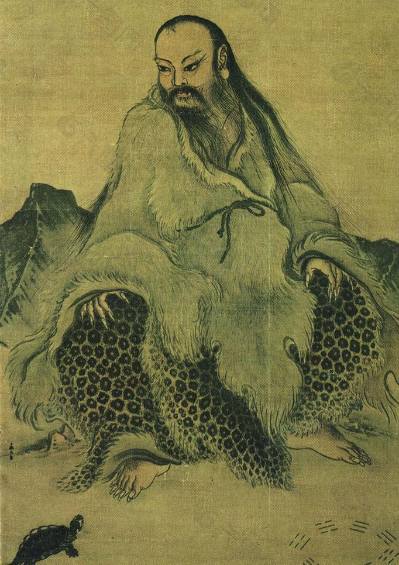
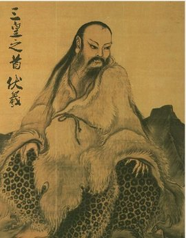
阴阳
观察自然现象
太阳每天东升西落，一定存在一种力
显然不合理，因为没有那么多的太阳每天东升西落，因此要反省
太阳东升表示存在一向上拉升的力
太阳西落表示存在一种向下拉的力
思考想象
太阳东升西落表明存在两种互动的力量：一正一反、一上一下
表述（绘制，文字的缺失）
一画开天辟地，太极即一画
一阳：阳用一横线表示，一根树枝
一阴：阴用一间断的横线表示，一根折断的树枝
太阳东升西落是循环往复，周而复始
进一步提升思考
阴阳互存的（不是相互转化的，这就是与西方思维的不同），阴阳即两仪
阳中有阴
阴中有阳
阴极成阳
阳极成阴
阴阳运动是协调的，相互配合的（宇宙存在规律的，乱中有序的）
一阴一阳之谓道，自然的变化就是阴阳之道（孔子所言，所加），世界上万事万物都是自然孕育的
孔子：易有太极，事生两仪。一生二，二生三，三生万物。
老子：道法自然
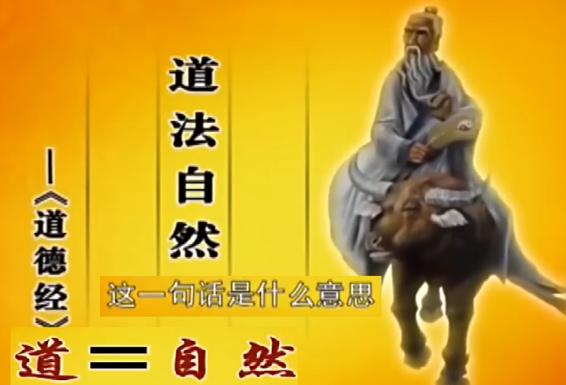
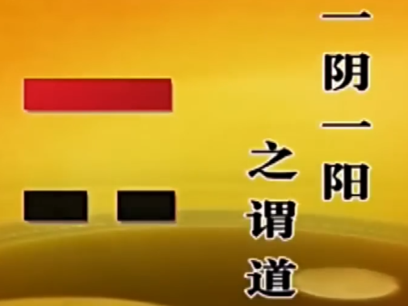
一阴一阳之谓道中西方差异
西方：一分为二，阴就是阴，阳就是阳
中方：一生二，一（阳）分开生成二（阴），即阳中有阴；二（阴）合为一（阳），即阴中有阳
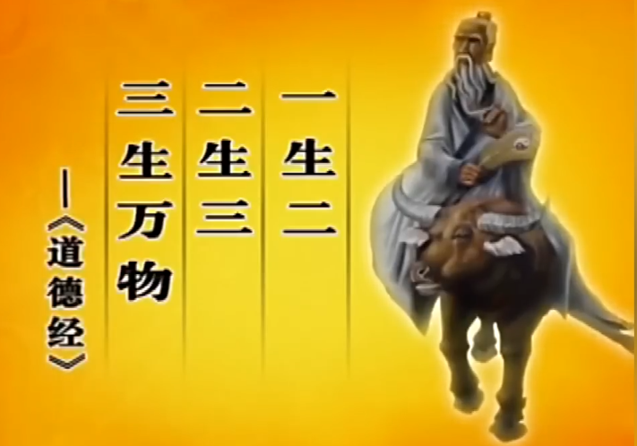
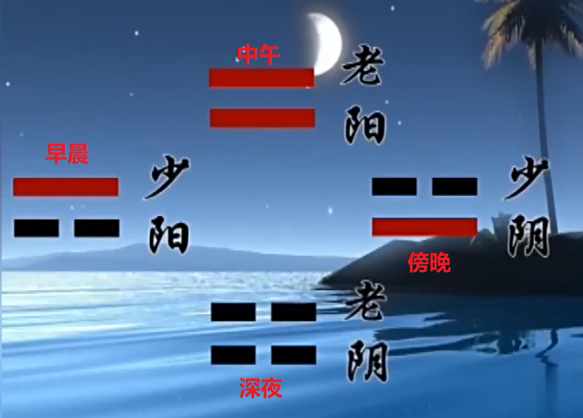
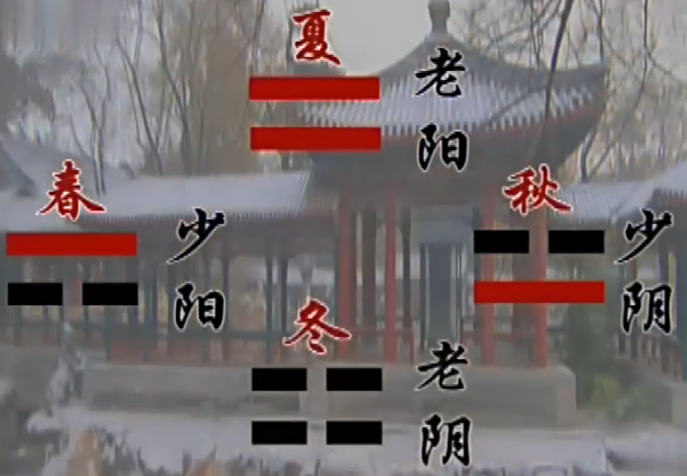
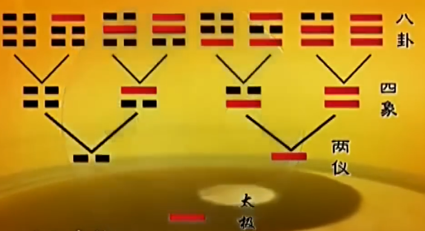
第 002 集 · 八卦定乾坤
易经——八卦定乾坤
八卦就是易经,易经就是八卦
8种基本的元素(相对的)
天有关
天（上）
地有关
地（下）
水（生存：离不开）
火（生存：食物、热）
风（解热靠风）
雷（与风相对）
山（风来自不同方向）
泽（山的那边就是海、湖）
8种基本元素是可相互作用的
雷风互动
雷山互动
雷天互动
……
互动就是八卦
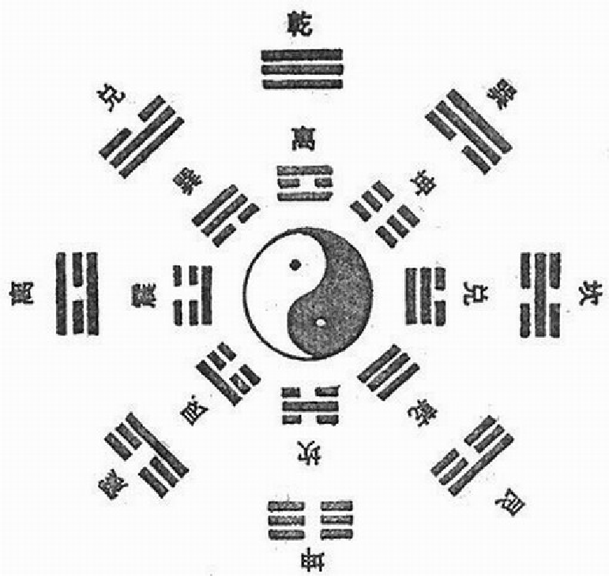
天（阳）地（阴）
分别用一条线表示（即两仪）
天上有天，地下有水……，一条线表示不完整就有了三条线————卦
八卦(八种基本元素之间的互动)
与天有关（阳）的子系统
与地有关（阴）的子系统
构成（卦象）：三条线表示
爻：一条线就称为爻，三条线分别为上爻、中爻、下爻。爻含有变动、仿效之意，
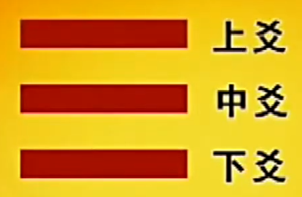
八卦形成
三个阳爻代表天（乾）：意为刚健，恒久的刚强
天下动是风，意为无孔不入，用巽(xun)表示
天中间动是火，意为烧尽，用离表示
天上面动是泽（观察天的在水中的倒影，因为天上面是无法观察的），意为喜悦，用兑表示
三个阴爻代表地（坤）：意为柔顺
地底下动是雷，意为震动，用震表示
地中间动是水，用坎表示，意为欠土
地上面动是山（高度想象），意为遇山要止，用艮（gen）表示
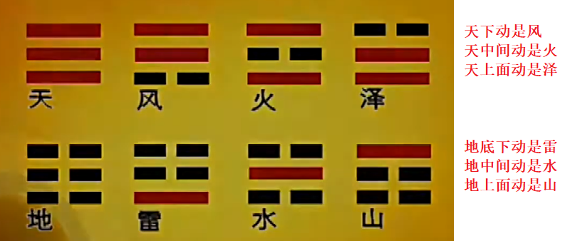
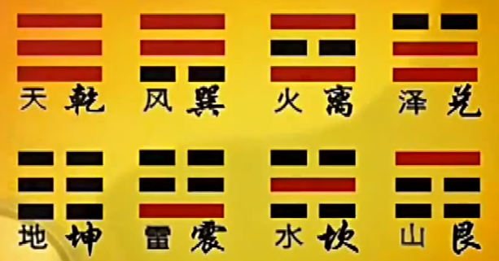
朱熹的八卦取象歌(理解八卦形成更好记忆)
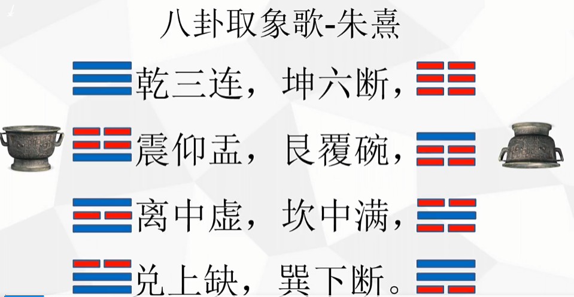
乾三连，坤六断，
震仰孟，艮覆碗，
离中虚，坎中满，
兑上缺，巽下断
八卦的含义
每个卦由6个爻构成，每个爻可是可变的，一切都是动态的，世界上一切事物都是变动的，人的命运也是变动的。
万变不离其宗（一即太极）
第 003 集 · 易经与命运
易经与命运
（讲义：视频第3集 | 稿源：B站「文字整理版」007）
周文王在牢里写成的书
商纣王为什么抓他
他叫周西伯 —— 商朝封在西边的一个诸侯
很得民心，纣王有点怕他
于是借些理由把他关起来
他在牢里有两个念头
一：这些人生经验是长期亲身体验累积的，丢了太可惜
不如趁这段时间整理出来，将来对世人也许有点贡献
二：纣王这个人说杀就杀，我命在旦夕
儿子被剥成肉酱、做成肉包送来，他照吃
不是残忍，是为了顾全大局
我一发作，正好上他的当
保住这条命，非把理想完成不可
后来很多人一关进牢里就开始写书 —— 就是学他
伏羲的是符号，不是文字
伏羲当年只有简单的符号，叫无字天书
真正成书是周文王，在牢里一字一字斟酌
受纣王压制，不能畅所欲言
于是造出一个东西，叫「留白性」
字里行间留了很多可以拐弯抹角的空间
他写完之后，很多人想改，怎么改也改不了
他是怎么注解的
每卦给一个卦名，再给一个卦辞来解释卦名
每卦六个爻，每个爻给爻辞
六十四卦下来完整无缝、环环相扣、没有矛盾，还能互补 —— 非常难得
所以《易经》也叫《周易》
周武王那句话：人为万物之灵
他讲这话，有很重的使命感
人本来是动物的一种；既然身为人，就要觉悟，要拉开跟动物的距离
因为人是天地之间唯一能帮天地改造世界的动物 —— 这是我们的责任
教化，才是这部古经的本意
商朝迷信浓厚，一下子破除迷信不可能
所以用卜筮的词句和形式写爻辞：吉、凶、悔、吝、无咎
等于替《易经》披上一件神秘的外衣
孔子《论语》：民可使由之，不可使知之 —— 讲的也是这件事
孔子为什么用祭祀
老百姓知识不普及、智慧未开，直接讲道理听不懂
于是用祭祀、拜祖宗；历代皇帝没有一个不祭
孔子说：祭如神在 —— 你既然要祭，心里就要有神在
这就是儒家那个「敬」字
对孔子要敬重
韩国学校门口立孔子像，师生天天先鞠躬再进去
欧美也敬重他
不能因为太熟悉就轻视
敬畏大人、敬畏圣人 —— 不是怕他，是敬重他，你才学得到东西
运气好的一面：逃过秦火
秦始皇烧书的时候，有人说这本不必烧
因为它是卜筮的书，是给老百姓用的
秦始皇一听：那就留给老百姓
有人说：你看《易经》真神，连自己有这一劫都算好了
不必这么神化 —— 秦始皇总要留点东西给老百姓，他要烧的是读书人读的东西
汉朝那一刀：分成术数与易理
这基本违反了「一阴一阳之谓道」
《易经》讲的是合；所有的分都是为了合
太极生两仪，两仪变来变去，最后还是回归太极
分开研究还无可厚非
但直接说术数是迷信、只有易理才对，也是偏见
有位学者一生只主张易理，最讨厌算命看风水，最后自杀了
一个人完全讲道理，就少了一个「情」字，就少了同情心
情理是合在一起的；过分理智，连自己的生活都安排不了
民间流传的极少是易理
易理多半在读书人手上，读书人读了半天又不会用
民间热闹的是算命、看风水、选日子、姓名学
今天一听到《易经》就以为它会算命，等于把易理整个撇掉
《易经》真正的用意
透过观察自然（自然有现象，眼睛看得到）提出假说
所有学说都是从假设性开始的
用「抬头三尺有神明」让每个人有所畏惧
知道我不能太放纵自己，不能为所欲为
为了什么 —— 安全、纪律、方便、有效
举个例子
进庙的门槛不能踩
真话是：一踩上去，头就撞到门框，头破血流谁负责
直接讲他不信；说「踩了运气不好」，他就怕了
寺庙的中门不能开，只有皇帝来才开
寺庙多半在荒山郊野，最怕强盗
中门一开挡不住；中门关着、两个偏门一开，老远看见来得及关
「看到尼姑会倒霉」
尼姑庵附近住的只有农夫和猎人，体力都壮
说这句话，是为了让她安全
命运能算吗？求神拜佛能改命吗？
佛，梵文原意是「教授」
释迦牟尼本来也是人，悟道以后成佛
佛告诉我们：只要悟到道理，又认真去做，终究可以成佛
菩萨为什么不成佛
观世音、地藏王都具备成佛的条件，偏偏不成
地藏王菩萨：地狱不空，我永远不成佛
他知道地狱永远不会空，还是愿意这样
求神拜佛只是提醒我们
神明在那里，你不要胡作乱为，要管好自己、修炼品性
送点礼品、烧几炷香，佛就保佑你全家 —— 那佛就是贪官污吏，绝没这种事
算命那件事，是暗示
说你会在一个海边安定下来，你果然住海边
是你受了他的暗示，又全力去配合
你配合他，他就准；你不配合，他就不准
算命不是叫你听他的话
你听他的话，你就成了他的奴隶，他就成了你的主人
算命是：我听听看
对我有利的，尽量达成；对我不利的，尽量避免
这才是趋吉避凶的大道理
「算得到，躲不过」那句
躲在家里躺床上、门窗关严，结果弹弓打破玻璃，正打到头上的镜框
曾教授自己的做法：说有血光之灾，我拒绝接受 —— 我不让它发生
我很谨慎，一看不对劲就不去
「诚则灵」的意思
你信它，你就接受它的摆布
你不信，你就可以防备
回到《易经》的人本位 —— 这才是人类的尊严
自天佑之，吉无不利
自己去了解天理，又顺从自然，就吉祥，就没有不利的后果
所重在人，在自己：我有没有悟到天理、悟到自然的道理
《易经》就是把自然的规律，移到人事方面的伦理
伦理从哪里来？从自然来
伏羲没说自然是神在管
自然就是阴阳的互动，是自然的孕育，没有什么特殊的主宰
从物理上看，《易经》比较接近真理：两种不同的力交互作用，自然产生万物，并且不断运行
《易经》的三个特性
模糊性
就那么几个符号、几个花样，给你很大的想象空间
简单明了，才作用这么大
影响中国人很深：讲话不喜欢讲得非常清楚，点到为止
灵活性
这样解释也对，那样解释也对
怎么讲怎么对，怎么讲怎么不对
对里面有不对，不对里面也有对
西方人 right is right，wrong is wrong —— 他是分的
中国人知道绝对对的部分太少，所以讲「慎断是非」，不是「明断是非」
空白性
西方人画画，一定要全张涂满，否则算未完成
中国画：画只鸟、画朵花、点点当雨、盖个章签个名，留很多空白
留白是尊重看的人
一张画十个人看，十个样
我们才是符合自然的
《易经》自己的命运也坎坷
跟它讲的一样：不断出现险阻、不断出现艰难
这样好不好
看起来不好，实际上才好
因为这样才能学习、才能磨练、才能增进自己
一个人从小到死都很顺，等于白活了
只学会四个字：吃喝玩乐
悟（做人 · 管理）
越是被压着、没处说话的时候，越要写、越要留
话不能明说，就在字里行间留出拐弯的余地
想让人守规矩，别硬讲道理，要给他一个怕的东西
命是配合出来的，不是算出来的
你配合它，它就准；你不配合，它就不准
不顺是正常的，也是必要的
一路顺，人就废了
*据录音整理稿作笔记，卦爻辞按通行本校正；原片口语有出入处，以视频为准。*
第 004 集 · 破解占卦
根据占卜的结果找到我应该采取哪一种迂回、采取哪种趋吉避凶、把损害减到最小的那种方式去做，这是占卜的意义
占卜（用途）
占卜结果只能供作参考
寻找趋吉避凶，损害减到最小途径
旁观者清，认清此时此地的你，对占卜的卦进行解卦
占卜与人的品性、时空有关，不同的人不同时空，可能结果不同
道德是最高的修养
卦的基本概念
1234推出6789游戏
一个铜板有正反两个面，即1、2
三个铜板，即3
假设正面为3，反面为2
只有4种变化，即4
出现的情况：
情况1：正面 正面 正面
3+3+3=9；叫老阳
情况2：正面 正面 反面
3+3+2=8；叫少阴
情况3：正面 反面 反面
3+2+2=7；叫少阳
情况4：反面 反面 反面
2+2+2=6；老阴
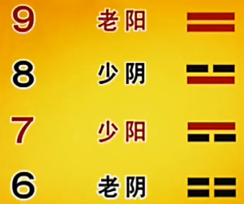
变化
七上八下（一天的变化）
阳九阴六（易经中固定的符号）
阳是扩散的，阴是收缩的
阳——奇数，阴——偶数
爻：时（时间）；位（空间）；性质（阴阳）
卦
从下到上去看
分为 下卦和上卦
标识：阳9阴6，如初九，九三，上六，上九……，其中初九的初表示时间，九三的九表示位置空间，初始时时间比空间重要，成长后空间比时间重要
卜卦的方法
占卜一次，结果必然是6、7、8、9之一
记录规则为阳9、7，阴为8、6；记录方向：由下而上
绘制的六条爻，看成一个整体，即一卦
第 005 集 · 乾坤卦
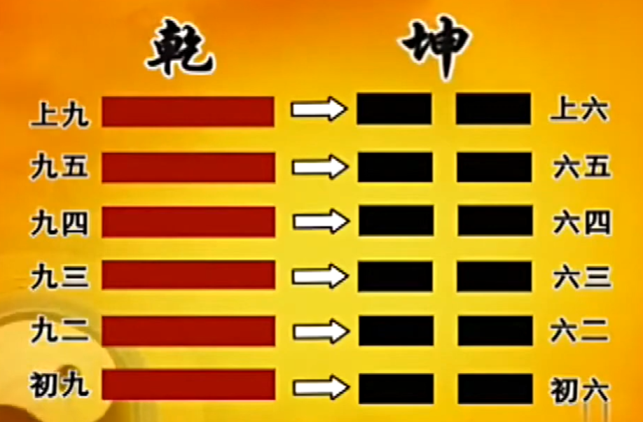
天地是宇宙的基础，而易经中的乾坤两卦也是开天辟地的两扇大门。
乾卦（纯阳，1个）
构成
六个爻都是阳的
名称
初九
九二
九三
九四
九五
上九
含义
天、父
与乾卦关联的巽（风）、离（火）、泽（兑）表示长女、次女、小女
坤卦（纯阴，1个）
构成
六个爻都是阴的
名称
初六
六二
六三
六四
六五
上六
含义
地、母
与坤卦关联的震（雷）、坎（水）、艮（山）表示长子、次子、小子
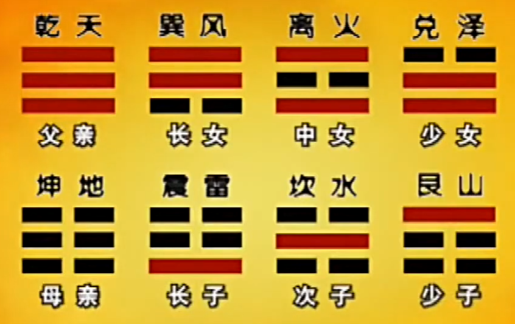
错卦（乾坤（阴阳）交错，62个）
单卦（三画）
从上向下表示：天、地、人
重卦（六画）
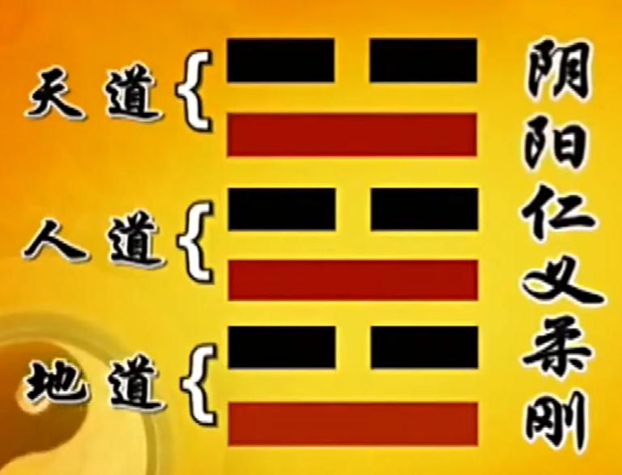
三画卦每画用阴阳表示，则为天道（阴阳）、地道（仁义）、人道（刚柔）
分为上下两个单卦：下卦为物质，上卦为能量
每个爻所在的位置即位阶，单数为阳，偶数为阴，位置由下而上标注
若位阶为阳，爻也为阳，则为当位，反之不当位。只有第63卦——既济卦，六个位置全是当位的；完全不当位的仅仅1个——第64卦（未济）
位阶的含义（通用规则）——一定有例外
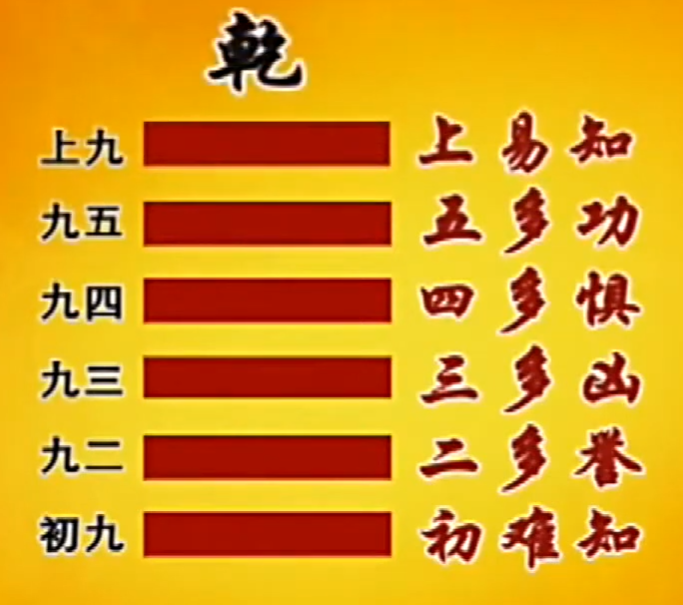
位阶1：初难知
位阶6：上易知
位阶2：二多誉
位阶5：五多功
位阶3：三多凶
位阶4：四多惧
人际启发
功归为位阶5，不要和领导抢功劳
位阶1时，多观察，少言语
位阶2时，多争取
位阶3时，多考虑能上能下
位阶4时，是否适可而止
第 008 集 · 乾卦——孔子的文言传
乾卦——孔子的文言传
讲义：曾仕强《易经的智慧》· 乾卦（文言传）
原料：根目录 乾卦——孔子的文言传.txt（录音转写稿）
缘起
孔子晚年批阅《易经》，韦编三绝——绑竹简的牛皮绳翻断过很多次
只对乾、坤两卦的卦辞作详细注解 → 所以叫"文言传"
周文王所下的卦辞，很多人不是很了解，孔子特别加以解释
文言传被后世学者誉为"千古文章之祖"
元：元者，善之长也
元 = 元始、元气——人一生下来那一口气
脐带一剪断就得自己呼吸，人一出生就面临生死关头
很多人过不了这关；一口气不来，再大的本事都没用
一见面说"你气色不错、很有元气"，讲的就是这件事
天底下最大的善、最大的好，就是老天给我们足够的气
所以要好好爱惜空气，不要去污染它
也要使自己做一个堂堂正正的人，才对得起老天给的这一口气
亨：亨者，嘉之会也
亨 = 大家在一起互相照顾、互相帮忙、彼此尊重 → 自然亨通
自然的阻碍已经够多，人与人之间再设下种种阻碍，非常不明智
嘉 = 美；会 = 聚集
动物跟动物聚、植物跟植物聚、人跟人聚，各过各的生活，互相包容照顾，不侵害别人
做生意也是"嘉"：把这里有的送到没有的地方，把我们没有的从别处运过来
智慧也一样：互通有无，同时保存对方原来生存的环境，才能长长久久
结论：各尽所能，各取所需
不能说我有钱就什么都不做、专门买东西，甚至囤积居奇
钱是要流通的，货物是要交换的
任何东西都要考虑到别人也有需要，不是只有我一个人可以独吞
否则人一聚集就乱、就不和谐、就开始争夺——那人跟动物还有什么不同
人应该过一种更加合理的生活
利：利者，义之和也
利 = 利益；利能够合理，大家就比较和谐
中国人看你"合理不合理"
你合理，他就口服心服
你不合理，他表面可能不敢说、不方便说、不愿意说，但心里有数，到时候找你麻烦
所以"义"是我们非常重视的
利是对我们最大的考验
老天给你利，就是在考验你
赚钱并不可耻，赚钱其实是可爱的——它对人类生活有正面贡献
赚钱靠机会（不是有能力就一定赚得到），用钱靠智慧
赚钱之前，最好先学一学怎么花钱
用钱八个字：当用不省，当省不用
该用的，没有钱也得想办法用
结了婚当家长，就要负起责任，至少让一家老小过温饱的生活
但也不必弄得豪华舒适、过奢侈的生活
奢侈是罪过——因为浪费资源
资源有限，地球就这么大，你把它融化到你们家里来，"利"就不能合
贫富差距越大，社会越不稳定、越不安全
不能勉强使大家一样（那不合自然），但有钱人一定要想办法分享、照顾比较穷困的人
功过不能相抵
赚昧良心的钱再拿去做善事，不行——功过不能对比
赚到钱就烧香拜拜求神保佑，也不合理
如果这样可行，那神就不公正；不公正就不叫神
贞：贞者，事之干也
贞 = 正直；经得起"利"的考验的人，才叫贞
穷的时候守规矩难，有钱之后守规矩更难（财大气粗）
我管你的，你有本事把我抓去吗——这种人蛮多的
所以穷也害死人，富也害死人
上天是用金钱、用财富来考验我们每一个人
见利忘义、见钱眼开，都是经不起考验的人
钱财是工具，不是目的；目的是"正不正"
正不正，就是看你能不能"摆平"
摆平不是用强制的（强制更摆不平）
每个人立场不一样、身份不相同、需求不一样，要摆平就要求圆满
圆满 = 顾虑到每一个角度的立场，面面俱到——这是在中国社会做人特别辛苦的地方
"正"不是守规矩、一丝不苟、样样照办
两千年来都这样解释，才落得满口仁义道德、表现却很龌龊卑鄙
那是曲解了圣人的意思
曲才能直
就是那条太极线：你要走出来，走不出那条弯弯曲曲的路，就没有办法正直
我们老是二分法——直就是直、曲就是曲；其实曲是直必要的过程
两点之间直线最短，但永远是达不到的
直话人家听不进去，你一讲他就火大；稍微婉转一点、稍微转个弯，他听进去了，就有效果
《易经》给生活的三样：第一安全，第二有效，第三方便
外圆内方，圆就是方
越小就越方，越大就越圆——同样一个东西，小的时候一定是方的，大到很大就圆了
所以"做人要大方一点""做人要圆通一点"，说的是同一件事
元亨利贞的两种展开
展开一：配四季
元 = 春，开始发芽
亨 = 夏，发芽以后成长、茂盛
利 = 秋，开始有收获——"利"字就是一把刀在割成熟的农作物
贞 = 冬，把收割来的东西藏起来，第二年才有新的种子
你把收成通通吃光，连种子都没了，来年春天靠什么播种
展开二：配儒家五常（后来的发展）
元 → 仁
亨 → 义、礼
一个人处处都合理，就很亨通
礼是看得见的（做人要有礼貌、做事要重视礼节、礼要有节制）
义是看不见的（到底合不合理，心中有数）
利 → 智
利益当权的时候，要用理智判断该要不该要、能要不能要、要了以后会怎么样、能不能无咎
"无咎"很重要——要了不该要的，晚上睡不好、白天脸色不对，自己跟自己过不去
贞 → 信
你正不正，给别人的印象就叫信
你不正，对人家再好，人家也只是怀疑你是不是要利用我
总说
仁义礼智信就是元亨利贞，就是天地的正气，叫做"乾元"
乾元 = 先天之气，天地之间最无私的
空气没有说你是好人我才给你、你是坏人我不给你
但它也不是不分是非——它告诉你：你要爱惜自己、修养自己，否则我也帮不上忙
当"长"的人要重视那个"元"
家长、校长、厂长、厅长、处长、首长，不管什么长，一开始就要重视"元"
元就是仁心（仁爱的仁）；没有仁心，你做什么长，最后都是害己害人
有了仁心才会照顾关心所有的人，办事才顺利、做事才亨通
"官运亨通"就是仁民爱民——你仁民爱民，自然官运亨通
但下面"利之所在"，就看你脸色怎么变了
越大的利越要小心：商人送你十万，他自己至少也赢了十万
送一百万的，他可能拿了一千万才给你一百万——最后你背着很重的负担
用九：阶段性的调整
文言传特别提到"乾元用九，乃见天则"
乾为什么能自强不息？就是因为它"会用九"
用九，用现在的话讲就叫阶段性的调整
不能老一套——这个阶段合适，下一阶段就遭遇重重困难
中国人夸人："这个人了不起，有两把刷子"
从来没说"有一把刷子"——一把刷子管什么用
一个人最起码阴阳两把刷子：能刚就刚、要柔就柔、能高就高、该低就低
这叫能屈能伸、刚柔并济、恩威并施、内方外圆
说到底是阴阳的配合
为什么一定要两把？因为"亢龙有悔"
阳刚过盛，马上就成阴——阳极成阴
你不可一世、非常神气的时候，突然间掉下来，凄凄惨惨
所以到"五"就要掌握，到"六"就算了
不要贪得无厌；掌握不了的东西就不要
不要太过相信"六六大顺"——就是不顺，才告诉你顺
《易经》的道理：你顺，它就提醒你"无咎"（无咎就是顺）；后面有后遗症，你要小心
每个卦都是有条件的，但都提供了一个希望
人是活在希望，不是活在梦想
"有梦最美"——那永远不能实现的梦有什么用
有希望，要靠你去落实
有了乾的自强不息，就必须要坤的厚德载物
乾在前面创造，坤在后面落实、配合
所以"阳极成阴"是有道理的
下一讲
阳极成阴
待确认
转写稿中"千言用酒，乃见天者"，已按通行本还原为"乾元用九，乃见天则"
转写稿中"恨是什么/家是什么"等段落，实为"亨者嘉之会也"一句的逐字拆讲，已按上下文归位
本笔记据讲义录音转写稿整理，古文引文已按通行本校正；转写稿有同音误字，若与录音原话有出入，以录音为准。
第 011 集 · 乾坤之道
乾坤之道
乾，阳也，男人
坤，阴也，女人
天长地久，地久天长
各守本分，各尽其责
男有分，女有归
男从小按照乾培养
把握方向，养家糊口，培养一身正气
女从小按照坤培养
牝马之责，解男后顾之忧
做好本分，就是最好的实现自我价值
第 031 集 · 泰否综述——否极泰来
泰否综述——否极泰来
（视频第 31 集 · 稿源：易经详解文字版 037）
为什么中国人爱储蓄
放眼全世界，中国人储蓄的习惯最普遍，比例世界第一
外国人收入比我们多，但每个月花光光还不够 —— 寅吃卯粮
这个月薪水领了就开始付欠债，因为都用信用卡先花掉了
还完信用卡又没有了，又开始借，下个月再继续过这种日子
一旦发生什么风吹草动，他就毫无办法
泰的时候要记住，很可能随时会有否来
可是我们还是不讲泰极否来，我们始终要讲否极泰来
泰和否：错卦、综卦、又是交卦
这边是阳，那边就是阴；这边是阴，那边就是阳
把泰卦颠倒过来就变成否卦，把否卦颠倒过来就变泰卦
把泰卦的上下两个卦交换一下，它就变成否卦
这种卦就叫交卦 —— 上下对调交换
否卦和泰卦是错卦、是综卦、又是交卦
否中有泰，泰中有否，几乎是分不开的
到底是否极泰来，还是泰极否来
去看卦序：泰卦是第十一卦，否卦在第十二卦
很明显的告诉我们：当你泰的时候，否就已经出现了
当你很乐的时候，悲就出来了
当你庆功宴的时候，你就种下了很多很多危机
照理说应该是泰极否来，可是《易经》不这样讲
它倒过来告诉我们否极泰来 —— 所以它给我们很大的信心
你不要失望，你不要放弃，你不要消极，你不要完全听其自然
虽然说否极泰来会很遥远、很缓慢、很辛苦
因为泰到否就是一卦之差
可是否要回到泰卦的话要走六十二卦，这六十二卦是很漫长的一个过程
我们另外有办法，不必要走六十二卦
我们要以人为的方式来加速否极泰来
爻之：调动几个爻的位置，情况就随之变动
把否卦的初六和九四对调一下
初六和九四是相对应的 —— 一个是下卦的初爻，一个是上卦的初爻
否卦马上变成益卦（第四十二卦）
把益卦的初九爻放到最上面，也就是把它颠倒过来看
益卦的综卦就是损卦
怪不得我们那么重视损益表 —— 「损益表」就从这里来的
损卦把上九爻跟六三爻一对调，它就变泰卦了
一共才经过两个阶段而已：由否而益，然后损，最后就泰
否、益还可以接受，为什么益要把它变成损呢
一般人总认为钱出去就是损，进来就是益，其实也不尽然
钱是要流通的，损益的功能其实是相通的
这边损那边就益，那边益这边就损
这跟泰是一样的 —— 泰当中有否，否当中有泰，益当中有损，损当中有益
所以不要把益和损看成两种完全不同的状态
你能益能损，你就会否极泰来
我们心里要有准备
当你过好日子的时候，你就要想有一天我日子不好过的时候怎么办
这个不是说没事找事
只是提醒我们：今天的收入不要完全花光，要留点积蓄，以供不时之需
爻之 —— 之就是到的意思，从这里到那里
《易经》的卦是每个卦都有关系的，牵扯来牵扯去
就是常讲的那一句话：牵一发动全身
再看两个调法
把否卦的二五爻进行调整，它就变成既济卦
泰卦和否卦是相综的，既济卦和未济卦也相综
泰卦和否卦互错，既济卦和未济卦也互错
泰卦和否卦可以交换，既济和未济同样可以交换
从这当中应该可以想到很多
凡是同性质的，变化起来会比较快
凡是不同性质的，要有一个过程来慢慢调整
所以为什么我们老要找那种志同道合的人 —— 沟通起来比较方便
读完《易经》以后，要用在你的日常生活上
这样才叫做懂得易经道理的人
《易经》的每一个卦都有关系
好几个卦同时去看，你就可以看到面面周到
前后左右上下，心中都有个谱 —— 这个就叫做周全
以人为本
泰卦和否卦基本上都是以人为本
实际上《易经》大部分都是以人为本的
西方人以事为本 —— 他们是有三个不得已
其中一个：人事变动太快
中国人自古以来都告诉你：天无二日，人无二主
你要慎选你的主人，一旦选好了，你就不要乱动
因此我们人的流动性，其实是不如西方的
以人为本有很多优势，同时也带来错综复杂的变化
这叫做有一利必有一弊
保泰去否
泰卦和否卦所注重的点，也是人与人之间的那种互动磨合
只要每个人在团体里面都有很坚定的信心要去否保泰
那他自然就会泰的时间比较长，否的时间比较短
一个人要想保泰去否，得到长远发展，就要做到居安思危
让这种危机感成为一种习惯
否极泰来是一个观念，你要把它变成实际的行动，自然就会有成果
当你在泰卦的时候
好不容易有好日子过，要齐心协力，不要三心两意
不要稍微日子过得好一点，就穷出什么花样、搞出什么主张，又搞得大家慌张得不得了
彼此要包容，要宽宏大量
每一个人都要好好记住一句话：不要一个人就把整个团体败坏掉
那叫害群之马
每一个人要告诉自己，千万不要做害群之马 —— 这个就叫做坚贞忠实
然后你要预防虚伪
人熟了以后，有很多熟不拘礼，就慢慢开始用伪装，慢慢走上否的方向
要和平，要合理
当你不幸陷入否卦的时候
你马上知道：我一定要大家从各方面同时来面对，才有办法
而不是靠我一个人、或者靠哪一个人就可以力挽狂澜
每一个人站在不同的角度，要坚守你的本分，要发挥你专业独特的力量
才能够面面周到，把否去掉 —— 是我们共同的目标
在这个时候受点委屈、受点羞辱、受点外界的风风雨雨，没有关系
每一个人都在同一条船上，我们有高度的警惕
谁都不可以让这条船沉掉
这样子很快的就会先否后喜
保泰难，去否也不容易；创业难，守成也不容易
总而言之，我们心里要有那个准备，但是不能恐惧，不能害怕，更无法躲避
每一个人都面对现实，按部就班，步步为营，小心谨慎，把它变成一个习惯
哪一天就算真的否来了，你不至于慌张，不至于自己乱了脚步
你就会去调 —— 用人力透过爻之，然后从损益表里面去研究，最后就是否极泰来
君子的位置
有一个问题是我们大家都很关切的
为什么泰卦的阳爻代表君子，到了否卦，反而阴爻又变成君子
总之这两个卦：上卦都是小人，下卦都是君子
那是不是注定君子一定要受委屈、一定要受侮辱、一定要吃苦
其实也不尽然
为什么这个卦会这样安排
因为君子不得意的时候，他会保持君子的心态
往往君子一得意、势力一大以后，他就变小人 —— 这才是我们非常担心的一点
我们常常讲一句话：权力使人腐化
现在还要再加一句话：财富难保忠贞
一方面权力能腐化，一方面财富又很难保忠贞
明明是君子的，一下就变小人 —— 就是泰卦跟否卦特别用心的一点
小人你让他得势、让他得意
只要他自己觉悟了：我好不容易得到这样的权势、这样的地位、这么多的财富
他就要记住四个字，一切就改观了：逆取顺守
我是小人，我不择手段，我靠很多大家想象不到的方式上来了，那是逆取
现在我开始顺守，彻底改变我的心态
我们应该宽容这样的人
这就是看君子有没有风度
所以为什么在泰卦的时候，它特别告诉你：你不能用兵
君子一定要把小人赶尽杀绝，那你也变小人了
悟
泰的时候，否就已经在那里了
所以好事当前，正好是留一手的时候
「泰极否来」是实情，「否极泰来」是选择
前者是规律，后者是信心 —— 人活着靠的是后者
否到泰要走六十二卦，可人有办法把它缩短
否 → 益 → 损 → 泰，两步而已
该损的时候肯损，是那条近路
今天的收入不要花光
不是抠，是给明天留个转身的地方
好日子里最容易出的两样东西：花样和伪装
一个是穷出花样，一个是熟不拘礼
泰难，否也不容易
所以平时就得把它变成一个习惯 —— 不然真来了，你会乱脚步
权力使人腐化，财富难保忠贞
所以得意的第一天，就该给自己打预防针
你现在的日子，是在泰里，还是在否里？你手边那件「等过一阵再说」的事，是真不急，还是不敢碰？
*据讲稿整理，卦爻辞按通行本校正；原片口语有出入处，以视频为准。*
第 006 集 · 乾卦六龙
乾卦六龙
龙
三个特性
变化多端
难以把控
神通广大
龙的传人
乾卦
六条阳爻组成
像龙一样
神通广大
随时应变
无所不通
乾卦的大象
天行健，君子以自强不息
行，即运行，云动雨落；健，即持久；天行健，就是持久地运行
爻辞
初九 潜龙，刚刚生成的人或物，朦朦胧胧，不知是否合宜？则要潜，打基础，学技能，建立自己人脉关系
九二 见龙，见同现，见龙在天，利见大人
九三 惕龙，忧患意识（下卦的最高处）
九四 跃龙，（上卦的初始），做好可上可下的准备，此时服务中心为九五
九五 飞龙，飞龙在天，利见大人。人生的最高境界。注意水能载舟，也能覆舟，一定要适可而止度、量要大
上九 亢龙，亢龙有悔
卦辞
元亨利贞 —— 与「六龙御天」同一段讲义，此处不重复，见 六龙御天.md 的「读卦 → 卦辞」一节
第 007 集 · 六龙御天
六龙御天
读卦
卦名
乾卦
卦象
六条阳爻构成
上卦 下卦
在不在位
在位：初九、九三、九五
不在位：九二、九四、上九
卦辞
元亨利贞
元：慎始，谋定而后动
亨：互通有无，通达
利：义之和，利益要公平分享
贞：为人处事要公正
爻辞
初九——潜龙、九三——见龙，九五——飞龙，都是在位的，所以要当位。
初九重点在于潜，九三重点在于表现，九五在于适可而止
九二、九四、上九是不在位的，九二要知道你的领导是九五，九四要做好可上可下的准备，上九要保持得配是否合理，不能成为亢龙
文言传
孔子对乾坤两卦就周文王的卦辞做的注解
乾卦的文言传
元者善之长也
亨者加之会也
利者义之和也
贞者事之干也
第 009 集 · 坤卦
坤卦
乾坤
卦辞
元亨利贞
自强不息
坤卦
卦辞
元亨利贞，元亨利牝马之贞
牝马——母马
牡马——公马
为什么用马不用牛？因为马忠贞不二，坚持合理的原则
厚德载物
厚德载物指道德高尚者能承担重大任务，也指有德行的君子，应该以深厚的德行，来容载世间的万物。
是指甘心做好配角，辅助、配合主角完成任务
夫唱妇随、龙马精神————夫、龙把握正确的方向、合适的速度，排除途中障碍，妇、马跟随就好，不给主角带来任何麻烦
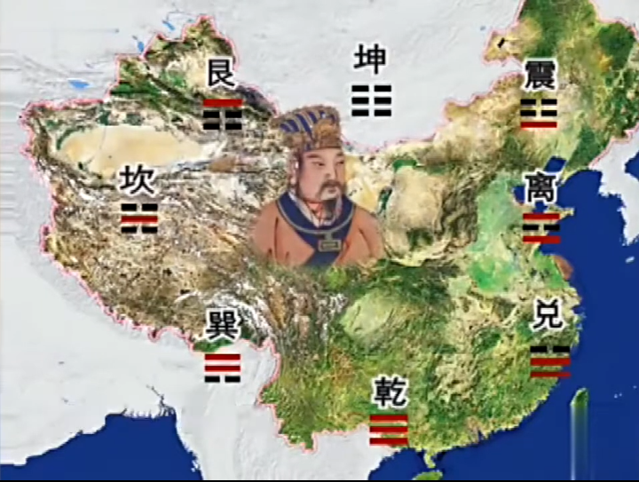
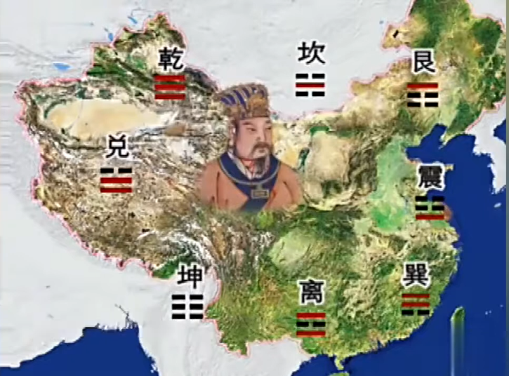
坤卦爻辞
初六
履霜坚冰至，即趁早预先防范，或遏制，或躲避
六二
站的低，自然看到的地是方广大，地是明（天是光，地不是发光体，只能反射光）
六三
含章可贞，无成有功
合理的部分就去尽力完成，不合理的部分，了解后要进行反馈，做了事情不能算是你的功劳
六四
此时听到领导不对别人说的话，不让别人做的事。你不可多嘴（把领导的话告诉他人），做一些领导不能做的事。
关键点是不给领导留下任何后遗症，而且你还得不到褒奖。
所以，谨言慎行，少惹事，还要不怕事
六五
善于做协调，注意不可功高盖主。
上六
此时应该知道九五的很多秘密，应明白伴君如伴虎。
适可而止，量力而为（明白自己就是一匹牝马）
持久是最求的目标，做大做强不可一味追求，那是九五的目标
第 010 集 · 坤卦——地道柔刚
坤卦——地道柔刚
讲义：曾仕强《易经的智慧》· 坤卦（下）
原料：根目录 坤卦——地道柔刚.txt（录音转写稿）
总纲
自然有阴阳之变，人道以中和为常
处世要刚柔并济
坤卦六爻全是阴，而且六爻皆不相应（同性相斥）
初六 ↔ 六四：同为阴，相斥
六二 ↔ 六五：同为阴，相斥
六三 ↔ 上六：同为阴，相斥
卦本身没有好坏
乾卦、坤卦都算好卦，好卦没什么好坏的，看你怎么用
看卦方向：从下往上看
初六：履霜，坚冰至
意思：脚踩到霜，就知道冰迟早要结
高速公路下雪：清得早就通，不清就结冰打滑
应用：坏习惯要趁早改，晚了就改不动
举例：小孩从小玩"见一个杀一个"的电动玩具，长大就带枪
应用：事先防范，要及早、要及时
初爻讲"动"，万物未生之时——防患于未然
关于"警觉性高"
说中国人警觉性高，是对同胞的爱
同样一件事，换个说法叫怀疑心重——那是站在外人立场看
看小人起恶念就及时防备、及时躲开，就没事了
大难临头不怪谁——凡事都要趁早
六二：直、方、大，不习无不利
地的本性：直、方、广大
站得低，看地是平的、有界限的，所以是"方"
"不习"= 自然而然，不经人工做作
人与人的关系要出乎自然、出乎内心的真诚
学一套鞠躬多少度、手势怎么摆，那是形式
礼貌要由内心发出来，装不出来
对不一样的人自然有不一样的表现，那才是真实
天道曰"明"，地道曰"光"
天上才有发光体（太阳）；地上没有发光体，地只是反射光
太阳照到就光明，角度不对就一片黑暗
"光"的意思是：我本来就是这个样子，赤裸裸把本性显出来，这才是真的美德
六三：含章可贞，或从王事，无成有终
"含"：像含糖果，慢慢含、慢慢体会，不急着说、不急着表现
内涵比外在重要
有人猛看不得了，再看没什么，越看越讨厌
有人怎么看也没什么，久了像座宝藏，怎么挖挖不完
六三不当位，上下都是阴 → 进退两难
上级的指令好像不合理时：先仔细了解 → 找适当机会向上面回报 → 若真要执行，在合法范围内完成
合理的顺从，不是盲目顺从
为什么用马不用牛：牛有点盲目服从，马会看主人，不对劲就照样把你甩下来
这就叫"利牝马之贞"
无成有终
从头到尾把事情做好，不图一点点成就感
年纪轻轻就有成就感，就表示这辈子只能做小事
老板称赞也不要马上飞上天——一捧就得意，老板就开始修理你
六四：括囊，无咎无誉
括囊 = 扎紧口袋
口袋都是口小、肚子大，东西才掉不出来
口大肚小就完了，装什么一不小心都掉光
六四是当位的爻
六四贴近六五，就像乾卦九四贴近九五——伴君如伴虎
老板很多话不跟别人讲、只跟你讲
老板不方便给别人做的事，交代你做
你一传出去，老板以后还敢叫你做事吗
核心要求：没有后遗症，比"对错好坏"重要
老板要的是最后没有后遗症
"你叫我做我就做"照样挨骂——那是害死他
六四最大的困难：四方八面的请托
合法的、不合法的都来，他们不敢直接找老板，一定找你
凡事考虑长远，只要后面有后遗症，就吃不完兜着走
没有人说你好，但你不能出差错；责任全担，权利很有限
家务对照：媳妇当家，当家三年连狗都讨厌你
别人知道"你明明知道"却不讲，会得罪人；一讲又怕得罪婆婆——所以要用各种方法使自己无咎
应对：谨言慎行，少惹事，但还要不怕事
不要让大家觉得你一天到晚制造问题、干扰别人
又要让大家觉得你会好好照顾他
面面周到、观前顾后，来龙去脉都要搞得很清楚
平常要用心的两件事：既了解上面的意思，也知道底下的辛苦
六五：黄裳，元吉
诸葛亮不取九五，一路辅佐阿斗——他就是六五
明明是个领袖，却样样都尊重阿斗
为什么用"黄"
黄是五色之中，跟每一个色都好搭，不像黑白对比那么强烈
黄同泥土之色——"黄种人""中土"其实都跟这个有关
含义：善于跟四方八面的人协调，找到共同点、合理点，和平共存、互相帮助
最要紧的是对上要忠
不能让上面怀疑你在搞党派、搞小团体
你很会协调，上面就怀疑你是不是要威胁我
让他感觉到你心中有他、你是为他好——你越会协调，他越放心
让他感觉你心中没有他，他很快就下手
六五不是龙——九五才是龙（飞龙在天）
一句话：我们不是龙，要做"能协调"的那个人
上六：龙战于野，其血玄黄
初六只是地上有霜，越积越厚、越冷，到上六就像亢龙一样煎熬
整卦以马为象征，唯独上六突然出现一个"龙"
天龙与地龙交战：很激烈、惨不忍睹、两败俱伤
"玄黄"是两种血色：一种亢龙的血色，一种坤龙的血色
现实写照：首长与幕僚长平常配合得很好，误会越积越深，最后赶尽杀绝
根因：我的秘密你都知道，你出去我还能安心做事吗
旧时皇帝动辄斩九族，就是这个道理
启示：知道你太多秘密的时候就要小心
这辈子最多最多到"黄裳元吉"，就该停下来
在适当的时间告老还乡——而且不能让人以为是威胁
顺带一句：坤卦的头一个提醒是要防患于未然，上六就是没防住的结局
初六的霜，就是这么一步步变成坚冰的
归纳（乾坤两卦读完之后）
求上进是应该的，最安全的路是修养品德
不是一级一级要升、事情要做很大、势力要很强
品德不好：势力越大越倒霉、财富越多越危险、地位越高摔得越重
龙要飞上去，就要有掉下来的准备；马跑得很快，前面若是海，地到尽头就下去了
凡事适可而止、量力而为
尽心尽力没有错，但力量毕竟是有限的
配合要合适：老板要知道干部能抬多少斤
多一点叫有挑战性，太多了迟早把他压死
天长地久，地久天长
做强做大，不如做长久
强一阵子没有了，大一阵子垮了，有什么用
乾坤要配合才能长久
从男女说起 → 再从夫妇看 → 有夫妇才有父子 → 才有君臣、朋友、兄弟
儒家的整套道理，根源就在这里
待确认
转写稿中"昆远贵境更贵真"一句，疑为讲者评语，未能还原原文
转写稿中"出窑江洞处，万物未生时"，疑为讲者对初爻的批注，原句待核
本笔记据讲义录音转写稿整理，卦爻辞已按《易经》通行本校正；转写稿有同音误字，若与录音原话有出入，以录音为准。
第 012 集 · 屯卦——创始之道
屯卦——创始之道
讲义：第 17 集 屯卦（下）创始之道
原料：【素材】易经稿源/017-屯卦（下）创始之道.txt（据 B站专栏「文字整理版」）
为什么重新开始的时候要看屯卦
古人讲的"新"是"改善"，不是新花样
日新又新 = 一天比一天好，一天比一天更改善
创始 = 每一次都是一个开始，因为时空都变了
越有经验的人，越容易犯错
"我走过的桥比你走过的路还远"——偏偏那桥就断了
走了九十九条桥都安全，第一百条正好碰上泥石流
过去经验很宝贵，但每次都是新的开始，都要慎始，不能闭着眼睛照经验做
只要你重新开始一件新事，就看屯卦——会更安全、更有利
六爻逐爻
初九：磐桓，利居贞，利建侯
有阳刚之气，但地位太低微，发散不出来
状态：很有学问很有智慧，但刚出社会，讲话没人听、有意见没人采纳
春天来了、雷动了，种子不能再不启动——但启动不顺
磐桓 = 找最佳的立足点；慎选立足点，是做任何事开始的第一个原则
打好根基：楼越高地基挖得越深；地基没搞好，楼越高越危险
利居贞 = 找到立足点以后安安稳稳、规规矩矩守住，这样对我有利
有利什么？利建侯——从这里发展出我的基地
六二：屯如邅如，乘马班如，匪寇婚媾，女子贞不字，十年乃字
六二与九五相应：你这个种子将来一定有个地方让你冒出去
若不相应，转半天也出不去，下面就都是硬的，胎死腹中
初九（近水楼台）与九五，对这个阴爻都有吸引力
初九停滞不前，因为觉得这里好、有吸引力——忘了自己该配的是六四
匪寇婚媾："匪"就是非，不是强盗、不是坏人，是来向你求婚的
女子贞不字：六二心中有九五，不答应；"十年"就是很久的时间
结论：初九一动，不能顺利生根发展——常常处处受阻，你要人家，人家不要
六三：即鹿无虞，惟入于林中，君子几，不如舍，往吝
打猎的比喻：鹿跑得快 + 你对林子不熟
虞 = 向导：披着动物皮毛引路的人；现在探险也一定要找熟悉地形的当地人
没有向导，就只是钻进林里一看——空空的全是树木，连一只鹿都看不到
君子几 = 见机行事；不如舍 = 干脆放弃，换个方向
往吝：硬要往这个方向突破，勇气可嘉，但最后是遗憾
种子养分有限，死命乱钻，最后养分耗光，就没有生命迹象了
中国人的民族性：这里行不通，就拐个弯
六四：乘马班如，求婚媾，往吉，无不利
骑在马上好像要走又好像不走，你在犹豫什么？
六四（阴）与初九（阳）相吸——谁先低头？
劝你勇敢说出来"我来了，我在这"，那就成双成对、成其美事
后来引申为"礼贤下士"
虽然六四地位比较高，但对你有帮助的人现在地位比较低
不必等他来跟你磕头——我去找你，你帮我忙，大家都好
六四与初九结合 = 种子的根终于找到顺利成长的地方（风水宝地），然后生根发展
九五：屯其膏，小贞吉，大贞凶
屯其膏 = 屯集滋润的资源
屯难的时候资源有限：根还那么细，种子的能源被耗光，能吸收的养分很有限
要爱惜你的力气，不要一下子就要长出很大的叶子——长不出来的
刚冒出的叶子都是很细嫩、很柔很脆、弱不禁风，只有这样才冒得出来
用生育打比方
现在特别重视小孩生多重，好像很夸耀——这是无视母亲的存在
胎儿越大，妈妈生得越辛苦，有什么好高兴的
"一人吃两人补"把小孩吃得很壮很大，谁倒霉？妈妈倒霉
小，贞吉——母子都平安；小孩太大，有时候就难产
真碰上"要保妈妈还是要保婴儿"，那是很难过的——爱之适足以害之
创事业同理：不要一下子把规模做得那么大
规模过大，你照顾不过来
先从小店开始，做得好、有把握了，再找大一点的地方扩充
何必一出来就要先声夺人、一炮而红——那都是不必要的
上六：乘马班如，泣血涟如
骑着马在上面徘徊、进退、晃来晃去 → 产前的阵痛慢慢退掉
为什么？因为喜悦——哭得连血都哭出来了，其实是哭红了眼睛
涟如 = 不停，但其实很快就停（她不可能长期哭）
又难过又高兴那种滋味，也不知道怎么说
医生把小孩洗过、抱过来，妈妈一抱，什么事情都忘记了
落地：开创事业三步
第一步：慎选立足点
决定了以后就利居贞——安定下来，不要三心二意，全力以赴
你就会利建侯——把这个基础建立起来
第二步：不要心猿意马
你就能找到真正要的东西
发展到六四，就可以放心这样发展下去，没有不利（往吉，无不利）
第三步：不要贪大贪快
你才是初创时期，没办法和那些大老板比
同样是"九五"，差别很大
乾卦的九五：飞龙在天，很神气——因为大环境让你可以大展宏图
屯卦的九五：只能屯其膏——事业初创，就算已经成规模也很小
给员工的福利也要记住：小，贞吉；大，贞凶
这跟慷慨与否是两码事
你可以鼓励大家"我们会一年比一年好"，但现在大家共克时艰比较安全
总纲
各守其分，各尽其职
刚刚初创的时候，千万记住谨守本分、步步为营
不要做夸大不实的广告
下一讲
蒙以养正
待确认
原料为「文字整理版」（为保留原视频口语，个别处不通顺），卦爻辞已按《易经》通行本校正
本集转写稿无异常，未发现需回听核对的段落
第 012 集 · 屯卦——始生之难
屯卦——始生之难
讲义：曾仕强《易经的智慧》· 屯卦
原料：根目录 屯卦——始生之难.txt（录音转写稿）
屯卦的位置与构成
乾坤两卦交合之后产生的第一卦
下卦震（雷，动的意思）；上卦坎（水，坎是危险）
一动就充满了危险
可是不动就生不出来
所以要又动、又能够面对危险，才能顺利生产
卦辞：元亨利贞，勿用有攸往，利建侯
乾卦是元亨利贞；坤卦是元亨 + 利牝马之贞（多一点点条件）
屯卦因为四德俱全，但下面还是有条件
勿用有攸往 = 有所往（暂时不要乱动），不要跑来跑去
因为根基没有稳；一生下来就想乱动，非常危险
利建侯 = 找到一个有利的地盘
任何东西连立足之地都没有、连小小的地盘都没有，怎么生存发展
卦象取义：一棵草的生长
万物都是生出来的，而且是从很艰难的状况里生出来的
初九 = 种子往下钻
所有种子都有同样的特性：往下长
果实烂掉以后有一个果仁（核），那就是将来的种子
如果只是随风飘，可能飘掉了；随水流，就流掉了
一看到泥土，就知道这是我的生存宝地——往下钻，钻到很底下，就变成初九
六二、六三、六四 = 根在地下盘来盘去
一下冒出来的草根太脆弱，能吸收的养分、水分太有限
把草拔出来看，根都是盘来盘去的——它在找那个"九五"在哪里
上面如果是块石头，就糟糕了，发不出芽
九五 = 突破点、发芽的最佳点（用人的观点看，就叫风水宝地）
上六 = 两片嫩嫩的、翠绿的、可爱的芽
归纳
草出生不是"傍一下"就起来的
人要有个胎盘，草要有一小块地盘，哪怕很小
任何事情的产生、任何万物的诞生，都是又难又险
必须聚集力量、谨慎行事，同时方向要正确、方式要合理、方法要正当
为什么"万事开头难"
屯卦表示初九这一股阳刚的气，进入了阴柔的母体
刚柔两气开始形成互动
这个时候一切都是陌生的，要交易、要愈合、要磨合，困难重重、很多障碍
一句话：万事起头难，死生（创始）是非常不容易的
六爻逐爻
初九：磐桓，利居贞，利建侯
有阳刚之气，但地位太低微，发散不出来
就像一个人很有学问、很有智慧，但刚出社会，讲话没人听、有意见没人理
磐桓 = 找最佳的立足点；慎选立足点，是做任何事情开始时的第一个原则
挖好根基：楼越高地基挖得越深；地基没搞好，楼越高越危险
找到立足点以后就安安稳稳、规规矩矩守住 → 从这里发展出基地
六二：屯如邅如，乘马班如，匪寇婚媾，女子贞不字，十年乃字
六二跟初九一样都是当位，但它是"停滞不前"的
为什么停？因为觉得这个地方好、有吸引力——异性相吸
这种情形叫"匪寇婚媾"："匪"就是非，不是强盗、不是坏人，是来向你求婚的
他忘记自己该配的对象在六四，一看六二就近追求
"女子贞不字，十年乃字"——"字"是答应嫁你；十年，表示很久的时间
六二不答应，因为心中只有九五
我要"利永贞"，只能对九五专心一致
你初九再殷勤，我不理你，坚持相当长的时间
启示：初九一动，不能顺利生根发展——常常处处受阻，你要人家不要
六三：即鹿无虞，惟入于林中，君子几，不如舍
用打猎作比喻：一个人要进森林打鹿
第一，鹿跑得很快
第二，你对林子不熟悉
"虞"就是向导：披着动物皮毛，动物以为他是同类，就指引你，你才知道路在哪里
现在探险队也一定要找熟悉地形的在地人做向导
即鹿无虞、惟入于林中，就是钻进林里一看，空空的全是树木，一只鹿都看不到
君子几 = 见机行事；不如舍 = 干脆放弃，往另一个方向钻
如果坚持要往这个方向突破，固然勇气可嘉，最后是遗憾
六四：乘马班如，求婚媾，往吉无不利
六四与初九阴阳相吸
后来衍生为"礼贤下士"——我去找你、你帮我忙，大家都好
六四与初九结合，表示那个种子的根终于找到顺利成长的地方
这就是它的风水宝地，然后生根发展
九五：屯其膏，小贞吉，大贞凶
根已经做到根深蒂固，准备要发芽、准备冒出地面
所以九五又开始有很阳刚的气概，一冲而出
但在灾难的时候资源是有限的
根还那么细，种子里的人员（养分）被你耗光了
能吸收的养分是很有限的
像挤牙膏一样，一挤里面就挤光了 —— 要爱惜你的力气
不要一下子就要长出很大的叶子
刚冒出叶子都是很细嫩、很柔很脆，好像弱不禁风一样
只有这样才冒得出来；一下要冒出两个大叶子，根本不可能
读音：卦名的"屯"不念"尊"，念屯；同一个字到这个爻辞里读音不同（囤积之意）
上六：乘马班如，泣血涟如
好像骑着马在上面徘徊、进退晃来晃去
这就是产前的阵痛慢慢在褪掉——因为喜悦
又难过又高兴，眼泪红红的，但很快就笑起来
医生把小孩洗过、抱过来，妈妈一抱，什么事情都忘记了
大象：云雷屯，君子以经纶
雷响以后，万物就抓住机会升起来、长出来
君子看到这种自然现象，就知道：要么不从事任何事业，要建立事业，第一步就是"经纶"
经纶 = 现在所讲的经营管理
你要开店，不管你开什么店，先把经营管理弄好
再小也要把基础稳固、扎实，然后再慢慢求发展
找工作也一样
先找到一个、先安定下来，学习学习，才知道我的兴趣在哪里
要动再来动，而不是东看西看、高不成低不就
那你永远没有那个"一"，初九永远出现不了
一年一年过去，对自己根本没有希望
一个人找不到老板很苦恼；太年轻出来当老板也很苦恼
过去的经验很宝贵，但每一次都是一个新的开始，都要慎重
每一次开始的时候，回想一下屯卦的道理，你会更安全、更有利
三个层面的启示
人的诞生：人类怀胎繁衍后代，最初都充满艰难
草木生长：破土而出，也要聚集力量
事业开始
初九 = 强烈的创业动机
要不要找人合作、是什么行业、市场在哪里，都要考虑
但都是考虑——那就叫阳刚之气
你有很多点子，可是没有那个适合的生态环境，也等于零
第一步要跨出去；第一步没跨出去，一切都是空想
跨出去就知道面临很多困难：市场不确定、人员不安定、产品不成熟、价格不知道怎么定、顾客意见太多
这时候最要紧的是慢慢调整、慢慢适应
等到九五才松一口气——同事之间磨合得差不多了，该来的客户也慢慢熟悉了
这就叫"利建侯"：终于发现我有了一个小小的平台，可以安心在这里经营
关于"争先恐后地生"
万物生出来时有一个很不好的现象：争先恐后
资源承载是有限的
树木长得太多的时候，结果都长不好
科学家做过实验：小岛养几十头羊都很愉快、长得非常好；加到几百头就拥挤、不安；挤得满满就开始生病、大量死亡
我们的房子其实人一共就这么高，盖太高太挤就有压迫感，整天在里面受不了
人太少也不行——地广人稀，这地方怎么发展得起来
所以连人口的密度都要好好调整
人太少了移一点过去，人太多了拉一点出来
每个国家都要管制移民，你要按正当手续，否则我不让你来
人一多，社会秩序就不好、生态环境就很差、连空气都污染，彼此挤压的结果都活不长
结论：人口政策要按当地的人口密度来做规划
总纲
八卦成列，象在其中矣——象就是指卦象
由"象"探"理"
象是自然界中千变万化的现象
理是不变的规律
通过象来探究卦中之理，就掌握了解读易经智慧的一把钥匙
卦辞告诉我们"万事开头难"→ 顺则谨慎而为，逆则满怀信心，永克时间
按部就班，不要急
不要说我一步要登天，那是绝不可能的
勤劳守正
干任何事情都要一点一滴去做
只要有一件事情做得不正当，你后患无穷
整个卦象下面是动、上面是险——每一个动作都面临很大的危险
创始一件事的完整做法
长远的眼光 + 充足的计划 + 几个志同道合的人 → 一步一步往前走
过程中千万多看蒙卦——只有"蒙以养正"，使你随时得到正确的观念、表现合理的行为，才能一步一步顺利发展
下一讲
蒙以养正（蒙卦）
待确认
转写稿中"初96263649536"一句，实为念爻位次序（初九、六二、六三、六四、九五、上六），已按通行本还原
转写稿中"九五这个不要念尊，要念屯"——卦名"屯"读 zhūn，爻辞"屯其膏"读 tún（囤积），已按通行本校正
本笔记据讲义录音转写稿整理，卦爻辞已按《易经》通行本校正；转写稿有同音误字，若与录音原话有出入，以录音为准。
第 013 集 · 蒙卦——教化之道
蒙卦——教化之道
讲义：第 19 集 蒙卦（下）教化之道
原料：【素材】易经稿源/019-蒙卦（下）教化之道.txt（据 B站专栏「文字整理版」）
全卦结构：谁是框框、谁是老师、谁是学生
九二与上九是两个阳爻，把六三、六四、六五三个阴爻包在里面——那个框框就是"学堂"
要登堂入室，就进入这个框框
初六在框框外面
学生不能站在框框外面（那样就是自暴自弃）
凡是敢站在框框外面的，一定是老师
老师之所以站在外面，是因为他知道任何道理都要与时俱进
时也命也，此一时也彼一时也——老一套不停地传下去，传到最后大家都懵里懵懂
初六是阴爻、又在初位：老师的处境本来就弱，位置又低，就更弱
所以每一个时代，老师要带动一些新的、与时俱进的东西，老师要特别努力
分工：下卦三爻 = 三种老师；上卦三爻 = 三种学生
三种老师
初六：发蒙，利用刑人，用说桎梏；以往吝
发蒙 = 重新启发它
最好的办法是利用"刑人"：少讲话，自己言行一致做给别人看
别人看了会觉得"这种时代还有这样的人"，你就成功了
用"桎梏"：自己先把框框解开，别人看见也会解脱——这才叫改革开放
要改革，老是用以前的框框怎么改？要开放，不能没有模范、没有典范
用现代的话讲叫"参考力"
用权力是很危险的，用势力是很可怕的
你很平和、言行一致、经得起众人考验，所作所为自然引起别人把你当参考目标
以往吝 = 不能太积极、不能急于有成就
急于有成就，就会引起很多人的怀疑
我们只是把老的学问给它新的生命——这叫"继旧开新"
九二：包蒙，吉；纳妇，吉；子克家 ← 教师的主力
包蒙：他周围有很多懵里懵懂的人把他包围住，向他请教、向他学习——当然好
老师要严厉，同时也要有亲和力
纳妇，吉：好像家里讨了一个好媳妇，全家都有福
子克家：教出来的"子女"将来都能持家、都能把这个家教传承下去——这是最好的老师
六三：勿用取女，见金夫，不有躬，无攸利 ← 误人子弟的老师
"这种女孩子不能娶"——口气很严重，它是用这个来比喻这种老师你不能跟他学
见金夫，不有躬：看到有钱的人就忘记自己的身份地位，一直巴结献媚
具体表现：这个学生的家长是亿万富翁，就给他加分、课后叫他补习，别人都不管
老师要有老师的身份，要照顾到所有的学生
无攸利：以金钱与地位来看待学生的老师，本分已经失掉，迟早无所得
有些人专门去接近有钱人，最后是无所得的
有钱人为什么会有钱？就是他口袋很紧，想赚他钱很难，不要做这个梦
三种学生
六四：困蒙，吝 ← 最可怜的学生
六四与初六都是阴爻，同性相斥——被阴爻蒙在里面，始终不见天日
六四听不惯学校里面的那一套，也听不惯学校外面的那一套：到底要听什么、学哪一样？
学校跟社会永远有距离
年纪轻轻就到社会上去混
刚开始会很谨慎（因为没做过）
做了两三次熟悉了，自己觉得"什么都懂了"——这才是最可怕的
其实里面错误一大堆，没有好好经过学习，所以他一定"吝"（很遗憾）
人最可怕的是：一直都没有遗憾，等到临终才遗憾
真正的遗憾是快死的时候想起来：这一生这样不对、那不对，什么都不懂——终身遗憾、死不瞑目
每个人最要紧的是有自知之明
我们的眼睛是往外长的，看别人这个不对、那个不对，对人品头论足——干嘛呢？
知人不容易，知己更困难
做一个人要了解自己的"蒙"在哪里，才能解
父母不应该规定小孩要学什么
只能提供机会，让他自己去了解他的蒙在哪里、应不应该往这个方向去发展
如果弄到孩子什么都很困惑、什么都不想学，学多了很讨厌——那就造成困蒙
六五：童蒙，吉 ← 最幸运、最聪明的学生
"蒙"才是好事情，不蒙就是坏事
一个人老觉得自己什么都懂了，就是困蒙；老觉得自己什么都不懂，也是困蒙（因为怀疑自己）
要有所知、有所不知
知道的部分：不自大、不自满
别人讲什么，不随便相信，要很慎重
对自己不知道的部分：有机会就要学习
例子：对方是化学专业的
只要他谈化学的部分，我是一句话都不敢说的，只会张大耳朵听，不会插一句话——这才叫童蒙
但他讲别的事情、讲做人做事、国家大事，我充耳不闻——因为他过分了、不守分了
我很谦虚，但是我知道我要的是什么
该学的我会学，不该学的怎么讲我都不理——我就很容易受到启蒙
反面：借着自己懂化学的光环，然后乱讲一通的人，很可恶，这种人很多
老师要守分：自己懂的才可以说；不懂的要说"这个我不清楚，我们去问问专家"
家长也一样：小孩问问题样样都回答，迟早害死小孩
上九：击蒙，不利为寇，利御寇 ← 需要督促的学生
击蒙 = 碰到好的老师把你唤醒、打醒，你就能好好学
不是每个学生都有资格被老师打
这句话所有老师都应该了解，所有家长也应该想
老师打你子女的时候，做父母的该这样想
我们做父母的没有尽到责任、没把小孩教好，老师才代替我打他——我谢都来不及
这不是鼓励体罚
不利为寇：像强盗打人一样地打小孩，那当然不对
利御寇：家长老师打小孩的时候，小孩怎么保持安全——小孩只是抵御
打的方式、时机、态度一定要合理，不合理就是体罚
合理就一句话：责之深，爱之切
打骂是最后的手段，它有利于突破蒙昧
那个山泉就是到最后突破了才会流出来的，否则永远流不出来
打法有讲究
有的小孩就是欠揍，打他一下就醒了
但不能把他当敌人一样打——那是你的儿子
打屁股可以；打手心不打手背（手背很痛 = 把他当敌人打了）
打的过程让他深深有感受，知道不是把他当仇人、不是把他当撒气桶
而是告诫他：不好好学习、不主动学习，将来很糟糕——这就达到目的了
全卦留给自己的两个问题
我是哪一种学生？我要选哪一种老师？
我是哪一种老师？我教哪一种学生？
天下太平，每个人都受益，不会误人子弟
蒙卦讲的人生哲理
山泉刚流出来时清新可爱、很纯洁、没有污染；流了一段时间就不敢喝了
小孩生出来很纯洁，一段时间之后就会受到很严重的污染
好的不学偏学坏的——泉水也一样，干净的路不走偏走脏的路
泉水也很无奈：水往下流，下面再脏，它一定会流过去，它没有选择
人只要有三个五个坏的同伴，就完了
这就是孟母三迁的道理：在这里长大怎么教都没用，环境太差，搬；搬去一看还是不行，再搬
父母是子女的第一对老师
孩子在跟老师学习之前，是向父母学习的
在家养成坏习惯，送到学校要靠老师改，很难
家里应该注意的：让小孩养成良好的习惯，仅此而已
不要急于教他什么知识、什么技能，那都没有用
现在不重视培养好习惯，拼命要他背这个、会弹钢琴——方向错了
做父母的要把品性修养、好习惯当作家教最重要的部分
要懂启蒙：培养学生自动学习，这才重要
教育的两面性
教育让我们过好日子
教育也使我们欲望无穷、需求太多、苦恼重重
需求是无法满足的，因为"需要"不会马上就有，要等待——而等待是很难受的
所以屯、蒙两卦之后，出现的就是需和讼
下一讲
需卦——需要等待
待确认
原料为「文字整理版」，个别处不通顺（如"用说桎梏"处行文跳跃），本笔记按语义归位
此篇转写稿夹有整理者写给家人的私人批注（涉及家事），与讲义无关，本笔记未收录
第 013 集 · 蒙卦——蒙以养正
蒙卦——蒙以养正
讲义：第 18 集 蒙卦（上）蒙以养正
原料：【素材】易经稿源/018-蒙卦（上）蒙以养正.txt（据 B站专栏「文字整理版」）
卦象：山水蒙
前有山、后有水（山下有水）
泉水一定有水源，可是被山挡住了，你看不见
含义：人本来是有潜力、有智慧的，但是被蒙住了
小孩刚出生懵里懵懂，天真无邪，觉得可爱
但你忍心让他这种天真无邪，随着年纪增大一路不变吗？
泉水给的三点启示
山后面的水一定很甘美，它能够自己找到一条路出来
水的特性：会渗透、会向低处流动
人是不是也利用这个原理，把潜力、把本来的智慧启发出来——所以叫做"启蒙"
泉水是慢慢出来的，叫细水长流；一下冲下来就变瀑布了，那就不是泉水
"童蒙"不只是小孩
大人也有很多童蒙——一个人越老越固执，那也是童蒙
所以要活到老、学到老
不是启蒙一段时间、蒙开了，就完全智慧透出来——不可能
山在上面，山有"止"的意思
告诉我们：要一辈子学，不可以停止
你爬到这个山，后面还有那么高的山——山外有山
终身学习，山才不会停止在那里
为什么要启蒙
"蒙昧"是什么
对很多东西很陌生，可他又不想问、又不想学
老是现出那种很含糊、自己搞不清楚的样子
任何事情到一个陌生环境，都是很蒙昧的
中国人讲"入境先问俗"——先请教当地人状况，不要自作聪明
这就是蒙卦最好的应用
小孩子老问问题，是好现象：他想把自己的蒙解开
蒙卦下面是水（坎险），和屯卦刚好一个水在上、一个水在下
表示不管出生还是启蒙，都带有高度的危险性
最直接的一种危险：你找错了老师
"师傅带进门，修行在个人"——带错门，怎么修都是歪门邪道
启蒙老师影响你一生的方向、判断和选择，非常重要
中国人有一点成就，第一个感谢妈妈，第二个感谢启蒙老师
卦辞：亨。匪我求童蒙，童蒙求我。初筮告，再三渎，渎则不告。利贞。
匪我求童蒙，童蒙求我
不是我去求小孩"你要好好学习"，是要小孩来求我
孔子有教无类、不拒绝任何人，但你要"自行束修以上"
他不在乎那一点束修（今天的学费），而是说：你连一点学费都不交，就是没有诚心要学
人要主动学习，才会进步
初筮告，再三渎，渎则不告
学生问你什么，你要看他的程度在哪里，只给他听得懂的部分
第二次问同样的问题，不马上回答——提醒他"我上次告诉你了"
第三次还问同样的问题，就告诉他：你这样是不诚心学习
就像卜卦：卜了觉得不合适又卜一个，那你干脆选一个好了——这是不恭敬
颜回的例子
颜回的爸爸也是孔子的学生；颜回跟孔子学的时候太年轻，又聪明
"年轻又聪明的人"最让人担心：他觉得老师讲的我都差不多懂了，就开始提问题
刚开始孔子很忍耐，给他答案；提到有一天孔子大发脾气：你是来学习，还是想把我考倒的？
颜回关起门来反省一整个礼拜，不敢出门，人瘦了一圈
这不是现在的"宅男"——宅男是在家做无聊的事，颜回是在做功课
从此以后他很少问问题，孔子就非常欣赏他
不是他问题少，其实问题多了；但他先自己想、想不通去找资料，实在没办法才来问——孔子就很高兴告诉他
学习是靠自己
现在的毛病
看到国外学生课堂上一会举手、一会举手，就鼓励年轻人"勇敢发问、勇敢表现"
其实学到的东西都很肤浅——老师刚讲一句话，你就一堆问题，那你在学什么？
因为无知所以浅薄，然后乱学，整个蒙卦都乱掉了，"利贞"就出现不了
再怎么学都没用，只会背书、只会应付考试，非常危险
教育不能强加
"我们可以把牛牵到草地上去，但牛要不要吃草，我们拿它没办法"
你把牛牵到草地，它就是不吃，你打它、它不理你
是牛自己吃草，不是我们叫它吃草
我们能教小孩吗？其实很难，要小孩自己愿意学习
"没有人可以改变任何人，除非他自己改变"
爸爸改变不了儿子，老师改变不了学生
小孩不想学，你打他、威胁恐吓都没用——要谆谆善诱
教化的人要做的：适度地启发兴趣
为什么要"适度"？一过分，那个学习者就学不到东西了
看太多老师过度热心，拼命教，教到小孩根本什么都听不懂
教的人不知道学的人的程度，不知道他的注意力最多只有十五分钟
老师自古以来负有重大责任；最难听的一句话是"误人子弟"
误人子弟是罪孽深重，你还不如不当老师
卦象分工：上卦山 = 学生，下卦水 = 老师
由下往上叫"往"，由上往下叫"来"
只能"来来来来上学"，不能"去去去去教学"
所以只有学生来求教老师，没有老师很热心跑到你家里去教
学生（山）不动，就不动如山，永远不长进
老师（水）：水能滋润万物，也能泛滥成灾
老师要像水一样，是个智者：该留才留，该节制就节制，免得一下流光
学生要乐山：主动上山采集，否则如入宝山空手回
主动学习的完整过程（合乎蒙卦的做法）
自动发现自己的问题 → 自动找到合适的老师 → 自动提出合适的问题
不管听不听得懂，都要暂时停下来，自己好好想
想不通先问问别人；实在没有把握，最后才去问老师
《孟子》："人之大患，在好为人师"
照理说热心教人家是对的，其实那是大患
两个"框框"
屯卦有个框框——孕育、诞生所需要的生态环境
蒙卦也有个框框（两个阳爻形成的）
人生就是从这个框框跳到那个框框，越跳框框可能越多
老人家为什么思想不灵活？就是这辈子给自己加的框框太多，都甩不掉了
人有很多知识以后，反而不敢决定；读了很多书以后，不敢有创建
最后变成"两只脚的书橱"——什么都知道，就是不会用，多可怜
脑袋要当蓄水库，不停有知识进去；但一定要装个水龙头
该用水的时候，你自己找不到水龙头，满脑子学问又有什么用
学习方法三句话
第一句：年轻慎择师
真正高明的名师很少；要找高明的老师，不要找出名的老师
遇到险就止，那是跟自己过不去；要突破，就要找正当的管道
第二句：尊师好学
好不容易找到高明的老师，你就要有敬意，就要提出合适的问题
怎么样跟老师适当互动，是每个人都要花脑筋的，否则得不到效果
第三句：学以致用
学以致用，你才会脱险
收束
蒙卦最主要的是要了解自己的本性
了解自己原来的本性，那才叫"自信"（不是喊"我充满自信心"）
了解本性，才知道你这辈子要走的路在哪里、方向正确不正确
启蒙的目的是要"导正"——所以"教化之道"才是我们要重视的
下一讲
教化之道
待确认
原料为「文字整理版」（保留原视频口语），个别处不通顺；卦辞已按通行本校正
转写稿正文里另有一段整理者写给家人的私人批注，与讲义无关，本笔记未收录
第 014 集 · 需卦——需要等待
需卦——需要等待
讲义：第 20 集 需卦（上）需要等待
原料：【素材】易经稿源/020-需卦（上）需要等待.txt（据 B站专栏「文字整理版」）
需、讼是一对
易经的卦几乎是一对一对的
乾和坤是"互错卦"——表示乾坤开天辟地有很激烈的变化
屯和蒙、需和讼是"相综"——一体两面，上下颠倒后是一样的
人如果没有需要，还会有积极性吗？还会努力、还会用心吗？不会
但什么都不要，这种人也不见得好
要节制自己的欲望，要掌控自己的需要
欲望太多、满足不了 → 很苦恼 → 开始抱怨 → 和别人争夺 → 就走向官司（讼卦）
"需"就是需要等待，不是要就要
小孩说"我要喝水"，恨不得马上就到口
"童蒙"就是只知道水会到口，但是不知道水怎么到口
蒙卦没有做好，需卦一定出问题——所以卦是一卦接一卦，有个卦序
妈妈喂小孩的做法，其实在教坏他
把食物吹凉了、还试试温度，然后送到婴儿嘴边
就是告诉小孩"想要，东西就在嘴巴上"——他将来就很急，要不到就哭，不给就闹
应该让小孩从小就知道：食物要到嘴巴，要有一个过程、一段时间
小孩就懂了：做什么事情都要忍耐一段时间，要有一个时间的观念——这就叫"需"
蒙卦只做了一半
只教小孩"水有滋润的特性" → 他就不爱惜水源，拼命用水洗自己
还要告诉他：水资源是宝贵的、缺乏的、不能够浪费的
一个是知识层面的蒙，一个是智慧层面的蒙
现在人类之所以很可怜：只看到知识，忘记了智慧
教小孩看天上的乌云
你手伸出来看看有没有雨？没有——为什么？因为时间还没有到，要再等
他就懂了。这是智慧层面
一切需要想要满足，都要有个过程；只认识到这里，还是很浅的
如何面对欲望
卦象：上坎（水、险）下乾（天、男人）
云就是水，水就是坎，坎就是危险
任何人有什么需要的念头，就要付出相当的代价——这都是危险
因为有这个需要，不是消耗体力就是消耗时间，其他可以做的事都耽误了
所有需要都要承担相当的风险——这就叫"险在前"
为什么下面用乾卦不用坤卦？
一个家庭的需要，是要男人出去想办法解决的
男人看着天：怎么老不下雨呢？我需要的东西，怎么得不到满足？
我家里等着要用，但是急有什么用——急没有用
卦辞：有孚，光亨，贞吉，利涉大川
有孚：有这个需要，要心怀诚信
不要随便开口、不要随便向别人要东西、不要随便产生很多欲望
否则你就不诚信；不诚信最后是自己吃亏
要多少就拿多少，不多要；合理的我才要，不合理的我就不要
不能说"多多益善"，那叫贪得无厌
光亨：光就是阳光普照，是很普遍、很广大的亨通，不是小小的亨通
越守分的人、越洁身自爱的人、又能够节制欲望的人，到哪里都受欢迎，没人怕他
反例：一个很贪心的人、看什么都要的人，谁看了都怕
让人家引起一种想法：你只要接近他，你一定吃亏；他只要接近你，他一定吃掉你
光亨、又守正、而且长期坚持 → 你就吉祥
然后利涉大川：不管你到哪里去，都会克服万难，获得很顺利的成果
需卦没有"元"
为什么没有元？因为你自己真正需要什么，自己不清楚——跟蒙卦一样，是被蒙蔽的
例子：商店大促销，买了一大堆
买的时候觉得这都是我需要的，回家才知道根本穿不上
当时认为是需要的，事后才知道这不是真正需要的——因为你的"元"被蒙蔽了
亨：就是要你自己在这方面有所节制、对自己的欲望做合理的规范
该要、不该要，做一个深入的判断
冲动消费的连锁后果
一冲动钱没有了，产生一大堆问题
送人不好意思（这么便宜的东西送人家）、自己又不能用、放着占空间、不知道怎么处理——自寻烦恼
别人看到这种个性会敬而远之，因为你会拉别人一起买，回去相对苦笑
怎么会吉祥？怎么会利涉大川？路越走越窄
有需要就有风险
人生要记住四个字：艰、难、险、阻
没有一样东西是好做的
凡是很顺利，你就知道快上当了
看山水只看它们美的地方，你不知道山就是阻、水就是险
山是老天告诉你：你前面有很多阻碍，一座山一座山挡住，要一座一座翻，很难
水就是坎险，不小心掉下去，试试看——每年多少山难、多少溺水？
看一个卦，要想前一卦，要想它的综卦、错卦，想到卦里面还有很多卦
这样道理才会通，不然就是很偏的一种看法
等待的妙处
《孟子》："思诚者，人之道也"——诚信是做人的根本法则
人不仅要对他人他事诚信，更要对自己的内心诚信，清楚自己的真正所需
人要先搞清楚自己需要的是什么；可以满足的，就不要再想太多了
爱惜资源不是嘴巴讲讲而已，是要付之行动的实践，才会有效
需卦就是
不能想要就要；不能能多要就多要
要培养自己等待的习惯，才能心平气和
李政道先生的例子
诺贝尔奖论文的评审过程相当漫长，他卜了一个卦——结果是需卦，要等待
物理学家也会卜卦，就好像孔子也会卜卦一样；卜卦本来就不是坏事
懂得易经的人就知道：审得越快，就表示大概率评不上（因为看不上，才会很快有结果）
审得越久，就越有希望，因为要反复斟酌
当你等待的时候，要让自己轻松一点、平和一点
与其在门口等，你不如坐下来喝口茶，等待的时间会相当愉快
看到需卦只会苦苦地等、只会紧张的人，那还不如不卜
不问吉凶，但问"我怎么样去安度、去克服"
我要的，我还是会要，那是我合理的东西；碰到不该要的，我就放弃——要舍，舍得
该舍才舍，不该舍就是要，不能不要
避免为富不仁
需卦除了"需要"、除了"等待"，还有一个很重要的意义叫做"必需"
必需，我一定要
男子汉大丈夫，我必要尽责任
我身为人，我必要学知识；为了会使用知识、让它有效、能帮助更多的人，我必须要启发我的智慧
千万记住：我们没有权利想要就要
称称自己的分量：你赚了一些钱，钱从哪里来？从我们同胞血汗得来的
你不照顾他们、不回归故乡，你办移民还讲得很堂皇——需卦、蒙卦都出问题
"必需"就是我们的责任
身为老板，必要照顾我的员工
身为知识分子，必要对社会尽一份责任
不能自私，自私就是无耻
为什么说富不过三代
一个人要满足自己的需要，先认清
别人有同样的需求吗？有的话会不会起冲突？
别人的心理感受怎么样？会不会觉得我给他很大的刺激？
如果会的话，我要小心一点，就没有后遗症——这才叫做贞吉
我有欲望、有需求想满足，我要走正道，用正常的心态来对待所有的人、来因应大家的感受
然后一步一步的，不惹火大家、不引起大家的嫉妒，这是吉祥
一个人让别人看不顺眼、引起别人的嫉妒，自己有相当的责任——不要老怪别人
富而不仁，是所有人最痛恨的
要富没有关系，只要有仁就好了
想想这钱从哪里来？想想多少人给予的帮助？
想想这损伤了祖先积下来的多少福分
为什么叫"富不过三代"？就是在提醒我们：福分不可以一次享光
需要是必需的，需要是要合理的，需要是要付出相当代价的——综合考虑，你应该会走上正道，就会利涉大川
需卦的正面意义：衣食足，知荣辱
当一个人的需要得到满足以后，就要想想什么事情会增加我们家的光彩、什么事情会给我们家带来耻辱
换句话说，你满足需要，就要顾虑社会上对我们整个家族的评论——我们的家风有没有受到损伤
满足需要之后，第一个就是要管好自己、约束好自己，然后自己合乎礼义，人家就不会仇视你
人心不足蛇吞象
需卦的反面意思更可怕：明明知道吞不下，要硬吞，最后把自己搞坏了
我们满足需要，常常损伤很多
平常好不容易建立起来的自我形象，就是因为贪得无厌，引起别人的怀疑、引起别人害怕
最后真相暴露以后，人格就破产了——原来平常都是假的
需求有正面的，也有负面的
毒品绝对是负面的；把所有毒品都烧掉，世界上没有毒品就好了，行不行？不行
当身上痛得不能再痛的时候，一小块鸦片，它是可以止痛的
天生我材必有用，天生万物都有它的用意
但是人要拿捏是非常困难的，这样才需要学习
鸦片可以当药品使用，这种需要是属于特殊性的，不能普遍，所以药品要管制
对于孩子：不能说他这辈子需要什么，趁现在我有能力的时候，拼命给他——这小孩就完了
人是有进有出的；只要这个不通，就完蛋
光进不通，就不能利涉大川
所以很多东西不能硬吞、不能独吞、不能见到就吞——这才是需卦给我们最好的启示
合理的"推拖拉"
看到东西先想，不要比较好，那就不要了——就表示这个需求不是你所需要的，那你急什么
合理节制自己的欲望，适可而止，不要过贪
这样才是最大的幸福，也是需卦的真谛
下一讲
待机之道
待确认
原料为「文字整理版」，个别处不通顺；卦辞已按通行本校正
本集转写稿无私人批注，内容完整
第 015 集 · 需卦——待机之道
需卦——待机之道
讲义：第 21 集 需卦（下）待机之道
原料：【素材】易经稿源/021-需卦（下）待机之道.txt（据 B站专栏「文字整理版」）
全卦基调
人要生活，就会有很多欲望，必须想办法去满足
从正面讲：是一种良好的驱动力，促使自己很积极、很上进
从负面看：你会发现就是自己跟自己过不去
下卦乾 = 你是君子、很求上进，但你这一辈子肯定是劳碌命
我们鼓励小孩，总会说"因为爱你，才鼓励你"
事实上你已经在害他：害他一辈子紧张、忙碌、苦恼
这就是一阴一阳之谓道
上卦坎 = 危险
上下合起来：就算一个人再刚健、再积极、再奋发，也免不了处处都是风险
所以还是要适可而止，不要过分
六爻的当位情况
初九、九三、六四、九五、上六都当位，六分之五当位
可见：需要只要是正当的，就没有什么好回避的，也不能回避
九二是唯一不当位的，下面单独说
卦辞主旨在一个"贞"字
表示生物之成，于人为智
告诫人们做事要守正、行中道，避免利令智昏、贪得无厌
六爻逐爻
初九：需于郊，利用恒，无咎
一个年轻人刚进入社会，就好像还没进城，还在郊外，步调自然比较慢
城里人走路很快；在郊外的人知道，不管要进哪个城，都要有一个过程，急不得
这就告诉我们：想买房，买不起；想快速升官，做不到；想发大财，不可能
走哪条路都要有个漫长的过程
这时候急，那就是虐待自己；不急反而好
不急会培养出"有恒"的修养；有恒才是成功的根本——慢慢来，急也没有用
无咎 = 要有素养：明白自己的处境，不要好高骛远，不要想马上功成名就，就没有后遗症
反例：有些人年纪轻轻就发神经了、跳楼了、完全没有羞耻心——就是没有看到初九爻
利用这个时间来培养自己的耐性、培养自己的恒心，就无咎了
九二：需于沙，小有言，终吉 ← 全卦唯一不当位的爻（阳爻居阴位）
需于沙：我们所要的东西就是那个水池，充满了危险，可是还是要去
因为要生存、要生活，必须要面对挑战
五个爻都当位，就是说只要正当的，就不能躲避，必须向前走
从郊外向河边走，踩到沙的时候就知道已经快了
在郊外的时候大家都知道很遥远，彼此之间没有竞争
踩到沙的时候脚会痛——因为竞争的人多了
只有一个职位，七八个人竞争
这时候会"小有言"：各种闲言蜚语，很烦的
不用听；采用合理的方式，按照既定的方针、既定的方向，最终是吉祥的
现实版：觉得首付款差不多了，这时候就苦恼万分
不付：存钱利息太少，也可能会花掉，更可怕的是被借出去
付了：就开始背债，每个月被按揭款搞得苦恼不堪
为什么九二不当位？因为那是阴位，这时候应该稍微柔一点
再过一段时间行不行？不行
有十万的时候房价是十八万，拼命去赚；赚到十八万的时候，房价三十六万
当赚到三十六万的时候，房价又涨了——怎么能等呢？
九二就是：脚会痛，沙磨得你寸步难行，而且杂音很多
"不要命为了买房子，这样值得吗？"
"你不会向你爸爸要钱吗？你爸爸那么多钱，跟他借就是了"
听这个不对，听那个也不对——旁边杂音多得很
这个时候你要做的事情：坚定走适合自己的、合理的路
九三：需于泥，致寇至 ← 最接近上坎，预示濒临危险
需于泥：鞋子沾满了泥巴（沙再过去就是泥，泥过去就是水）
致寇至：已经寸步难行了，偏偏这时候又招惹一大批敌人
竞争最激烈的时候，一个小目标大家都想要
就算很勉强、已经快到手了，都不一定能到手——看得到拿不到
这时候最好的办法就是不要自讨苦吃
尽人事听天命——孔子讲的这句话，讲的就是九三爻
年轻人步入社会，两条要记住
第一，中国人不能讨好，更不能得罪
第二，学校学的那一套是很单纯的，到了社会上才知道那么复杂
老师没有教过，只好靠自己摸索，要谨慎小心、步步为营
这时候才想起小时候家长讲"要小心了"是对的——小时候听不懂，现在终于懂了
你只有有恒、只有细心、只有稍微缓慢一点，才能无咎
但是老这样又会显得消极、保守——怎么办？只能鼓起勇气又往前走
千万记住：任何东西，当快成功的时候，人家看你都是不顺眼的
小孩子进了学校就开始有层级了，成绩单一发下来，你考几分、我考几分
拿到第一名的时候，就知道"致寇至"，得罪了很多人——可是你能怎么样？
所以为什么要走正道、走合理，就是这个道理
关于"分"与公平
任何事情先要了解自己的分在哪里
该要的，我会用心去做；不该要的，根本就不用去想它
该要的，也不一定要得到
可以教小孩"你该要"，但不能说"你一定要得到"
因为天下没有公平，只有公正
现实中，公正和公平很多人是分不清楚的
需卦就是告诉我们：资源是永远不充足的，机会永远是稀少的
如果大家都有，大家要争气干什么？懒惰也有份，那争取干什么呢？
身为领导，只能公正，根本无法公平
例子：要派三个人去考察，大家都想去，怎么办？
提前说：这三个人去了以后，下一次考察就没有他们的份了——大家心就平衡了
不能每次都是这几个，那就是包庇、假公济私
很多事情我们一直骂，骂了几十年、几百年，最后改不了
因为这是实际的状况，不是空谈理论可以解决的
六四：需于血，出自穴
进入上卦，危险已经到了肩膀上了
房子已经买了、官已经升了、名已经出了
这时候才知道：原来这些都是血汗钱换来的，都是血汗谋取到的一种负担
很多人升了官以后没有兴趣了：早知道不要了
这么辛苦，牺牲了多少才换来——划不来
为了房子每个月都苦恼；房子特别豪华，朋友都不敢来往
为什么？你住的房子比你的领导还好，人家就开始问你钱从哪里来
最后搞得身心疲惫，开始怨天尤人——苦恼，自作自受
需于血，这个血从哪来的？一切都是自己的心血
已经走到这个地步了怎么办？唯一的办法就是四个字：自我调适
很冷静地来看时事的变化，来自我调适
老实讲，近百年来我们一直想改变别人，这是笑话
秦始皇把所有书烧掉、把所有读书人杀掉，有什么用？
秦始皇死了，中国人还是中国人
九五：需于酒食，贞吉
需于血之后会痛，会觉得这样划得来吗？然后就进入九五
房款付得差不多了，官也升得差不多了
一个人到了"差不多"的时候，就不敢要求上进了
年轻人说三年之内要当主管，可以——反正当个小主管，别人不在乎
当到副总的时候，说我两年之内要当总经理，那就试试看吧，自找死路
千万不要理解成"喝喝小酒、吃一些好菜"——很多人这样认识《易经》，结果害死自己
《易经》读出很多君子，也读出很多小人，偏偏变成小人的人比君子还要多
有多少人：房子有了、小孩生了、官位也差不多了
然后就开始整天招朋引友、游山玩水、不务正事，把所有事情都耽误掉——这样还不如不成功
这些成功的人把社会搞得乌烟瘴气，那要成功干什么呢？
需于酒食真正的意思：要学会分享
能买房子，是得到很多人的帮忙
能争取到那个职务、荣誉，是其他人让你的
你考第一名，要向那些没考第一名的人表示感谢
如果他们每个人考的成绩都比你高，你能考第一名吗？
看到个子高的人，就说你要向个子矮的人感谢
如果每个人都比你高，你变成最矮的了，有什么好神气的呢？
中国人有两个美德：成全、分享
成全你：我什么都让给你；我们的成就，是别人让给我们的
关公的例子：盖世英雄、天下无敌，最后马一摔、人一掉，头就没了
起初很不情愿："还我头来，谁敢杀我"
后来他知道了：原来每次杀这个、杀那个，是他们让手；他们不让，我不一定杀得过
关公想通了，就成神了
需于酒食的意思就是要分享；分享才会贞吉
地位越高，身段越要低
上六：入于穴，有不速之客三人来，敬之，终吉
入于穴：就是掉到死胡同里面了，很难爬出来
不速之客 = 不请自来的人；"三"是多数，不一定是三个
当人贪得无厌、多了还要多，有三类人会来找
第一类：国税局、海关等等来查——这叫重点管理
第二类：勒索绑票、欺诈——防不胜防；有钱人要请保镖，不安全
第三类：亲戚朋友都来借钱
这三类人还可以"敬之，终吉"——需要很谨慎去应对
现在还多了一种"变形的不速之客"，更要命：有些子女不读书
这里的"不读书"是指不读讲为人处世、讲道理的书
不知道是要经过奋斗、经过冒险，需求才能得到满足——完全没有这种概念
家里钱太多了，自己不会挣钱，也不想挣钱；父母过世以后变卖家当度日——富不过三代
一个人生活能力差，是终身的痛苦
我们现在最不重视的，就是生活能力的教育
孩子不晓得怎么过日子，就入于穴；年纪轻轻就入于穴，这是大人的不对
为何要守时待命
需就是守时待命
时没到，再努力也没有用；时一到，轻松愉快
守时待命，才能了解孔子为什么讲"时也、命也"
时不到，都是白费力气
为什么不储藏下来？自己为什么不再充实一下？为什么眼睛不再睁亮一点？
为什么不让别人先去？一个最高明的人，都是让别人先去
读完需卦，会不会就此心平气和？人免不了争强好斗，免不了
所以在需卦之后就会进入讼卦
讼是什么意思？摆不平以后，就开始口角，骂来骂去
下一讲
讼卦——争强好胜
待确认
原料为「文字整理版」，个别处不通顺；爻辞已按通行本校正
此篇转写稿夹有整理者写给家人的私人批注（涉及家事与子女教育），与讲义无关，本笔记未收录
第 016 集 · 讼卦——争强好胜
讼卦——争强好胜
讲义：视频版第 22 集 讼卦（上）争强好胜 ⟶ 官方书系第 16 集《争强好胜》
原料：【素材】易经稿源/022-讼卦（上.txt（易德轩「易经详解文字版」，原视频口头整理）
全卦基调
需、讼互为综卦 —— 把需卦倒过来就是讼卦
一体两面：任何一件事，立场不同，想法就不同
所以我们常觉得两个人"意见不同"，其实不是，是立场不同
于是"公说公有理，婆说婆有理"很难避免
讲不通就打 —— 那毕竟不文明，于是我们发明了"讼"这个字
讼 = 言 + 公：一边开口说话，一边说给大家听
从前：请附近的长辈来评评理，评完就化解掉了
现在：说给大家听更进一步，叫"法庭见"
一条很清楚的道理：会去打官司的都是弱者
强者根本不用告你 —— 吓唬、威胁、叫人打击你就够了
弱者去起诉强者，所以打官司赢的机会不多
反过来：强者如果肯分享、肯照顾，让他那口不平之气缓解，就不会告
卦辞：有孚，窒，惕，中吉，终凶。利见大人，不利涉大川
有孚、窒 —— 人与人之间的诚信一旦"窒息"
窒息就是不通了，互不信任；到这一步，只好诉至法庭
要注意：人与人之间的关系不会停顿在那里
不是越来越信任，就是越来越怀疑
再好的朋友，好到不得了的时候就要开始翻脸了 —— 人要有分寸
全卦的重心是一个"惕"字：高度警觉
第一问：要不要打？一旦进入法庭就没完没了
一审不服二审，搞个三五年，筋疲力竭，最后还没有结果
第二问：我能不能打赢？就算赢了，对方会服吗？
律师说你一定赢，最后没赢，他说那是法官不公正，一推就推掉了
这种惨局你要不要接受？
一位日本教授说：中国人最高的智慧一个字 —— "化"
大事化小，小事化了；"化"今天就叫庭外和解
全世界只有我们的法官考核特别：庭外和解越多，绩效越高
判下去两家就成仇人了 —— 不判才是好法官
谈一谈就好的事，这么动气干什么？
中吉 / 终凶
中吉 = 一直警惕，最后找到一个合理点
终凶 = 输的固然是输，赢的最后也肯定输，可能输得更难看
你说"我赢了、没事了"，他才开始 —— 他在暗处，你在明处
历史上这种案例太多了
讼卦的基本原则：求免于诉讼；真要打，最好中途调解，才能双赢吉祥
利见大人，不利涉大川
什么叫"大人"？
小人 = 修养不好、不走正道的人；圣人 = 很会教训人、自己很神圣的样子
大人 = 能救你命的人才叫大人
一说到冤枉，谁都是喊"大人呐，救命啊"，没有喊"圣人救命"的
这里的大人指公正的法官
法再好，只要立法的人不凭良心、司法的人不凭良心、执法的人不凭良心，法就等于零
所以包公才那么出名 —— 千古以来"大人"太少
不利涉大川：任何诉讼都充满危险
天底下没有一定赢的官司 —— 变数太多
忽然冒出个更大的案子，你这个案就被搁置，理都不理，一拖两三年
大象：天与水违行，君子以作事谋始
天（太阳）从东往西走，中国的水从西往东流 —— 方向相反，所以有讼
东边是海、西边是山；海水回头滋润大地，所以江南肥沃要感谢西北的山
作事谋始 = 一开始就做充分准备
第一个要想：找来的人是不是志同道合？
不是志同道合，迟早意见不合，迟早要分家
离婚也是打官司：当年如胶似漆，最后法庭见 —— 就是没有作事谋始
合伙：不赚钱的时候谁都不打官司，一赚钱就开始闹意见、开始退股、开始告
中国人很爱面子，你真的要很小心
三个人合伙请我当公证人，谈得投机得不得了，当场签了合同
我回到家，领带刚拿下来，电话响了："曾老师，今天我是看你面子才同意的，其实根本不可能，作废"
为什么一遇到诉讼，就总有说不清楚的地方？
第一，中国字非常有弹性：同一个字，看谁来解释
第二，中国人的法律"永远少一条" —— 少的就是你要找的那一条
中国人不违法，做的是法律没有规定的事
法规定的不做，你没定的我就做了；你定个法，他就说你是专门对我，永远摆不平
我们走的是凭良心、走礼制
制度永远留弹性 —— 写"一二三四五"后面一定加"其他事宜"
西方人写完了就没有了；中国字、中国人、中国话是世界上最有弹性的
机场最常听到的一句话："规定是这样的" —— 听的人马上火大
"那是你们家的规定，关我什么事？"
西方人：法怎么定我就怎么做；中国人：我只接受合理的法
曾氏怎么用（做人 · 管理）
做任何事情之前先问两句
我这样做会不会挨告？
会不会搞到最后逼得我要去告别人？
两个都不会，再斟酌斟酌，然后放手去做 —— 这就是"作事谋始"
惕是惕你自己，不是惕别人
我很守法、很规矩，还要预防别人用不规矩来找我麻烦
还要预防我过分刺激人家 —— 他受不了，明着暗着跟我对着干
做人是很难的
遇到侵权（例：衣服被仿冒）不要一头扎进法院
你不动他，他还不好意思，偷偷仿冒一点
你一告他，他就大规模仿冒来了："反正你是要告的，我做更多批也不过是告我而已"
等法官要判决的时候，你公司可能已经倒闭了
中国式的解法：抓，非抓不可 —— 但抓来以后不送法院
请一个有头有脸的人出来调解：过去仿冒的算了，现在不要了
他也觉得"我赚够了，算了" —— 这就叫庭外和解
教小孩：凭良心；不凭良心所得到的东西，最后都是保不住的
小孩把家里的钱拿出去花，不要一口咬定他是"偷"
他根本没有财产私有的概念 —— 钱在那里，大人拿着花，我也拿着花，有什么不对
要告诉他：你可以用家里的钱，因为你是我们家的一份子，但要先跟爸妈讲一声
你一口说他偷，他就"我就小偷给你看" —— 最后走上诉讼的日子，全家不安宁
法官越忙，社会越乱
宁可法官领工资不做事 —— 这就是孔子讲的"必也使无讼乎"
不是禁止你打官司，而是有办法疏通化解、事先防备、提高人人的警觉
事先防备，事后不后悔 —— 这才叫快乐
快乐不是嘻嘻哈哈；嘻嘻哈哈就是不动脑筋
不动脑筋就死到临头还不知道，那叫幼稚，叫蒙昧 —— 那就是蒙卦都没搞通
所以做买卖要先把坏的、风险的说在前面，不要老说好的
"绝对没风险、百分之百赚钱，今天不投资明天就后悔" —— 一出事他就告你
下一讲
讼卦——化除讼累
待确认
原料为网络「文字整理版」，口语不通顺处照原样保留；卦爻辞已按通行本校正
本集讲者引了几则社会见闻（美国父子诉讼案、机场规定、日本教授语），属讲义举例，不作考据
第 017 集 · 讼卦——化除讼累
讼卦——化除讼累
讲义：视频版第 23 集 讼卦（下）化除讼累 ⟶ 官方书系第 17 集《化除讼累》
原料：【素材】易经稿源/023-讼卦（下.txt（易德轩「易经详解文字版」，原视频口头整理）
开篇案例：副总带全家去东京，把开会忘了
事情本身
总经理让他去日本开会；他回家一说，妻子女儿都要跟去玩
三个人浩浩荡荡到了东京，一玩玩得连会都忘了 —— 会议结束了才想起来
回来再三考虑：讲实话全公司闹笑话，于是照领出差费，先瞒着
总经理的儿子主张起诉（三个罪名）
一，耽误公务；二，伪造文书；三，冒领出差费
"如果我们不办他，整个公司的风气都完了"
总经理的态度 —— 这一段是全集的重点
起诉了，法院怎么判是一回事，他一定被敌对的公司高价挖走
他对我们公司很熟悉，反过来专门针对我们，几个钱换得回来吗？
再说他长期对公司有这么多贡献，就算放他慰劳假、招待他全家去玩也不为过
何况我自己也有错
我要他去开会，应该告诉他我想要什么、请他转达什么事，他就比较有责任感
我没有交代，他一定认为我是慰劳他的，当然趁机玩一玩
我们设法务部干什么？是提高自己的警觉，不让人家有机会来讼我们
不是拿法务部来起诉别人的
副总的做法（中国人的思路）
双管齐下：先把差旅费领过来掩人耳目，才能平安；再想办法对公司有特别贡献
弥补之后，正式去坦白：我辞职、退钱，你要送法办我也没话讲
总经理假装不知道："你对公司的贡献有谁赶得上，谁敢讲这句话，我叫他滚"
姜是老的辣
这一案的道理
为"法"逼走一个对公司很重要的人才，得失如何？
这才是法家跟儒家不同的地方
儒家就是法家，法家就是儒家
孔子非常重视制度、非常重视是非，只是说法跟法家不一样
法家一切依法；孔子说当然要依法，但先决条件是凭良心
立法的人凭良心、司法的人平常心、执法的人凭良心，然后才讲依法
"徒法不能以自行" —— 历史上的法家最后都死得很惨，还是儒家看得远
六爻逐爻（讼卦六爻，只有九五当位，其余五爻全不当位）
初六：不永所事，小有言，终吉
不永所事 = 不要常常搞这种事情
一家公司动不动就起诉、官司缠身，请问你怎么做事情？
实例：一位总经理处罚了一个员工，那人出去以后一直告他，弄得整个公司不安宁
给他钱他不要，就告到底 —— 拿他一点办法都没有
小有言（与需卦九二同辞，含义不同）
需卦的小有言：人家攻击你、冤枉你，是闲言闲语
讼卦的小有言：你是柔的、位置又低，凭什么去告上面？
简单讲几句话替自己辩解就好了，不要理直气壮、不要讲一大堆
完全不辩解，上面就认为你全错；一直辩解下去，他就翻脸算总账
申诉一下差不多就算了 —— 最起码我说了，这样才会终吉
九二：不克讼，归而逋。其邑人三百户，无眚
你是阳爻居阴位，本身就有问题；九五也是阳爻，一个下卦中爻、一个上卦中爻，不能比
归而逋：赶快跑回老家，别在这里 —— 他看到你就想到你，你就麻烦
为什么强调"三百户"？
三百户是很小的村庄，就算全村支持你也不成气候，上面一想算了，让他回去反省
假如你家乡有一万人，你回去，上面就开始注意你是不是准备叛变，马上追踪，可能没到家就被杀
无眚 = 避免遭到迫害
古人常这样：跟领导搞不好，告老还乡、隐居一段，领导想想不对，又把你召回来复职
六三：食旧德，贞厉，终吉。或从王事，无成
食旧德 = 还要想想古老中国的道德该怎么做
下去讼上，基本上就是不对的
六三是下卦里"讼人家的极端"，往往一有机会就想告
幸好不当位 —— 所以有时当位不一定好，在这个大环境里当位反而要很小心
六三虽然居讼的最高位，但自己是柔的（柔居刚位），还是遵照旧道德来做
或从王事，无成：帮着做公家的事，不居功
九四：不克讼，复即命。渝，安贞吉
九四是"被诉讼"的最底层，也是下面最容易去告的对象
不克讼：不要以为你位置高就一定会赢
但是该讼的时候还是要鼓起勇气讼 —— 什么叫"该讼"？
为钱而讼，不对
为自己的名义而讼，不必
只能为社会公义而讼 —— 我牺牲自己，在所不惜，人家还是会佩服你
就算讼不赢，能"复即命"、把社会的歪风扭转过来，我还是安贞吉
为官者：不要因为"我是官你是民"就不敢讼
该讼就讼，但为的是公义，不是显权势、谋私利
只有这种状况下，上才可以讼下；否则都是下在讼上
九五：讼，元吉
九五是全卦的卦主，是整个社会的总领导，一定要能明断争讼
也要知道法官判得公正不公正
包公在世有没有讼？当然有 —— 但他每次讼都大得人心、大快人心
必须说明：这是高度困难的事（皇帝给的特殊权力），不要当成常态
分工：九二把初六看好，九五把九四看住，整个社会的讼就会大量减少
上九：或锡之鞶带，终朝三褫之
还有一种人叫"大佬"：老资格、声望很高，觉得有责任揭发不对的人
或锡之鞶带 = 领导只好奖励他，给他升官
但紧接着"终朝三褫之" —— 很快又褫夺回来
你这样做固然提振了社会声望、提高大家的警觉
更可怕的是带出"动不动就告"的风气
可见整个讼卦的用意，还是要尽量减少诉讼
卦主与"一个巴掌拍不响"
讼卦的卦主是九五爻
总经理观念正确 —— 法务部是为了防止诉讼，不是为了提起诉讼
就这么一念，整个公司的气氛就不一样
反过来，交代法务部"有侵犯我们权益的就告"，一定到处去告，弄得内部人心惶惶、外部声名狼藉
两个人告到底，就是两个人都不对
一个巴掌拍不响，会响的一定是两个巴掌一起拍
公道自在人心 —— 法律条文规范不了，但在中国社会非常管用
"品"字三个口：众人都说怎么样，就是怎么样；人先要经得起人品
中西差异
西方人是法官判的算，中国人是大家嘴巴说的算
中国在法院判决以前，大家心里往往已经有数
律师怎么才算真正对当事人负责
美国的例子：律师按钟点收费，你进门就开始计费，谈两小时付两小时
所以美国律师反而能劝你"不要告了，告没有好处" —— 他有钱可赚
中国律师劝你别告就一毛钱收不到，于是总说"一定赢"
你也不能怪他，他要活
结论：站在"不告"的立场来告，才不会乱告、才不会两败俱伤
非常不得已还是要告 → 告了以后寻求和解 → 实在不行，各退一步，事情就解决了
诉讼是用来化解问题的，不是用来告倒任何人的
曾氏怎么用（管理 · 做人）
设"法务/合规"的初衷：防讼，不是兴讼
一念之差，决定这家公司是"内部惶惶、外部声名狼藉"，还是"气氛不一样"
用人算大账：为出口气告掉一个重要人才，是赔本买卖
案例里总经理的自我检讨最值得记：我该事先告诉他我要什么、请他转达什么
事先不交代清楚，是管理的漏洞，不是下属单方面的品质问题
冲突处理三步走
先沟通（找人打招呼、事先把话说开）
请有分量的人出来调解（庭外和解，大事化小）
实在不行，各退一步 —— 不要"我一定要赢"
做人：不轻易动讼，但该为公义发声时不要躲
下不讼上，因为这不合伦理
但为社会的公义，上也可以讼下 —— 前提是不为私
人治、法治不是对立的
世界上没有绝对人治的国家，也没有只有法就够了的国家
只有两种：有的国家人治大于法治，有的国家法治大于人治（阴中有阳，阳中有阴）
下一讲
师卦——师忧比乐
待确认
原料为网络「文字整理版」，口语不通顺处照原样保留；爻辞已按通行本校正
本集引的美国鳄鱼/律师笑话、包公之例，属讲义举例
第 018 集 · 师卦——师忧比乐
师卦——师忧比乐
（讲义：视频第18集 · 官方书系第12集 | 稿源：易经详解文字版 024）
师与比，是一对综卦
师：地中有水 —— 水藏在地里，是凝聚的
比：地上有水 —— 水流在地上，是流散的
中国人只有打仗的时候才团结一致
平常也这么团结，有意见不能讲，那还怎么沟通
所以「师」的要义是劳师动众、武力解决
师忧比乐
走师卦 —— 共同毁灭
走比卦 —— 和平发展
和平发展是人类当前唯一的一条生路
解决冲突有三层台阶
斗力 —— 下下策，跟动物没两样
斗智 —— 动脑筋，可也难免有人动歪脑筋
你要先忍受它，再慢慢把它导正
教化 —— 所以《易经》很重视这两个字
不战
《孙子兵法》只给两个字：不战
不是不要战，是非不得已不要战
站在不战的立场来战，才不会乱战
真要战，也要以全国为上
保全对方的国家，不让人受伤害
武艺高强的人出手点到为止，你知道输就好
赢的装作没赢，输的硬撑装没输 —— 这才是最高境界
你让人人都看见他输了，他就没面子；没面子他就报复你
打到人家不想报复、反倒归心于你 —— 这才叫出师而不生后患
师的目标是除暴安良
不为除暴安良而兴师动众，就是不对
现实中总有冲突，那就求同存异
求同存异，是中华文化里很关键的一条
「师」不只是军队
后来各行各业都有师字辈：律师、建筑师、教师，连美容都有美容师
师是干什么的：传道、授业、解惑
传道，是向自然学习，以自然为师
授业，是正正当当地传播专业知识
解惑，学生要肯问，老师要讲得深入浅出
可惜今天有种新定义，叫「考试的引导者」
学生先问考不考 —— 这算什么教育，算什么师
「比」是什么意思
我仿效你，你仿效我，彼此不必完全相同
天底下没有完全相同的东西，差不多就好，不要太苛求
如今资讯那么多，本该好好比来比去，比出一条该走的路
正乾坤
从乾卦一直看到现在，要做的事就三个字：正乾坤
正了乾坤，才走得了比的路，撇得开师的路
屯蒙需讼师比，六个卦全都有水
人刚到这世上，跟别的动物一样都靠水
慢慢才摆脱危险，找到一条过得更像样的路 —— 那就叫比
易为君子谋，不为小人谋
你洁身自爱、看重品德，读《易经》才有好处
出发点得是为社会公义，不是为私人 —— 为私人，它不帮你忙
悟（做人 · 管理）
跟人讲话，次序最要紧
先把「我同意」说出来，再说「就这几处我改一下」
中国人讲的同意和不同意，其实是一回事 —— 同意的只是合理那部分
《大学》：知所先后，则近道矣
打不过就撤，但不说「退」
换个方向，继续前进
把竞争的观念，改成互助的观念
这才是「师忧比乐」对今天的意思
*据录音整理稿作笔记，卦爻辞按通行本校正；原片口语有出入处，以视频为准。*
第 019 集 · 师卦——师出正道
师卦——师出正道
（讲义：视频第19集 · 官方书系第13集 | 稿源：易经详解文字版 025）
卦象
下卦坎（水），上卦坤（地）—— 地中有水
地里有水能喝；可那水要是有毒，一家人都得毒死
所以战争不全是坏事，也可能是好事
看到「师」就要想到：以战止战，为和平而战
卦辞：师贞，丈人吉，无咎
全卦只有一个中心：贞 —— 正固
要有正当性
还要对上面指派你的人忠贞不二
为什么忠贞这么要紧
仗很少由皇帝亲自打，多半派大将出去
给了兵权，他就能定打不打、打哪、打多快、打到何时、打完了怎么办
将军一出城门，皇帝就开始忐忑
打下的城池他若当成自己的，不认你了，怎么办
郑和下西洋，多少人劝明成祖：小心他在海上自立为王
丈人吉
丈人 = 品德高尚、活得长、能力出众
有德、长寿、有才，三样齐了才叫丈人
派人派对了，才叫丈人吉，才无咎
打赢没后遗症，打输也不会怎么样
反过来，用人不当就不吉，也不可能无咎
历史上用错将领的后果，我们都还记得很清楚
师卦从哪来
师卦从坤卦来：乾卦的九二进了坤卦，就成了师卦
所以「师贞」的贞，是「利牝马之贞」—— 坤卦的主体
牝马必须服从最高领导，叫你怎样你才能怎样
当大都督、大将军的，没有决定战争的权利
要不要打，只有最高领袖能裁决
你说我有兵权、我看了该打我就打 —— 那还得了，你随时可以造反
彖辞：可以王矣
「王」在这里是动词，行王道
为和平而战是王道，为自家私利去侵略是霸道
王道之战结果无咎；霸道之战，害死别人也害死自己
西方的战争，大部分是霸道
全世界的兵法都教你怎样打赢，只有《孙子兵法》告诉你不战
不战不是不打，是非不得已不要打
真打，也以全国为上，尽力保全百姓，不滥杀无辜
举例：桥牌必有输赢，那是西方人的战争；象棋是可以和局的
一个会下象棋的人，修养跟会打桥牌的人完全不一样
真正会下象棋的人，不会老赢人家 —— 天下无敌手你就惨了，没人跟你下
要赢就赢，要输就输，要和就和，这才叫可以王矣
有输有赢的东西，都不可能无咎
小孩小小年纪就被推上电视比赛，他一定赢吗
赢了，光荣是家长的；输了，那挫折感孩子记一辈子
孔子的主张：无可，无不可
不赞成什么事，也不反对什么事 —— 有坏就有好
竞争就是师卦
我们满脑子期待良性竞争，可看到的几乎都是恶性竞争
彖辞下半：刚中而应，行险而顺，以此毒天下，而民从之
刚中就是九二，应的是六五
将领跟皇上若不心心相印、彼此信任，这仗没法打
行险而顺：下面是坎（险），上面是坤（顺）
打仗是行险；求的是上面那个班子能安心
上头天天接情报、天天怀疑你，他怎么能安心做事
以此毒天下，就是以毒攻毒、以战止战
民从之 —— 老百姓觉得你做得对，吉又何咎矣
守正道、为除暴安良而用兵 —— 这才叫真懂用师
大象：地中有水，君子以容民畜众
平常要教育百姓、爱护百姓
教他走正道、爱惜时间、勤劳工作、把家安顿好、把子女教好
这都是政府的责任
平常让他种田做事，必要时他自告奋勇来投戎报国
畜众 = 平日把人养着，到时他肯为国捐躯
养兵千日，用在一朝
古代没有职业军人，农人动员起来就是部队
现在不行，必须有职业军人；职业精神最要紧的是绝对服从
军人身份跟别的职业完全不一样
有些企业也搞军事管理，把员工当军人 —— 后果一定危险
军人服从的是国家最高指导；员工听你命令，你不过是个老板，你有那么大权利吗
这就是师卦的滥用
容民畜众用到现代组织
领导平日要培养、关怀下属，赢得信任
组织遇到困难，才有凝聚力和竞争力
师，后来扩展到各行各业的师
只要你是师，就得记住一个「贞」
人家会听你的话，你旁边一大堆人；你自己不正，旁边的人就一起受害，那就不可能无咎
韩愈那句话：师者，所以传道受业解惑也
六爻
初六：师出以律，否臧凶
律=纪律，否=不，臧=良好
出兵先看士兵守不守纪律；纪律不好，一定凶险
曹操下令：践踏麦田者斩 —— 有约束才有力量
九二：在师，中吉，无咎；王三锡命
卦主。统兵守正道就无咎
条件是「王三锡命」—— 君王一次又一次授权、信任他
这样他才带得兵出去
六三：师或舆尸，凶
舆=车，舆尸=用车运尸体，兵败之状
责任是提高警觉，不要盲目乘胜追击，免得后患
六四：师左次，无咎
古军崇右，右是进，左是退；次=驻扎两天以上
左次就是撤退 —— 撤退撤得好，也是大本领
马谡失街亭全军覆没，赵云把部队安全带了回来，功劳一件
六五：田有禽，利执言，无咎；长子帅师，弟子舆尸，贞凶
田里有禽兽（国家有叛乱），把理由说清楚，出师有名，就无咎
贞凶不是连在一起说的
贞，指长子帅师；凶，指弟子舆尸 —— 两码事
派真正有才有德的人为将，就贞吉
派个没资格的人去，就可能满车尸体带回来，一定凶
君王有决定打不打的权利，也有慎选将领的责任
上六：大君有命，开国承家，小人勿用
仗打完了，开始论功行赏
开国承家 = 封侯
小人勿用 —— 要赏罚分明
同样有功：君子给他升官，小人多给他钱
钱是一次性的，以后就没了；官是永远的，也让大伙儿心里有数
悟（做人 · 管理）
凡是要动众的事，第一个字是「贞」
先说清正当不正当 —— 名不正，事就顺不了
授权，是把刀交出去
交出去之前看人：有德、能扛、知道适可而止
交出去之后，别天天怀疑他 —— 你怀疑，他就没法安心做事
会赢不算本事，知道什么时候收手才算
「要赢就赢，要输就输，要和就和」
收尾最后一关，是赏罚分明
该升的升，该给钱的给钱，别把两样用混
*据录音整理稿作笔记，卦爻辞按通行本校正；原片口语有出入处，以视频为准。*
第 020 集 · 比卦——亲比和谐
比卦——亲比和谐
（视频第 20 集 · 稿源：易经详解文字版 026）
比卦与师卦互为综卦
师卦：地中有水 —— 水在地里，流动小，凝聚力大
比卦：地上有水 —— 水流在地上，会渗透，也会被晒干
打仗时的团结是很可怕的，力量很大；平常不必这样要求
平常亲比，弹性要大：志同道合靠近一点，有意见的疏远一点
人比人，为什么气死人
因为该比的不比，不该比的偏偏要去比
比衣服，比车子，比房子，比官位，比财富 —— 那当然越比越气
其实只有一样东西可以比：品德修养
把他当一面镜子
他不如我 —— 不能笑他，要加强自己做榜样给他看
我没有办法改变他，但他自己会来向我取经
他比我好 —— 更要反省自己哪里做得还不够，加紧向他看齐
该比的才比，不该比的千万不要比
「比」的真正意思是
比来比去，看哪一个值得我学习，我就向他亲比
亲比 —— 我跟着他，我追随他
孔子说：君子周而不比，小人比而不周
五个阴爻，一个阳爻
平常阳爻在上 —— 全民一致拥护一个领袖
打仗的时候阳爻在下 —— 全国支持那个出去打仗的将军
《易经》所讲的都不是权利义务，而是责任
打仗时将军负最大的责任，成败就在他身上
平时把责任放在最高的领导身上，加强他的责任
周和比，同一个意思
都是亲附、同心；今天叫同心协力
同心协力一定有一个中心人物 —— 那个阳爻，就叫君子
其余五个阴爻，通通是小人
君子周而不比
当君子的人，要周到地去照顾所有的人
不可以要求大家团结在你的周围、靠你的命令
你照顾人家，人家自然就拥戴你 —— 这个才叫周而不比
小人比而不周
小人没有能力照顾别人
只好找一个可以追随、可以亲比的对象，以他为主
天无二日，人无二主
所以比卦全卦只有一个主 —— 九五爻，其余全是阴的
卦辞：比，吉。原筮，元永贞，无咎。不宁方来，后夫凶
人是群居的动物
既然群居，就必须团结，必须有一个当领导的
这个领导非常重要，要好好找；找对了，自然吉祥
原筮 —— 原：推求；筮：判断
推，是大家都认为他行，把他推起来
选，是我拼命鼓吹我自己，我就是比他行
人要别人来认识你、别人来肯定你、别人来推举你，你才有价值
良禽择木而栖，贤臣择主而事
诸葛亮选了十几年，选了刘备
元永贞
元：大度量。量够大，人家才拿你当亲比的对象
永：永久、永恒，能长久保持
贞：合理的操守
三样齐了，大家团结起来拥护他，就无咎
不宁方来
生活过得很安逸、很舒服的人，没有必要来亲比你
来的是不安宁的人 —— 你看那些到都市里去的打工人
老板要好好照顾从农村来的员工，他是在家里过不好才投奔你的
这几年为什么缺工？农村慢慢改变了，他安宁了，他根本不来了
既来之，则安之
不要恐吓他，不要增加他的麻烦，不要让他更不安
后夫凶
来晚了，你就没有机会了
彖辞（解释卦辞的）
比：吉祥、辅助 —— 就是彼此帮忙
古代五家叫做一比
比邻而居，为的是守望相助
下顺从也
选定了要亲比的对象，就要心甘情愿、诚心诚意去顺从他
但不能盲目顺从老板 —— 反而要慎选你的老板
要选的是：我跟着这个老板，能不能学习，品德能不能提高
这样你就懂得什么叫「比」
原筮，元永贞，无咎，以刚中也
这都在讲「刚中」这一爻 —— 比卦里的九五，阳爻居阳位
要人家亲比你，你要做人家的典范，就必须很刚健、很持久，修养又好
不宁方来，上下应也
指九五和六二 —— 一阴一阳，正好相应，彼此有吸引力
你表现很好，他正好又不安宁，他就来了
后夫凶，其道穷也
团结一致、精诚同心协力，好不好？也要适可而止
过分了就不好 —— 这就是《易经》了不起的地方
比卦底下五爻，是一个剥卦
去掉上六，下面五爻全阴 —— 那就是剥卦，整个都要剥落掉
一切以你为主，你就没有压力
没有压力以后，很可能放松、放纵；一旦放纵就糟了
所以一个团体，不要弄到一点反对的声音都没有
开会如果一致通过了，要特别小心
要么太霸道；要么的确全民一致认为很好；要么有意见都不敢讲
真正大度量的人，要保留百分之五的杂音
一家公司有百分之五那种不同的声音，其实对总经理最好
你每次要讲话，都会想到那几个人会有意见，你就会再斟酌斟酌
他们等于不另外领工资，却经常提醒你 —— 这有什么不好
大象：地上有水，比。先王以建万国，亲诸侯
水从四方八面流过来，为什么会聚在这里？因为这里地势比较低
职位越高的人，姿态要摆得越低
姿态一低，大家都附过来了，你很省力
地势一高，水都跑掉了
这叫以大事小 —— 你很大，但要让小的感觉到你很亲切，就叫亲民
下面是坤，上面是坎 —— 真正危险的还是上面
老百姓现在顺你，过一段时间可能就不顺了，人心会变
所以隔一段时间，就要看看下面的响应怎么样
地球村
天涯若比邻 —— 天下那么大，好像都跟我们比邻而居
比卦对现代化，是非常重要的
悟
只有一样值得比：品德
比别的，越比越酸；比这一样，越比越定
等人家来认识你，不要自己去吹
先把自己做好，再等那个「不安宁」的人来
一致同意的时候，留一点不同的声音
那点声音不领工资，却天天替你踩刹车
位置越高，姿态越低
水都往低处流 —— 不是水听话，是地势使然
你最近一次心里发酸，是在比什么？
*据讲稿整理，卦爻辞按通行本校正；原片口语有出入处，以视频为准。*
第 021 集 · 比卦——情投意合
比卦——情投意合
（视频第 21 集 · 稿源：易经详解文字版 027）
先做人，再做事
西方人以事为中心，中国人以人为中心
没有人就没有事，事在人为
每件事情都要经过人去做出来，做事离不开做人
一件事做得很好，却得罪一个人；做十件事，得罪十个人 —— 你还待得下去吗
老板跟新来的干部说：我请你来就是把公司弄好，其他不必顾虑，我全力支持你
讲得很好听
没想到你才来半年，把人都得罪光了 —— 你叫我怎么支持你
在中国，整个的先决条件就是：你把人处好，才有办法把事情做好
整个比卦，都在讲人跟人之间的关系
初六：有孚比之，无咎；有孚盈缶，终来有它，吉
有孚比之
要追随一个人、亲比一个人、团结在什么人身边，最基本的原则是出乎内心的真诚
他发自内心愿意追随你，你赶都赶不走
你用什么规定、什么方式、什么条约、什么合同，都管不了他
中国人只有出乎内心真诚的那种表现，才是纯真的、不会变的、不可动摇的
所以无咎 —— 没有后遗症
心甘情愿、不受外力压迫、不被威胁利诱，慢慢经过一段磨合，大家会越走越近
然后彼此你心中有我，我心中有你，这是谁都打不掉、谁都干扰不了的
这些话是不能说的
千万不能去跟老板讲「老板，我心中有你」—— 弄得两方面都很难过
你越是喊口号、越是写保证书、越是再三表明坚决拥护，他都很怀疑
你干嘛弄得这么紧张？如果是真的，就用不着这样
我们只相信自己的感觉
你要让老板感觉到你心中有他，他就不会怀疑你
有孚盈缶
你的那种诚心，从行为、从态度，充满了，然后表现出来
终来有它吉
到头来你会得到很多吉祥，不止一种
他会照顾你，会培养你，会给你找升迁的机会
除了职位有保障、有机会升迁、工资一年年增加之外，还有余庆 —— 你想象不到的那种好处
六二：比之自内，贞吉
下卦叫内，上卦叫外 —— 从内卦往上去亲比
一个人只有当到基层主管，才有机会去跟上面的人沟通
六二是下卦的中爻，几乎就是基层的主管
到六二，你才可以开始表现「我们要团结在某人的左右，共同来拥护他」
除了九五，你不能讲忠诚这两个字，否则就有二主了
六二以阴爻居阴位，是下卦三爻里唯一当位的
要秉持中道 —— 你占的地位就是当位，就要按合理的方式去反应，才会吉祥
否则有时候表错意了，那会很凄惨
六三：比之匪人
这就是个凄惨的案例 —— 表态太快了
对象还没搞清楚，就站出来要拥护
匪，同「非」—— 所亲附的人，不是该亲附的人
选错了对象，最后你一定倒霉
下三爻在说什么
一、慎选亲比的对象
二、自己慎重地考虑、选择、决定，然后出自内心真诚地表现出来
不能造假 —— 造假后面问题很多
不能接受威胁，也不能讨好
否则最后一定要承受那个恶果
下卦讲的是：如何去顺从、如何去亲比、如何去拥护上面那个应该拥护的人
上卦是坎（水）—— 在上的人其实也蛮危险
六四、九五、上六三爻都当位
六四阴居阴位，上六阴居阴位，九五阳居阳位
九五不但当位，而且居中 —— 全卦的卦主，最要紧的一爻
六四：外比之，贞吉
它本来就在外卦，离九五那么近
还不就近去表示拥护，那不是傻瓜
而且你是阴爻，阴去承阳，通常都是好的
九五：显比，王用三驱，失前禽，邑人不诫，吉
显比 —— 很明显地亲比，以身作则做给大家看
王用三驱：古代君王狩猎的方法
从左、右、后三面包抄，却把正前方留出来
如果四面包抄，动物会被一网打尽
三驱，就是杜绝一网打尽 —— 给往前跑的禽兽留一条生路
跑得快能逃脱，就幸存下来；对君王来说，可能失去跑到最前面的禽兽
网开一面，就是合则留，不合则分
只取那些顺的，舍去那些逆的 —— 这才叫大度量
伯夷、叔齐不食周粟
商纣无道，周武王伐纣是顺应天意民心；这两人却认为是犯上作乱
为了忠于商朝，坚决不吃周朝的粮食，饿死在首阳山
孔子两头都说好：周朝好，应该灭商；这两个人了不起，求仁得仁，求义得义，各取所需
中国人有一种「差不多」的智慧，可惜现在很难体悟
顺我的、拥护我的，我照顾他；少数有意见的，你跑到山里、移民国外，我不反对
邑人不诫，吉
老百姓看到皇帝网开一面、只射杀弱的、放走健壮的
这对动物的优生是有利的 —— 可见他是仁慈的皇帝
老百姓不会很害怕、很恐惧 —— 得民心，就吉祥
对中国人，你要多做给他看，说给他听没有用
从古以来我们不太相信人家的话
连孔子都讲：听其言而观其行 —— 看他的行为，少听他的话
上六：比之无首，凶
上六当位，位置很高 —— 就是「大佬」
九五有任何号召，一定会找一两个重要的大佬咨询、请教，寻求支持
你如果认为：我是大佬，我资格老得很，我不一定要支持你
九五就会自己衡量：压得过你，我就发表；压不过你，我等一等
但他心里总是不愉快的，慢慢就跟这个大佬疏远了，造成心理隔阂
底下人一看老大跟大佬很接近却貌合神离，也会引起猜测 —— 对整体的团结还是有影响
身为大佬，必要的时候是要率先挺身而出，亲比九五、支持九五
然后再告诉六四：你们要众口一声，在不同的场合共同发表你支持的力道
使得底下全部很快地响应
否则就叫「比之无首」，那是有凶祸的
师卦的水，比卦的水
师卦地中有水
水在地中间聚集的时候，流动性很小，凝聚力很高
一个民族要打仗的时候，所有的心都是高亢的、一致的，不会想到自己的事
可以用最大的毅力巩固在一起 —— 那叫非常时期
比卦地上有水
会流动，会渗透，也会被阳光晒到蒸发掉
没有像地底下的水那么有凝聚力
打仗时那种团结很可怕，力量很大；平时要不要这样要求？不需要
平时亲比，弹性要大：志同道合，靠得近一点；有意见的，疏远一点
为战争而团结一致，不如平时就达成共识
一家公司，当老板的一定要求员工有共识 —— 今天叫企业文化
企业文化，其实就是同心一致的那种认识
这样看得出来，亲比也是非常自然的
头八个卦，全都跟水有关
乾坤天地定位，屯蒙需讼师比
从出生到这时候，还没做出一番事情来，就已经充满了危险，步步维艰
人心是善变的，是不测的，说翻脸就翻脸
人心隔肚皮 —— 他表面会装，让你不了解他
他不是骗你，他是保护他自己
每一个人都保护自己 —— 明哲保身
明哲保身是不是自私
做一个人，先把自己保住；但你不能自私
你才有能力去保护别人，才有能力为国家、社会、人群做点有益的事
这就是《易经》
周与比，比与朋
周是没有私心的，比难免有私心
所以讲到比卦，特别要说：你要消除自己的私心，是很难的
比：你往这边，我就跟你往这边 —— 我认同你，我追随你
朋：天上只有一个月亮，不可能有两个
所以「朋」不是两个月亮，是两块肉 —— 有人说是臭肉
朋友就是臭味相投：共同的认识、共同的爱好、共同的志向，慢慢自然志同道合
你不管他有不同的差异性，只要共同走上正道，人类就有希望
自然孕育
一切一切都是顺乎自然，很少是人为的做作
是大自然赋予人类特有的共性 —— 里面当然有特殊的差异性，叫个别差异
做研究的时候，比较重视共性；对待每一个人的时候，要注意他的偏差
把共性和个性合在一起来判断，就八九不离十
六十四卦都通了，才知道孔子为什么说「不占而已」
你连卜卦也不要了
因为你掐指一算，就知道那一定是这样子
它离不开自然的规律
悟
先做人，后做事 —— 事在人为
真诚只能做，不能说
一说出口，就变成口号，就要被怀疑
表态要慢，选人要准
六三那个教训，不是他心不诚，是他太快
网开一面：只取顺我的，放走逆我的
不要求全体一致 —— 求一致的地方，往往埋着裂缝
明哲保身不等于自私
先保住自己，才有余力管别人
你身边有没有一个人，你还没看清，就先站出来替他说话了？
*据讲稿整理，卦爻辞按通行本校正；原片口语有出入处，以视频为准。*
第 022 集 · 序卦传——卦有次序
序卦传——卦有次序
（视频第 22 集 · 稿源：易经详解文字版 028）
三易：三部书，三种排法
伏羲氏一画开天，这一画叫做太极
太极生两仪，两仪生四象，四象生八卦；八卦彼此重合，一共六十四种状况
可是这六十四种状况怎么安排次序，也是经过一番混战
《连山易》把艮卦排在第一
艮就是山——在当时天地之间最高的就是山，而且山势连续不断
他希望这个朝代能够像山一样连绵不断——合情合理
《归藏易》把坤卦摆在第一；《周易》把乾卦摆在第一
《连山》《归藏》在历史长河中渐渐残缺不全，能够流传至今的只有《周易》
随着时间的流逝，人们慢慢形成一致的想法：周文王排的卦序，一定有相当的道理
为了便于理解这种排序，孔子专门作了《序卦传》
大家用心看《易经》，会发现它提供了一个很好的架构
让每个人根据自己的学识、见地、胸襟、涵养，做不同的诠释
所以每个人讲《易经》多少会有点不同，我们都应该加以尊重
有天地，然后万物生焉
《序卦传》第一句话：有天地，然后万物生焉
白话：有了天地，然后万物在中间生出来。
天地就是乾坤两卦——一出来就是两个卦，不是一个
乾坤是易的门户，天地的功能就是创造万物
到底是创造论还是进化论——那是西方思路的问题
对中国人来讲，它既创生又演化、又不停地进化；有进必有退，不可能一路进
我们民族性叫能屈能伸：能屈的部分是坤，能伸的部分是乾
乾告诉你自强不息——只要有机会就要抓住，只要有能量就要发挥
环境不许可、力不从心的时候，就要像坤一样厚德载物、逆来顺受
所以中国人老是讲两句很矛盾的话——合起来，就叫能屈能伸
读卦的时候，凡看到一个字，就要想到相反的那一面
把两个合起来，才得到它真正比较全面、比较周到的意思
盈天地之间者，唯万物，故受之以屯
《序卦传》：盈天地之间者，唯万物，故受之以屯。屯者，盈也；屯者，物之始生也
白话：充盈天地之间的只有万物，所以接着是屯；屯是充盈，是万物的初生。
「盈」字很像「孕」字——天地孕育万物，万物有一个共同的根本，就叫天地
原始人类，一开始都是从出生这个难关，去感受生个小孩子很难
怀胎十月、生产高度危险——你设身处地想，一根小草要钻出地面，那个程度是一模一样的
很多人没有办法将心比心。看卦象、想道理，一定要将心比心——人跟草是一样的
万事起头难，是什么原因
它告诉你：不要以为出来以后就一通万通、一辈子没有问题——一岁有一岁的问题，两岁有两岁的问题，随时给你问题
一方面看到屯卦的万事开头难，同时马上要看到与它相综的蒙卦——活到老，学到老
物生必蒙，故受之以蒙
《序卦传》：物生必蒙，故受之以蒙。蒙者蒙也，物之穉也
白话：万物生下来必定蒙昧，所以接着是蒙；蒙是蒙昧，是万物的幼稚。
「蒙者蒙也」——第一个蒙是卦名，第二个蒙是蒙昧
天真很可爱，但是幼稚很可怜——又是一阴一阳之谓道
小孩子天真很可爱；他到了十岁、二十岁还那么天真，做父母真是要急死了
可见每一件事情都要有阶段性的调整——这就是为什么一个卦要有六个爻的原因
把屯、蒙两卦合在一起，才能体会孔老夫子讲的「朝闻道，夕死可矣」
你早上听懂了道理，就开始脸红、觉得很不好意思——因为以前不懂，做错了很多事情
夕死可矣不是说「我就去死掉好了」，是说把过去那些错误当做昨天晚上已经死掉，现在开始新的生活
人屯了以后要蒙，蒙了以后会再生一个新的屯
人随时要过新生活：以前那一套不对，丢掉，更新自己的生命
很多人觉得「我死过好几次了」——那一次丢脸得恨不得去死，后来改变了，又得到大家的欢迎，一个新的人出来了
一个人坐了牢，也希望他在牢里面改过自新，出来重新做人，我们再给他一次机会
屯——蒙——屯——蒙，始终连续不断，一生都在做这个循环
饮食必有讼，故受之以讼
《序卦传》：物穉不可不养也，故受之以需；饮食必有讼，故受之以讼
白话：万物幼稚不能不养育，所以接着是需；饮食必然引起争执，所以接着是讼。
需、讼两卦是同时出现的，不分家
需卦讲人一出生就有需求。需求好不好？答案是很难讲
人完全没有需求，跟木头人一样，是很可怕的——需求在某方面对人生是好的
可是需求经常过度：欲望无穷，好了还要更好，有了还要更多——变成人的负担，最后变成痛苦
资源永远是有限的，机会永远是不足的，而每一个人的需求越来越大——就去抢资源、争地盘，就是争权夺利
争端开始的时候，要想办法将其消弭于无形——这就是孔子所讲的「必也使无讼乎」
人是一定会讼的，但有修养的人一方面未雨绸缪，一方面事到临头退让一步
本来会争执的、会口角的、要打官司的，都消弭于无形
节制需求还不够，还要少惹是非——每一个人都要忍耐，把忍耐当作一种美事
为什么？一想要就有的话，人的欲望就会高涨；欲望无穷，就变成贪得无厌——贪得无厌是所有人都看不惯的
各取所需，一定要加上讼卦的精神：慎谋能断
该不该要？该要多少？该什么时候要？该向谁要？如果要了会怎么样？
统统都想得清楚，那就必也使无讼乎——社会很和谐，每一个人都比较愉快
讼必有众起，故受之以师
《序卦传》：讼必有众起，故受之以师。师者，众也
白话：争讼必然聚集众人，所以接着是师；师就是众人。
一个人骂不过人家，就叫几个一起来骂；骂没有效就开始打——兴师动众
打官司输了不服气，就开始靠武力来解决问题
师卦有一个必要的原则：出于为民除害，才可以兴师动众
为了私人利益把一帮人聚起来、使社会不安定——那不叫师卦，那叫叛乱，跟出师有名完全是相反的
比卦也要小心：志同道合到底是为了什么
志同道合去欺负弱小、霸占财富、把所有的机会都垄断了——大家都没有好处
师卦为民除害，比卦为民造福——我们所作所为都是为大众，而不是为私人
所以中国人很少主张个人主义，所采取的是对大家有利的，不以个人利益做出发点
师卦是物以类聚：气味相投的人结成一个小团体、小组织
比卦却告诉我们：难逢知己——相识满天下，知心有几人；亲比的对象不但难找，而且要很谨慎
《道德经》有言：众必有所比
比来比去的结果，就是大圈圈里面还有小圈圈，小圈圈里还有更核心的圈
我问过最少几百个总经理
你是领导，喜欢把干部领导得一视同仁，还是有差别？
几乎大多数都说：一定要有差别——一视同仁讲起来好听，一有风吹草动，通通跑光光
大圈圈里面有小圈圈，小圈圈里还有黄圈圈：碰到危险，外面几圈都跑掉了，最起码那个核心的团体还会巩固领导中心
我相信这是痛苦经验所造成的，但这不是道理
比较完整的是什么
刚开始当领导的时候是一视同仁的——对每个人都没有深入的认识，就不存在偏见
慢慢发现哪些人对这个团体表现得好、贡献得多，就拉近一点
但不是因为他是我同乡、老同学、亲戚朋友而得到重视——纯粹以公为出发点
同样的比，一个是私的比，一个是公的比——这也是一阴一阳之谓道
把师、比两个卦合在一起想：不打不相识，天下为一家
中国人对外人都很客气，对自己人反而很不客气
我们对自己比较严，对他人比较宽松——这就是中国人的比
比必有所畜，故受之以小畜
《序卦传》：比必有所畜，故受之以小畜
白话：亲比必定有所蓄积，所以接着是小畜。
你找不到少数志同道合的人，就一定不会有储蓄——搞企业的人最清楚
你要创业，单打独斗是不行的——除了摆地摊以外，你还能做什么
必须找几个志同道合的人。这个时候没有什么明确的分工
一开始就明确分工，万一搞错了怎么办？只有大致上说：我们共同来创一个事业，好不好
大家说好，进来以后就开始比来比去——自然有人又进来、有人又出去，这叫做磨合
磨合一段时间定下来，就开始有产品、有储蓄，慢慢累积经营的资本
悟
三易三种排法，排的都是各自的心愿——连山盼朝代像山一样连绵不断，归藏以坤为首，周易以乾开门
排序不是技术问题，是「你把什么摆在最前面」
屯蒙不是两卦，是一个循环：开头难、学着办、再开头、再学
朝闻道夕死可矣——死掉的是昨晚那个错，不是人
需讼不分家：想要的东西先过五问——该不该、多少、何时、向谁、要了会怎么样
大圈圈小圈圈那套，不是教你搞小团体——从一视同仁开始，以公为出发点慢慢收紧
对自己人严、对外人宽——这不是两面派，这就是中国人的比
你手上的事，是排在哪一卦后面、又该接着生出哪一卦？
*据讲稿整理，卦爻辞按通行本校正；原片口语有出入处，以视频为准。*
第 023 集 · 小畜卦——小有畜聚
小畜卦——小有畜聚
（视频第 23 集 · 稿源：易经详解文字版 029）
小畜，是长长久久都会碰到的状况
一个小家庭经过风风雨雨
有时找工作困难，有时耕种没有收成
慢慢就知道：多少要有一点储蓄，以备不时之需 —— 你意想不到的开支
很远古的时候，我们成立一个家，以防野兽侵害
很自然用草或各式各样的东西弄个篱笆，慢慢变成围墙来保护自己
这样一来，就会养鸡、养鸭 —— 就变成我有自己的储蓄
这个时候，小畜卦就出现了
为什么用「小」
就是告诉你，你只能有一点点，不可能有太多
一个家也好、一个团体也好、一个社区也好，充其量不过是小有积蓄而已
卦辞：小畜，亨。密云不雨，自我西郊
只有一个「亨」字
不是元亨，不能大亨，只是小亨而已
密云不雨
天上有乌云，大地等待下雨，可是雨下不来
自我西郊 —— 风从西边吹过来，方向不对
云往东，一场空 —— 云从西往东走，你等不到雨
云往北，只空黑
云往南，水潭潭 —— 雨会下得很多
云往西，马溅泥
那时候你会觉得很闷热，人很不舒服
五个阳爻，一个阴爻
阴爻代表物质，阳爻代表人
人一看到物质，就想去要
物质只有一个，人却有那么多 —— 人口过多，资源不足
一个阴要养那么多阳，一定是密云不雨那种不舒服的感觉
一个阴爻，就把下面三个阳爻止在那里，让你上升不了
告诉我们要适可而止
上三爻是巽（风），下三爻是乾（天）
天本应在上面，怎么跑到下面来
凡是天跑到下面来的，你就知道它一定会往上走 —— 因为天是阳又是气
人变成物质的奴隶以后，只好在底下
这是我们每一个人都有着痛苦的经验
发明钞票是为了买卖方便 —— 人变成钞票的奴隶
发明电脑是要给我们当工具 —— 结果你一头钻进去，为电脑所害
人一旦为物所役，整个的乾卦就被压在底下，你上不去的
一个小小的阴爻，就足够把五个阳爻拉得谁都动弹不得
彖辞
柔得位而上下应之，曰小畜
「柔」指六四 —— 阴爻居阴位，就叫当位，就是得位
它的位置恰好是它所要的
本来这件东西是属于他专有的：他买的、他做的，跟别人没有关系
你现在不管应不应，就想来凑合凑合，看看有没有机会也分一点
这种状况，就叫做小畜
物质对人的引诱，力道是很强的，很多人逃不过这一关
嘴上说「无欲则刚」很容易
可是你一看到东西，欲望就产生了，你就不刚了
如果下乾不刚，它会变成什么？变成巽卦
完全为物质所征服，心甘情愿做物的奴隶
服服帖帖地，为你喜欢的物而变得人不像人
小畜卦与巽卦，只是一爻之差
健而巽，刚中而志行，乃亨
健就是下乾 —— 三个阳爻基本上都要往上走，回到它原来的位置
这才是君子应有的修养：我要恢复到把物当作我的工具，而不是被它奴役
志行，就是按照小畜的道理能够得到实际的施行，你还是行得通的
所以给你一个字叫「亨」
这个亨不是原来就带来的，而是你要去改变自己，才能够达成的境界
密云不雨，尚往也
《易经》往上叫做「往」，向下叫做「来」
下面这三个阳爻都要往上走，可是被六四这个阴爻挡住了
想往上去走，所以叫做「往」—— 还在继续努力不断地往上走
小小的积蓄，买这个也不够，做那个不行
少少的资源，怎么分配大家都是不满意 —— 没有关系，把它当作这个过程
你还不断地充实自己、继续努力，还是可以把小事做大
那是不是越大越好？也不是
因为太大，人的问题更多
自我西郊：现在的风向你是知道的
你不用急，再忍耐一段时间
你充实你自己，将来自然会突破的
大象：风行天上，小畜。君子以懿文德
有风，你才可以观察到方向对不对
当君子看到这种景象就想到做人
当物质的欲望不能得到满足的时候，那你要怎么办
倒不如好好想一想：物质难道是最重要的吗？人死了以后能带走任何物质吗
你就改变观念：做人还是以「懿文德」比起积蓄物质要重要
懿：美化。文德：人文德业
一大堆金银财宝要留给你的子孙
你不如留给他几部好书
你不如让他脑筋清楚、懂得道理
人除了物质生活以外，还有精神生活
物质生活是永远不满足的，你不要在这里花太多时间
你不如花一点时间，让我们家人更和乐、更上进、更懂得做人
这样的话，物质贫乏有时候会变成很好的一个助力
正所谓寒门出贵子 —— 人才基本上都是从穷人家出来的
孔子行道，障碍重重
你能说孔子没有学问吗？他的道理讲得不够透彻吗？
你能够怀疑他的能力不足以把一个国家治理得好吗？几乎没有人怀疑
但是老天就是让他行不通
因此他只好带几个学生
你讲话国王不想听，他就讲给学生听
学生慢慢把他的东西整理下来，他就流传一部《论语》到今天
我们还在学习，而且非常管用
所以小畜有小畜的好处，不要小看它
时也，命也
雨降不下来的时候，万物得不到滋润
就表示君子虽有大志，但是经常是力不从心的
眼看着要下雨了，等半天下不来
这个跟需卦有点不一样
需卦是等等雨就下了；小畜的雨也是会下的，但是等的时间有点太长
很多人就耐不住，不等了，就往别的地方走 —— 走旁门邪道了
一个好人，如果没有经过考验、没有经过挫折、没有吃过苦头，你怎么能证明你是好人呢
好人都样样顺，那谁都当好人了，坏人也来当好人了
坏人的做法是：先让甜头让你吃，那你很快就有成就
最后你才知道，你罪大恶极，你自己就要去承受那个恶果
我们一个人，总有还没充分准备好、以至于理想不能发挥的那个节骨眼
那就叫小畜
与时俱进地解卦
餐厅门口那块「休息中」的牌子，建议改成「准备中」
顾客一看：对对对，人家是要准备的 —— 他就能心平气和些
解释卦，也是要与时俱进，根据现代的状况，从卦形、从爻与爻的关系来加以说明
这叫万变不离其宗，叫做权不离经
《易传》讲得很清楚：所有的经文都不可为典要，而要唯变所适
反求诸己
当你很有理想，又得到机会，却发现这样行不通、那样行不通
孔子就是在这种情况之下，才悟出一个道理，叫做反求诸己
所有的原因其实都在我
自我西郊，就是我自己的方向是错误的
我还没有准备好，我的德性还不足
你只要这样想，你就对了
一个人想做什么马上行得通，这样好不好？其实是不好的
那就很顺；而一个人处顺境的时候，是最容易出差错的
一块钱的道理
捡到一块钱，往阴沟里一丢
已经有这样的人 —— 这个人一辈子会怎么样？八九不离十
不可能成功，修养不可能好 —— 这就是他的人生观，他的价值观
看到一块钱，把它捡起来
就算你不要，也把它放在比较显明的地方，看谁要，我给他
捡到十块钱，把它花掉 —— 又是一种人
要懂得积少成多的道理
买房子那件事
你去问多少钱？他说二十万
你心想非常糟糕，我现在一个月还不到一千块收入
你就开始攒钱，积到二十万可以买了 —— 你去的时候，房子涨到五十万了
当你又借到五十万的时候，房子一百万了
这就是自然规律给我们人生最大的考验，看你怎么反应
小畜卦告诉我们：一切一切都是从小开始
不要因为善小而不为，不要因为恶小而为之
当用不省，当省不用
不管结果怎么样，应该储蓄还是要储蓄，应该花用就要花用
该省的，哪怕一毛钱也不能浪费
不能说「我很有钱，花个一百万算什么」—— 意义是一样的
你的一毛钱，跟他的一百万有时候是相等的
我不该做的事情，就算有天大的好处，我坚持不做
我这个钱该花的时候，不能为了要存起来买房子，就把该做的事情抹杀掉
那就不叫小畜
小畜的目的，一定是为了大家好
所以上面是个巽卦 —— 它很顺，是无孔不入的
风一吹起来无孔不入，没有人抵挡得住
人一看到东西就起心动念，都想得到、变为己有 —— 这是最糟糕的一点
你什么都想要，那你就痛苦不堪
一定要从小就养成习惯：以小养大 —— 这是小畜卦的宗旨
一个阴爻六四，就可以养五个大的阳爻
《易经》是阴小阳大，所以一个阴可以畜养五个阳
这很典型地叫做以小养大
悟
「无欲则刚」是嘴上说的
一看到东西，欲望就起来了，你就不刚了
钞票、电脑、房子 —— 都该是工具
哪一样翻过来牵着你走，你就被压在底下了
密云不雨的时候不要急
先看方向对不对（自我西郊），再充实自己
行不通的时候，原因都先往自己身上找
顺境最容易出差错
要留给子孙什么
一部好书、一颗清楚的脑子，胜过一堆金银
当用不省，当省不用
你的一毛钱和他的百万，有时候是相等的
你手边有哪一样东西，本来是拿来用的，现在反过来牵着你？
*据讲稿整理，卦爻辞按通行本校正；原片口语有出入处，以视频为准。*
第 024 集 · 小畜卦——以小养大
小畜卦——以小养大
（视频第 24 集 · 稿源：易经详解文字版 030）
六爻讲的是：物质出现的时候，你是什么态度
用四个字形容，就叫「见钱眼开」
物质是我们生活的一个基础
但一旦见钱眼开，你就糟糕了
初九：复自道，何其咎，吉
第一爻如果做得好，你不用担心，你会吉祥的
复，就表示你做错了，你才会「复」
人类对金钱财富，一开始的观念就搞错了，要赶快把它调整回来
一个人从小时候，就要让他对金钱有正确的概念，对财富有正确的认识
自己要走上储蓄的道路，叫「自道」
人要自给自足，要为自己负完全责任
所以你必须培养几个基本的习惯：勤劳、节俭、朴实、安全
你从小就告诉小孩
人要勤劳，就不用怕没有饭吃
人要节俭，不能浪费任何一毛钱 —— 但是该用的，你还是可以用
要过一个实在的生活，不要虚荣
时时刻刻都要注意自己的安全，不要为了金钱、为了财富把命都拼掉了
现在很多人的一生就是两节
第一节用身体去赚钱，第二节用赚来的钱来治疗自己的身体
然而身体是不能恢复的
上面有人提携你，这当然好 —— 朝中有人好做事
但你要告诉自己：还是要自力更生，还是要充实自己
不能老靠他，因为不能靠一辈子 —— 这就叫复自道
小象：复自道，其义吉也
从小养成小孩子自给自足的观念，不要老靠父母
你要养活你自己；要结婚的话，还要养活全家人
你要有这个能力，你才能够顺当地走下去
孔子：君子求诸己，小人求诸人
九二：牵复，吉
初九当位，这时离金钱的引诱还比较远，所以用「吉」
九二也是吉，但它是「牵复，吉」
牵，就是有人牵连你
它比初九还靠近六四 —— 近水楼台先得月
九二受六四的引诱，其实比初九要严重（它不当位）
但是它在下卦的中位
这个中爻很重要 —— 它会提醒自己不能这样做
虽然错了，而且可能比初九错得还厉害、次数还多
但我要看到初九的模样，受它的牵引而返回 —— 复，就是返回正道
小象：牵复在中，亦不自失也
它为什么「牵复在中」？就是因为九二的位置很好，在下乾卦的中爻
《易经》凡是第二爻和第五爻，多半是好的 —— 位置很适中，可以得到上下的辅佐
不会自己一错再错，犯的过失就可以减少
人是习惯的动物
从小养成好习惯，比长大了一直骂他、一直给他刺激要好得多
从小就告诉小孩：钱是辛苦赚来的，是要拿来用的，不是拿来藏起来的
但是不能爱怎么用就怎么用，因为没有那么多
古人云：君子爱财，取之有道，视之有度，用之有节
九三：舆说辐，夫妻反目
舆：车。说：同「脱」。辐：车轮上的辐条
车上的辐条脱落，车就无法行进
谁是夫，谁是妻
九三阳居阳位 —— 所以它是夫
上九是阳爻，但它是阴位，属于阳居阴位 —— 所以它是妻
九三在下卦的极位，上九在上卦的极位
这个夫妻都是不好对付的，才会反目
小象：夫妻反目，不能正室也
很多丈夫贪得无厌，其实是因为妻子只进不出，把所有钱积在她那里
就逼着先生又动歪脑筋，去赚不应该赚的金钱
你连妻子都管不好，那你怎么能够去管金钱
下卦三个爻的体会
人如果没有机会接触到金钱、财富的时候，你比较容易做一个好人
但是当你越靠近金钱，越好像拿得到、有机会的时候，你要格外地管好自己
因为别人是拿你没有办法
六四：有孚，血去惕出，无咎
有孚：有诚信。血去：远离流血事件。惕出：不再恐惧
财富是无罪的，不要仇富
个人对财富有正确的观念，个人承受那个后面的结果，这样才是正常的
你要贪，也没有人阻止你
但是最后你被抓去坐牢，那是你的事
你不要怪别人，也不要大喊冤枉
血，就是拼到流血 —— 是谁拼到流血？是那五个阳爻
金钱从来没有流血过
惕出，就是说你的愤怒、忧惧、惶恐、不安，这些与钱无关
小象：有孚惕出，上合志也
以诚信取人，脱离恐惧，这是和上级的意志相符合的
六四以阴承上面的两个阳，它和上面心志是合的
它配合九五，把财富分配得比较均匀
不患寡而患不均
穷有穷的问题，富有富的问题，都有问题
不是大家都有钱，社会就和谐了
穷有穷的方式来对付，富有富的方法来应对 —— 这就是《易经》的启示
六四在六个爻的当中
下面是一个阶段：看到钱就眼开，看到钱就想要，看到钱就控制不了，自己就乱了套
你要怎么救你自己？看初九、九二、九三，只有一个答案
越早养成正确的观念，越早培养良好的习惯，你越吉祥
否则你越有机会接近金钱，你坐牢的机会就越大
当你超越了金钱以后，你就进入九五了
孔子：有国有家者，不患寡而患不均，不患贫而患不安
九五：有孚挛如，富以其邻
挛：卷曲而不能伸，像攥着的拳头，手指结合紧密
有孚挛如，就是跟邻居大家分享财富
一个人要趁早有分享的习惯，你才会是真正会用钱的人
我们常常讲：你要赚钱之前，要先学会花钱
很多人是只会赚钱，他不会花钱，所以搞到最后为钱所害
人为财死，鸟为食亡，值得我们深深引以为戒
尤其是今天的社会，每一个人只看到钱，拜金主义是很可怕的
有了钱没有关系，要懂得跟人分享
有孚的意思：我取之于社会，用之于社会，我对整个社会是有良好信用的
财富不是可怕的东西
老天并不限制你该赚多少钱
老天比较关心的是你的钱财怎么来、怎么去 —— 这个才叫做有孚
九五爻全力配合这位懂得善用金钱、懂得富以其邻的人 —— 这个就叫做财政的措施
一般人只重视到经济，没有重视到财政
经济只是大家怎么样去把财富创造出来
而财政是有一种精神，要让贫富的差距慢慢地减少
总要有些政策让贫富的距离缩小，社会才会和谐，生活才会真正地安定
小象：有孚挛如，不独富也
不独富，就是要让大家，首先是邻居也富起来
你要像手指头弯曲握紧那样 —— 我们需要跟其他的人携手共进，人类才会和平发展
上九：既雨既处，尚德载。妇贞厉，月几望。君子征，凶
既雨既处：你要等的雨已经下过了
到了这个时候，钱也赚了，也花了
那你还要怎么样？你就要「尚德载」—— 人除了会赚钱以外，还要培养你的品德
妇贞厉
上卦是阴卦，阴就是小
《易经》告诉我们：物质是小，精神才是大
因为物质它迟早会不见，而精神是可以永久流传下去的
处在这种极端地要东西、极端地要钱，而他的妻子也全力配合 —— 那是会害死先生的
月几望
望，是十五的月亮，月满为望；几，是快要
月亮快满了 —— 月满则亏，几望则将近于亏，这是阴阳消长之机
所以「君子征，凶」
小象：君子征凶
你盲目地想要把自己的财富累积起来，就会「有所疑也」
会引起人家的怀疑：你这些钱到底从哪里来的
凡是你的收入不足以应付你的支出的时候，我就开始怀疑你那钱从哪里来的
你怎么能够过这样的日子
可见，如果你的生活水平远远超过大家所了解的你的收入，人家就会给你打很多问号
那就叫做有所疑也
小畜卦最后一爻告诉我们：储蓄也要有个限度
小畜是好的，但是过分就有害
这样我们就非常清楚储蓄的道理
老子那三句话
合抱之木，生于毫末 —— 很粗的树干，也是从很小的嫩芽慢慢长成的
九层之台，起于累土 —— 九层高的塔，也是从一堆一堆的泥土慢慢堆起来的
千里之行，始于足下 —— 你要走一千里，就从足下第一步开始，一步一步去走
所以不要因为小畜卦，你就不认真
小钱不知不觉花掉了，就永远没有一个积蓄
那碰到什么风吹草动，你就很难去应付
英雄不怕出身低
你看历史上多少英雄，他都是小时候家里很穷苦
他建立了很正确的人生观跟价值观
所以他得到机会的时候，他会很珍惜
他认为这是小畜，但是没有关系
还是想办法慢慢把它扩大，来累积我自己的能量
最后要为人类为社会谋福利，跟大家分享，而不是我独吞
这就叫做天道
所以小畜卦下面就是履卦，履卦讲的就是天道
悟
自给自足的四个习惯：勤劳、节俭、朴实、安全
人这一生的两节，最好只过第一节
人是习惯的动物
从小养好，比长大一直骂好
越靠近钱，越要管好自己
因为这件事，别人拿你没有办法
赚钱之前先学会花钱
只会赚不会花的人，最后被钱所害
取之于社会，用之于社会
老天不问你能赚多少，只问你的钱怎么来、怎么去
月满则亏
收入撑不起的排场，人家会替你打问号 —— 储蓄也要有度
千里之行，始于足下
小钱不当钱，就永远攒不下第一笔
你的钱花出去，是花在该花的地方，还是花在别人看得见的地方？
*据讲稿整理，卦爻辞按通行本校正；原片口语有出入处，以视频为准。*
第 025 集 · 履卦——实践天道
履卦——实践天道
（视频第 25 集 · 稿源：易经详解文字版 031）
小畜卦与履卦互为综卦
学《易经》要两卦两卦地看
猛一看，它们好像有两个大眼睛在那里，只不过位置高低有点不同
假如大家都没有储蓄，也不需要防备，什么道理也都等于零
有了储蓄以后就不同了
人与人之间很自然地会有一堵围墙出来，而且围墙会不断地加高
彼此就开始有心防
当你有钱以后，你就会发现苦恼也变多了
人家向你借，借不到用骗的，骗不了就抢你的
你的眼睛不如往下看看，看看自己的处境
小畜上柔下刚，履卦上刚下柔
小畜卦：上面比较柔，下面比较刚
人没有钱的时候，内心往往很坚强，满心想着要好好奋发
自然就会好好做人，表现出来的外在言行就很柔和 —— 和气才会生财，不能随便得罪人
如果没有钱还脾气大，那还得了
可是当你有点小积蓄以后，你就觉得好像世界都变了
你对人客气，他就开口跟你要钱；借不到，他就翻脸
于是我们也改变态度：有钱人开始不笑了
转而对外面很刚，心里面偷笑：钱又多了
履卦：下面很柔、很喜悦，但是不敢笑出来
凡是敢随便在大街小巷逢人就笑的，大概都是没有钱的人
有钱人通常都会板着脸，见谁都不认识，因为他要保护自己
内心再高兴，就是不能笑出来 —— 内柔外刚
人类走到这个地步，价值在哪里？尊严在哪里？
「履」不是履行合约那么粗浅
它告诉我们：人类不能老过穷日子
但是有钱以后、有积蓄之后，你千万记住天道
卦辞：履，履虎尾，不咥人，亨
履虎尾：走在老虎身后。咥：咬
人在没有钱的时候，往往觉得天下太平，哪里都可以去
人与人间没有心防，日子也没有想象中那么辛苦艰难
现在你开始知道了：你时时刻刻好像走在老虎尾巴的后面
老虎很凶猛，你不小心踩到它的尾巴，你还有命吗
不咥人，亨：不慎踩到老虎的尾巴，老虎却不咬人，亨通顺利
人当然不会笨到跟在老虎后面走
只是你不晓得，你前面任何人其实都可能是老虎
他会翻脸无情，随时会咬你、随时会整你，有时整起来比老虎还凶
人生的旅途充满了危机 —— 危机就是失礼
你失礼了，就会有危机
这样才读懂孔子的话：非礼勿动，非礼勿言，非礼勿视，那就是危机
很多年轻人从学校出来，非常有志气
可是当他踩了一次尾巴以后，他从此不敢踩，他变得比谁都坏
遗憾就是他没有读到履卦
彖辞
柔履刚也
「柔」指六三 —— 整个履卦有五个阳爻，只有一个是阴爻
一个阴爻要跟五个阳爻相处，这是高度的困难
你所碰到的事情，没有一样不是艰难险阻、高度危险
那你只好小心翼翼；小心翼翼还不够，你一定要会柔
硬碰硬不行 —— 好比你去猛踩老虎的尾巴试试
说而应乎乾
「说」和「悦」相通，指下面的兑卦
兑卦就是喜悦的意思：内心很喜悦，但外在表现要很小心
到处都是铜墙铁壁，不是想象的那么容易
只有这种态度，才能得到那个好的结果 —— 叫不咥人，亨
刚中正，履帝位而不疚，光明也
「刚中」指九五；履卦的卦主是六三
决定性的关键就在你柔不柔，六三做得怎么样
九五刚中得正，又居于帝位（君位），它做一切环境的总主导
告诉你怎么样去走人生的旅途
虽然危险，但你走得很平顺，那你当然没有惭愧
一个人一生只求心无愧怍，没有对不起人，心里头没有什么好惭愧的
光明，就是你要广博而高明
不要什么事情都看表面，要深一层去了解人生到底是怎么回事
为什么讲「吃得苦中苦，方为人上人」
就是告诉你：人生不是嘻嘻哈哈可以过日子的
你必须要从现实当中去体会到很多，才会了解更深的用意
大象：上天下泽，履。君子以辨上下，定民志
上天下泽
上面有天，下面有泽；天地是存在的，水分是够的
万物都可以滋润 —— 合乎天理，合乎自然的规律
辨上下，定民志
人也没有办法平等；既然有大小，就有上下 —— 这就叫伦理
伦理不是不平等。很多人没搞清楚平等是指什么
平等是指人格平等
在社会不同的身份，有不同的职责、不同的责任，毕竟还是有上下的
定民志，就是让所有的人都了解：这就是天理，这就是各安其分的表现
这样大家才不会互相干扰、没大没小，搞得天下大乱
富而有礼 —— 四个字，很难
人在没有钱的时候，规规矩矩，实实在在，生怕没有信用
一旦有了钱以后就不一样了
讲话声音变大了，态度蛮横了，到哪里他都要享受特权
大爷有的是钱 —— 这就叫做非礼，没有礼貌，就失礼了
但是你要知道，失礼后面的危机是你看不到的
履危而安
你要如履薄冰，随时谨慎
好像任何时候都处在很危险的情况之下谨慎行事
你反而会很安 —— 因为你跟他相安无事，他不会咬你
要以柔克刚，但也需有个度
很多人小心到什么事情都不敢做，什么话都不敢讲
把自己关在一个小圈圈里面
现在年轻人更是，还没有出社会，已经关在家里面叫宅男
过犹不及，凡事都要有个度
为了避免竞争而离群索居，这会丧失生存能力，把自己置于更危险的境地
只有在社会中不断历练、积累经验，在错误中成长，在失败中吸取教训
一个人履历丰富以后
看事情会看得很深入，你的体悟跟别人不一样
因为你会站在每一个人不同的层次、不同的位阶，来跟他相对应
不知礼何以立
人心不同，各如其面 —— 每一个人的立场不一样，感受就不相同
所以跟别人讲话要看他的情绪
他情绪好，我怎么讲；他情绪不好，我又换成另外一种讲法
伴君如伴虎
这里的「虎」字就是从履卦来的
他是老虎，但你不能不在他旁边，而他随时会咬你
履和礼是相通的
礼貌、礼仪、礼节、礼制，是要根据道理来的
约定俗成
中国人整个社会有一个不成文的规定，叫做约定俗成
风俗就是经过大家约定好了，但是它不成文
一成文，那就是形式化了
现在搞得我们只好成文了，但是效果是很不好的
某些成文的规定，搞得人都没有人格了
你什么都不写，大家自然会找到自己的定位 —— 这才是有人格的表现
吃饭坐位置也要写牌子，要不然有人会乱坐，就表示我们那个履道已经不行了
可以看出来，我们现在是流于形式
走履道，千万要出于内心
兑卦在下卦，乾卦是上卦
乾代表天道，下卦就代表内心
你的内心要充满了喜悦：我终于有机会、有能力可以走天道了
同样规规矩矩
有人是心甘情愿的规规矩矩 —— 这个人是人格高尚的
有人是满肚子火、没有办法，甚至感觉到有点耻辱的那种规规矩矩
那做人还有什么价值呢
伦理是给我们履行的，不是嘴巴讲好听的
所以人要看他的行动，而不是老听他的话
往往话讲得越好听的人越不可靠
一方面说做人要有礼貌，一方面告诉你「礼多必诈」
凡是对你很客气、对你很讲究礼貌的人，你要小心
他心怀不轨，他想讨好你、给你好印象、争取你的信任
最后搞你一下子，你就知道又被老虎咬到了
两种老虎
一种是真的老虎 —— 阳的
咬你一次就没命了，所以你反而不敢去惹他
一种是隐形的老虎 —— 阴的
社会上，在你身旁充满了看不见的隐形的老虎
你不当一回事，你乱踩，伤害最大的就是你的心
所以为什么人最后都变成伤心人，你不快乐
悟
墙是钱立起来的
有了积蓄，人和人之间就有心防；墙只会越加越高
危机就是失礼
非礼勿动、勿言、勿视 —— 这不是老话，是保命的话
走在你前面的任何人都可能是老虎
真老虎咬一次就没命，你反倒敬它；看不见的那种，才天天咬你的心
履危而安
如履薄冰，反而相安无事
富而有礼，难就难在钱多了以后声音会变大
礼多必诈
对你越是客气周到的人，越要多留一分心
别把自己关小圈子里
躲开竞争不是安全，是把自己放到更危险的地方
你身边那只看不见的老虎，你叫得出名字吗？
*据讲稿整理，卦爻辞按通行本校正；原片口语有出入处，以视频为准。*
第 026 集 · 履卦——柔能克刚
履卦——柔能克刚
（视频第 26 集 · 稿源：易经详解文字版 032）
什么叫做天道
天道包括两样：自然规律和伦理道德
自然规律 —— 我们要顺乎自然
伦理道德 —— 人与动物要拉开距离，要像个人样
讲起来谁都懂，但实践起来，要一步一步按部就班好好去体悟
六个爻
六个爻里只有六三是阴爻，它是不当位的
九二不当位、六三不当位、九四不当位、上九也不当位
只有初九和九五是当位的
要实践履卦，大环境里的「九五」是个关键人物
因为它会引起整个社会风气的改变
履卦其实是从乾卦来的
把两卦对应起来看，几乎都一样 —— 就是九三爻变成六三爻，一爻之变而已
初九：素履，往无咎
看到初九，马上要想起「潜龙勿用」
潜龙勿用，不是叫你不要用
素履有两层意思
一是素鞋，代指身份 —— 「素履者，谓布衣之士」
二是素行，直行 —— 坚守自己的信条，率本性而为，行为清正纯洁
初九有几个不足的地方
一、对世道人心不清楚 —— 你才初出茅庐，没有见过世面
二、地位比较卑微，你讲话也没有多少人会听，你不会被人家信任
初九和九四是不相应的 —— 上面人对你还是不信任
所以做人实实在在，做事要凭良心，一步一步踏实地去做 —— 就往无咎
「往」就是往前走；初出茅庐为的就是往上走
将来怎么样，要靠现在一步一步去磨练、一步一步去学习
其实我们用人，恰恰喜欢用这样的人
如果他已经有很多经验，我反而很害怕 —— 因为他的经验里面常常有很多是不正当的
真正有长远计划的老板，都会自己去带一批新人
小象：素履之往，独行愿也
「独」是指特立独行，不随世俗，独行其志，而不是为了利益
实践理想、履行责任，应当一本初衷，特立独行，不同流合污
初九是阳刚的，自然有向上发展的功力
但和九四不相应，就表示上面没有人拉拔你 —— 你只好自己走素履的路
有人拉拔你，你反而会投机取巧
还不如上面没有人拉拔你，你自己好好去表现 —— 那是你的本事
九二：履道坦坦，幽人贞吉
九二不当位
虽很刚健，但不当位就告诉你：要特别小心
因为这个时候你已经不是初九了
一个初出茅庐的年轻人说错话，我们了不起笑笑他
可是到了九二这个位置还这个样子，人家就有不一样的看法，开始会指责你了
九二是刚，但站的位置已经是柔位
同时九二和九五又不相应 —— 上面又没有人保护你
一个人没有出过社会、没有经过历练，你就靠关系进去，那你就得不到历练
反而是那些什么背景都没有的人，出去就好好做、好好学习
他也挨骂，他甚至于也受到很多苦，他好不容易当了九二
坦坦，就是中央大道
不管怎么样，你要走正道，不要走邪门歪道
老想占小便宜，这就是履道没有悟透
当你哪一天知道「吃亏就是占便宜，而占小便宜就是吃大亏」，你就不会那么想了
如果你发现中央大道、正路走不通，那你就要提高警觉：我当个幽人
幽人：既然现在大环境我不合适，那我就幽居起来
我还是要固守我本来的那种想法
等到有一天大环境改变、我该出来的时候，我再出来
这就是孔子所讲的
当社会安定、整个秩序良好，你不出来做事情，是对不起天地良心
可是当大环境很恶劣、当你走正道有困难
那你不如找一个偏僻地方钓钓鱼，过清闲的日子，反而好些
最起码你不会为虎作伥
小象：幽人贞吉，中不自乱也
不要因为上面有人就拼命要往上爬，还是要按部就班来
该你表现你就要表现；不该你表现你表现干什么 —— 只有坏处，没有好处
人专门打击那些表现好的人，他不会去打击那些表现不好的
你要表现得好，你就准备被人家打击
你不要又表现得好，又要人家赞美你，又要人家不打击你 —— 那太一厢情愿，不懂得履道
你年纪轻轻就爬那么高干什么，只能一辈子辛苦
你去看那些经理，如果年纪比较大，他就很稳重 —— 因为他经历很多，不会慌张失措
六三：眇能视，跛能履。履虎尾，咥人，凶。武人为于大君
眇：视力弱。大君：国君
眇能视：眼睛不好，但还能看得到 —— 实际上是看不清楚的
跛能履：一脚长一脚短，勉强可以走 —— 实际上是走不安稳的
履虎尾，咥人，凶：这种状况下走在老虎尾巴后面，迟早要被老虎咬
整个履卦几乎都没有讲凶
初九无咎，九二贞吉，九四终吉
九五贞厉 —— 就是说你只要守正，就没有危险
上九更妙：元吉
唯独关键的这一爻六三 —— 柔居刚位
你本来是柔的，但现在责任很重大，你要提醒自己
我眼睛都在看，但是常常被眼睛骗掉了 —— 不要太相信自己眼睛
全卦是告诉你不要被它咬，但你说完全不被它咬，那是很困难的
在耳不聪、目不明、能力不足这种状况之下，你会怎么样
你只能克服自己的困难
眼睛不好，我多看几遍；脚不好，我站稳一点
碰到困难，我就是要超越你，不让你把我咬死
武人为于大君，有两个意思
一、你心中还是有大君、有九五的存在，你一定会表现得比较走正道
那个时候「凶」就可能化掉了
二、你越看自己越了不起 —— 因为你不知道自己缺点，所以自己觉得了不起
那你就凶了，非凶不可
小象讲「位不当」
你表现得过分了，超过你的分
所有人眼睛都会看你，都认为你想抢大位
你的志很刚，但是要放在心里头，不要表现出来 —— 就可减少很多阻碍
九四：履虎尾，恝恝，终吉
恝恝，就是战战兢兢，恐惧，戒慎，谨慎
为什么你要谨慎小心？因为你要爱惜你的羽毛
爱惜羽毛是很有学问的 —— 好不容易爬到九四了，当然不能毁于一旦
一个人在地位低微的时候，他会很有志气，会有理想
这不算什么 —— 因为这时候你什么都没有，就只有这个而已
而当你一步一步高升上去以后
你的理想忘记了，你的志气没有了
你只想顾好你的地盘，你最怕被人家拉下去，最怕上面给你难堪
这个时候你就要提高自己
谨慎不是怕丢掉这个职务，是怕我的理想会丧失掉 —— 这样才会终吉
九五：夬履，贞厉
夬，就是果决
当领导要很果决地说：我就是要例行天道
不管环境怎么恶劣，你很快就会把整个风气扭转过来
只要守正，你就没有危险
其实它的意思是：你如果不守正的话，反而是危险重重 —— 因为底下人会群起而动
九五是上卦的中爻，又当位，这是很难得的
整个天道就是靠九五来左右的，社会风气好坏完全看九五
你是不是心中很正、立场很稳，不受任何利害关系的牵扯
如果是，你就没有危险；如果不是，你就有危险
上九：视履考祥，其旋元吉
上九不当位
一般来讲，上九的爻辞多半是不好的
可是这一卦的上九爻辞是好的 —— 因为实践天道，再怎么实践也不会坏
也没什么物极必反，你根本就实践不完
视履：回顾经历。考祥：全面仔细地考虑。旋：反复，返回
回头看看走过的路，详细察看一下吉凶祸福，反身自省 —— 这样是吉祥的
「祥」就告诉你：里面有的是吉祥的，有的是不吉祥的
你回顾以前所做的种种，有的让你很脸红，有的让你心情很喜悦
你就尊重你这些喜悦的事情，持续去发挥
其旋元吉：你使自己回到初九那个原点，你就会大吉大利
老人为什么和小孩一样
老人家一辈子你的贡献也差不多了，也尽力了，不要要求太多
多跟你的小孙子玩一玩，跟他过过那种很天真的日子，以前那些当做是一段经历
为什么老人家到最后会回复年轻人那种心态
当一个人什么都看过了以后，他有什么好计较的
整个履天道的一步一步，我终于都通过了
小象：元吉在上
这很难得 —— 我难免有错误，但是当初是无心的，我没有不断地去犯它
我心里头没有愧怍，所以元吉在上
用我们的话来讲，就叫做你可以求得好死了
人生再怎么痛苦、再怎么危险，你已经到了很圆满的阶段
你应该另外去享受「大有庆也」
人生于忧患 —— 人经过动乱、吃尽苦头，才是大有庆也
有的人没有受过苦，走一小段路就气喘如流、满身大汗，觉得辛苦得不得了
那是你的事
很多人认为他那叫命好、过得好舒服、从小没有吃苦头
实际上那才叫坏命 —— 就是白活了一生
这一生什么都没有经验，生出来白纸一张，回去还是白纸一张，有什么意思
哭着来，笑着去
我们是哭着来的，这一生的目的就是要笑着回去
可是不能笑得太早 —— 笑得太早，那就什么都没有得到
慢慢地由外面到里面去，快乐是在内心，那才叫喜悦
而不是表现出来 —— 表现出来对自己都非常不利
越有阅历的人，越不轻易把心里的感觉表现出来
「我爱高兴我就高兴，我要发脾气我就发脾气」—— 那跟小孩一样，一辈子没有长大
但太多人是这样子，这种人哭着来、哭着回去，就等于零
回归原点，不是归零
回归原点就是：我做了一辈子的人，我还是不改我当初的初衷 —— 这才叫一以贯之
那是非常难得的
其实整个履卦，在家里是履天道，到社会也是履天道，一生都在履天道
回归原点时时刻刻可以做的，不是只有上九爻可以做
每一段时间都回归一点
我是不是又走偏了？拉回来
我是不是又太靠近那个老虎了？拉回来
这才是真正的履道
实践天道是有层次的
最下层：履行法定的义务，照合约去走，讲话要算数，一切要合法
这样一来，你很快就无耻了
为什么 —— 只要合法，不凭良心，我怕什么
凡是你合法而被骂，那就表示你不合理
这个时候你还理直气壮，那就是无耻
提高一点：一切人伦日用都是精神合理的表现
像礼仪、礼器、礼貌、礼制
都是人之所以像一个人的样子 —— 这个跟法律没有关系的
真正高层次：你内心有仁
不要伤害自然，不要伤害别人
不是形式，不是「我很有礼貌」，不是制度性的东西
我们要的是很实际的，出乎人 —— 就是把人当人看
中国人履行天道表现在哪里
祭拜天地、祭拜祖先、崇拜古圣先贤 —— 这就是真正的礼道
实践天道是今后人类唯一要走的正道
否则的话，整个社会就乱到不可开交 —— 因为它下面否、泰就出来了
悟
素履：实实在在，凭良心，一步一步走
上面没有人拉拔，反而逼出你的本事
靠关系进去的，得不到历练
吃亏就是占便宜，占小便宜就是吃大亏
正路走不通的时候，先当个幽人
不为虎作伥，比硬挤进去强
该你表现才表现
表现得好，就准备挨打击 —— 两样都要，是一厢情愿
位置不对就别硬撑
六三不是能力差，是「位不当」加上表现得过分
爱惜羽毛
谨慎不是怕丢官，是怕理想丢掉了
履道的四层：合法 → 守礼 → 有仁 → 把人当人看
停在第一层，就容易无耻
回归原点，不是归零
隔一段路就回头看一眼：我是不是又走偏了
你上一次回头看看自己走过的路，是什么时候？
*据讲稿整理，卦爻辞按通行本校正；原片口语有出入处，以视频为准。*
第 027 集 · 泰卦——天下太平
泰卦——天下太平
（视频第 27 集 · 稿源：易经详解文字版 033）
泰与否，像一个履带
相错又相综，截然不同的两种情况，却循环来去
泰了你就放松，一放松就否；否了你就紧张，一紧张就又泰
完全是人自己造出来的，不是老天要你这样那样
泰的时候心宽体胖，脑筋就简单了
日子很好过，何必伤脑筋 —— 于是很多事情就慢慢忘记了
同时君子气概就强烈起来，要置小人于死地
凡是想要置别人于死地的人，都是小人
所以君子变小人，小人变君子，否泰否泰永远这样
读这两卦的目的
最起码要长久一点的持盈保泰
君子要行正道，必须对小人有一套正确的方法
不能嫉恶如仇 —— 因为有君子，就必定有小人
卦辞：小往大来，吉，亨
阳大阴小
阳以天为代表，阴以地为代表
从性质上看：会膨胀的才叫阳，会收缩的才叫阴 —— 热胀冷缩
泰卦是地跑到上面、天跑到下面
不是真的这样，是讲那个气在变化
空调装在房间上面 —— 冷气不会往上走，是往下走，这叫小往
冬天用的热水放在底下 —— 热气往上走
阴的三个爻在上面，阳的三个爻在下面，阴阳交泰，天地生机就充满
否卦正好反着
三个阳在上面、三个阴在底下
阳气往上升、阴气往下降，当中是真空的 —— 天地不交
元亨利贞里，泰卦只有亨，没有元
因为它本来不是这样，是人要去努力才会有泰
人没吃过苦，怎么知道什么是乐；没受过打击，怎么知道会有坏人
小人像是为君子而活的
看不起他有什么用？没有小人，你怎么证明自己是君子
君子很受苦、很倒霉 —— 当然，你不受苦不受倒霉，你算君子吗
天下太平是理想，还是责任
有理想有什么用 —— 不落地的永远是理想
天下太平是天下人共同的责任，包括君子，也包括小人
只要君子的目标，你就完成不了
读《易经》，如果没有责任的概念，是读不深入的
所以第一条：天下太平不是把所有小人都消灭掉
那是不可能的事情，他永远存在
第二条：不是君子团结起来压制小人
你越团结起来要置他于死地，他越特别的团结，特别的嚣张
六爻每一个都相应
表示所有的君子都有他对应的小人
不是去消灭他，不是去征服他 —— 只有一条路：感化他
小人能不能改变
君子绝对改变不了小人
但小人会自己改变 —— 小人要改变，他就改变了
小人不肯改变，你怎么他都不改变
所以天下太平不只是君子的责任，同时是小人的责任
彖辞：天地交而万物通，上下交而其志同
上下交而其志同，在公司里看得最清楚
上面的人很阳刚、很积极、目标正当，底下就阴气一团
因为他没有得到应有的尊重，意见你不采纳，他心情不好
上面不听底下的人，就越来越脱离群众
最后内部沟通不良 —— 那就是否卦
底下人很积极，意见像阳气上升，上面据底下的需要做决策
上下通，那就是泰卦
内阳而外阴
人要亲近君子，而远小人
小人不要去气他，不要去愤怒
你是君子我跟你多来往一点；你是小人我敬而远之
我没有办法改变你，只有我自己做得好，能感动你，使你自己改变
内健而外顺
内部健全，外面的环境你管不了，只好去因应它
自己有原则，还必须要因应外面所有的变化 —— 环境不听你的话
内君子而外小人
只能管到家里的人说我们要做君子，管不了别人
世界上就是君子道长、小人道消，或者反过来，摇摆不定
家里面也一样，心越齐家越和；你骗我我骗你，那就没有亲情了
由泰到否，远远比由否到泰要快
泰的时候不要太高兴，可能两三天就否了
序卦传：履而泰然后安，故受之以泰
泰的意思就是安
只要君子使得小人不安，你就不像君子，天下就不可能太平
你只要标榜你好，你就是小人，你就已经不好
通泰是要通，才能泰；平安是要平，才会安
大象：天地交，泰。后以财成天地之道，辅相天地之宜，以左右民
天地相交，才会生化万物
交泰以后，就开始有很多变化
从这些错综复杂的问题里，你来看什么合天地之道，才知道要怎么走
老天是尊重你的 —— 你要做小人你就去做好了，反正最后自作自受
以左右民
给它相当的辅助，使民生的发展很均衡，大家共享安乐
独乐乐，不如众乐乐 —— 独乐乐不可能天下太平
你再怎么铜墙铁壁，都挡不住外面的压力
三阳开泰
阳就是君子；三并不代表三个
是指这么多的君子要开出一个天下太平的局面
听到三阳开泰，应该想想自己
你有那么好的名义，结果没有发挥那么大的效果，惭愧不惭愧
一切一切都反求诸己
因为是君子的责任没有尽好，天下才会乱，不是小人当道
小人有什么了不起；如果小人一当道君子就不行了，那君子要自己检讨
文人相轻，是君子最大的问题
我谁都看不上，那就不算君子了
泰卦整个就是以大事小
小人最喜欢人家捧
你把他捧得高高的，他就不好意思乱来
一个人很高兴的时候，和很愤怒的时候，一模一样
都是最没有抵抗力的时候，最没有理性的时候，最容易上当的时候
老板是小人，怎么办
只要他的命令是正确的，我就去执行
老板是君子，只要他的命令是错误的，我就是不执行
这样才叫做君子
悟
天下太平不是理想，是责任
理想可以永远挂着，责任推不掉
想把小人消灭掉，他就会更团结、更嚣张
那不是消灭，那是帮他聚众
能走的路只有一条：感化
先把自己做好，让他自己过来
高兴的时候，和愤怒的时候，一样危险
那两刻最没抵抗力，也最容易上当
泰的时候别太高兴
由泰到否，可能只要两三天
你最近一次觉得「一切都顺了」，是什么时候？那之后，你最先放松的是哪一件事？
*据讲稿整理，卦爻辞按通行本校正；原片口语有出入处，以视频为准。*
第 028 集 · 泰卦——君子的责任
泰卦——君子的责任
（视频第 28 集 · 稿源：易经详解文字版 034）
最关键的是下乾的力道够不够
下乾的目的是要往上走，要不要给上面的坤留个余地
当然要。逼到整个都是阳，最后也是亢龙有悔
你不去逼它，阴气就一直往下来逼近
到最后君子立足之地都没有
只要做到两个字，这个力道就出来了
心齐 —— 就是同心协力
君子心齐很难，正因为难，所以才要重视
泰卦六爻
初九、九二、九三都是阳爻
如果各怀鬼胎，各想各的，那就完蛋了
这三爻里面两个当位，一个不当位
上面的三个阴爻，也是两个当位一个不当位
九二不当位，可是它刚健
六五不当位，但是它有弹性
所以泰卦大环境里，六爻其实都是好的
当位也好，不当位也好，这是上天的一种美德
意思是：只要大家努力，你们是可以安享天下太平的
初九 —— 领头羊
同在一个下乾里，位置不同，表现就不一样
初九是领头羊，九二是核心骨干，九三是大佬
年轻人很重要 —— 国家社会未来的面貌，就建立在年轻人身上
一、没有包袱；二、没有身份地位；三、讲出来的话代表新的一代
而且刚出社会没吃过那些苦头，比较敢站出来表现意见
爻辞：拔茅茹，以其汇。征，吉
去拔茅草的时候，连根带泥土整个拔出来
因为根不深，所以会连根拔起
以其汇 —— 根茎叶是一体的，心连心汇集在一起
就是说：你要跟志同道合的人同心协力，主动积极
小象：不失己任
不要只求自己 —— 天下不太平我躲起来好了，反正我现在是潜龙勿用
一个社会，只要所有的君子都不自暴自弃、不怨天尤人、不标榜自己清高、不推卸责任
国泰民安应该很快会实现
九二 —— 核心骨干
初出来的时候理想很高尚，这比较容易
到九二心情就会改变 —— 位置高了，声势大了，物质享受多了，捧你的人也有了
于是开始有私心
爻辞：包荒，用冯河，不遐遗；朋亡，得尚于中行
包荒 —— 包容各色各样的人
你一眼看到是小人，就把他逼成小人
你把他当君子看，他会不好意思，慢慢表现好，慢慢就变成君子
君子只能用感化的，不能用威胁，不能用利诱，否则都不长久
用冯河
冯河就是有勇无谋的人，空手打老虎，没有船想渡河
连这种人你都要用他
心胸很宽广，肚子里面有是非，但表现出来的是最大的包容性
不遐遗
再远的那种人，我都不会遗弃他
不能持财傲物 —— 我最后眼睛里面只有我，没有别人
朋亡 —— 朋是朋友，亡是没有
指没有结党营私的小团体
初九会团结一致，可等到当了小单位主管，本位主义就出来了
这是我们的人，那是他们的人 —— 开始内斗
君子一内斗，就跟小人一样
得尚于中行 —— 能够重视中道
这就表示你真的可以变成君子的骨干
位置在三个阳爻当中，是阳却居阴位
告诉你虽然阳刚，在这个位置要特别柔和
接受一个人的好处，也要接受他的坏处 —— 人本来就有优点有缺点
出来做事不是为自己，是真正为大家，人家会越来越相信你
孔子说：君子周而不比，小人比而不周
九三 —— 大佬
爻辞：无平不陂，无往不复；艰贞无咎，勿恤其孚，于食有福
无平不陂 —— 所有的平其实都是不平的
海平面是弧面，不是平面；地球是圆的，大了就弧形了
我们今天最大的问题，就是老认为我是君子我就要维持公平
什么叫公平 —— 无平不陂用现代话讲，叫合理的不公平
人类要觉悟，活在现实世界里，只能做到合理的不公平
我们最讨厌特权，可是特权永远存在，你不要想把它消除掉
它只会转移，不会消失
天下没有公平这回事，只有合理的不公平 —— 你自然就心平气和
无往不复
天地是循环：今天你得意了，明天可能失意
君子到了国泰民安的时候，他就不自爱了，自乱了，因为没有警觉性、松懈了
结果就是泰卦马上变否卦 —— 它是永远这样转圈圈的
艰贞无咎
只有在艰难困苦当中，你始终不为所动
保持我要为天下开太平这个正念，你才会无咎
人不得意的时候，真的是有正义感的
一旦得意就忘形了，一旦得到好处，就迷惑了自己 —— 特别要警戒
勿恤其孚，于食有福
一个君子最要紧的修养就是诚信
你不要吝惜说：我对人家这么有信用，怎么大家还在怀疑我
我要感动这批小人，他们好像无动于衷
都不要有这种感觉 —— 你做的都是该做的
结果怎么样，不是你在定，是天在定
六四 —— 首当其冲的小人
爻辞：翩翩，不富以其邻，不戒以孚
六四和初九相应
他本来是小人，可看到这个年轻人这么自动积极，这么大公无私
这一股向上的能量已经慢慢起来了 —— 而我是首当其冲
翩翩 —— 像小鸟一样的飞下来
接近君子，先跟你磨合磨合，看你对我的态度怎么样
不富以其邻
他已经开始不要跟六五像以前那么接近了
以前接近是因为都是小人，而且六五掌握资源
现在我不跟你争了，你要富贵你去富贵
不戒以孚
就算没有人给我警告，我也会自动调整我自己
这是出乎我内心的一种诚意
六五 —— 帝乙归妹，以祉元吉
帝乙是殷商时代的天子，归妹就是用他的妹妹去嫁给九二
换句话说，他开始跟形势越来越好的君子有谋和的行为
以祉元吉 —— 祉就是福
他想把九二也提拔起来 —— 现在的话叫选贤举能
只要你们这些君子是可用之才，我也开放一些职位让你们起来
也给小人一条路，叫逆取顺守
那个小人位置会那么高，他也经过一番努力，可是没有走正道，那就叫逆取
逆取你只有让他顺守 —— 这才是自然的一种感化
上六 —— 城复于隍
爻辞：城复于隍，勿用师，自邑告命，贞吝
以前盖城墙，把土挖起来做墙，外面就成了一条干沟，后来加水变成护城河
城墙倒了以后，那些土又回到原来的沟里去 —— 代表盛极而衰
上六给我们的警告就是：守成不易
因为小人不可能从此就不见了，他还是存在，只是躲在暗处
你现在变成在明处 —— 在暗处的小人更危险
勿用师，有两种解释
一种是小人急起来对君子动武
一种是君子看到小人快灭亡了，动武加速去消灭他
两种都有可能，但是都不要用比较好
不管是小人还是君子，只要你动武，你就是不对 —— 因为就不太平了
自邑告命
从城里面发出通告，昭告大家，由近而远去宣告你的政令，使人心安定
君子的责任，四个字：修己安人
每个君子一定要修己，不修己算什么君子
不同的阶段有不同的修己方式，你能收到的效果就是安人
安人也安自己，安君子也安小人 —— 在安定当中求进步
君子一层一层上来
先不要标榜自己，不要认为自己比别人都充满了爱
得到地位的时候，就更要度量宽广、更加圆通
你不圆通，就逼得小人更团结，将来你的阻碍更大
下面的乾卦，君子像个君子，自始至终不改初衷，一个君子就尽到责任了
上面三爻是小人的事，你管不了
老天就是在考验你这一句话
孔子讲得很清楚：尽人事，听天命
「小人会怎么样」对君子来讲是听天命
你只问自己有没有尽了君子的责任
所以持盈保泰是高度的困难
君子为什么要战战兢兢、谨慎小心
为什么要认了当君子就吃尽苦头也不怨 —— 那才叫真君子
那是老天对君子最大的考验
悟
心齐两个字最难，所以最要紧
难的不是聚在一起，是不各怀鬼胎
你一眼把谁看成小人，就把他逼成了小人
当君子看，他会不好意思
一内斗，君子就跟小人一样
朋亡 —— 别让自己的人，变成自己的人马
天下没有公平，只有合理的不公平
想着公平的人，心永远不平
人在不得意的时候最有正义感
得意就忘形，得好处就迷惑 —— 那正是要警戒的地方
修己安人
只管自己有没有尽到，小人要怎么样，是听天命
你手上有没有一个人，你早就认定他「就是这样了」？那个认定，当初是谁下的？
*据讲稿整理，卦爻辞按通行本校正；原片口语有出入处，以视频为准。*
第 029 集 · 否卦——否从泰来
否卦——否从泰来
（视频第 29 集 · 稿源：易经详解文字版 035）
否这个字
上面一个「不」，下面一个「口」
我有嘴巴，我也想讲话，我就是不讲 —— 这就叫否
中国人想讲一句话，最起码先想三样东西
一、我讲了你会怎么样 —— 你听得进去我才讲，听不进去我懒得讲
二、你听进去了会不会产生效果 —— 是不是在对牛弹琴
三、讲了会不会使大家关系变得恶劣 —— 那又何必制造问题
所以中国人讲话会想一想再讲，是有道理的
否就是有口不能言、言不由衷
上面人也不听，干脆不讲了
上情不能下达，下情无法上达 —— 这个就叫否
序卦传：物不可以终通，故受之以否
物不可能一通通到底，一定会受到一些障碍
小人不是坏人，小人经常是君子变的
否和泰是错卦 —— 突然间君子变成小人，小人变成君子
否卦上面是乾，三爻都是阳爻，那三个是小人
因为否的环境里，你会居高位、有权有势、得到很多好处
你才有这个条件可能变小人
下面那个坤卦反而是君子
泰的情况之下，你要做君子才会得到好处
否的情况之下，是小人才会得到好处 —— 整个大环境不一样
坤下是君子的处境
明明是君子，看起来像小人 —— 因为你不合作、你要退隐、你不做贡献
上面三个阳爻很神气
大权在握、有权有势，什么事情都是他在做决定，看起来像君子
往深一层看，他完全是小人 —— 只为私没有想到公，只顾自己没有顾虑下面的感受
卦辞：否之匪人，不利君子贞，大往小来
匪人 —— 不像个人样
在否里面，你会发现有很多人是不像人一样的
不利君子贞
正常情况都是利君子贞
凡是走正道、有君子修养的人都不利 —— 那就一定是否了
大往小来
阳代表大，但它已经走到上面，就预示着快不见了
阳气在底下会有作用，会一路往上走；到了最上面，它就快散掉了
小的来了，来到下卦才有作用 —— 因为易气整个是由下往上走的
你看起来是小人，但只要你内心纯正，你可以变成君子
上面走了你就接上去，一接上去下面阳气又起来，又变成泰卦
就这样否卦、泰卦、否卦循环，这就是宇宙人生，循环往复
所以这两个卦这样循环来去，就是告诉人：你不能大意
彖辞：天地不交而万物不通，上下不交而天下无邦
大往小来了，天地不交
阳的已经高高在上，阴的已经在底下
阳气继续往上走，阴气继续往下走，当中是真空的 —— 沟通不了了
举例：一家公司，董事长很行，总经理很行，经理也很行，高高在上，看不起底下的人
那你想，当科长的人心里什么想法？当领班的人会不会觉得很窝囊
要了解否和泰，最好用大人跟小孩子讲话那种状况去想象
大人很高，小孩长得矮矮的
你跟他讲话，眼睛始终看不到他 —— 他只看到你的腿
他认为他是在跟腿讲话，他根本不是跟人讲话，他能有什么兴趣
所以大人看到小孩，第一个动作一定要蹲下来
让他看到你的眼睛、看到你的脸，他对你才有兴趣，才会注意听
内阴而外阳
一个人内心很消极，感觉到什么都没希望，外面装的好像有模有样
装出来的是不会持久的
因为你的出发点就会影响你的行为、态度、跟外面的关系 —— 本来是好的也会变坏
人心情不好的时候，看到太阳也不会有阳光明媚那种感觉
内柔而外刚
坤下是内，是柔，代表君子
君子很柔弱，小人很刚强的时候，你只好委屈求全
因为整个时事不适合你出来表现 —— 那不如退隐
内小人而外君子
小人掌了权，君子也只好隐退了
就形成小人道长、君子道消的一种否的状况
孔子讲得很清楚：可仕则仕，不可仕则避
你可以做，就出来表现；你不适合做，就退隐
不要正面去跟他斗
因为老天会治理他
你如果去跟他斗，你就是小人
大家一定会想：那君子老是委屈怎么办
答案就是那你干脆去当小人，你自己选择
你不这样，怎么知道你是君子呢
你连这点气都受不了，那就是表面上是君子，里面还是小人
大象：天地不交，否。君子以俭德辟难，不可荣以禄
俭德 —— 约束，压抑在心中，不敢露出自己的才华
干嘛要这样？因为你要避让
荣禄本来是很好的事情 —— 争取荣誉，多一点收入，改善生活
为什么不可
因为整个大环境，你一出来，要么就是变成小人，要么就是帮助小人，那更糟糕
孔子并没有说每一个人都应该很积极、都应该参与这个社会
它是有先决条件的
乱世强出头，你是很麻烦的 —— 尤其像你这么勇敢的人，死得更快
为什么老子老讲那些听起来很消极的话
老子跟孔子都是以身作则的
老子其实是有很多机会的，然而一看乱世这个情况不对，就选择不要
他写完道德经以后就溜之大吉，连人都看不到他 —— 比孔子消失得还彻底
不可荣以禄，讲到底是怎么回事
这家公司的老板不像个人样，那我就辞职不干，什么我都不要了
大家都这样的话，老板就是空的，公司就做不起来 —— 那才是彻底的去否
如果为了要工资、为了要这个职务而一直做
到最后老板拿钱跑掉了，你去坐牢，谁倒霉，只能是你
这不是仇富，不是看不起有钱人、有名位的人
孔子一生只有叫我们安贫，没有叫我们乐贫
富与贵是人之所欲也，不以其道得之，不处也
贫与贱是人之所恶也，不以其道得之，不去也
谁喜欢贫贱，哪个不想求富贵 —— 但你不走正道，还要出来求富与贵，就待不下去
如果不应该贫贱，你居然自甘，那就叫做堕落 —— 自甘过贫贱的日子也是不对的
可见孔子的观念是：你该有钱你就有钱，得不到钱你要安贫
那个安是要靠自己的 —— 靠什么？靠观念
我能得却不得，为什么？道不同不相为谋
在否的环境里求荣禄，会怎么样
第一个：你要顺着小人
因为小人掌实权，你不顺他怎么得到机会
第二个：你一上去就要小心了
那些没有得到机会的小人，统统嫉妒你、统统打击你
所以得到上面的赏识，你也倒霉；得不到上面的赏识，你就更倒霉
为了工资、为了养家糊口 —— 都是自己骗自己的
每个人都会替自己找理由，没有人会承认自己做坏事
孔子说：邦有道，谷；邦无道，谷；耻也
国家太平、社会安定、生活有秩序，你找不到工作、赚不到工资，那就是你的羞耻
天下混乱的境况下，你又得到好的职位、又领到好的工资 —— 还是耻
泰的情况之下，你要很振奋、很努力，好好出来表现一下
整个大环境是否的，你逃之唯恐不及，更别说出来凑热闹
所以孔子的学术始终是可进则进，当退就要退
权力使人腐化
在学校里老师都叫我们做人要规矩、做事要实在
可是一到社会上整个变了
你刚从学校出来的时候通常是泰的
然后慢慢就开始放纵自己，然后就不学了，就没有警觉性了
然后慢慢看到上面人过的日子很好，你什么都忘记了，一心一意想要往上钻
可是当你钻到上面的时候，你比谁都腐化，比谁都腐败
所以君子说：我没有得到权力的时候，要好好修养我自己
目的是什么
目的就是说有一天当我有钱有势有名有利的时候，我能够控制我自己不腐化
这就是先打预防针
亲君子而远小人，那个「远」是很和平的
我怕你，我不敢惹你 —— 因为我惹不起，我躲，我委屈点
这才叫君子
中华民族为什么是爱好和平的，其实跟这些都有关系
泰卦是短暂的
一到通泰了以后，大家就不动脑筋了，很快就否卦了
否卦是很重要的，因为你经常是在否的困境里面
你能够去否，你才能够持泰
这两个卦为什么既相错又相综，是有道理的 —— 关系实在太密切了
否卦告诉我们
当你在行不通的时候，你最好装蒜，最好装傻，最好装愚笨
悟
「否」是一个不字加一个口
有口，也知道该讲，就是不讲 —— 那不是沉默，是通道堵了
想讲话之前先想三样：他听不听得进去、有没有用、会不会把关系搞坏
那不是世故，那是替听的人想一想
小人经常是君子变的
你爬到那个位置，才有变的资格
高位的人看不到低位的人的脸
所以要蹲下来 —— 不然你是在跟腿讲话
邦有道，谷；邦无道，谷；耻也
太平时候赚不到钱是耻，乱世里赚到钱也是耻
得不到的时候修养自己，是为了有一天得到的时候，还能控制自己
这叫先打预防针
你上一次「有话没讲」，是因为讲了没用，还是因为你不想把关系搞坏？
*据讲稿整理，卦爻辞按通行本校正；原片口语有出入处，以视频为准。*
第 030 集 · 否卦——无道则愚
否卦——无道则愚
（视频第 30 集 · 稿源：易经详解文字版 036）
否卦的结构
下面是三个阴爻，叫下坤；上面是三个阳爻，叫上乾
一般讲阳爻代表君子、阴爻代表小人
但在整个大环境是否的情况之下，上面三个阳爻显示出来的是小人
下面这三个阴爻反而是君子
初六：拔茅茹，以其汇，贞吉，亨
泰卦的初九也是拔茅茹
拔茅草的时候，会连草的根、甚至有些泥巴都整个被拔出来
意思是大家要同心协力
不管是要保泰，还是要去否，都需要大家同心协力
因为这是大家的责任
但它们的处境不相同
泰卦是大家同心协力，共同上进
否卦是大家同心协力，共同退守
初六是带头往下拉的，但初六不当位
表示很多人明明知道身处否的环境，应该跟大家同心协力不去争取名利、不求表现
可是因为你是阴居阳位，你还是有那个冲动要往上走
所以才特别提醒你要贞 —— 搞清楚你的方向，才会吉亨
以其汇 —— 整个汇集起来
大家众志成城，才有那个力量
但一个是往上的，一个是往下的
不要上进，要自守；宁可装糊涂，宁可装笨
小象：拔茅贞吉，志在君也
拔茅草就是大家同心协力，但要方向正确，你才会吉
志在君也 —— 我们的出发点是用我们的行动，来引起上面的注意力
老板叫你做违法的事，怎么办
不要跟他说你不做
你都回答好好好、是是是，但是你可以不做
你不做他自己就会反省：为什么你不做？我再交给别人试试看
别人也不做，那他就知道现在这种事情大家都不想做，干脆我也不做算了
有时候我们要积极配合
有时候我们会用那种「你怎么讲我都不动」，来引起上面的注意
六二：包承，小人吉；大人否，亨
六二是阴爻居柔位，属于得位
又处于下卦的中位，持中，上应九五大人
由于柔顺安守，很容易被小人拉拢作为同党
这时若是小人，肯定会归附过去；若是君子，则避而远之
包承就是包容、养成尊上的人
小人吉，大人否亨 —— 整个否卦就是小人会得意，大人会倒霉
这个时候要以退为上，固守自己
我穷，我也不想去追求那个富贵
当你得到上面的注意、他想拉拢你的时候，你要拒绝，你才会亨通
否则的话，你接受了，你就被利用了
你就跟其他真正的君子有隔阂了
然后你可能一路上去，最后你就加入小人的阵容，害死自己
人不是说有机会就要把握 —— 这种话也是很危险的
小象：大人否亨，不乱群也
六二为什么特别危险？因为九五把六二抓走了，六二自然会影响六三和初六
那下面那股去否的力量就没有了、就减少了，他就可以持续的否下去
不乱群也 —— 不要变成下坤这一群君子的害群之马
所以叫不为上面所乱
六三：包羞
包羞就是充满了羞耻、充满了羞辱，叫人很难堪
为什么？因为否的时候，六三跟九四离得最近
为了争取上面那三个阳的好处，他急于求上进，最后自己包羞
小象：位不当也
你跟上面靠得很近，所有情报你都知道
上面要试探心意、要动摇你们这一群人的想法，也多半会找到六三来下手
特别是当六二态度很坚定的时候，六三就变成最重要的一个关卡
他以柔居刚位，本来就是不当位
其实在否卦里，位不正不是不好
位不当，你就应该有相反的一个想法
现在你既不当位，又要照阳刚的位置去往上走 —— 那当然是蒙羞，当然是被人家看不起
就表示你有君子的外表，实际上里面还是个小人
坤卦要记住：利牝马之贞
初六那个「贞」字，就在提醒我们利牝马之贞
在否里面，他才是真的君子
在否这个境况里面，一个真正的君子是不能跟小人同流合污的
这样才叫做正道
坤卦是要配合乾卦的
如果这只带头的公马方向已经偏离了对的方向，你就不能再跟着他了
这个时候你自己要守贞
我不跟你走，不是想反叛你
而是希望你回头后，我仍然会跟着你 —— 那时候这个否又变泰了
跟的人不顾带头人的方向是否已经错误，一味地始终保持积极、始终保持奋发
这样的话上下都变成小人了，君子就不见了
整个下卦要发挥坤顺的精神，但是阳要改进它的方向，才可以贞
上面那三个阳爻
一个人会爬到那么高的位置，他一定是从小就表现很好，始终让人家感觉他是君子，他才有机会
他现在也许是一时迷失了自己，也许是得到好处以后就变了心
我们真的没有办法用我们的心来度他们
我们只是希望他如果发现这种状况，能够回心转意，能够改变现在的方向
九四：有命无咎，畴离祉
有命无咎 —— 你不要主动去做事情
九五给你什么命令你才去做，你就会无咎
因为在上下不通的情况之下，九四最清楚底下的变化
基层士气不振，大家能摸鱼就摸鱼，能混就混
有好的意见不提，有什么缺点大家也不管 —— 这些九四都知道
可是如果他直截了当去跟九五讲是没有用的
因为九五不会相信 —— 九五会认为你想用下面的情报来威胁他
畴离祉
畴：同「俦」，指同类或众人，就是下坤这三爻
离：同「丽」，附丽或依附
底下的人都依附在九四的身上，它才有福祉
下面这三爻都是想做好，而不认同上面的作风
如果九五感觉到底下人的这种心态已经不一样了，自己找楼梯下
反省一下换个作风，是明智的选择
一个最聪明的人，就是自己找到楼梯下台
下台不是不做，而是改变作风 —— 也叫下台
整个否卦，只要九五改变观念、修正作风，很快就能够把否化掉
所以爻辞才告诉九四不要主动去改变
因为你力道不行，你会让上面怀疑你是不是跟底下的人结合在一起，要来图我这个位置
「有命」就含有九五会改变他命令的那个意思
小象：有命无咎，志行也
《易经》从来不教人做小人
九四、九五、上九是一个团队，并没有教你要去反叛九五
你要做到表明跟上面是一起的，而你的内心希望九五赶快改变
只要九五一改变，你就顺着改变，这样才对
其实九五的好坏跟九四有很密切的关系
以前九五是代表皇帝的
历代的皇帝，不管年龄多大，当皇帝的第一天，一看大家跪在那里高呼万岁的时候
他的内心都是这样想的：我一定要当个好皇帝，把天下治好，让老百姓过幸福的日子
只是他旁边那些人为了自己的利益跟他出很多馊主意
各式各样的馊主意，几乎都是九四提出来的
有命无咎，也可以解释为你少出馊主意
我们老把责任归给皇帝，有时候也是不太公平的
但我们最后还是会把责任归给他，也没有错
因为他作为领导人物当然负完全责任 —— 九五之尊，你是最后拍板定案的
九五：休否，大人吉；其亡其亡，系于苞桑
休否 —— 这个否到你这里是可以休止的，不要继续否下去
只要你观念一改变、作风一改变，自己调整一下，你就要九四去做
九四一传达到底下，那底下整个就动起来了
否要先休止下来，靠九五 —— 所以叫做大人吉
不管你是为君子也好，是真小人也好，或者是一时迷糊的君子
你只要一休否，你就是大人
其亡 —— 是指将要灭亡
你自己要高度的警觉：这时再不改变的话，整个会亡掉的
系于苞桑 —— 你整个的命运是跟谁结合在一起
六二是包承 —— 六二如果和九五包在一起，那他会倒霉
六三是包羞 —— 你如果跟上面人结合在一起，你会羞辱
九五看到包承、包羞，然后他就想苞桑
我来跟六二、六三谈一谈，把他们的意见也包在一起
那你就了解到：的确大家感觉到我们的方向是错误的，这样做下去是其亡，最后是亡掉的
这样你就会休否，休否你就吉顺
小象：大人之吉，位正当也
每一个卦到了九五，它的好处就是位正当也
他站到这个位置，只要自己一改变，就可以把整个全局挽救回来
孔子对九五特别注解：安而不忘危，存而不忘亡，治而不忘乱
很安的时候，你不要忘记危险马上要到来
你现在整个核心团队还是存在，但你要知道再下去你可能就灭亡了
树根开始腐烂的时候，树还是存在的
一定要腐烂到一个程度，树才会倒下来
所以现在看起来治理得还不错、很好，但是你要知道乱源已经产生
只要九五有这样的提醒 —— 不要看眼前，看长远一点；不要看表面，看根本一点
只要他有这种正确的认识，他一定是休否
上九：倾否；先否后喜
倾否 —— 既得利益者会很强力地去反弹，就是要把整个倾覆掉
先否后喜 —— 九五要发挥你的魄力
你要去跟这些上九好好沟通，你要把他们的反弹化解掉
你只是休否而已，如果他们还是继续，你最后还是会复发的
一种办法：很诚恳地跟上面上九去沟通
沟通效果达到了，那就是先否后喜
如果沟通无效，那就以退为进
当你提辞职的时候，上面有可能就会再考虑
倾否才是真正地把否化解掉
小象：否终则倾，何可长也
当否结束的时候，就表示这个否已经被倾覆了，已经不见了
何可长，也就是说这个否的境界不可能长久，很快就会过去 —— 给我们很大的信心
《易经》的好处
你懂得道理以后，就觉得前途是充满了光明的
哪怕再坏，它都给你一线生机
哪怕再危险，它都给你一线光明
哪怕你在否卦是闭塞不通的时候，它就告诉你，你很容易化解，不难
所以我们才讲否极泰来
根据卦序你可以看到，第十一卦是泰卦，第十二卦紧接着就是否卦
泰入否是一步到位的
启示
遇事一步一步好好用和平的方式去跟他互动，慢慢去化解，而不是采取激烈的方法
否到你实在是不能再忍受的时候，你还是要忍受下来 —— 它这个否就不见了
因为否不可能长久，你要给自己信心
悟
泰和否都讲同心协力，只是方向反了
泰是一起上进，否是一起退守
知道该退的人，心里那个「要往上走」的冲动最难按
所以初六要那个「贞」字
老板叫你做不该做的事
说好，不一定要做 —— 你不做，他会自己想
有人拉你，你要拒绝，你才会通
一接受，你就被用了，跟真正的人也就隔了
位子不对，就该有相反的想法
硬照那个位子往上走，最后是自己丢脸
不需要你主动去改变上面
你力道不够，反而会被怀疑是来抢位子的
最聪明的人，是自己找到楼梯下台
下台不是不做，是换一种作风
树根开始烂的时候，树还在
等它倒下来，就来不及了
你身边有没有一件事，你早就觉得「方向不对」，但还在跟着走？你是在跟那个人，还是在跟那个方向？
*据讲稿整理，卦爻辞按通行本校正；原片口语有出入处，以视频为准。*
第 032 集 · 同人卦——一视同仁
同人卦——一视同仁
（视频第 32 集 · 稿源：易经详解文字版 038）
物不可以终否
《序卦传》：物不可以终否，故受之以同人
任何事情不可能永远闭塞不通
物本身也会调整自己 —— 叫自我修正
什么叫同人
有共同目标、同心协力的人
大家尽量朝同一个目标努力，同心协力的效果自然就好
人要做到同人并不容易
每一个人生长的环境不一样，人生观、价值观都不相同
不可能要求大家完全相同 —— 不但不可能，而且不需要
最起码要求同才能存异 —— 这就叫大同小异
大同是孔子提出来的人类最高的理想，就叫世界大同
现在的话叫地球村
地球村推行得并不顺利，到现在还有名无实
同人卦象：天下有火
下面是离卦，上面是乾卦
天的底下有一个太阳普照万物，使得大家都觉得光明在望
同人卦除了一视同仁，还有天下为公
没有天下为公，怎么可能一视同仁
人一出生就不平等，这是个事实
老是不平等，然后就会闭塞不通，自然就否塞
这对整个人类的发展都是不好的
就用后天人为的道德修养，尽量让它平等
不是绝对的平等，是相对的平等
「同人」可以这样解释
「同样是人，为什么差那么多」—— 那是抱怨的话
讲这话的人一定是受了气，看不过人家比你好
把这句话倒过来：「同样是人，就不应该差那么多」
就慢慢地要想办法让他一视同仁
这个词是怎么来的
同人一词最早起源于《易经》的同人卦
原指有相同志向的人，发展到现代多用「同仁」代指同事或同行
一视同仁出自唐代韩愈的《原人》
原指圣人对百姓一样看待、同施仁爱，现在多表示待人不分厚薄
人类生来就有好恶
要想做到一视同仁，绝非易事
任何组织里，当主管的怎么称呼大家
一句「各位同仁」
可是嘴巴讲各位同仁的时候，心里头会想：有些人根本就不是我的同仁
这就代表人要做到同仁也不是很容易的
六个爻里只有一个是阴爻
不要老盯着物质的层面
物质的层面要求平等是相当困难的
倒不如在精神方面，尽量让大家有「同样都是人，不应该差太远」的那种觉悟
那就叫同人
卦辞：同人于野，亨。利涉大川。利君子贞
邑、郊、野
人口聚集居住、样样都比较方便的地方，叫邑
邑以外叫郊，再外面叫野 —— 荒野，离城市更远
做人要由近推到远，由亲推到疏，一步一步去一视同仁
做任何事情都有一个过程
慢慢地往外推比较容易
一下子要把天下的人都看成一样，比较不容易
同人这个观念能够推到野外，那就亨通了
彖辞：柔得位得中，而应乎乾
柔是指六二爻
六个爻里面唯一的一个阴爻
六二爻是阴位，所以它是得位的
它又是下卦离卦中间那一爻 —— 又得中，行中道
它跟上面的乾卦九五爻一阴一阳，彼此相吸 —— 这个叫做相应
当位居中，又跟上面相应，当然是非常亨通的
乾卦只有一个阳，对六二来讲，其他五个爻最好能一视同仁、都照顾到
那就叫做同人卦
同人于野，亨。利涉大川，乾行也
它会带动整个的时代往前走
使大家越来越有同人的感觉，越来越能够享受到同人的幸福
文明以健，中正而应，君子正也
文明以健
文明指下离很光明，以健讲上乾很刚健
表示这个光明是会持续的，会越来越普及
中正而应
六二爻和九五爻都居中、都当位，而且两爻又相应
这种状况是很可贵的
君子正
每个人心里都非常的正常，都能去掉自己的成见
都能把自己私人的恩怨摆一边，为共同的目标而努力
共同用一个原则，就是我们常说的求同存异
把大家相同的部分归纳起来，个人不同的部分各让一步
唯君子为能通天下之志
天下之志
天下有这么多人，每一个人个性都不太一样
十个人有十个不同的看法，一百个人有一百种不同的个性
这种状况下要求大家同心协力，唯一的办法
每一个人都要牺牲一点自己
都要站在公共的利益上面多考虑 —— 这就叫做通天下之志
只有君子的所作所为，才能够促进天下为公、世界大同
大象：君子以类族辨物
民族与民族之间有一点点小意见，也不要太过敏感
不必说这就是种族歧视
动物也是同类的相聚
狗跟猫很少玩在一起，可现在也慢慢玩在一起了
在外面看到的野狗跟野猫，还是跟仇人一样
证明只要大家长期磨合，彼此没有敌意，自然会合在一起
人与人如果要大同，就不能要求太多
不能吹毛求疵，不能什么都苛求，才有办法同人
中国人用筷子习惯，外国人用刀叉习惯
喜欢用刀叉就让他用刀叉，喜欢用筷子就用筷子
那就比较容易和平相处
君子是同类相聚，同时还有种族的差异
尊重他有不同的成分、不同的表现，彼此谅解、彼此包容
这样就已经叫大同了，已经非常不容易了
卦辞讲的是同人于野，没有说同人于家
在家里面，你可以靠亲情来彼此照顾
出去以后，就要用你的理智来指导你的感情
同人也有两面性
一阴一阳之谓道
就算你同人，就算有很大的效益，有好处就有坏处
善的同人：同心同德
大家互相勉励，尽量提升我们的品德修养
谁也不要笑谁，谁也不要害谁，大家诚心诚意
恶的同人：同流合污
一起来破坏社会的道德，做一些对人类不好的事情
那个叫狐朋狗党
同心同德固然是好的，同流合污就非常可怕
《论语》：君子和而不同，小人同而不和
小人是共同利益，他们的利益紧密接在一起
得到利益以后，还是个人想个人的，不是真正的和谐
凡是为利害关系而行动一致的，其实都不是真正的和谐
那个叫和稀泥 —— 完全是小人的行为
你要同人，一定要有光明的目标
看卦象：六个爻里有五个爻是光明的，就算不当位也是光明的
放弃私人的利益是为了公共的利益
公共到什么范围，要一步一步推
这个「公共」到底公共到怎么一个范围，就要推
儒家这个推是很重要的
刚开始一定只想到我们社区，这是必然的，慢慢推出去
当基础还没有做好的时候，我们就懂得同人、懂得大有这些内涵
所以对外国人都特别好，而基于现实的不足，对自己人往往不好
地球村是谁在主宰
地球村永远是大国在主宰
今天所讲的游戏规则，都是少数发达国家说了算
这一点我们要提高警觉
一定要增加自己的实力
要提高自己的话语权，要对世界有更大的影响力
我们自己脚步站稳了，才可以放胆说世界大同 —— 要一步一步来
要按照同人卦的每一爻、每一个阶段按部就班去走
否则的话，我们是很吃亏的
我们不能自私，但是有个先后、有个轻重、有个本末
每一个地方有每个地方的需求，每个地方有每个地方的做法
求同存异，这才叫做大同
大同的过程非常重要
它的主旨其实只有一句话，叫做万众一心
大家有这么一个共同的意愿，然后彼此去谋和、互相尊重
悟
同人的第一句不是「我们要一样」，而是「同样是人，不该差那么多」
前一句是抱怨，后一句才是要做的事
一视同仁不是一下子把天下人全看成一样
由家推到门、由近推到远 —— 推到「野」才叫亨通
五个阳爻、一个阴爻提醒你：能平等的是心，不是物
物质上求不来的平等，先在心里给出来
在家靠亲情，出门靠理智
出了门只认老乡、只跟熟人亲近，那是「同人于宗」—— 不算错，但不值得夸
同人有善也有恶，差别只在目标光明不光明
同心同德是善，同流合污是恶
别人骑墙的时候，别笑他
多沟通，让他自己退回来
你得先站稳，才有资格讲天下为公
你身边有没有一个人，你嘴上说「都是同仁」，心里其实没把他算进来？为什么？
*据讲稿整理，卦爻辞按通行本校正；原片口语有出入处，以视频为准。*
第 033 集 · 同人卦——万众一心
同人卦——万众一心
（视频第 33 集 · 稿源：易经详解文字版 039）
用武力达成的所谓大同不会长久
可是如果没有武装组织，同样也实现不了世界大同
初九：同人于门，无咎
一出门便能遇到志同道合的朋友，不会有什么灾祸
门就是家跟外面的一个交界点
不是一家人，不进一家门
初九爻是阳爻，当位 —— 阳居阳位
你这个人在家里面有很好的家教，一家人都处得很好
可以做你必要的支撑：你出门去，不管精神上物质上，我们都全力支持
初九和九四是不相应的
九四爻是阳爻，但它居阴位；初九是阳居阳位 —— 彼此不相应
在同人卦里，不相应才好
不相应就表示没有私情
今天出门是去姨妈家，那就不叫世界大同，那叫亲戚的礼尚往来
今天出门是去找我老师，那也不叫世界大同，那是你自己的事情
你今天出去，是准备跟陌生人来往，彼此之间没有私情
大家共同为公共的需要沟通和努力 —— 这样才叫做大同的第一步
小象：出门同人，又谁咎也
化私为公，为了公义
利用空闲时间主动出去捡垃圾、当义工，他不要钱的
又有谁会怀疑你 —— 不可能有
六二：同人于宗，吝
只和本宗本派的人和睦相处，这种做法是偏狭的
宗：宗族。吝：偏狭、鄙吝
同人于宗是难免的
只有亲戚、只有朋友、只有同胞，他才会真正先关心你
在国外护照丢了、钱包不见了，求天不应求地无门
就算碰到自己的同胞，他也顶多安慰安慰你
你如果碰到同宗的，那就不一样了，他会真正关心你、帮助你
小象：同人于宗，吝道也
你不能说他错，但是不值得赞扬
到哪里都找同乡会、找同宗给你帮忙
一发现对方是老乡，那不管其他人，就开始跟他讲家乡话
这就是同人于宗
很多人在一起，你就讲普通话就好了，干嘛讲家乡话呢
你们两个人在一起说，爱讲家乡话你就讲，你不妨碍别人
假定有第三者，他根本听不懂，就算他听得懂，你也要尊重他
那你就不会同人于宗了
「吝」上面是个文，下面是个口
就是找些话来做借口 —— 这么一来就形成了同人的一个障碍
地球村到现在很难发展，就是因为这个
每个国家动不动就讲：这符合我们国家的利益
理想是要世界大同、人类一家，但实际有很多不得不如此
比如保护主义，以国家利益为重，动不动就干预人家
那怎么世界大同呢
九三：伏戎于莽，升其高陵，三岁不兴
把军队埋伏在密林草莽之中，占据附近的制高点守望着
过了三年，都不敢贸然出兵
伏：埋伏、潜伏，欲战而不出。戎：军队、士兵
莽：荒原草丛、丛林。升：登上。陵：山丘
意思是：你为了要叫大家不要搞小团体，你就真的要放开来
要天下一家，要世界大同，不能采取刚烈的手段
不能用很勉强的方式
小象：伏戎于莽，敌刚也
为什么他把军队埋在那里，不敢张扬、不敢出动 —— 因为敌刚也
要争取主流地位，你本身就要有实力
九四：乘其墉，弗克攻，吉
登上城墙，准备向敌人进攻，但终于没有进攻 —— 结果是吉祥的
乘：登上。墉：高墙
用现在的话来讲，就叫骑墙派
哪边强我就靠哪边，一会儿靠这边，一会儿靠那边
弗克攻：他也不敢打
因为大家都要讲世界和平，而每个地区的军备都越来越厉害
九四是不当位，和初九也不相应
就是因为它这样不行、那样不行，所以才会骑墙、才会左右为难
吉，是指它最后不可攻
因为他知道自己不对，他退了
最后还是和平收场，还是走向世界大同，所以说这样做是吉祥的
整个的关键在初九 —— 原始的动机
但是最后能不能完成，还是要看九五，所以还是九五至尊
九五：同人，先号啕，而后笑，大师克，相遇
与人和同，开始时放声大哭，后来欣喜欢笑
因为大军克服了阻力相遇，获得和同的成功
小象：同人之先，以中直也
他悲愤：正义为什么不能伸张
真正的好意，为什么大家会怀疑
真正好的东西，为什么大家不尝试
他哭得很伤心，甚至说人类没有希望了，连好坏都不会分了
可是哭是没有用的
哭不能解决问题，只是一种情绪上的一种感觉而已
大师相遇
你有很好的武力，但是你还是不能动
一动两败俱伤，就没有相遇了
言相克
正义终于克服了邪恶，所以才会笑
为了和平，还是要发展武力
有人说：既然人类要和平共存、和平发展
花那么多钱去充实你的军备，是不是口是心非
不是的
你今天要讲什么话，人家先看看你胳膊粗不粗
你胳膊不粗，你讲话根本就没人听，谁听你的
大师摆在那里，人家不敢打你，你也不用去打他
这样才叫做相遇而和，和同于人
先号啕大哭，然后笑 —— 这样子大同就几乎在望了
上九：同人于郊，无悔
聚合众人于郊外
虽然没有达到最佳的状态，但没有悔恨
卦辞是「同人于野」，那指毫无阻碍的天下大同的境界
同人于郊，显然没有达到最佳状态
它告诉你：就算你这么努力，你顶多也是做到同人于郊
你想同人于野，那还早得很
小象：志未得也
理想跟实际永远是有距离的
你只要尽力去做，后面给你无悔，你就不必后悔了
你有同人于野的理想，但是你一步一步来
能够达到同人于郊，就八九不离十了
不要一次要把它做完，因为那太难了
从实际来看，一波未平，一波又起，这才是自然的现象
虽然无悔，但是志未得也 —— 还没有办法把这种志向付诸实践
六个爻连起来看
初九：一开始你就要打开心胸，公而无私 —— 这是基本信念
六二：你不要搞小团体，气魄太小
九三：千万不要动歪脑筋
九四：多沟通
骑墙派一会这样、一会那样，我们也不要笑他
我们同情他，多跟他沟通，慢慢化解
因为他也知道他不敢动，让他自己改变态度、知过而退 —— 这是最好的办法
九五：最主要的一爻
在各种不同的文化里面，我们争取到主流
主流包容性最强，没有私心
你先号啕大哭，就是你要好好去努力
尽力了，那最后你自然笑得出来
为什么不能现在就做到世界大同
因为下面还有一个大有卦
同人是说：同样是人，不要差太多
大有是我们最常讲的一句话：大家都有 —— 别急
排队你排在前面，你怎么可以告诉后面人不急
你也不可以叫前面人不急
只有前面加一句话：大家通通有，不急 —— 他就真的不急了
因为资源不足、机会不够，才会急
世界大同真正要做到，必须要大家多沟通
可大家要沟通是非常困难的
第一个生态环境不一样
第二个历史文化不一样
每个民族的思路不相同
因此，只好一步一步来
同人卦的初九，千万千万记住
要设身处地，要将心比心，要打开心房，要光明正大
但是要全人类都做到这样，还有一段比较长的时间
大有卦才是真正能够让世界大同的
悟
出门同人，第一步是「不带私情」
去找熟人、认老乡、靠关系 —— 那还没出门
同人于宗不算错，但不值得夸
三个人以上，讲大家都听得懂的话，就是把门打开
有实力才能讲大同
胳膊不粗，话就没人听 —— 埋头练本事不是自私
骑墙的人别笑他
他不过是两边都不敢；给个台阶，他自己会退
先号啕，后笑
哭是必要的，但不能一直哭；哭完还是要把事做成
做到「同人于郊」就该知足
理想是野，脚下是郊 —— 无悔，是对自己尽力过的承认
你现在最想「同」的那个人，是不是恰恰因为你带着私情，才一直同不起来？
*据讲稿整理，卦爻辞按通行本校正；原片口语有出入处，以视频为准。*
第 034 集 · 大有卦——为富要仁
大有卦——为富要仁
（视频第 34 集 · 稿源：易经详解文字版 040）
同人之后是大有
把同人卦颠倒过来，就变成大有卦 —— 它们彼此相综
把同人卦的上下卦颠倒一下，也会变成大有卦 —— 它们是交卦
既相综又相交，这种密切关系从卦象上可以看得很清楚
《序卦传》：与人同者，物必归焉，故受之以大有
少数志同道合的人结合，有共同的理想，同心合力
做出来的效果就会使得很多人来归 —— 因为他认同你了
因此你就可以获得很多东西，这个状况就叫大有
大有就是同人的最佳效果、最大的收获
可以解释成大获所有
大有卦象：火天大有
上面是火，下面是天
凡是火在上面的，几乎都不当位
六个爻里有四个不当位，只有两个当位
天在下的初九、九三当位，九二还是不当位
它告诉我们：这种情况一方面很难得
难得发现，难得形成
但是也难得保持 —— 很难保持
卦辞：元亨
大有卦的卦辞只有「元亨」两个字
元：大。亨：通
要使得大通的局面能够比较长期地维持，这样才有资格叫大有
如果只是一阵子就不见了，那不是真正的大有
能不能利贞呢
恐怕相当困难 —— 因为不可能一直大有下去
这是自然的规律
太阳高高在上，普照天下万物
到了下午近黄昏的时候，太阳也会慢慢暗淡
最后终于要被黑夜淹没
人生是如此，整个世运也没有办法改变
我们所能做的，只是尽量维持比较长久的局面
不要有那种「永远怎么样」的想法和期望
彖辞：柔得尊位，大中而上下应之
柔很显然就是指六五爻
六五爻以柔得到了很尊贵的位置
大有卦是从哪一卦来的
所有的卦都是从乾坤两卦互动得来的
它本来是乾卦，乾卦应该是九五 —— 飞龙在天
飞久了也会辛苦，它心里想：不要那么刚了，我来柔一下
它就是坤卦的六五，进入了乾卦 —— 这样就变成大有
六五的位置很高，一个阴就可以吸引其他五个阳
物以稀为贵：整个卦里只有六五是阴爻，所以它是卦主
上下五个阳爻通通应它，所以才叫大获所有
它本身又具有黄裳元吉的特性
所以它在的这个位置是非常好的，所以叫「大中」
大有可以分成两部分说
一、所有者大
很多人看到大有多半会想到物质很丰富
这里特别用阳来告诉我们
你所丰富的如果是物质，很快就会变穷困
你所有的如果是品德修养，那你应该可以一直发展下去
二、要分享大富有
不要去控制垄断，要分享给大众
因为它是大众努力的成果 —— 是同人卦演化出来的景象
其德刚健而文明，应乎天而时行
乾卦在下，乾是刚健；上面是离卦，离就是文明
用很刚健的品德修养，开发出非常合乎自然的文明
应乎天而时行
顺着天理，按照春夏秋冬的秩序有规律地运行
六五虽然不当位，可是它跟九二是相应的
它有九二大力的支持，才能够不必表现得很强悍
就可以把五个阳爻好好吸引住，让他们很有规律地运作
这告诉我们：我们所发展的文明只要合乎自然规律，又重视伦理道德
那就会得到大有的成果
拿现在的状况做一个比较，这样来读大有卦，才有时代的意义
小富由人，大富由天
人人都追求富有，可是小富容易，大富却很难
有的人挖空心思去追求财富，也达不到大富的局面
大象传：火在天上，大有。君子以遏恶扬善，顺天休命
把同人卦和大有卦的大象做个比较
同人卦：火在天下 —— 比较重视人道
人要自己好好去沟通，找到志同道合的人，共同为理想全力以赴
那是人力比较重要
大有卦：火在天上 —— 不是人力所能够造成
因此它所重在天道
所以中国人老讲：小富由你自己去努力，大富是老天给你的
你要做到火在天上，不是完全人所能控制的
当然人要尽力，但是最后能不能成，那是天在做主
为什么天道在大有卦这么重要
因为人没有钱的时候，比较容易控制自己
他的理智比较可以用来指导他的感情，所以不会出大差错
可是一旦大有，整个人就改变了
耳朵听不清人家话，眼睛看不清事实
自己放纵自己，然后很狂妄、自大自满
「天」这个时候就代表道德
好不容易有钱了，要么谢天谢地，要么感谢祖先的积德
这都不是迷信的
天可以代表整个的大环境
在整个大环境里面，有人很顺利地富贵了，有人怎么努力都没有用
那就是祖宗的积德
所以大有卦不完全是讲物质方面的
它告诉你，德很重要
你有那个德量，你的富贵就可以比较持久
你的德量小，就算让你富贵，这个时间也很短，一下子就没有了
遏恶扬善，顺天休命
遏：遏制。遏恶：遏制恶念
为什么在大有卦要特别说明遏恶
一个人没有钱的时候他是很少恶的
他对人很有礼貌，也不敢有太大的欲望
稍微有点钱以后，那恶念就出来了
稍微有一点钱以后，整个人乱掉了，整个家庭不像样了
遏恶不够，还要扬善
扬善不是说把好事情到处去吹牛
而是要发扬你善良的一面，与人为善，广结善缘
现实往往是相反的
通常没有钱的时候，他比较舍得来帮助人家
有点钱以后他就开始要把它积蓄起来，连一分钱都舍不得花
休就是美好的意思，休命就是美好的使命
我们做一个人，只要有机会、只要有能力
一定要顺着天理良心，来完成这一辈子人之所以为人的那个美好的使命
这才是读《易经》所需要的一种觉悟
如果读了半天，只想从中得好处，只想把坏处推给别人
那还不如不读 —— 那就读出小人来了
《易经》所希望我们的是变成君子
你看大象传里都有一个「君子以」，就是君子看到这种自然现象
他用什么样的方式，把它变成人世间的一种美德
富而有礼，富而能仁
真正的大有需要两个条件
一、富而有礼
贫穷的时候对人家很客气、很有礼貌，这很容易做到
因为不这样你就挨骂，不这样你就被人家赶出去了
一旦富有以后，就开始目中无人
如果没有这些人，你一个人在里面有什么意思
红花也是要绿叶来陪衬的
可他那时候的想法就是：天下只有我可以讲话这么大声，你凭什么
那就是富而无礼
二、富而能仁
富了以后你还能够把别人当人
还能够发挥人间的大爱，去照顾那些不如你的人
跟他们分享你所得到的东西
你会想：我自己赚来的，凭什么要跟大家分享
小富是你自己赚的，你可以不跟人家分享，因为一共就这么一点点
但是当你大富的时候，很多是天老爷给你的
不然凭你怎么赚也赚不到这么多
那你就当然要分享 —— 只是老天通过你，要你去跟大家分享
免得你自己遭殃
你不妨试试看
没有钱的人不这样做，他不会遭殃
有钱的人不这样做，他一定遭殃
《易经》整个连在一起，最后告诉我们
一个人富而有礼、富而能仁
这就是我们平常所讲的福慧双全 —— 又有福气，又有智慧
什么叫大有：有公、有智、有仁、有则
有公，而非有私
有智，不是物质的享受
物质的享受只有害你的健康
有仁，把别人当人，你整个心态就改变了
有则，就是要有一定的原则
当你知道怎么用钱，你再来赚很多的钱，你一辈子不会变坏
当你对钱根本没有概念，怎么用钱也没有原则
突然间给你一大堆的钱，十个八个都会遭殃
这些都有现成的事实，你不要忽略它
真正的大有，是从同人发展出来的
现在我有大有的这种状况，完全是由同人大家共同努力的成果
不是我一个人独立能够创造的
既然是大家共同创造的，就应该大家都有才对，不能一个人独吞
吞是吞不了的
悟
大有听起来最好听，六个爻里却有四个不当位
难得形成，更难得保持 —— 好日子是要守出来的
一切「永远怎么样」的想法，都要先放下
太阳到黄昏一定暗下来，你能做的只是让它久一点
穷的时候人少恶，一有钱恶念就冒出来
所以第一个功夫不是赚更多，是遏恶
富而有礼、富而能仁，两样都难
前一种是别目中无人，后一种是别把钱捂死
你的钱越多，越不全是你挣的
老天通过你，是要你去分
有公、有智、有仁、有则 —— 先学会怎么用钱，再去赚大钱
大有不是一个「得到」的问题，是一个「守得住」的问题
你现在手上多出来的那点东西，是准备给谁用的？
*据讲稿整理，卦爻辞按通行本校正；原片口语有出入处，以视频为准。*
第 034 集 · 大有卦——安享富贵
大有卦——安享富贵
（视频第 34 集 · 稿源：易经详解文字版 041）
共患难容易，同富贵难
曾经为了共富贵的理想一起艰苦奋斗
踏入富贵之门以后，才发现问题才刚开始
六个爻里四个不当位
初九、九三是当位的，其他四个都不当位
就表示说得来不易，随时会改变的
它是人类费尽苦心得来不易的一种景象
要好好珍惜，尽量使它延长
初九：无交害，匪咎，艰则无咎
交：近。匪：非。匪咎：不是咎
无交害，就是没有近距离的害处，没有短时间的忧虑
「艰则无咎」表示：匪咎还是可能有咎
《易经》告诉你，无咎的时候，你就要想到有咎
一个人刚刚进入大有卦的时候，常常会失去警觉性
一个人没有近忧，他就必定有远虑
因为你没有忧患意识，警觉性就开始放松了
进入大有，基本的原则是：不要失掉忧患意识
《易经》最宝贵的就是忧患意识
忧患意识不是怕东怕西、什么都恐惧
而是提高警觉性，预先防范那些会让你不安的因素
你有可能在大有后变得自满自大，这样一来就有咎了
怎么办呢 —— 就要注意后面那四个字：艰则无咎
你要常常回想：我们有今天的局面得来不易，不要一下子毁掉
这样一来你就维持高度的警觉性，不会忘记当年的艰难
有很多事情你就知道合理的节制，那就无咎了
人是最容易遗忘的动物
我们有着痛苦的经验，就要汲取这个痛苦的教训
只要你一生不忘记，你就不会重犯
九二：大车以载，有攸往，无咎
同样是「无咎」，用意和初九不同
初九是：你如果做到这些、合乎这些条件，你就可以无咎
九二是：你不要多虑，放心去做，没有问题
用牛去拉的车就叫大车
为什么要载 —— 就是要流通，要互通有无
九二为什么会有攸往
因为它跟六五是相应的
上面有人需要、支持、赏识
正好你有足够的资源，你有愿意跟他分享的心情
那自然就有攸往了，这种状况不太可能产生什么恶果
九二毕竟是不当位的
以阳居阴位，不当位很可能有咎，所以他就告诉你无咎
牛去拉大车，象征载重至远
它可以载得多，可以跑得远 —— 所以有攸往而无咎
小象：大车以载，积中不败也
九二不当位，正因为它不当位而有个好处：刚而能柔
如果当位，反而有时候会过刚
刚处在柔位的时候，它会特别小心，该注意的我还是要事先防范
九二在下乾卦的中位，所以要常常提醒自己
一切事情都要拿合理做考核的标准
只要合理，我就不会败
九三：公用亨于天子，小人弗克
弗克：克制不了我自己
小人弗克：小人是克制不了自己的
九三在下乾的上位，它不太可能是小人
它又阳刚、又积极、又知道自强不息，有高度的警觉性
九三这个位阶在古代已经是王公的位置，相当高了
再加上物质又丰盛，爱怎么样排场都可以
然后慢慢就天高皇帝远 —— 本来不应该有的享用
因为天高皇帝远的侥幸心理，摆阔摆得跟天子一样
这其实是个犯忌的
所以要提醒「小人弗克」
你如果过分的话，你就会变小人，所以你要自己克制自己
另外还提醒
你只要有这种行为，小人很快就会往上去打小报告
引起上面的注意，你就会吃不完兜着走
你可以享用，但你也要想到，毕竟上面有个六五
所以你应该要跟他分享 —— 今天叫上缴，以前叫朝贡
九三要特别特别小心
因为你的位置是下卦的极位，稍微一超过分寸，那就后患无穷
九四：匪其彭，无咎
匪其彭：不要过于太盛大、太庞大
九四爻开始上卦，上卦是个离卦，是光明的
九四和六五靠得很近，会最先注意到你
一个人到了九四，要记住你的位置很关键
就在天子跟王公之间
你到底是心向六五，还是心向九三
你自己要把持得住，才会无咎
六五：厥孚交如威如，吉
六五是大有卦的卦主，也是唯一的阴爻
在大环境都是阳刚的情况里，它反而得力
阴爻居的位置不一样，状况就不一样
它用诚信来跟这五个阳交往
五个阳从心里头欣赏他、拥护他
他不要摆出威势，自然就好像有威严一样 —— 所以叫威如
他的吉祥，大部分是靠九二全力的支持
九二大车以载，愿意用大车来支持六五
所以六五就稳如泰山
他的稳如泰山，是不需要用那种飞龙在天的威势
他只需要黄裳元吉、无为而治
就可以把这个大有的局面稳定下来
小象：厥孚交如，信以发志也
它最大的功能，就是启发同一个卦里面其他的五个阳爻
都能够凭天理良心，然后做自己应该做的事情
他要靠他的诚信，来发扬大家共同维护大有局面的意志
易而无备也
易就是平易近人
六五用平易近人，使得大家对他没有防备
反而产生一种很自然的威严
同人卦和大有卦的第五爻对照
同人卦的第五爻是有形的威势
大有已经是无形的威势
上九：自天祐之，吉无不利
不是说来老天的那种保佑
如果是这样的话，那上九也是不持久的
它是说：我们自己好好努力，该做的尽量去做
那老天就会保护这样的人
这就是我们平常所讲的天助己助者
好好自己奋发，该做的事情好好做，凭良心
老天自然会帮你
如果你不是这样的话，老天不会理你 —— 它是有条件的
上九为什么会上吉
因为凡是在上的经常都是不吉的 —— 物极必反
大有能够上吉，自天佑也
就是他自己已经尽了力了，不以风云自处
他根本不需要这些太多的东西
上九高高在上，眼看着下面大家都争相去依附六五
他很高兴，根本就不需要再做什么动作
但是他会告诉大家：要凭良心，要照天理去做
才能够收到天人合一的效果，所以他合乎天道
《易经》里面大概合乎天道的都不会是坏事情
都会有一个吉祥的字眼
警惕的意识就告诉我们：大有是不容易维持的
安贫难，安享富贵更难
人安贫固然难，但是要安享富贵比安贫还难
所以孔子一再告诉我们：安贫乐道才是人生最愉快
他不是鼓励我们过穷日子，他不是担心我们有钱
他只是提醒我们：你富贵是可以的
但你最好要做好充分的心理建设
就是先把初九爻牢牢记住
只要你忘记了那种艰苦的情况，马上就有咎
但是很多人很难过这一关
同人、大有之后是谦卦
你要比较长期地维持大同的局面
只有大家重视谦的修养，谦虚谦让，每一个人都能够做到谦恭有礼
世界大同就能够比较稳定地发展
悟
刚进入好日子的时候，最危险
因为没有近忧的人，警觉性最松
把「当年有多难」记住，不是念旧，是自保
人是最容易遗忘的动物 —— 忘了就会重犯
有资源就让它流转起来
载得多、跑得远，才是大车的用处；囤着不动，车就成了仓库
位置越高，越不能排场比上面大
同样的东西，你摆得像天子，就变成了罪
真正的威，是不用摆威
讲信用、平易近人，人家自然敬你
天助己助者 —— 老天帮忙是有条件的
你尽了力，它才帮；你不做，它不理你
富贵不是问题，忘了难才是问题
你上一次觉得「总算熬出来了」，是什么时候？那之后你变了哪一点？
*据讲稿整理，卦爻辞按通行本校正；原片口语有出入处，以视频为准。*
第 035 集 · 谦卦——谦恭有礼
谦卦——谦恭有礼
（视频第 35 集 · 稿源：易经详解文字版 042）
六十四卦里唯一的例外
《尚书》：满招损，谦受益
严格说起来，八八六十四卦没有好坏的分别，因为它是人生百态
但它有一个大原则
卦名听起来很好的，里面经常会给你一些警惕
卦名听起来不太好的，它的爻辞会给你鼓励
通常一个卦里面，至少都有一两个爻会给你高度的警惕
唯一的例外就是谦卦：六爻皆吉
六个爻的爻辞都是好的
一个人从小到老，只要能保持美好的天德
做人谦虚，对人谦让，修养自己，有比较宽阔的心胸
不要动不动就要跟人计较 —— 对自己是非常有利的
卦象：地中有山
下面是艮卦，就是一座山；上面是坤卦，就是大地
我们放眼看去，所有的山都是在地的上面
偏偏这个卦，它的山躲到地底下去了
地中有山跟地上有山，完全是两码事
山躲到地底下去，就表示它充分的谦虚，把空间都礼让出来
他给人家一种感觉：他很守分
他本来可以很伟大的，他都表现得很平凡
整个谦卦只有一个阳爻，其他五个都是阴爻
如果连九三爻都变成阴爻，那就变成坤卦了
所以谦卦是从坤卦演变而来的
就是乾卦的九三进入了坤卦，构成了谦卦
乾卦的九三：君子终日乾乾，夕惕若厉，无咎
告诉我们，一个人终其一生都应该进德修业
把自己的品德不断修养好
这个卦整体给人的第一印象
上面三个阴爻，下面两个阴爻，当中一个阳爻
把上面那三个阴爻看成一个，下面那两个阴爻看成一个
就等于上下都是阴爻，只有当中是一个阳爻 —— 那就是坎卦
就告诉我们：人生会经历持续的险阻艰难
所以谦卦最主要的目的，就是要突破人生的各种艰难
你不管碰到什么样的问题、碰到什么样的阻碍
只要你谦虚、只要你礼让、只要你低姿态
因为中国人讲得很清楚：只有委屈才能够求全
那就叫做委曲求全
从这样你就可以体会到，这个谦卦实在是一种美德
「谦」字怎么写
左边是一个言，右边是个兼顾的兼
言就是说话，兼就是兼顾
你每说一句话，都要兼顾到你跟别人的感受 —— 这就叫做谦
当一个人讲话没有顾虑，一副我爱怎么样就怎么样的态度
这个人就已经不谦了
人多的地方，你讲话声音大，接着就不谦
你看到什么事情不顾别人感受，你就去批评他，也不对
卦辞：亨，君子有终
亨通而没有阻碍
最主要是君子要有终 —— 终就是始终如一
君子让一时容易，让那些比你强势的人也容易
你要始终如一，都保持高度的谦让 —— 这个是很难的
为什么谦卦特别重视「终」
你一路走来，能够坚持到最后一分钟，那就没有问题
你如果只坚持一半，那太危险
行百里者半九十：跑一百里，不要以为跑了五十里就一半了
你跑到九十里，才勉强算一半而已
坚持到最后一个点是非常困难的
当仁不让和谦让矛盾吗
有「仁」在的时候你才可以当仁不让
如果离开那个「仁」，也就是人与人之间的关系
离开那个以外，也没有什么好当仁不让的
你就让给别人，有什么了不起的
彖辞
天道下济而光明
只有一个阳爻，就是九三爻
这个阳爻本来是在上面的，现在它下降到三个阴爻的下面
这告诉我们天气会下降，使得万物生长
如果天始终认为它高高在上，舍不得下来
地就得不到好处，万物就不能生长
光明是什么意思
阳光是往下走，阳光普照
不但万物都受到好处，而且一片光明
地道卑而上行
地道本来是在底下的 —— 卑不是说高贵不高贵，只是位置比较下面
可是它会上行：水会变成蒸汽往上走，到了天又往下走
这样就构成整个的循环
天道亏盈而益谦
天道的作用非常单纯：你多了，我就让你亏一点；你少了，我反而增加一点
亏就是减少，益就是增益
地道变盈而流谦
水往低处流
你看大海什么事情都不要做，水永远满满的 —— 就是因为它低姿态
变就是改变，盈就是充满
改变那个充满了水的地方，去充实那些低处的地方
鬼神害盈而福谦
鬼神就是有一股看不见的能量 —— 我们叫冥冥当中有一只看不见的手
有时候感觉到这怎么回事，想不通
我们就用鬼神来做它的代名词
你在不知不觉当中，会感觉到那个盈满的、东西多的，会减少
怎么减少的你也搞不清楚
可是对那些比较客气的、比较老实的、比较缺少的，它会去给他添福气
人道恶盈而好谦
你按照你的本性，贪得无厌的人，你总是不太喜欢
而你会喜欢比较谦让的 —— 说好了好了，我这样就够了，不要再给我了
内卦是艮：适可而止
艮是山，就是说你要适可而止
一个人你的欲望无穷的话，你不可能亨通，苦恼都来不及
只有适度地约束自己的欲望，适可而止
尊而光，卑而不可逾
谦是很尊贵的，而且很有光彩
有时候他姿态很低，但是你会感觉到你根本超越不了他
历史上可以给这句话作注解的一个人，就是郑和
君子之终也 —— 他从小到老坚持走谦道，有始有终
一般人是有始无终的
当他不得不忍耐的时候，他就很谦虚
当他稍有一点成就的时候，马上变成另外一个人了，狂妄至极
人家问郑和，你为什么能够做到这样
他一生只相信一句话，跟谦道有密切关系
公道自在人心
就算我现在受冤枉、受委屈，人家把责任统统推给我
我默默地承受，好像很不值得
但是终究有一天水落石出、真相大白
人家会还给我一个公道
《序卦传》：有大者，不可以盈，故受之以谦
为什么谦卦摆在大有卦的后面，这就更清楚了
大有是得来不易的，为什么难以保持 —— 因为富贵而骄
所以化解的方法只有一个：谦恭礼让
所以大有卦之后，赶快提醒我们要谦虚、要谦让、要退一步想
有时候有一点小缺陷，反而对你是有好处的
吃点亏有什么关系
天道忌满，人道忌全
我们中国人经常讲一句话，只有八个字
天道忌满，人道忌全
老天爷看到哪里水池满满的，它一定让水流出来
看到一个人样样都要求全的，它一定让他有缺陷
满招损，谦受益
你只要谦虚，人家不会把你当敌人
人家就算不照顾你，最起码不会打击你 —— 你就受到很多好处
你很满，你觉得你很有信心
今天很多人很喜欢讲「我充满了信心」
其实从《易经》的角度来看，那是没有好处的
大象：地中有山，谦。君子以裒多益寡，称物平施
谦卦分两段：下面叫做艮谦，上面是坤谦
谦谦君子可以解释成谦之又谦
一个人自己心里头还是有很伟大的那种感觉，可是你能够很谦虚
这叫做艮谦 —— 艮谦还比较容易
一个人根本忘记了自己有什么伟大的
他的伟大是别人看出来的 —— 那就已经到了坤谦
坤谦那就很难
裒多益寡：把多的拿掉一点，给那些少的
这样各位才知道，为什么我们自古以来老百姓最喜欢一种人
就是劫富济贫
当然以现在的眼光来看，人不可以这样做 —— 那是政府的事情
政府要想办法去调整，让贫富差距不要太大
称物平施
称就是权衡、就是衡量
把每一种事情拿来衡量，秤一秤，你就知道要比较公平地去施与
让大家都过同样的日子
不是说每个人一律平等才叫平等
应该回想到泰卦，它讲得很清楚：无平不陂
《易经》里面所讲的平，其实都含有很不平的成分在里面
不平才是平，真正的平反而不平
这种话你要用《易经》的思维才有办法去理解
从家里做起
谦是一般人很忽略的，它会彻底改变我们的人生
最好是从家里做起
小孩子从小就没有养成谦虚的习惯，称小霸王
那最后他倒霉了
我们应该知道：人的自由是有限制的
假定一个空间里只有你一个人，那你当然还可以有比较大的自由
当一个空间同时存在两个人的时候，你马上就减掉一半的自由
两个人住在同一个房间里面，一个要开灯，一个去关灯，那就吵起来了
你要开灯的时候，是不是要问问别人：我现在可以开灯了
你要关灯的时候，同样要征求另外一个人的同意
像这种观念，都应该从小就要养成
否则的话，要和谐相处是非常困难的
人与人之间那种感受，你不是他，你就永远不知道他是什么感受
如果把这些道理从小在家庭里面去沟通
然后慢慢培养良好的习惯，是不是一生一世都受用无穷
我们常常想到自己就忘记了别人
所以有一句话是每一个人都要好好去做的
上半夜想想自己，下半夜就要好好想想别人
因为这个世界除了我们之外，还有更多更多的人
大家要互动，难免有摩擦 —— 你必须要事先防范
谦卦是要靠你事先防范
任何事情提高警觉，以不同的标准来衡量不同的事情
而不是我只有一个标准，你们统统要接受我
重视每一个人不同的感受
因此谦卦才会分两段：一段是下艮，一段是上坤
合起来就叫谦谦君子
就是孔子所讲的修己以安人
悟
六十四卦里只有谦卦六爻皆吉
别的卦都是这里敲一下、那里鼓一下 —— 谦卦是从头顺到尾
山躲到地底下，可它还是山
先把本事练出来，再谈谦虚；没有本事的谦，叫无能
「谦」是说话时兼顾别人的感受
嗓门大、张口就批评，这两样最容易破功
让一次不难，难的是让一辈子
行百里者半九十 —— 最要紧的是最后那十里
天道忌满，人道忌全
太满的水池，老天一定让它流出来
天助的有条件的
你谦，人家至少不打你 —— 这本身就是天大的好处
上半夜想想自己，下半夜想想别人
家里练会了，出门才不用装
你上一次「差点说出不该说的话」是什么场合？当时忍住了没有？
*据讲稿整理，卦爻辞按通行本校正；原片口语有出入处，以视频为准。*
第 036 集 · 谦卦——谦谦君子
谦卦——谦谦君子
（视频第 36 集 · 稿源：易经详解文字版 043）
谦虚有个先决条件：你得有实力
谦卦的山躲到地底下去了，但是它基本上还是座山
就是告诉我们：一个人要谦虚，先决条件就是你要很有实力、很有本事
假定一个人根本什么能力也没有，什么事也不做
他对整个社会是没有贡献的 —— 那算什么谦虚呢
那是一句很难听的话：那就叫无能
所以为什么安排一座山在地底下
就是告诉我们，一个人无论如何要充实自己
初六：谦谦君子，利涉大川，吉
谦卦初爻为什么不用初九而用初六
因为它是阴爻，但占的是阳爻的位置
它用一个柔性的爻来提醒我们：就算你有实力，你也要谦虚
为什么 —— 因为要看时机、看情况
一个年轻人刚刚出社会
你欲望要小一点，你要求要少一点，你的机会自然就会多起来
但有个充分必要的条件：你要的工作你能够胜任
要修己、要安人，才有资格叫做谦谦君子
但这是何等困难的事情
孔子说，修己安人这种事情，连我们最敬重的尧舜都很难做到
孔子的意思是：起点是很低的，但是终点是非常高的
值得你一辈子去努力
一开始你就要朝这个目标去走
而不是说等到受了很多挫折，你才想到走这条路 —— 那已经太晚了
谦谦君子告诉我们
修己安人是做人的起点
充实自己品德的修养，充实自己需要的才能
使所有跟你在一起的人都感觉到很和谐、很安宁
而不是你一个人就搞得大家鸡犬不宁
从小养成好习惯，不断充实自己，永远保持谦虚的态度
你会无往不利
小象：谦谦君子，卑以自牧也
自牧就是自行约束自己
卑是用很谦卑的态度 —— 而不是卑贱
很谦卑来约束自己，才有机会变成一个谦谦君子
很多年轻人一出来就觉得这个社会不公平，不给我机会
你看人家多好…… —— 要反求诸己
六二：鸣谦，贞吉
六二上面那三个爻就是一个震卦的象
震就是雷，雷会发出声音
六二正好在这个雷鸣的底下，所以用一个「鸣谦」
意思就是得到上面人对你的称赞
从初六来到了六二，你各方面表现得更好，得到上面对你的赞誉
这就叫做贞吉 —— 贞是正的意思
六二、九三、六四这三爻本身是个坎卦
就表示还是有高度危险在里面
为什么有危险
上面人赏识你、支持你，假定他又公开地赞美你
你想想看，你的同事、其他的人会有什么感觉
他们不一定很不高兴，但难免会嫉妒你
他们就想办法打击你，甚至抹黑你
作为一个受到上级赏识的人，你要提高警觉
那个雷声隆隆，是让你提高警觉的
你要更加守正，你才会吉利、才会顺利
小象：鸣谦贞吉，中心得也
他不太介意有人议论他 —— 因为他心中很自在，他心中很得正
他知道我所得到的赞誉都是实至名归
我真正做到了，我得到应有的赞美
虽然我还是谦虚，但是我并不心虚
假如你没有能力，你就是抢人家的功劳
别人做的你往上报说是自己，然后得到很多虚名
那你心就虚了
从基层开始，你就一步一步都没有虚名，你这辈子才会很踏实
九三：劳谦，君子有终，吉
一个人有能力，表现得又受到赏识，就进入九三爻
九三是整个谦卦的卦主
其他的都是阴爻，只有九三爻是阳爻
而且它是一个山的顶点，最硬的地方
这个位置其实相当危险 —— 因为山多凶
所以它特别提出一个「劳谦」
你费尽辛劳，你非常有贡献，但是你还是要保持谦虚的态度
要坚持到艮卦的终点，还是跟初六一样 —— 那才叫做君子有终
君子有终
我一开始的志向是做一个谦谦君子
我受到很多赞誉，还是没有改变初衷
现在我有很大的贡献，但还是保持谦虚，才会吉顺
一般人到这个地步就很不容易了，容易开始自夸自擂
所以各位才会知道，为什么中国人人家赞美你
你老是说「哪里哪里，不敢当不敢当」
这不是虚伪，这是了解中国人彼此谦让的那个心情
因为你有能力，你要感谢人家给你机会表现
你再有能力，人家不给你机会，你个人就等于零
那你还自鸣得意什么呢
劳谦比鸣谦还难
一个人在六二的时候比较容易得到赞誉
因为上面人可以很放心地赞美你
可是到了九三，上面就不太容易赞美你
例子：一个总经理，会很放心地去赞美一个领班
说白了，因为你抢不了他的位置
可是九三就不一样了
如果一个总经理拼命去赞美一个部门经理，那还得了
如果董事会对总经理不满意，他心想：我有九三在
我换你六五，把你换掉，然后把九三提拔上来，那你怎么办
你说人怎么会那么小气，该夸奖就夸奖
我想这是唱高调
一个看得长远的人，他会考虑他的后遗症
再加上一个九三表现得好，你就拼命给他加高帽子
让他得意忘形，你也是在害他
一个部门经理把这个部门做得好，这是他应该的
有什么值得大惊小怪，还要不停地给他赞美
但是现在好像不是这样，我们认为要多激励、多鼓励
还是那个「度」的问题
激励是一把刀，搞不好就是伤害了自己，也伤害了别人
小象：劳谦君子，万民服也
真正人家对你的赞美不是在这些
而是在：你有这么多的贡献、这么的辛苦，你还很谦虚
是你的谦虚的美德使人家心悦诚服 —— 艮谦完成了
本事跟能力有什么不同
一个有能力的人经常不表现则已，一表现都是很倒霉的
因为这是人性
你想想看，我们是打击有能力的人，还是打击没有能力的
要做一个有本事的人，而不是做一个有能力的人
能力：我有能力
本事：我有能力，但是当我表现出来的时候
我不会受到打击，相反我会受到欢迎
那你就要斟酌自己了
该我讲我才讲，该我做我才做
该我讲到什么地步、该我做到什么地步，我才放手去做
否则的话是克制，心平气和
你就很顺利地会进入上卦
六四：无不利，撝谦
撝是发挥的意思 —— 发挥你谦虚的美德
你就无不利
你要持续地把下面所修到的艮谦，来到坤卦，更应该好好地持续发挥
上面要顺六五，下面你要尊重九三，这样就好了
小象：无不利，撝谦，因为不为则也
则就是自然法则
他发挥谦德的时候，是自然而然的，一点没有做作
有的人谦虚真的是虚伪
因为他心里头一点不谦虚，只是嘴巴上谦虚 —— 这就骗人了
结果会怎么样 —— 不持久
所以谦虚要从内心发出来
而不是去训练那种表面很会说话
那都不对，那只能骗人
很快就会被拆穿，拆穿以后那就更难看
六五：不富以其邻，利用侵伐，无不利
六五爻没有一个谦字
不富以其邻
就是不用你的富有来引诱你的邻居、你的左右 —— 你就会无不利
一般来讲到了六五这个阶段
他都会用他的富、用他的贵、用他的钱、用他的势来跟邻居交往
来取得它应有的地位
可是谦卦建议：六五你不要用你的财力
不要用你的权威去威胁、去利用、去引诱
你要用你的亲和力
你看孔子进入太庙，每次都问
他没有高高在上，说今天我是你的专家，只有你们听我的
我还看得起谁呀 —— 他没有
意思就是：你要充分地发挥你的影响力
使别人家也同样以谦虚的态度对你 —— 那大家就很和谐了
小象：利用侵伐，征不服也
谦卦要谦和、要和谐，怎么可以侵伐
它讲得很清楚：征不服也
征服那些不服从德化的人
有少数人，他不受这种感化
一个人如果得到小小的奖励就欣喜若狂、就得意忘形
那就表示这个人一辈子就有很小的成就 —— 你还有什么厚望呢
上六：鸣谦，利用行师，征邑国
上六不仅当位，而且是全卦六爻里面唯一有九三与之相应的
意思就是它底下有很好的基础
所以它的爻辞也用一个「鸣谦」
这个「鸣谦」跟六二的不一样
六二的鸣谦，是人家给他的赞美
上六的鸣谦，是说哪个不重视谦道
我以长辈、大佬的身份就可以指责你
你不谦虚，我就给你难堪
利用行师，征邑国
他甚至也可以叫一帮人出来，一起来骂那些不重视谦道的人
因为这些事情不能让六五去做
一个人到了你声望很足的时候
你有足够的威势可以纠正说你这么不谦虚
人家也不会认为你是傲慢、你态度不好
否则的话我们就变成烂好人了
那这社会还怎么持续呢 —— 还有谁来做这些事情呢
所以你看完整个谦卦，会觉得为什么「谦」突然间用个利用行师
那不是很奇怪吗
就是说只有这些平常仰望、对社会很有贡献、大家都很尊敬他的人
他才可以行使这样的一种影响力
小象：志未得也
《易经》的通例，到了上六爻都是物极必反
只有谦卦是例外 —— 因为谦是没有止境的
虚伪就是虚伪，谦虚就是谦虚，那是两码事
谦虚是无止境的，才叫做君子有终，那个「终」很难得的
志未得也就是告诉自己：我还没有走完人生，不能晚节不保
例子：很多老人家就是因为耐不住寂寞
一向热闹惯了，一向被人家捧得高高的
突然间好像是冷淡的，他就受不了，他就开始搞错了
你们不重视我，我以前贡献多大 —— 一天都在提以前的事情
那种明显是很可笑的
我这个谦虚是要一直贯彻到我死的那一天
但是现在搞错了，方向搞错了
你不要用在这些很无聊的举动上面
《易经》提供我们一个正确的方向，叫做可用行师
应该发挥你地位的影响力
你到外面去告诉那些你们不懂谦虚的人
你们应该怎么做怎么做 —— 这是你的贡献
可是《易经》又提醒你：千万不要骂到外国去
因为他风俗习惯不一样
征邑国也就是征服自家人，使我们同胞能够和谐
说话是谦卦的重点
一说话，人家就会感受到你是谦虚不谦虚
我们一定要说妥当话
只要你说话说得很妥当，人家听起来很顺耳
不是讨他的欢心，不是拍他的马屁
而是让他听得进去，然后做适当的调整
彼此共同达到预期的效果
那才是真正会沟通的人
就是把谦德发挥在日常的沟通上面
这样子我们就可以得到彼此之间很欢愉的感觉
所以谦卦后面紧接着就是豫卦
谦虚的人、谦让的人，他会很愉快
可是豫卦不是叫我们要快乐
是告诉我们：你快乐也要节制
悟
山躲到地底下，可它还是山
谦虚之前，先把「你是座山」这件事做扎实
初出社会的时候，欲望小一点、要求少一点
机会自然就多 —— 前提是你要的工作你干得了
被人公开夸奖，那是雷声
听见雷声要更守正，不要以为是自己本事大到藏不住
劳谦比鸣谦难得多
有功劳而上面不便夸你，是常态 —— 别等着被夸
本事和能力的差别，只在「什么时候表现」
该你讲才讲，该你做才做 —— 这就是那个分寸
谦虚一旦是装的，迟早被拆穿
拆穿以后比不谦虚更难看
到老了也别靠提当年勇来找存在感
谦是没有止境的 —— 一天没走完，就一天不能松
你最近一次被人称赞，之后你的说话方式变了吗？
*据讲稿整理，卦爻辞按通行本校正；原片口语有出入处，以视频为准。*
第 037 集 · 豫卦——与众同乐
豫卦——与众同乐
（视频第 37 集 · 稿源：易经详解文字版 045）
谦豫互为综卦
只不过是颠倒一下 —— 等于一件事情，你从两个不同的角度看
但是谦卦六个爻都是好的
豫卦里面有很多是提醒我们会不好，甚至会凶
初六：鸣豫，凶
同样是「鸣」，为什么鸣谦就吉利，而鸣豫就凶
因为一个人让人家知道你很谦虚，对你是有好处的
可是当一个人被人家发现你特别喜欢什么，你就倒霉了
我们要跟一个人打交道，一定会去打听这个人喜欢什么
喜欢喝酒，喝什么牌子的，什么时候喝
你让人家完全知道以后
他就利用你最喜欢喝酒的时候、你最喜欢去喝的地方、你最喜欢一起喝酒的朋友
他统统给你安排得好好的，你就上当了，你就逃不了了
一个人喜欢打麻将，你就惨了
他透过跟你打麻将，跟你建立很密切的关系
最后你就被他拽来拽去，一点自由都没有，完全受到控制
「鸣豫，凶」这三个字，告诉我们：生于忧患而死于安乐
在忧患的环境里面，你会提高警觉、时时警惕、好好用心，你反而活得好好的
当一个人很安乐的时候，你什么都没有顾虑
资源多的是，机会随时会有的，不在乎，你就会忘记了
最起码忘记了身体只有一个，死了就什么都没有了
卦主是九四，六个爻里面跟九四距离最远的是初六
初六喜欢吃喝玩乐的名，远播到连九四都知道了 —— 那你完了
在一个团体里面，基层的员工，甚至连上面的人都知道
你这个人整天就这样嘻嘻哈哈混，你在这里还有什么前途
有谁敢来提拔你
初六是不当位的，本身又是柔弱的
又没有能力，又不能做出贡献，而你又喜欢玩乐
那可以看到你的处境是多么的凶险
好在这种情况会给你很大的教训
我们常常讲满头包，几乎搞得没有路可走了，你会反省
《易经》都告诉我们：当你碰到很为难、很不吉、很凶祸的时候
你要反省：我为什么这样啊
我知道了，然后你就开始改变
改变以后人家会原谅你，经过长期观察觉得你真的改变了，还是会给你机会
六二：介于石，不终日，贞吉
一个人由凶到吉是有条件的
就是你要守正，你要走正路，你要改过，就会有吉祥
介于石
就是你很耿直，耿直到像很坚硬的石头一样，想要改变它很难
我已经痛改前非，我现在要做一个正正当当的人
不终日
就是我不像以前整天嘻嘻哈哈
例子：我们到银行也好、邮局也好去办事
职员两个人在说说笑笑讲东讲西，你会放心吗
你会不会担心如果打错了怎么办、如果算错了怎么办
他完全不把你的事情当回事
那我们倒过来想
难道整天上班的人就应该像木头人一样规规矩矩，从头到尾，那根本活不了
很简单：你如果懂得豫卦就知道
如果这时候没有客人，你们两个谈谈天、有说有笑，那是很自然的
客人来了，你就全神贯注，好好工作，你不能再继续下去
《易经》的阴阳，其实就是开关
一个人的修养就是开关
该讲笑话、该轻松你就轻松
该认真、该把其它无关的事停掉，专心一致把这件事情处理好
人家才会信任你，那你就有前途了
初六跟六二为什么变化那么大
这五个阴爻里面，唯一的跟九四相应的就是初六
如果老板是你的亲戚，或者你跟上面的关系良好
你就比较不在乎了：我怕什么，我就是嘻嘻哈哈，谁也不敢怎么样
那真的大家也不敢跟他怎么样的时候，他就越陷越深了
六二跟九四没有相应的关系，但是它有靠近的关系
你靠得越近，你就越知道我不能像初六那样
初六是天高皇帝远的，上面也许不注意它
我已经很接近了，我要小心一点
而且它是下卦的中爻
《易经》里告诉我们，只要你认识到「中」的重要
你只要警觉到，能够把自己从邪门歪道里面提回来
把它返回中道的话，你都是有救的
六三：盱豫悔，迟有悔
盱就是张开眼睛
他很用心去讨好上面那个九四
说难听一点，就是献媚的意思
一个人张开眼睛装可爱，去吸引九四，让他感觉到我全心全意在讨好你
他会悔
为什么会悔
因为有太多的人认为这就是拍马屁
而拍上级的马屁就是理所当然
你不拍好他这个马屁，你怎么会有前途呢
尤其你靠那么近，你不拍谁拍啊
这个观念是绝对错误的
我观察了几十年，可以用我的亲身体会向各位保证
在中国社会，靠讨好、靠拍马屁是没有好结果的
上面只是利用你一阵子以后，他一定把你踢掉了
因为上面的人最怕那种马屁精
因为他知道迟早会死在马屁精的手上
但是一时利用一下可以，不要上当
迟有悔
早一点后悔，你还有救
你后悔得再迟一点的话，那就会悔恨不及、悔之晚矣
所以爻辞里一个叫「悔」，一个叫「有悔」，语气是不一样的
前面是及早悔改还来得及
后面那个有悔，是想要后悔也没有用了
下面三个阴爻各有各的样子
初六不会拍马屁：初出茅庐，他也不懂这一套，机会也不多
他只会不小心就把他喜欢玩乐的那个心态，让人家都知道了
年轻不懂事，对社会不了解，没有经验，大家还值得同情他
幸好六二坚持中道，知道工作时候要认真工作，休闲要看状况
随时要调整得过来，你才是能够得到真正快乐的人，才会贞吉
六三因为太靠近九四，而九四他又很会做人
他会照顾大家，又好像随时都表示很亲和的样子，你们怎么样他都不会怪你
那就造成六三拍马屁、逢迎讨好
其实有时候九四也是活生生被六三害死的
如果他不是很理性，不知道六三这种是不对的，就会被他拖下水
就算你存心利用他，最后把他踢掉，对你也没有好处
因为你就没有诚信了
九四：由豫，大有得，勿疑，朋盍簪
由豫，就是说有理由从事正当的娱乐
豫卦绝对不是告诉我们通通不能娱乐、通通不能快乐
它是告诉我：该快乐一定要快乐，心情愉快是大家所需要的
只是你怎么表现，你表现到什么程度
全卦只有九四是唯一的阳爻，而且他又得到其他五个阴爻的呼应
他明明只有跟初六相应，而且初六又是凶
这就对了 —— 他告诉你
如果你是九四，你一定要记住：你不要完全去照顾那个初六
你会害死他的，你要照顾所有周边的人
你要提醒自己
为什么豫卦叫做豫：自己太庞大、资源太丰富
你如果专门只照顾一个人或者少数人，那你也糟糕了，后果不堪设想
怎么证明你是由豫 —— 就是要大有得
大有得就是大家都有所得
要照顾到方方面面，照顾到每一个层级，照顾到很多的人
当然这是不相同的，但是你要很公正
勿疑：你不要对自己怀疑
通常六五应该是为主的，因为它是君位，而且九四应该全力去配合他
那为什么这里会叫他勿疑
因为很多事情由六五亲自来做，还不如透过九四来做
所以豫卦会把卦主从六五改到九四来，是有很深的用意
他告诉我们，人应该怎么样一起工作、一起喜乐
像朋友一样，而且这朋友的关系要像什么
要像以前人扎头发那个簪一样
那个簪一进去，整个散乱的头发都集结在一起
形容大家一起在很喜乐的情况之下，增加我们共事、增加我们的团结力
将来做事情有更好的效果
所以「盍」就是聚合在一起
朋友结合在一起不完全是同苦的，也应该同乐
时时刻刻记住，就像那个头发，不要让它散在一起，把它扎起来
大家有共识，团结在一起
用那个针把它聚合起来，才有力量 —— 就算是娱乐也应该这样
六五：贞疾，恒不死
贞疾就是经常有疾苦、有病
可是这个不死
在这个位置不能作为
因为有作为就会带来很多后遗症
你就让他们去，你在旁边看
你才知道这次是不是达到同乐
是不是达到在乐当中有学习的这种目的，对你比较有好处
你看起来好像是被人家架空了
实力都跑到九四上面去，看起来好像你无能为力
事实上，这样对你是绝对有好处的 —— 他不会置你死地
当然很多人没有这种感受
什么事情都要自己决定，这个所有的怨言都针对你而来
你就是去主持一个同乐晚会、安排一个请客的场面
如果有什么小的差错，大家会骂他、不会骂你
你还会替他打圆场
如果完全是你自己决定的，那你不是所有的后果都要去承受吗
上六：冥豫成，有渝，无咎
做错事难免的，你调整过来、改正过来就好了
冥豫就是玩到昏天黑地，放纵行乐
成，就是说这种已经形成了，那怎么办
他还是给你鼓励的：有渝就是改变
你下了决心去改变，而且真的改变了，他是给你无咎的
因为人是健忘的动物，一阵子看你改过了，这也不是什么大事情
冥豫成，就表示你长期这样下来已经养成坏习惯
你要痛下决心去改变它，他还是给你无穷的鼓励、给你信心
后面紧接着是随卦
随卦是告诉你：你要追谁，你要把目标搞清楚
你追随得对，你会有所得，对你自己有帮助，对大家也有帮助
你追随到不好的，那你就很快就同流合污了
你想走回头路是很难的
悟
被人知道的爱好，就是别人拿捏你的把手
爱喝酒、爱打牌 —— 你的名越响，路越窄
生于忧患，死于安乐
忧患里人会提高警觉，安乐里人先忘的是自己的身体
会做事的人，有一个开关
没客人时可以笑，客人来了就全神贯注 —— 这个开关就是修养
别以为亲近就是安全
靠得越近越要小心；天高皇帝远的，往往是自己在往下沉
靠讨好换来的前途，是借来的
上面用你一阵子，然后一定把你踢掉
做领导的，别只照顾一个
只照顾一个人，就是把那个人害死
六五看起来被架空，其实是避开了所有怨言
有些位置，不作为才是作为
你有没有一个爱好，是连身边人都一清二楚的？它替你换来了什么，还是拿走了什么？
*据讲稿整理，卦爻辞按通行本校正；原片口语有出入处，以视频为准。*
第 037 集 · 豫卦——乐极生悲
豫卦——乐极生悲
（视频第 37 集 · 稿源：易经详解文字版 044）
谦卦颠倒过来，就是豫卦
豫这个字就是快乐喜乐，再通俗一点，解释成「很高兴」
这样好不好 —— 要看看豫卦才可以说明
豫卦的主要目的
人生一定有喜乐，但是这个喜乐你要有节制
否则的话，经常都是乐极生悲
为什么会这么严重
因为一个人快乐的时候跟愤怒的时候，都是最没有防御能力的
人家要跟你开口借钱，都是在看你很高兴的时候
人家想教你做什么事情，他都想办法激怒你，你一发脾气你就上当了
通常大家没有这样的警觉性
整天嘻嘻哈哈的人，就是一辈子没有出息的人
豫卦是阴阳和乐的景象
豫的本义是指大象
大象的特点是走路缓慢，一副悠然自得的样子
卦象上：雷声在大地上空轰鸣
使大地上的万物振作起来，这是大自然生机勃发的表现
显示出做事积极、有力，性情柔和、圆融，充满令人喜乐的气象
凡事可尽力去做，无大碍
虽然豫是安逸、享受之意，主小吉
但欢乐的原则在于适中，不能过分，不可得意忘形
如果一味沉溺于欢乐，使别人有机可乘，会乐极生悲，招致失败
一个人快乐的时候，往往得意忘形
只顾到自己，旁边人的感受你完全没有照顾到
他们对你的一股怨气、他们看不惯你所造成的后遗症
都是你自己要承受的
彖辞最后一句：豫之时义大矣哉
时义，就是它发出来的那个时间一定要合适
不合适的话，只有坏处，没有好处
《序卦传》：有大而能谦，必豫，故受之以豫
你有了很大的成就，你还表示很谦虚，那你就会得到内心的愉快
内心的愉快要不要表现出来 —— 这个是非常有学问的
就看那个时义：应该表现你就要表现，不应该表现你再乐也不应该表现
我们很乐，可是你碰到人家正在悲伤的时候
你马上要收敛起来
第一个要众乐，不能独乐
独乐乐不如众乐乐
当大家不高兴的时候，你一个人高兴，对你是绝对没好处的
你会遭这些人的怨，你会引起他们的嫉妒
那这种无形的力量，会对你造成很大的伤害
第二个要适乐
要适当，而不是过分
你看现在都是感官的刺激，到最后大家都麻木了
物极必反，乐极便会生悲
这就是《易经》所说的一阴一阳之谓道
彖辞：刚应而志行，顺以动
刚是指九四爻
只有第四爻是刚，而它跟其他的五个阴爻都应
就是它不是自己乐，而是使大家都乐
只要有人不乐，就开始要节制
所以这个卦的卦主是第四爻
九四要记住
如果他把这一次的欢乐带动得非常好的话，那全体都是受益
如果带错了，那可能造成很大的伤害
不是说随随便便大家来乐一乐
后面的后遗症是很多人没有去想象到的
要乐得合适，减少后面的问题
志行，就是说你要带动欢乐的这种意志
只要做到「顺以动」，你是可以实行的
顺以动就是顺性而动，不要逆着它
不要制造太多将来有很严重后遗症的东西
所以「豫」这个字不完全是解释为「愉快」
还有「充分的预备」—— 你没有预备，你怎么知道合适不合适
还有「充分的预测」
豫顺以动，故天地如之
雷闷在地底下一出来好快乐，大地都得到好处，当然应该出来
但是它不会每天这样、不会常常这样
自然是不会天天打雷，也不会永远不打雷
天地都已经是这样，何况我们
要除暴安良、要兴师动众，都应该有一个范围
天地以顺动，故日月不过，而四时不忒
天地所有的动，都是顺着自然的规律在动
从太阳、月亮、海水，甚至于山坡的滑动，通通有它的规律
所以日月不会出差错 —— 这个过就是过失的意思
圣人以顺动
圣人看到自然这种现象，他就知道了
我们做什么事情要顺人性，要符合自然规律
则刑罚清而民服
你该处罚的要处罚，但是不能很苛刻地去要求人民
你要让人家感觉到很公正
让大家感觉到你这不是有意整某人，而是很明白的道理
老百姓就会服你
快乐是人人都希望的，喜乐是人人都有过的
可是它里面那个时的变化跟合理的程度，是非常奥妙的
要用心去体会
卦辞：豫，利建侯，行师
建侯，就是你给他一个封地
豫卦的卦象是下坤上震，雷的影响范围在百里之内
建侯在这里告诉我们：豫卦是在有限的范围里面
为什么快乐喜乐跟行师有关系
就是说你要利用大家快乐的时候，来做一些教化的作用
寓教于乐，才是真正懂得豫卦的人
大象：雷出地奋，豫
先王以作乐崇德，殷荐之上帝，以配祖考
先王看到这个雷打得适当的时间、适当的次数，会带给大家很好的后果
他就知道我们要用乐来帮助礼的推行
所以为什么礼乐始终摆在一起
一个人在轻轻松松当中学习，在快快乐乐里面做出合理的陶冶跟训练
殷荐之上帝是什么意思
《周易》是在周文王手中完成的，那殷商离开周文王其实是最近的
最近大家都熟悉的，做案例是最好的方式
所以他说：你看看我们的先朝殷商就献给天地
天地就是自然的代表，也就是谢天谢地的意思
这个雷打出来，对农作物有帮助，对人的身体有好处，我们应该谢天谢地
但是天地毕竟离大家很遥远，所以他就配祖考
配祖考就是同时来配享历代祖先
为什么中国要祭拜祖先
因为祖先跟天地其实是一体的
天地是广的祖先，祖先是我们比较了解的那个根本
没有天地，就没有祖先；没有祖先，就没有我们
我们今天的快乐，应该感谢天地，应该感谢祖先
为什么中国人一欢乐的时候，一定会喝点酒，一定会拜拜祖先
这不是迷信，这是一种不忘本的表现
如果没有他们，我们今天有这样快乐的情况吗
这也是谦虚所带来的一种美德
豫卦真正用现代话来讲，就叫做快乐之道
人生一定要求取快乐
要不然你老辛辛苦苦过一辈子干嘛呢
有意识地要快乐一点，但是快乐要合乎道理
你才不会找自己的麻烦，制造自己的祸害
第一点：顺性而乐
顺着自然的才是真的快乐
比如夏天天气比较炎热，你就可以到野外去过过野外生活
当然要游泳的时候要找比较安全的地方
你这种快乐是合乎实意的
第二点：与人同乐
你看这个豫卦，为什么没有用九五或者六五来做它的卦主
就是总经理在员工同乐的时候，你一定要做主吗
你做主不是给人很大的威胁吗？大家要快乐，还要顾虑你、还要来招呼你
只顾一个人乐的人，他是不长久的
要有办法使大家乐，而且在乐的当中能够学习到东西
第三点：先弄明白什么叫快乐
现在人大部分只会傻笑，笑什么也不知道
有值得你好笑的吗 —— 没有
尤其飞机上经常播的那种笑片，哦哦叫得很大声
你应该去想想：为什么人家都笑不出来，你一个人笑那么大声
人家可能也会欣赏，但是为什么他没有那么去吵人家的习惯
公共场合是大家的，不是你们家的客厅
就算你们家的客厅，你一个人笑，全家人也都受你干扰
当然，全家人都合在一起看世界杯，这个时候你可以
那是特定的场所、特定的情况、特定的时间
而不是整天可以吵吵闹闹
懂得谦卦，还要懂豫卦
否则那个谦的后果，被不正当的快乐淹没掉，划不来
豫卦的重点就是与众同乐
悟
快乐和愤怒，是人最没防御能力的时候
别人挑你最高兴的时候开口，挑最能激怒你的时候下手
整天嘻嘻哈哈的人，一辈子没有出息
不是说不许笑，是说笑完了什么都没留下
一个人高兴，旁边人就生怨
独乐乐的代价，是在你看不见的地方攒出来的
心里的愉快要不要露出来，看时候
人家正在悲伤，你再乐也得收
「豫」不只是愉快，还有预备、预测
你没有事先想过，就不知道这次乐得合不合适
快乐要有三个动作：顺性、同乐、别吵人
公共场合不是你家客厅 —— 这一条最容易破功
人一高兴就会喝酒、就会想起祖先
不忘本这件事，是快乐里最像样的那一部分
你上一次特别开心的时候，旁边的人是什么表情？
*据讲稿整理，卦爻辞按通行本校正；原片口语有出入处，以视频为准。*
第 038 集 · 随卦——择善而从
随卦——择善而从
（视频第 38 集 · 稿源：易经详解文字版 046）
豫必有随
一般人听说那边很辛苦，多半会躲开来
如果到那边可以得到快乐，他很快就会跟着去
这个叫好逸恶劳，是人之常情
《序卦传》：豫必有随，故受之以随
你给人家快乐，自然有人要跟随你、随着你走
随从、随顺、随悦，这都叫随
随卦的意思用现代话来讲
有好处大家都想跟着来，有乐趣大家都想追随你
卦象：泽中有雷
上卦是兑卦，就是泽水；下卦是震卦，就是打雷
底下打雷，上面的泽水就跟着翻动
下面如果是领导的话，上面就是被领导的
这个领导跟被领导是分不开的
整个随卦就是上下和顺
大家行动才能够密切地配合，做出事情来效果才会好
六爻里只有两个爻不当位
就是人位的第三爻、第四爻
天地的互动一切是自然的，不太会出差错
可是人爻是很有问题的 —— 那就提高我们的警觉
你随着人家、你配合人家、你接受人家领导，大家团队精神很高
也是有高度的危险性
反正它有好就有坏
不团结气死人，太团结害死人
卦辞：随，元亨利贞，无咎
你马上可以想到：乾卦的卦辞是元亨利贞，都还没有无咎
那这样的话，这个随卦还有什么可怕的地方呢
你就放心去随和、去随从、去随顺就好了吗
恐怕没有那么简单
这里的元亨利贞是告诉我们
你要随还是不随，你如果要随的话，你就要做到元亨利贞
否则那个后面的问题是很多的，那就有咎了
所以它是高度的艺术，不是说我听你话就好了
我对你忠心耿耿，我顺着你，我永远追随
那个后果多半是不好的
你要舍弃自己的意见，你要随和别人
你一定要有一些原则
不然的话，那有太多的问题，甚至有凶祸会跟着来
彖辞：刚来而下柔，动而说
这个卦为什么叫做随卦
因为它刚来到柔的下面
随卦上面兑卦是柔的，下面那个震卦才是刚的
这个刚的来到柔的下面，就是整个的卦象
动而说
只有这个状况才会下面一动，上面就很心悦诚服地跟着配合
这样的状况才是最好的随
大亨贞，无咎
你要追随人家、要配合潮流、要追求时尚
你千万先想一想：整个大环境是不是很正当
还是很邪恶，甚至于是那种很奇奇怪怪的东西
那你要不要去追随，你自己要衡量
比如说大家越来越按照生活规律、注意身体健康
这种风气当然是好的，那你可以追随
可是一旦到了整天都只重视健康，为了保命，很多事情他就不做了
那这样的人就算他活一百岁又有什么价值
那你跟着他这样子，整天什么事都不做，只为了保命
我看有点过分了，那我们就要小心
我要随时把它调整过来
所以为什么随经常跟「时」连在一起
随时这样、随时那样，这个是每一个人应有的修养
不要一头栽下去，就一路追到底，然后忠心耿耿
好像这样永远没有错
最后害死自己，也害死那个被你追随的人
很多人硬是被人家追随的人害得死死的，这种案例太多了
而天下随时
天下的现象它是随时在改变
因为春夏秋冬有不同的需要
自然的景色改变不是它为了漂亮，而是为了它整体的配合
比如说到了秋天，为什么很多叶子要落下来
就是为了保护它的根部，我要保全我比较重要的部分
等到来春，我重新生机又蓬勃，然后再慢慢去长出更鲜丽的叶子
这个就叫做天下随时
随时之义大矣哉
随是跟着时做合理的调整 —— 这个是至关重要的
你看那个流行都是一阵子，不见得一阵子又变了
你要注意时间一改变，它整个的流向就会改变
而我们每一个人要随时做一些调整
你要注意的就是合理不合理
合理，我就往这边去追随；不合理，我就赶快止下来
从卦象看，第二爻、三爻跟第四爻
把这三爻单独拿出来看一看，那就是一个止卦
很多事情你要适可而止
因为各种因素不停地在起变化，包括你自己心情都不一样
你有自己拿捏的那个权利，你必须要发挥你自己
好好去想想，做一个正确的选择
我该追谁的我再追谁，不该追谁的我无动于衷
这样才叫做每一个人有独特的个性
共性是说我们随和一点，但是个性是说我还是跟大家不一样
所以可随可不随，你就要自己去拿捏
举个例子：人家请你去吃饭
我还很少看到中国人说：来来来，我们一起去吃饭
然后你就什么脑筋都不动，就跟着去
来来来，一起来吃饭，你赶快想想
那是请那几个人的，我去那边反而搞大家不愉快
可是我也不能讲
我能说：哎，你们去就好，我不能去，我去了会弄得你们很尴尬
那他们马上讲：绝对不会，一样的
他心里都好笑，你讲这些话干什么
像这些就是随的一种情况的变化
每一个人随时要养成习惯，做好合适的调整
否则的话，你就越来越不受到大家的欢迎，然后你就越来越孤单
越来越觉得这个社会简直是莫名其妙
其实是你自己莫名其妙
这种状况在现在的社会是非常非常之多
大象：泽中有雷，随
大泽里面如果有雷在那里震动，泽水就会跟着起波动
这种状况就叫「随」
君子看了这个现象以后就知道
我们做一个人一定要注意动静得宜
该动的时候才动，该静的时候一定要静
不能长期不动，也不能一直动到底，都不可以
所以君子看到这个状况，第一个想到的就是做人生活要有规律
就是顺性而动，动到合乎自然的规律
你一定会健康，心里就会愉快
大象辞：君子以向晦入宴息
向晦就是向晚的意思 —— 太阳下山了，晚上快到了，我们准备休息了
那是不是要吃个晚饭、洗洗澡，大家轻松轻松，然后准备休息
来迎接第二天的早上
生活有规律的人，身体通常都比较健康
再加上他的心情也受到合理的调适
所以你看每天早上起来精神旺盛，来迎接新的一天，叫做新生活
这样的人多半做什么事情都会比别人做得好
这就是从雷跟水的关系所悟到的：领导跟被领导的关系
熟不拘礼，就糟糕了
我们陌生的时候，会很重视彼此尊重
但是慢慢熟悉以后，我们经常会有一种观念
熟人了，还这么计较，跟外人一样，那叫什么
叫做熟不拘礼 —— 那就糟糕了
你看两个人刚刚交朋友的时候
因为彼此尊重，所以相处得很好
等到两个人好像说我们就是一个人，甚至你的就是我的、我的就是你的
那我看很快两个人就反目成仇了
这也是《易经》的道理
人与人之间应该保持一个安全的距离
所以我们才说君子之交淡如水
好好去体会一下为什么要淡如水，为什么不能浓如蜜
因为物极必反
我值得人家追随吗
一个人要人家来追随你
你首先要想想看：我值得人家追随吗？我会不会害人
现在很多人不是
我们为什么那么容易流行 —— 就是因为大家很盲目
没有分辨能力，也不知道那个有什么坏处
然后就盲目跟着大家一窝蜂，最后是败坏风气
人类发展到这个地步，其实就是受四个字的影响
叫做随心所欲 —— 我爱怎么样，我就怎么样
这四个字是谁讲的 —— 是孔子讲的
孔子说：我到了七十岁，我才能随心所欲
但是他后面有一个条件，就是我不逾矩
所以在目前这个社会
我们最好少去追随什么，还不如回头看看圣贤的书
对整个的人都比较有帮助
整个随卦只有一句话就讲完了
你要随机应变，绝对不可以投机取巧
整个随卦有四个字是非常重要的
叫做随时而动
随时而动，就是随时做调整，然后有合理的动作、合理的变动
悟
有乐趣的地方，人自然围过来
所以「给人快乐」这件事，本身就有号召力 —— 这是责任的开始
随的第一步不是跟，是看
先看这个大环境正不正，再决定要不要随
随要跟「时」连在一起
同一个做法，上个月对，这个月可能就不对了
二三四爻合起来是个止卦
随时而动的人，手里始终握着一个「该停就停」
熟不拘礼，是关系破裂的开始
淡如水才长久，浓如蜜必反目
你别急着追随什么
先问一句：我值得人家追随吗？我会不会害了跟着我的人
随卦的全部，就是一句话：随机应变，绝不投机取巧
你正在跟的那股风、那个人，是这个月还合适，还是你只是懒得改？
*据讲稿整理，卦爻辞按通行本校正；原片口语有出入处，以视频为准。*
第 038 集 · 随卦——随时而动
随卦——随时而动
（视频第 38 集 · 稿源：易经详解文字版 047）
初九：官有渝，贞吉。出门交有功
有渝：有变化
社会它像官场一样，我们都知道官场是起伏无常
你表现得好，不见得大家都肯定你的功劳
你表现得不好，说不定还把你维持一段时间
你看不懂，但是它一定有道理
官有渝，为什么会贞吉
就在告诉我们：做人不要只看表面
一切起起伏伏，就好像雷一动，那个泽水就跟着波动
看起来好像变化无穷，而且没有一定的法则
其实不然，它的背后有一个不变的法则，就叫自然规律
你是初九，还是要记住乾卦初九的潜龙勿用
你有本事、你有抱负、你有热情，可是你要坚守你的原则，你才会顺利
什么原则
如果说官场的话，那只有一个原则
凡事都以大家的利益为根本考量，而不是考虑到你自己
我怎么做我的贡献度才会让大家看到我、我才有前途
你考虑这些都是不正当的
你要知道自己刚刚出门，刚刚跟人家交往
出门交往，你要得到对自己有好处的时候，你应该怎么办
就是你要务实，一定要务实
因为你要让人家对你印象好，你要让大家认定你是一个可靠的人
这最重要
因为大家对你不认识，你没有以前的资历让人家来考证
出门就是扩大你的接触面
当你跟更多人来往的时候，你要记住：我一定要坚持我的原则
为大家服务、为大家造福、不添乱，那才有功劳
这功劳是别人认定的，不由我来认定
小象：官有渝，从正贞也。出门交有功，不失也
你不管它官场怎么变化，你不要去管那些东西
你千万不要去投机取巧，千万不要到处去钻，想找到对自己的好处
你要很认真地坚持你实实在在做事、规规矩矩做人的那个基本原则
你就会吉顺
出门交有功，不失也
你出门要追随别人，找到一个可追随的人，你一辈子比较愉快
要不然你跑来跑去干嘛
跑来跑去，就是要找到一个最适合我的职场，然后我在那里好好发挥
找到一个好老板，我可以长期追随他
这样的话你是不得不变通，但是你一定要有原则
不是你的原则，你还可以变通
这样才能够出门交有功
年轻人如果刚刚出学校的大门，你懂得这几句
就知道我在学校学的那一套实实在在的东西，不能随意丢掉
但是我不能一出来就说你这样不对、你那样不对
你要照我们老师讲的、照我学的那个 —— 那谁听你的呢
你不失你的原则，但是你要衡量当时的状况，做适合的调整
你的目的是什么 —— 就是要找到一个可以追随的对象
六二：系小子，失丈夫
反正你拉拢一个，你一定疏远一个
你得到一个一定丢掉一个
人没有办法说我一手拉一个，我左右逢源，我什么都要
那不可能，你一定要选择
所以为什么人生经过一段摸索以后
你就要知道我要培养我的选择能力
因为我们一选错了，那后面的问题就很严重
小子是什么 —— 小子是不成熟的人
丈夫是什么 —— 丈夫就是成熟、有社会经验、值得相信的人
从卦象来看
小子就是初九
六二应该是跟九五相应才对
如果六二代表女子，那你要找丈夫应该找谁 —— 应该找九五
但是现在有一个又年轻，然后他又表现得很有干劲，又在你旁边
那你难免会觉得说他那么听话，他又比较嫩、很好对付
不如就近拉拢这个算了，那个比较麻烦
可是你要知道，当你拉拢初九的时候，你就失去了九五
举个例子
很多老板很喜欢用那个没有经验的人
因为比较听话，没有自主性，他也不敢表示他的意见，不是很好用吗
但是你就知道你已失去了你可以信任、可以依赖的人
你从此很辛苦
所以说：用师者王
你能够把老师请下山来帮助你发展你的事业，你一定可以做到
用友者霸
你所用的都是你的朋友，跟你差不多，那他不可能帮助你走上王道
他只能告诉你怎么样竞争、怎么样去攻取市场、怎么样激烈地抢夺
那都是霸道的，那也是不持久的
还有一种叫用途者亡
用的都是你的徒弟，那最后是同归于尽的，是死路一条
刘备刚出来的时候，他都是用听他话的人
所以始终找不到一个立足之地
后来他下定决心：我不要老找这些人，我去找一个靠得住的人
但那个人很难请
然后他就开始有人可以帮助他做出比以前想象不到的那种基业
小象：系小子，弗兼与也
就是说人没有办法样样都要，你只能要你要的那个本分
因此不要兼顾其他的方面 —— 只有在随卦是特别这样讲的
很多卦都告诉你要兼顾、要注意，不能只看一面
但是当你选择的时候，你不能什么都要，你样样都要一样都要不到
你要守本分，你要找到真正的好的对象，你不要贪图近便
这些都是年轻人常犯的毛病，所以会摆在六二爻
虽然你的位置是提升的，你比较对社会有些了解
这个时候你要心正，而且要专一，你要善择可以追随的对象
我们又想到一句话，也是大家很熟的：年轻的时候，慎选老师
你只要跟错了老师，那你一辈子很苦恼
因为人家一看你就知道你是某人的学生，都糟糕了
可是相反，到了老年你要慎选徒弟
因为老年你的体力越来越衰了，而你的徒弟他越来越年富力壮
他随时可以把你搞垮
当然我们也不在乎说师傅一定不能被徒弟搞垮
而是徒弟他用你的名字在外面胡作非为的时候，你拿他一点办法都没有
所以，被追随人有被追随人的责任，追随的人也有追随的人的责任
两边都要自己去尽本分
六三：系丈夫，失小子。随有求，得，利居贞
六三跟六二都是阴爻
六二是当位的，六三是不当位的
六三跟六二刚好倒过来
六二的爻辞是：系小子，失丈夫
照理说，三是多凶的
可这里的爻辞却说「随有求，得，利居贞」，好像都比较好
什么道理
因为六三它靠近九四，而整个随卦九四也是很重要的
虽然说九四不是它的丈夫，因为它应该跟上六
可是上六跟他不相应
所以他在九四、九五之间会有一个选择
他比较明智，知道六二跟九五是相应的
所以他不要去跟六二抢
他就比较接近跟九四做一个比较密切的互动
系到九四这个丈夫，你就疏远了初九那个小子
这样的话，你随着九四你有所求，经常会有所得
因为近水楼台，他会照顾你的
可是你还是记住，你要利居贞
你要自己守正道，你才不会害死自己
小象：系丈夫，志舍下也
你要追随，你尽量去追随上面，你不要去迁就你底下的人
人家职位越高，他一定也是经过一番历练才爬上去的
而且他看得比较长远，他又比较接近核心
所以他的消息会比较灵光，他所讲的多半比较可靠
那你自己选择
你看六三就很明智，表示说他很会选择
他就多听九四的话，他就不太去接受初九
可是这么一来，他也害死了九四
九四：随有获，贞凶；有孚在道，以明，何咎
随有获：它随什么人 —— 当然随九五
随顺九五当然是不会凶，那怎么会凶呢
因为你对六三跟六二太照顾了，你忽略了九五的感觉
所以一个当高级干部的人，当核心团队的一分子
你太得底下的拥戴，那个领导对你是会产生怀疑的
因为历史上所有叛变的人
都是先把部下的心思收拾收拾，然后组成一个小的团体
他才有办法反抗上面
六二六三越听九四的话，照理说他是很成功的，因为领导有方
但是，九五对九四就越加不放心，这样才会贞凶
否则应该是贞吉才对
随有获：你得到九五的信任，你又得到六二六三的拥戴，那不是更好吗
但是他告诉你：你虽然是很贞，但结果还是很凶
那要怎么办呢 —— 下面提醒你：有孚在道，以明，何咎
有孚就是你有很诚信
同时你要表现得合乎正道
可是你要显示出来，你要让九五感觉出来
这个才是真正中国社会一个核心的价值观念
小象：随有获，其义凶也。有孚在道，明功也
只要九五开始怀疑你的时候，你就吃不完兜着走了
各位才知道，为什么功臣在历史上像年羹尧
没有年羹尧，雍正怎么当得上皇帝呢
可是年羹尧就是被雍正所杀
你必须要想办法，而不是嘴巴讲
你嘴巴一讲是没有用的 —— 这个叫什么？你欲盖弥彰了
你根本不需要这样子 —— 他不相信
你只有用表现，用行为表现，让他感觉到你心目当中时时刻刻有他的存在
这样你就知道你的进退会有功效
明功，也就是明辨你的进退，来产生上面对你持续的信任
那就是你要做的功课，这个是不太容易的
但是历史上很多很残酷的事实，到今天还不断地上演
九五：孚于嘉，吉
把上下两卦分开来看
下卦的重点是在初九，上卦的重点是在上六
所以随卦最要紧的就是慎始善终
可是整个卦的卦主还是在九五
整个六个爻的爻辞，只有九五是吉顺的
孚于嘉：我诚信于这些很好的同事
我被众多的人所信任
信任什么 —— 不是信任我的财力，不是信任我的能力
而是信任我的诚信
因此，这个领导或者被领导的人，他真正的基础是在彼此互信
孚就是诚信，嘉就是美
所以它特别告诉你：孚于嘉你才会吉祥
就是你不要耽误人家的前途
而人家追随你，他也是出于正道，而不是利害关系
这样才会成就
为什么九五会有这么大的优势
小象：孚于嘉，吉，位正中也
你看一个卦里面，你有没有看到只有六二、九五这两个爻是相应的
初九跟九四不相应，六三跟上六不相应
唯一的只有六二跟九五相应
就表示它的基础是很坚实的
而且九四也做得很好，可以给他很大的帮忙
因此他就只要自己坚持走正道
你这个领导者就可圈可点，你就会吉顺
上六：拘系之，乃从维之；王用亨于西山
一般来讲，不管什么卦走到最上面，这个卦多半都是比较危险的
随卦是相反的例子
随卦只要你一路走上去，走得好的话，不会出差错的
拘就是把它抓起来，系就是用绳子把它捆起来
乃从，维之：从就是重叠的意思，维就是说服的意思
重重的绳子把它绑起来，你不服从也不行
结果是王用亨于西山
这样子当老板的人才能够很享受、很安心
那是不是告诉我们说
不听你话的人，你就强制他；听你话的人，你就照顾他
然后你就可以放心过日子 —— 不是这样
小象：拘系之，上穷也
上穷也就是告诉你，随顺之道已经来到卦的最上顶，它是已经穷尽了
穷尽就是说：原来那些反对你的、不听你的话的人
他看到你长期以来的表现，他自己也改变了
说有这么好的九五老板，那我还跟他对抗什么呢
他一切是为公的，他没有私心
那你哪里去找这么好的领导
所以他就好了，我全力支持你
本来是要用强制的，现在都不需要了
他才会安心地去吃饭 —— 因为没有后顾之忧了
至诚为团结之本
但是，团结好不好
我们也是用一阴一阳之谓道来看它
不团结，那自家人吵吵闹闹，什么事都做不好
太团结，就是造成腐败的原因
所以为什么《易经》在随卦之后紧跟着就是蛊卦
太团结、太上下和顺，一样的会造成腐败的现象
可是你不能放过它，你要想办法整治它
悟
刚出门的时候，别急着表现
让人认定你「可靠」，比让人看见你「能干」有用得多
功劳要由别人认定，不能自己认
你替大家做事、不添乱，功劳自然有人给你记账
你拉拢谁，就同时失去谁
选择一个听话的，就等于放弃一个能托付的
年轻慎选老师，老年慎选徒弟
两头都不是你一个人的事 —— 追随和被追随，都要尽本分
太得底下拥戴，上面就会不安
这不是小气，是规律 —— 所以你要用行为让人看见你心里有他
靠嘴说「我对你忠心」没有用
越解释越像遮掩，只有表现能说话
最好的结局，是反对你的人自己转过来
到那一天，绳子就不需要了
你现在最得力的那个人，你让他知道你的位置了吗？
*据讲稿整理，卦爻辞按通行本校正；原片口语有出入处，以视频为准。*
第 039 集 · 蛊卦——整治腐败
蛊卦——整治腐败
（视频第 39 集 · 稿源：易经详解文字版 048）
随顺之后就会有乱象
把随卦颠倒过来就成为蛊卦
随卦和蛊卦相综，就告诉我们
随顺、随和、随机应变后面会有很多乱象
《序卦传》：以喜随人者必有事
你用让人家很高兴、很开心的事情来使得人家追随你
那个结果一定会产生一些事情
这个「事」，经常就是我们认为的「天下本无事，庸人自扰之」
你无缘无故让大家开开心心、让大家嘻嘻哈哈，制造了一大堆问题
那个在这里也叫做「事」
故受之以蛊，蛊者事也 —— 蛊就是一些不必要的事情
我们今天所讲的腐败、蛊惑、生病、败坏风气，这些东西都叫做蛊
卦辞：蛊，元亨
蛊怎么会元亨呢
腐败会元亨吗？生病会元亨吗？社会风气不好会元亨吗
那你就想另外一个角度
一个人难免会生病，社会难免风气会变坏，事情很可能越来越糟
我们不是常讲三句话吗
人越来越老，事情越来越糟，东西越来越旧
这也是理所当然、势所必然
意思告诉我们：腐败是难免的
你只要及时加以有效的整治，那你也是大亨通
可见《易经》给我们的是鼓励多于指责
给我们的是比较积极的一些想法
而避免把消极的观念始终放在脑海里面
利涉大川
就告诉我们：整治是会有种种的困难，有很多很多的阻碍
你必须要用心去克服它，才会得到好处
先甲三日，后甲三日
开始整治的那个日期，我们就称它为「甲」
先甲：在你决定要做、在你发布命令之前
不是一定三天，而是有一段时间
你要仔细去了解，你要好好去沟通
你要分析你所做的事情合不合理、有没有效
不是说想到就做、想到就干，然后走一步算一步 —— 那个太危险
后甲：当你宣布了以后，后面也要比较长的时间
把大家的阻碍一一地去把它消除掉
前面有些准备工作，后面你要持续地让大家对这件事情有信心
然后使你的整治能够很顺利，而且很有成效
彖辞：刚上而柔下
上卦是艮卦，代表山；下卦是巽卦，代表风
艮卦是阳卦，所以叫阳刚；巽卦是阴卦，所以它是柔
意思就是：比如一个团体
上面的人意志力很强、决断力很够，他的命令要求要贯彻 —— 那就是很刚的
下面呢，就唯唯诺诺：你要我怎么做，我都顺从你，我就去做就好了
这样有什么不好
为什么上面会刚 —— 就是因为底下太顺了
所以他们就认为自己讲得对，越来越是刚愎自用
而下面人呢，看到你上面越来越不想听我的话，那我就越来越柔顺
反正最后责任是你扛，又不是我扛
这样的一个团体，各位想想看，很快就腐败了
就开始欺上瞒下，上下沟通不良
巽而止
巽是风，风吹的时候碰到山，就被阻挡
就从那个山缝里面去钻
然后把很多果树吹得零零落落的，同时把很多东西吹得很散漫
那就是我们今天所讲的败坏、凌乱，然后腐化
这个时候就是你去收拾那个场面的时候
这个时候大概在秋天比较多
所以我们也可以看出来，为什么中国人老讲秋后算账
秋后算账跟这个蛊卦是很有关系的
好吧，那你要乱就让你乱了，反正到了秋天你就知道了
当那个风一来，它钻那个缝的时候，把这些败坏的景象统统披露出来
那就是我们开始要整治的时候
蛊，元亨而天下治也
腐败它是一种因果，它是循环的
你看我们从历史看，治久了以后就开始衰了
衰久了以后就求治，这也是必然的一个现象
所以，我们不要怕腐败
一旦发现腐败，你要下决心想办法去整治
这样的话，天下就会恢复原来获得治理的那种良好的现象
天天发牢骚，没有用；天天批评，没有用
一直去追究责任、这个风气是谁造成的，也没有用
倒不如不要去做这些事情，好好想一想这个腐败的真正原因在哪里
我们一定要记住：要治本，不能治标
很可惜大部分人很怕去挖这个根本
当然，也许由于能力的关系、眼光的关系，还有很多的顾虑
总是把表面上清除清除就算了
这就违反了蛊卦的用意
因为下面就告诉你利涉大川，你一定要抱着这种心情
有很多阻碍，会碰到很多困难，但是我不能不做
往有事也
你要向祸乱的那一部分去面对，而不是逃避
我们中国人是无事我不惹事，但是有事我不怕事 —— 这才是蛊的精神
先甲三日，后甲三日
你要涉大川而能够获得好处
那个利的条件就是：你要事前有充分的准备，事后你要知道怎么样去摆平
终则有始
凡任何事情，终则有始
一般认为有生就有死就算了
我们应该想到：既然有生就有死，那有死也必有生
有始有终它是循环的
所以你看完就知道：新的希望应该是很快会出现的
这样一来，你就不要去怕这个祸乱，你不用怕生病
为什么 —— 因为你好好治一治，他健康又恢复了，那又是活龙一条
天行也：就是说这是天道的规律
那人间的也不可能违反
大象：山下有风，蛊。君子以振民育德
振民：就是要把老百姓的那股气把它振奋起来
为什么 —— 因为很多人觉得日子很好过，他就开始懒惰、开始不用心了
就开始为所欲为
因为人如果没有忧患意识的时候，就很容易放纵自己
好逸恶劳本来是人之常情
我们为什么不怕辛苦
就是因为我们会考虑到长远的未来
今天不能不做准备，所以吃点苦你也觉得是应该的
哪一天你觉得很好、什么事都没有了、一切平平安安
甚至你觉得在你有生之日，大概不会碰到什么问题
那你要吃苦干什么
很自然的：有钱就花，有责任就推，有事情装没看到
所以我们要把老百姓这种警觉性唤醒
让他感觉到：人是生于忧患
你千万记住，我们还会死于安乐
人不能够对未来没有一种危机感 —— 不可以
那要怎么办呢 —— 它也告诉老百姓：你要培育你的品德
因为只有重视品德的人，才会看得见、才会凭良心、才会用心于社会的公益
这样一来，就算社会有什么败坏、有什么腐败的现象
只要我们大家共同注意、共同防范、共同整治
应该很快就会恢复天下治
少男与长女
上面是艮卦，艮卦在《易经》大家庭里面，它属于少男
下面那个巽卦是长女
现在把少男跟长女合成一个卦是什么意思
一个年轻不懂事的男孩子初出茅庐，完全没有社会经验
当你碰到一个经验很丰富的长女，结果会怎么样
这样各位才知道
全世界不只有中国，你看那个女老师如果去跟她的男学生谈恋爱
我们的感觉会怎么样 —— 感觉你完全是在骗小孩
我们为什么看到一对情人，如果男人年纪稍微大一点、女的小一点
我们反而觉得这个合乎常理
那个女的年纪大了很多、男的比她小很多的时候
我们就会说，这叫做落山风 —— 就是根据蛊卦来的
就是女的去蛊惑这个男的，那我们就很替这个男孩子担心
所以《易经》其实你可以用在社会的方方面面
整个的意思倒不限于男女
它是告诉我们：凡是甜言蜜语的人，让你心里头很开心，你这时候就要小心了
因为一个人发脾气的时候，他是没有抵抗力的、没有理性的，很容易犯错
可是一个人开心的时候，照样也是没有抵抗力
你要时时刻刻提高警觉，然后防止有很多不利的事情滋生蔓延
过而不改，是谓过矣
一个人不可能不犯错的
孔子讲得很清楚：过而不改，是谓过矣
过而不改才叫做过
你明明知道这是错的，你不敢面对，你不想去改
或者改得没有效果，那就叫过错
蛊卦的用意就在告诉我们
犯错难免，不要后悔
你要面对这种现象，要负起责任
一个人没有经过很多的过错，他是不会成熟的
我们对小孩子开始就要告诉他
你做错了，没关系，哭也没有用，后悔也没有用，你要汲取教训
蛊卦主要告诉我们一句话
叫做多行不义必自毙
补一句：这一集的稿只有上半
视频第 39 集（蛊卦）在网传版里拆成上下两半
上半（卦象、卦辞、彖辞、大象）就是本篇
下半讲六个爻，那一半的文字稿目前全网都没有
等稿到手再补在下面
缺的这一块，结论先不给
*据讲稿整理，卦爻辞按通行本校正；原片口语有出入处，以视频为准。*
第 040 集 · 临卦——临事而惧
临卦——临事而惧
（视频第 40 集 · 稿源：易经详解文字版 050）
天下本无事，事在人为
天下为什么本无事
因为没有人的话，就没有人去感觉事态的变化
物跟人它是自然存在的
只有事，它是人跟物互动交集所产生的东西
所以叫做事在人为，有人才有事
《序卦传》：有事而后可大，故受之以临，临者，大也
人去跟物互动，就产生了很多事情，而这个事情都是由小而大的
由小而大告诉我们：当它小的时候，你就要很注意
让它一路大起来，要往好的方向去走 —— 这个就叫做临卦
意思就是说
你今天来了，你面临这个工作、你面临这个环境
你面临所有有点压迫感的东西
你要怎么样去把你这个事情料理好，处理得将来有大家满意的效果
所以中国人常常告诉你：临事而惧
惧不是怕 —— 因为一怕你就会跑
惧是很恭敬的意思
我看到事情，我恭恭敬敬，我不会去逃避
但是我不会草率，我会很认真很负责地用心把它做好
六个爻：四阴两阳
大家可以尝试着这六个爻每两个爻看成一个爻
这样就是由下而上：阳、阴、阴 —— 也就是震卦
可见整个卦是在动的
什么在动 —— 阳在动，阳气它不断地往上增长
而阳气是什么 —— 就是大的意思
一年有十二个月，每个月都有一个卦跟它相对应
当然，这要从农历也就是我们讲的阴历来看
复卦：当第一爻是阳爻的时候就是复卦
一阳来复，复卦是在农历的十一月
可见我们以为冬天好像冰天雪地
实际上冬天的时候，底下那个阳气已经开始潜存，准备要复苏了
到了临卦，就是农历十二月，二阳长
这个话很多人都听得很熟
十一月一阳生，十二月二阳长
然后慢慢到了正月，就是三阳开泰
卦辞：元亨利贞，至于八月有凶
临的意思就是当你逼近现场，当你面对事情的时候
你心里头如果想到：我要让它很顺利地开展，而且能够有良好的结果
你有这样的意志，你又找准了方向，然后又能够重视方法
你又过程全部都很用心的话，应该可以得到元亨利贞
但是它毕竟不是乾卦，给你有一个限制条件
就是提醒你：至于八月，有凶
临卦倒过来就是观卦
临观这两个卦颠来倒去，可见它是一体两面
你不知道，人家欢迎光临的时候就告诉你：你是临卦
那他内心有一个期待 —— 就是你光临了以后你要有好的表现
所以「欢迎光临」后面那句话，经常我们是没有讲出来
但是大家心里要去体会，就是观其后果
我们要看你来了以后，你带来些什么、你做了些什么、你有什么表现
什么时候观
不会说你这个月来，我下个月就来观你 —— 那太早了
我们给你从十二月，欢迎光临
然后给你比较长的时间 —— 因为观卦正好在农历八月
所以「至于八月有凶」就是告诉你：你要小心
等到八月观卦出现的时候，大家就要验收成果了
如果做得不好，大家不满意的话，那你就凶险了
那这样看了以后，会不会觉得反正我尽力而为
到了八月，你们认为好就好、不好就不好，我也无所谓
那个叫什么 —— 叫做听其自然，那不叫顺其自然
其实《易经》提醒我们八月有凶，就是告诉你
欢迎光临你觉得很光彩、觉得很有面子，这时你就开始提高警觉
你要好好表现，要一步一步很踏实地把你该做的事情做好
将来到了八月，你就把成果呈现出来，你就没有凶了
所以它是一个警告，它不是一个事实
彖辞：刚浸而长
刚就是指初九跟九二这两个阳爻
阳气从底下往上渐渐地去增长
那它跟上面的四个阴爻是什么样的关系
最上面那三个爻构成一个坤卦，就是陆地
下面这三个爻构成一个兑卦，就是泽水
水跟土地是彼此面临的
到底是两个互相竞争，还是互相帮助
这就考验我们心里头的想法
初九、九二逐渐增长，那阴是不是逐渐要消退
因为阴阳互动的结果
不是阳的慢慢多起来，就是阴的慢慢多起来
它不可能永远维持平衡
我们读《易经》都知道：平衡是一种理想状态，但是，它不是事实
月有阴晴圆缺，你都欣赏它 —— 这就叫平常心
说而顺
说和悦相通，下面是兑卦，你内心很喜悦
但是你不能一喜悦就不顾人家的感受
所以你还是要注意上面它是个坤卦
你要顺着慢慢的一步一步
让阴知道这是时令的变化
不是故意你要来侵占他的地盘
因为反正它一年四季一定有一个循环往复的自然规律
你顺应它，这样子对各种动植物、对整个地球都是有好处的
刚中而应，大亨以正，天之道也
刚中就是九二跟六五
下卦的中爻是九二，上卦的中爻是六五
这两个爻是彼此一阴一阳相应，互相帮忙、互相提携、彼此协助
在卦辞里面讲的是元亨利贞，可是《彖传》里面它没有用元亨，用大亨
就是说你要了解你当前的处境：你是有使命的，你不能退缩
阳一退缩，那就等于时光倒流了，又回到十一月
你一定要向泰卦去进展，才符合这个时序的运转 —— 这就能大亨通
人当然是礼让为先，但是也有当仁不让的一面
在临卦的时候，阳是当仁不让的
因为节气已经到了，我必须向上去进展，这才符合自然的道理
所以说天之道
也就是你往上走，好像你在逼他，但是这是合乎天道的
这是正道，所以一定会大亨通
至于八月有凶，消不久也
消不久：消退的时间不会太久
你现在眼看着阴爻一直要消退，而阳爻一直要增长
你不用急，其实也没什么好急的
因为阴阳它就是很自然的一种消长
这是循环往复 —— 谁都是一定的时间它就改变了，它不会太久
提醒我们
你面对一个事情，你不马上抓紧时间好好去做的话，你想做也做不了了
一个是你自己命没有了，没有时间
第二个事情它会变动，它会消失，你想做那个事情也不见了
阴阳的互相消长，它不过是一种自然的秩序
这里要讲一句话，这句话是大家常常误解的
说因果是迷信，其实这就是因果
你读物理的人你还会否认因果吗
金属一热就胀，一冷就缩，这个热胀冷缩是很自然的
但是它是因果，那跟迷信有什么关系
是因为「因果」这两个字后来常常被宗教拿去用，所以就染上了迷信的色彩
因果是科学，不能因为宗教拿去用，以后你就把因果都否定掉
大象：泽上有地，临
君子以教思无穷，容保民无疆
你会站在地上，不会站在泽上
而地的高度通常是比泽要高一点
站在地上去看泽，你发现泽上有地，我才有立足的余地
否则的话，我想光临也没有用
这就告诉我们
一个人要记住，我们都是居高临下的
就是你自己要定位好，然后你方向要搞对，你只能往前走 —— 那才叫做临
欢迎光临，你就知道我是被人家欢迎的
这个地是比泽要高的
你再走下去，就很危险了 —— 因为从地往下走就是水了
那水里面到底是什么样的，你都不清楚，你要特别小心
教思无穷，容保民无疆
一个重视品德修养的人
不能说我自己把自己修好就好 —— 那太自私了
我一定要来安人，叫做修己安人
修己的目的在安人
那怎么去安人呢
就想到我要不断地去启发老百姓
这样子才能够长期地来保护我们的老百姓，让他过一个正常的生活
不至于一下子就掉到泽水里面去
君子教导老百姓的责任是无穷无尽的
这样各位才知道孔子为什么有教无类
他把做人做事的方方面面都尽量把道理说清楚 —— 这个就是他最伟大的地方
叫做教化：教导他，还要把它化成他们的日常生活习惯
无疆就是无边无际，我们要教老百姓的东西太多
当他居高临下的时候，他能不能居安思危
他是不是会退缩，他是不是奋不顾身地就这样跳下去
那也是白白牺牲了
他应该要调研目前的状况怎么样，要做好自己的定位、要守分
然后他也开始修己安人
这样子，一个一个由己推到别人，这个当然是无边无际的
所以叫做保民无疆
前面那一卦是蛊卦
当我们受到蛊惑的时候，我们要亲临世事
因为有的人根本就造谣，你不如自己去看一看
你先判断一下：我要不要亲自去了解一下
那就叫做亲临世事，临卦就出现了
你勇敢地面对，然后逐渐地一步一步去把所有的蛊惑都理清
然后重新开始的时候，你有一个好的开始
泽上有地，地用在哪里
地就是来限制这个泽水盲目的流动
如果没有地，那一片就变海了嘛，那不叫泽了
地会限制住它的流动，让我们可以一块一块地把它保留下来
一个好处：免得泛滥成灾
如果水没有地把它围起来，就由高往低处流，那就发展成泛滥成灾
第二个：当它水流干了以后，我们又干旱了，无水可用
所以那个地是个天然的水库
从卦辞里面应该很清楚
你面临一件事情，你先想起四个字：元亨利贞
元，现在刚刚要开始了，我要很小心了
我要有始有终，要保持我很纯正、很守法、很守分、大公无私的那种原则
最后的结果才会让人家验收，观看非常满意
甚至会把这个成果展示出来，供大家观瞻，那我就成功了
所以为什么当你碰到临卦的时候，你要去想观卦
就是这个道理 —— 因为那个一转眼就到了
前因后果，怎么样对症下药
才不会听到一句话你就断章取义
才不会看到一种事情你就以偏概全
那你就比较有把握，说到了八月我不会有凶祸
「临」字的成语
临危受命
当人家发现你把事情耽误掉了、时间浪费掉了，准备要换人的时候
这个时候那个人是最糟糕的 —— 临危才受命，那多紧张
就是前面那个人所造成的这个不好的后果
临阵磨枪
那不更糟糕了：要打仗，那个枪好久没有用了，敢出来拿来弄啊
对学生来讲，就是平常一天到晚玩，根本不想读书
要考试了，然后就开始临阵磨枪
那最后往往走上歧途：带小抄、偷看、想办法去打听考题
那个一定是凶的，就算考很好，又怎么样呢
临崖勒马
就是说我看得很清楚，但是你再怎么看还是有意料不到的
可是我一看糟糕，前面是悬崖，我能够及时地勒马，这还算是不错的
临深履薄
应该是比较好的修养
我每次走在路上，我都小心翼翼
尤其是那个结冰的水面上，我更要小心
因为深的浅的我都搞不清楚了
我时刻警惕、处处小心 —— 这是临事而惧的最好的一种态度
临渴掘井
那就糟糕了：等到口渴了找不到水，才开始要挖井
那不要说八月有凶，现在就有凶
临机应变
这是我们一定要共同努力的，因为那是一生要受用的东西
随机应变是养成一种好的心态、养成一种机警的反应
而临机应变比较偏重于实用
就是说碰到事情了，我也没时间想了
但是因为我平常已经养成很好的随机应变的那种心思跟行为
所以我很快就可以灵机应变
临阵脱逃
那最糟糕了
不但自己以后想想会觉得很丢脸
而且长期给人家的观感是非常不好的
临渊羡鱼
你在湖旁边看到那鱼好开心、游来游去好自在，你很羡慕它
这个叫什么 —— 叫做空想难成
一天到晚做梦，没有一样实现的
那糟蹋了宝贵的时间，对不起自己
悟
事情都是人跟物互动出来的
所以事情小的时候就要管 —— 由小而大，等它大了就管不动了
临事而惧，惧不是怕
怕，人就会跑；惧，是恭恭敬敬地站到事前面去
欢迎光临的下一句是「我等着看你表现」
别人给你的那点光彩，同时就是一张账单
八月有凶是一个警告，不是一个事实
它要你从现在起把该做的做好 —— 不是让你等着挨
平衡是理想，不是事实
月有阴晴圆缺，你都欣赏它 —— 这就叫平常心
该你上的时候，礼让要让位给当仁不让
节气到了，你不往前走，就是让时光倒流
想到就去做，不是急性子
有些事你不马上做，以后想做也做不成了
临渴掘井，比八月有凶早得多
今天不挖井，明天就渴；这跟运气没有关系
你手上那件「等过两天再说」的事，是怕，还是只是没动手？
*据讲稿整理，卦爻辞按通行本校正；原片口语有出入处，以视频为准。*
第 041 集 · 临卦——亲临现场
临卦——亲临现场
（视频第 41 集 · 稿源：视频硬字幕 OCR）
欢迎光临的下一句，是「验收」
临卦给我们最大的启发，就是任何事情都有它的前因后果
当人家欢迎光临的时候，你马上要想到：要验收
这句话要牢牢记住：你如果不小心，很快就要自食其果
那时候你怨天尤人也没有用
最好的办法就是：做任何事情的时候，小心谨慎
怎么样才能做得到？那只有从一爻一爻来看
初九：咸临，贞吉
爻辞只有四个字
原文：咸临，贞吉。白话：以真诚感应而临，守正就吉。
象曰：咸临贞吉，志行正也。白话：志在行正道，所以吉。
把咸跟感对照起来看一看，两个字就差一个心
你要去感应别人、你要使人感动、你要感化人家，千万记住——那个心一定要去掉
无心之感才会有很好的应；有心之感经常是落空的
「你怎么可以这样对我」——这句话就是不懂《易经》
你怎么对他是你的事，他怎么对你是他的事，这是两码事，不要把它混在一起
我对你好，你一定要对我好，那就表示你出发点就不纯正
一个动机不纯正的人，他怎么会有好的结果——这是前因后果没有搞清楚
你看大地，它无偿地提供大家使用，从来没有要求回报
老天无偿地覆盖万物，它没有说：我对你这么好，你怎么不好好长呢
天地是无私的，所以万物都受到天地的恩泽，然后就会谢天谢地
一个人你要记住：我只是尽我的本分，我只是做我该做的事情
至于有什么后果，不在我的规划之内
我们现在人类最大的问题，就是把结果论看得很重要
临卦的初爻告诉我们：一个人面临事情不要有功利性，要尽力而为
无心之感，并不是说不用心去感受
而是要把善的行为当成一种无心而为的习惯——没有任何目的性，也不要求任何回报
刚开始做事的人，虽然有良好的愿望，但毕竟势单力薄
初九的任务就是跟九二要并联、要合作
否则你力单势薄，你想往上走，你根本就上不去
跟九二好好配合，两个阳在一起，慢慢就会感觉到势不可当
可是势不可当的时候，它提醒你：不要用威势来逼人
读了初九爻，我们应该有一个想法
我要么不要去现场看人家
我如果要到现场去看人家，我要记住我不要骂人、我不要刻薄要求
不要这个看不惯、那个也看不惯
我只能够以我平常养望的那种人格，来感应——看看大家会不会自己去调整
这个是临卦的基本原则
有一句话要跟咸临合在一起想：人是不可能用任何方式去让他改变的
你威胁他他不怕，你给他钱他不要，你升官他不干，你打他他打你，他就不理你就对了
人，他如果自己改变，他说改就改了
所以我们作为一个监督者，一定要记住：你不能改变任何人，但是所有人都能够自己改变
我们对人性好像总是很失望
但是要记住：就是因为你失望，所以它才没有效，你就违反了（天道）
你要把自己的心先端正起来
天地之间只有以心连心，只有以心去感应对方，才是真正可以有效而且持久
我并没有说人可以完全不发脾气，因为那做不到
我只是说：当你发脾气的时候，你要提高警觉——发已经发了，你要想办法去挽回、去补救
做个监督者，你该发脾气的时候发脾气，该笑脸的时候要笑脸，你该怎么样就要怎么样
所以初九只是告诉你：你的动机、你的出发点一定要很纯正
出乎真诚，一点不造作，对方一次两次就会受你的感动
诚者乃做人之本，人无信不知其可
以诚待人以信取人，是我们中华民族的优秀传统之一
九二：咸临，吉，无不利
原文：咸临，吉，无不利。白话：以感应临下，吉，无所不利。
象曰：咸临，吉无不利，未顺命也。白话：吉无不利，是因为不肯一味顺从（不乱用威势）。
九二是卦主，就是要加强你的信心
你初九那个阶段已经培养出用真诚去感动人家
但是等到你到了九二的时候，你还是会忘记：我现在不比当年了，我的气势足够给你威胁
你看很多人在基层主管的时候，他的脾气很好
但是到了高层的时候，他就不一样了
就是因为他感觉到说：我不用像以前那么客气，你听不听你自己看着办吧——那就糟糕了
它特别告诉你：不但吉顺，而且是无不利的
为什么会无不利呢？就是说你可以往正去走、往上去走，你根本就不会受到什么阻碍
那这么顺的时候，你很自然地就会很刚地向上去冒进——那样不是很顺嘛
可是顺的后果是怎么样的？就招来一大堆后遗症
像这种话也只有《易经》的思维才有
你要了解这个道理：我有威势我不用，人家反而更感动
六三：甘临，无攸利；既忧之，无咎
原文：甘临，无攸利；既忧之，无咎。
白话：用甜言蜜语来临人，没有好处；若因此忧惧而改，就没有咎害。
象曰：甘临，位不当也。既忧之，咎不长也。白话：位子站得不正；及时忧改，祸患就不会长久。
很多人很喜欢用甜言蜜语来感动人家
其实我们应该记起孔子的话，《学而篇》讲得很清楚——巧言令色，鲜矣仁
你要亲临世事、你要临场去监督、你要做现场的调研，你千万记住
甜言蜜语，你所得到的情报也许是假的
你所看到的成果，很可能最后是被扭曲的
你要特别提高警觉
它告诉你：如果能够把「甘」也去掉
就是说你既然发现用甜言蜜语不但没有效果而且有反效果
你就会忧虑后来的凶祸，而有所改变
三本来应该是九的位置，如果九三的话，它就当位了
各位可以看到：如果临卦是六三变九三，那全卦就变泰卦了
现在还没有，现在只是接近那个边缘而已
你就开始要用甜言蜜语来粉饰太平、来讨好大家——那糟糕了
要记住：自己是不当位的
意思就是说：你如果够警觉，你临时刹车，知道这样不行、我赶快回复正道，那你的祸患就不会长久了
临卦告诉我们
不仅要防备他人的甜言蜜语，同时也要避免自己言不由衷，这样才能达到无咎的境界
检验他人之言正确与否的一个有效方法，就是亲临现场
六四：至临，无咎 —— 关心不是作秀
原文：至临，无咎。白话：亲身到达现场，没有咎害。
象曰：至临无咎，位当也。白话：位子站对了——该去现场的人，真去了。
六四是什么？是上坤的开始
它跟下泽正好在临界、靠近的、相邻的地方
所以它说：你既然来到现场，你就要亲近现场
你不要来了以后，远远躲在那里
而且看了一下马上就跑掉了，好像生怕留在这里一样——那你来干什么？
我们常常发现：上面为了表示关心……
那时候你就知道六四爻来了，现场一定有很多摄影记者在那里摄影
那个到现场的人，他心里一定要提高警觉：将来在电视上播出来的景象，对他是至关重要的
因为大家会从这个镜头上面发现：你根本就不关心、你完全作假
你不但不解决问题，反而增添大家的麻烦——大家救灾已经来不及了，还要来伺候你
如果那个摄像记者，他突然间先照你的脸部，你就知道他跟你是有仇的
因为你在场总有一些熟人，你总要笑笑跟他打个招呼
他一下就照你笑，然后广播出去——就证明你警觉不够，或者你的部属没有办法替你及时处理这些事情
那个镜头先拍你的脚：皮鞋都是泥巴、裤子湿湿的
是你呀，所有人都很感动：你是至临，你是真正在现场啊
关心不是作秀，就差这么一点点而已
六四的小象说得非常清楚
我要么不来，要来我就是要亲临深入现场，就是要跟这些灾民有一些互动
它是整个亲临现场的一个重要的原则
就是知道：谁该去、谁不该去，该做什么、不该做什么
六五：知临，大君之宜，吉
原文：知临，大君之宜，吉。白话：以明智临下，是为大君所宜，吉。
象曰：大君之宜，行中之谓也。白话：守中道而行，正是大君该有的样子。
用现在的话来讲
他自己只是了解这个状况、掌握全盘的变化，就够了
他一点也不刚愎自用——这个就是我们常常讲的（无为）
很可惜很多人一讲到无为，就想到是道家、老庄
孔子也讲无为
这个儒道不要分那么清楚，因为《易经》是合的
分得彼此好像势不两立一样，那是没有好处的
那你就是这个总督——总督就是总监督
所有现场监督，你是总集成
你就可以做到知人善任：该发挥的人去发挥，你尽量让底下去发挥
俗话说：人尽其才，物尽其用
能否做到知人善任，是判断领导能力的标准之一
上六：敦临，吉，无咎 —— 到了高位，只说谢谢
原文：敦临，吉，无咎。白话：以敦厚之德临下，吉，没有咎害。
象曰：敦临之吉，志在内也。白话：心意存于内部（在里子，不在场面）。
上六是临卦的终了
你要么不来现场，你不刻意挑剔——因为下面该做的事情都做了
你到这里来，就表示关心就好了、表示谢谢就好了
其实人到了高位的时候
你如果能够做到只说这几句话，那你是最成功的
谢谢、谢谢，大家辛苦了——就好了
到了上六还来这样那样，那就表示下面的人统统不行
敦，也可以解释说是用责备的口吻来要求：你还要做得更好
但你只能在内部去表现，你不要给外面人看到
你可以跟你的干部讲说：这样还是不行，还要再加把劲
可是在大家所看到的场合，你只用说谢谢谢谢
很多人刚好是相反的
现场为了表示自己了不起，板着个脸，这样不对那样不对
然后回去才跟干部讲：你们能够做这样，已经不简单了
这样子刚好是错误的
量力而行：没有金刚钻，别揽瓷器活
这个问题大家每天都会碰到
你要衡量自己的能力能不能做
你不能做你就干脆讲：我没有办法，我能力不足，我不能做
我们不会不喜欢这种很坦诚说自己能力不足的人
我们最讨厌一种人：满口承担，然后最后把时间都耽误掉了
他说我没办法、我尽力了，怎么样你杀头吧
我们并不怕有人没有能力，我们只怕把时间耽搁掉
想挽救也来不及——那才是最要命的东西
因为有时候这个事情你没有做完，会连带到后面很多事情
你不要以为说你只耽误你的事情，整个大局都因为你而搞垮了
这才是现场监管的人应有的一种警觉：把要点掌握住
摆一桌还是摆两桌——临机应变
整个临卦告诉我们：不管你用什么方式，你内心要很真诚
我们请客的时候当然要有盘算，最好是大家都坐在同一桌
如果坐成两桌，那就糟糕了
谁坐跟主人一起的那个主桌，谁又坐另外一桌，这感觉上是很不好的
所以我就跟我的领导讲说：我们就摆一桌就好了，大家挤一点，反正天气冷嘛，也热乎一点
他也同意了
但是你要知道，我们中国人那个变数是比任何一个民族都大的
他会告诉你：我把我的好朋友也带来了
那一天一共是十四个人
十四个是最难安排的：拆成两桌不对，合在一起太拥挤了
当时我就大声跟我的领导讲
一个人大声讲话，就是讲给所有人听的
我说：我厨房的事情都已经交代好了，今天人稍微挤一点，我家比较近，我回去，你们就在这里
你不能说「多」——多是哪个多？是多哪个？那一句话说出来，所有人都不高兴
我的领导也很高明
你看他（顺着说下去），马上就有两个人自动站起来说：我家近我家近，我回去
我们都留他，他说不要不要不要——最后两个人都走了
剩我们十二个人，宽松，所有人都很愉快
我们现在人都说「好好商量」，你试试看
你随便找一个人，你说：你家比较近，今天人太拥挤了，你能不能回家去，我们改天再请你
他一定说好，没有问题，这有什么问题
但是他一路骂你，可能三个月还在骂你
我家近？我太太知道我要在这里吃饭，她出去打牌了，我回家打开电冰箱什么都没有
家近，家近你家不远——他一直骂你，半年以后还在骂，你相信不相信
这就是什么
自己愿意回去的人，他回家没有东西吃，他也心甘情愿
因为他觉得他对团体有奉献了、他对领导有配合了
他也不是说我要得到什么：该我做的事情我就做了，我到外面面摊上吃一碗面，我也很愉快
你第二天还要亲自去跟他道歉：不好意思，昨天实在是我搞错了
来来来，今天我请你吃饭。他说绝对不要——那就摆平了
心就是后面的那个成果
虽然我们不是结果论，但是最后那个成果（总要有人看）
所以临卦的下面就是观卦——观卦就是让人家来观察你
所以下一次就要来谈一谈「观察瞻仰」
悟
无心之感不是说不用心
是把「善」做成习惯，做到自己没有目的、也不图回报——有心去感，十次有九次落空
「你怎么可以这样对我」这句话，最伤的是说的人
你怎么对他是你的事，他怎么对你是他的事——两笔账
你不能改变任何人，但所有人都能自己改变
想让人变，只有一条路：把心先端正，以心连心
有威势而不用，人家反而更感动
一路顺的时候最容易冒进——后遗症就是这么招来的
甜言蜜语是把刀，两头都割
防备别人的，也管住自己的——最有效的检验方法只有一个：到现场去
关心和作秀差一点点：一个是泥巴糊在鞋上，一个是笑脸留给镜头
到了高位，只说谢谢，才最难得
挑毛病回屋里挑，场面上的话就一句：大家辛苦了
没有金刚钻，别揽瓷器活
最坏的不是干不了，是满口承担、把时间耽误了——连带整盘都救不回来
你手上那件应了一半的事：是量力而行，还是不敢开口？
第 042 集 · 观卦——观察瞻仰
观卦——观察瞻仰
（视频第 42 集 · 稿源：视频硬字幕 OCR）
观：一方面看人家，一方面被人家看
观察不仅是我们认识世界的主要方式
更是人与人之间相互认识、彼此评价的重要途径
我们经常在路上会看到一些牌楼
两个柱子把它高高竖起，然后上面有一排引人注目的花样——那就是观卦
你从整个卦象大概可以了解到
观就是一方面看人家，一方面被人家看
我观你，你观我，那就叫观
为什么要观？看看《序卦传》一定看得很清楚
临卦是「大」——它一大了，所有人都会用今天最新的话叫做「吸睛」
就是把你的眼睛吸过来，大家就会去观看
观卦就是我来了以后，我所作所为经过这段时间
我把我的成果展示出来，给大家观摩观摩
我们今天常常讲观察，常常讲参观，其实都是观卦的用意
全人类最常用的方法，就是观察法
观卦告诉我们：面对自己的责任与义务
我们应当尽力完成，做出让大家都满意的成果
卦辞：盥而不荐，有孚颙若
原文：观，盥而不荐，有孚颙若
白话：净手之后、尚未进献祭品的那一刻（最虔诚庄敬），心中诚信，仪容恭敬。
《易经》里面讲观，是用祭奠来模拟的
盥，今天我们叫做盥洗室——大家一看就清楚，你就去那边洗手
为什么祭拜之前要洗手？什么道理？表示你的虔诚的意思
孔子说：你可以不来祭拜
但是你如果要来，你就要诚心，否则等于不来
我洗了手了，可是还没有开始整个的仪式
所以没有人在奉献祭品；包括说有人在奉献祭品，但是我在旁观
这种种状况（就是「盥而不荐」）
你很虔诚地去观礼，你就可以唤醒很美好的感情
天人在这个时候就能够合一
你就会慢慢地感觉到：你体内有一个良心存在
然后趁这个机会，你就会把你的良心、把你的良能、把你的良知，把它唤醒过来
这样你再去看东西，你就不会有偏见，不会有成见，你就会看得很清楚
对你自己、对别人都是有好处的
卦象：上巽下坤 —— 牌楼，和一阵慢风
各位先体会到：为什么要紧接着两个阳爻？
如果一个，会不会太单薄了——就构成一个宏大的景观，高高在上
坤卦就是一切很顺
一切很顺就是说：你们要看，就让你看了
只要你看得懂，我就不隐讳任何事情
巽：我像风一样地，慢慢地去吹
我不是很强烈地去给看的人很大的打击
我反正让你慢慢去领悟
而另外一方面：它在那里，你要看看大家的反应
如果这个牌楼挂出来，大家走过去连看都不看，或者看了以后就把头转掉了
那你就开始反省了
一定这个牌楼设计上有什么问题，或者字迹上有什么不对，或者时间地点上有什么不合适
全面真实地了解事情的真相，会让我们的决定更加正确
用美好的感情处理世事，会让我们的生活更加美好
通过观察，我们可以反观自己正确与否
同时也可以发现他人他事的价值所在
观的终点是「化」：带回家，变成习惯
在下面观看的人，他要深深地受到感应
最后他就感化了，而且会放在脑海里面带回家去——才有「化」的作用
观外面的东西，然后经过你的领悟，经过你里面的一些感应
最后你要带回去，在生活习惯上化成你的习惯
你看自然的景象、你看时事的变化、你看气候的演变
你会感觉到：哇，真是神妙啊
人要去做恐怕都做不到，好像只有自然有这个本事——那就是神妙
它从来没有出错过
这个人应该去想：为什么自然有这个本事呢？
神道设教：不是迷信，是懂人心
神道设教不是搞迷信，那是两码事
那不是愚民政策
很多人说：老百姓就在那儿糊里糊涂过日子就好了，我们不必要跟他讲太多大道理
其实不是
而是有很多道理，老百姓一时不容易了解
等到他懂了，他可能已经过了一大半辈子了
那他年轻的时候，你怎么去跟他沟通？
你要叫老百姓说：我们要大扫除，把环境扫干净——有没有用？
没有太大的用
因为很多人会想：一阵子再扫就好了；甚至一忙，有时候整年他都没扫
你跟他讲大道理，老百姓听不进去，也听不懂
所以古代的一些圣贤，他就告诉大家
我们过节了，要喜庆，所以要放鞭炮；而且鞭炮你要放得越长，你们家福气就越大
老百姓一听：这个对我好的事情该做
就拿钱去买鞭炮，而且选了很长的
那就是在今天所讲的叫做消毒——因为鞭炮里面有硫磺
当这个鞭炮噼里啪啦搞得一地都是的时候，你会不扫吗？当然要扫了
所以你自然就会去扫，你不用说他就大扫除了
而且我们发现：老百姓扫鞭炮屑的时候，他很有意思
他看看没有人，就往别人家扫、就扫到阴沟里面去
你怎么讲也没有用，因为他很方便
所以我们说：你要扫地，你要记住
要把垃圾往家里边扫，不要往外面扫
你舍得把财富往外面扫吗？当然扫进来
这一听还得了——以后叫他扫到旁边去，他都舍不得了
说不定还把别人那边扫一点过来，就达到教化的目的了
那你说现在科学发达以后，还要不要神道设教呢？还要
可见神道设教并不一定是宗教迷信
而在于使用这种方式的人，出于何种目的
你到寺庙里面去观光的时候，那些导游多半都在神道设教
这个门坎是不能踩的——其实就是神道设教
他怕你很好奇：因为里边挤了很多人，你看不到的时候，你就会想踩在门坎上，比人家高，去看个究竟
这个时候你不会去考虑：你踩在门坎以后，上面会不会撞到
然后一下冲动一踩，这里受了伤，回来谁负责？导游要负责
所以他告诉你这个门坎是不能踩的，就是告诉你：安全第一
你看家里头如果有长廊，你晚上一定要挂灯笼
如果不挂灯笼就会闹鬼——这个也是神道设教
你想想看：在走廊上晚上走来走去的，都是那些工作的人
所以老说长廊晚上不开灯会闹鬼，那就只好开了
一开，就保护那些人的安全
中门不能开
你想那个寺庙，在古代多半是在荒郊野外
荒郊野外会成群结队来找寺庙麻烦的，不是土匪就是强盗
他拿着刀枪一进来，你再有什么拳术，你都打不过他
所以为了安全，中门要关；为了方便你防御，中门要加好几道
而边门它就比较容易关了：因为它体积小，而且冲进来的人要分开了之后（才能进来）
这个时间上，就让你很方便把它关起来
你们家跟对面这个路冲也好、面对面冲也好
所以叫你弄一个八卦镜——那是心理建设
叫你家里弄一个照壁——那倒是真的
你们家那个门是敞开的，外面的人一眼就可以看到里面，这对你们家安全吗
你家里的动静，怎么可以让外人知道？那太不安全了
所以你就弄一个照壁，挡住他的视线，保护你的安全
这些东西，老百姓为什么会一代一代传下来？
就是对他有好处——大家服：你为他好，他怎么不服
可见要达到「天下服也」的目的，还要从百姓的自身利益出发
大象：风行地上，观。先王以省方观民设教
原文：风行地上，观；先王以省方观民设教
白话：风吹行在大地上，这是观；先王因此巡视四方、观察民情、施行教化。
你看那个风一扫过来的时候
所有的叶子、所有的乱七八糟的碎纸，统统把它吹得干干净净
而且吹得让你看得到
他看到风行地上，把所有乱七八糟都扫出来让他看得很清楚
平常以为很干净的，现在风一扫你才知道：哇，原来这么脏
他就知道了：他说我应该要定期不定期，亲自到地方上去巡视巡视
我要根据他们所能了解的、根据他们所作所为
我才能够配合他们的需要，这个时候大家才会接受
然后他的责任就完成了
观得真实：先把「自信的障碍」拿掉
看到了跟没有看到一样
老实讲，越熟悉的东西，你往往越觉得这没有什么
越好奇的东西，你又看不懂
所以你看人就是这样子
熟悉的你不想去知道：这太熟了，天天看有什么好看的
可是新奇的，你怎么看也看不懂
老实讲很多人去了一次美国，就觉得他知道美国了，然后逢人就讲美国人怎么样
这个是很可怕的事情——视而不见的人太多了
现在说建立自信，那就更糟糕了
你看不懂又有自信，那糟糕不糟糕？看不懂你就谦虚一点
「自信就是敢暴露自己的弱点」——那叫自信？这种自信要它干什么
我们应该把那个「信用」的信改一改，叫做「性格」的性
这个自性，比那个自信重要太多了
因为他不了解什么叫自性，他只知道那个自信
勇敢，怕什么，一次害怕，第二次就不怕了——这都是害死人的
你看一个小孩子，你有必要叫他上舞台吗？
有的人有必要，有的人是没有必要的
他那种压迫感他说不出来
小孩不一定哭得出来——不哭有时候比哭还难过
他不会哭的：他心里想，你们大人在干什么？你折磨我，我这一辈子再也不上来了
老师在学校拼命逼，逼到很多人说：我一旦大学毕业，你试试看我会不会再读书
那就奇怪了——这就是老师的「功德无量」
那叫做自信的障碍
我们要观得真实，一定要把自信的障碍排除掉
成见
偏见
然后：先看他跟我有什么关系
这些都叫自信的障碍
观的目的是什么？
观的目的，是要选定下一个阶段的目标——这样才是会观的人
选定目标干吗呢？要及时付诸行动
静不下来，就看不清楚
什么事情先看清楚，你急什么？
我一进来就发表很多言论，然后才发现跟现实环境完全不一样
你脸挂得住吗
你会发现他们有时间差——同一个国家，为什么这边下午一点、那边下午三点
他就告诉你：因为我们国家大，正好时间有它的一个变动
那你就应该想想：我们中国也很大
可是我们全国都是北京时间——是不是我们不对？
你看新疆那边就好了，跟北京差这么远，怎么没有时间差
北京天亮的时候，新疆还没有亮
我们没有这样做，我们全国统一，免得麻烦
但是我们弹性上班：北京八点钟上班，新疆那边可能十点钟才上班
这样来妥善运用，有什么不对
这个不是谁对谁不对，而是每个人思路不一样
你就不会批评
否则就是大大地发表你的言论，要学人家，那最后是惹人家笑话
一个人静不下来的时候，你是看不清楚的
观者如堵：外行人看热闹
你看大家的过错，你才知道什么叫做仁
仁之所以为人之道的那个仁
你看象棋，越看越忍不住：要出车了，要出车了
关你什么事？「那你来下好了」「我不下」「你下」「我不会下」
然后一看：飞象、飞象——这种人太多了
你就知道要做一个真君子，真的很难
你喝酒就喝酒
没有，拿个酒杯在上面讲半个小时——烦不烦啊你
我们一天到晚都可以看到「观者如堵」
堵就是很多很多的人。看看看，看什么？看热闹
内行人看门道，外行人看热闹——都在看热闹，看了等于没有看
所以我们真的有需要，把观卦的每一个爻好好地来了解一下
所以我们下一个单元要来谈「见微知著」
看到很微小的，你就能够了解将来显著了以后是什么样子，才不会措手不及
悟
观是双向的：我在看你，你也在看我
想被人看好了，先把自己的成果做出来——临卦的账，观卦来收
观礼最虔诚的那一刻，是洗手之后、献祭之前
手没洗干净，看什么都没诚意
看风景要看到「化」
看完了带回家，落成习惯，才算真的看过
神道设教不是骗人，是懂人
大道理讲不通的地方，就给他一个对自家有好处的做法——他自然服
风一吹，脏东西才看得见
平常觉得挺干净的，是因为没有起风——定期不定期，亲自去走一趟
越熟越不想看，越生越看不懂，这两头都叫「没看见」
去了一次美国就懂美国——视而不见的人太多了
自信和自性，差一个字，差的是一辈子
看不懂还自信，是灾难；看不懂就谦虚，才叫底气
小孩子不哭，有时候比哭还难过
逼出来的勇敢，是要还的
看棋的大爷永远比下棋的急
你要做真君子，第一条就是先把嘴闭上
那个总想插话、总想指点的人是你吗？
第 043 集 · 观卦——见微知著
观卦——见微知著
（视频第 43 集 · 稿源：易经详解文字版 053）
临观互为综卦
观卦与临卦的象正好颠倒过来
不要等到大难临头才来看上面，那就求天不应、求地无门
上面两个阳爻，是被仰观的对象
九五、上九是我们仰观的对象
下面四个阴爻，代表我们怎么一步一步深入去了解所观的对象
初六：童观，小人无咎，君子吝
童观：像幼童一般观察
小孩既看不清楚，又无心观看
我们大半辈子都在童观
「到此一游」「走马观花」「买东西、照相」，看了什么不知道
童观就是只知其然，不知其所以然
看了等于没看
老子讲复归于婴儿，不是叫你一直当小孩
你一步一步到很有学问的时候，才有资格回复天真的那一面
天真表示胸怀广、度量大 —— 所以讲童言无忌
一个人一直长不大，就要当心
长大，就是让他有学识、有见识、有胆识
可是有了那个东西以后，肩膀就开始僵硬了
所以要回复小时候的柔软度：有弹性，才代表你是活着的
小象：童观，小人道也
这是小人的生存之道 —— 重外表、重形式、只会凑热闹
小人无咎；君子就会后悔，因为这不是君子之道
君子讲话要有内容
大家都去过纽约，看你谈些什么，就知道你的修养到什么地步
六二：窥观，利女贞
窥观：用很窄小的门缝去看一个人
这样怎么看得清楚 —— 今天叫偏见
看清楚再做判断，不用急着拒绝
只从门缝看到他一点点就以偏概全，对自己其实不利
小象：窥观女贞，亦可丑也
「丑」是针对男的说的
六三：观我生进退
越靠近九五，越要检查自己的观点合不合适
看清楚了：我该进一步，还是看到这里就退
卦有艮的大象 —— 山就有止的意思
高山仰止、古文观止、叹为观止
观看的目的是做选择
不是什么都要，也不是什么都不要 —— 这都不对
刚出去游历的人，一直想拍照
到过几百次还只是照相，那就是太不相信你的眼睛
确实值得照的才照；不值得的，别浪费底片、别增加麻烦
小象：观我生进退，未失道也
一般人到六三，觉得自己看得这么清楚了，就丢掉警觉心
三多凶，你要想办法避免这个凶
还没有丧失正道的时候，要更加小心
六四：观国之光，利用宾于王
六四更接近九五 —— 这个王就是九五
已经接近了，你就好好表现
瞻仰一个国家的文治武功，有利于成为君王的宾客和辅佐
小象：观国之光，尚宾也
九五：观我生，君子无咎
对照高尚的道德标准省察自己的言行，不断地完善自己
小象：观我生，观民也
弄清自己的德行，便可知万民的德行
上九：观其生，君子无咎
观我生是看自己；观其生是看九五的表现
上九很清楚：当九五站不住，就得他一个人独撑大梁，他受不了
与其到那时候叫苦连天，不如现在好好看九五表现得好不好
然后及时去帮助他、协助他，让上面两个阳爻紧密团结
小象：观其生，志未平也
他的心智还是忐忑不安 —— 众目所视，高处不胜寒
看任何事情，不可以随随便便一看，就认为你都看懂了
要一看、再看、三看
第一次多半只看形式、看表面，还常常用自己原来的经验去了解
一个人要把自己的成见拿走
就算趋吉避凶，也是童观
一般人读《易经》，只说要趋吉避凶
那其实也是童观 —— 人生老是趋吉避凶，那就贪生怕死了
每次都被你躲过，你又有什么好处
《易经》真正告诉我们的是：做人做事都要慎始善终
不能慎始善终，就算所有凶险都被你躲过，最后也是没有善终
悟
童观不只是小孩的事
「到此一游」那种看，看一整年也还是没看见
门缝里看人，看到的那一点最容易当全部
偏见多半不是坏心，是懒得挪位置
看得越近，越不能丢掉警觉 —— 三多凶
该看的是「我该进还是该退」，不是「我看了多少」
什么都想看的人，多半什么也没记住
高处不胜寒，所以上九不安
站在上面的人，要有人替他看着
趋吉避凶算不上高明
躲了一辈子凶险，最后没有善终，等于白躲
你上一次「去了等于没有去」，是哪儿？
*据讲稿整理，卦爻辞按通行本校正；原片口语有出入处，以视频为准。*
第 044 集 · 慎始善终
慎始善终
（视频第 44 集 · 稿源：易经详解文字版 054）
观卦告一段落
观卦的卦象，像不像「夕阳无限好，只是近黄昏」
上面那两个阳爻就是太阳，下面是一片黑暗
可是整个观卦不跟你谈这个
它给你无限的希望：有始必有终，有生就有死，这是必然的过程
读完《易经》，回头看看自己的人生，应该怎么办
四个字：慎始善终
乾坤：乾是慎始，坤是善终
乾是创始的能量，坤是把理想落实、让它产生很好的结果
乾坤要配合
只有乾，就是一天到晚做梦，然后告诉自己有梦最美
有梦是不是美，要看你能不能梦想成真
梦想成真要靠坤 —— 它很柔，也很贞
利永贞，来把你的理想全面地落实
屯蒙：生的好，不如教的好
屯就是生下来
蒙卦搞坏了，你屯卦再怎么优生学、再很用心，养子不教也是没有善终
《易经》不讲始终，讲终始；不讲阳阴，讲阴阳
终必有始 —— 它永远给你一个希望，永远告诉你没完没了
整部《易经》就是没完没了
人生的目的是什么：求得好死
快乐、服务、创造被人家利用的价值 —— 现在都有人讲，还讲得头头是道
从《易经》提炼出来，是「求得好死」
什么叫好死
不是不生病而死 —— 人吃五谷就长百病
不是不被车子压死 —— 有时候我不撞人，人撞我
不是不死在野外 —— 军人该打仗的时候捐躯沙场，那是最有价值的
好死，是死得心安理得、毫无愧疚
一步一步把《易经》的道理在生活上运用，你死的时候心安理得
每个人都知道自己迟早会死，可是没有一个人知道你什么时候会死
这是老天给人类最大的恩惠
不要去批流年
把一生的流年都批出来，甚至每一年会发生什么都告诉你
你日子好过吗 —— 人还有什么自主性
就算 DNA 能算出来你会有什么病、将来会怎么死
也劝你不要去算比较好，让它一步一步来才有趣
生死由天不由人
时时刻刻都要小心 —— 人常常谨慎，谨慎就变成习惯，习惯就成自然
需讼、师比
开始有欲念、想要什么东西来满足需求的时候，一定要想到后果
不要引起打官司 —— 慎始善终
小不忍则乱大谋，就是师卦和比卦
稍稍退一步，海阔天空，当初的怒气一下就消掉了
师比在什么时候决定 —— 在你每天晚上睡觉之前
睡前想着「今天让我受气的这个家伙，明天我找他难看」
结果自己睡不好，第二天怒气冲冲真去了 —— 多半不是被打回来，就是后悔
与其放在脑海里面让自己睡不着，不如把这个辛苦的事情交给一张纸
写下来，写完去睡觉；第二天早上起来看看，会觉得可笑，就撕掉
那就由师卦变成比卦 —— 师是让你慎始，比是善终
小畜履
你有一点收入，就有人动你脑筋：要借钱、要骗钱
你养了一头猪，大家经过就看看肥了没有，怎么还不宰
不能因为这样你就不储蓄 —— 任何大储蓄都是从小开始
但这时候你要知道慎始：这东西是人家寄养在我家的，不完全是我的
履就是按照天道
不养就不养，要养就好好养；将来怎么分，将来再说
泰否
人生就是泰否泰否，不是由泰入否，就是由否入泰
而且否终有泰，泰中有否，这样人生才有趣
路很直很好开，经常出车祸；九弯十八拐，反而特别小心
什么路都能走，那你人生不是更愉快吗
泰否，几乎是前面那几个卦「慎始善终」的一个小结
三阳开泰是一个好的开始，可是经常最后是闭塞不通
人生下来大部分都是很齐全的
可是不久以后，鼻子不通了，牙齿掉了
慎始都不一定善终
到底是始重要，还是终重要
答案是两个都重要
有时候慎不了 —— 哪个妈妈不想生一个人见人爱的小宝宝
可你仔细看，每个小孩都有他的缺点
那就要问：你是真的爱你的小孩，还是只是爱他的优点
他齐全、有出息的时候就是你儿子，不然就不认 —— 那算什么母爱
同人大有
人天生是不平等的，都有缺陷
同人卦告诉我们：虽然生而不平等，但要尽量让他平等
平等这两个字会引人遐想，使人堕入一个深渊
认为我就应该有平等 —— 其实不可能
《易经》要求的是合理的不平等
大有就出来了：能做到合理的不公平、基本上把人当人
世界大同、地球村，就慢慢会呈现
世界上已经走到同人大有，却始终没有搞好
就是因为大家对谦卦没有很深刻的认识
谦卦：整部《易经》的核心
乾坤是易之门，是《易经》的大门
但真正的核心是谦卦
谦卦是阴包阳的卦 —— 第一爻是阴的，最上一爻也是阴的
凡是阴包阳的卦，属于感情方面的比较多
谦卦就是你对人的态度
对人的态度如果没有内心的感情，就是虚有其表
形式上很客气、表面上很谦虚，心里头完全是另一回事 —— 那就是伪装、是伪君子
伪君子比真小人还可怕
君子万事皆能亨通，惟君子有终也
小人行谦则不能长久
一个人要开始柔，收尾也要柔
当中有时候刚，是为了要柔的作用 —— 这才叫做刚柔并济
合起来就是一个「儒」字：用柔来克刚
整个谦卦最要紧的是六二爻
六二是什么 —— 鸣谦
就是你表现得好，人家开始夸奖你，那是你人生最危险的时候
所以中国人的想法跟西方人不太一样
西方给小孩鼓励、赞美
可是你从小听好话，将来听难听的话，会不会挫折感更大
中国人老家要严父，就这个道理
天底下除了爸爸会给儿子当头棒喝，大概没有别人
别人犯不着，人家没有欠你，干嘛承担这么大责任
爸爸拼命讨好小孩，然后让外面的人来把他害死
你对他严苛，外人怎么害还不死；你对他讨好，外面的人一下就把他害死了
每个妈妈都拼命赞美自己的小孩
结果没有一个人在听 —— 谁在听
谦卦的精神：守分、知足、常乐
守分 —— 每个人的分不一样
一出生有的比较聪明，有的比较不聪明；有的机会很多，有的根本没有机会
有人就有分：大家都是人，应该都有分，但实际有的大分、有的小分
知足 —— 朝满意的角度去想，你自然就足了
足不足，是靠你自己的修养
常乐 —— 心情平静，静下来才找得到正确的目标
才会很冷静地选择正确的东西，才会比较谨慎、比较小心
慎始善终，只有在守分知足常乐的大前提之下，成功率才会比较高
悟
「求得好死」听着不吉利，其实是说：到最后一刻，心里没有亏欠
一辈子躲凶避祸，不如把该做的做干净
没有人知道自己什么时候死，这是恩惠
知道了日期，剩下的日子就只剩倒计时
师与比就在一念之间
今晚那口气，是写下来撕掉，还是带去明天
慎始不一定善终，但两个都得管
谦卦是核心，不是因为它好听
因为六二那一声「鸣谦」一到，人就容易开始飘
你上一次被人当面夸，心里那股劲，压住了吗？
*据讲稿整理，卦爻辞按通行本校正；原片口语有出入处，以视频为准。*
第 045 集 · 序卦传二——卦序之道
序卦传二——卦序之道
（视频第 45 集 · 稿源：易经详解文字版 055）
经与传
什么叫做「经」
经常要使用的一些准则，不可以改变的 —— 就是《易经》里面所讲的不易的部分
可以把经拿来发挥、发扬，但不要随便动脑筋要去改它
有经才会有变，所以叫做持经达变
孔子看到这本《易经》，肃然起敬
他写了十篇传，用来解释经，而不是去改变经
人类没有更改自然定律的权利，也没有改变自然的资格
我们只能顺着它，好好去发挥、运用得很合理
有天地，然后万物生焉
天就是乾卦纯阳，地就是坤卦纯阴 —— 天地是万物的母亲
为什么要谢天谢地、结婚的时候为什么一定要先拜天地
整个的根源都是从天地发生出来的
天生万物，就表示地长万物
西方人是分开的，他讲天就讲天，讲地就讲地
中国人是合的 —— 没有天，地有什么用；没有地，天又有什么用
天地一定配合，万物才会一个一个生出来，而且要持续不断，叫生生不息
盈天地之间者，唯万物：屯
充满了天地之间的是什么 —— 就是物
凡是存在的所有东西都叫物；人也是物
人极力要跟其他的物种拉开关系，但毕竟还是万物里面的一种
这个就叫做屯卦
屯蒙：创造还是演化
创造论、演化论到现在还在争论不休
现在的人类应该很清楚 —— 好像都不是
因为它是既创生又演化
牛羊、兔子、蚕宝宝刚从母体脱胎而出的时候，不知道要怎么办
不知道，那就叫「蒙」；慢慢练习才把本领恢复出来
启蒙不是教他东西，而是让他把潜能启发出来
需者，饮食之道也
小孩子的需要都是我们把他启发出来的
做父母的人要小心：他的好习惯、坏习惯通通是父母跟他养成的
你在骂他，那是有点不公道的
「饮食之道」那个道很重要
现在很多人到二十几岁，拿筷子还是不会拿 —— 你没教他嘛
饮食后面加上一个道，就是饮食的道理
从外形到里面，你都要能够调整得很合理
不是给他吃、给他穿、给他用，就这样
饮食必有讼
为什么吃饭会打起架来、喝酒喝到最后闹事的很多
因为每个人的需要不一样，同时需要是无穷尽的
我们所能供应他的物资却是有限的
现在没有人不知道世界上的资源非常有限
如果人类要过美国的那种生活，需要五个地球的资源才够
而我们现实上只有一个地球
这就是不符合饮食之道所引起的一些讼
讼必有众起：师
讼到最后会师
一群跟你志同道合的集合起来，相反的也集合起来，两边对垒，开始战争
一想到师，大家心里就很紧张
一想到比，大家心里就很愉快
比：比是比道德的
比就是比来比去，这边比较好，我就往这边走
现在大家都说这边对我比较有利，我就往这边去，趋之若鹜 —— 把比搞错了
比是比道德的，现在都是比利害关系的
物蓄然后有礼：小畜、履
比了以后，人类就开始有点小积蓄 —— 这就叫小畜卦
人人都有了积蓄，就有所有权的概念，慢慢就有公跟私的不同
因此我们大家要有个制度，要讲理，不要抢来抢去
故受之以履 —— 履就是履行的意思
你既然跟他签了合同、口头承诺了，就照你的承诺去履行
履而泰，然后安
你看你去履行，一路走得很顺当，大家对你都很欢迎
没有人会看你不顺眼，要抢你、要跟你斗，那你就很安
平安就是福
不平安，你有再多东西有什么用
不平安，你有再多的钱，你就更紧张
泰者通也：气也通了，东西也通了，想做事也通了
最难的就是讲道理能够通
因为公说公有理、婆说婆有理，你怎么能通呢
物不可以终通：否
上天有好生之德，为什么不让我们一直讲道理讲得很通畅
因为那样子，人是学不到东西的
一辈子没有吃过苦的人，是白活一辈子的
你一直泰，就不知道什么叫困难
碰到小困难，你就没有办法解决，那你还能活多久
否跟泰，它是同时存在的
一方面告诉你人不可以过分地泰，也不让你过分地否 —— 都是否泰循环下去
到底是「否极泰来」还是「泰极否来」
泰不用极，否就来了
你今天很高兴，多喝几杯酒，问题就出来了
你今天太过兴奋，看到人家不顺眼就大发脾气，下一秒钟问题就来了
但是否会不会泰
《易经》给我们一个希望 —— 否是会泰的
那就出现两条路：一条叫同人卦，一条叫大有卦
同人大有：大同
同人、大有这两卦合起来，就是今天我们所讲的大同，也就是地球村
为什么我们只讲相同的部分，不讲不同的部分
谁都知道，世界上没有两个人是 100% 相同的
也没有两棵树、两个家庭、两个国家是 100% 相同的
你要求什么呢 —— 求同存异
外国人通常开口就说我不赞同你
中国人会说很好很好，我完全同意，然后才来讲不同的部分
为什么讲大同而不讲小异 —— 因为大同本来就小异
这就是《易经》给我们的思维
有大者不可以盈：谦
与人同者，物必归焉
只要你认为我们是相同的，大家就会归附于你
归附你以后，你就大获所有 —— 人也来了，钱也来了，土地也充分利用了
有大者不可以盈 —— 一个人大的时候就不要求满
人的欲望是无穷的：少要变多，多要变更多，最后是满满的
小孩子考九十多分，他还摇头：怎么差一分
那一分真那么重要吗
盈就满，满就损 —— 满招损，这是必然的
那你老求盈干什么
有大而能谦，必豫
有多的你要小心，有大的你要谦虚
谦卦是一个转折点 —— 你不谦，后面的事情就不要谈了
豫卦的卦意就是：你从内心里愉快
你有很大的东西、很大的格局，而你有点谦虚，所有人都觉得你这个人是可亲的
你就能给人家愉快，你自己也愉快
豫必有随
你感觉快乐，就很多人要来追随你
如果他是向往你的道、随着你的理想而来，那当然很好
可是现在大部分是：有好处我就随你
被追随的人，最后往往被追随的人搞垮
连歌星都是被他的影迷歌迷拖垮、害死的
他用这种心情把你捧上去，那你要这种追随的干什么
看足球最后变成暴力，那就叫「蛊」
有事而后可大：临、观
故受之以蛊 —— 蛊者，事也
有事而后可大，故受之以临 —— 临者，大也
临就是有大事，你才会亲临来看一看，到底怎么回事
小事情应该告诉你，你听了就算了；大事情不去亲自看看怎么行
人家跟你讲「欢迎光临」，为什么
因为你比他大
不要听到欢迎光临就认为这个没有意义
就是人家把你当大人物看待，你就要有大人物的样子
人家跟你讲欢迎光临，你要跟人家点点头，要有一点回应
物大然后可观 —— 东西很小，你会觉得很可观吗
给你一百块，你不会觉得怎么样；给你一大堆钱，那才可观
临和观就这样扯在一起
人家把你当大人物看待，你的表现就会让他感觉到真的很可观
卦的相错、相综、相交
乾坤两卦要同时看，下面也是两块两块同时看
屯蒙是相综：从这边看是屯，从那边看是蒙
需和讼一对
吃饭的时候，你要想想是不是有人还没吃，招呼他一下
当你讼的时候，你就知道为什么当初需要的时候不节制一点
师和比都是众
把众聚集起来，不是为师，就是为比，看你怎么去调度
小畜和履
按照天道去走，你这小小的储蓄就会比较久一点
同样领薪水、同样领那么多，为什么有人慢慢就有钱去买房子
因为小畜和履卦没有合在一起看
泰和否的关系最密切 —— 泰马上就否，否了有可能泰
同人和大有是相综又相交
谦和豫又是相综
很谦虚的时候就很喜悦；很喜悦的时候，慢慢就自大起来，就不谦虚了
人家捧你两句，你就认为真的是这样，那就完蛋了
高兴的时候是抵抗力最弱的时候 —— 何必把自己陷到那个困境里面去
随和蛊是相综又相错
事情本来是好事，但它会生虫 —— 好事变坏事一下就变过去了
坏事要调整成好事比较困难
事情做得越顺，出纰漏越多越快
临和观相综
一方面你是看人家，但是人家同时在看你 —— 看人家跟被看是同时发生的
看起来是一个卦一个卦，实际上它是一对一对看的
再说起来也不是一对一对，好几个卦要连在一起看
你什么时候把这件事搞清楚，你就很清楚它是牵一发动全身
悟
卦序不是目录，是事情自己的顺序
天地 → 万物 → 蒙 → 需 → 讼 → 师……一步一步推，跳不过
泰不用到极点，否就来了
今天高兴多喝两杯，当晚就出问题
否一定会泰，但它给的是两条路
一条同人，一条大有 —— 不是等来的
谦是转折点
不谦，后面的豫、随全都不用谈了
被追随不一定是好事
人家用「有好处我就跟」的心情把你捧上去，也是会把你搞垮的
看人家和被人家看，是同时发生的
你在打量别人的时候，别人也在给你打分
你手上这堆事，是「牵一发动全身」里的哪一根线？
*据讲稿整理，卦爻辞按通行本校正；原片口语有出入处，以视频为准。*
第 046 集 · 文化与文明
文化与文明
（视频第 46 集 · 稿源：易经详解文字版 056）
两个字：culture 与 civilization
十八世纪英文出现两个字
culture 叫做文化，civilization 我们翻成文明
从《易经》来看，跟这一类相关的卦有好几个
离卦：偏于文明
离，就是光明的意思，大放光明 —— 所以它比较偏向文明
想到离的时候，一定要想到有一个卦跟它相错，叫坎卦
坎离这两个卦是同时出现的 —— 有光明，就一定有黑暗
当人类向上提升的时候，它一定是向下沉沦的
一个人外表很靓丽的时候，你就要小心
外表越靓丽，里面越有问题
你朝这个角度去想，就会觉得离卦也是充满了危险的
噬嗑与贲：嘴巴里梗了个硬东西
噬嗑卦跟贲卦都是一个大嘴巴，里面梗了一个硬东西
只不过梗的位置不太一样，一个偏上，一个偏下
嘴巴里有东西梗着，你会不会觉得很难过
要么把它咬断，要么把它吐掉
还有一个更好的方法 —— 含着，把它融化掉
从《易经》的角度讲，这个「化」比较好
你解决一个问题，后面又一个问题，问题是层出不穷、接踵而来的
你有多少时间、多少精力，能解决所有的问题吗
所以换个角度：大化小，小化了
化到最后很轻松愉快，好像什么问题都没有
这不是推脱，这是合理的推脱 —— 合理的推脱叫做事缓则圆
文明从口来
离卦上面一个口，下面一个口，上爻跟第四爻是阳的，第三爻跟初爻还是阳的
很像两个口在那里
噬嗑跟贲好像一个大嘴巴，里面含了一个小东西
那东西很小，但是它很硬，弄得你很别扭
人类的文明也好、文化也好，都是从嘴巴伸出来的
嘴巴里面重要的是什么 —— 就叫口舌；文明从口来
口除了吃饭、喝东西，最可怕的就是它会讲话
祸从口出，一切的是非都是从嘴巴惹出来的
口舌太多，今天叫做意见太多
每个人看法不一样，立场不一样，感受不一样
然后他又没大没小，什么话都讲 —— 这是今天的民主状况
你说言论自由好不好
言论非常没有自由的时候，谈论言论自由是巴不得的事情
可是言论有了自由以后，社会就没有公义了
越不懂道理的人，讲话声音越大 —— 这是自然现象
你看小孩声音最大，老人家声音都比较低沉
夏天去听那个蝉，虫越小，声音越大
越不懂事的人越霸道，因为他所知很有限，认定就是这个
知道越多的人，他就越小心，越不敢武断 —— 因为一切都是有条件的
沟通，不如翻成「商量」
communication 在西方文化里发展出来，是很自然的
我们把它翻成「沟通」，这就糟糕了
从《易经》的角度去翻，应该翻成「商量」
大家好好商量，商量出一个好结果
你哪一天去找你的领导说「领导，我们来沟通一下」
你看看他脸色怎么样
说「我有件事情想跟你商量一下，不晓得你有没有时间」—— 这就对了
我们很多东西，是因为翻译的错误造成很多的困扰
天下本无事，庸人自扰之
你站在街头上，把头抬起来去看一个东西
不出五分钟，十个人跟你一样
然后更多人来，就造成交通拥塞，公安来干涉
什么叫做「事」——事就是生虫
蛊卦就叫事
一个器皿装了东西，如果它很通风，还比较可以保持得久一点
一直不通风的，很快就生虫
事情一开始的时候，大家都是很顺当、很讲道理
可是不出三天，问题就出来了
现在的人更糟糕，自己认为很聪明，所以扰得更厉害
叫做没事找事 —— 跟自己不相关的事情，也要来插一脚
人与人在一起，一定会有事情
这些事情，你要慎始：一开始就要想好，它有什么后遗症
否则本来没有事的生出事来，本来小事的变成大事
文明以止
《易经》告诉我们：文明以止 —— 那个「止」很重要
连文明都不能说一直发展下去、越文明越好，这个观念很可怕
文明也要适可而止
任何事情不够的时候，你会觉得不愉快
一旦过了度以后，问题就更严重 —— 所以适可而止才叫合理
文明到某一个程度，你就不要再发展物质文明了
还要发展一些精神文明，两边阴阳并重，可以互相融通
没有饭吃的时候，你跟他谈什么他都不想听
一旦吃饱了以后，你还继续吃，就吃出很多病来 —— 那个叫文明病
现在动不动就说你三高
以前怎么会有三高 —— 就是文明带来的一些毛病
天下事有一利必有一弊
普世价值 + 求同存异
人在一起，每个人都有嘴巴、都有意见、每个人都想发表
就会吵吵闹闹，引起很多纠纷，制造很多事端
最要紧的就是大家要有一些共识 —— 而这个共识就是普世价值
人类有了普世价值以后，在共同的基础上去发展不同的文化，求同存异
这是我们今后要走的唯一的一条路 —— 我们把它叫做和平发展
武王伐纣：一件事情，有阴有阳
商纣王很坏很坏，当然应该伐
可是伐了以后，就造成以后经常改朝换代的现象
当每一个人出来大声疾呼的时候，没有一个人不是为国为民的
但是到最后都会变质的
开国的皇帝跟传了几十代以后，为什么会变
就是过渡文明、过渡文化的时候，那种警戒性已经没有了
一句话就讲完了 —— 阶段性的调整
中：就是太极
人类已经发展到这个地步，不可能没有工业、不可能没有商业
它是你创造出来的，既然创造出来，你就很难去消灭它
我们只有把伦理发扬出来，以伦理做共同的基础
伦理，就是人跟禽兽区别之所在
任何花样、任何事情、任何举动、任何普世价值都没有对错
只要加上一个词 —— 合理
言论自由，合理的言论自由没错
现在大家都讲不公平 —— 什么叫公平
你要加上「合理的不公平」，大家就心安理得了
一切都是合理不合理，而不是好不好的问题
这个合理，就叫「中」，就是太极
阴阳翻来覆去，翻到此时此地最合理的，就叫中
人类要走的路子是阶段性的调整
这个在《易经》里面有一个很重要的卦，叫做复卦 —— 复卦就是复兴
我们去同化别人，是让他心甘情愿、让他不知不觉
可观：体面就是文化
我们上半身是人，但是下半身还是动物
人禽之辨，不是说我们完全把兽性去掉 —— 那不可能
我们要做一个体面的动物，只加上「体面」两个字
而体面，就是文化
动物也吃东西，我们人也吃东西 —— 我们要吃得比动物体面一些
动物有皮毛，人类就创造衣服
我们把古人最好的文章集合起来，叫做《古文观止》
就是说你能写文章写到那么好，就不得了了，大有可观
人要做一个可观的人 —— 可观就是让人家看得起
你让人家看不起，就是不可观
文化是从哪里来 —— 从野蛮慢慢进入文明，那就叫文化
文明是结果，文化是过程
人类是要文明，没有错，但是它要演进，要有一个「化」的过程
文明是一个结果，是我们的成绩
文化是个过程，是我们的本质
两个合起来：顺着人性来玩一些花样
本来就很轻松 —— 你只要不违背人性，你要怎么变都可以
你如果违背了人性，你那些花样都是不可取的
有这个选择的标准，再来看当代的普世价值，就知道做一个调整
调整到合理的地步 —— 那就是我们未来的人类共赢之道，就叫大道
大道之行，也就天下为公，然后世界大同、地球村就呈现出来了
噬嗑与贲：上班一起就拥挤
以前种田，你要起早一点、他要起晚一点，都无所谓
因为节气不同，它气候不一样
工业化社会就不一样了：上班一起来，就产生拥挤 —— 那就叫噬嗑
本来上班是一个很愉快的事情，有工作做才愉快
现在怕迟到、怕罚款、怕被人家骂 —— 你担心的是什么
你迟到时候，你担心什么
你是担心没有把工作做好吗 —— 好像不是
你担心被扣薪水、被老板骂、甚至担心被同事排挤 —— 那这个人的心就乱掉了
噬嗑以后才有贲
贲卦就是文明的表现，就是人文化成的结果
把兽性跟人性做一个磨合，就会呈现出人类的文化
悟
文明是成绩单，文化是底子
成绩好看不代表底子厚 —— 「三高」就是成绩好出来的毛病
有光明就有黑暗，所以越靓丽越要留一分心
嘴巴里梗了硬东西，咬断和吐掉都不算好办法
「化」最省事：大化小，小化了
「沟通」这个词，本来就不在中国人的语感里
换一个字 —— 商量
天下本无事，事是人自己惹出来的
抬个头都能招来一圈人 —— 那叫庸人自扰
文明也要止
物质到一定程度就该转去做精神 —— 光吃，是要吃出病的
你现在手上正「梗」着的那件事，是准备咬断，还是含化？
*据讲稿整理，卦爻辞按通行本校正；原片口语有出入处，以视频为准。*
第 047 集 · 噬嗑卦——铲除梗碍
噬嗑卦——铲除梗碍
（视频第 47 集 · 稿源：易经详解文字版 057）
可观而后有所合
一件事情做得成绩很好、成果非常可观
这时候就希望上下能够同心协力，使它持续地发扬光大
一件事情引不起人家的注意，会来跟你配合的就不多
你的成果的确很耀眼、很亮丽，跟你配合的人就会多
可是再怎么多，也有人不高兴、也有人看不顺眼、也有人存心给你作梗
这个作梗，就是噬嗑的一个现象
嘴里含了硬东西，三个选择
嘴巴里含的是很软的东西，一咬就消化掉了
含的是一根硬骨头、一根鱼刺，你怎么办
一、把它吐掉 —— 这个人我不要了
凡是不听我的话的人都不要
二、把它咬断 —— 你不听话，看你有多硬，我就咬断你
非叫你听话不可，这是一种方法
三、含在里面，不吐也不咬，慢慢感化你
让你回心转意，最后相信于我
采取哪一种方法比较好
作梗的人站在哪一爻，处理就不一样
领导有什么主张，底下的二爻开始表示不同的意见
二爻差不多是基层主管的位阶
那个卦叫做损卦 —— 损下益上
你不要以为他讲话难听，实际上他都是为上面、为整体好
底下的人反而有点吃亏 —— 他表示他忠心耿耿
所以一个科长要讲话的时候，总经理会很耐心、很客气、很有风度地让他说
反正说了再讲嘛，不急，他没有对你那么大的压力
这个爻再上升一点，到了第三爻是阳，那就发现它是贲卦
贲卦的分量稍微高一点，但对五来讲，当中隔着一个四做安全设施，也比较不在乎
当领导最怕的是：他是第五爻，然后第四爻有意见
这非常麻烦 —— 重要的干部有意见，那就很紧张了
这个就叫噬嗑
有可观的时候，你就准备了
有人来迎合你，就有人准备打击你 —— 两个你都要注意
文治与武治
他是用包装来配合你，就叫文治
他来向你表态的时候，你要安抚安抚他，拍拍他的肩膀说你辛苦了
另外一种是跟你对着干的、看不顺眼的、表示有意见的
实在没有办法，你就当机立断，去之而后快 —— 这叫武治
武治就叫做去梗：你要来硬的，我比你还硬
这样好不好 —— 看情况、看什么人、看什么时机、看什么事情，不能一概而论
处理得合理的叫做英明果断，处理得不好的就叫专横霸道
两种说法都可以
所以为什么国家一定要有法律，就是噬嗑
国家一定要文明、要有文化，那就是文治
有文有武，两边一起来，才会安全地去发展
噬与嗑，分两个字看
噬：把东西咬住，不让它掉了
有些人老远给你一些难看，然后他跑掉了，你抓不住他，你不知道他是谁
你反而很难处理
所以我们发现有反对的声音，会加以监控、会盯着他
不让他乱跑，你才有办法去掌握它
好比吃饭的时候感觉到好像有鱼刺了，你会怎么样
你不会乱动，你先把它含在那里，然后就动脑筋要把它咬断
嗑：咬断
噬是咬住，嗑是咬断 —— 就是要上下同心、要合作无间，你才能做事情
这个卦是从颐卦过来的
如果一根刺都没有、一个硬骨头都没有，你就大口大口地吃，那就叫大快朵颐
偏偏你这一咬，糟糕，这有个大骨头
反噬：你要咬我，我倒过来咬你
我不能太用力 —— 用力，我可能搞不过他
被鱼刺刺到、被大骨头伤到你的牙齿、舌头或嘴唇的时候，那就叫反噬
当我们要压制一个人的时候，要小心他反扑的时候那个力道大不大
你压不压得住他
老板要发脾气之前，一定要先看看这个家伙背后有什么人在支持没有
他为什么这么胆大，他到底事先有什么准备动作没有
搞清楚了你才发脾气 —— 你发那么快，后面不能收拾你怎么办
自然现象：狼与孵蛋的鸟
一只狼出现了，其他的小动物都乖乖的，不敢作梗
你敢作梗吗，你躲都来不及
可是假定一只小鸟在孵蛋的时候，它就敢给你作梗
因为它要保护它幼小的一代，这时候比谁勇气都大
所以你就知道，这只鸟会那么凶，这不是常态
它是为了保护它的下一代 —— 那就算了，我走了，就没事了
噬嗑的意思就是：你要吃比你弱小的东西
你要考虑你吃不吃得下，你吃不下会怎么办 —— 把那后果想一想
卦辞：亨。利用狱
噬嗑已经很难过了，怎么会亨呢
你看一只大动物看到一只小动物：它很饱的时候，不会想办法去吃你
它饿的时候，那就非吃你不可
如果这时候情绪不好，你冒犯我
什么时候不好讲，你非得这时候讲，这时候大家要做重要的事情，你来扯这个东西
那都是你自己找人麻烦
碰上怎么办 —— 不要说我就跟你咬死了，我就跟你对着干
以大吃小，大家看了都觉得好笑，要那么紧张吗，你花这么大劲干什么
你要想到：我怎么样才能让它亨通
这个还是有「化」的味道在里面 —— 我把它化掉
比如说我当领导，有一个人突然冒出一句话来，非常让我难堪
我就看看左右就好了 —— 那自然有人出来替你挡了
挡得过，你就没有事了；挡不过，这时候你还有时间可以动脑筋：下一步怎么走
你要想办法让它化险为夷，让本来不亨通的，能够亨通
利用狱，就是在讲这个
我们整个社会，一个法令下来，应普遍地去施行
可是偏偏有人就是向法律挑战，你这样规定，我就是不按你这样走
我们就设了很多监狱，准备把这些人抓进去
狱是司法，刑是执法
为什么用利用狱，而不用利用刑
狱是司法，刑是执法
执法比较容易，司法非常困难
反正你判他三个月，我就抓他去关三个月，我就照你判断去做就好了
但是如果社会要安定，大家要能够很和谐地过日子，就一定要有司法
可是司法自古以来给人家的印象就是不公 —— 表示说司法很困难，高度困难
当有些讼案纠缠不清、拖了很久，而大家都在看你到底怎么判
你就要当断则断，及时把它做一个处理
否则的话，大家对法律就没有信心
彖辞：颐中有物，曰噬嗑
颐就是嘴巴，整个的卦形就像个大嘴巴
嘴巴里面有东西 —— 这个东西让你有感觉
硬碰硬下去，我可能牙齿会断掉、舌头会割破
当事情做得很顺的时候，不叫噬嗑
当有人从中作梗的时候，你就想到噬嗑了
噬嗑本来是让你很烦恼的、让你不觉得亨的
现在你要想办法让它亨
刚柔分：上卦是阴卦（柔），下卦是阳卦（刚），刚柔分明
动而明：动就是下面是个震卦（雷），嘴巴会动，你才有办法去咬
上面呢，要去搞清楚这是什么东西，我要怎么把它处理掉
雷电合而章
老天不说话，老天没有说你已经违反了我、我要怎么处罚你
他就是打雷、闪电 —— 你心里自然就很明白：老天在发脾气了，在警告我了
所以噬嗑卦其实就是你要反省你自己 —— 你为什么走到这个地步呢
《呻吟语》里的四句
饭休不嚼就咽
现在大家都知道，吃东西要慢，身体才会健康
你在嘴里停留越久，嘴巴已经替你消化了一大半，肠胃就比较不吃力
路休不看就走
不看就走，结果窜到电线杆、甩到阴沟里、走错方向 —— 那怪谁，怪自己
人休不择就交
看到人就打招呼，看到人家跟他聊个没完 —— 那就问题可大了
你怎么知道你跟他谈天的人是谁 —— 朋友是要慎重去选择的
事休不思就行
事情没有经过大脑就去做，经常会闯祸，谁也不能同情你
我们就讲一句很清楚的话：当你被雷打死的时候，同情你有没有用
没有用，想救你，救不了 —— 这是事实，你就自己承受
那谁叫你这么鲁莽呢
柔得中而上行
这个上下卦的中间那爻都是很柔的
就告诉我们：当你碰到有人跟你作梗的时候，不要马上想到把他咬断 —— 太危险
你想想看，我不硬碰硬，有没有其他办法可以亨通
虽不当位，是指九四这一爻
你当到经理了，你还要去跟总经理硬碰硬，你完全不当位了
你有什么不满意的，你就叫科长去发表意见就好了嘛
科长发表不了，你再教底下人来陈情就好了
你干嘛挺身而出呢
这让大家想到一个人，就是鼎鼎有名的魏征
魏征就是说：我就是给你皇帝脸色看，我就是噬嗑你，你怎么样
但是五千年历史，就这么一个魏征 —— 它不是普遍的
它是在很特殊的情况之下，它才能够发生作用
一般人老早就死掉，没命
大象：雷电，噬嗑，先王以明罚敕法
雷就是地下打雷，电就是上面闪电
雷电交加的时候，你就要觉得是噬嗑
然后你就要内自省：我有没有对不起人家，我要怎么去补救，使它能够亨通
先王表示位阶很高 —— 像这种事情不是一般人的事情
司法跟一般的老百姓什么关系
一般老百姓只能做到好好反省自己，摸摸良心，调整调整自己
立法、司法、执法，那都不是一般人可以乱出意见的
从立法到把法令公布、到规定执行的日子、到开始去抓这些违反法令的人、到审判
这个过程当中，酸甜苦辣硬软统统有，那就叫噬嗑
清官都难断家务事
何况他是社会的败类、一些制造问题的人 —— 想去治他，谈何容易
要司法，是何等的困难
一个再和谐的社会都有公安
你稍一不小心，小偷就闯进来，那些乱七八糟的人就来扰乱社会治安
能不能说谁犯法通通抓起来 —— 当然不行
因为这样的话，大家就不服
能不能说谁犯法就地就枪毙 —— 那这个国家谁敢待
很多人说要立法从严、要执法贯彻下去，社会就不会乱了
这都是没有经验的人才会这样想
只要吃饭，你迟早会咬到骨头
只要是社会，就总有人跟你唱反调
只要是人群，就总有人配合你、有人就看你好看
你看凡是结婚的，总有一部分最后是吵架离婚
不可能通通是百年好合
西方人的观念是任何人都是依法办理
中国历朝历代以来都没有这样过
我们把法律调出来，还是要考虑这个人的身份地位
考虑事态的严重不严重、发生的时机怎么样
外国人老觉得我们这个司法好像不严密
这根本上是思路不相同
只能公正，无法公平
历朝历代，只出一个包公
如果很容易，那就包公一大堆了，那包公也不稀奇了
到现在我们还怀念包公，就表示难啊
噬嗑是要整数，还要加以教化
让这些败坏的分子能够回心转意、能够安定、能够和谐
而不是去之而后快
悟
作梗的人，先看他站在哪一爻
基层主管的反对，多半是「损下益上」—— 让他说
重要干部有意见，才真叫噬嗑
咬断最容易，也最危险
反噬的力道，你不能不算
能「化」就别「咬」
大化小，小化了 —— 你有多少精力去一个一个解决
打雷闪电，不是老天要罚你，是要你自己反省
先问「我为什么走到这一步」，比问「他怎么这么讨厌」有用
只能公正，无法公平
一碗水端不平的时候，不是你不努力，是水本身就端不平
你现在最想「咬断」的那个人，先算过反噬的力道没有？
*据讲稿整理，卦爻辞按通行本校正；原片口语有出入处，以视频为准。*
第 048 集 · 噬嗑卦——治狱之道
噬嗑卦——治狱之道
（视频第 48 集 · 稿源：视频硬字幕 OCR）
重罚重到什么程度：不能一概而论
《易经》中的噬嗑卦，就像法家，注重法治
主张罪恶必须及早加以阻止，防止其蔓延扩大
应该采取重罚
我们不知道整个的爻辞是不是都是周文王一个人写的——这就是我们对历史的无奈
就算知道卦辞是文王写的、爻辞是周公写的，或者统统是文王写的
但是他当时写的是什么意思，我们也不知道
只要是用中国字写出来的东西，就一定有好多种解释
因为这是我们汉字的一个特殊的状况：它本身就有弹性
一个字可以做好几种解释、好几种不同的读音，都有
所以《易经》不是只有一种版本
而我们这次也是采取这种比较多的态度，叫做「从众」——服从多数人的看法
那重到什么程度呢？那当然也是看状况了，不能一概而论
不过我们可以先讲在这里：因为今天全世界都在讨论要不要废除死刑
很多人是主张要废除死刑的，认为这个国家没有死刑犯就是比较先进
各位冷静一点：当一个国家把死刑废除了以后
那很多人认为：我再怎么也不会死，那我还怕什么？就来呀——那问题多多了
所以为什么老有很多人主张说死刑一定要保留，也有它相当的道理
我们不要说大了，你看父母两个人的看法，经常是不一样的
小孩小，怎么可以这样呢——就是小才要这样，大了你就拿他没有办法了
你看，每个人讲话都对：角度不同、观念不同，他所发表出的意见也就不相同
这样我们才知道，为什么噬嗑卦里面，从二爻到五爻，都是代表司法的不同的层次
它有不同的看法，我们要面面顾到，才有办法做到公正
初九：屦校灭趾，无咎 —— 初犯小过，先给他穿小鞋子
原文：屦校灭趾，无咎。白话：脚上戴着木枷，遮住了脚趾，没有咎害。
爻是由下而上，所以我们先来看初九爻
因为刚刚犯错，不至于死，刚刚犯错不至于被重罚
刚刚才犯错，不会一下子判你五年徒刑，所以无咎
无咎就是说：你只要善补过，那你大概就没有什么后遗症了
我们有一句话常常说：他给我穿了小鞋子
因为我们要让一个人寸步难行的时候，让他穿小鞋子就好了嘛
用木头做成那种让你走路很不方便的，穿上去以后
你会感觉到现在行动已经不自由了、已经受到惩罚了
但是对你只是警戒而已，并没有伤害到你人身——这就叫做初爻
罪比较轻，初犯而且又是小过
其实你看到这一爻你就知道，我们经常在做的嘛：小孩罚站
你不要打他，你骂他也没有用，罚站——就是让你脚趾头不能动，让你行动不自由
那大一点叫什么？叫禁足：你一个礼拜不要超过这个地方
再大一点就叫你：你在你家里头，不要给我出来，甚至两个月
你要什么东西叫别人帮你忙可以，你自己不可以出来
就是行动上让你不自由，让你感觉到社会对你是不谅解的
你如果再这样下去，那你后面问题会越来越严重
我们警戒他也是帮助他改变，不完全说是要给他难看
真正的用意还是告诉他：你要想想，后果你自己已经知道了
你以后还要不要这样子？是不是要改变一下？
同样的道理，你看西方的小孩子一做错事情，爸爸叫他 time out
我就问美国的父母：你叫你的小孩 time out 的时候，会不会给他规定多少时间？他说不会
我们也是一样：去罚站，你会不会告诉他罚站五分钟？不会
但是现在有些父母，已经觉得他很科学了：罚站五分钟，你自己看表
那完全没有效果——小孩就开始看表，很好玩，一点效果都没有
那你什么时候叫他可以解除了？
他表现得不错，他真的在那里好好想，你从他的表情可以知道
你就说：好了好了，你知道错了；顺便倒一杯给妈妈——他就知道了
他如果在那边还嘻嘻哈哈的，自己想事情想得笑得要命
那这种人，你跟他讲五分钟有什么用？你就让他去站嘛，看你能站多久
脚趾头代表什么？代表一个人的行动刚开始
各位你动的时候哪里先动？就是脚趾头先动，然后整个脚才会动，然后腿才会动，然后身体才跟着动
现在让你脚趾头不能动，就是限制你的自由
因为什么？因为你妨碍了大家的秩序，所以你不能再自由了
你自由还会继续干扰别人，叫你暂时丧失你的自由
不是真的把它砍断，那太残忍了
就是说你现在罚站、禁足、失去自由，目的是让你自己反省
所以整个的噬嗑卦：内自讼
就是自己跟自己打官司，不要去跟别人打官司
检讨自己，那自然会亨通
你看我们说「不行」——就是说到此要止了，不能再做
现在我们把「非礼」弄得很窄小，好像只有男的跟女的、性骚扰才叫非礼
实际上，非礼就是不合礼的意思：不合乎礼制，不合乎整个社会的秩序，就叫非礼
「告诉自己不行不行」——这「不行不行」就从这里来的
就是不要继续盲目前进、越来越坏，这样就叫「不行也」
初九爻相当于刑罚的开始：因为罪行不重，所以获得的刑罚也相对较轻
越是看似渺小的罪行，越不能疏忽，应该严格加以管制，才能避免蔓延成大恶
六二：噬肤灭鼻，无咎 —— 小过严一点，是好事情
原文：噬肤灭鼻，无咎。白话：咬嫩肉咬得太深，连鼻子都陷进去了，没有咎害。
咬破了皮肤，有时候会搞得连鼻子都遭殃
什么时候才会发生这样的状况？就是当你吃肉的时候
你一口咬下去，你以为有骨头，狠狠地咬下去，结果发现没有骨头，完全是软的
糟糕了，搞得满鼻子都是肥肉
这告诉我们：自己搞得这么难看，可是还是无咎的，为什么？
就是说对于小的过错，你采取比较严厉一点，其实这是好事情，不是坏事情
所以为什么我们一直说：做父亲的要严厉一些，而不能过分宽松——就从这第二爻来的
我请问当爸爸的：看到你的小孩犯过错，跟看到别人的小孩犯过错，你的心里一样不一样？
应该是不一样的
别人的小孩犯过错，你会觉得很好玩，小孩本来就调皮
可你的小孩犯小过，你就很紧张：你怎么可以这样呢？
所以为什么说「爱之深，责之切」，就这个道理
你与其小过失给他严厉一点，不要等到大过失使他死无葬身之地——那你是害死他的
你看他做错了，你好像没有看到一样；他做错了，你轻轻给他一些罪受
他就马上犯大错；等到犯大错判死刑的时候，他怪谁他都怪你
乘刚的意思就是说：六二它是阴爻
凡是阴爻在阳爻上面的，都叫乘刚
乘刚就是稍微有点过分，只要不犯大过、不要错得太离谱，那都是无咎的
一点点错误就把他吊起来打，那当然就过分了
一点点小错误就叫他三天不吃饭，那当然太过分了
现在告诉你：乘刚是必然的，但是你要拿捏那个度
就不能够再严下去了；宽松是不好的，照样大家是不同意的
噬嗑卦的六二爻提醒我们
人犯了错，如果不给予足够重的惩罚，是得不到惩戒的效果的
只要裁决公正，即使施刑稍重，也不会产生隐患
六三：噬腊肉，遇毒 —— 罚得不当，他会反咬你一口
原文：噬腊肉，遇毒；小吝，无咎。
白话：咬干硬的腊肉，中了毒（被反噬）；有点小难堪，但没有咎害。
你看它是肉，可是你没有想到它晒得很干，水分都晒掉了
它硬得不得了，你还不知道，你一下吃下去——遇毒了，中毒了
遇毒的意思就是它反噬你
你看这个人好欺负，他稍微做件事情，你就叫他来、你就处罚他，你就很难看
最后他反噬你、反咬你一口——你糟糕了，你就遇毒了
你处理小事情，你宁可严不能宽松，但是你不能严过度
你看小孩子他打不过你，他只好让你打啊
突然间他长大了——小孩长大是一瞬间而已，一眨眼他长大了
爸爸还照以前打，喝！他一拳就打过来了，最后发现你骨头断了
那就遇毒：他反噬你
他也不是有意的，他是累积了很久很久以后，他不敢动，突然间他动了
那谁倒霉？爸爸倒霉
那为什么无咎呢？因为出发点都是好的，没有不好的
（爸爸）不是要置儿子于死地，儿子也没有存心
但是它很自然就演变成这样，这就是不亨通——就是你整个的过程造成今天这个恶果
那怎么办？那你要开始去反省了
要一路走过来，每一个地方都让它能够很圆通，它才会亨
这里错一点、那里错一点，那就不亨了嘛——因为它不通嘛
就是因为你在阳位，结果你本身是阴的：阴居阳位，那当然是不当了
不当在这里表示什么？表示司法是不容易的，因为你要自处是很不容易
我今天当审判官、当司法官，我是考试的、我有这个资格、有政府的派令
但是你要知道：你处在这个位置，实在是很为难
你一看他住我们家的隔壁，会不会影响到
你一看他长相这个样子，你会不会有先入为主的观念
你看他可怜兮兮的，会不会就判他轻一点——那就是遇毒
你不可以呀
你要很冷静，然后告诉自己：我不可能公平，因为情况太复杂
但最起码我要很公正
我不能因为他认识我，我就特别给他照顾
我不能认为他以前欠我钱，这次居然你是犯人，我判你重一点——那不可以
因为那都是遇毒
遇毒就是：不公正的时候，他会反咬你一回、他会反噬你，你自己来受罪
告诉我们：徒法不足以自行
你说我把法定好了，它就能够行吗？不行的，还是要靠人
人要怎么样？你这个人要明镜高悬
你是很公正的，你要像一个明镜一样的，一点没有私心
九四：噬干胏，得金矢 —— 审的人不能自己来审
原文：噬干胏，得金矢；利艰贞，吉。
白话：咬带骨的干肉，得到金属箭镞；宜于在艰难中守正，吉。
官给我们一个很重要的信息
一个公司如果部属犯错，请问你：能不能领导自己来审判？不可以
你看历朝历代从来没有说皇帝自己去审判的
那皇帝一审判，他说死就死了，那就完蛋了，那谁敢讲话呢
所以皇帝再认为这个人犯的是滔天大罪，他都只能打入天牢，最后要派干部去审判
他不能自己审的
不是说你一个人（什么都管），那天下还有什么事情好做的？
所以司法跟立法要分开，不能同一个人，自古以来就这样子
皇帝再咬牙切齿，他都不能说「当时就推出去斩」
那是另外一回事：那是已经很清楚、很明显了，才会推出去斩，那不是常态
打入天牢，审完结果怎么样再告诉我
九四你如果选对了人：他是坚持正道的，他是不怕艰难的
他死都不怕，他一定要求得合理
你有这样的人，就是你得到魏征了、就是你得到包公了
那你还有什么好不吉利的呢
所以这个时候，你就要下定决心：我不怕你
（反过来）那我就不要处理这件事情了、我就无法处理——那就「未光」
未光就是因为：九四它只是在上离的第一爻
真正发光的是当中那个阴爻，是来自六五
六五支持你，你才有办法公正地审判；六五不支持你，你要公正很难
所以再怎么说，六五都是卦主
只要六五交代九四「你判重刑」——那九四就没有办法公正了
所以你在整个卦的结构里面可以看到
要把一件事情审判得很公正，要有贤明的六五，要有刚正的九四
这两个爻要配合在一起，你才有办法
领导很贤明，审判的人很刚正
畏难：再艰难我都要把官做好，那自然就公正了
这两个只要有一个不对劲，那个结果都是让人很失望的
六五：噬干肉，得黄金 —— 卦主只能审核，不能插手
原文：噬干肉，得黄金；贞厉，无咎。
白话：咬干肉，得到黄金；守正防危，没有咎害。
因为真正在审判的是九四，不是六五，六五只是支持他而已
所以六五他吃的是什么？是干肉——就是还是比较好解决的
人家审判了半天，人家有个结果了
你再来审核一下，最后看看合适不合适
不合适你可以退，你不能改——那你还是轻松一点
为什么我们要让六五轻松一点？因为他不能够太有意见
你看，六五只要稍微有一点偏见，给九四一点暗示
九四很可能就审得不公不正
就是你一方面知道（这里面的难处），因此你就很守正
你守正到能够公正地去断案
上九：何校灭耳，凶
原文：何校灭耳，凶。白话：肩上扛着大枷，遮住了耳朵，凶。
所以大家可以看出来
去审人家的人，只要你公正，你不会凶，你怎么会凶呢
可是被判刑的人他会凶——只要你罪状很重大
你这个人根本不知悔改，而且大家不会同情你的
刚开始是给你小鞋子穿，叫你行动不自由而已
现在枷锁摆在那里，让大家都看到
刚开始还顾虑你的颜面
小错误，不要让大家都看你、大家对你不好印象，所以就让你底下去处理
现在没有了，现在一定让大家知道了
所以为什么要游街？所以为什么要让大家都知道、要斩以示？
让大家受到很重的警戒
就是让所有人都知道：那个很重的东西很紧，它会伤害到你的耳朵
笨到这个地步——真正聪明的人，是不可能到这个地步的
他知道适可而止
闹一闹、表达一下你的不同的意见
你了不起是说：我出出气，也就算了
你非弄到大家都非置你于死地不可，那你还怪谁
我们有一句话：你不要老是发挥同情心——这个人好可怜
当然无期徒刑（重），其实跟死刑还是有差别的
因为死刑那就要执行了，秋天就要执行了
可是无期徒刑很可能碰到特赦，很可能你是受冤枉的会得到平反
你还是有机会重生的
斩了以后才发现斩错人了，那也没有用了
所以为什么说「可怜之人必有其可恨之处」
就是提醒我们：不要盲目地去同情这些被判刑的人
你要搞清楚公正不公正——如果公正，那自作自受，那怪谁
整卦看下来：刑不是目的
破坏社会秩序的人、败坏风气的人，我们不能不约束他
实在不听约束，不能不加以刑罚
但是我们的目的，不是要处罚他，而是要让他改过
让他能够重新投入这个社会的主流，跟大家和谐相处
因此，我们噬嗑卦不是目的
我们的目的还是要人文精神
还是要发扬我们这个（地方）的人文精神，让他心甘情愿地投入，跟大家水乳交融，能够过得很愉快
可是不是混日子，不是苟且相合——那个就叫做（下一集要谈的）
悟
罚，重在「早」不在「重」
小过一个耳光的痛，抵得上将来一场没得救的大祸
罚要让他「动不了」，不要让他「伤着了」
罚站、禁足、穿小鞋——限制自由，不伤人身，目的是让他自己反省
定了时间表的管教是无效的
小孩盯着表看，没盯着自己的错——什么时候解除，看他的表情，不看钟
越小的错越不能放过，这是爱，不是狠
别人的孩子调皮你觉得好玩，自己的孩子犯错你才着急——爱之深，责之切
严要拿捏度：严过度，会遇毒
他打不过你时忍着，等他长大了，一拳还是打回来
当官的最难是「自处」：隔壁住的、脸熟的、欠你钱的，都会污染你的尺子
做不到公平，但起码要做到公正
徒法不足以自行
法条定得再好，也要有明镜高悬的人去用
审的人不能自己说了算，管的人不能自己下场判
真正的公正，是两个位置各守其分：一个贤明，一个刚正
把刑罚当目的，是失败；让他回到人群里过好日子，才是目的
你手上管的那件「必须罚一下」的事，是为了出气，还是为了他改？
第 049 集 · 贲卦——人文精神
贲卦——人文精神
（视频第 49 集 · 稿源：易经详解文字版 059）
噬嗑与贲，一件事的两面
把贲卦颠倒过来，就变成噬嗑卦
这两个卦叫相综 —— 相综就表示它是事情的一体两面
盖房子的时候是噬嗑
钢筋粗细要一样，不合规格就用武力强制你合乎规格
房子盖完不能马上住，要装修
室内室外都要弄一弄，让它看起来更漂亮 —— 那个叫文饰，文饰就是贲
一个人洗澡是噬嗑
把脏东西刷掉，把不好看的东西用刀子割掉
洗完了不能就这样出去，要穿合适的衣服
找领带找好久，领带完了还看看皮带 —— 这就是贲
把人关三个月、六个月、三年，出来怎么办
要做心理辅导，抚平伤痕，让他忘记那一段不愉快 —— 那也叫贲
噬嗑是以法律为核心的法家精神，贲是崇尚礼乐教化的儒家思想
两个都属于中华文化
山火贲：山下有火
上面一座山，下面一个火 —— 山下火起，修饰之象
室内装潢好了，会跑到外面看：小院子、假山、水池养鱼
白天看看很不错
一到晚上什么景象都没有，一片漆黑
打个灯光 —— 火照到山一样，颜色就出来了
树木是绿的，花是红的，石头有石头的颜色
火一灭，那个山是一片漆黑的
广告拍摄为什么要打聚光灯
让它鲜明，可以吸引人家的眼睛
做人应该有些文明，要创造一些文化
这是人特有的东西 —— 所以叫人文，人文就是人的花样
卦辞：贲，亨。小利有攸往
贲（bì）是卦名
亨：它的「元」是被蒙蔽起来的
我们吃饭为什么用筷子，不知道
什么时候开始不知道，谁发明的也不知道 —— 元是存在的，但隐而不现
文化能够传承下来，就表示它是亨通的
如果只是个人的花样，它一阵子就不见了，那根本就不亨
为什么说小利，没有说到大利
《序卦传》：物不可以苟合而已，故受之以贲。贲者，饰也
苟合就是苟且相合 —— 你们要我这样拿筷子，我就跟着拿吧
这种是传不下去的
一定要讲出一套道理来让它正当化，听起来很有道理，大家才会照着做
可是这种道理讲一阵子就有人开始怀疑
是不是稍微调整一下 —— 所以文化会演变
它会修正、会调整、会受到外来文化的挑战、会做一些变化，这是很自然的
你说他变，他就没有变
中国人最大的贡献就是有办法做到：你说他变，他就没有变；你说他没有变，他就明明在变
外国人很难理会
因为我们有一本《易经》
《易经》就是告诉我们：变中有不变的部分，不变有变的部分
彖辞：柔来而文刚
柔来而文刚，故亨 —— 柔和刚有互动
凡是三阳三阴的卦，你都可以把它看成泰卦或者否卦
贲卦把上卦的阳调到下卦、下卦的阴调到上卦，就变成泰卦
一个人不安泰，哪有心情去装饰
很穷的话，盖个帐篷就睡着了，没有钱做室内装修
安泰的时候，才觉得这样不行，要住得体面一点
你看一个人忙不赢的时候会去化妆吗，不会的
就是闲的没事干 —— 那干嘛呢，那就开始化妆了，各色各样的花样就出来了
火，还是光
离卦是阴卦，艮卦是阳卦
火去照着那个山，这个火是刚火还是柔火
你说刚火，那就变成火烧山了，把山都烧掉了
火烧山是刚火
柔火照出来，树还是树，石头还是石头，花还是花 —— 你不去伤害它
打灯光不是放火，只是放光
同样是离卦，可能是火，也可能是光
火是刚的，阳火那就大了 —— 一大就不利
只是放光，它是柔的，照到你那里有颜色，可是不会伤害到你 —— 那这就叫小火
所以「小利有攸往」就很清楚了
小可以代表阴柔，可以代表柔和的一种力量
刚柔交错，天文也
泰卦否卦是刚柔没有交错的 —— 刚的在一起，柔的在一起
贲卦同样三阳三阴，但是刚中有柔，柔中有刚
天上本来就是刚柔交错的
太阳出来是刚的，太阳下山以后月亮就出来柔了
整天都是大太阳，人也受不了
一年一两个月不出太阳，大家也很沮丧，这日子怎么过
它的刚柔交错，是为了生生不息
这是天文给我们的启发
天有天的花样，人也是应该有人的花样 —— 人的花样，就叫人文
文明以止，人文也
你要修饰到合理的地步，不要过分
止就是上面那个艮卦的意思
光也要适度，范围也要有一定的
照得太亮，那个山是一片白的，根本就看不见
你一直照，把晚上变白天，那也不叫景观了
所以《易经》里面每一个字都不能乱动 —— 一动它整个就乱掉了
观乎天文，以察时变
时的变化，看天象
同样是夏天，早上一抬头一看是阴天，你马上知道温度会下降一点
现在人他不看天象，也看不懂天象 —— 现在人看温度计
明明感觉到很冷，可是温度计 26 度，那就穿个短袖出去了
你不相信自己感觉，只相信温度计，那个人变成什么样子
哲学家老早提出警告：人类越来越像机器，你不像个人
因为机器是靠仪表的，人是靠感觉的
观乎人文，以化成天下
人也是杂乱无章的 —— 一样米会养百样人，各有主张，各有花样
要化成天下 —— 把各种花样化成一个共同的基础
世界是多元的，但是每个地方不可能杂乱无章，一定要很调和
所有景观，不管你灯怎么打、怎么装饰，最后都是要很调和
否则人在里面会受不了
大象：山下有火，君子以明庶政，无敢折狱
山下有火，就是有人想把这个地方打得亮一点
河旁边弄得很耀眼，这一岸可以看到那边的景色，那一岸也可以欣赏这边 —— 那就叫做贲
很多人会想这是领导者的责任 —— 其实不是
文化是每一个人都有责任的
政府不会一样样给你规定，你家里要铺什么床单、要不要蚊帐
文化大部分是老百姓创造出来的
什么时候吃地瓜
以前是穷的时候才吃地瓜，现在真的有钱人才吃地瓜
这是哪一个人规定的？没有，很自然的会演变
无敢折狱 —— 折狱就是审判，就是我来认为你这是对的还是错的
现在很多人很喜欢评判对错，那就是折狱
历史上经常有冤狱，经常被翻案，这都是事实
一阵子就有人开始怀疑这样对吗，一阵子有人翻案了
避免去挑毛病，避免去发表这个对那个不对的言论
因为没有一个人搞得清楚，到底文化是怎么回事情
噬嗑的目的不是破坏
盖房子把地圈起来，挖地、干工程、乌烟瘴气，这就叫噬嗑
它的目的不是破坏，是为了要建设
好像他在破坏，其实他是在建设 —— 就看你怎么看而已
自然的雷电交加不是坏事情
是在做自我调整，是在修复它自己
人类社会有刑有罚，家里面会骂小孩、会打小孩，目的都不是在出气
爸爸骂小孩，你要看他心中有没有小孩的存在
一种是你这个讨厌鬼早点早死 —— 那就充满恨，那就不像爸爸了
一种是心里想：你这样长大以后怎么办，我不能跟你一辈子
所以要趁你现在还可以调整的时候，我好好费心，好心好意
中国人最在乎的就是：我心中有你的分量，你心中有没有我的分量 —— 那就叫用心
我们早上起来第一件事情想什么？通通想自己的事情
第一步应该去看看父母年纪大了，昨天晚上睡得怎么样
知道了以后我再放心去上班，你心中就有父母
现实是起来就想：我今天穿什么西装、打什么领带、我要见领导、我要讲什么话他才会喜欢
妈妈整夜咳，你都不知道
修饰不能影响本质
你要修饰，不能影响本质
本质跟外面的花样不合适的时候，那就叫不成人样
化妆要看你的样子
你化出来的妆跟你本人完全不搭配的时候，怎么说
明天把自己化妆成花旦、化妆成黑脸包公，到街上走走看
一次还可以，两次你就没面子，三次打死你都不敢出去
化是要跟环境协调，要跟你的本质调和
买衣服：模特身上那件真漂亮，不管多贵都要买
买回去一穿，这样不对那样不对 —— 因为你的身材根本就跟模特不一样
要适得其行、适得其时、适得其分
形象要跟你是相配的 —— 适得其行
你要穿泳装可以，到了游泳池再换 —— 适得其时
在家里就穿比基尼，大街上一直走，那你是神经病
「分」很重要 —— 今天人不太知道什么叫做分
有所利、无所利、小有所利、大有所利就完全不一样
有时候勇往直前很好，有时候慢慢地进比较好
上卦是山，山就是止的意思
告诉你差不多就好了，再下去过分了
灯打得太亮，邻居会受影响，他就来抗议了
家里放音乐不能放太大声
音乐也是贲，也是一种修饰 —— 放太大声，邻居不高兴，产生的是非就是你自己招惹来的
每个人要守分，要知道我可以装饰到什么地步
有些事情人家装饰可以，我就是不行
人家看看蛮好看，到我身上就是不好看
最要紧的，看书也是贲
很多人根本不看书，只是要出去搭地铁了拿一本书，好像说我是个看书的人
大学生刚进大学，抱着好几本书，表示你看我多有学问 —— 这种人都是草包
真正读书的人，不需要这样装饰自己
人都有那个过程
当你心中越空虚的时候，你就越需要借助外面的装饰，怕人家看穿你
悟
贲是人文，不是伪装 —— 灯打在山上是让颜色出来，不是把山变成别的
文明以止：那个「止」是山，是硬邦邦挡在那里的
你自己给自己定的那个「止」，定在哪儿
适得其行、适得其时、适得其分
同一个东西，别人身上好看，你身上不一定
越是心里空，越要靠外面撑
撑起来的那层，是给谁看的
灯一关，山还在不在？
*据讲稿整理，卦爻辞按通行本校正；原片口语有出入处，以视频为准。*
第 050 集 · 贲卦——装扮得体
贲卦——装扮得体
（视频第 50 集 · 稿源：易经详解文字版 060）
从五彩缤纷到返璞归真
我们少年时代装扮得五彩缤纷，新婚时大红大紫
老了以后却又返璞归真，衣着朴素了
这表面是在说穿衣打扮，其实是在述说人生的一个轮回
初九：贲其趾，舍车而徒
爻辞：贲其趾，舍车而徒
白话：装饰自己的脚趾头，有车不坐，宁愿走路
趾就是《易经》里面经常用的 —— 一切事情的开始
贲其趾就是说：你要化妆可以，先化妆你的脚趾头
从人家看不见的部分、很细微的部分，先试试看
舍车而徒：有车子给你坐，你不要坐，你要徒步走
一个人犯过罪，被抓去坐牢，判三年，一年就放出来了
这时候大家很注意你，看你怎么样
一出来就开奔驰、穿名牌，大家一定讲你这个钱没有吐出来，那对你很不利
我就走路嘛 —— 表示我重新踏入社会，重新出发给你看
大家还心安理得地帮助他，把他当正常人看待
尤其现在的富二代，你更要看这个
为什么有车子不坐，一定要走路？看这个初九就知道了
初九本来就是阳刚又当位
为什么他有车子坐？因为它和六四相应，一阴一阳相应
上面有人拉着你，就表示你有车子可以坐
小象：舍车而徒，义弗乘也
义就是合理 —— 你不坐车是因为你有这个义
刚初出茅庐，你虽然有能力、虽然有很好的场合要你去表现
敬谢不敏，我还没有准备好 —— 我有车子也不坐，我走路，锻炼锻炼体力，再来，你就了不起
任何事情都希望用脑筋去想：这样做合不合理，合理我才做
不合理，你再对我好意，敬谢不敏
不是说没办法，他叫我坐啊，那我只好坐啊 —— 有很多人就吃这个亏
我有钱，我给小孩子坐好车，有什么不对
这是你们家的感觉，别人的感觉不是这样
但也不要把它想成这是仇富，也没有人仇富
有钱是你们家的事，但是他总认为这个是不合适的
中国人最看得起人，就是自食其力的人
那个富家子弟从基层干起，跟一般人一样吃苦耐劳，我们叫这个人了不起
他们家不会富不过三代
我没有说人一定要吃苦
但是人如果没有吃过苦，他有一天吃的苦以后，他会比任何人都痛苦
六二：贲其须
爻辞：贲其须
白话：装饰自己的胡须
胡须是附在你的下颚 —— 它是附着的
就告诉我们，我们很多东西都是附着的
我现在穿西装，等等穿唐装，随时都可以改变
装饰是附着你上面的，跟着你走的
你不动的时候，人家不会注意你
现在很多人手上老拿着车钥匙
你有好车，怕人家不知道，所以把车钥匙老拿着
到哪里手机两个先放起来 —— 你看我有两个，你有没有
戴个好表，拿给人家看看
反正有什么好东西都要给人家看看，秀一秀
其实这是受美国人的影响，那不是好现象
中国人告诉你：你应该显的时候你才显，你不应该显的时候你要懂得不显
这个才叫做开关很灵敏
什么都显出来，那漏光光了；什么都隐秘了，那又跟没有一样
贲其须就是说你慢慢长大了，第一步要先会自己理胡须，你要磨练磨练
小象：贲其须，与上兴也
六二跟六五也是不相应的，因为两个都是阴的
那为什么会与上兴 —— 可见这个上是指九三
九三动的时候，它就跟着动，它全力配合你
只要你配合上面你来化妆你自己，你会得到比较好的结果
为什么小孩子化妆以后常会问妈妈：妈妈怎么样
这个小孩就了不起
小孩子不管妈妈怎么说，他爱怎么化就怎么化
这个人再过几年你就知道了，他要自食其果，他会自作自受
下卦（离）：文饰超过了本质
下卦是离，离就是柔火，就是明
明是什么呢 —— 就是你的文饰比它的本质还要更华丽，更夺人家的眼
我们不会去看到本质，我们就被他这个包装所迷惑
用现在的话来讲，叫做过度包装
一点小东西，包一包，再包一包，再包一包，包几十层，那有必要吗 —— 制造垃圾
就像背景音乐开得比主题还高，那叫喧宾夺主
这就是贲卦没读通造成的乱象
九三：贲如，濡如，永贞吉
爻辞：贲如，濡如，永贞吉
白话：装饰得光润有泽，永远守正就吉祥
九三是下卦之极
你要永远保持你贞正的、合理的原则，你去装饰，你才会吉祥
它和上九也是不相应的，但它有个好处：上下两爻都是柔的
只要它自己把持的度很好，它会像水一样有弹性，不会受到伤害
好像水可以有湿润，就是使得你不会太干枯
小象：永贞之吉，终莫之陵也
你再怎么样，你不会去侵犯到上面那个六四
因为上面是一座山，而你毕竟是柔和的火
很显然不可能把整座山都烧掉
装饰的东西最好不要用太硬
将来要清除、要改变都很困难
多半采用那些比较容易卸掉的、比较容易撤下来的、比较有弹性的，那种装饰会比较好一点
上卦（艮）：文不要超过质
下卦是修饰超过了它的本质，因为它没有经验
来到上卦以后，因为它有止的意思
告诉我们：一切都到合理的度为止，千万不要过分
你的文不要去超过你的质，你的文要尽量配合你的质
慢慢就恢复到一个柔和的、你眼睛很容易接受、看起来心情比较愉快的那种装饰
六四：贲如，皤如，白马翰如；匪寇，婚媾
爻辞：贲如，皤如，白马翰如；匪寇，婚媾
白话：装饰得素白，白马奔驰而来；不是来抢劫的，是来求婚的
皤：素白色。翰如：壮硕的样子。匪寇：不是强盗。婚媾：这里指美好的结合
贲如，皤如就是装饰得近乎白色
小孩子会让他穿得花俏一点，然后慢慢他就不敢
这种衣服我不敢穿出去 —— 他就慢慢朴素一点
他会调整到合适，以他自己的那些纹理花样样式，他自己会去选
一个人穿什么样的衣服，就代表你的内涵是什么
就好像一个人拿了一本什么样的书，人家从你拿的那本书就知道你的人格如何
衣服不要乱穿 —— 不要说人家可以穿，我当然可以穿，那你跟自己过不去
六四在那边慢慢会感觉到：这个五彩缤纷的东西呀，已经过去了
我现在不合适，我还是朴素一点
一匹白马跑得好快，你就开始在想：你是来干嘛，是来文的还是来武的
《易经》里面常常用匪寇和婚媾做一个对比 —— 一个来武的，一个来文的
比如去整形，那就是来武的 —— 文饰不够，还要来武的
小象：当位疑也，匪寇，婚媾，终无忧也
六四这个位置本来就是三多凶、四多惧
一个人有恐惧心的时候，他自然就怀疑心很重
它本身是当位，所以多惧 —— 现在看到初九一下过来，他就会提心吊胆
穿得干干净净、漂漂亮亮，骑上一匹白马飞跑着去做什么？不是去抢劫，而是去求婚
所以终无忧也 —— 到最后你才放心，没有什么好抱怨的，没有什么好让你担心的
花样多，是要惹人注意
人经过花样一大堆以后，他会返璞归真
当你什么都看过以后，你大概就不会常常出花样
一个人花样多，就是因为他要惹人注意、要引人注目
他要试试看：我这个功力怎么样
他才有这个需要，否则哪里有这需要，没有需要
凡是一个人见面就说我以前怎么样怎么样好，就表示他现在不行了
否则，你老提以前在干什么
六五：贲于丘园，束帛戋戋；吝，终吉
爻辞：贲于丘园，束帛戋戋；吝，终吉
白话：装饰自己的山林园圃，送出去的礼物微薄；虽有小憾，最终吉祥
丘园：荒郊野外的山林之地，这里喻指定居的贤能隐士
束：量词，五匹丝为一束。戋戋：少量、微薄
六五是君位 —— 凡是五，它大概都不会坏
你会当到总经理，刚开始不太像，当久了也蛮像了
刚开始当，你怎么都不像，都没准备好，有没有这个条件还不知道
但是当了一阵子，大家也接受了，你也觉得不错了
丘园是什么 —— 就是准备要退休了，要替自己盖一个退休的庄园，好度晚年
他知道反正很多事情用不着我操心，他们很能干，会做好
我也不想说我要一直做下去
任期满了我不干了，那你总要替自己想个后路吧
把自己的丘园装饰装饰，就告诉大家：我后面的事情会尊重你们的，你们也不要急了
就让我任期满了 —— 用今天的话叫裸退，我就裸退
这个时候你会送一些礼物给底下的人，来鼓励他们
因为他们替你分忧分劳
可是你这个礼物不能重 —— 礼物轻，就表示说我也没有拿多少，我只是表示一点意思
如果你给他重礼，他们就开始怀疑：你是不是要我搞什么东西
职位越高，他送的礼多半越平淡；职位越低的人，送来你越厚重
你从这里可以去研判到底应该怎么走才对
吝，终吉
虽然他看起来心中有点不愉快 —— 你怎么那么小气，只送我这么薄礼
但是最后是吉祥的
你一个人对那么多人，不像底下人送来送去就一两个人
你上面要送那么多人，你怎么能送多？送多了你更麻烦，你钱从哪里来
你又修庄园，那又要这么多给我们，那你是不是要我们做什么事情 —— 他会想太多
小象：六五之吉，有喜也
你以柔居刚位，本来大家看到你会觉得你很刚很威
现在看到你居然这么有亲和力、这么柔，那大家都很欢迎，那不是皆大欢喜吗
当你的位阶越高，当你越受大家注目的时候，你自己越要返璞归真
上九：白贲，无咎
爻辞：白贲，无咎
白话：装饰到了素白的地步，没有后遗症
任何的五颜六色，当你混到最后被光一照的时候，它整片都是白的
为什么现在全世界都在讲要 back to basic，要回归原点
回归原点就是：人类原来就是没有什么花样
自然那么多颜色，你何必一定要搞到身上五颜六色呢
可是人忍不住要弄一下，他有才华要表现，他又创新了
一阵子他又回归原点 —— 还是比较干净、明了，比较不会刺激眼睛
六五之极是喜，上九是无咎
无咎其实比喜还要更进一步 —— 没有后遗症
就是因为你考虑得很长远，怎么会留后遗症
白贲，无咎，这就是佛教所讲的空
很多人他不了解什么叫做空 —— 空不是什么都没有
空是什么都有，但是你知道到头来是一场空，那才叫空
我的口袋曾经装满了钞票，现在空了，那叫空
我的口袋本来就是空的，那你怎么知道那是空的
不要以为白贲最好，那我就一辈子不用改别的颜色，一白到底嘛
从小到底就白了，那你的人生太没有彩色，那做人干嘛呢
小象：白贲无咎，上得志也
上九已经把它要回归原点、要从绚丽归于朴素这种心愿都达成了
一个人从不会打扮，到慢慢会打扮，到打扮得合乎你的身份
到打扮了人家看了你不会觉得很奇怪
这个时候你就知道：我这一辈子终于修满了圆满的人生
那你要回去，就很自然地回去了，没有怀恨
也没有说我这一辈子太多的事情没有做过、到现在还在羡慕，都没有这些感觉
年轻不能留白，那句话是完全错误的
年轻不应该空白，一定要留白
一个人什么都比人家行的话，你永远是最不受欢迎的人
有时候你要表现这个我不如你，人家才会跟你在一起
人家讲说你要很有兴趣去听 —— 原来这样
其实你都知道，那你要假装不知道，那叫白贲
全世界就是你最靓丽，好像所有人都要捧着你，那人家是傻瓜，那谁跟你在一起
贲之后就是剥
贲到最后就开始要剥了
一个人化妆化妆到最后总要卸妆吧 —— 你能不卸妆吗
如果贲卦是化妆，那下面那一卦就叫剥卦
剥卦就是卸妆 —— 你不卸妆，你皮肤还受得了吗
悟
初九是「有车不坐」，上九是「白贲无咎」
一头一尾都在说同一件事：不要靠外面的东西替你说话
六四那个「返璞归真」不是退步，是看过之后的选择
没看过的朴素，和看过之后的朴素，不是一回事
你手上、身上、名片上，哪一样是拿来给别人看的
拿掉它，你还剩什么
上九说：什么都会，但要懂得表现「我不如你」
你最近一次说「这个我不如你」，是什么时候
*据讲稿整理，卦爻辞按通行本校正；原片口语有出入处，以视频为准。*
第 051 集 · 剥卦——贲极剥始
剥卦——贲极剥始
（视频第 51 集 · 稿源：视频硬字幕 OCR）
贲卦是化妆，剥卦就是卸妆
妆它毕竟是外面附加上去的东西
如果你不把它清洗掉、不还你原来的面目
它会伤害到你的皮肤，甚至会危害到你的健康
我们看一个墙壁
你把它涂上什么颜色，它就是那个颜色
但是经不起风吹雨打，它就会斑斑剥落，一小块一小块掉下来
《序卦传》：致饰然后亨则尽矣，故受之以剥
白话：文饰到了极点，亨通也就到头了，所以接着是剥。
你很喜欢包装，然后就重视包装
然后里边呢？品质大概就不管了，里面数量有没有短少你也不在乎了——反正好看嘛
你看现在很多人，其实很小的东西装这么大的盒子
其实不是很贵重的东西，那个装潢一弄出来，好像是稀世珍宝一样
把所有亨通的好处通通一下子用光了，走投无路
以后你再怎么包装，人家都不稀罕了
因为他的官能刺激已经到了极点
以前我们什么东西用什么包装——它的形式跟本质是要配合的
一看这个不得了，一打开很失望
那就表示形式跟本质它是不配合的
当大家都很重视包装，把明明不值钱的东西也包装得很值钱的时候
你整个信用就崩溃了
从此就没有人再相信你的包装
你看现在广告也已经是剥了
以前只要你说一说大家就相信，现在你怎么说都没有人相信——因为都是假的嘛
这个可以怎么样，你一试就是不行；这个是什么保证的，一试就是出纰漏
我想这是人类自己找的麻烦，这就叫剥嘛
透过卦序的排列我们不难看出：剥卦是贲卦盛极而衰的结果
这也正是《易经》中所反复强调的物极必反的道理
当一味注重形式、奢靡到极点之时，必然会走向衰落
历史上许多赫赫一时的大帝国，莫不因此而沦亡
剥卦的底子：五阴逼一阳
我们都知道人多好办事是事实
但是现在全世界的人口过多了
地球受到压制，因为它负荷不了了
所以到处都有一些传言，说人类要灭绝了——人类灭绝也就是这个剥的象
但是我们要先告诉各位：只要有《易经》
只要大家懂得《易经》、大家相信《易经》的道理，人类就不可能灭绝
因为剥卦就是告诉我们怎么样来面对这种非常危险的一个局面
你能逃吗？因为你不晓得逃到哪里去嘛
到处都有灾难
明明在这里没有事的，那边你以为很平安很平静，结果你跑去正好碰上灾难，那就倒霉了
最近很多事情都在告诉我们：乱跑不是办法
你从这个卦可以看出来：阴就是小人
你看五阴逼一阳，整个的局势都是小人得志
最后只剩下最后那一爻是君子
那各位当然你不是小人，不过你可以想象一下：如果你是小人的话，你会怎么办？
你会乘势把这个阳就干掉了——那就是不懂《易经》的道理
小人如果够聪明的话，他会把这个上九（留着）
这个就叫做逆取顺守
因为你把唯一的一阳（去掉），你变成坤卦了，就马上变坤卦了
坤卦就很容易一阳来复啊，那个小人都跑不掉的
所以很多的人很担心说：小人得志怎么办？
其实无所谓，你就让他去得志
当他得意忘形的时候，小人就不见了、君子就出来了
当然还是有所作为，只不过你要看清楚
卦辞：不利有攸往 —— 守正防凶，以待来日
原文：剥，不利有攸往。白话：剥卦——不宜有所前往（不宜妄动）。
不利有攸往，就是你要想办法去对付、想办法去因应
而不是闭着眼睛就跑
你盲目地乱闯，那万一闯错了方向，加速崩溃
我们要避免受害，可是要冷静，不要盲目，不要惊慌
只有一个办法：《易经》的道理告诉我们
越是危险，你越是要守正来防凶——就四个字（守正防凶）
然后以待来日
因为它很快会恢复嘛，复的时候你慢慢就稳定下来
你看所有事情都是这样的：股票跌啊跌啊，那就是剥卦嘛
剥得你心里头在淌血了，还不够剥吗
你一卖你就完了嘛——不要卖
了不起变成白纸嘛，它慢慢又涨价了，你又高兴了
如果你当初看到剥剥剥，剥到心里头很难受，卖掉你什么都没有了
硕果：那个果仁，才是留下的种子
一个苹果，它的肉都烂掉了，出现很多的皱
那你是不是干脆丢掉？不行啊——你丢掉连个果仁都没有了
那个果仁如果哪天掉到地上去，它还会生根发芽
它会重新长出一棵苹果树出来——那就叫剥极必复
复卦紧随剥卦之后，象征着否极泰来、万物再生的复兴之兆
而剥卦代表的是凋落衰败之象，是走往复兴的必经过程
败坏了、剥落了、受到压制了、快要喘不过气来了
最后只剩下一点点、一丝丝希望，那就叫剥
我口袋里面只剩五块钱，难道我就不用活了吗？
因为最起码还有五块钱嘛
你看你的念头就是这么不一样
「我只剩下五块钱了，什么都不能做」
「但是最起码我还有五块钱，我还可以东山再起啊」
这两种念头就不一样，它的后果也是不一样的
顺而止之：不硬碰，也不乱动
可是你要知道：如果会柔变刚，它就一定会刚变柔了
今天我们很喜欢讲什么市场啊市场，市场本来就是高高低低的，这是自然规律
不用太害怕，要冷静面对
但是它告诉你：这个时候不要乱动
你看剩下一个阳你还乱动，那阳马上变阴了
「我只剩下五块钱，干脆花掉」——那就什么都没有了
你君子只能保住，你没有办法说「你长我比你还长」
这个时候不是硬碰硬的时候，不要有这种想法
当这几个阴一直要往上去进逼那个阳的时候
你会发现那个阳它是「顺而止之」
它不是逆向操作要去跟它硬干
反正你来嘛，我也挡不住你
但是你们那里面总有人会讲道理的，总有人知道说：你把我逼走了，对你也没有好处
我相信很多地方都是这样的
小人得志的时候，他会留个君子做招牌，说：我们也是君子啊，你们看他就是君子
他也懂得这些道理。所以你不用着急
君子有君子的做法，小人有小人的一些想法，最后都会适可而止
盈虚也是一样：盈就是充满，虚就是空虚
你看小孩子玩那个气球，吹满了，一离开它又消掉了；小孩再吹，它又涨了，一下子又消掉了
它本来就是涨、长然后缩——很自然的
你那么着急干什么
你就顺着那个来暂时防止它，然后情势一变的时候，你就不费力了，你很快就复了嘛
为什么？你放眼看，自然的景象就是这个样子
杜甫诗：天时人事日相催，冬至阳生春又来
冬至后白昼渐长，阳气渐舒；冬至既到，春天也就不远了
这恰恰体现了剥卦所包含的正面意义
大象：山附于地，上以厚下安宅
原文：山附于地，剥；上以厚下安宅
白话：山附着在地上，这是剥；在上位的人因此厚待下位、安定根基。
它说山附于地——山是附在这个地上
就表示什么？表示那个山的基础已经不稳固了
随时会变成泥石流，会整个崩溃掉
那个「附」字用得非常好
我们到很多古迹去看，那个柱子很粗很高
下面被虫蛀光了，你就知道这个柱子不稳了
你就要加强，填一些东西把它垫实了——这些都是看到剥卦所做的事情
当你觉得一座山很稳的时候，你会去爬山、你会去欣赏风景
但是更有很多人会去看：有没有什么矿啊，来把它挖掉
自然会有人这样想
可是等到一座山都被掏空的时候
去也没有什么好看的，而且它随时要崩塌的时候，你跑都跑不掉
你看那个泥石流下来那种速度，连汽车都跑不过
整部车子给你淹掉，一下来整个村庄给你淹掉，你人还想跑？
厚下安宅：宅是一个国家，也是一件事、一个人的根本
如果一般的人就叫君子，现在你有那个位子，你可以做一些事情
你看到剥，你应该想办法
否则一般老百姓，他是无能为力的
我们这个地方本来有金矿，现在被挖光了
那老百姓跟着怎么样？跟着苦哈哈嘛，你一点办法都没有
那些淘金的人，他是你有金子的时候来，跟你搞得很热闹
但是当你金子掏光了以后，他们都走掉了
剩下就是留下原来住在这里的人——这种经验我们太多了
你看那个地方如果有个什么产物很兴盛的时候
生意人就来了，带着很多资金来
然后就把这个地方搞得酒色财气，什么风气都不好了
然后一下子崩溃的时候，他们统统跑掉了
剩下的这些人不知如何是好——那就叫剥卦
所以有地位的有权势的，他应该看到这个状况，就要替这个地方做一点事情
要替他们想一想
不要像那些外来者说：我刮一阵东西，我把好处刮光，我就跑掉了，反正这也不是我的故乡
我们不行的
我们心存宽厚，然后善待部属，使得这些老百姓能够安居乐业
总要替他想想办法嘛，不能一走了之
贲之终，剥之始：从身体上就能看见
那个火光是附着于那个被燃烧的实物
等到那个燃烧的实物被你烧光以后，整个火也没有了
那个灯光照着你很漂亮很漂亮，灯光熄了以后你是一片漆黑的——就开始剥了嘛
所以人不能尽欢
趁现在有几个钱，好好快乐一下
你身心俱疲的时候，你就会发生一种现象，叫做晚上睡觉冒汗——那就叫盗汗
夜盗汗就是剥卦的开始
所以「当用则用，当省则省」，这六个字你要放在脑海里面
你如果没有当用则用、当省则省，我就花嘛、怕什么、反正还会来嘛
那么万一青黄不接的时候，你就进入了剥卦了
年轻人就是这样
打完篮球、打完乒乓球，全身冒汗的时候
把冷水弄起来，从头上这样浇下去——好愉快啊
你就开始进入剥卦了
年轻人他工作很有兴趣，他就不停地做
累不累？不累
然后就开始喝那种解疲劳的……
这是什么？这是贲之终、剥之始
因为当你发现你过劳的时候，你就逃不了过劳死
这过劳死也是文明发展以后、文化病的一种
以前人哪里有过劳死？以前人一累就休息了
因为以前没有什么说这个可以充电啊、这个可以电疗、这个你喝下去可以回春啊
它没有那一套东西
现在不行：疲倦给你（来一杯）、这个给你（来一罐）
然后搞得你全身都没有办法恢复的时候，那个「复」的能力被你整个消掉了
你这个时候要厚下安宅啊
你看你的身体，你要把你的身体先顾到
然后再看看有什么办法没有——等待时机，不要急
这个时代：所有资源都被掏空了
你一看这个卦就知道：所有资源都被掏空了
大量生产有必要吗？
以前我们用人工的时候，弄一双鞋子弄好久
所以你穿在身上你也很爱惜：下雨天宁可把鞋子拿在手上、放在兜兜里面，然后赤脚走过去
现在没有了，现在日夜开工，根本就是供过于求
你看满街都是皮鞋，你反而不知道要买哪一双
买来以后也不爱惜：有水怕什么，就过去了
这是人类应该去反省的
为什么好好的一个环境，被我们破坏到今天这个剥卦会使大家那么紧张
所以你说这个完全跟人没有关系吗？你从这里可以看出来
要不然谁会去把煤矿整个给你掏空
一座山里面有煤矿，煤矿都没有了；一个大地里面有石油，你把它抽光了，没有了
有金矿的地方多半会下雨；等到这个地方不下雨了，你就知道连金矿也没有了
中国人最喜欢讲的一句话就是：世风日下，人心不古啊
然后你又说：无奈啊，没有办法，我能量太小，我也跟着他一起混
那就剥光光了，那连那个硕果仅存都没有了
自救不是依赖
因为它五阴在内，只有一阳在上
你要好好把这个仅存的一阳把它保持住，不要连它也被柔给搞掉了嘛
那搞掉以后，你连自救都没法自救了
听清楚：自救不是依赖
你依赖谁？我问你，你依赖谁
以前我们还可以求天：老天啊，你有眼啊
现在没有用——现在老天被人类搞得头晕眼花的
你们这样搞，那我算什么天呢？平常不尊重我，这个时候就拼命叫我
真正懂得剥的人，四个字千万记在脑海里面
想一想：我是不是对不起这个世界
其实每一个人想到这里你就知道：你要自己救自己，别人都救不了
每个人都想：你看我多有贡献
你有什么贡献？你把世界败坏到这个地步，你还有什么贡献
诺贝尔奖金的得主，他就是贲极了以后，他就开始面壁思过了
我们搞成这个样子怎么办——所以才会发表联合宣言，说现在只有求孔子来救我们
其实我们再三讲这句话：不要再说孔子了，孔子是伦理的代言人
所以面壁思过是什么？面壁思过就是说：人类的伦理为什么崩溃到这个地步
就算是我一个人，我也要想办法把它挡住
顺而止之
我一天到晚搞宣传都没有用，我自己先做起
我尊重伦理，他也尊重伦理，每个人尊重伦理
慢慢那些小人就觉得：人家都那么尊重伦理，我们为什么就不能尊重伦理呢——那就开始了
阳在上，它就可以发挥它的能量，固结人心，就是厚下安宅
那中国人一个「安」，就是西方人所讲的（安全感），那就什么都没有事了
所以剥的时候不要太紧张，我们要想办法让它恢复
我们要留下优良的种子
那个烂的果子你把它丢掉也好、吃掉也好，真正的好种子要留下来做种，我们的子孙才有希望啊
所以我们下一次就要讲「硕果不食」
悟
化妆化到极处，就该卸妆了
形式跑在本质前面的时候，好看就是开始坏的时候
广告之死，是自己杀死的
一次骗人，以后真话也没人信——这不是别人的错，是人类自己找的麻烦
剥的时候，最忌讳两条：乱跑和乱动
逃到哪里都碰灾，不如站住守正；剩一个阳还折腾，阳立刻变阴
五阴逼一阳，不是叫你认输
是叫你留着那一阳——守住了，复就在后头；逼死了，大家一起完
一苹果烂了，别丢
烂的是肉，果仁还在——分清哪里是肉、哪里是种，是剥卦的全部本事
「我只剩五块钱了」和「我还有五块钱」，走的是两条命
同样的事实，念头一倒，后果就两样
夜盗汗，是剥卦在你身上签到
年轻时候的不肯省，是要在中年以后还的
厚下安宅：底下空了，山上再好看也是要崩的
先把根顾住——身体是根，员工是根，这地方的人是根
自救不是依赖
平时不敬天，出事就喊天——这一条，从古到今没有一次灵过
你自己先做起来，是唯一能挡住风气的办法
你手上那个「大家都这样，我有什么办法」，是不是也该先停在自己的身上？
第 052 集 · 剥卦——硕果不食
剥卦——硕果不食
（视频第 52 集 · 稿源：视频硬字幕 OCR）
人人都有剥象，最早剥的是耳朵
自古无不朽之株，有相传之果
衰败虽然不可避免，但却可以延缓转移
有很多人还始终认为：自己没有剥象
其实这是不可能的
三十岁开始就一路剥下去
其实最早剥的是耳朵
耳朵几乎一出生不久，就开始剥了
你是越听不进去人家的话，你要小心
所以为什么我们教小孩的时候，要从小教起——因为小孩他耳朵还没有那么硬
你看一到十来岁，他耳朵就不大听了
三十几岁，你讲什么他都摇头；到了六十岁，你没有讲完他就说：不是这样
老来固执，自己要小心
因为这些都是剥的象
它是一层一层来的，不是一下子来的
就好像我们剥香蕉一样，香蕉拿着总是一丝一丝地剥，总有一个程序、有一个过程
初六：剥床以足，蔑贞凶 —— 见微就要知著
原文：剥床以足，蔑贞凶。
白话：剥落床的床脚（腐烂从最下面开始），若灭弃正道则有凶。
但是在剥的这个情况之下
「当位跟不当位」的这种想法，可能跟一般的正常的状态是有一点不同的
是不是被虫蛀了呢？还是被水湿得烂掉了呢？还是有谁恶作剧去把它破坏了呢？
「蔑贞凶」它就提醒我们
蔑的意思就是说你要注意：你要自救，你要想办法
如果有虫就把虫除掉
如果是烂掉的地方，你是不是把它锯掉、补一个新的
你稍微修理一下，这张床就很安稳了，就不会继续败坏下去了
一个小孩子拿了人家的东西回来
你马上想到「剥床以足」——他已经开始养成坏习惯了
可是你不能一下子认定他是偷人家的东西
他哪里有偷的观念？他说：我喜欢，我就把它带回家来
「蔑贞凶」：我已经感觉到开始剥了，但是我不接受你继续剥下去，总可以吧
你就把小孩叫来说：这东西是谁的？外面总有人的吧
有人的我们就不应该拿回家来嘛，这是道理嘛
没有关系，我陪你放回原处——就好了嘛
你碰到剥，你就不管他，让他一直剥下去，将来这个小孩子长大怎么办
见微就要知著：就要知道这样乱下去、坏下去，以后是不可收拾的
贞凶就是说
床它本来的功能是让人可以安心睡觉的
现在这种正常的功能，已经快要被毁坏掉了
所以我们一个人，当一切很正常的时候，你都要不断地去调
因为它有那个曲线会变化的
这个小孩每次都很老实，偶尔他会讲出一些不实在的话——这是很自然的现象嘛
那你要怎么办
你要知道：在正常功能受到挑战的时候，后面是会凶的
这叫做警觉性，这叫做防卫性——未雨绸缪
正所谓亡羊补牢，未为迟也
然而弥补过失，也要抓住问题的关键，从根救起——教育也是如此
俗话说：三岁看到老
六二：剥床以辨，蔑贞凶 —— 正道也不管用了
原文：剥床以辨，蔑贞凶。
白话：剥落已到床身（辨，床脚与床身的连接处），若灭弃正道则有凶。
「辨」就相当于我们的膝盖
就是说那个脚坏了，我来不及修
现在连那个膝盖的部分、支撑的重要的、关键的部分都开始烂了，那怎么办呢
那你就知道：我这个时候更没有办法按照正常的方式来应对
就好像你的牙齿
你就知道剥卦初六爻出现了，那赶快去看医生啊——能填就填，补一补啊
牙疼不是病，到了整个牙齿动摇起来，你怎么办？六二啊，你再刷啊
「蔑贞凶」：这时候正道已经不管用了
管用还叫剥吗
所以在这种情况之下
我既不能对正道失掉信心
也不能说我坚守正道，我就一定可以避免危险——那已经不是那种大环境了
一方面你不要对正道失去信心
一方面你要告诉自己：我走正道也没有什么用
那一般人就认为：那不能走正道，那我就走邪道，我就投机取巧
那更惨，那就加速崩坏了
那不相应（上下都不支援），只有靠自己
靠自己又走不通，那剥象就来了
处在这个大环境是剥之下，你就算当位、你就算居中，你也无能为力
所以有时候说：我这么好，怎么也会得这种病
我这么好、这么有良心，怎么也受这个罪
因为整个大环境是剥卦
那谁叫你生不逢时，偏偏这个时候出来做人——还是要怪你自己
所以这个「应」也是很重要的：这一阴一阳相对应
你会发现一群小人当中，总有少数几个人觉得说
这个君子在那里啊，他的风范实在是不简单，我们何必把他逼得无路可走呢
你看一群到处去偷人家东西的人，偶尔也会一两个看到
这个人家里已经那么穷了，我们还偷他这点东西——算了，不要了
六三：剥之，无咎 —— 我也不剥人家，我也不被人家剥
原文：剥之，无咎。白话：参与剥落而能自守其道（不与人同流），没有咎害。
在一群想要剥削你的人当中，就出现了六三
他非常同情上九，他觉得我们不应该再剥下去，我们应该适可而止
就是因为坤下三个阴，只有六三是不跟那些小人同流合污的
你看笼子里面有两只鸡
刚开始是很平静的，然后你很快会发现：一只鸡去啄另一只鸡
那只鸡跑到哪里，啄到哪里——这就是剥的开始了
那你怎么办？你就把那只专门啄人家的鸡抓出去，关到另外一个笼子去，再换一只过来
两只鸡又安定不久，又开始有一只啄
可是你弄得几只鸡在一起的时候，你会发现里面有一只鸡
它也不啄人家，它也不被人家啄，它就在那儿躲躲闪闪——那就是六三
六三就是说：处在剥的状况之下，我还自由自在的
反正我也不剥人家，我也不被人家剥
你看金融风暴大家都垮了，也有少数人没有垮啊
每次去买什么东西回来，有的人买到假的、买到不良品，他也不受罪
永远有这样子的人
上面也不支援我，我也不支援他
下面也不支援我，我也不支援人
但是我有我自己的想法
你回想刘备当年得到一个徐庶（徐元直），对他很大的帮忙
后来被曹操骗回去，骗回去以后徐庶他没有办法，他也只好在曹操底下工作
不然他死路一条；妈妈都死了，他再死，不是更糟糕
可是他跟其他人不一样，他说：我只要一天在曹营，我就不献一计
我就不给你出任何计谋——他就是六三啊
所以后来你看整个的赤壁大战，其他人就死光光了
「我守正道我就不会死」——不要有这种想法
老天给你不同的考验，就是来问你：你是不是真正的守正道
吃一点苦你就不守正道了，冒一点险你就不守正道了
赏赐一点金钱你就不守正道了，那你算什么守正道
所以六三很值得我们去想
你看关公降汉不降曹，他也是六三啊
一般那个投降的人都是背叛组织的，都是一心一意到投奔那边去卖力的
关公没有：我是投降了，可是我心还是在刘备啊，而且我明说
他跟曹操那些人是在一起没有错，但是他跟他们划分界线
你们是曹操的人，我不是
我只是暂时在这里，有一天我知道我大哥在哪里，再见走了——这个六三
因为他跟上下都有个距离
他不会说：我跟你在一起，完全跟你一样
关羽降汉不降曹的典故出自《三国演义》中的土山三约
中计被俘的关羽投身曹营，只是一时的权宜之计，因此与曹操订立了三条约定
不但保住了自己和刘备夫人的性命，最终也守住了与刘备之间的情义
可见在面对困境时，顺势止之，也不失为一个好的应对之策
六四：剥床以肤，凶 —— 平常太懒散，才有切肤之灾
原文：剥床以肤，凶。白话：剥落已及床面（伤及肌肤），凶。
各位如果你住在一座山上，平常还蛮不错的
突然间泥石流下来了，把你的屋子也冲掉了，把桥也冲断了，对外的交通整个中断了
你怎么办？你难道就不活了？你还是要想办法啊
那怎么想办法呢？那就看上卦怎么做的嘛
就是说剥已经剥到你的眼前了，让你有切肤之痛
你想跑也跑不掉，到时候再想办法（就晚了）
你很伤心，你也没有办法；你很害怕，你也很无奈
因为那个灾害已经是非常贴切地靠近你了，你一点办法都没有，想逃也来不及了
我请问各位，这是什么原因所造成的
我们现在可以想到：就是平常太懒散，才会造成这个切肤之灾
这就是孔子告诉我们的：任何灾难、任何危险，你马上要反求诸己
我为什么会搞到这个地步
就是因为你平常根本就不去关心这些事情
初六出问题早
村里面有人发现泥石流，那是他们的事情，我这里还安全得很——大部分人是这样的
那条桥断了，我不走，我走另外一条桥；没想到另外一条桥也断了
这样才会造成你的窘境：无路可走
所以有一句话，我们读完六四爻千万千万记住
凡是你不能安身立命，你的最根本的原因就是你太懒散了
等到发生切肤之灾的时候，你呼天抢地
不管你守正不守正，你都是凶的
你看泥石流要下来，全家人都倒霉
你说：我们家只有我最守良心，为什么我会倒霉
整个巢都被覆掉了，里边哪个蛋是不破的？都是破的
事不关己、高高挂起，这是一般人遇到麻烦事时的普遍态度
剥卦却提醒我们：逃避不但不能让你远离麻烦，反而会招致更大的祸端
六五：贯鱼，以宫人宠，无不利
原文：贯鱼，以宫人宠，无不利。
白话：像一串鱼那样依次而进，以宫人之道承上受宠，无所不利。
整个的剥卦里面，它是无不利的
它怎么可以无不利？就是它已经感觉到事态太严重了
如果连我也剥的话，那整个就败坏到没有一点支撑点
所以它就怎么样呢？它就跟它们讲
我们是同党啊，我们大家都是阴的，那怎么办呢
我们就把它像贯鱼一样的，我们把它串起来
就好像以前的这个宫人，一连串地把队列好，然后去服侍皇上一样的态度
所以他就告诉他们
你再把上九干掉，对我们也是不好的
你不如把他虚位地摆在那里，做一个精神象征，然后我们还是可以做我们的
当然他心里是想：我们再来调整——但是他也不必讲那么清楚嘛
可是留着他对我们有好处，因为他最起码是个障眼法
大家听听蛮有道理的，那就跟着他
就好像鱼贯一样地排成列，共同来帮助上九
因为阴去承那个阳，在《易经》里面多半是好的
现在五个阴来承一个阳，那当然整个局面会稳定下来
意思就是说
你只要及时了解这种情况之下，你要怎么样去应变
你只要应变得合理，那你就不会有什么怨尤，你后果就是无不利
上九：硕果不食，君子得舆，小人剥庐
原文：硕果不食，君子得舆，小人剥庐。
白话：硕大的果实不被吃掉（留作种子）；君子得到车子（受拥戴），小人连屋顶也被剥掉。
《易经》像这种爻辞不太多，它就告诉你：那你真是伤脑筋了
如果你过得去，就表示你是君子；如果你过不去，就表示你是小人
就好像我们现在天旱不下雨，请问谁敢去求雨？没有人敢去求雨
以前皇帝是没有办法：久旱不雨，我身为皇帝，那只好冒险去求雨了
因为你求雨而得雨，就表示你的品德是良好的
如果你求了半天还没有雨，那你就是小人
所以如果卜卦卜到这种爻辞，那你真是伤脑筋了——因为那是一翻两瞪眼
硕果不食就是说：我们要懂得珍惜那个优良的种子
不要说一下子把它毁坏光了
再怎么样千辛万苦，也要把它保留住
我想人类已经面临这样的情况了
当然西方的传说是有诺亚方舟——诺亚方舟就是硕果仅存
上天有好生之德，它不会把人类统统毁灭掉，它总要留一些好的种子
然后那些毁灭了以后，然后他们又重新再来
君子就好像什么呢？好像你有车子可以坐
然后你可以安度这个危机，你最后留下人类的一丝希望
就好像家里头烂到只剩下一个屋顶
最后连屋顶都垮了，那也是必然的
君子会有车子坐，因为老百姓心甘情愿地拥戴你
正道一息暂存，就是人类最大的希望
你小人就是什么？就是连那个最后的果仁你都要把它吃掉
那就什么都没有了
你如果看到那个果仁，你还会想把它保留
那我就请问你：你凭什么把它保留？就四个字而已——天地良心
你就是凭那么一点点天地良心，你就会保留了
我饿死无所谓，保留
让后面的人有个希望，不要连希望都没有
那个「而」就是能够的意思：剥极了它能够复
就是凭那么一点点的天地良心
所以我们下次开始讲复卦，我们就要讲天地良心
悟
剥是从耳朵开始的
听不进别人的话，就是最早期的那道裂缝
剥香蕉是一丝一丝来的
没有哪一次垮塌是突然的，都是先有床脚、再有床身
小孩子拿回别人的东西，别先扣帽子
但一定要陪他放回原处——「蔑贞凶」就是这个意思：不接受继续剥下去
一切正常的时候，反而要不停调
曲线是会变的，警觉性不是出事才有的东西
到了六二，正道也不管用了
但也不能因为不管用就走邪道——那叫加速崩坏
一群小人里，总有一两个不忍心的
你只需要做那一个：不啄人，也不被啄
「我守正道就不会倒霉」这句话，本身就靠不住
老天给你考验，就是问你：吃苦、冒险、给钱，你还守不守
切肤之灾没有冤枉的
桥断一座你换一座，两座都断了才无路可走——那是平常的懒散攒出来的
巢都翻了，里面的蛋没有一个不破
所以别指望「我一个人守良心就够了」
剥的尽头，看你怎么处理那颗果仁
吃掉的，什么都留不下；留下的，是天地良心
你手上有没有一颗「舍不得吃、要留给后面人」的种子？
第 053 集 · 复卦——剥极而复
复卦——剥极而复
（视频第 53 集 · 稿源：易经详解文字版 063）
乾坤是父母，复是再生
乾坤两卦是万物的父母 —— 没有乾坤，也就没有天地，万物就生长不出来
屯卦是万物的创始演化
复卦就是万物的再生重生
野草到了冬天，不是被牛羊吃光，就是被冰雪掩盖，或者被人为的火烧掉、被自然的野火毁尽
可是一到春天，它自自然然地又恢复了
复就是复兴，就是恢复到原来的那个状态
这个「复」是所有万物的希望
如果没有复的话，可能今年过了，明年就什么都没有了
树木秋天开始落叶，冬天那种状况，你会不会觉得很凄凉
不会 —— 你会去欣赏它的美色
因为你心中有一个希望，你知道再过几个月春天来
你对未来有所期待，而且有把握，所以你心里就很笃定
大自然不是复仇，是修复
「大地的反扑」「大自然给人的颜色看」—— 这个说法我们非常不赞成
复的意思是复兴、复礼、恢复常态，不是复仇
大自然不会对人类复仇的
它每一年都会恢复，因为它有自我修复的能力
只不过你把它破坏得实在太厉害了
剥得光光的，资源都掏空了，它实在非常为难，但是它还是在挣扎
为什么气候会异常，为什么整体都起变化
就是因为它挣扎得很辛苦 —— 我们不应该说它是反扑，因为它始终是好意的
中华文化为什么绵延不绝
一直到现在绵延不绝，并不代表我们每一代都很兴盛
有盛有衰，有没落，有兴起 —— 因为那不符合《易经》，也不符自然的规律
是什么原因 —— 就是我们「复」的信念非常坚定
怎么会这么坚定
因为我们有「经」
只要经不断，只要经常常放在我们脑海里面
那中华文化就算再怎么样被剥落，它还是会剥极而复，很快就会复兴
卦辞：复，亨。出入无疾，朋来无咎。反复其道，七日来复。利有攸往
它是亨通的
整个卦上面五个阴爻，只有下面一个很微小的阳爻
猛然间看去，不会觉得它的存在，但是整个的希望就在这微细的一个阳爻
现在我们中华文化在复兴，但是很多人还是没有感觉
因为那一阳太微弱了
出入无疾
出，就是那个阳爻终于出现了，就好像太阳已经升出来了
入，是指阴爻，阴爻慢慢要掉下去 —— 不要看它现在还是五个，它会一个一个不见的
朋来无咎
时机到了，我们要复兴，靠一个阳是不够的
来呀，然后第二个阳出来了，第三个阳又来了，这样一路上去，当然无咎
反复其道
这种阴阳的变化，一个周期会往来一次
七日来复 —— 七天算一周期
礼拜一刚开始上班，这一周要有什么发展都从这里开始
可是昨天大家玩了一天，懒洋洋的，一时有多大的能耐也不可能
因为它的一阳是很微细的，慢慢步调加快，效率增加，效果更好
到了礼拜五，你就感觉到累了，周末来了
然后礼拜六休息，礼拜天又出去搞得精疲力竭 —— 这就是剥极而复
那真的一切都是七日吗，不见得，可能七年
一个企业下来要上去没有那么简单，要一年一年
到了七年，它可能又恢复原状，恢复原状后说不定它又走下坡
中国历史那更妙 —— 700 年一定要大兴盛一次
这种状况之下，它就会给我们信心，叫做利有攸往
剥卦的时候告诉你不利于攸往，去哪里都不对，怎么动都不对
现在告诉你情况不同了，你就放心地往前去
《序卦传》：物不可以终尽，剥穷上反下，故受之以复
什么叫剥穷
乾卦六个阳，统统被阴一个一个取代，剥到快没有了，剩下最后一个上九 —— 那不是穷吗
上反下 —— 上九就掉到最底下变成初九，故受之以复
剥-复-剥-复，其实一天之内都是剥复剥复
你吃过早餐之后就开始消化，消化以后越来越饿，就剥了
然后中午加餐，那就恢复元气
起来又有精神了 —— 我们就把它叫做新陈代谢而已
剥极必复，这个都是自然的道理
那告诉我们什么 —— 你要改过自新
当你剥的时候，你知道：哎呀，我做了很多丢脸的事情，我做了很多过失，我要及早把它恢复起来
彖辞：刚反
才那么一阳出来，你就看出亨了
就好像今天早上一起来太阳刚出来，没有什么力道的
可是你终于知道今天是个晴天 —— 那就是你希望所在了
刚反，就是阳气回来了，刚健的元气已经恢复到本位了，那就是初九
那就叫做一阳来复 —— 你终于看到了光明在望
你走了一天，精疲力竭，全身力气都花光了，剥极了
突然间看到再有 50 公里就是我们家了
这时候阳气又升了，脚下又有力，那就开始利有攸往
动而以顺行
复卦的下卦是震，震就是动；上卦是坤，坤就是顺
如果上面不是坤，你这个震还会受到限制
上面是顺的，你一动，然后上面又很接受你，又让你很顺地去行
什么叫行 —— 行就是顺理而行，你顺着自然的道理
动，要看那个时机
伺机而动，趁机而动，乘势而行
最主要就是你很合理、你很合时
而不是说我什么时候要动就动，那不可以
任何事情其实都要看时机
是以出入无疾 —— 因为它顺着自然在走，再怎么进进出出，都不会有毛病
朋来无咎
朋友来，你是高兴还是不高兴 —— 不一定
你工作正忙得要命，正急着要交报告，那个朋友来了，你会高兴吗
所以我们读书，应该有一阴一阳的这个思想
朋来无咎就是：这个时候你需要朋友来帮助你，而且资源也慢慢增加，可以跟朋友分享
叫做来得正是时候，那就无咎
六六大顺，逢七必变
一个卦它有六个爻，到七就开始又重新来
这个「七」其实全世界都搞不清楚，因为它非常奥妙
西方人有一句话叫做 lucky seven
我们 21 世纪，大家一定要特别小心，因为 21 有三个七在里面
一个七就已经够变得让你头痛了；第二个七，那就变得很厉害
这个「三」是代表多，什么都要变的
21 世纪是变动非常激烈、非常快速的一个世纪
所以不要再拿 20 世纪的思维，那是行不通的
为什么会这样子 —— 天行也
天老爷主宰这个并没有迷信，因为天对于我们来讲就是自然
自然的规律本来就是这个样子
利有攸往是有条件的
你如果按照自然规律去走，你是有利的
那这句话就告诉我们，如果你这时候还有逆向操作，那你就糟糕了
因为刚长也 —— 阳气已经逐渐在增长
复，其见天地之心乎
你从复卦这种状况、这些道理，应该看得到，这是天地的良心
为什么秋天要落叶
叶子要吸收很多养分，冬天根部已经吸不到水，干枯了
你还要把它很紧张吸来的一点点水都弄到叶子那去，那整个树都完蛋
所以这个时候要凋零，减少上面水分的消耗，保持它的功能
春天的水从哪来
山上的雪融，地上又开始有水了，根的功能还在
又吸收了，水分多了，又长出新芽，变得非常茂盛
人类没有权力说我喜欢一年到头都是绿的
一年有四季的变化，对于我们来讲是好事情
我们才知道怎么去及时调整自己的身体
养生需顺四时
春生，就是一阳来复
夏长，因为那个时候正好元气很足
秋收，秋天到了，你的生活要收敛一点
冬藏，这个时候外界的气候对你是很不利的，要好好调理
然后春天又来了 —— 这样才会长寿
天地之心在人的什么地方 —— 在人的内心，不是在外面
人有良心，你就感觉到天地实在是很了不起的
你就没有那种天地反扑我们的观念
大象：雷在地中，先王以至日闭关
一个阳刚刚来的时候是很微弱的，很不容易保存
你不要一下把它爆掉，要好好珍惜
剥卦是五个阴逼一个阳，它是抵挡不住的
它只要保留它的硕果、精华、果仁，它宁可掉下来
因为掉下来它就有机会重生了
植物的种子有个自然的天性
风吹的时候就会找到土地，只要一看到土地，它就发挥本事，向下钻
一直钻一直钻，然后时机到了再从下面慢慢钻出来 —— 那就叫复
雷在地中，就是还没有打响的雷
只有一股能量在那里 —— 如果太快，爆了，能量就发散了，就没有了
为什么妈妈刚刚怀胎，叫你安静，不要动了胎气
因为他刚刚才受精卵，还没有着床得很牢固的时候，你就乱动，他就流产了
那就是你不了解那个一阳，你应该怎么去珍惜它
先王以至日闭关 —— 至日即冬至
冬至这一天是一阳来复，全民都修养，不要工作
商旅不行：所有要经商的、要旅行的，今天通通休息
后不省方：地方首长不要去审视地方、去了解民情
因为这个一阳来复是很微弱的，我们要全民共同来珍惜它，才有来年美好的春天
我们现在春节其实也有这个意思
可是又搞了很多花样，搞得大家又是精疲力竭
这就是我们不懂得那个阳，我们怎么样去爱惜它
好学、知耻、力行
万物生生不息，需要阴阳两气的交替、良性的互动
但是我们人类，因为世俗上不断的给自己找来很多的诱惑，把自己搞得无路可走
这个阳之所以微弱，就是它要面对那么多的阴 —— 你说它累不累
一个人要好学，但是不要乱看书
看那些书让你满脑子都是乱七八糟的观点
这种人就叫不知耻 —— 因为看这种书，你是给人家很坏印象的
一个人不但要好学，不但要知耻，而且要力行
你顺了不行还是等于没有用
你要顺时以动 —— 动就是要合理的行动，要放在你的行为上面，有具体的表现
正气恢复的时候，你一定要为所当为
虽然说星星之火可以燎原，但毕竟它是星星之火，你不要乱用它
这个时候你不爱惜这一点点元气，你把它损伤掉，你就糟糕了
三国时代，孔明看到病人很衰弱，给他喝稀饭汤
不是舍不得，而是这个时候你给他太多、太补的东西，只有害了他
然后慢慢慢慢的增加 —— 要恢复他的内脏的功能，然后才可以给他滋补
非常累非常累，回家就去睡觉，这种人是睡不着的
因为这个时候脑筋还乱得不得了
他看电视并不是看电视在说什么，而是借着这个，把那些烦恼、伤脑筋的事情淡忘掉
然后安静下来才去睡觉
复有复的一套道理，不是说复就复
不是说我精力来了就去做 —— 前功尽弃
一阳来复、东山再起，它是有一个道理
我们现在把它叫做伟大的复兴，就是看这个复 —— 从初爻到上爻，还有它完整的过程
悟
复是恢复常态，不是复仇 —— 这一条对自己、对别人都成立
大自然不报复，它只是修复
一阳来复，第一件事是珍惜，不是用力
那么微弱的一点东西，爆了就没了
你说你错了，从错到醒过来，中间隔了多久
剥到底了才知道要复，那就难了
你现在手上刚冒头的那点劲儿 —— 是在养它，还是在用尽它
*据讲稿整理，卦爻辞按通行本校正；原片口语有出入处，以视频为准。*
第 054 集 · 复卦——复兴之路
复卦——复兴之路
（视频第 54 集 · 稿源：易经详解文字版 064）
卦主是初九
一般人会马上想到是六五爻，因为它是君位
实际上，复卦的卦主是初九爻
因为所有的希望都在它身上，整个的力道都是从它这样一路开展出来的
初九：不远复，无祗悔，元吉
爻辞：不远复，无祗悔，元吉
白话：走得不远就回头，不至于后悔，大吉
不远复：你不要差太远了
你太久不复，复的生机就没有了
你太久不复，复的能力就忘光光了，甚至失掉了复的机会，那已经不能复了
一个人做错事情，好久不反省，然后一直错下去，错成习惯了，你还不知道
经过人家提醒，你猛然惊醒，这时候你要改，很困难
开车一看不对呀，是不是走错了
没关系，再说吧；是不是错了，没关系，再说吧
那你再回头，不晓得又几个小时以后了
一看不对，你就知道及时要停下来
中国人最聪明 —— 你停下来问问人家会怎么样，会丢脸吗
不会，总比你在那里搞半天，所有人都骂你要好
发现有风吹草动，马上停一停，搞清楚了再继续前进
无祗悔就是不至于后悔
你要及早能够修复、及早能够恢复，你就不至于后悔
初九本来是潜龙勿用
初九是当位的，可是它本来是乾卦的初九，叫做潜龙勿用
你当位，你又很阳刚，但是你要记住，你是刚来不久，人地生疏
你想要大刀阔斧去做什么事情，你也会后悔的
最好的例子就是一个武艺很高超的人来到一个陌生的地方
他准备要敲锣打鼓表演一番
会不会今天进驻饭店，第二天一早就出去敲锣打鼓就干起来 —— 那你就是不懂这个初九
中国人都不会这样
前两天他不会去表演，他会去打听：这里有谁武功最好
我去拜访拜访他，能不能给我一个机会，跟你学习学习
他是地头蛇，但是你对他这么有礼貌，他不但不会打击你，他会照顾你
还告诉你：有什么问题你找我好了
你不拜会，直接干起来，他就找几个给你难看了，你又怎么样呢
一件事情要做的时候，一定要看一看整个的环境可以做到什么地步，我就做到什么地步
我不会一下子就把所有力气都放出来 —— 那是对自己很不利的
修复是有方向的
初九是有能力的人，可是刚刚起步，所处的环境对他不利
因为都是阴的，就他一个阳的，你要慢慢去跟人家磨合
但它有一个好处：它跟六四相应
你把复卦的六四爻变成九四爻看看
那就变成上雷下雷，整个都是雷，那就动个不停
那样的修复方向就乱掉了 —— 那就不叫修复
修复是有方向的，叫做正向
就是要恢复我原来正常的状况，而不是说我爱怎么修就怎么修
它跟六四有应，所以很可能它会快速地往上走，因为上面有牵引力
但是它很能够记住我是潜龙勿用，所以两边兼顾
一方面告诉你不要拖时间，你要及时修复
一方面告诉你，你要把方向搞清楚、把方法搞清楚，你还要循序渐进
小象：不远之复，以修身也
宇宙、人身都有一种能力，叫做自我修复
自我修复的意思就是说阴阳调和是最好的现象
但是阴阳永远不可能调和 —— 整个的中医理论就建立在这里
我们身体里面阴阳调和，身体就健康，但是谈何容易
你刚刚调好，阴阳又不调了，不是阴比较盛就是阳比较盛
说清楚一点：阴阳调和其实是非常状态，阴阳不调和经常是正常状态
所以你才常常要调，时时刻刻要调，过一阵子就要调
换句话说，你的行为很端正，这个是什么 —— 这是非常状态
有人看到有人盯住我了，我现在要表现一下了，那个是非常状态
只要你一松懈下来，你丑态百出，什么都来了
所以一个人要时时刻刻反省，要时时刻刻修治自己
随时随地把自己的歪念头邪念头，不要让它伸得太远，及时把它拉回来，就叫不远复
在生活上，当你喝茶的时候，你要小心，不能牛饮
一直喝太多，它阴阳不调和
当你看到好吃的东西，你要知道不能吃太多
什么事情都是适可而止 —— 那就叫修身
六二：休复，吉
爻辞：休复，吉
白话：美善地回复，吉祥
休有两个解释：一个是休息，一个是美善
六二跟六五是不相应的 —— 六五不会拉它
所以它会暂时停摆一下，想想看我要怎么办
它跟初九是不同道的，一阴一阳
如果说初九是君子，六二很可能就是小人
所有小人都团结一致，那你初九根本就没有用武之地
幸好六二又当位又居中，居中的爻多半会找合理的途径
它又感觉到说这个初九也不坏呀，表现很好
那我怎么样 —— 我就近照顾它
阳是君子，但是君子多了以后，难免里面就会出现一两个小人
阴是小人，但是小人多了以后，里面难免会出现一两个希望之所在的君子
这样才会动
如果阴的永远是小人、阳的永远是君子，那两边就分离了，永远不配合、永远不互动
六二说：我的位阶虽然比你高，但是我发现你这种作风会给我们带来新的气象
那我怎么样呢 —— 我就亲近你
我本来比你高，现在是我委屈我自己，我来跟你配合 —— 所以它就吉祥
小象：休复之吉，以下仁也
下，就是初九
它本来是阴凌阳，阴在阳的上面，这对于整个来讲不是很吉顺的
怎么在这里讲吉顺呢 —— 因为它不但没有阻挡初九往上走，而且有意无意地帮它忙
那这个阳气有空间可以继续增长
比如一个基层主管，本来老喜欢拿回扣、做一些乱七八糟的事情
可是现在看到一个新进的人员表现得有板有眼，一切奉公守法，大家对他也很赞美
他就开始反省自己 —— 这叫复之道
复是大情境，每一爻都不断地在反省，才叫复
他一看，这个年轻人不错，那我就跟他学习，我就慢慢改过来，那以后日子不是更好吗
有这样的起心动念，而且在实际上真正地表现出来 —— 所以他就吉顺
六三：频复，厉，无咎
爻辞：频复，厉，无咎
白话：皱着眉头勉强回复，有危险，但没有过错
六三是下震的上面
震的力量比较小，因为它离开初九又比较远一点
频复就是眉毛皱起来 —— 厉就是有危险，但是还是无咎
这看起来矛盾
有些人你还没有跟他讲话，你刚要开口，他眉毛先皱起来
你有什么感觉 —— 你就知道这个人他是不知如何是好
我到底要听不听，听了会怎么样，不听会怎么样
它跟六二不同
六二是很自然地亲近初九，很自然地配合整个恢复的力道
它是焦虑不堪，这也不对，那也不对，那到底要怎么样
为什么会无咎
就是因为后来它很快就想通了：我要勉强我自己
既然人家六二都这样走了，那我就跟着走
小象：频复之厉，义无咎也
一般人会找很多理由：我不跟他同道的原因
而且六二这样做是不对的 —— 它会找很多理由来搪塞
搪塞什么 —— 因为他心里头忧虑
忧虑什么 —— 会不会迟了一步，好处都给六二占掉了
有很多人看到好的榜样，觉得我是不是晚了一点，好处都被人家占掉了，那我这个学干嘛
他会犹疑，一犹豫就有危险
那好在他最后说：好啦好啦，既然大势如此的，我就跟着走吧
他是带有一些勉强的
所以下卦叫做震中有顺
他虽然在震的当中，但是六二顺他，六三也不得不顺他，虽然勉强他还是顺的
如果整个不顺，那就永远在底下发不出来
那复有没有用啊 —— 有那个心无力，有心无力，还是不能复兴
上卦：顺中有震
上卦三个爻里面，唯一跟下卦相应的就是六四，跟初九是相应的
六二因为很接近，看得很清楚，赶快抓住机会就顺着它动
六三虽然搞不清楚，但是他会觉得好像大势所趋，我勉强接下
六四不一样 —— 它跟初九是有感应的，它知道这个时候要动
而且要怎么样 —— 要自己表现，而不是勉强
六四：中行独复
一共有五个阴爻，它正好在这五个阴爻的当中 —— 所以它叫中行
我居中，我就走正道
因此他根本不要管别人
他就很独特地跟其他四个阴不同的，走向复的正道
它反而很自由，它可能很自在
大家从正常的组织里面好好去体会一下
部门经理，如果发现基层员工有新的气象、有好的建议，他是很快会去接受的
小象：中行独复，以从道也
现在他是独复，可见他没有朋友
他跟上两个阴也不同道，本来是同道的，现在不同道了；跟下面两个阴也不是朋友
所以你看它整个爻辞里面，也没有说吉也没有说凶
就是你自己看着办，你要负责
我们刚刚分析过一个经理听到基层员工有好的反应，他就做决定
总经理会不会支持他，不知道
下面的科长会不会说什么，也不知道
做决定了，你就要自己负责任
以从道也，意思就是说你是按照正常的道理去走
所以是不可能凶的
但是也不能保证你就一定得到上下的支持，所以也不说吉
六五：敦复，无悔
爻辞：敦复，无悔
白话：敦厚地回复，没有悔恨
敦就是敦厚的意思
为什么他敦厚只是无悔呢
因为你是老板，当这个复的时候，你应该带头让大家快速地复兴
结果你没有 —— 那你为什么又无悔呢
因为你敦厚，你没有反对，你只是看着大家去做
小象：敦复无悔，中以自考也
你是上卦之中，你只会自己反省
我的力量也不足，我的认知也不足
我来领导，也不知道这样对不对
那你就怎么样 —— 就好像观望的状态：好吧，你们试着做做看吧
这样的人，当然那个力道是不行的
但是我们认为他是很敦厚，容许大家去恢复正道，他一点不阻挠
所以给他无悔
上六：迷复，凶
爻辞：迷复，凶，有灾眚。用行师，终有大败；以其国，君凶；至于十年不克征
白话：迷失了恢复的方向，凶险，有灾祸；兴兵动武，终将大败；连累国君也凶；十年之久都无法征讨
你看整个卦，就这个爻爻辞最长，就表示它非常有问题
迷复有两个意思
一个就是过度迷恋复兴
第二种是说他不知道别人在复兴
因为它离那个初九太远了，它完全活在过去，人也老了，力气也衰了
连人家在复兴，它都不知道
不管怎么样都是有灾眚 —— 天灾叫灾，人祸叫眚
有灾眚就是你上六这种态度一定有天灾人祸，那当然凶
如果在这种情况之下，你还用行师要改变，用武力想要改变现况
你必然是败的 —— 终有大败，不是小败而已
与其国君凶 —— 甚至会把六五都拖下水，连累了它
后面还有一句更严重的：至于十年不克征
十年就是长期，不克就是不能
会一拖拖到十年，你都没有办法来战胜状况
小象：迷复之凶，反君道也
为什么迷复会有这么大的凶祸 —— 因为你违反了为君之道
为君之道是要顺应民意的、是要顺应大众的一种需求的
你才来领导他们走上正道
如果大家都感觉到身体不好，都需要恢复
你就给他们一点时间，让他们多休息
你这个时候要把他们征召起来，要他们做什么大的工程
那最后不是累死，就是官逼民反
在历史上都写得非常清楚，叫做使民以时
你要用老百姓出来做什么事情，那个时很重要
跟大象呼应起来看
为什么冬至要全民都休息，连商旅都不行
因为你会劳动大家
凡是宇宙之间人员大变动的时候，大家尽量保持安静，不要乱动会比较好
所以过年过节搞得精疲力竭，然后又吃得太饱，又要求尽欢，其实都是不合适的
适可而止才是正道，恢复元气也要慢慢来
不要急
知道毛病你就心安了，然后一步一步去改、一步一步去调整
你就比较容易走上恢复的大道 —— 越急越得不到效果
人会累，这才是正常的
一累就吃那种提神的，一累就让自己站起来
看起来很好，实际上最后是猝死 —— 现在猝死的人越来越多
我们要回复正道，唯一的办法是什么
就是用至诚来感化 —— 不是用强制的，也不是拼命去鼓励说好啊这样好啊
你也会把人搞死掉的
悟
初九是「不远复」，上六是「迷复」
同一件事，一个近一个远，一个元吉，一个拖到十年
「不远」不是「不犯错」，是错得不远就回头
你上一次说「没关系，再说吧」，后来回头花了多久
六二「以下仁」：位高的那个主动照顾位低的
这才是复的开头 —— 不是靠那个微弱的阳自己去顶
六四「中行独复」：爻辞里没有吉也没有凶
有些事就是这样，你自己负责
你现在手上有没有一件事，属于「迷复」
大势已经变了，你还不知道
*据讲稿整理，卦爻辞按通行本校正；原片口语有出入处，以视频为准。*
第 055 集 · 无妄卦——无妄而正
无妄卦——无妄而正
（视频第 55 集 · 稿源：易经详解文字版 065）
无妄是什么意思
一般人听到无妄，都是有点皱眉头的
无妄之灾 —— 不是我的过错，结果降临到我的身上，这算什么呢
其实不一定是这样
无妄，就是告诉我们：你要避免遭受无妄之灾 —— 这才是正面的意思，这才叫正道
那我怎么能够避免无妄之灾呢
唯一的办法就是无妄 —— 无妄才能避免无妄之灾
无妄就是没有妄念，没有那种很虚妄的念头，没有忘形
而最要紧的是修口德，不妄语
人最大的毛病就是乱讲话
你不一定会去做，你也没有那个勇气，可是你就要乱说
说了人家就会传，传了以后，人家就看你不顺眼了
你会骂我，我不会骂你吗 —— 最后骂来骂去，「讼」是必然的
把方向调整过来：自讼
自讼 —— 自己讼自己
曾国藩最大的成就，就是他不断地自己跟自己打官司
他很少跟别人打官司
他一生后半段都在实践无妄卦，天天跟自己过不去
这个过不去是好意：你不可以这样，你不可以那样
然后不断地修身，不断地积德，最后他没有妄念
你看，他有足够的实力可以把皇上给推翻掉
但是他没妄念，一点妄念都没有
大家说曾公你了不起啊，你可以这样 —— 他说你少来，你少害死我，我根本没有这种念头
这就叫做无妄
为什么接着复卦讲
人的生命就是消耗能源的过程
白天把精力都花光了，晚上要休息
同样在消耗能源，你的所作所为是合乎正道的，当然有利益社会人群
你的所作所为是不好的、是邪道，那还不如不消耗的好
为什么孔子那么多学生里面，我们会单独把颜回尊称为复圣
颜回不可能不犯过错，可是他会不远复，他马上就知道了
因为他不断地在反省：哎，我做错了，然后赶快就改
不断地反省，不断地改善，不断地走正道
结果会怎么样 —— 很自然地就走上无妄卦
卦辞：无妄，元亨利贞。其匪正有眚，不利有攸往
一开始就给你四个美德元亨利贞，跟乾卦一样的
但它毕竟不是乾卦
乾卦的元亨利贞是没有条件的
无妄的元亨利贞是有条件的
关键就在「其匪正有眚」
眚就是眼睛的毛病，也可引申为「人为的祸患」
复卦的时候已经知道了：天灾叫做灾，人患叫做眚
匪是非的意思 —— 你如果不正的话，你就有祸患
虽然我很无妄，但是无心之过也是过
不守正道，有时候是自己不知道的，不知不觉做了坏事
还有更麻烦的是好心做坏事
只要你有一点点不正，只要你走上歪门邪道，你就有祸患
所以在这种情况之下，你是不利有攸往的
这就是我们平常所讲的人在福中要知福
在无妄的环境里面，你就少动念头嘛
你一动你可能就歪了，然后你一有动作你就不利了
我一天吃三餐平平淡淡，身体很好，那你就照这样去做，你就元亨利贞
你说不行，吃三餐还不够，还得吃宵夜
或者说你感觉平常吃这个味道越来越不爽，要吃山珍海味
那你试试看吧 —— 你就已经是匪正有眚了
彖辞：刚自外来
刚自外来，就是由他力来约束自己
整个的卦象，你可以想象，它本来是否卦（上面是天，下面是地）
现在下面的地来了一个阳，阳刚从外面来，就开始要把否去掉了
一个人很倒霉的时候，你就要想起无妄卦
我现在否塞不通，那赶快一阳来复，把初六变成初九，那你就变成无妄卦了
初九爻是卦主，以它为主
因为物以稀为贵 —— 两个阴一个阳，当然这个阳的做主
动而健：动是不为所动
动而健的「动」是什么意思 —— 就是不为所动
人家时髦是人家的事，人家流行是人家的事，我好好的我学人家干什么
现在很多人，你明明过的是好日子，你非要跟人家看齐，你非要跟人家模仿
搞得自己乌烟瘴气的 —— 这就是把「动而健」解释错了
动是不为所动，不为所动，而且能够持久
因为人在福中，我已经知福了
我不像你们要追求那些妄念，所以我保持无妄
大亨以正，天之命也
只要你走正道，你就会大大的亨通
天是自然 —— 这是自然的道理
你看万物有没有敢乱动的？没有
万物创新，人类就倒霉了
自然界只要创新，你都是惊恐不已的
现在的人老喜欢与众不同
你从品德上去与众不同，你从学问上去与众不同，很好啊，大亨
从头发上与众不同，从衣服上奇装异服，然后出口不成章就乱讲
狂妄之至 —— 那个不叫无妄，那是狂妄，那是迷妄
天命就是先天带来的人生规划
你的计划会很顺利很成功的，那就是符合你的天命
因为每个人先后天都不一样，所以每个人的生活规划都不一样
但是无妄是一样的：我至诚，很尊敬地把事情做好，很守本分，我不乱来
你们要怎么乱动，那是你的事
因为我搞不清楚，我没有办法判断，我只能搞清楚我自己就不得了了
大象：天下雷行，物与无妄
雷就是在天下不停地行动，你可以把它倒过来，叫做雷行天下
到处都是雷声隆隆的，那万物怎么样 —— 万物就害怕，不敢妄为
到处都布了雷，其实告诉我们：到处都是危机
你真的要小心翼翼
物与无妄
万物不约而同地反省自己，安分守己，按照规律去走，不要妄动
所有的物都是这样子，何况人呢
先王以茂对时，育万物
茂就是茂盛的意思 —— 什么时候茂盛，就看天时什么时候合适
天时合适，茂盛的时候，我们就茂盛
天时不需要茂盛、要我们收敛的时候，我们就要收敛
一年有四季，就是这个意思
无妄的时候，正好是培育人才的时候
你在无妄的时候把人才培育好，将来大畜出现的时候，自然有人才可用
没有无妄，不可能大畜
目前这个时代已经不是无妄的时代
天时也乱了 —— 很多植物都不知道天时是怎么运转的
我们什么时候能够回复无妄的时代，后面才有大畜的希望
不然这个大的储蓄是不会出现的
现在你看信用卡一出来，人还有什么储蓄吗
还没进来，钱已经先花掉，你还储蓄什么嘛
那就是妄念太多 —— 没有无妄是不可能大畜的
《序卦传》：复则不妄矣，故受之以无妄
真正懂得复卦，你就知道它是「克己、复礼、归仁」这六个字
你以仁对我，我以仁对你；你把我当人看，我也把你当人看
这样大家就不会动歪脑筋，然后就无妄
无妄以后你就可能有大畜 —— 有大的积蓄，这是一步一步来的
敬畏之心，就是外力
人是有脑筋的，随时有各种不同的念头
不妄是非常难得的，所以我们必须要有敬畏之心
这个敬畏之心就是外力
用天雷来告诉你，到处都是艰难险阻，一不小心你就会出问题
然后你就敬畏天命，你就敬畏圣人之言
然后你就变成习惯，把妄念减少减少减少，减少到最后就无妄
我们今天常常讲修养，其实最高的修养就是无妄
无妄是开关，很灵的，本质就是能够控制自己
小孩是控制不了自己的：刚刚笑眯眯的，一想要糖，你没有给他，他就哭了
大人有很多也控制不了自己：12 点了怎么没有饭吃呢，我是最准时的
那请问你的修养在哪里
你想要就要随时给你满足啊 —— 那你读过需卦没有，需卦就是要你等待嘛
现在的人都是：我有办法，我想要就要 —— 那你把自己当谁呀
含蓄
不要有什么欲念马上就表现出来，那就很幼稚，那跟小孩一样
我想到什么马上讲出来，有话实说，再加上有话直说
那谁都怕你 —— 那种人就叫做口没遮拦
你看我们电梯门一开，外面的人他就闯进来
这什么意思 —— 就是没有修养
那里面人不要出来呀？那你急什么呢
尤其是讲话大声的人，我们是觉得很奇怪
你是聋子啊 —— 只有自己听不到自己声音的人，才会讲话那么大声的
什么叫做文明？就是讲话小声一点
目中无人，尤其是打电话的时候
你就不知道旁边有人正好是听到这个消息会对你不利的人
你连这种警觉性都没有
天下都是无巧不成书
有一个人坐在车上，反正无聊嘛，看到一个小女孩，就逗她、瞎聊
下车的时候，想不到她也跟你同一站下车
你还是没有感觉 —— 反正同车嘛，过后就散掉了
结果你要去拜访一个很重要的人
而这个小女孩，正好是她的孙女儿
你会不会后悔 —— 你不后悔才怪
因为你走了以后，他们一家人就会讲：你在车上怎么开玩笑怎么耍宝
年纪那么大还搞成那样子了
那你这一趟来找，全部都是白费了
可是你说我没有想到 —— 你当然没有想到，你怎么会想到这么多呢
随时随地都是天下雷行的
天时地利人和，你都得到了，还不刚好
你本来可以元亨利贞的，现在你搞得不利有攸往，怪谁啊
网络时代的无妄卦
网络时代，无妄卦就是为官之道
你会发现你有任何轻举妄动，很快就给你上网
你也找不到是谁，等你找到你已经来不及了
为什么大家都知道了
网络时代为什么使很多人很害怕
就是他随时随地会把你上网，而在你不知不觉当中所有人都知道了
你想躲也躲不掉 —— 万人所视，万人所指
天下雷行，到处都是摄像头
他会在不知不觉当中，把你的言行整个给你记录下来，然后随时上网
天下雷行，就现在来讲，就是到处都是隐而不现的制衡力量
因为科技越发达，人类越没有隐私
窃听器到处都有，不知不觉你讲的话，外面给你放得很大，你想赖也赖不掉
我们读《易经》，千万不要死守那个文字
你要好好从这卦象去看一看：初九是阳，上九是阳，就是阳把阴包起来
如果阳是理智的话，阴就是感情
无妄告诉你，你要用理智来克制你的感情
不要随着你的情欲、随着你的想象、随着你的妄念，就开始做了
因为天下妄行，你跑到哪里都是无路可走的
悟
无妄不是「什么都不想」，是不动歪念头
「无妄之灾」四个字，反过来读才对：先无妄，才没有灾
无妄最容易破的关口是嘴
你没有那个勇气去做，却有力气去说 —— 说的那天，麻烦就开始排队了
曾国藩那套功夫，说穿了就是自己跟自己打官司
到处都有雷，不是叫你别走路，是叫你小心走
别人时髦是别人的事，你过得好日子就守住它
最好的办法是反求诸己
人是做不到无妄的，念头一刹那就几百个
只好用理性来指导感情，时时刻刻养成习惯
你有没有一件这样的事 —— 明明过得好日子，却非要跟人家看齐
*据讲稿整理，卦爻辞按通行本校正；原片口语有出入处，以视频为准。*
第 056 集 · 无妄卦——避祸成事
无妄卦——避祸成事
（视频第 56 集 · 稿源：易经详解文字版 066）
无妄与无望
无妄无妄，经常有一种观念叫做反正是没有希望的，所以叫无望
想到无妄，就会无望 —— 这是两个不同的意思
想到「要我无妄，实在是没有这个希望」—— 这个人是自己放弃自己
想到无妄应该很积极
好不容易碰到有无妄的这种机会，我真正要趁这个难得的机会，把自己修成无妄
在无妄的大情境当中，我们必须要坚持没有妄念，这是相当困难的事情
知道这个道理的人不多，知道了又能够去真正实践的更少
其实多少人在修自己，可是一辈子都很难到达无妄的境界
初九：无妄，往吉
初九不是「不利有攸往」吗，怎么能往吉呢
整个的无妄卦是叫你不要乱动
那为什么初九告诉你往吉 —— 它有个前提条件，就叫无妄
只要你没有妄念，只要你很中正、很诚恳，然后你就去走，不会错的
因为初九爻当位、阳刚
只要你实而不妄，你很实在、很守本分、一切照规矩，一步一步去走，你不会有错误的
所以告诉你：无妄，往吉，走就是了 —— 这个用今天的话叫做心想事成
为什么我们一会儿讲心想事成，一会儿讲事与愿违
只要你的心意、你的愿望是没有虚幻的、是很真诚的，你大概都会成功
可是当你起心动念，你就有很多私的欲望在里面，很多邪的杂念在里面，多半是不会成功
往吉只有一个前提条件，就是你的心很正，叫做纯阳不杂
这个时候，你怎么走都是吉顺的
小象：无妄之往，得志也
得什么志 —— 就是按照你的志愿，你用无妄的精神，那当然会得到好结果
六二：不耕获，不菑畲，则利有攸往
不耕获，就是说你耕种的时候，你就专心耕种，你不要去想我能收获什么东西
用我们今天常常讲的一句话：只问耕耘，不问收获，就在讲不耕获
现在的人都是这样
我花多少成本，花多少人力，这次种下去我还要多少收成，可以卖多少钱，有多少盈余
想一大堆 —— 那就是空想，那就叫做动妄念
我请问你，你算得准吗
第二，你算了会增加吗
第三，假定你算不准，或者算了以后没有收益，你能够不种吗
我就问你这三句话就够了
我该上班，我就去上班
不要上班途中一直想：这个月老板会不会按时发薪水，到时候他会不会跑掉
你想这些干嘛，有用吗 —— 毫无用处
不菑畲，那就更妙了
这块土地明明刚刚开垦完，你种东西它是很贫瘠的，不太可能长出好东西来
可是你要不要种 —— 你不种的话，它老是这个样子
你要耕种一年，然后好好地施施肥，一年一年它会肥沃起来
这要时间的
现在人都着急
很贫瘠的土地，你寄望很高，要收成很丰富
你才开垦一年，你就把它当做开垦很多年的良田来幻想 —— 那你只有自找苦恼
利有攸往，或者不利有攸往，完全决定在你
你耕种就耕种，不要想太多，你就利有攸往
你耕种的时候就开始想：今年收成以后我要做两套新衣服，可以修理房子
那就不利有攸往 —— 它是有个因果关系的
我们经常在背孔子的话：尽人事，听天命
就是不耕获、不菑畲
现在不是 —— 现在满脑子都是结果
而且我们也是用结果来断定你没有努力，那是非常不正确的观念
一切一切都是一分耕耘才有一分收获
但是一分耕耘，经常没有一分收获
那你要不要认，你要不要接受 —— 你还是要认，还是要接受
小象：不耕获，未富也
你没有那种富贵的、虚幻的想法就对了
我只说我应该去做的事情，我就无怨无悔地去把它做好
我并没有说做了就会富有、就会怎么样 —— 没有那种妄念，那才叫无妄
有多余的钱，不在乎股票涨跌，你去买股票，你就利有攸往
你如果想：我要投资，甚至我要投机，我要一夜致富
我要在最短时间内得到第一桶金 —— 那你不可能无妄
六三：无妄之灾，或系之牛，行人之得，邑人之灾
就这三句话，里面有个很长的故事
有一个人不晓得他是谁，把牛牵过来，用绳子挂在马路旁边，然后他去买东西
就在这么很短的时间之内，又来一个不晓得哪里来的人
他看到有一只牛在那里，那个绳子又松松的
他一顺手就把绳子拉在手里面，那个牛就跟着他走了
我们说顺手牵羊，他这次牵一个更大的，叫做顺手牵牛
原来那个牛的主人买完东西出来一看：我的牛呢，到哪去了
他心里想，一定是当地人给我偷掉了
邑人就是当地人，行人就是外来人
外来的人是谁，我们也不知道
他为什么把牛放在哪里，我们也不知道
牛是谁偷的，我们也不知道
但是，就是因为你是在地人，你就蒙受了不白之冤
你怎么解释都没有用
那就表示什么 —— 虽然你没有妄为，虽然你没有做错事情，可是飞来横祸
这就叫做无妄之灾 —— 真倒霉，明明不是我嘛，他非赖在我身上不可
可是你能怨行人吗
行人一想，也没有别人，那当然是你们这里人偷的
好不容易来一趟，你就偷掉我的牛，你们这个地方风气这么差
他一定是这样想嘛 —— 不然你叫他怎么想呢
小象：行人得牛，邑人灾也
第二个外来的人糊里糊涂的，他就平白得到一只牛了
前面那个外来的人也是一时疏忽、一时大意，他就丢掉一只牛
而最倒霉的就是当地人，什么都没有做
各位，你读《易经》读到现在，你还觉得冤枉吗
你当地人有没有养成守望相助的好习惯
你一看有人动，就说：这是不是你的，你不能乱动 —— 那就没事了
你怎么可以一推就表示说「关我什么事」
实际上还是有你的事
孔子老教我们要反求诸己
就是说我一定还有什么没有顾虑周到的
我一定还有什么没有设想得周全的
所以我们读了无妄卦，应该记住：推来推去，是每一个人都有过错
绑牢一点，就没有这事情
或者我委托一个人替我看一下 —— 就不会有无妄之灾
六三是在下震的上面一爻，叫做震之极
它跟初九离得很远，所以它震得没有什么力量了，震之末
上面如果是地、是顺的，那就越震越没有力量
因为情况不同，大环境不一样，不能老是用一种解释
我们要推己及人，要替这个行人想一想 —— 难怪他会怨我们，那就好了
瓜田李下
人家一片西瓜田，你敢蹲下去绑鞋带，那就是偷瓜嘛
李子树在那里，你站在下面，他一看怎么少了三个，一定那个家伙摘的
那谁叫你什么地方不站，非要站那个地方去
你就是不懂什么叫做无妄 —— 你不懂无妄，最后你就是无妄之灾
九四：可贞，无咎
一般来讲，下卦是你内在的修养，而上卦是外在的环境
九四爻是不当位的
因为第四爻是阴，它现在是阳居阴位，而它跟初九又不相应
可是它的爻辞很好
就是在无妄的大环境里面，只要你能够很正固你无妄的信念
不管你当位不当位，你就是无咎
可见，一切都是靠自己，不管别人怎么样
相应不相应我都无所谓
我只问耕耘，不问收获，应该做的我就去做
我不去想我做完以后会怎么样怎么样 —— 那就无咎了
小象：可贞无咎，固有之也
我们天生来人的本性，本来就是有良好的德性的
一个小孩子，他会吵吵闹闹，但是他很少动歪脑筋
他本来就有天地良心的这种固有的本性 —— 这个我们把它叫做人之初，性本善
是后来不断地启蒙，不断地需要
然后养成很多歪的念头、不正当的想法，还有很多恶毒的邪念
都是慢慢慢慢养成的
因此我们要记住：我们只要凭良心，一切只问应该不应该
不要像现在的人，动不动就说我喜欢不喜欢
现代人最大的危机就是只问喜欢不喜欢，不问应该不应该 —— 完全是相反的
只要我喜欢，有什么不可以 —— 会有因果的
这不迷信，因为你逼得自己无路可走，只是你现在还不知道而已
等到有一天，人家也跟你一样的时候，你不让他，他不让你的时候，就没有解药了
九五：无妄之疾，勿药有喜
你没有坏念头，你就算有什么小毛病，你也不必要去吃药，它自然会好
我没有存心不良，我动机很纯正
就算有一些小偏差没关系，人家也相信过，他也不会怀疑我
然后我很快就会回复正道 —— 这个叫做勿药有喜
不要很急着去跟他道歉，到处去说明我是无心的
其实你越紧张，大家越怀疑你
你干嘛那么紧张呢
你真的没有这个动机，你那么紧张干什么
很多人老是一再道歉：我真的没有心，你不要怀疑我
没有人会相信
一个人内心越充实的时候，他的语言越少
因为他认为我本来就没有的 —— 那你要这样误会，你去误会好了
有很多人小题大做，一而再、再而三，那就叫做礼多必诈
就表示心里很虚嘛，不然你为什么要这样
凡是强调自己有信用的，就表示他常常在骗人
凡是一再强调他做事情很细心的，就是他经常挨骂，他是大而化之的人
无妄之疾，不是真的生病
是说我很纯正，但是有时候也会有小偏差，人家也会误会我
怎么办 —— 勿药有喜
我不必太多解释，我好好去调整就好
用实际的行为来表现，比你用言辞去讲要好得多
小象：无妄之药，不可试也
因为它会不治自愈嘛
其实我们人是有复原、有自我康复的能力
小小的毛病，你就让它自己恢复，它的抵抗力会增加，它的免疫力会提高
那你可以迎接更大的挑战
比如说我们现在都知道感冒是不要吃药的，可是你忍不住啊
第一天说感冒是不吃药的，休息休息就好了
第二天说，到现在还没好，就想吃了
第三天就忍不住了，赶快去打针
那从此就没有抵抗力了，就越来越糟糕
七日来复一个周期，你急什么
上九：无妄，行有眚，无攸利
前面说的匪正有眚，你不走正道你有灾难
现在不是非正了，已经变成行动了 —— 所以叫做行有眚
这句话告诉我们：物极必反是经常出现的
无妄之极也，也是错
你看小象讲得够清楚：无妄之行，穷之灾也
你无妄之道已经走到穷途末路了，那你当然是灾难了
你看有很多人就这样
钱财，身外之物；有事，别人先做，我不争功
有话让别人去讲，我不多嘴 —— 那你最后有饭你不吃就好了，饿死活该
所以，无妄就很好吗 —— 不见得的
你要很谨慎，要很冷静，无妄到什么地步
因为人毕竟是要活的，要活，就需要有各种欲望的满足
要不然你连活都活不了，你怎么去无妄呢
我耕种的时候，我不去想象我有多大的收获
但是最起码我选种子要认真：这个种子好不好，跟这个地合不合适
用这种方法去种对不对，什么时候该施肥，要施多少，要怎么施
这个是我应该知道的
糊里糊涂什么都不管了，根本不是无妄
无妄就是不要计较利害关系，我只问我应该的，我就规规矩矩去做
无妄还是要规规矩矩去做的，还是有一个限度、合理的止
止于至善，才不会行有眚，才会往而有利，而不是无攸利
这完全要看自己
无妄就能大储蓄，就能来到大畜卦
无妄卦的下一卦就是大畜卦 —— 大有储蓄，大有人脉，大有资源
悟
无妄和无望只差一个字，方向正好相反
一个是「反正没希望」，一个是「好不容易碰到机会，赶紧把自己修好」
初九的往吉，不是因为运气，是因为心正
纯阳不杂 —— 你怎么走都是吉顺的
六二的功课只有一句：该耕种就去耕种
你算得准吗？算了会增加吗？算不准你能够不种吗
六三那个当地人什么都没做，却挨了骂
反过来问自己：我有没有把牛绑牢一点，有没有请人帮我看一下
九五的勿药有喜，是叫你别急着解释
越紧张越可疑 —— 礼多必诈
九四说穿了就一句：只问应该不应该，不问喜欢不喜欢
上九提醒一句：无妄走到尽头也是灾
什么事都不管，不叫无妄，叫糊里糊涂
你有没有一件事，一直在算收成，却还没开始下种
*据讲稿整理，卦爻辞按通行本校正；原片口语有出入处，以视频为准。*
第 057 集 · 大畜卦——大畜德性
大畜卦——大畜德性
（视频第 57 集 · 稿源：易经详解文字版 067）
无妄和大畜是相综的
现在最热门的话题就是要不要经济发展 —— 答案是，当然要
可是经济发展好像一定会破坏环境，所以大家就很疑惑
实际上无妄卦就是环保，大畜卦就是经济发展，这两个卦是相综的
《序卦传》讲得很清楚：有无妄，然后可畜，故受之以大畜
你没有无妄，你根本就积蓄不了
现在我们就发现蓄积不了了
物种大量的消失，而且越来越多的东西你不敢吃 —— 这都是事实
因为我们没有无妄，都是妄想，都是狂妄，然后你就进不了大畜卦
有小畜，才有大畜
有小畜，有大畜，哪个在先呢 —— 那当然小畜在先
人有小小的储蓄，你才可能有大储蓄
大畜卦下面是天，天就是乾
一讲到乾，你马上想到一句话：君子以自强不息
自强不息是什么 —— 就是行动
一个人要有大的储蓄，要靠谁 —— 靠天恐怕很难，天只是给你时机而已
还是要靠你自己，所以君子要自强不息
你要不断地去实践，去实行，要真正一步一步去走出来
山天大畜：行所当行，止所当止
《易经》告诉我们，要走要动，它有一个大原则：就是应当不应当
下面这个天，就是行所当行
你走错了，不能大畜；你走太快了，有危险
而上面那个山，就是告诉你：你要止所当止
所以当经济发展的时候，我们马上要想到这两句话
不管各行各业，你都要走正常的道，一定要保持正当性
应该止的时候，你要适可而止 —— 我们这样子才能够长保富贵
那才是人生的至乐
卦辞：大畜，利贞，不家食，吉，利涉大川
卦辞里没有提到元亨，只讲利贞
因为元亨这个东西不是人所能够创出来的
小的积蓄是靠人，大的积蓄是靠天
这个不迷信 —— 我想成为百万富翁，那你不必问天嘛，好好去努力就对了
我要去变成亿万富翁，那你得问问天了
利贞就是说你好好做，你走正当的途径，你用正常的方法，你少动歪脑筋
不家食，吉 —— 不能照字面解释成「不要在家里吃饭」
你如果解释成经常在外面吃，那就糟糕了
我们曾经有一度一再地希望「爸爸回家吃晚饭」
因为爸爸常常在外面吃晚饭，花天酒地，败坏社会风气，造成很多家庭的问题
爸爸回家吃晚饭，社会自然和谐，家庭自然安详
不家食的意思，就是不要让任何有才能的人在家里吃闲饭
你没有才能，那没有办法；你有才能，你就要出来
但是有条件的 —— 社会要有一个很和谐、很安定、很有秩序的大环境
大家都有正当的工作，都能把自己的才能表现出来
所以今天很清楚的不家食，就是让有才能的人都有工作的机会，叫做降低失业率
这个社会就会吉祥
利涉大川 —— 在这种状况之下，各自找到你的工作，各自尽力把它做好
当然是有利于向外发展，所以这个大川不仅是国内贸易，也可以做到国外贸易
彖辞：刚健、笃实、辉光
这三个词，是三个不同的东西
刚健讲的是下乾，下卦是天，天就是乾，乾就是刚
刚健表示什么 —— 表示他的原动力是很强的，基础非常稳固
笃实是指上卦，上卦是山，山是艮，艮就是适可而止
因为适可而止，所以他是很充实、很实在
而不是盲目的扩张，搞到最后人也不够用、钱也周转不够了，然后一塌糊涂
今天我们很流行一句话：快快快快快
属于少数的高端科技，他们非快不可，不快他就被淘汰
但是你不要去干扰别人嘛，别人是不能快的，要按部就班
现在很多人老是拿他很局部的、很专的、很偏的那种经验，然后告诉大家
你是好意没有错，但是你害死多少人 —— 那是很少数的行业，不要以偏概全
因为基础很稳，他很有冲劲；上面又知道适可而止，不要盲目扩张
你就发生了很大的光辉，就叫辉光
辉光这两个字从哪里来
你把大畜初九爻放到最上面去，你就可以看到上面两个阳爻，下面两个阳爻，中间两个阴爻
再缩小，上面一个阳爻，下面一个阳爻，当中的阴爻
那是什么 —— 那就是离卦，离卦就光辉嘛
日新其德
现在为什么食品也乱，什么都乱
就是求新求变，到最后谁都不知道那是什么东西
中国人讲新，不是新旧的新，而是改善的新
所以，凡是讲新，一定要跟旧连在一起，这才安全
这就叫一阴一阳之谓道
没有把旧的抓住，你盲目地去创新
创新是一分钟的事情，但是要收拾那个后果，那是几十年都收拾不了
因为创新出来谁也不知道对错，两年以后才知道 —— 那谁倒霉？大家倒霉
日新其德，就是要与时俱进，把旧的不断地改善，使它越来越合理
这才叫德啊
刚上而尚贤，能止健
山天大畜，天是在下的，刚怎么会在上呢 —— 山也是刚
因为它是两个阴一个阳，那当然是阳卦嘛，阳卦就是刚了
刚上就表示：我很了不起啊，我谁都不放在眼下 —— 那就糟糕了
尚贤就是崇尚贤能
因为人才是一波一波地出来，如果后面的年轻人都不行的话，你努力也没有用
我们的希望都是在未来，都是在年轻人身上
你看多少人就是这样，稍微有点成功他就不得了了
哎呀，这个东西我最内行了，我搞了几十年了
他就开始不尚贤了：你们跟我比比看，你比我钱赚得多吗
这种的太多了，所以最后都是很快就垮下来了
能止健，你看他还要能够把自己的功业推到合适的地步
留点事情给后代子孙做嘛，一下子把它做光了，那后代子孙干嘛
你难怪现在年轻人那么早就泄气
资源你们花光了，机会你们占尽了，好处被你们拿走了，那我不必努力嘛
止健是什么 —— 止健就是安足，要守分
这个才叫大正也，就是至大的正道 —— 你才能够得到人生最大的快乐
厚养还要大用
我自己吃的饭，够了
再吃下去撑了，我放在冰箱里面，营养会流失
我怎么样 —— 要跟大家分享，要照顾年轻人，要能够回馈给社会
什么叫不家食吉，就是你要去养那个贤能的人嘛
我们厚养还要大用，才叫大畜
如果只知道厚养自己，那就不叫大畜嘛，那很快财产就流失光了
因为老天一定会安排败家子把你搞垮，这是因果
利涉大川，为什么利涉大川 —— 因为应乎天也
你合乎天道，自然的道理本来就是这个样子
你看那个水呀，慢慢慢慢蓄积多了以后，你就开始要把它放掉一些
不然它整个都给你撑破了
这样各位才知道，为什么很有钱的人一下子搞垮掉了
要有钱比较难，有钱要变成没有钱，那是一夜之间很可能就发生的事情
这是天道也，人没有那么大办法
大象：天在山中，大畜
闭起眼睛想一想，天那么大，山虽然也很大，但是跟天比它是小的
山再怎么样还是有一个范围；可是天呢，你怎么看，一望无际才叫天
它会藏在一个山的里面，可见这是不可能的事情
好像天在山中，你朝这个角度去想，就告诉你：
你的气量有多大，你就可以拥有多大的事业
你的气量有多小，就表示你的格局始终不可能大
一切都是决定于你自己
君子以多识前言往行，以畜其德
什么叫多识 —— 就是我要多有见识
从哪里得到见识 —— 你看前人的言论，过去的行为，那就是历史
为什么要读历史 —— 中华民族最了不起的就是我们很重视历史
读历史，不要记那些死人的名字，不要记那个过去的年代
不要记那个已经改了几百次的地名，完全没有意思
读历史，是要读出它当中的道理
以畜其德：你懂了这个道理，你会怎么样 —— 会提高自己的品德
所以大家现在慢慢已经很清楚了：小畜是储财物的，大畜是求德性的
为什么小畜在前面，大畜在后面
一个人，你叫他没有饭吃的时候去修养他的德性，很少
一定要衣食足，然后知礼仪，这才是自然的道理
现代人的四个毛病
人最要紧的是了解自己，我的状况怎么样
《易经》就是帮助我们了解自己的
现代人的毛病是什么 —— 肤浅、紧张、忙碌、急功近利
干什么事情看得很浅，一点没有深度，而且他浮在那里，道听途说
自己根本没有定见 —— 他怎么可能有定见？他没有根基，怎么有定见
紧张，天天在那里，一有时间就开始打电话，那你的脑筋还能用吗
忙碌，忙到身体负荷不堪，等到病的时候叫苦连天
通通是为了四个字：急功近利
这种不够深厚的人，我们劝他要多看大畜卦
大畜卦四个字：高、深、远、久
格调要高一点，你站得高，你才会看得远
可是看得远你就看得很浅，所以你还要深
深了以后你才会看得久 —— 其实那个久是最难得的
可长可久，才是真正的快乐
很多人打球的时候快乐，一不打球，他就不快乐了
喜欢跳舞的人，一跳舞精神百倍，年轻二十岁，跳完他就不快乐了
你的快乐是附着在那种有形的东西上面，一旦离开，你就没有快乐
真正的快乐是在你自己的心里面
大畜的两层意义
第一个叫做大畜积，像什么 —— 像水库
水库的目的是什么 —— 能够把水留住，也能够及时地把它排泄掉
第二个叫大畜止
你能够大储蓄，你可以有很好的行动，但是你会知道适可而止
如果水库只能积水，不能排水，最后我们一定要把它炸掉
不炸掉，那是定时大炸弹 —— 什么时候一爆了，所有人倒霉
要赶快把它炸掉，因为炸我们还是可以控制它从哪里流下去
等到自己崩溃的时候，那是四面八方都倒霉
事物的发展过程当中，一定要尽量地去蓄积
不管人也好，不管财也好，什么东西都要蓄积
你没有蓄积到相当的分量，你是做不了什么事的
所以为什么越有钱的人，他负债越多
这个人真有办法 —— 他没有钱，但是他能够向银行贷最多的钱
银行就会找那些可靠的人来借点钱
我们要去借钱，他问东问西，最后摇头，不借给你
人家根本不想借钱的，一天到晚派人去跟他喝酒啊，跟他聊天啊，你多借一点啊
那就是什么 —— 天时在他身上，不在你身上
一个人大畜，就是要自己培养自己
培养到有一天，银行派人来跟你商量，跟他多借点钱，那就叫大畜
你要很刚健，最起码你的身体还可以，你的人脉还可以，你各种资源还不错
然后你要有一股正气 —— 就表示钱给你，你不会兜到你身上去，也不会跑掉
就表示你的品德要够，你的信用要够
一个人光是储蓄一些财物，其实是没有什么了不起的
你要储蓄的就是你的信任度
你让人家感觉到说跟这个人打交道不会吃亏，然后你就可长可久
悟
这一集把两个卦摆在一起：无妄是环保，大畜是经济发展
所以「有无妄，然后可畜」不是道德说教，是次序
大象那句最狠：你的气量有多大，你就可以拥有多大的事业
天在山中，本来是不可能的事 —— 看的就是你的格局
大畜卦四个字：高、深、远、久，最难得的是那个久
现代人四个毛病 —— 肤浅、紧张、忙碌、急功近利，占几个
他讲水库：能蓄不能排的，最后是要被炸掉的
你自己有没有那种只进不出、越攒越险的东西
你最近一次急功近利，是为什么
*据讲稿整理，卦爻辞按通行本校正；原片口语有出入处，以视频为准。*
第 058 集 · 大畜卦——慎始敬终
大畜卦——慎始敬终
（视频第 58 集 · 稿源：易经详解文字版 068）
小畜和大畜比一比
为什么风天只是小畜，而山天就可以大畜呢
风天总共只有一个阴爻，就表示它所能储蓄东西的空间并不大
大畜是山天，它有两个爻是阴的，就表示他能够储蓄的空间比小畜大得多
一个人，你的肚量有多宽，你的事业就有多大
当年刘备辛辛苦苦把孔明请下山来
他要打仗，因为曹兵要来打了，刘备有点紧张
你靠不靠得住啊，你年纪只有我的一半，你有没有作战的经验
孔明只讲了一句话：你给我多大的信任度，我就给你多大的表现
刘备没有觉得他夸大其词
二话不说就把代表权力的印信和宝剑拿出来
用行动来告诉孔明说：我 100% 相信你，你就做主，你就当家好了
孔明有了那个东西，就把他从小到 27 岁所储蓄的那些东西一下子就展现出来
那也叫大畜 —— 你没有那个分量，你没有那个能耐
把上卦和下卦分成两段来看
上卦是山，山的作用是什么 —— 是能储，它最起码有那个大的空间可以储东西
而天是所储，所储是东西有天那么大
所以下卦的特性是什么 —— 就是你会冲，但是你自己要节制，不要冲过头
一冲过头，可能连山都被你冲破了
比如说，有很多很能干的干部，表现到最后老板受不了了
你要表现，你要表现到上面那个山容纳得了你，你才能持久
一下把山都冲破了：太能干了不起，我这个庙太小，容不了你，请你另谋高就吧
那就不叫大畜了 —— 可是有很多人是这样的结局的
初九：有厉，利已
爻辞：有厉，利已
白话：有危险，停下来有利
厉是说你是有危险的
告诉我们：既然整个的卦都有止的意思，不管你怎么刚健，你都要适可而止
因为初九是整个下乾的一个推动力
靠底下上来然后整体地往前走，所以一阳来复是非常重要的
而一阳来复就是大畜卦的初九
那不是很好吗 —— 又当位又阳刚，又适合目前的需要
但是要注意不可冲过头，因为整个的大畜卦就是要当止则止
所以你底下的初九，最好想到潜龙勿用就对了
所以为什么始终离不开乾卦 —— 潜龙勿用
我很有冲劲，我很有实力，上级又相信我，我得到机会，那我当然好好表现一下
可是你表现一下，表现得大家都害怕，都吓死了
因为这人控制不住嘛，那还得了
你当初要知道啊：你什么条件都有，但是你的地位是很危险
所以一个人，不管你有多大的才干，不管你有多丰富的经验
你刚刚开始在初九爻的时候，多听，多问，多想，第一步就把它做好
然后再慢慢求发展，你就会大畜
小象：有厉利已，不犯灾也
为什么这么好的人，处于这么好的地位，拥有这么好的环境，它会有厉
也就是说你如果不厉已，你就危险
初九的可贵在知道自己人微言轻
不要冒昧，不要冲动，不要唐突，不要让人家感觉很幼稚、很冒冒失失的
你干什么之前都问一问，那怎么会犯灾
所以初九爻告诉我们：一个人要慎始，还要自重
你要看得重你自己 —— 看得重就是不要乱动
举例：一个很好的厨师，刚刚到一个餐厅去
他要问问我们这餐厅走的是什么路线，平常客人的胃口怎么样
如果你心想我做过多久的厨师了还没点把握
弄出来一两天就把老客户跑光了，那你再能干也没有用，你是破坏者
当环境大好，当你本人条件很够，你越要小心谨慎
因为这是大畜的开始，基础一定要稳固
《左传》曰：慎始而敬终，终以不困
九二：舆说輹
爻辞：舆说輹
白话：车子的转轴脱落了
舆是车子；《易经》里把「说」经常念作 tuō，因为它本来就是脱离的意思
輹就是车子的转轴，车体跟轮子之间要有一根转轴，轮子才动得了
车子的转轴脱离了，请问你怎么办 —— 赶快跳下来？跳下来那车子怎么办
有时候你无法逃的
用现在的话讲：当你从山坡地开车下来的时候，你就会试试刹车灵不灵
一试糟糕，刹车不灵了，你怎么办 —— 你能弃车而逃吗
那个车子这样下去有重力加速度，最后不需要破坏什么东西，还是你要负责的
停又停不住，走又很危险，逃又逃不掉
而且当环境大好的时候，你才有这种问题
平常你哪有这问题，你也没有车，你用不着担心它轮子会怎么样
那很简单嘛，你就开始往护栏那边轻轻地转
不能撞，否则连车子都掉下去 —— 你得轻轻撞一下，然后再回来
这样慢慢地下来了，你还是要走啊，你还是要动啊，你不能停啊
告诉我们什么
一个人，当你到了第二阶段的时候，你千万记住：可进则进，不可进就要退
你要自己懂得控制你自己
九二跟六五是一阴一阳，它是相应的
你有没有发现，就是上面有人赏识你，上面有人提拔你，你才会更放心去做
但是往往就出问题了 —— 为什么我们说老板的儿子他比较容易出事
就是他胆大妄为嘛：我爸爸是老板，你又怎么样
人家那个没有靠山的，跟老板没有亲戚关系，他就小心翼翼，他就不会出事
小象：舆说輹，中无尤也
幸好它的位置是在下卦的当中那一爻 —— 《易经》里面凡是居中多半都是好的
可是他不应该冲得太快，因为有很多那种事情是预料不到的
上面的交代：你有问题就汇报 —— 他就很烦，那你大小事情都烦我，那你做什么事
上面的交代你完完全全照样去做，你就很着急
因为他根本不知道你的车子是刹车不灵的，他怎么知道
只有你知道，因为那是突发的、临时的，事先谁都不知道的
所以你就知道了：上面交代我的事情，我只有自己去克服难题，我也不能跟他讲
但是难题是我的，我要去面对呀
你有这种态度：不是完全听他，也不是不听他
而是我听他的，但是我会面对现实做合理的调整，做因应的措施
这样就无悔无忧
所以，有时候该讲的话一句不可少，不该讲的话一句不可多
这是高难度的
九三：良马逐，利艰贞
爻辞：良马逐，利艰贞。曰闲舆卫，利有攸往
白话：好马奔驰，利于在艰难中守正。要熟习驾驭和防卫，这样前往有利
九三可能就更糟糕了，因为「三」本来就多凶
你去看乾卦，乾卦的九三也是，白天晚上都是紧紧张张的
因为你的位置慢慢高起来，你的责任越来越重，所以它用马来形容
像好的马一样，自然会跑得很快，可是它马上提醒你利艰贞
就是说你不要认为你跑得很快，现在很顺手
经过几次的考验，你知道你这个车子是刹得住的，你自己有把握了
曰闲舆卫：曰，叫做；闲，娴熟
一个人越熟悉，越容易出事情 —— 生手往往会小心
大意失荆州，阴沟里翻船，那都是老手才会这样的
因为太熟了，所以你就不警惕了，就不知道保护你自己了
但是它告诉你利有攸往
就告诉你：你现在有经验了，现在能力也充实了，你是可以好好放手去做
可是你要记住坚贞对你是有利的
一个是说不要怕困难，有困难你应该很高兴说：又是好机会，可以多增加一点经验
然后不管怎么样，我守正道，不受外界任何的威胁利诱
我不断地要熟悉我的业务，我不断地要改善我以前的缺失 —— 那当然利有攸往
小象：利有攸往，上合志也
九三跟上九都是阳爻，不相应怎么会志同道合呢
就是因为在德性方面他们是同道的，都是走上阳光大道
特别提醒各位：有时候阴阳相应比较好
有时候同样是阴，反而是同道；同样是阳，反而是同道 —— 这是有变化的
我跟他格格不入，可是因为我的谨慎，因为我尽量去体会他的心意
就算他看不顺眼，我也要让他看得顺眼；就算他整我，我当做没有这回事一样
本来他对我不好的，我要变化，让他对我好 —— 这就叫上合志也
志同道合，同畜互勉 —— 这是九三爻给我们的启示
六四：童牛之牿，元吉
爻辞：童牛之牿，元吉
白话：给小牛加上角上的横木，大吉
牿就是夹在牛角上面来防止它去伤人的那种横的木头
小牛不太知道它的角会伤害人
成年的牛，它知道我的角会伤人，所以它不轻易去伤人
而童牛呢，它一会儿撞过来，一会儿撞过去，其实很危险
所以我们看到它有那种本性，我们就应该绑一个横木头
这样的话无论它怎么撞，那个角不会撞到人，不会去伤害到别的东西
这是我们应该做的事情
六四在公司里面他就已经是部门经理了
部门经理对新来的人，你要跟他辅导
你再能干，你要花一点时间去了解我们这家公司的状况怎么样
你自己适当地表现，你才会待得长久 —— 这是他的责任
就等于在那个小牛很会乱撞的时候，给它适当地加上一个保护的东西，这叫做元吉
小象：六四元吉，有喜也
有什么喜呢 —— 你能够把人才好好留住
我们好不容易把人才留住，然后让他不能适应，然后很快又走了，那公司损失太大了
大畜不但要储财，而且要储人
因为你事情做得越大的时候，你越需要很好的人才
而经理有这个责任
经理的职责就是：我们好不容易请了一个能干的新进人员，我们要辅导他
这个叫做职前的辅导，让他充分了解他应该怎么做
他一开始跟大家处得好，就叫做慎始自重
然后他往后日子就比较好过；他日子好过，对公司是有帮助的
对公司有帮助，对整体的社会是有利益的
六五：豮豕之牙，吉
爻辞：豮豕之牙，吉
白话：阉过的猪，牙齿（不再伤人），吉祥
豮豕，是被阉割过的猪
把它阉割掉，所以它的牙就不会去攻击别人，它就比较驯服，这才是吉祥
六五在公司里面是总经理
他知道我这个干部里面特别是班组长，他一凶就跟那个没有阉割的公猪一样，到处闯祸
他是好意，他不是坏意，可是我如果不把它转化的话，要么他走，要么我垮
所以大家想办法，让他凶猛的性慢慢地除掉
就算他还是有牙，但是大家都不会怕他，因为他不能闯祸嘛
其实讲起来很简单的 —— 越好的弓，你越是拉不动
一个弓轻轻就拉动，这个弓根本就射不远；拉不动才是好弓
当老板的人，当主管的人，你一定要知道：人才都是不好用的，人才都是有个性的
他凭什么有个性 —— 因为他有才能
他有才能，又没有个性，那这个人更可怕，那将来一定把你干掉
所以很多事情，你真正了解了你就知道
他有个性，我就是欣赏他的个性
其实心里知道：我比他行，就是我没有他这种个性，要不然我什么都不如他
那你就心平气和了嘛
难用的人今后才会变成你最有帮助的一个干部
很温顺，样样都听话，每一件事情都等待你的命令
你迟早被他拖垮
所以他看到那个公猪那么厉害，他不会把它杀掉，但是他会阉割它
让它那种凶猛的性失掉，失掉以后他就跟大家处得好
小象：六五之吉，有庆也
有庆，就是说他能够有办法把这种好的人才留下来，又不会闯祸
那当然是公司的可喜可贺的事情
上九：何天之衢，亨
爻辞：何天之衢，亨
白话：承载天上的大路，亨通
何：负荷；衢：大路
你在大畜这种情况下，你是最上面的人，你要负什么样的重任
你要使得它四通八达
四通八达的路，每一个人在我这里都可以走得通
没有人受到压制，没有人受到委屈
但是每个人都要自己管好自己，你要自重
君子要自重，那你看看很快就大畜
我们最要紧的，把自己的品德一步一步地把它蓄积起来
最要紧，你的内心要很安
安是人生共同的需求，但是很多人没有去注意
就好像空气是每个人都需要的
可是你说什么最重要，从来没有人把空气写出来
品德修养才是每个人共同的、必须要的，因为它会使你安或者不安
你看一个不安的人，我们叫做忐忑不安
忐忑不安就是因为做了坏事，因为偷了人家东西，因为假冒了人家东西
因为什么心里不安
心里不安是最大的惩罚
那个比法律、比抓去坐牢还严重
所以这种情况之下，你慢慢从这个大畜卦可以感觉得出来
唯一能够让你可长可久的是什么 —— 我这个人问心无愧
别人听到我讲话，总会觉得你不会乱讲
我跟人家保证个什么东西，人家会觉得：哎，你值得信任
你看，孔子一辈子没有当过大官，他从来没有觉得有梦最美
孔子一生没有发过大财，他的学生比他有钱，他也不嫉妒
孔子，他就是只问耕耘，从来不问收获 —— 就是无妄卦做到了，他就大畜
所以一个人要从无妄卦去扎根，你才有可能大畜
否则只是我们今天叫做泡沫，泡沫吹得很好看，一下垮了
垮的最难受的不是别人，因为别人老早已经把你忘记了，最难受是你自己
老天创造这么一个情境的目的，就是让我们一步一步地了解伦理道德才是最长久
然后你好好从这一方面去充实起来，你就会一辈子都快乐
一个人要培养自己的品德，最要紧要把这个臭皮囊要固住
你臭皮囊都没有，你有什么品德呢
你看我们很遗憾，就是颜回早死
所以《易经》在大畜卦后面安排了一个叫做养生之道，就是颐卦，你要把身体养好
悟
「慎始而敬终，终以不困」—— 这一集真正的题目
初九讲慎始自重，上九讲四通八达，中间四爻讲怎么带人
九二那个刹车失灵的画面很准
停不下来、走又危险、逃又逃不掉，只能轻轻撞护栏一点点下来
上面交代的事，你只能自己面对现实做合理的调整
九三那句「曰闲舆卫」是给自己听的
大意失荆州、阴沟里翻船，都是老手才会犯
六四六五都在讲同一件事：怎么带人才
小牛加个横木，公猪阉一下 —— 不是不要他的凶，是不让他闯祸
越好的弓越难拉 —— 好用的人，往往不好用
上九落到一句最朴素的：问心无愧
心里不安是最大的惩罚，比坐牢还严重
你手上有没有一个人，你嫌他难用，其实是舍不得用他
*据讲稿整理，卦爻辞按通行本校正；原片口语有出入处，以视频为准。*
第 059 集 · 颐卦——颐养之道
颐卦——颐养之道
（视频第 59 集 · 稿源：易经详解文字版 069）
序卦：物然后可养
《序卦传》：物然后可养，故受之以颐
把动物蓄集起来，然后你就可以把它们养大，这就叫蓄养
一个人蓄集了一些财富，然后他就想我该好好享受一下，我还要养养身体
故受之以颐 —— 养生叫做颐养
颐卦从形上看，初九和上九构成一个口的形状
上面是止（艮），下面是动（震），跟我们吃东西的样子非常吻合
我们吃东西的时候，上嘴唇不动，下嘴唇拼命地动，才有办法咀嚼这个食物
所以上面是山，下面是雷 —— 叫做山雷颐
民以食为天
天就是天大的事，任何人吃饭都是天大的事
所以当老板的人一定要记住：用餐的时间，你是最小的，员工是最大的
这才表示你会当老板
俗语讲得好：皇帝不差饿兵
吃不饱的士兵就要去打仗，那稳输得了
所以为什么说大军未动，粮草先行
你要派几万个人去，你事先要盘点这几万个人一天要吃多少粮食
这些都跟颐卦有关
卦辞：颐，贞吉。观颐，自求口实
白话：颐养，守正则吉。观看他养育什么，靠自己求得口中食物
吃东西是我们保存生命一个很重要的关卡
所以颐卦对我们人来讲是非常重要的
《杂卦传》里讲得更清楚：颐，养正也
就是你要用正当的方式、用正常的方法、用正确的方式来颐养你自己
你只有守正道，你才会吉祥
观颐：看他吃饭就知道他是怎么一回事
一方面要看人家，一方面要被人家看
你要了解一个人，其实看他吃饭你就知道他是怎么一回事
饮食最容易暴露一个人的修养
你看吃饭的时候，从头到尾讲个不停，你觉得怎么样
吃饭的时候搞得口沫横飞，你有什么感觉
吃饭的时候筷子东戳一下、西戳一下，看到汤好像就要洗筷子一样
你跟这种人在一起，你还吃得下饭吗
其实一个人一天最难看的时候，就是吃完饭的那十五分钟
所以你看中国人为什么要午休 —— 他是非常有道理的
一方面是让你吃的饭，肠胃要好好地消化消化
你要躺下来或者静一静，把注意力集中到肠胃里面去帮助消化
二方面，就是那个时候你的丑态可以避免被人家看到
因为一个人吃完饭以后，饱了他就开始打哈欠，就开始没精打采，那是很难看的
所以为什么饮食有它的一套礼仪，有它的一套习惯
你不能跟人家太不相同
因为这是我们历代慢慢去把它修饰以后才变成一个正统的吃饭的礼节
你不要小看它
自求口实
最要紧的还是这四个字：自求口实
就是凭我自己的能力获得口中的食物，这才是最甜美的
如果我不能够自食其力，我也不要羡慕别人
所以虽然说吃东西很重要，但是中国人不吃那种嗟来之食
意思就是说，人家给你饭吃，是我凭我自己的才能，得到这份应该有的饮食
我就心安理得
如果人家是可怜我，或者根本那东西是人家要丢掉的
给你放在你肚子里面总比丢掉好这种 —— 那你跟狗是一样的了
我们现在只知道买东西回去给父母吃，我们就不知道我们是把他当成什么
老想要给父母吃东西，如果没有那个「敬」字，那你就是不孝
你说这是我们吃剩的，丢掉也是白丢，所以我带回来，你自己看着办吧
你不是废话吗
再怎么样也要问妈妈说：中午我们没有办法回来吃饭
可是我看到这个东西实在是很好吃，所以我就不敢多吃
我就留下来把它包回来，趁现在还热的你品尝品尝
给中国人吃东西，要让他很有面子才叫尊敬
所以很多人不知道，以为这是客套 —— 我们讲的是礼节，不是虚伪客套
养正：饮食是个道
你如果好好吃饭，好好养生，你知道你的嘴巴怎么管制好
那你自然就很顺利了，你就不会有什么毛病
所以在这里这个「颐」怎么解释 —— 颐：口养，深养（有内涵）
去吃自助餐的时候，第一个就是不能开口说话
因为自助餐盘子或者端菜的东西，它是敞开摆放的
你一说话你的口水通通喷出去了，那人家怎么吃
还有人用手去抓，抓了以后闻闻看不好，还放回去
那请问你，别人看你作何感想
还有拿多一点，看看不对，又放回去一点
太多人是不会吃自助餐的
每样吃一点，那你就把你的肠胃当做垃圾桶
反正是每样丢一点，那整个胃口都没有了
自助餐它的原则就是说，各式各样的料理都有
但是你只取你所需要的，只取你喜欢的，你不喜欢你不要动它 —— 这样就对了
现在是一个肤浅的时代，只会看表面，完全没有深度
各取所需，但是不要去干扰别人
养正，就是要懂得深养自己的饮食之道
饮食是个道，不是随随便便的人就懂得饮食的
观颐的第二个意思：观其所养，还是观其自养
一方面观其所养
就是说你是只顾自己，还是你会照顾到别人
很多人一上桌就赶快看哪个比较营养，二话不说就专吃那个 —— 那你在干什么
那你不要跟别人一起吃了嘛
一个人只顾自己，他永远是自私自利的，他的事情是做不大的
你少跟他来往是对的
但是要照顾别人，也不是那么容易的
他会看看一个人他最喜欢吃的东西，在座哪一个人应该吃的，他会给那个人吃
这个人就了不起
一方面观其自养，自养就是怎么个吃法，这个吃法很重要
到底先吃水果还是后吃水果，到底是先喝汤，还是饭后才喝汤，各有一套道理
但是最起码吃饭的时候不可以拿一瓶饮料，而且是冰箱里面拿出来的
东喝一口西喝一口 —— 但是这就是美国人的生活
喝了以后你就知道了，你是跟你的肠胃过不去
一会冰的，一会冷的，牙齿都受不了，别说肠胃了
那是非常不懂得饮食之道，但是到处都是这样的
天地养万物，圣人养贤以及万民
天地养万物，这句话最主要告诉我们：天地是不求回报的
供养万物，从不求回报
而圣人养贤以及万民，颐之时大矣哉
圣人就要替这个社会培养贤人、有能力的人
他要照顾所有的老百姓，才叫圣人 —— 如果你只顾你自己，那算什么圣人
所以孔子把这个卦加上一句话叫做「颐之时大矣哉」
吃饭的时间是比皇帝还大，最起码跟皇帝一样大
颐的时宜是非常重要的
一个人先求自己吃饱，然后你要照顾到人，你要关怀别人
你一方面养自己，一方面还要养别人
当老板你实在很了不起
因为你除了自己保养自己以外，还可以照顾那么多人，这就是你的功劳
不是说我怎么懂得管理、经营，我怎么白手起家了，那跟别人一点关系都没有
但是最起码，我不但自己有饭吃，我提供就业机会，我供养了这么多人
这是我的贡献，这一点没有人可以否认
我们自己怎么样生存，那是我们的事，各有一套
动植物各有自己的一套生存法则，没有说谁比谁高明
你说一只大象就一定比蚂蚁聪明吗 —— 不见得
你说恐龙那么大，你看死得连一只都没有了
蟑螂那么小，你就怎么抓也抓不到它 —— 各显神通，各有一套
但是我们奉劝所有的人：我们永远要感恩，感谢
大象：山下有雷，颐。君子以慎言语、节饮食
雷声震动能够把整个山震倒吗 —— 大概不会
因为这个山太大了，它止得住
上面有一个东西告诉你：你不要动得太过分
所以吃饭不能不发出声音，但是不要发出太大的声音
你要一个人吃饭，吃到一点声音都没有，人家对你印象会好吗
不会好的 —— 因为你太拘谨了，你在害怕什么呢
所以什么事情都不能过分
你要咀嚼东西，你难免会发出声音
可是如果你一直发出过分的声音，那人家觉得你没有修养了
不要边说话边吃东西，那个是第一个非常不消化的
因为我们消化食物不能完全交给肠胃，肠胃会很抱怨
我们要在嘴巴里面靠咀嚼
大家会发现，慢慢的，你急什么
如果你一生连吃饭的时间都没有，那你不是糟蹋自己嘛
快食的时代已经过去了，因为太多的人吃到最后没有味道了
你想想看，当你很有钱，当你什么东西都可以吃到，当你爱吃什么就可以吃什么的时候
你得到一种毛病，叫做「失味症」—— 就是吃什么都没有味道，一个样
你是不是最凄惨的人
吃东西，你要学山下那个雷一样的
你打到什么地步，要不要连续打
君子悟出来了：我要慎言语，要节饮食
你看大家一吃饭，吃到最后，他把碗一放丢掉了，你惹他生气嘛
平常生气已经够呛了，现在在吃饭的时候你惹他生气，那他全身都完了
可是我们现在大家都很忙，很难得有机会一家人团聚在一起
偏偏就气得大家把饭碗一摔，筷子一摔不吃了 —— 太多这种状况
祸从口出，病从口入
节就是要节制，最怕就是暴饮暴食
最要紧的就是定时定量，不要吃零食，不要吃宵夜
这四句话讲出来，很多人根本就做不到
因为肠胃它有它的规律性
所以一天如果要去大便，最好的时刻是什么时候 —— 就是早上七点
可是你说我做不到啊，我七点钟还没起来呀
你说我也做不到啊，我七点钟已经在挤地铁了 —— 那有什么办法
那就是现在人自己找的麻烦了
它会定时，它会定量，它会按照一定的规矩
你按照它来，就是服从它的规律，它就跟你配合
不然的话，它就造反
我们常常逼着我们五脏六腑造反，就是你的饮食有问题，叫做饮食失调
养生最重要的四样
植物有不同颜色，就是告诉你几个颜色要调和，每样要吃一点
不能够偏食，不能够专吃少数几样东西
因为你身体里面所需要的就是要均衡，而其中的营养它是各不相同的
鱼有鱼的营养，肉有肉的营养
现在人不养则已，越养越糟，都是吃出来的毛病
我们吃得太多了
尤其是很多保健品，不吃还好，越吃越糟
因为保健品是虚有其名，借保健之名，但是里面所做的东西都是不健康的
你要特别小心
对养生最重要的事情只有四种：阳光、空气、水、食物
身体健不健康，你有没有适当地晒晒太阳，接触接触
外国人皮肤很白，一定要把它晒呀，晒得黄黄黑黑的才健康
空气是我们当前最严重的问题，因为我们一天大多数时间都是生活在不良空气当中
你看以前我们住的房子多好，早上一来把窗子一打开就流通
房子一定要前后它都能够通气，因为空气它要流通
空气是我们主要的粮食
第三个是水 —— 我感觉到我们在重视保健的时候，我们是最不重视水的
读了颐卦以后要注意：只有自己照顾自己，别人帮不了忙
悟
这一集表面在讲吃饭，底下讲的是「一个人怎么被看出来」
饮食最容易暴露一个人的修养 —— 看人看他吃饭
「自求口实」四个字分量很重
凭自己的能力得到的，才最甜美；嗟来之食，不吃
给父母带吃的，他特意点了一个「敬」字
没有那个敬字，你就是不孝 —— 差别不在东西，在有没有让人有面子
「颐之时大矣哉」—— 吃饭的时间比皇帝还大
当老板的人，用餐的时候你是最小的
大象给的两句：慎言语、节饮食
祸从口出，病从口入，一开口两件事都占上了
你自己最不重视的那一样 —— 阳光、空气、水、食物 —— 是哪一个
*据讲稿整理，卦爻辞按通行本校正；原片口语有出入处，以视频为准。*
第 060 集 · 颐卦——自作自受
颐卦——自作自受
（视频第 60 集 · 稿源：易经详解文字版 070）
养生只能靠自己
养生到底是自己的事情，还是别人可以帮忙的
颐卦告诉我们：养生只能靠自己，别人是帮不上忙的
你的身体出了什么状况，医生没有办法二十四小时来监测你
仪器有一定的限度
一个人你的身体状况怎么样，只有你自己最清楚
初九：舍尔灵龟，观我朵颐，凶
爻辞：舍尔灵龟，观我朵颐，凶
白话：舍弃你本来灵验的龟，看着我大快朵颐，凶
一开始就告诉你，你走错路了
什么叫舍 —— 舍就是舍弃，你本来有才能舍弃
你本来没有，你就无从舍弃
可见这个「舍」，就是你本来就有、与生俱来的
尔就是初九，你本来有灵龟，但是你把它舍弃掉了
什么叫灵龟 —— 有一种龟，它很有灵性，它活着很久
它完全靠自己，它可以跟外界断掉，它可以把头缩进去，半年一年它都不动
家里有没有龙穴，你买一只龟回去，就让它在你们家爬爬爬
当它停下来的时候，就是你们家地气最旺的地方
为什么会比人类灵光呢 —— 就是人类不相信自己怎么灵光
老天生一只蚂蚁，都会给它生存的一些技能
老天生这么一个很灵巧的人，配备很齐全
可是我们呢，你从一出生就开始养成坏习惯了
有宝贝丢掉了，然后去找一些乱七八糟的东西，你把它当珍宝 —— 叫做舍本求末
观我朵颐：观是观六四
初九它是当位的，阳居阳位，就整个下卦来讲，初九就是主爻
可是你放弃了自己，你把自己看成无能为力
然后你看着六四，觉得他那么享受，我来跟你学
这就是什么 —— 失正，没有自知之明，自暴自弃
小象：观我朵颐，亦不足贵也
你本来是很贵的，现在也不贵了 —— 是你自己做成这个样子的
越贵的东西，其实吃起来越没有好处
还是家常便饭最可口，最营养，最保健
六二：颠颐，拂经于丘颐，征凶
爻辞：颠颐，拂经于丘颐，征凶
白话：颠倒着求养，违背常理向高处求养，前往有凶
六二跟六五是不相应的，故为颠倒
如果它要看到上九，上面隔了有三个阴爻，太遥远了
所以它很自然地会去跟初九扯来扯去，因为异性相吸
你本来应该向上的，结果你向下，这样就叫颠倒
上卦是山，所以用丘 —— 丘颐就是颐丘，养上
现在讲孝顺，孝顺是孝顺你的下一代人，这很可笑的现象
你本来应该奉养上面的，结果你完全不管他
你现在求养于下，你是最没有出息的
征凶 —— 你只要有所动，你只要往前走，你是一定凶的
因为小孩看在眼里，他也不会照顾你
小象：六二征凶，行失类也
类就是类比 —— 大家走同样的路，奉行同样的方式，那就叫做类比
失类就表示什么 —— 同样是阴，你跟其他的阴做法不一样
你违反了常道，违反常道一定凶
六三：拂颐，贞凶，十年勿用，无攸利
爻辞：拂颐，贞凶，十年勿用，无攸利
白话：违背颐养之道，虽守正也凶，十年都不可用，没有好处
六三爻也是违反颐道的，叫做拂颐
拂颐就是不按照正常的饮食之道
贞凶，就是你要守正，你才可以防凶
十年勿用 —— 你长期都不可以轻举妄动，因为你已经走错方向了
三岁看大，六岁看老，在饮食方面更是要小心
像我们小的时候，除了三餐以外，我们是不吃点心的
你自然就没有那种吃点心的观念
看到人家吃点心，我们也不会动心，看到人家吃零食，我们也没有这个习惯
自然就不会苦恼
但是我妈妈在我们下午放学回家，看到吃晚饭还有一点时间
她就会拿一个面包给我们吃，也不多
但是你最起码可以很安心地去做你的作业
做父母的要替小孩想，替他安排好生活的节奏，因为他不懂嘛，他小嘛
但是小时候你没有养成好习惯，你就害他一辈子
小象：十年勿用，道大悖也
我们现在的整个道理都被扭曲掉了
把对的说成错的，把错的说成对的
人要坐有坐相，站有站相，吃饭有吃饭的相
可是你说：哎，这个什么时代了，你还在讲那个
其实我告诉你，养生最要紧的养什么地方 —— 养你的脊椎骨要正
脊椎骨是很容易歪的，叫做脊椎侧弯
人规规矩矩坐在这里，你自然气就通了，你脊椎就不会侧弯
你身体就平衡了，你就不会一会这儿酸一会那儿痛
你要翘个二郎腿，你迟早倒霉
对自己的身体是不能客气的
凡是你觉得舒服的，都是开始对你的身体不好
为什么我们上课只能上五十分钟，不能连续下来
就是你顶多五十分钟，你就要出去活动活动你的筋骨，就不会受伤了
你看搬东西就好了，这么轻，然后一拉起来，这里啪一声你就知道了
你就站不起来了 —— 站不起来没有那么简单了，因为你歪了也躺不下去啊
老毛病会重犯的
每一个人就是那几个老毛病在不断地重复而已
你回想你自己好了，你看没事就没事，有事就是那个地方出问题
因为那就是你全身最弱的地方
你抵抗力强的时候，你就把它压住了
你抵抗力一轻，那个地方一出来，那就叫做老毛病
要拿东西千万养成好习惯
人蹲下来，然后把那个东西拿起来以后，要贴在自己的腹部，然后才站起来
坐得正也是习惯，坐得歪歪斜斜也是习惯
一坐下来二话不说就把二郎腿翘起来还是习惯 —— 一切都是习惯
一切都是你自己编出来的理由
我有个朋友经商三十年，他跟我讲的话各位可以做参考
他说以前我做生意呀，我总觉得没有吃喝玩乐，这个生意是做不成的
大吃大喝，攀交情拉关系，这个生意就好
后来怎么样了 —— 后来他女儿死了
他女儿死的时候，他还在外面吃吃喝喝，回来全家人对他非常不谅解
而他又特别疼这个小女儿
所以他就痛改前非，一下班就回家，不应酬
他说我才发现：不喝酒，生意很好啊
我再告诉他说：你喜欢吃喝玩乐的时候，你自己就编理由说没有吃喝玩乐生意做不成
当你不喜欢吃喝玩乐的时候，你也会编一套理论说
啊，不吃喝玩乐，只要身体正，只要生意正当，只要人家合理的利润，那也好做生意
我说是不是这样 —— 他没有话说
一切都是你自己编出来的理由
我们本来是很懂得饮食的民族，现在呢 —— 舍我灵龟，观其朵颐
小孩子他宁可吃意大利面，他不吃我们的炒面
他宁可吃披萨，他不愿意吃包子
你好不容易身为中国人，你这一辈子连吃饭都不会
是谁的过错 —— 就是父母的过错
六四：颠颐，吉。虎视眈眈，其欲逐逐，无咎
爻辞：颠颐，吉。虎视眈眈，其欲逐逐，无咎
白话：颠倒着求养，吉。像老虎一样盯住，欲望一点点消去，没有过错
整个颐卦下面那个震卦是要求养己
到了上面那个艮卦，就是开始要照顾别人，要重视养人
六四跟六二是很相像的，可是六四为什么吉
一般人听到虎视眈眈总觉得好可怕，其实不是
虎视眈眈是威而不猛
如果你只要看到老虎虎视眈眈，你大概就知道它不想吃你，它吃饱了
其欲逐逐，就是你的各种不好的习惯会逐渐地消失掉
初九跟六四的关系是调和相应的
六四虎视眈眈看着初九，初九就来奉养六四
另一种解释是初九虎视眈眈，六四呢怎么做呢
反正你初九要什么东西我都合理地供养
那么你慢慢地也会消失很多不需要的欲望
上对下、下对上，就颠过来倒过去 —— 颠颐
为什么会无咎
它的意思就是说：只要你是贤能，我就来供养你
你不一定为我做事情，你对人群社会有贡献就好了
六四也是这样想，初九也是这样想，我们的目的是为大家好，不是为我们一己私利
自然就吉了
小象：颠颐之吉，上施光也
六四居于上位，可是它能够向下施以光明
六五：拂经，居贞吉，不可涉大川
爻辞：拂经，居贞吉，不可涉大川
白话：违背常理，安居守正则吉，不可涉越大河
拂经虽说也是违反常道，但是只要你走正道，你就会贞吉
但是告诉你不可涉大川，你不要一下子冲过去跑太远，适当就可以
关于拂经，有两种
一种是离经叛道，差得太远，那是不可原谅的
一种是通权达变
如果你用颐卦来看，你可以知道当年的阿斗就是六五，当年的孔明就是上九
六五有决定权，他有权势，他有那个位置，君位
但是他知道自己比较软弱，所以他违反了常则
阿斗有什么事情都去请教孔明，孔明也是秉公很忠诚地来辅助他
只要是为公，我们都可以接受 —— 这个叫做变通，这个不叫做违背
上九辅助六五，六五就顺从上九
所以小象说：居贞之吉，顺以从上也
虽然我是国君，他只是宰相，但是他是大佬，他是开国的元老，他比我清楚
所以我委屈一点自己，我请他帮忙，这个没有关系
上九：由颐，厉，吉，利涉大川
爻辞：由颐，厉，吉，利涉大川
白话：由他而养，有危险，吉，利于涉越大河
由颐，就是由于你懂得颐养之道，照顾到所有的爻
让大家都能够好好地来享受饮食
所以整个的卦大概就是上爻功劳最大 —— 这是颐卦很特别的地方
一方面告诉你，你的功劳很大，你照顾了全体，你的出发点很好
但是马上告诉你，你是很危险的
孔明到最后也是很多人怀疑他
你再怎么好都有人会怀疑你：你是不是想侵权，你是不是想当老板
你是不是想找机会就把阿斗干掉 —— 那也没有办法
虽然你的位置还是危险，因为你本来就违反常则
但是由于你的贡献，所以你会得到吉，利涉大川
六五是不可涉大川，因为以你的体质这么弱，你要承担这么大责任，太辛苦了，做不到
可是上九告诉你利涉大川，你就这样去做，没关系
小象：由颐，厉吉，大有庆也
一切都是由你来的
我先把自己养好，然后赶快想办法去养别人，不是说自私自利，我只顾自己不顾别人
虽然会引起很多人的议论纷纷，或者给我猜疑，会增加我的危险
但是没有关系，只要我的心是为了公而没有私人的欲望的话，那就大有吉
因为最后大家总会明白
结论：饮食要注意功德
饮食的时候，你要注意功德
制造太多的垃圾，叫太多的菜，最后丢掉了，那是不忍心的
因为有太多人根本没有饭吃，你还在这里干这个东西
同时你要知道己所不欲，勿施于人，不要勉强人家
但是你也不能说那我很积极：己所欲，就施于人，那也不可以
这是我最喜欢吃的，所以你一定也喜欢吃
我吃这么多，你一定要吃这么多 —— 这也是不对的
每一个人有他的饮食之道，叫做饮食习惯，我们要尊重他
尤其每个年龄，他有不同的保健方式，我们要好好地去体会
这样一来，我们就可以营养均衡
那么在这种情况下，我们要做一些非常的行动
因为长期以来整个都扭曲了以后，那你必须要力挽狂澜
那个就叫做大过卦
悟
这一集的题目叫自作自受，讲的不是惩罚，是「只有你自己知道」
医生没法二十四小时监测你，仪器有它的限度 —— 身体状况，只有你自己最清楚
初九「舍尔灵龟」最值得抄下来
本来就有宝贝，丢掉了，然后去捡一堆乱七八糟的东西当珍宝
六三那句：凡是你觉得舒服的，都是开始对你的身体不好
还有：没事就没事，有事就是那个地方出问题 —— 那就是你全身最弱的地方
那位朋友的故事只有一句结论：一切都是你自己编出来的理由
你喜欢的时候编一套，不喜欢的时候又编一套
六四的虎视眈眈，是威而不猛
六五跟上九的搭配，讲的是「为公」两个字：通权达变，可以原谅
你自己最常犯的那个「老毛病」，是身体上的，还是别的
*据讲稿整理，卦爻辞按通行本校正；原片口语有出入处，以视频为准。*
第 061 集 · 大过卦——大过大悟
大过卦——大过大悟
（视频第 61 集 · 稿源：易经详解文字版 071）
大过就是太过分了
我们一般人都知道，学校里面把那些行为不正当的学生给他大过的处罚
所以这种印象让我们一听到大过就会觉得很紧张
其实不见得 —— 大过的意思就是太过分了
你看我们在社会上经常听到有人说「太过分了」
太过分了一定不好吗 —— 不见得
有时候刚刚开始我们认为太过分了，后来会让我们感觉到我简直太伟大了
它当中会有一个变化
从卦形看：为什么四个阳叫大过
它是四个阳两个阴
阳在《易经》里面都叫大，阳为大，阳比阴多，所以叫做大过
也就是阳爻大过于阴爻
大家会产生一个疑问：为什么不把六个阳爻叫大过呢
因为表面上看是六个阳爻，可是大家知道阴爻它是存在的，只不过看它是隐而不现
这样反而很容易调和，所以不算大过
你能把乾卦改成大过吗 —— 很多人都不可能接受的
再比如，那五个阳呢，五个阳不是比四个阳更多吗
五个阳也不可能变成大过
为什么 —— 因为到了五个阳，多到阴只剩下一个
就是因为只有一个就很宝贝，因为物以稀为贵嘛
反而五个阳要联合起来去保护那个阴，不会一下把它干掉
各位这样才知道，所谓的过分并不是大大的过分
而只是在三阴三阳之上多那么一点点，那就叫过分
三阴三阳就叫做阴阳调和
可是四个阳那就不一样了，何况这个卦它四个阳不但挤在一起很团结
而且把中间的位置整个占掉了，势力强大到把两个弱小的阴爻挤到两边去
这是它特别的地方，所以才把这个卦取名为大过
「过」有三个意思
一个是大家最了解的，叫过错过失
一个叫过分 —— 任何事情有个度，那个度一超过了以后，才是大家觉得奇怪的
就算你对，你也不用得理不饶人
第三个是经过
任何人都会经过这个时期，有平常就一定有非常
我没有说反常，我是说非常
非常时期，你看历史上多少非常时期
当我们碰到大灾难的时候，当我们粮荒的时候，当我们受到外敌欺负的时候
当我们内部人彼此非常不谅解甚至有很大误会的时候
那不是非常时期是什么
卦辞：大过，栋桡；利有攸往，亨
白话：大过，栋梁弯曲；利于有所前往，亨通
大过用什么来比喻它呢 —— 我们最常见的东西，房子的栋梁
房子一小，你也许不会注意它有没有什么横梁
可是房子一大了以后，你马上会注意到那个梁有没有问题
空间大，柱子的间隔距离会很大；间隔距离一大，你马上注意到这个梁撑不撑得住
所以，用栋梁来提醒我们去了解什么叫大过
桡是弯曲的
栋梁如果直直的显得很有力，我们就会放心
可是现在它已经弯曲了
如果向左右弯，我们也许还看不出来
可是如果向下弯的时候，你就会很紧张了
你就会想到两边的榫头已经松动了，那很快就出问题了
就好像一个人挑了太重的担子，他还要硬撑的时候
总有一天是撑不了的 —— 撑不了那就叫大过
大过，颠也
《杂卦传》里就提醒我们：大过，颠也
我们今天很喜欢讲，这是颠覆性的行动，这是颠覆性的观念
我们要知道任何一个团体、任何一个人群社会，它一定要有常规
没有常规就不可能有秩序
凡是违反常规的人，我们都会特别加以警告
违反到很特别、很重大的情况之下，那我们只好就给他记大过了
说你太过分了
所以，大有所过以至于产生颠覆的现象
发现问题的能力
《易经》它永远给我们有解套的方法
我觉得这才是读《易经》非常宝贵的一个地方
如果它只是告诉你，梁已经弯了，已经快脱落了，没救了 —— 那你读《易经》有什么用
它会告诉你，你的思想倒过来想一想
如果这个梁不弯，我有大大的本领，也只能看看它、欣赏欣赏而已，我的本领无处可施
而假如我发现它弯了，而且弯得让人担心它可能会出问题
那我怎么办 —— 我就想办法来拯救它，这样就表示我有能力解这问题
可是现在人不这样，遇到问题就找专家来解决问题
其实利有攸往在告诉我们：你的能力，是在你发现了问题
现在我们对解决问题和发现问题这两种能力的看法仍然不是很正确
我们都非常重视解决问题的人，我们非常不重视发现问题的人
所以导致问题层出不穷，而且一发现问题都是天大地大的
那就违反了大过卦给我们的启示
我已经发现这个问题了，那我就想办法来拯救它
事先防范于未然，使大家不感觉到说有什么大问题
这叫做把问题化于无形，这样才会亨
要不然怎么可能都大过了还能亨呢
就表示说你看到了，你心中有数，而且你还有本事去把问题挖掘出来
然后一一把它化解掉，使大家好像感觉到没有问题一样
这个是最高明的 —— 这种大过才会亨
彖传：大者过也，栋桡，本末弱也
大过的意思就是阴阳失衡，阳刚过剩
人在阳刚过剩的时候，你想想看好不好 —— 就是很亢奋
亢奋的人到了晚上他还静不下来，他还不觉得疲倦，甚至睡不着
这个就不是好现象，因为他命不久
因此大者过也，就在提醒我们什么叫做「大」，就是过分的意思
阳刚过分，阳亢过剩，由此会想到乾卦的亢龙有悔
为什么亢龙有悔 —— 就因为它全部都是阳刚，没有把柔的一面发扬出来
栋桡在这里可以解释成大彻大悟
一般人看到栋梁弯曲，他只认为是一个现象而已
甚至于会认为这是必然的，就一定是这样的
还有更可笑的，就说又不是我们家的栋桡了，隔壁的也桡了
人都会老的，为什么那个栋梁不能弯曲呢 —— 这种人就是没有大彻大悟了
聪明人一看就知道：它在给我一个启示
这是一个非常的时期，我要采取非常的行动，我才是一个非常的人物 —— 这就大彻大悟
所以凡是懂得大过卦的人，就是你看到太过分的现象的时候
你就知道这个时候叫做非常时期，需要非常的人来做非常的事
这个时候大过就变成太伟大了
「太过分了」为什么会变成「太伟大了」
就是它从这里有一个大彻大悟所造成的一个良好的效果
栋为什么会桡 —— 本末弱也
各位想想看，你要做栋梁的时候，能不能用木头就这样架住 —— 那根本不牢固
所以你必定要把它削小了变成榫头
可是你削到太小，或者用得太大，甚至因为气候的改变使得它本来刚刚好
而现在缩水了、松动了，那你还不想办法，那一定遭祸
那这样是不是没有救了 —— 不会
这个卦，幸好刚过而中
就是说他是个人，他是过分了没有错，但是他集中在中间
集中在中间不是不好吗 —— 你往好处去想它就好
我想这也是我们学了《易经》这么久以来，大家应该有的觉悟
它虽然过分的刚，可是在整个的结构里面，它是很合理的，所以叫做刚过
就是说虽然过分的刚强，但是因为它合理，因此就会有一个好结果
叫做巽而说行
而在大过卦中，下卦是巽，上卦是兑，也就是小女在长女的上面
下面很顺的话，上面就很愉快
少女在长女之上
在八卦图中，乾坤代表父亲和母亲
震是长子，坎是次子，艮是小儿子，巽是长女，离是次女，兑是小女儿
而在大过卦中，上面是兑，下面是巽，也就是小女在长女的上面
中国传统文化讲究要长幼有序
但是大过卦中却是幼上长下 —— 这里暗喻着什么道理
大过故意用少女在长女之上，这是一个不很平常的现象
那就表示这个长女修养很好
你比我年轻，你比我不懂事，我不要用我的标准来要求你
你要我捧你我就捧你，你要把你捧得多高，我就把你捧多高，所以她就很开心
就好像一个比较有力气的人把一个小孩子躺在头顶上
那小孩当然高兴，可是大人只要一不高兴把她甩了，她就糟糕了
她就悦不起来了
因此，下面必须要很顺
既然要这样，那我就顺着你的意思，我就捧你，让你享受享受
你就能长久吗 —— 你不长久的
大过其实它故意用少女在长女之上，这是一个不很平常的现象
来让我们感觉这种事情是异象
其实现在的人不太懂得大过，他也不知道现在我们就是处于大过卦的状况
通过奇装异服等外在的造型来引起别人的注意，这是下策
可是卦辞说利有攸往
也就是说，即使你搞出一些怪花样，只要你能够把大家引到正道上面去，也算贡献
就叫利有攸往，你放心去做，乃亨
乃亨就是利有攸往这个条件你完成了，你就会亨
如果你只是在那里搞怪，求新求变，搞得大家很讨厌你，而你还自以为了不起
那真的是犯了大过，就是太过分了，使人很厌恶
有两种不同的意思，这才叫做一阴一阳之谓道
序卦：不养则不可动
《序卦传》说：颐者养也。不养则不可动，故受之以大过
颐卦在大过卦的前面，颐就是养的意思
用今天最普通的话来讲，叫做吃饱饭
如果你饭都吃不饱，你会去搞新花样吗 —— 你不会
但是，你不养行不行 —— 不养不行，穷有穷的问题
可是大过就告诉我们：一有钱花样就乱来
不养则不可动，就是一养就乱动了，所以颐卦之后经常是大过
所以我们常常讲说，穷日子不好过
其实有钱以后是会更乱的
因此《彖辞》才特别讲这句话：大过之时义大矣哉
大象：泽灭木，大过。君子以独立不惧，遯世无闷
泽灭木是什么意思 —— 洪水把整个树木都淹没掉了，那是非常罕见的现象
大过就是非常罕见的现象
木头那么高被水淹掉了，为什么
因为这个卦它是上泽下风，风不可能躲到泽水下面去
所以这里的风就是木，木头长得很好，风来它会随着摇动，没关系
可是没有想到水把它整个淹没掉 —— 这种景象太过分，非常罕见
一般人见到这景象会怎么样 —— 只会拍照发到网上
他不晓得要干什么，因为他没有大彻大悟
如果真正有智慧的人，他会大彻大悟
你堤防盖得再高，水要过来你也挡不住
你人再怎么练习挑战极限跑百米，你都跑不过海水
所以，君子以独立不惧
就是说，我看到这种情况之下，别人都没有大彻大悟，只有我少数人大彻大悟
我就不能躲避，我就一点都不畏惧地出来
哪怕你们说我很怪异，哪怕你们说我在搞怪，我都无所谓
我挺身而出，但是我的目的是要整治这个乱象
下面还有一句话「遯世无闷」
就是说即使世俗上大家都看不惯我、都排斥我
我做了，你们不认同，我退隐
我都没有觉得烦闷，都没有觉得划不来，都没有觉得心里不平衡
老实讲，真正能够看得透的人不是很多
得时才能得宜
什么叫做时 —— 就是你懂得这个时的改变
你知道这是一个非常的时期，你就不能用平常的观念来看它
也不能用平常的方式来处理它，这样才叫做得时
得时才能得宜
如果不得时，就叫不能得宜，就叫不合时宜
把时跟宜合在一起，合理不合理是要看你合时不合时
只要不合时，你就是不合理
大过是非常行动，值得不值得，要看状况
看什么状况 —— 看你是不是真的大过常人
历代犯大过的人，大概有 80% 是死掉的，有 20% 是成功的
所以大过这个卦就叫做不成功便成仁
它是两极化的
你成功了伟大，你失败了过分 —— 就这么简单
悟
这一集最有用的，是把「大过」翻了过来
一般人体会到的「太过分了」是批评，曾教授讲的是：看到太过分，才知道是非常时期
栋梁弯了才有你的事
梁要是不弯，你有再大本领也只能看看它、欣赏欣赏
你的能力，是在你发现了问题 —— 这一句值得抄下来
他点了一个现代人的通病
我们都重视解决问题的人，不重视发现问题的人
所以一发现，都是天大地大的
「刚过而中」是他给的分寸
过分的刚，只要集中在中间、结构里合理，还能有好结果
大象那两句是给少数人的：独立不惧，遯世无闷
别人都没大彻大悟，只有你，你还敢不敢出来
你自己身上，有没有一处「本末弱」的榫头，已经松了，你还没去紧它
*据讲稿整理，卦爻辞按通行本校正；原片口语有出入处，以视频为准。*
第 062 集 · 大过卦——化解大过
大过卦——化解大过
（视频第 62 集 · 稿源：视频硬字幕 OCR）
非常时期，用非常行动 —— 但要掌住度
大过卦提醒我们：当人们处于危机四伏的非常时期
就不必过于拘泥，要打破常规，采取非常的行动，才能顺利地化解危机
然而大过卦本身，就有「过度到成功」和「过错导致失败」的两重性
所以非常行动一定要掌握好度，否则就会遭遇过犹不及的结果
六个爻：只有初六跟上六是阴爻，其他的四个爻全都是刚的
你要做非常的事情，循序渐进
但是最要紧的是要保持那个正道
它一走偏了，那就是不可收拾
初六：藉用白茅，无咎 —— 先找一块垫子
原文：藉用白茅，无咎。白话：用白色的茅草铺垫祭器，没有咎害。
初六爻告诉我们：你是不当位的
为什么不当位呢？因为初爻本来是阳位，现在你是柔居阳位
就是告诉你：虽然你是个非常的人物，你很想做非常的事情
你的势力很单薄，甚至于大家对你那种了解还是不够
你这个时候想要一下子就有表现、就要立下功劳，是不可能的
那怎么能够无咎呢？最简单四个字叫「藉用白茅」
古代的人要在野外祭祀的时候，他一定会把地扫一扫
然后去找一些比较细的那种草，把它铺在地上做席子，然后才把祭器放在上面
你有那个席子，你才能保护你带去的东西
否则的话，你随便摆，那万一跌破了，或者蚂蚁爬了
还会发生很多你意料不到的一些损失
小象说得很清楚
用那种很柔细的草把它铺垫起来，上面你所用的祭品就会比较安全
你用柔的东西来铺垫，比较不会受伤
换句话说：你也不可能一出来就能够（被）认定你，不一定
所以你还是要比较谨慎，这样子对你来讲是比较安全的
你要爱惜自己，你不要一开始就豁出去了
一方面是指初六自己，一方面也可以指别人
关公刚出来的时候，哪怕他武艺那么高强，他想要出战都没有人理他的
谁给他机会？你算什么？谁知道你武艺高不高强
你看袁绍当盟主：一个出去死了、一个出去活不了
眼看就没有人可以去抵挡的时候，关公出来，他还是看不上他
幸好有谁啊？幸好有曹操说：那你就让他试试看嘛
曹操那个时候就叫做白茅
就是能够保护你，让你有机会能够去试试看
一个人有很高的理想，再加上真的有很好的实力
你刚开始，你还要借助人家的帮助
如果别人愿意做你的白茅铺垫你，上面刚的（东西）是比较容易保持安全
否则一出来就跌破了，一出来就没戏唱了，那你有万丈的雄心又有什么用呢
大过卦的初六爻告诉我们
在非常时期做事情，首先要懂得刚柔相济的道理，多多寻求他人的帮助
九二：枯杨生稊，老夫得其女妻，无不利
原文：枯杨生稊，老夫得其女妻，无不利
白话：枯杨生出新芽，老夫娶得少妻，无所不利。
初六的上面是九二，九二就开始进入了「要表现」
你看大过就是那四个阳刚的爻
四个阳刚的爻，就是刚开始真的要大大表现、要做大事情
什么叫做士女？没有结婚的（男人）叫做士，女人没有结婚的叫做女
士女就是没有结婚的男女
那个杨树已经枯槁了，本身已经没有什么生气了，它怎么会生稊呢
稊就是嫩芽——枯槁的杨树居然会生出嫩芽来
好像一个年纪大的男人娶了很年轻的一个妻子，它只是比喻
泽灭木就是说：整个卦是讲水跟木的关系
那木呢，当中有很多最容易得到水分来滋养自己的
九二跟九五是不相应的
可是它底下有一个初六，这个初六就是对它有帮助，对它有滋养的功能
会使得它重生的机会很大
那这种情况为什么叫无不利呢
当一个人他有很大的志向，他是不是事先要经过很充分的准备
大家可以想象孔明就好了：孔明当时就是枯杨
孔明如果没有碰到刘备的话，那他一辈子就这样枯槁而死了，他长不出嫩芽来了
为什么孔明是枯杨？因为他碰到刘备的时候已经二十七岁了
你说二十七岁很年轻啊——那是现在的看法
以前一个男人到了二十七岁，那已经很大了
可是他碰到刘备以后，他就重新得到生机，就产生出嫩芽来
就好比老夫娶了个年轻的妻子一样，然后生机蓬勃——这当然是有利的
那为什么小象说「老夫女妻」？
（老夫少妻）你根本就是逾越了常规嘛，那大家会觉得不相配，怎么会又无不利呢
这就是我们一再说的：你处在大过这种非常的时期，你做这种非常的举动，可能好
我再说清楚一点：我们一定要了解，处在这种非常的卦位，你要有非常的理解
反而不当位是好事
反而不相应是好事
那是不是不当位、不相应都是好事呢？要看你合理不合理
九三：栋桡，凶 —— 过早露头，上面一定先把你干掉
原文：栋桡，凶。白话：栋梁向下弯曲，凶。
九三跟九二有什么不同？你看两个都是阳爻，九三反而当位
九三用栋梁来做比喻；九二虽用枯杨来做比喻，却告诉我们无不利
表面上看起来好像更好些，然而其爻辞却说凶，这又是为什么呢
因为你九三还没有人认定你是栋梁——谁认定你是栋梁
人家都把你当做是一个枯萎的、被水淹没掉的（木头），你还有什么指望
要靠你自己的奋斗；你有非常的行动，你才能无不利
它用栋梁来做比喻：因为你的卦位已经到了下卦的上爻，你又是刚的
那你就比较容易过分、比较容易超越那个合理的度
就好像你已经取得一个地位了——弯曲了怎么会不凶呢
从另外一个角度来解释
就是说你是一个有过人的智慧、然后你有很高的理想
当你有一点点成就的时候，你就会表现得过分有信心，就会表现得说：我这下很顺利了
然后你就令人一方面很怀疑你，一方面对你有害怕的恐惧之心
还有一个更可怕的，就是他会怨你：这个机会怎么被你拿走了？我怎么没有想到？当初我也可以做的
大家应该从这里得到一个启示
就是说你又表现得好、你又有功劳，对你其实压力越大
所以你看小象说得很清楚：不可以有辅也——不可能有人帮助你
（九二）就是有人会帮助他：有人会觉得你这个志气可嘉、你现在也比较为难、需要人家帮帮你
所以「老夫得其女妻」就是表示有人帮忙你的意思
现在没有：现在你自己很能，已经变成栋梁了，那你弯曲了完全是活该——谁叫你那么神气
你看九二比较好过日子，九三就不好过日子——因为三本来是多凶
九二它是刚居柔位，所以它刚中有柔，它知道自己是不当位，所以它会小心一点
九三不是了：现在又当位、上面又相应、然后它又在下卦的上位
它已经有表现了，人家也开始认定了，你自己就不安宁，那就恢复到你的本色了——你本来就是凶的
一个人如果是这样的：过早就把自己（觉得）好像很了不起，这个人是不足以担当大任的
你才到九三，你有功劳、有贡献，大家就开始认定你
老实讲，上面的一定先把你干掉，因为你很可能要取代他——那怎么能不凶呢
所以你有了上六跟你相应，那对你是更不好的
这样想大家就慢慢了解什么叫大过
就是你要有大彻大悟的智慧，你才能够在这种状况之下走得很平安、走得很顺利
所以你一定要正——可是这个正跟一般的正，它刚好是相反的，这一点是非常重要的
它同样是在四个阳的中间
你看四个阳连在一起，就表示它们是同心协力，它们是很刚强的，它们是足以来拯救这个乱世的
这一点是不停在爻辞里面告诉我们：在非常的时代，你要用非常的观念，要采取非常的行动
而不是按照平常那种很正常的状况来处理
九四：栋隆，吉；有它吝 —— 向上的弯，和向下的弯
原文：栋隆，吉；有它吝
白话：栋梁向上隆起，吉；但另有牵累（心系初六），有憾。
隆就是隆起。大家好好看一看
九二用杨树，这两个是相对的；那九三用栋梁、九四也用栋梁
它们两个也很接近，因为都是在四阳的中间
但是九三它会告诉你：你这个栋梁已经弯曲了（向下）
那九四也是弯曲的，可是九四的弯曲是向上弯曲
栋桡是栋梁受到压力向下弯，栋隆是栋梁受力向上拱起
同样都是弯曲的栋梁，为什么向下弯的是凶，而向上弯的却是吉利呢
向下弯曲你比较害怕，还是向上弯曲你比较担心
大家马上会想到：向下是怕得要命——什么时候断掉了
那它为什么九三会栋桡，而九四会栋隆呢
就是因为九三当位，以阳刚居阳刚，那阳的会怎么样
现在（的说法）是把它弄上来，就要用柔，用柔才能够把它挽救回来
所以九四的好处是它居阴用柔
它本身是阳的，可是它居在阴位；它本身是刚的，可是它会用柔
使得栋梁本来是向下的，现在慢慢地向上隆起，就表示它的功劳已经显现出来了
那大家把这两爻对应看一看，你会发现
如果你就表现出你的刚强，最后你是吃亏的
很刚强的人，你能够用柔来表现你的刚强——柔中有刚
所以它用吉；但是还是有疑虑，有它吝
这个「它」是什么？它就是指初六——因为九四跟初六是相应的
那怎么办呢？那你就要看开一点，因为你这个时候去跟初六相应，会把你的心分掉
为什么会吉祥呢？因为「不桡乎下也」
因为它不心心念念于底下那个初六
如果它心心念念底下那个初六爻，它又变成栋桡了
它已经在上兑的开始那一爻，不再需要吸收初六的水分了
你要做非常的事情，那讲到九四我们就应该知道
你要做非常的事，你必须要有非常的量
你不能说人家怎么有（那样）、我怎么没有，你不要跟人家计较
你在这个时候要放弃一些东西
九五：枯杨生华，老妇得其士夫，无咎无誉
原文：枯杨生华，老妇得其士夫，无咎无誉
白话：枯杨开花（好看而不结实），老妇嫁得少夫；没有咎害，也没有称誉。
九五是跟九二是相对的，所以九二用枯杨
可是九二是枯杨生稊——我这个枯槁的杨树得到了水分以后，我又长出新芽来
但是九五这个枯杨，它离开水源比较远，它是生华
生华只是说好看而已，它不可能生出嫩芽来
它用什么比喻？用「老妇得其士夫」
就是年纪大的老妇女，她得到一个年轻的丈夫
这个九五，他本身是壮健的男人，那壮健的男人就是士夫
那个老妇是谁？老妇是上六
大家有没有看到：九二跟初六是相比的，九五跟上六是相近的
上六已经失去了生育的能力，你九五再壮健也没有用
我是觉得这个「无」在这里不能解释「没有」，是解释「你不要有什么」
人家对你的称誉，你就比较没有后遗症
就是一个人有了非常的功劳、有了非常的贡献，你要把它忘记掉
人家说你（厉害），你要说：没有没有，哪里
你就不会枯杨生华——一阵子好看，然后什么都没有
它是指九五跟九二不相应，可是它和比邻的上六会互相调剂
因此下面有一句话叫做「老妇士夫，亦可丑也」
老妇指的就是上六，而士夫就是讲九五这一爻
一个老的妇女然后去找一个年轻力壮的丈夫
你不管怎么样，大家都觉得这不是一种美好的事情——亦可丑也
你的位置很尊贵、你很有权，但是你做这种不是很美好的事情，终究你是不会得到美的
所以为什么讲无咎，后面一定加上个无誉，就是这个意思
上六：过涉灭顶，凶，无咎
原文：过涉灭顶，凶，无咎
白话：涉水过深，淹没头顶，凶；但没有咎害。
一个人要做大事、要做非常的事情
刚开始你要很小心，因为那时候人家都不认定你
等你稍有点表现的时候，自然会有很多人帮助你
可是你不能因为人家帮助你，你就在那里不得了了——那又招惹了
然后当你再加一把劲的时候，你会发现你过分刚强，最后就是弯曲了
就要紧张，就想办法把它修整了
你已经年纪也差不多了、力气也差不多了
然后大家的思想（都）忘记了——人是健忘的动物
谁知道说你以前怎么样、现在怎么样？哪有人常常做这个比较
总认为这本来就应该是这样，很自然的。因此你要小心了
上六它是凶的
因为上六她本来已经是一个老妇人
老妇人她没有办法承担去帮助九五这么重大的责任，那她最后自己灭顶了
但是凶下面加上一个无咎
就是表示在这个时代，本来就是这个样子
那你也心安理得了，你也尽了力了，那你会有什么后遗症呢？你不可以去归咎于它
他挺身而出是为什么？他又不是为他私人，他只是为大家的
为大家做完了，那就算很多人不认识他、这样那样，都无所谓
因为你已经问心无愧！你已经尽了力了，那还有什么遗憾呢
大家把大过卦整个看过去
你会发现最上面是阴爻、最下面也是阴爻，当中有四个是阳爻
把它缩下来、变成一个阳爻的时候，那它是什么卦
完整的大过卦，你一眼看过去你就知道：这里面有坎的象——这个也叫做大象
因此我们接下来要好好地来了解了解（坎卦）
悟
非常时期可以破常规，但破的不是「正」
度一失，成功立刻翻面成过错——过犹不及
初出茅庐，先给自己找一块草垫子
关公武艺再高，也得等曹操那句「让他试试看」
枯杨生新芽，不是运气，是根没死
孔明二十七岁前是枯杨，遇见刘备才有嫩芽——你缺的常常不是本事，是那块水分
反而不当位、不相应，在非常之时可能是好事
但前提是：合理
同是弯曲的栋梁，向下弯是凶，向上弯是吉
差别只在用刚还是用柔——刚强要用柔来表现
又出力又有功劳的人，压力最大
上面的怕你取代他，旁边的怨你抢了机会——「不可以有辅也」
开一阵子的花，不如长一根芽
有人捧你的时候说「没有没有」，你才不会被当成枯杨生华
灭顶之凶，为什么还无咎
因为他是为大家出的头，已经尽力，问心无愧——凶在事上，不在心上
你手上正推的那件「非常之事」：是靠刚，还是懂得用柔？
第 063 集 · 坎卦——处险不惊
坎卦——处险不惊
（视频第 63 集 · 稿源：视频硬字幕 OCR）
坎是什么 —— 欠土就是陷阱
在八卦中，坎卦代表水
两个坎卦相叠，在六十四卦中还是坎卦
卦象显出两个阳爻都正处在阴爻之中，犹如人掉入水中，有灭顶的危险
而两坎相叠更是险上加险，象征着重重的艰难坎坷
为什么叫做坎呢？你看这个字就好了
一边是土一边是欠，就是欠土
欠土就叫陷阱；陷阱人一不小心踩下去，他就会摔跤
所以叫做险难——欠土、陷阱、险难都是坎
那坎为什么又是水呢？这太简单了
你看凡是欠土的地方、凡是有陷阱的地方，它迟早水都会流到那里去
你看上卦是水，下卦还是水
习坎 —— 练习跟险难相处
所以这个卦它的卦名比较特殊，它叫做「习坎」
习坎是什么意思，就是告诉你，你要练习跟险难相处
因为你常常练习跟危险相处，所以你就很熟悉，熟悉到精通的地步
你看游泳的人都知道，这个水性它是很难掌握的
水表面上看是很平静的，可是底下到底有什么漩涡，我们永远搞不清楚
但是你慢慢地跟它取得一致性、协调性，你就能够掌握这个水性
因为人常常受苦受难，所以他就会觉得反正我躲避不了
我就正面地来学习，怎么样子能够跟这个险难共同生存
我很熟悉之后我就很精通，能够保护我自己，否则我没有办法行动
那这样子就产生了这个卦，叫做习坎
有人认为坎卦是一个凶卦
其实《易经》中的卦，并无吉凶之分，它只是代表一种客观存在
人的一生不可避免地会遇到各种坎坷；既然不能避免，就要学会应对
卦辞：有孚维心，亨，行有尚
原文：习坎，有孚，维心亨，行有尚
白话：坎卦重重险难；只要心怀诚信、内心亨通，往前走就会受到崇尚
什么叫维心，就是心里头要诚信
大家看到坎这个卦，它上下两爻都是虚的，只有当中这一爻是实的
就是心中要很实在、要很诚信
但是外面看起来，它随时在变动
因为你要因应各种不同的环境
这也是我们中国人常讲的：内要方，外要圆
里面要有刚正的原则，但是外面是要随着环境的变化而适时变通
我们只要心怀诚信，你就会亨
这个诚信就表现在上下两个坎卦都是实阳在中，实实在在的阳爻就在卦的正中央
你保持你心中不变的诚信、很坚定的一种信念，然后你有原则地来表现你怎么样去习坎，你就会亨通
行有尚 —— 尚就是崇尚的意思
既然这样的话，那你就不能畏畏缩缩，所以你就要勇往直前，而且你会受到人家的尊敬
说这个人做的事情很有意思、很不简单，说不定我也追随他，我们一起来做
整个让人家感觉到很害怕的事情，后来发现这是很正当而且必须要做的
这个当然亨通了
彖辞：重险、刚中、往有功
原文：习坎，重险也。水流而不盈，行险而不失其信。天险不可升也，地险山川丘陵也，王公设险以守其国。险之时用大矣哉
白话：坎是重重险难；水在险中流而不满溢，行于险境却不失它的信实；天险攀不上去，地险就是山川丘陵，王公设置险阻来守卫他的国土——险在什么时候用，用处大得很
习坎，重险也
上面也是险、下面也是险，把两个险重起来，就是重险了
水流而不盈
那个水它流流流，它不会满出来，就是因为你有太多那种陷下去的缺土的地方
如果它老积在一个小地方，它说不定就盈满出来了
行险而不失其信
这个险是对人来讲，我们不太敢走的；可是水非常奇怪，这里欠土我就来了，这里比较低洼我就来了
可是它在里面动的时候，它是很喜悦的，它并没有感觉到很辛苦
因为它能够在这种地方维持它一个基本价值——水它永远向低处流
所以你那里洼得更多、陷得更深，那我就更乐意去流
维心亨，乃以刚中也
整个卦来讲就是九二跟九五两个阳爻，其他四个都是阴爻
而这两个阳爻并没有挤在一起，它分开来了，都居在上下卦的正中央
所以它能够维持整个的稳定
行有尚，往有功也
你去走，你是对大家有贡献的
客位想想看，如果水不往下流，我们还有水喝吗
水的来源多半是在高山，高山的积雪慢慢地融化，它就变成水
如果水老在那边空中这样飘，我们哪里有水喝呢
它只是往下走——你们不愿意走的我来走，你们认为这样很计较，我都没有
天险、地险、人险 —— 险之时用大矣哉
天险不可升也
你看太阳有时候很猛烈，照得你简直受不了，有时候它又躲起来，搞得你昏天黑地
月亮更是这样，有时候圆、有时候缺；它圆的时候就把潮水带动，把整个人心都让你很不安定
这个你一点办法都没有，因为它太高了，你人力不可及，你根本不可能升得跟它一样高
那你只好顺天时——天险最主要的，就是那个时间的变动，不是人所能够掌握的
地险是什么？地险就是山川丘陵也
你看一片大地，如果整个地球都是平的，那就不叫地球了
幸好有高山、幸好有河流，整个的气候才能够得到调节
你不能逃避，你也没有办法完全把它改掉——你改掉对你也不好，你没有办法生活
所以你只好去跟它熟悉，练习跟它共存，然后你很精通整个的变化
特别是王公设险以守其国，这更是我们常见的事实
你看哪个国家不是利用天险、利用山川的变化，来设计很多险要，然后可以防守
使得老百姓安居乐业，这个就叫国防
每个国家都有国防，而国防都是利用险要的地形，你才守得住
所以彖传告诉我们：险之时用大矣哉
这个险它在什么时候、它有什么用途，实在是很了不起的
意思就告诉我们：你怕它没有用，（要）来发出它最大的功能，这才叫做人的智慧
大象：水洊至，习坎；君子以常德行，习教事
原文：水洊至，习坎；君子以常德行，习教事
白话：水一波接一波地流来，是习坎；君子因此恒守德行、反复练习政教之事
洊的意思就是一而再，水流了再流、又流、不断地流
好像这块泥土本来好好的，那个水慢慢侵蚀了以后，它松动了、它就陷下去了
然后水越来越多，它越陷越深，还影响到附近的整个都陷下去了
它就告诉我们：这个世界是充满了重重的险难
因为随时都可能缺土，你只好面对这种事实，你只好面对艰难险阻，然后来走出你的人生
气候不停地在变、环境不停地在变，它会因为你的需要而改善吗？不会
人能够改善环境是很有限的，人只能适应环境
君子以常德行 —— 就是常保美德的意思
《易经》不断地告诉我们：品德很重要
人要昧良心是很快的，人要凭良心是很难的
你看你管它的他就做了；这个不能做，然后你一会儿又想做，要克制好久，你才能够稳定住自己一回
习教事是什么意思
就是你要勤于在日常生活中，来把你该做的事情，不怕艰难地一样一样把它完成
该做的事情不疏漏，该坚持的原则不动摇，这就是君子从这里学出来的
所以习坎、习坎
在所有卦里面，很多卦其实都是重叠的，为什么只有坎字特别告诉你习坎
就是你一辈子是离不开坎险的
贪小利，是掉进陷阱唯一的原因
你看人家到处给你设下一些陷阱，然后让你感觉到说对你非常有利，你就一下子陷进去了
凡是会掉到陷阱里面去的人，其实就是一个毛病而已——贪小利
人家要设坎险、要把你引诱下去的时候，他一定是抓住你这种贪小便宜的习性
不然他怎么能够成功呢
习坎这个卦：你的善良是要摆在心里面
可是你的行动，你还是要有善，还是要有一个准则
你看那个水，如果往这边陷下去的时候，它就往这边流，往那边陷下去它往那边流
它不会硬冲
水有一个值得我们人类学习的
它的目标是没有改变的，可是它的方向是经常在改变的
你看它的目标就是大海——为什么海纳百川呢，就是因为你不管是哪里的水，慢慢流到最后都流到大海
可是它有的向东、有的向西，有时候还会转回来走南北
因为它只有目标，但是它没有固定的方向
我们现在人类是要你固定的方向，所以增加很多困难；其实只要目标坚定
我今天看到这个社会很乱，我要能拯救我就冲——然后你就死了嘛
你说这也很好啊，但是我们还是不忍心
因为这样子会使很多人心寒：凡是守规矩的都吃亏，凡是有心拯救世难的都牺牲了
慢慢就会让你感觉到说，那我干脆不要这样做好了
因为你对整个这个原则失望了以后，你就会走另外一条路——那个是更可怕的
单纯不是愚昧 —— 防人之心不可无
大家要保持单纯；你不懂什么叫单纯，那叫做愚昧
表面看一切都是很平静的，可是处处都是有险难在
一不小心，你就掉入人家的陷阱
结果就会怎么样
你就会自己对自己的单纯失去信心，说人不应该这么单纯
然后你比谁都复杂，那不更糟糕
所以我们应该很了解：习坎这个卦告诉我们
心中要诚信，但是外面所有的险难你都应该了解，你都知道怎么去适应
你才能够保持你的单纯跟诚信——我想这一点是非常重要的
内心要很诚信，这是永远不会错的
可是人家是不是以诚信对你，这个谁也不知道
所以又是那句话：防人之心是不可无，但是害人之心是绝不可有
我们就看到《孙子兵法》有一句话叫做「兵者诡道也」
那个诡是什么？不是奸诈、不是欺骗，也不是说耍诡计
你看我们中国人打仗的时候，所有士兵都在旁边不能动，一将对一将
你叫旁边那个士兵拿起箭来把他射掉，他就死了——但是我们不会做这种事情
因为那就是奸诈、那就是阴险
打仗要明的来的：我拿的是刀、你拿的是枪，我一个你一个，那我输了没有话讲
你怎么可以放冷箭呢？你怎么可以说里面的人暗中来帮助你呢
所以兵者诡道也一直被人家误解说「兵不厌诈」，什么阴险的手段都可以耍
其实不是这样
兵者诡道也是说：你可以想尽办法让我料想不到、让我出其不意，我佩服你
那你如果用那种阴险的诡计的话，那我不佩服你，就这么简单
你看我们下象棋，就是告诉你：你不小心你车会被吃掉
我的马跳来跳去，就是要吃你的车的，他摆明了
可是为什么大家下得那么有兴趣，就是怎么突然间这个马跑到这里来了、怎么炮一下子就把我这个吃掉了
这就是高明——有技巧，你很艺术
用险止险
我们一个人在生活里面，免不了有各种人站在不同的位置，会设下很多的坎险，我们叫做陷阱
凡是不正常的、凡是不劳而获的、凡是告诉你这个机会很难得的，你都要特别小心
这样就叫做习坎
《易经》的习坎这个卦，它最主要的就是
你既然不能够避免这个坎险，你就要用险止险
你看中国人：我躲避不了，我又不愿意盲目地去冒险，那怎么办
我就透过我很会用险，然后我来止险
悟
坎不是路上的坑，是「欠土」——人心里的贪，才是那个坑
凡是「机会难得」「不劳而获」的，先想一想：人家凭什么给你
这个卦真正的名字叫「习坎」——练习
躲不掉的东西，练习到精通，它就回过头来保护你；水性是练出来的，不是天生的
内心有孚，外面随时变通
内方外圆不是两面派：心里那根线不动，身段跟着环境走
水的目标不变，方向常变
你手里那件认准的事：是目标坚定、路径灵活，还是把路径当成了目标，一路硬冲
行险而不失其信——水往低处流，是因为那就是它的本性，不是因为它辛苦
你做的那件事，是出于本心，还是出于硬撑
兵者诡道也，被误解了千年
让你出其不意，是高明；背后放冷箭，是阴险——你自己分得清这两样吗
一个守规矩的人总吃亏，久了会走到哪条路上去
你身边（或你自己）正在寒心的那件事，是怎么寒下来的
你既然躲不过险——那你有没有想过，怎么用险去止险
你最怕的那件事，能不能反过来成为你的防线
第 064 集 · 坎卦——用险止险
坎卦——用险止险
（视频第 64 集 · 稿源：视频硬字幕 OCR）
最安全的地方，就是最不安全的地方
习坎这个卦，最要紧的在告诉我们
所有的险阻你都逃不掉，你都躲不掉
可是你勇敢去面对它的时候，你经常会做出无谓的牺牲，那又是我们不愿意看到的
因此它就给我们一条生路
记住，《易经》最希望的就是指引我们一条生路
它告诉我们：最安全的地方，就是最不安全的地方
往不安全的地方走，才最安全
所以人要置之死地而后生，那你就什么都不怕了
初六：习坎，入于坎窞，凶 —— 练得太晚
原文：习坎，入于坎窞，凶。白话：一味陷在坎里，掉进坎中的小穴，凶。
坎窞就是坎里面的那个小穴
初六爻的位置，是在整个水的最底层
最底层它里面有很多漩涡，因为（底下）也是高低不平的
所以我们在水面上看，这个水很平静
可是你一进去以后，你会发现越陷越深的时候，里面是什么样的花样都有
你想习坎，就没有想到一下去你就掉到水里头那个小穴里面
那当然凶了，怎么不凶呢
这就告诉我们
我们在人生当中，经常是一错再错
经常会感觉到：我怎么那么倒霉、祸不单行
福很少是两个一起来的，祸是一而再地来的
为了要避险，结果掉入更凶险的地方
你本来是想躲开来，结果又掉入了人家的圈套
你看小象：习坎入坎，失道凶也
它告诉你：你练习得太晚了
（底下）潜伏在里面的洞穴，你才来临时要想办法，这个根本就来不及了
我们有一句话说「临时抱佛脚」
它在告诉我们：一个人要习坎，一定要提前就开始
你看我们现在不是
我们现在尽量地保护儿童，让他感觉到人间是很温暖的
我们告诉他社会是很安宁的
可是当他进入社会，他才发现不是那么回事情的时候
他已经陷入了水里面的小洞穴
他那时候要来学，恐怕已经太迟了
各位做父母的，不方便去欺骗小孩，因为你要教他要诚实
所以我们常常有一些叔叔、还有阿姨，他经常会跟小孩开玩笑，会告诉他一些稀奇古怪的事情，会骗他
你觉得好不好
中国人现实生活是这样的
我曾经听过父母跟我抱怨，说我最讨厌我那个妹妹，一天到晚就骗我小孩
小孩那么单纯，你骗他干什么
我都会告诉他：因为你不方便骗他，骗到最后你这个爸爸的尊严都没有了
她可以放心地骗
他跟我说骗小孩干吗，我说骗小孩，让他从小知道会有人骗我
那他就知道怎么样去因应
那他将来碰到真的人家骗他的时候，他就很安全了
我们让小孩一直过很单纯的生活，不见得对他是好的
因为你长期在温室里面成长的花朵，一旦这个上面打开了，接触到大自然的各种的挑战，你是应付不了的
将来就是初六：入于坎窞，凶
你受不了人家威胁利诱，受不了人家轻轻地引诱
你要么就很痛恨这个社会，要么就是一不小心就上当了
那怪谁？怪自己
你从小就受训练，让他感觉到人家会骗你
你平常没有这样的认识、没有这样的沙盘演习
你认为凡是人都是好的、凡是社会都是太平的、凡是守规矩都是没有错的
我没有说它错，我只是说太过分地相信的话，那就是「失道凶也」
九二：坎有险，求小得 —— 先求一点点
原文：坎有险，求小得。白话：坎中有险，只求小小的收获。
这个小是什么
小就是初六跟六三
因为《易经》里面阳叫做大，那阴就叫做小
你看九二它是大，你还得去求初六
不然你要怎么样
你看它九二，它上面也是阴，下面也是阴
它就整天陷在这个阴险当中
那当然是最危险的了
大家有没有发现
初六也许还在父母保护之下，就算你偶尔吃亏，也不过吃小亏
九二呢，你长大了，你本身是阳
但是你就没有想到，整个社会它到处都有坎险
那你怎么办？我问你，你有什么办法
你就先求一点点精进，再求一点点发展——慢慢来啊
所以虽然说你要去求初六、去求六三，好像很没有面子
但是那个得，就是得以避免凶险
那有什么不好呢
小象说：求小得，未出中也
你一时没有办法离开险陷之中，所以你是急不得的
你一到社会上才感觉到：学校太单纯了
老师教我的都是好人好事，结果出来碰到的都是坏人坏事
那怎么办呢？你有办法一下子逃脱吗？没有办法
那你想一下子就有办法应付吗？也没有办法
那只好求小得
求小得就是说我小心一点、按部就班，什么事情谨慎小心，不要太相信人家
各位有没有发现
西方人是先相信你，然后发现你不值得相信了，他才不相信
如果这种态度在中国社会，那你恐怕亏吃大了
中国人都告诉你：先不要相信别人，慢慢地考验、慢慢地去查核，然后才一步一步去相信人家
它两个过程是不一样的
因为你只能求小得，因为你未出中也
你急不得啊
就把整个的坎险都脱离掉？那怎么可能
六三：来之坎坎，险且枕，入于坎窞，勿用 —— 退也是险，进也是险
原文：来之坎坎，险且枕，入于坎窞，勿用
白话：来这里也是坎、去那里也是坎，险上加险；暂且歇一歇——不要再往那个小穴里钻了，不宜有所作为
来是什么？来是下来；之呢？之是上去
上去也是险
它是在下坎的上爻，可是接下去还有一个上坎在那里
你进退都是险
各位看到，三本来就多凶
你现在又在习坎这个卦里面
所以只好怎么样：险且枕
枕就是暂时休息
虽然到处都是险，可是我有什么办法呢
我又脱离不了
所以「且」可以解释成姑且、暂且
那我休息休息，仔细看看
入于坎窞，勿用
你要知道你这个时候已经是上险下险，你怎么用都没有办法
那你干脆不用好了
勿用的意思就是说：你不宜施展你的才能
要怎么样？起码保持精力，然后等待时机
或者有别的办法来给我脱险
上坎讲凶多，下坎讲险多
大家已经看到了，整个的坎卦
上坎讲凶的比较多，讲险的比较少
下坎讲险的比较多，讲凶的比较少
这什么意思
就是你在下坎的时候，你就知道这很险，你就不凶
因为你心里知道，这个时候要小心翼翼，绝对不能大意
可是当你一浮上来以后，你就觉得好像脱险了
然后你就开始凶了
像这些都是我们自己心态的调整，是非常重要的
一高兴什么都完了
很多人就是到最后一下子前功尽弃、得不偿失
六四：樽酒簋贰，用缶，纳约自牖，终无咎 —— 再简陋的东西都要接
原文：樽酒簋贰，用缶，纳约自牖，终无咎
白话：（送来的）一樽酒、两簋饭，用瓦器装着，从窗口递进来；但终究没有咎害
想象人家用酒器装了一杯酒来给你喝
想象人家拿着饭盒，然后装了两碗饭要给你吃
但是实际是什么呢
实际是用缶，纳约自牖
什么意思
就是说实际上它是用那种很粗糙的器，给你非常简单的东西
而且不恭不敬的，是从一个小洞口里面，就推进去给你
那你怎么办
你要看下面：终无咎
为什么会终无咎呢
就是说你说：你给我这么粗糙的东西，我不吃；你对我这么没有礼貌，不理你
（那就不行）
当你陷到坎险里面
再简陋的东西你都要接纳，再无理的要求你都要忍耐
为什么？因为你不要放弃任何的希望，你才能无咎
人家看到你在那里上也上不得、下也下不得，然后就丢一根草绳给你
你要不要接
草绳有什么用？没有用是你的事，你再怎么也要抓住嘛
人在上险下险、动荡不得的时候
你这个时候你要记住：再简略的你都不要嫌弃，再微小的希望你都要把握，你才能无咎
小象说：樽酒簋贰，刚柔际也
指六四跟九五
因为九五毕竟比你高，它离那个水面比较近，它拉你一把
你不要嫌弃：怎么那么没有礼貌
这个时候还讲究这个干吗呢
中国有句古话叫「大丈夫能屈能伸」，其实就是刚柔际也
历史上有许多这样的例子
如盖世英雄关公，被困土城之后，听从朋友劝说，暂屈曹操帐下，终得再归刘备，谋图大业
九五：坎不盈，祗既平，无咎 —— 快浮出水面时，最容易自大
原文：坎不盈，祗既平，无咎。白话：坎里的水没有满溢，只求平正安稳，没有咎害。
坎不盈就是不自大
因为你已经刚好浮在水面
九五已经在上坎的中间，你跟水保持平衡，你不会灭顶
这时候好像已经快脱险了
可这时候最容易自大了
人在险难的时候，他是很谦卑的
只要有人救我，我一定非常感谢他
只要我能够存活，我再痛苦也值得
可是当你一旦浮到水面，你整个心态就改变了
所以当你恰恰好浮在水面的时候，你还能够记住不盈就是不自大
祗既平
你能够保持很平衡的心理状态，你就会无咎
小象说：坎不盈，中未大也
九五它是在刚爻居中位，它这个品德修养是很好
可是这个时候你能不能光大
因为你还没有离开水面，你还没有脱离那个坎险
你说不定什么时候又被拉下去了
你好不容易从那个水里面深处的坎窞，慢慢一步一步浮起来，浮到这里
你千万不要自己感觉到很自满、很自大
甚至那个时候就想到：我掉下去的时候怕太重，所以把身上的铜板通通丢了
这个时候就想到太可惜了，要不要钻下来又捞上来
千万不要想这个
所有的损失都过去了，所有的吃亏都不要记它
从此好好习坎，下次不再犯就好了嘛
人生吃一次亏、上一次当，对你是有好处的
因为你可以汲取这些教训
下一次你就能够提前防范，就不会像初六那样子，一下就掉到深坑里面去，后悔莫及
上六：系用徽纆，寘于丛棘，三岁不得，凶 —— 一朝被蛇咬，三年怕草绳
原文：系用徽纆，寘于丛棘，三岁不得，凶
白话：用绳索捆绑起来，关进荆棘丛生的牢狱，三年都出不来，凶
系就是绑捆用的绳子
三股的绳子叫做徽
怎么说都是用绳子绑起来
放在什么地方呢
丛棘就是那种荆棘的一个丛树里面
以前古代监牢的牢狱，就是在那个地方
你自己用绳子把你自己捆绑起来
然后囚禁在好像是牢狱里面
要关多久？关三年，不得解脱
这什么意思
这就是吃了这次亏以后，几年都不敢动
我们有一句话说：一朝被蛇咬，三年怕草绳
你被蛇咬过一次以后，看到草绳——那明明是绳子根本不是蛇，你也怕得要命
老实讲上六，它已经到水面了，就差那么一步就起来了
所以应该它是可以脱险的
但是脱险以后反而变成什么
反而变成人家用绳子，或者你自己用绳子，把你自己捆绑起来
然后囚禁在好像是牢狱里面
为什么？你自己怕嘛，那就是牢狱
三岁不得，是表示一个很长的时间，你都解除不了这种恐惧
告诉我们
你在险境里面处久了，你会觉得：这个人心真是险恶
然后从此什么都不敢做，人家讲什么你都不相信
叫你做什么，你都说算了、不要了
那不跟坐牢一样？那人生还有什么作为
所以上六是勉励我们
你吃过苦头以后，你要记住它的教训
但是不是从此就怕得要命、从此什么都不敢尝试
那也是不对的
所以小象说：上六失道，凶三岁也
你看初六也是失道，上六也是失道
这什么意思
就是说你没有做好准备就去冒险，那当然要失道
你冒了险脱离以后，你还永远记住那个险境，从此什么都不敢做，那也是失道
而且这个失道，比那个初六失道还要长久
那边只是「失道凶」而已
在安全的范围里，让他去冒一点险
所以各位把这整个的把它贯穿起来，你就应该知道做一个人
你从小就要让他——这句话很重要
在安全的范围里面，让他去冒一点险
他才有经验
你看从小都不让他骑脚踏车，他就永远都不会骑脚踏车
那越大他就越不想学
我在美国就发现有些男人，他居然不开车
我就觉得很奇怪，我说你为什么不开车——因为在美国不开车实在太不方便了
他就跟我讲：他说我出了一次车祸以后，我从此不敢开
这就是上六
他出过一个车祸，好不容易保住了身体，命也保（住了）
那这样算习坎吗？不算习坎
那个时候你要心理建设
当然有一段时间会害怕，看到车就怕
可是你如果一直怕下去，那你就一辈子不能开车了
你还是要想办法说：那次是意外，我现在要更加谨慎
那就习惯了
坎后是离
我们看完了习坎，心里头不用恐惧
因为恐惧没有用
不用害怕，也不能想躲避
我们要勇敢地面对
然后随时随地想办法向上提升
因此坎卦的后面就是离卦，它这个安排是很有道理的
这个时候你所盼望的就是
早日脱离水底这种黑暗的情境
我能够越上去，越看到光明
哪怕是一点点亮光，我都是很珍惜的
所以我们下一次就要讲，一片光明的离卦
悟
最安全的地方，就是最不安全的地方
你挑那个看起来最稳当、谁都不碰的位置，往往正是没有退路的位置
习坎要提前练，不能等掉下去了再学
「临时抱佛脚」来不及——你（或孩子）现在有没有一块可以吃小亏的练习场
骗小孩这件事，被当成了教养的反面——讲者说它其实是「沙盘演习」
你把「凡是人都是好的」整个装进一个人的脑子，是不是也是一种失道
九二只求小得，不是没出息
是新到一处，先求一分精进、再求一分发展——你上一次新进一个环境，是求大得，还是求小得
上当受骗的当口，人家递过来一根草绳
嫌它粗、嫌它没礼貌，你就真上不去了——你肯不肯先接住
最难提防的，不是险里，是刚到水面那一刻
快成功时的自大，比失败本身更贵——你手上正在收尾的事，稳住没有
一朝被蛇咬，三年怕草绳
脱险之后把自己绑起来、关三年，那是第二次把自己弄丢
上六的「失道」，比初六更长久
初六是没准备就下水；上六是上了岸还不敢走路——你现在是哪一种
坎后面一定是离
你在水底黑着的时候，是只顾着怕，还是已经在找那一点点亮光
第 065 集 · 离卦——向上提升
离卦——向上提升
（视频第 65 集 · 稿源：视频硬字幕 OCR）
离，一方面叫附着，一方面叫离开
《序卦传》里面讲得很清楚
坎是什么？你看坎就是欠土
一片平原凹下去的地方，就叫欠土
人一不小心，就会跌到那个陷阱里面去
当你陷到陷阱里面去，你最希望的就是有一根绳子，你可以拉着它上来
可是当你离开陷阱以后，你就会把帮助你的那个物，把它丢掉
这样我们才知道，为什么离这个字
一方面解释附着——就是你人要去附着那个物，你才能脱离坎险
一方面就是离开——意思就是说最后你是离弃它的
这两个看起来是矛盾的，但是是统一的
你看坎它是水
你要渡河的时候，你最想有一条船
可是当这条船带你渡过河以后，你会把这条船扛在身上拉着走吗
你还是丢掉了
水代表智慧，火代表知识
离是火，坎是水
水火都是无情的
但是水是有形的，看得见的、摆明的
而火呢，它是无形的，它是捉摸不定的
我们从卦象来看
离卦它是两个阳一个阴，所以它是阴卦
离代表知识
有知识的人多半比较阴险，这个我们从历代都可以看得很清楚
你想没有知识的人，他会耍什么心机？他不会
坎呢，坎它是两个阴一个阳，所以它是阳卦
坎代表智慧
水就是水，我有固定的地方
但是你人要来，是你自己的选择，跟我没有关系
我是摆明了告诉你，我这边有漩涡，你还是往里面跳
那最后受灾，是你自己要自作自受
水代表智慧，火代表知识
所以我们一般人说「这是智慧型的犯罪」，这是不通的
因为人有了智慧，他就不会犯罪了
卦辞：离，利贞，亨；畜牝牛，吉
原文：离，利贞，亨；畜牝牛，吉
白话：离卦适宜守正，就能亨通；畜养母牛（那样柔顺的德性）才吉祥
你看它上面是离，下面也是离，两个离相重，就变成一个离卦
那大家一定会想
坎卦是两个坎相重，它就叫习坎
那现在离卦也是两个离相重，为什么不叫习离呢
这就是圣人非常用心的地方
因为人他是离不开险境的
到处都是坎险，你要习惯于它，你要纯熟去对付它，你要保护你自己
但是光明、文明、知识，不见得每一个人都要学才好
坎卦代表人生中不可避免的艰难坎坷，我们必须学着去应对，所以叫习坎
离卦代表知识——我们常常说知识就是力量、知识可以改变命运
但为什么离卦却不像坎卦那样，要求每个人都必须去好好学习呢
这就看离卦那两个字就很清楚，叫做「利贞」，后面才会「亨」
如果不贞，根本就不亨
所以不要以为说读书人一定是好的、会读书的人一定不会做坏事
不要这样想
知识是很重要的，但是知识（也）是很可怕的
文明以止——连文明都不能过度发展，文明也要有相当的合理的限制
这个「利」在这里，解释适宜的意思、合适的意思
你要合适地贞正
你看这个利在这里提醒我们：老师讲的话固然很重要，但是你也要去看看到底对不对
他讲的是正的，那你当然要听他的
他讲的不正的，恐怕你不合适去听他的
可惜我们中国人，从古以来就盲目地遵照师承
其实人面对知识的时候，一定要很慎重地选择，这样你才会亨
下面的条件更是重要的，叫做「畜牝牛吉」
意思就是说你要有知识，而且能够吉祥，你要发挥「畜牝牛」精神
我们坤卦讲的是牝马，是母马；这里来个牝牛，就是母牛
马跟牛有什么不同
马跑得快，但是马它不像牛一样，可以负很重的东西
所以牝牛它就是忍辱负重
所以有知识的人千万要记住：你要能够忍辱负重
马是什么？马是认主人的
你是我的主人，你骑上去我就跑；你不是我主人，我就摔掉你
牛它不是这样
知识分子是不能认主人的
你有钱你请我，我就为你服务，然后害死很多人——那这种知识分子有什么用
所以有知识的人，到底你的良心在哪里
知识分子应该记住：我们是无成有终
我们老老实实忍辱负重
哪怕人家怎么批评、哪怕人家怎么看不起、哪怕人家怎么嘲笑
我们把事情完成了，有没有功劳（不去计较）
老实讲一个人读书，不是说你花了钱，你就能读书
学校花的是全体老百姓的钱
你读书就是享受其他那些没有考取的人的利益
所以你越是读名校，就是国家投资很多嘛
国家钱从哪儿来？从老百姓那里来
所以以后你读好学校，你要感谢那些没有考取好学校的人
你们家同样纳税，我享受得多（那是）谢谢大家
这还不够
我学完以后，我要真正贡献给社会
否则你就有愧于心
现在不是
我能考取好学校，我出来就是这种薪水我不要、这种工作我不干
那你算什么
越有知识越需要有涵养
涵养是哪里来的？是你自己畜来的
畜就是培养的意思
你没有涵养你有知识，那你有什么用
彖辞：离，丽也 —— 火要有东西给它烧
原文：离，丽也。日月丽乎天，百谷草木丽乎土，重明以丽乎正，乃化成天下。柔丽乎中正，故亨，是以畜牝牛吉也
白话：离就是附丽。日月附在天上，百谷草木附在地上；重重光明附在正道上，才能化育天下。柔顺附丽于中正，所以亨通——这就是养母牛才吉的意思
丽就是附丽的意思
告诉我们：当火会烧得很美丽的时候，是因为有一个物质在让它烧
那个物质越坚实，这个火就烧得越久、烧得越亮
当那个东西被你烧光以后，火就熄了，就没有了
你看我们今天救火，就是用这个卦
火烧了你能怎么样？我们嘴巴都讲救火救火，你能救吗
根本没有办法救
你再多的水，它都是拼命地烧，把你的水蒸发掉了
所以我只能把你隔开来
那条就叫防火线
然后我使你不要再蔓延到四周去，你就烧掉算了
其实讲这有点残忍，但是这是很无奈的
我们要知道火看起来很美丽
但是当被你烧的东西烧光了以后
你所有的光彩、所有的美丽，都是不见了的
你看日月丽乎天
太阳是因为有天空，你才能够从东方起来，然后到西方降落
每个人看到太阳，就知道哪里是什么方向
是因为有天空衬托你，你才有作用
月亮也是一样
我们一般人只看到太阳，就没有想到后面那个更有功劳的天空
百谷草木丽乎土
我们人吃的谷物，还有所有的草木，它都是有那片土，你才会成长起来
这里桃李树很多，你从来没有看到土地的功劳
这样各位就知道
凡是有功劳的人，都是被人家忽略的
你才要忍辱负重
不然你忍辱负重干什么
我们现在人，动不动就讲要有成就感
成就感就是害你自己
晚上睡不着：怎么人家不重视我、我做了这么多好事情，大家都没有表扬表扬我
只有自寻苦恼而已
重明以丽乎正
重明就是持续的光明
光明如果不能持续的话，还不如没有光明
那怎么办呢？你要附丽在正道上面
你看你开车，旁边有路灯，就是告诉你车子要往这里面走
如果路灯搞错了，那你就这样一下就冲出去
才叫光明，那否则就是妖魔鬼怪
乃化成天下
你要透过教化来促进天下昌明
这种光明才是有用的，才是合乎正道的
柔丽乎中正
这个卦它只有两个阴爻
一个在下离的中位，都居中得正，一切都很合理
所以才会亨
是以畜牝牛吉也
人家不了解你，你要耐心地去好好跟他说明，而不是看不起他
有这样的像母牛一样的德性，那你的光明才是吉祥的
卦象像两个大眼睛 —— 但很多人是「开眼瞎子」
我们看了卦象，我们应该感觉到，它好像是两个大眼睛
人有眼睛才叫做明眼人，没有眼睛就叫瞎眼人
但是我们想想看
你有两个眼睛，你真的是明眼人吗
没有，那叫做什么？叫做开眼瞎子
眼睛是张开的，但是根本就是瞎子
很多人这种人：眼睛睁得大大的，什么都没有看到；眼睛亮亮的，什么都看不懂
那是徒有其表
那意思就是说你两个目的焦距是没有搞对的
就是那两个阴爻位置不正
大象：明两作，大人以继明照于四方
原文：明两作，大人以继明照于四方
白话：光明接连升起，大人因此让光明持续不断地照临四方
你有没有发现这个中国字，为什么「二」就「二」就好了，还要搞个「两」
我请问你，前面有两个人，你称呼他是「两位」好，还是「二位」好
为什么两跟二不同
二就是说一个一个；两的意思就是连续的才叫两
明两作，就是那个光明要能够持续
你看今天太阳升了，明天太阳不升了，人类就完蛋了
这个太阳能够持续地、不断地照耀这个世界，人类才有信心
黑暗之后一定有光明
这样就叫做离卦
然后那些大人呢？他以继明照于四方
大人就是品德也好、才能也高的人
继就是持续不断的意思
你看这个继，你就知道它跟两是对应的
就是电源要不断，电力要始终能够供应你的照明，你才能够普遍照于四方
老实讲这一代领导人好，还不够
下一代领导人还要好，也不够
再一代的领导人还是要好，老百姓就幸福了
就是这个意思
那你要怎么样使得这个光明能够有效地、持续地普照天下
就是要利公正，光亮要普照大众
你这个人才伟大
世人（的心念）常常为私情所隐蔽
你不要看离卦那两个阴爻，那两个阴爻才是最厉害的
但就在警告你：你所有光彩都很快就不见了
你看多少人不得了、如日中天
然后好像正中午的太阳，一下子就不见了
中国人是不争一时，我们是只争千秋
坎离永远不分开 —— 吃得苦中苦
我们生的时候要记住：坎离、坎离，它永远不分开的
人多吃苦，你就得到经验
所以我们为什么说：吃得苦中苦，方为人上人
所以火跟水，你自己去选择好了
我们一般的说法就是说知识比较重要，那个智慧是看不见的
其实相反
智慧是像那个水一样，清清楚楚就在你的脑海里面
是你不去开发它、你不去重视它
你看知识是变化的，几年一变、几年一变，你反而去追它
人要做到三忘，然后你就可以重明、你就可以大明
就是告诉我们：不要为眼前的功名利禄，而把你所有能量都消耗掉了
那你很快就没有光明了
你看多少人就是这样：从小就要出人头地，慢了就是不行
三十岁了，官还这么小，那有什么意思
那你是叫他像蜡烛两头烧，很快就烧光了
我们就告诉你：不急呀，慢慢来
你看姜太公八十岁才遇文王
八十？算了吧，这辈子没指望了——不会呀
所丽得正 —— 附错了对象，彼此都倒霉
大家有没有看到
周文王跟姜太公，就是你附丽我、我附丽你
但是两个谁也不遗弃谁
叫做「所丽得正」
其实姜太公，他如果替商纣王服务，商纣王一定很重用他的
但是他一看纣王的品德不行，他根本不替他服务
汉献帝依谁？依董卓，完了
我相信汉献帝刚开始是很感谢董卓的
因为本来不是他当皇帝，是董卓一句话把少帝废掉、立这个人
他本来是陈留王，然后称他为献帝，不得了了
以后才知道好凄惨
所丽不正，彼此都倒霉
这样我们才知道，为什么彖辞里面特别告诉你：要丽乎正
上经的最后一个卦 —— 光明得来不易
大家从大过卦看到坎、到离，你应该知道
现在的人类其实已经上经快要走完了
我们要知道光明是得来不易的
你看石油快烧光了、煤快烧光了
现在人类已经很紧张，说未来的光明、它的能源在哪里
可是我们还是照样灯火日夜通明
然后表示自己有办法，随时要把光聚集在你身上，不动别人
那人类在干什么呢
我们怎么忘记了「大人以继明照于四方」
你看在走路的时候，你拿了一个手电筒，你是怎么拿法的
你可以只照你自己啊
因为这是我的手电筒嘛，所以我就照我自己，我不要让我摔跤，后面的人管他的了
这个人就是没有品德修养
会拿手电筒的人他是甩的
照照自己照照别人、照照后面的人，让所有人都能够看到
人家说跟这个人在一起不错
那就是他懂得光明大道
我们接下来就要把六爻好好研究研究
看看光明大道到底是怎么走出来的
悟
「离」这个字，一边是附着，一边是离开
过河的船，上了岸就放下——你抓着不放的，是船，还是那段险
水是智慧，火是知识；有知识的人，容易阴
「知识就是力量」后面，还压着一个「利贞」——不贞，根本不亨
离卦不叫「习离」，因为知识不是人人都该一拥而上
你手上正在学的、正在追的那些东西，有没有「文明以止」的边界
牝牛不是牝马：一个认主人，一个忍辱负重
你有钱请我我就服务、然后害死很多人——你手里的本事，认的是主人还是良心
「凡是有功劳的人，都是被人家忽略的」
太阳背后有天空，桃李背后有土地——你做的事没人提，你还做不做
成就感这三个字，可能是最贵的消耗
晚上睡不着想「怎么没人表扬我」，那点光就先烧完了
明两作：二是一个一个，两是接连不断
你今天亮一下、明天歇一下，那不叫光明——你的「电源」接得上吗
会拿手电筒的人，是甩着照的
只照自己脚下、后面的人管他的——你上次做成一件事，照了几个人
姜太公八十岁遇文王；汉献帝依董卓，完了
同样是「附丽」，一个得正、一个不正——你正在靠的那个东西，值得你附上去吗
你的能量，是准备烧到八十岁，还是像蜡烛两头烧
第 066 集 · 离卦——光明大道
离卦——光明大道
（视频第 66 集 · 稿源：视频硬字幕 OCR）
先看这六个爻的走势
离卦的六个爻，由下而上
下面这个离还蛮光明的
可是到了上卦那个离，就好像快要灭掉了
这个就告诉我们：知识是很可爱的，但是也是非常可怕的
初九：履错然，敬之，无咎 —— 刚起步，走得跌跌撞撞
原文：履错然，敬之，无咎
白话：脚步错杂、磕磕绊绊；能把它当一回事，就没有咎害
不对就叫错，履就是你的步履
走路颠来倒去，走得不是很稳
是什么道理
因为人类刚刚追求知识的时候，都是用摸索的、尝试错误
这步踩出去不对，回来；这步踩出去不对，回来
他不可能走得很顺利
所以他的步履、步伐好像有点颠来倒去，不是很有秩序
因为那时候的知识本来就是乱而且不全，不但零乱
小孩学写字，东错一个、（西错一个），最后才能够把一个字写完整
这就是初九爻：有上进心没有错，想学好，但是你总要一步一步来吧
那这种情况怎么会无咎
因为那两个字使它无咎的，叫做「敬之」
敬这个字在中华文化中，是非常重要的
一般人总认为敬是恭敬、是尊敬，其实不是
敬是看重的意思
你看「敬人者，人恒敬之」——你如果看得起别人，别人就同样看得起你
你如果看得起知识，知识就会来照顾你，一样的道理
在这种一切都在摸索、都在尝试的时候，你要怎么样
你不能随便把这个倒那个倒，它就爆炸了
你在做化学实验的时候，你一定要很慎重，一定要看重整个过程
你把它当一回事就叫敬
你看学习最要紧的就是要什么
要重视我要追求的这个东西
现在不是，现在都是玩的
你能玩出一套学问来，我是一百个不相信
小象说得很清楚：履错之敬，以辟咎也
本来是有咎的——人无知就是有咎
因为你经常会不知不觉犯错误、不知不觉掉入陷阱
但是你如果很多事情都很谨慎、都把它当一回事
辟就是避免、避开的意思，你就可以避开你的咎
换句话说
人如果把一件事情当一件事情做，很谨慎
你出差错的机会就会比较少
就算出小差错，人家也会谅解你：没有关系，因为你还在学
初九也可以解释成狩猎时期
什么东西可以打、什么东西不能打
你打不过它，它反而咬你一口，那不糟糕了
怎么打？都是摸索着打，没有一套什么规矩、没有一套过程
大家摸索着，但是都很谨慎小心
那时候出错的机会不多
不会把物种搞得整个灭掉了，不会把森林整个砍掉了
因为你没有太多知识，你会做什么错事
大咎是不可能的
六二：黄离，元吉 —— 黄是中央色，大家不好自私
原文：黄离，元吉。白话：附着于中和的黄色（正道），大为吉祥。
慢慢我们就进入第二个阶段：黄离，元吉
黄就是中央色，中央色它是跟所有色都协调
它就是泥土的颜色，就是中和正直
来从事研究学问，那当然是吉祥
这个时代最好的象征，就是农业时代
人类是从狩猎时期（进入农业）
你耕田人家也耕田
你的水不能光给你自己用，你还要给人家用
你再怎么跟他是仇人，你都不能断人家的水
农业社会不会断人家水的
不像现在说你不缴钱，我就停你的水
那算什么
水它是由上往下流
经过你的田以后，你还有一条水道，让它往下一直流下去
这样子就是黄离元吉
大家很和谐，有事情互相商量
只要有害虫，大家一起去抓；如果有什么灾难，大家一起来救
不会自私的
农业社会的人怎么会自私
因为你自私，不但害别人，也害自己
人类所培养那些美德，我们今天几乎都把它忘光光
那是非常可惜的
我们先看小象：黄离元吉，是什么原因？因为得中道也
大家回想一句话说：农民好凄惨，完全看天吃饭
看天吃饭就是顺乎自然的法则，那有什么不好
现在不行，我要搞工业
老实讲人类刚开始的工业，都是为了帮助农业的顺利生产，还不坏
可是慢慢有了工业以后，人就省下来时间
省下来时间就开始想东想西了，就想出电脑来了
电脑来了以后，你会发现它就 24 小时不停地做
就造成今天过度生产、过度消费、浪费资源
吃光喝光，什么都没有了
你要记得：所有的文明、所有的知识，不能离开品德
品德是你附着的那个地方
离开品德，所有这些光亮都是假的、都是虚的、都是虚荣、都是不敬的东西
就是一念之差而已
九三：日昃之离，不鼓缶而歌，则大耋之嗟，凶 —— 日头偏西了
原文：日昃之离，不鼓缶而歌，则大耋之嗟，凶
白话：太阳西斜时的光明；不能敲着瓦器唱歌（顺时自乐），只剩垂老之年的哀叹，凶
你看第三爻就开始凶了
所以我们一开始就说，下离卦还蛮不错的，越往上走越麻烦
什么叫日昃？就是太阳已经斜了、太阳过午
告诉我们光明快要尽了，白天要过去了
因为一定是循环的
各位想想看，老天为什么不 24 小时通通出太阳？为什么
因为那样人类健康就完了
你看现在科技就使得白天拉长
白天拉长以后，人类睡眠时间就短了
因为你到了晚上 10 点钟，你还不觉得累，为什么
因为外面很亮，你里面的褪黑激素出不来，出不来你就不知道要睡觉了
我们就是因为太阳下山了，然后慢慢你会步调缓慢下来
你体内的褪黑激素就慢慢出来，你就开始打哈欠
你就阳气衰了、阴气慢慢强了，你就睡着了
这都很自然
你看农夫很少告诉你晚上睡不着，很少
只有在都市里面的人才会说：打完电脑就睡不着
当然睡不着，因为你满脑子都还在动
告诉你白天要过去了、晚上要来临了，这个时候你应该怎么反应
你应该顺乎那个自然，过你的生活
你是「不鼓缶而歌」——不配合时序的演进
那你怎样？大耋之嗟，凶
你就会感觉到说人老了、经不起累，你就会忧叹
你看所有人一到老了都说
不行了，体力衰退了、眼力不行了、脑筋记不住了、晚上睡不着了
一大堆的抱怨
孔子没有
「我不知老之将至」——我不知道我快老了
他忘老忘忧
你应该知道：日起日落才是常态
年老衰弱而叹，那一定是凶险的
所以你要活多少岁，其实是跟你的心态很有关系
你说我还健康、我还可以做事、我还有很多事情没有做完
那老天爷想想，那就让你多活几年
你心想不行了老了、现在一天不如一天了
老天爷说好啊，既然活得那么辛苦，那就回来算了
我觉得很多事情都是自作自受
你看小象说得很清楚：日昃之离，何可久也
太阳快下山了，你就欣赏：夕阳真的好
我珍惜这一片短暂的时间，赶快把没有做完的事情做完
我自己要轻松一点，因为毕竟黄昏了，很多事情留到明天再做
你看你这样就长寿了
（反过来）一天又过去了，怎么那么快
那就越来越老、那就越来越短命
一切都是自己的选择
我再说一遍：当知识爆炸的时候
人类最要紧的就是选择你所要的知识
而不是什么我都要懂
你懂那么多干什么
现在不是：人家懂你怎么不懂
那人家懂是人家的事，我不懂是我的事
我问你，怎么样去偷开人家的锁？你要不要学
那也是一门学问，有多少人会？没有几个人会
那你学那干吗
这样就对了
九四：突如其来如，焚如，死如，弃如 —— 心急如焚
原文：突如其来如，焚如，死如，弃如
白话：来得突然，像被焚烧，像要死去，像被抛弃
突如其来，就是说人类怎么一下子变成这样子
好像被火烧一样，紧张兮兮的
好像快要死了；弃如，好像被舍弃的
三多凶，四多惧
人类现在非常恐惧，所以才要学前教育
恨不得说是刚一出生，第二天就拉去补习
到了这个地步
小象讲得最神：突如其来如，无所容也
心急如焚，好像人越来越短命一样
恨不得 6 岁（就读完）、12 岁就拿博士
你干吗要这样子
你看自然是非常包容的
早上还是凉凉的，慢慢慢慢才加温，到了正中午最热
然后慢慢又退热，又下去
让你人类好适应，各种事情都好配合
人类学习知识也是一样
突然刚盛，并不是善继之道
学习知识是不可能急功近利的
知识只能随着人的成长慢慢积累
俗话说「活到老学到老」
人们需要不断地补充知识来充实人生
六五：出涕沱若，戚嗟若，吉 —— 被捧得高高的，就没时间充实自己
原文：出涕沱若，戚嗟若，吉
白话：泪流如雨、忧戚哀叹；（虽如此，仍）吉祥
我们现在来看看六五爻，它是不当位的
同样是阴爻，六二爻它当位
六二就告诉我们：刚刚有知识的你，还比较遵守职业伦理、还比较重视道德修养
然后慢慢人家说你是专家、你是大师、你是天下第一人，你就到了六五爻
它还是给你一个吉
因为你毕竟还是在上爻的中位
凡是占到中央那个位置的，因为你守正道
你再怎么出差错，最后都还是平安无事的
但是六五跟六二它是不相应的
为什么六二跟六五不相应
就是你要附着于正道
你不能说你官大，我就服你，那不可以
「官大学问大」，你从离卦里面可以看得很清楚，那是不正确的观念
但是一般人都认为：我高攀你、你可以拉我一把、你可以提拔我，我当然要尊重你
不对的
因为六五到了那个位置，人一旦被捧得高高的，你就知道了
为什么
你一天到晚去开会
一天到晚人家拜访你
一天到晚人家写书要你写序
一天到晚要你推荐什么东西
你哪里有时间去充实你自己呢
最后就是空有其名
因为知识这个东西，是不进则退的，很简单的
因此你就知道
你要哭都哭不出来，流眼泪人家都不同情你，认为你是装的
然后你就开始忧愁感叹
但是你还是吉，为什么
那个虚名把你保护住了
人家看见你还是恭恭敬敬的
小象说得很清楚：六五之吉，离王公也
离王公不是说你要离开王公
离是附着的意思
上九还勉强让你附着，就那个虚名还在
你看人到最后都是活在虚名当中
所以死的时候都很孤单、都很痛苦
一个人得到诺贝尔奖金，你不能每年都得了
今年星光大道你可以走，明年不能走了
因为江山代有新人出、长江后浪推前浪
那前浪呢
这是很自然的现象
因此你越有知识、你的地位越高
你越要谦虚，你越要看重知识、不要滥用知识
这就是六五爻给我们最高的警惕
上九：王用出征，有嘉折首，获匪其丑，无咎 —— 知识分子的最后责任
原文：王用出征，有嘉折首，获匪其丑，无咎
白话：君王出兵征伐，有嘉美之功而斩获首恶，俘获的不是一般的随从，没有咎害
王用出征
就是六五它知道，你要用上九来明察邪恶
你要把邪恶在你的有生之年消除掉
我想这是知识分子最后的责任
我很佩服一位老先生——当然我说他老先生，就表示他年纪比我还大
他讲那句话，刚听很多人都不以为然，但是最后都很佩服他
他说我年轻的时候，看到一本书，如果我看不懂，我就肃然起敬
这个书写得那么好，连我都看不懂，赶快看、好好看，非把它看懂不可
但是现在完全不一样了
现在我翻开一本书，如果发现我看不懂，我就把它丢掉
为什么？写书写到连我都看不懂，你写什么书
初听你会觉得这个人太狂妄了、太不上进了，怎么会这样
其实他讲的是真话
他一辈子的历练，就是有这种判断力
知道这个知识是应该发展的，这个知识是没有用的、甚至会害人的
有嘉就是嘉奖，你要嘉奖好的
那你要折首，要把那些不好的去掉
丑就是同类、不愿意亲附你的人
你要收服他的心，你就无咎了
这个上九爻用得最好的，就是孔明他七擒七纵孟获
你看他把孟获抓来，孟获说我不服
不服我就放掉你
这就是知识分子的风范
一个人到了上九，你就要苦口婆心
不管人家听不听、不管他听不听得懂、不管他赞成不赞成
甚至于他会正面地攻击你，你都无所谓
我们现在需要这样的人
可惜太难了
这种人他要有名望，而不是有知识而已
上九爻的小象，它说：王用出征，以正邦也
一个人你的声望是来干什么
是来带领大家走上正道
而不是让人家盲目崇拜你
或者你甚至于从中图利，把人家带到歪门邪道，而你自己得到很大的好处
那是不可以的
悟
初九说「履错然」——刚起步就是会走得跌跌撞撞
救你的不是走对，是那两个字：敬之——你把它当一回事没有
敬不是鞠躬，是看重
你如果看得起知识，知识就会来照顾你——你现在手上的东西，你当它是玩，还是当它是事
六二的黄，是中央色，跟谁都不冲突
农业社会的水，流过你的田还要留给下家——你今天手里那点资源，断没断别人的路
「所有的知识不能离开品德，品德是你附着的那个地方」
亮是烧出来的，烧的东西一没，光就没了——你现在烧的是什么
日昃不是坏事，是常态
你到了黄昏，是敲着瓦器唱，还是天天叹气说不行了——你选哪一样
「当知识爆炸的时候，最要紧的是选择你要的知识」
「人家懂你怎么不懂」——你正在为这句话学的东西，有几样是真要的
九四的心急如焚，从「刚出生第二天就拉去补习」开始
突然刚盛，「并不是善继之道」——你手里在催的那件事，能不能慢半天
六五的吉，是虚名在保护你
出名之后你还有时间充实自己吗——还是只剩下开会、写序、被推荐
那位老先生说：年轻看不懂的书，肃然起敬；老了看不懂的书，扔掉
你的判断力长到哪一步了——是看得懂一切，还是知道什么不值得看
知识分子最后的责任，是「把邪恶在有生之年消除掉」
你有没有名望不重要，你有没有立场重要——碰到邪的，你是苦口婆心，还是绕开
第 067 集 · 易经体例
易经体例
（视频第 67 集 · 稿源：视频硬字幕 OCR）
六十四卦，体例一模一样，就五个部分
我们应该对每一个卦它是怎么一个安排、它主要的内容是什么，有了初步的认识
所以我们就可以看出来，整部的《易经》它有一个体例
因为它每个卦、它每一个部分，都是按照那个次序一个一个呈现出来的
因此我们现在要把《易经》的体例再来做一次归纳
使得我们进入下经以后能够更轻松
《易经》六十四卦，它的体例都完全是一样的
就是由五个大部分所构成的
第一部分：卦画（卦象）
它就是由阴阳两个符号，然后六个不同的组合，就成为一个卦
我们打开《易经》，首先看出两个卦（乾、坤）
乾卦全部是阳这个符号所构成的，它的卦象就是从头到尾都是连续的，没有那种间断的
坤卦刚好相反
所以这两个卦叫做「相错」
实际上我们已经知道了：天地所有的变化，只是阴阳二气的互动跟交合
那这个阴阳互动的交合，我们可以在人事、生活、在人生里面全部把它体会到
就是有两性的交感
如果男的看了女的完全不理会、完全没有兴趣，女的看到男的也一样的话
那大概人类很快就灭绝了
所以大家可以看到
天地它可以有纯阴、纯阳
人就不可能有百分之百的男人、百分之百的女人，不可能
所以男性身体里面有女性荷尔蒙，女性身体里面也有男性荷尔蒙
（天地）就没有纯阴纯阳这样的安排
各位应该可以看得很清楚，完全符合科学所研究出来的一个成果
六十四卦除了乾坤两卦以外，其他六十二卦，都是乾坤二气的一种交感
大家随便拿一个卦出来，你可以看出来
它这是有几个乾卦过来的阳爻、有几个坤卦过来的阴爻
它就变成六十四种之多
易者象也
第二部分：卦辞（系辞）
卦辞也叫做系辞
它是综合地来说明这一个卦的现象
相传周文王被商纣王抓去，关在那里
然后周文王就把六十四卦把它演出来
加上（卦辞），把每一个卦的内容都看个明白
当然大家已经很熟了，它就是「元亨利贞」，简单明了
但是够你去体会的
为什么叫元、为什么叫亨、为什么叫贞，那为什么它的次序又是这样的
它们彼此间有什么关系
我相信各位现在已经很清楚了
坤卦稍有一点不一样，它就加上一些条件
（如果）两个气完全相同的话，它就不会互动了
它多少让它有些区别
我们今天最熟悉的一个叫做向心力，各位一听就明白了
其实它只是方向不同而已，都是力、都是能量的变化
它是非常简单的就几个字，但是当中有很多奥妙之处，要靠我们去体会
第三部分：彖辞
这个彖就是那个切断的断、当机立断的断、判断的断
相传它是一种牙齿非常利的兽，它一咬就断了
所以把它拿来这里，就是判断我们整卦的卦名、卦辞
还有把全卦的要义都把它说出来
那我们可以看出来
每一个卦在卦辞之后，它都有一个彖辞
这个彖辞你可以看出来，它都是根据（卦辞）
它就开始解释一段，再把这句连下来又解释一段
那最后说不定加上一个总结
这个真的要好好把它跟卦辞连着看
因为它是解释卦辞的
它不是单独发挥的
第四部分：象辞 —— 大象与小象
讲到这里我们应该了解到：《易经》它是从象开始的
所以我们也不能排斥象
你不能不根据象你来讲，只讲你的道理，那怎么行呢
就表示没有根据
所以第四个部分叫象辞
卦整体的象就叫大象，因为爻里面的象叫小象
大象是解释全卦的卦象，它把上下卦合在一起看
比如说咸卦，它把整卦合在一起看
你可以看出来上面是女的、下面是男的
可是你千万不要在解释爻辞的时候，不要以为说
上面四、五、上爻完全是讲女性的，下面初、二、三爻完全讲男性的
那就错了
因为小象它是解释每一个爻的现象
这个时候你要回归原点
凡是阴的都代表女性的，你这样才有办法去解释
那如果它跟性别没有关系，那它就表示什么
表示把阳当做君子、把阴当做小人
或者你也可以把它当做人生的六个阶段
每一个阶段，它都有不同的变化
可见我们同样在看《易经》、同样看一个阴一个阳两个爻的变化
但是你要从不同的角度，你才有办法掌握到它的真相
第五部分：爻辞（后配小象）
最后一个部分就叫爻辞
是解释每一个爻不同的用意
为了让我们对爻辞有更进一步的了解
所以每一个爻的爻辞的后面，就配上一个小象
就是说我再根据这一爻它的象，看它的上下关系
它到底是同是阳的，那就算一阴一阳，到底阴在上还是阳在上
这当中有很多奥妙的地方
看一个爻，第一看当位不当位
当我们把这五个部分都掌握到以后
我们就开始要来对每个爻做一个判断
第一点我们要看它当位不当位
那大家要记很容易，因为阳就是奇数，阴就是偶数
一、三、五是阳数，所以一、三、五这三个位，是阳的位
一、三、五如果出现是阳爻的话，那就叫当位的爻
所以初九、九三、九五就叫当位的爻
二、四、六这三位它是阴位
如果是阴爻的话，那就当位
所以六二、六四、上六它是当位的爻
当位多半是比较好的
我讲「多半」的意思，就是说《易经》告诉我们：天下没有百分之百一样的
它有当位好，就有当位反而不好的
因为大环境嘛，你在什么环境里面，你要做什么样的适应
这个环境是正的，你正的就好
这个环境是邪的，那你正的反而吃亏、反而不好
那是不是要不正？那另外有一种适应的办法
第二看相应不相应
应是跟远方的感应
所以应是下卦的初爻跟上卦的初爻（即初与四、二与五、三与上）
这两个如果一阴一阳的话，那就叫应
下卦的第二爻跟上卦的第二爻，一阴一阳，不管哪个阴哪个阳，它都是有应
第三爻跟上爻也是同样的状况
完全当位又相应的那一个卦，叫做既济
你看既济一、三、五都是阳的，二、四、六都是阴的
二跟五、三跟六都是一阴一阳，相应
那当然叫既济了
那讲到既济，你马上想到跟它相错的那一卦，就叫未济
它是完全不当位的
可是不当位呢，它也相应
所以不是说当位的爻它就一定相应，相应的爻它一定当位
不一定
你上下都乱，它也相应
完全不相应有没有？也有啊
你看像兑卦，照理说兑卦应该是很开心的、很喜悦的
可是你看它一跟四都是阳的、二跟五都是阳的、三跟上通通是阴的
没有一个是相应的，可是它又让你很喜悦
讲到这里我们应该再讲一遍，就是说
一切都不是固定的，有例外的
这样你就掌握到《易经》的精神
相邻两爻的四种关系：比、凌乘、据、承
《易经》相邻的两个爻，它有四种关系
一种就是说性质相同的，叫「比」
比的意思就是说它们有连带作用
然后它就有增强、有扩大的一种能量
那如果上爻是阴、下爻是阳，这个叫做「凌乘」
就有一点欺负的味道
我是女的，我一定要爬到你上头来
阴凌乘阳，多半比较不好
你在很多卦的爻辞里面可以找到证据
如果阳在上面呢
阳在上，它有两种不同的解释：一种是站在阳的立场，一种站在阴的立场
如果从阳的这个角度来看，那叫什么？阳据阴
它就表示说那个阳的力量是超过这个阴的
那么「据」，如果你抱定说我吃定你了，那就不好了
你如果感觉到说我很感谢你、幸亏有你帮忙，那个效果都会比较好
如果从阴的这个角度来看，阴在下阳在上，叫做「阴承阳」
就是说我承载你、我帮助你
所以这里面除了行为表现出来，还有它基本上动机是什么，它都可以看得很清楚
象、数、理，三个要通
六十四卦不管它怎么变，它都有（象、数、理）
这个象、数、理三个要能够通
有什么样的象，它背后一定有什么样的数
把象跟数合在一起，它后面一定有一个道理
如果这三个说不通的话，那就要重新考虑
因为这个解释一定有点问题
你看我们现在做事情也是一样的
我们一般会去看现象
如果你看了现象你就相信了，你经常是被骗的
因为现象它是变动的，它可能造假
所以我们就看数据，那个数现在就变成数据
你看了数据以后，会觉得怎么跟现象不符呢
数据里面是账面有盈余的
可是你去看那个现象：生产也慢吞吞的、销售也不是很顺畅
那你怎么可能会有这么大盈余呢
一定有什么不正当的现象在里面
去把这个道理挖出来，你才有办法去解决
你看剥卦跟复卦
你把复卦变剥卦都说得通
你如果根据象，那里面的层次、次序就不一样
三才之道：以人道为重点
同时我们读到现在，我们应该了解到
每个卦它都含有三才之道
这是不变的易理
三才之道就是
最上面那两个爻它是天道
当中第三、第四两个爻它是人道
初跟二它是地道
这三个道以人道为重点
这就是我们经常讲的「以人为本」
我们一天到晚讲以人为本，那什么叫以人为本
就是你不能够求天、你不能够求地
因人而有不同的看法，顺逆动静，因人而作出不同的调整
心易 —— 用你的心改你自己的命
你从这里可以听出来，它的目的只有两个字
叫做「心易」
就是用你的心来改变你自己的命运
那心在哪里？（用心在人身上）
所以读《易经》最要紧就是
端正自己的观念
让你脑筋清楚
《易经》只有一部，那就叫道
道永远在那里，道不远人，你随时可以去找它
但是它不会帮助你，你要帮助自己
你看完以后，你怎么调整你的观念、你怎么改变你的行为、你怎么样在日常生活当中去调整
命运就这样改变的
不然怎么改变
这样我们就知道，《易经》几次告诉我们：自天佑之
你自己要摆在最前面
你要自求多福
一切靠自己，靠自己去选择、靠自己去判断、靠自己去走出一条你该走的路
结果怎么样？三个字：天知道
因为你没有办法控制一切，它千变万化
但是其中有一点：你一步错，就步步错
只有一点靠得住：修己
那这种情况之下，圣人给我们一条生路
因为一切都不可靠、一切你都不可能掌握、一切你都测不准，怎么办
只有靠一点，叫做「修己」
这样你才知道，为什么圣人老教我们修己
就是说你品德好，你就比较顺
你品德好，你的结果你就比较有把握
比较而已
所以下经才会从伦理道德说起
一句话讲完了
除了伦理道德你是可以完全控制的以外，其他你完全控制不了
所以孔子说……求仁得仁，道就发扬了
因此我们开始讲下经的时候，我们要从人伦开始
悟
六十四卦千变万化，体例却一模一样，就五个部分
卦画、卦辞、彖辞、象辞、爻辞——你读任何一个卦，都在读这五样
卦象从乾坤二气来，「人就不可能有百分之百的男人」
天地可以纯阴纯阳，人不行——你身上那点「不纯」，是缺陷还是转机
卦辞就「元亨利贞」四个字，够你体会一辈子
字少不等于浅，是你没往下走
彖辞是解释卦辞的，不是单独发挥的
「你只讲你的道理，那就表示没有根据」——你现在讲的那套，有根据吗
大象看整体，小象看每一个爻
咸卦上头是女、下头是男，但你不能拿一把尺子量到每一爻——角度不对，真相就错
当位多半好，但不是绝对
环境是邪的，你正的反而吃亏——「那另外有一种适应的办法」，你说得出是什么吗
既济全当位全相应，未济全不当位却也能相应
兑卦完全不相应，可它就是让你喜悦——你有几件事，是算不通却行的
相邻两爻：比、凌乘、据、承
同样是「压在上面」，是「我吃定你」还是「幸亏有你帮忙」，效果差得远——你那一刻的动机是什么
象、数、理，三个要能通
账面有盈余、生产慢吞吞——你想不通的那件怪事，那个「不正当的现象」在哪里
三才以人道为重点，叫「以人为本」
不能求天、不能求地——你上回把结果交给天的时候，是自己放弃了多少
一步错、步步错，一切都测不准
圣人只留下两个字：修己——你唯一完全控制得了的，就是你自己的品德
为什么下经要从人伦讲起
因为除了伦理道德你完全控制得了，其他你都控制不了
第 069 集 · 咸卦——无心之感
咸卦——无心之感
（视频第 69 集 · 稿源：视频硬字幕 OCR）
下经第一卦：咸
我们现在要来看下经的第一卦，叫咸卦
首先看卦象，一共六个爻，三个爻是阳的（就代表三个男性）、三个（阴的，代表三个）女性
然后你把三个阳爻看成一个阳爻，把下面两个阴爻（看成一个），那就是个坎象
这就告诉我们：爱情的路是坎坷的
是会有很多让你晚上睡不着觉、白天做不了事的
所以我们要走感情的路，你一定要按照咸卦给你的一些启发，你慢慢去走
会比较正常、减少很多苦恼
卦辞：咸，亨，利贞，取女吉
原文：咸，亨，利贞，取女吉
白话：咸卦亨通，适宜守正；娶妻吉祥
取女吉。这个「利」在这里，最好解释为适宜的宜
你很适宜，你就要彼此都正
它说会不会亨通
那为什么不倒过来说「你要正，才能亨通」？它没有
它告诉你：你不正其实也亨通
因为人与人总有感情，爱错人也是一种爱情，它会亨通
只是这个亨通里面你要小心，它不一定适宜
因为人心是肉长的，它是会动的
既然会动，它就有感应；可是感应有好有坏
所以你如果走正道，你就比较适宜
你如果走歪门邪道，那你试试看好了，最后倒霉是自己
取女吉，就是你找到适当的对象，你跟他（她）结婚，你会有一个比较好的家庭
你看到这个人你很喜欢，你硬是去追求他（她），不一定有好的结果
你听人家介绍，看起来好像你没有用，说不定你反而婚姻很美满
其实我们有太多的案例
你说以前有什么媒妁之言，那是老套了——那现在不是吗
现在婚友社在干什么呢
可见你无路可走之后，你又要走到婚友社；那婚友社不是做媒吗
最后你能够不禀报父母吗？（父母不点头，）你们两个以后日子会好过吗
我们都是把以前的解释很僵化，老是拼命去骂它
这个骂了半天也没有用
你骂了半天回头，你还是要有人介绍、回头还是要有媒人、回头还是要父母点头
那名词不一样而已嘛
彖辞：咸，感也 —— 人离不开感
原文：咸，感也。柔上而刚下，二气感应以相与，止而说，男下女，是以亨利贞，取女吉也。天地感而万物化生，圣人感人心而天下和平。观其所感，而天地万物之情可见矣
白话：咸就是感。柔在上、刚在下，二气互相感应而相亲；能止而后悦，男（肯）下于女，所以亨通、适宜守正，娶妻吉祥。天地相感而万物化生，圣人感化人心而天下太平。看它所感应的，天地万物的性情就看出来了
什么叫做感？感情、感觉、感动、感化，都叫感
因为人不可能没有感情，因为你的心会动
你看到钱会不会心动
你看人家官做得很大，也心动——我有一天像他，那就是感嘛
可见这个咸卦不完全是限定于男女之间的感情，不见得
你跟万物都有感应
你看到这个桌子马上说「我好喜欢」，你看到这个颜色「我不喜欢」
你马上有一种反应，那就叫感应
人离不开感
柔上而刚下
你看上面是什么卦？上面是兑。兑是阴少阳多，所以叫阴卦
下面是艮，艮是阴多阳少，所以叫阳卦
阴卦柔在上
如果倒过来怎么样？倒过来那个山就把那个泽压得死死的，动都不能动
所以一定要上面比较柔的、下面较强的
二气感应，以相与
上面是个阴卦，阴气是向下的；下面是个阳卦
阴往下，才会有交感
相与就是相亲的意思
爱不爱还不知道，但是最起码已经亲近了
止而说
止是什么意思？各位想想看，为什么少男他是个山的卦
就是说你去追求女生的时候，你要适可而止
否则的话，那人家就会告你的——告你骚扰
不是说我可喜欢她。你喜欢她是一回事，人家喜不喜欢，你要小心
所以它用一个「止」
就是说你只能够表现你的诚意是没有改变的
但是你不能说我的力量是无止境的，那不可以
有一条线你不能跨越
说其实跟悦字是通的
你可以看到少女她不能动
她只能暗示你，她很喜悦、她接受你的好意
能如此，少男跟山一般，他要很笃实、很谨慎，然后去求少女
少女为他的诚心所感动
她嘴巴不能答应，只能用脸色来回应他
这样慢慢地两个人就有感觉，而不是用嘴巴讲的
你爱我吗？爱到什么地步？反正讲一大堆，没有用啊
因为没有心嘛
无心之感：它已经告诉你这是没有心的
所以大家听来听去，会觉得很奇怪：没有心到底是好还是不好
心它是永远存在的，怎么可能没有
所以无心之感是告诉你：你不要用心去计较、用心去衡量利害关系
但是你要诚心、你要专心、你要没有杂念的心，那就对了
男下女，它有很多含义
就是男生你想追求这个对象，最起码你要认为她比较尊贵，你才值得嘛
随随便便，那随随便便算什么男女朋友
那就是一般一般朋友而已
是以亨
就是说你要男下女才合理
这个理跟礼貌的礼是相通的
你要合这个理（礼），否则后面问题一大堆
因为结婚之前如果那个男的，都不把你当作比较尊贵的对象，那你以后日子怎么过
所以我常常跟很多年轻的女生讲，我说你要保持适当的矜持
矜持就是虽然你心里很热，但是表面要比较冷一点
如果男生约你吃饭，你一定要他出钱
现在没有，各付各的
我是个女生，我还付钱跟你凑合凑合？那我根本我就不接受你
还有更妙的
那个男生长得比较高，女生长得比较矮
然后一只手勒着她脖子，勒得她简直是人都站不直的
这种男朋友你也要？那你太可怜了，完全是作贱自己
利贞 —— 发乎情而止乎礼
什么叫利贞
利就是发乎情而止乎礼，才叫利
你有情感要适当地表现，但是要止于世俗的礼节所能接受的范围
这样就对了
你看你问一个女生，她点头说是
那你看传出去像话吗
人家就觉得：大概自己知道条件太差了，生怕嫁不出去了
看到谁跟你表示点意见，你马上就要了，那你不是很可怜吗
所以你去看，差不多女生都说「才不要呢」
才不要就是要
要不然讲那么认真干什么呢
像这种看起来好像是相反的，其实是相成的
取女吉，就是你要按照正当的婚配程序，你才会吉祥
现在不是了：我们两个来电了，反正现在也没人管
手机上发短信也没人知道，打电话也只有我们两个听得到，那到旅馆去反正他也不查你
那你还有什么程序不程序
所以现在时髦
只谈恋爱不结婚
只结婚也不住在一起
住在一起也不生小孩
生小孩就把他丢掉
这算什么世道人心
可是人类到了这个地步，他还不会反省，那就是很可怜了
其实它是告诉你：你要根据整个的过程，你要一步一步去走
这个将来才会走出一个恒卦来
所以讲到这里
当你看到咸卦的时候，你心目当中要有恒卦
将来你读恒卦的时候，你心目当中要有咸卦
这样你才知道，为什么这两个卦它是相综的，颠过来倒过去
你看你谈恋爱的时候，你就想到我要终生一辈子跟他（她）相守
那你的态度是完全不一样的
当你结了婚以后，你希望我们能够长相守
你就知道我们以前那个爱情，不能让它一下就不见了，那就好了
咸恒就是从爱情变成夫妇的那个完整的过程
是人伦之最要紧的基础
天地感而万物化生
你看天有什么？天就是个阳气而已
这个阴它是往下的，那阳是往上的，那这两个怎么会互动呢
就表示什么
表示你是阳，你要有那种奉献的心
你要舍得把你的阳光普照大地
你要舍得
我只顾我自己，我自己看得见就好了，我不管你
我连一餐饭都舍不得请你，那你就不要追求对象
我是阳，我要什么？把我的热照到地上去
那么地上有了这个热气以后，它就会变成气体，气体才会上升
上升以后碰到冷的时候，它又冷却，然后变雾，最后变雨水，再掉下来
有这么一个往返交易的时候，天地二气才会使得万物一个一个产生出来
圣人感人心而天下和平
圣人看到这种现象，他就知道
我们要感动人心，天下才会太平
不是说我一天到晚发号施令、我一天到晚下命令、告诉你做什么
那没有用
这个民心不能向你的时候，你这个圣人是假的
观其所感，而天地万物之情可见矣
我们只要用心去观察，观察整个宇宙万象它们彼此互动的情况
你会知道这当中都是有真情在里面
你看那个草它得到露水以后，它那种表情就是不一样，就叫欣欣向荣
它也是很有感激之心的，只是它不会说话而已
那我们就很容易去了解
你从自然转到人事上，怎么齐家、怎么治国、怎么平天下，这个道理你都应该很清楚了
大象：山上有泽，咸；君子以虚受人
原文：山上有泽，咸；君子以虚受人
白话：山上有泽水，是咸卦；君子因此以虚怀接纳人
为什么要说山上有泽呢？泽就是水，地上也有水呀
可是你看山上有泽，它就在告诉你
这个泽水在高山上，它是没有受到污染的
这个泽水如果已经受到污染，你生怕它流下来呀
所以一座山、高山上的水，为什么特别清新可爱
就是它没有受到污染
她是个很清纯的少女
然后呢，下面这座山，它是知道礼节的
它知道不能过分，才是表示我尊重、爱惜这个良好的、没有受污染的水
没有啊——我一座山，你有水，我通通让你流光，最后什么水都没有了
山泽是要通气的
但是通气并不是说你有多少水我通通流光了
那上面也没有水了
所以你还是要保护它，让它慢慢慢慢地才能够彼此相容
所以山是实的，泽是虚的，一虚一实，彼此才可以相容
这样就叫做咸
那君子看到这种状况，他就体会到
我们做人要谦虚啊，你才能够包容大家
你越谦虚，你就包容越多的人
以虚受人，就是不妄自尊大的意思
你看一个茶壶里面装满了水，你就再也装不了任何水进去
一个茶壶它是空的，你就可以泡茶，因为水就可以进去了
一个茶杯装了酱油，你就不能装醋
一个茶杯不管你装了什么东西，你就满了，你就没有用了
所以做人一定要虚，你才能够包容一切
如果你有主见，那什么都进不来了
来得快的，就要特别小心
《杂卦传》里面已经讲了：感情是来得很快的
可是中国人说：来得很快的你就要特别小心，要缓慢一点才不会出错
这告诉我们什么？告诉我们：你不要太冲动
因为这个东西会一发而不可收拾
你看现在所发生的问题
现在父母根本就不管这个，他无从管起，因为他自己不懂
他只是知道时代不同了、现在小孩子成熟得快
他们怎么样？找一大堆理由来搪塞、来逃避责任
这个就是教育观念不正确所长成的恶果
小孩子，你喜欢我喜欢，然后两个人就偷偷地就在一起了
有的你看看，初中不到她就怀孕了
然后她会紧张，就去找医生
所以你看一到暑假，妇产科医生生意就好了
不是真的去生产，而是去打胎、去流产
父母也不知道
我不晓得你当什么父母啊
还有呢，以后到处都要准备保险套
说既然你们没有办法控制，你们就防止这个防止那个
那我不晓得这成什么世界了
你看现在很多很会写小说的，那些人都告诉你
我们是不在乎有多长、不在乎怎么样，我们只在乎这短暂的时间
这个叫做什么？叫做一时性
其实现在我们很多观念，就是受这个一时性的感染所造成的
所以才会有一夜情
这个一夜情，用完就丢，这都是同一个观念所造成的
我们只看眼前，以后没有我们的事——那人类还像个人吗
扭转乾坤 —— 整个下经就是恢复的开始
任何事情都是物极必反
我相信我们很快会走回头路
我们是因为信息不足、我们是因为有些人回来，他为了标新立异，他就给我们很错误的观念，所造成的恶果
以中华民族的智慧，我们想要扭转回来
你看我们把这个扭转都叫做「扭转乾坤」
就是乾道跟坤道已经错乱了，要恢复正
那讲到这里，大家一定可以很清楚地说
整个下经就是恢复的开始
要恢复我们纯真的感情，要恢复我们应有的互动的方式
才会亨、利、贞
我们接下来就要把六爻一个一个来分析
你才知道心心相印它是有个漫长的过程
而不是像闪电一样的快快快快快，不是那样的
悟
咸卦是下经头一卦，讲的是「感」——不是爱情专用
你看见钱心动、看见别人官大也心动，那都是感——你最近一次心动，是为的什么
「不正其实也亨通」，因为爱错人也是一种爱情
只是那个亨通不一定适宜——你正走在一条亨通却不适宜的路上吗
无心之感，不是不用心，是不计较
不计较利害，但要诚心、专心、没有杂念——你那个人（那件事），是在算计还是在用心
「止」这个字是一条线
你只能够表现诚意不变，但不能说我的力量无止境——你越没越过那条线
利就是「发乎情而止乎礼」
心里热、表面冷一点，叫矜持——你上一次动情，止得住吗
女生说「才不要呢」，才不要就是要
看起来相反的，其实是相成的——你还听得出别人话里那层反向的意思吗
男下女：婚前他若不把你当尊贵的对象，婚后日子怎么过
反过来说，你有没有把人放在自己之上过
「当你看到咸卦的时候，你心目当中要有恒卦」
谈的时候想着相守一辈子，态度就全变了——你现在手里这件事，有没有想到「以后」
山上的泽没受污染，山也不让它流光
「山泽是要通气的」，但通气不等于放光——你对人，是通着气，还是放着光
茶壶装满了就再也装不进东西
「以虚受人」——你现在满的是茶水，还是主见
第 071 集 · 恒卦——致恒之道
恒卦——致恒之道
（视频第 71 集 · 稿源：视频硬字幕 OCR）
咸跟恒，要合起来看
我们读《易经》的时候，最好是把两个卦合起来看
像恒卦跟咸卦就是相综
相综就表示它是事情的一体两面
咸就是两个人互相爱慕有了感情
恒就是结了婚以后要长相厮守
咸跟恒这两卦，就是从谈恋爱一直到结婚，然后整个家庭很稳定的一个过程
所以《杂卦传》写得很清楚：咸速也
咸是来得很快的，因为它是自然的，人总会有异性相吸的
如果男人看到女人连看都不看、女人看到男人连心都不动，那我看人类也很麻烦
所以它是很快就会产生的
一个人会恋爱，没有什么本事，谁都会
不要以为说你看，我有女朋友了——那有什么稀奇
恒久也
因为恒它是要靠培养的，不是说自然它就会很恒，那不可能
因为一个人要有恒心很难
我们常常讲「有恒为成功之母」
很多人为什么不会成功？就是他没有恒心
今天喜欢，做一做；明天就丢掉了，后天就忘记了，然后又找新的
这样的人，他一辈子都不可能有一个很稳定的基业
恒不是不动 —— 恰恰是「要常常变」
讲到这里，我们就已经感觉出来了
我们长期以来很严重的错误的认知
认为恒就是要很稳、它就不能乱动、它不能变才叫恒
你看这个卦，它是两个卦构成的
上面是震卦，下面是巽卦
震是静的还是动的？当然是动的——那个雷一打，它是动的嘛
风是静的、还是动的？还是动的
风一静下来，就没有风了
雷一震下来，雷就打过了
可见它两个都是动的
告诉我们：如果没有变化，你就没有办法恒久
我想这个是恒卦的一个重点
一般人认错了，所以夫妇守不久
他认为很稳定了，就是过这样的生活了，你还要怎么样
那个是谁都受不了的
它一定常常有变化
恒卦提醒我们：要常常变动，才能达到恒久
卦辞：恒，亨，无咎，利贞，利有攸往
原文：恒，亨，无咎，利贞，利有攸往
白话：恒卦亨通，没有咎害，适宜守正，适宜有所前往
《序卦传》一开始就讲：夫妇之道，不可以不久也，故受之以恒
你既然要成为夫妇，那你就不能动不动就说：怎么样，离婚吧
不可以有这种观念
因为你既然要成立一个家庭，你就要有恒久的打算
就告诉你：要么你不要结婚，要结婚你就打算要过一辈子的生活
这个我们用一句最通常的话叫做「少年夫妻老来伴」
其实夫妻的年限是很短的
你看有了小孩以后，大家的集中力几乎都在小孩身上
但是老来那个时间是比较长的
所以两个人做伴的那个时间，比两个人做夫妻的那个时间，其实是要长的
它是告诉你要变通
你随时要做合理改变，你才能够亨通
然后一亨通了，就无咎吗？也没有
无咎就是你要真诚无妄、要心神安定，你才能够老而弥坚
这个老而弥坚是很难做到的
这个贞在这里解释什么
第一个就是双方面都要守贞操
第二个是说男主外、女主内
利有攸往，是指婚姻的状况能够有所往
不管你们往穷的方面去，穷有穷的快乐；往富有方面去，富有富的一种生活
这叫随遇而安
不是说我只能过好日子，我不能够过坏日子
其实大家不晓得
夫妻没有共同穷困过，你真的不晓得什么叫做真情，真的不晓得
贫穷夫妻百事哀
可是在贫穷的日子里面，两个人互相扶持
你会感觉到一辈子的关系，就在这种情况之下奠定下来
彖辞：恒，久也
原文：恒，久也。刚上而柔下，雷风相与，巽而动，刚柔皆应，恒。恒亨无咎利贞，久于其道也。天地之道，恒久而不已也。利有攸往，终则有始也。日月得天而能久照，四时变化而能久成，圣人久于其道而天下化成。观其所恒，而天地万物之情可见矣
白话：恒就是长久。刚在上、柔在下，雷与风相随相助，顺而能动，六爻刚柔都相应，这就是恒。恒卦亨通无咎、宜守正，是说长守其道。天地之道，恒久而不停止。宜有所往，是终了又有开始。日月依附天空才能久照，四季有变化才能久成，圣人久守其道而天下教化有成。看它所恒守的，天地万物的性情就看出来了
观其所恒
千万记住它告诉我们：就是你因为合理应变、合理调整，你才会长久
刚上而柔下，两个在一起要配合
你看一个弹簧，下面是有弹性的、上面是可以承载的，这个弹簧就有用
倒过来，上面是有弹性的、下面是刚的，那根本承载不了任何东西
雷风相与
什么叫相与？就是相随相助
雷随着风，它们两个互相协调、互相帮助
否则的话，你看只有雷，轰隆隆一下就没有了
迅雷、强风是不持久的
如果雷一下子，然后风随着来，然后两个一配合，这个时间就会比较长久了
巽而动
初爻跟四爻，各位看看，是不是刚好都是阴阳相应
你应不起来的话，那就不能恒
怎么能恒？一下就断掉了
久于其道也
你要持久保持这样的原则，然后你才可以变
我们中国人深受这句话的好处，叫做「持经达变」
不能变的原则是双方都要坚持的：要彼此包容、要彼此谅解、要彼此互助、要共同（面对）
其实我常常跟年轻人讲
我说你一辈子不会离婚，你只要有一个观念就好了
就是我连离婚的观念都没有的话，我怎么会离婚
这样就对了
像这种就是不可以改变的原则
但是其他的，你要随时改变
先生忙的时候，先生回家你少跟他啰唆，你多关心他、多帮忙他
现在不是
现在两个人上班，两个人下班的时候，都有共同的现象
就是都挑了一担苦水，回去准备要发泄
两个人都发泄的时候，谁也听不进去
那就闹翻了、那就拍桌子
那就坐下来，说一句话就够了：「我们来说个清楚」
一说个清楚，明天就去办手续
天地之道，恒久而不已也
就是说你看天地，它是太阳每天出来下去、出来下去；潮枯了又涨、水落了又涨；月圆了又缺
它始终就是这个样子
是不是真的不变？没有
昨天下雨、今天下雨，但是这两天下雨情况就不一样
每年春天，但是每年春天那种景象就是不一样
叫做有所变，才叫做会变的人
《彖传》反复提醒我们：要有所变、有所不变
利有攸往，终则有始也
你看它为什么不用「始就有终」，它用「终则有始」
《易经》经常是讲终始，它很少讲始终
因为始只有一次
过去的大家都忘光光了
当年我们在结婚典礼上，我们是怎么承诺的？有多少人看着我们
我们比较了解的是终
现在两个人没有话说、看着就是生气
你不会想到当初那个原始的状况，你忘记了
那你这样终了以后，会不会始呢？不会始了
不会始，就不合乎自然
所以一个人只要一生气，你就回想当初
还是做给谁看的
如果是的话，你今天怎么会变成这样子呢
那就整个状况就改变了
日月得天而能久照
日月如果没有天做它的背景，你能久吗
四时变化而能久成
四时如果没有变化，这个时间能够恒久发展下去吗
圣人久于其道而天下化成
圣人他深深从这里感觉到说：这种事情就是我们长久之道、就是我们恒久的道理
因为圣人讲的话很对，但是讲一次大家（不一定）听进去
所以它要持之以恒、不停教化
一次讲了，再一次；上一次讲了，这一次还来
他就可以教化来造成盛世
其实盛世是要靠大家一起来维持的
（不然）很快它就会盛而衰，那是非常可惜的
我们看到自然的恒
你看树木，你看它枯枯枯，枯到好像一个叶子都没有了
突然间它又冒出来了
这就是终而有始也
天地都是这样的一种性情
那我们人更应该明白：我们做事情、我们对婚姻的态度，是应该怎么样
大象：雷风，恒；君子以立不易方
原文：雷风，恒；君子以立不易方
白话：雷（动）风（行）相随而成恒；君子因此立身有常、不改变自己的方向
就是雷鸣风至的意思
雷一响，风就来了，而且恒长是这样的
立就是树立，不易就不变的意思，方就是方针
君子看到雷风恒的现象，他就树立了一个不变的恒久的道理
就是变当中要有不变、不变当中要有变
致恒之道 —— 「夫妇相敬如宾」被解释错了
现代离婚率是节节高升，家庭破裂的情况是非常严重
家庭要挽救，社会才能和谐
家庭怎么挽救？只有夫妇都懂得什么叫做致恒之道
致恒不是英文那个 checks and balances
不是我牵制你、你牵制我，不是的
很多人把「夫妇相敬如宾」解释错了
说我对你很客气、你也对我很客气，那跟客人一样
那还算夫妻吗
相敬是彼此关心
如宾就是说：你真正把这个客人当做重要的客人
一个客人来，你如果问他你要喝什么，就表示你不把他当一回事
一个客人来，你就拿出他最喜欢的东西给他，你就不用问
你问干吗
现在都是有口无心
（问）今天办公厅怎么样
他心里想：你就不要再跟我讲话，你想要把我累死吗
「神气什么？你在办公厅没有办法跟人家斗，那就挑起家庭大战」
我们所能做的事情就是这样的，那你不是把一方逼出去吗
其实夫妻会闹婚变，两个人都有责任的，不是只有一方的过错
因为你平常没有这种恒的修养，你不懂什么叫做恒，你只知道动
所以现代人能动不能静
你根本没有那个智慧去处理事情
然后就怨天尤人，就感觉到整个社会都不对、只有我对
那你对又怎么样？受罪的是你
真正我们深一层看，现在的人是什么
太自私了、个人主义高涨
你只想到有我，你没有想到另外一半
夫妻就是要化解危难
因为它整个的恒卦，它的大象还是个坎卦
你看下面初六是个阴爻
二三四这三爻阳爻看成一个阳爻，上面六五跟上六合起来看成一个阴爻
就是一阴一阳一阴，又是一个坎卦
它永远是坎坎坷坷
「你爱我吗」这句话
现在年轻人不懂这套
你老问人家你爱我吗，干吗
那他被迫一定说：爱你
爱多久啊？爱到海枯石烂
那就是永远不是事实
因为你没有能力保证你自己什么海枯石烂，第二天就变心了
人心是非常善变的，谁都控制不了自己的心思的
你控制得了吗
见异思迁，你还能说你有恒心吗
你根本不能问人家你爱我吗
就是你对他有怀疑，才会问这种事情
你没有怀疑你问什么
对方怎么回答？我问你对方怎么回答
对方如果正好趁这个机会说：我已经不爱你了
那你不是自讨苦吃吗
这叫做没事找事
恒是累积起来的
我们一个人注意力只能集中 15 分钟
15 分钟以后，注意力就涣散了
能够拉回来，那就叫恒了
不断地飞出去、不断地拉回来
不断地走到哪里去，不断又回来，东想西想又拉回来——了不起
你只能恒 15 分钟
夫妻先从恒一天开始，第二天又一天
这样才叫做什么？终则有始也
今天没有变心，明天早上开始又恒一天、又恒一天，一直恒下去
那就叫永恒
累积起来的，不是一口气可以做完的
那就没有事了
其实夫妇相处，它只几个基本道理
你只要能够把握得住，这当中不管怎么变
最后是持久不变的，那就叫恒
恒的意思是天长地久 —— 但人没有这个本事
恒的意思是什么？就是天长地久
其实人是没有本事天长地久的
你活多久？100 岁了不起
天还在那里
你死了，月亮照样出来
所以我们接下来要从六爻的变化来看看
怎么样能够做到天长地久
悟
咸速也，恒久也——一个来得快，一个靠培养
「一个人会恋爱，没有什么本事」——难的是第二天、第二年的那件事
恒卦上下两卦都是动的：雷在动、风也在动
「如果没有变化，你就没有办法恒久」——你手里想守住的，是不是正在用「不许变」来守
贞在这里有两层：守贞操、男主外女主内
利有攸往是「穷有穷的快乐」——你和你的另一半，同过苦日子没有
持经达变：不能变的原则先定住，其他随时改
「我连离婚的观念都没有，我怎么会离婚」——你那条不能动的线，划在哪里
下班回家都挑着一担苦水，两个人一起发泄，谁也听不进去
「我们来说个清楚」——一说清楚，明天就去办手续
相敬如宾不是客客气气
「问他你要喝什么，就表示你不把他当一回事」——你今天有没有问对方一个多余的问题
夫妻会闹婚变，两个人都有责任
「现代人能动不能静」——你是安静得下来，还是停不下来
恒卦还是藏着一个坎象
「它永远是坎坎坷坷」——你把它当成一马平川来要求了吗
你爱我吗、爱到海枯石烂
「那是永远不是事实」——你有没有在求一个别人给不了的保证
注意力只能集中 15 分钟，能拉回来就叫恒
「夫妻先从恒一天开始」——你今天这一天，恒住了吗
树木枯到一个叶子都没有了，突然又冒出来
这就是终则有始——你正在经历的「终」，是不是已经在酝酿着「始」
第 072 集 · 恒卦——天长地久
恒卦——天长地久
（视频第 72 集 · 稿源：视频硬字幕 OCR）
初六：浚恒，贞凶，无攸利 —— 一开始就要求太深
原文：浚恒，贞凶，无攸利
白话：一味求深地要恒久，占问的结果是凶，没有什么好处
浚就是深的意思，浚恒就是深深希望能够恒久
那为什么贞凶呢
就是因为你就想到：我们这次结婚，就一定可以长相守、可以白头偕老
你希望从现在开始，你就可以高枕无忧、你就可以夫妇一直好好相处下去
这样的话贞凶、无攸利、无所利，一点好处都没有
因为我们已经说过了，恒是要靠双方面彼此共同来培养的
它有个过程，叫做什么？一天一天地加强彼此的感情
它自然就恒久
我们太相信结婚证书，也是不对的
你不相信结婚证书，也是不对的
这就是《易经》的道理
证书只是一个保障
还要双方面彼此将心比心，共同来培养今后要走的路
那要怎么办？很简单：这当中还要有不断的调整
小象：浚恒之凶，始求深也
一开始就要求能够很深刻，你这个期待太高了，将来会失望的
骤雨是不终朝的，来得快去得也快
所以人不要什么事情都要求快——慢慢的
因为两个人虽然经过一段时间的恋爱，但是一定要记住
恋爱是非常时期，不是平常时期
结婚以后要进入平常时期，你马上要提高警觉
毕竟两个人是从不同的家庭背景长大的
而且现在两个人要同时适应这两个家庭里面其他的人
这个非要经过长期培养不可
不要认定说：我们既然结婚了，你对我家里就很清楚——不可能
你要告诉他什么人他什么样、这件事情如何
你要帮助他适应，而不是叫他「你一定要适应」
九二：悔亡 —— 什么叫恒道？就是持经达变
原文：悔亡。白话：悔恨消失。
凡是爻辞里边有悔的，就告诉你这里面是有让你后悔的地方
加上个亡，是说你有办法让它消失掉
所以我们就要追究，它的悔在哪里
九二这种后悔，是因为它不当位
可是它为什么会消亡？是因为它居中
它守中道的意思，它能够按照恒道去走
那我现在问各位，什么叫恒道？就是持经达变
一个家庭要能够持久，一定要夫妇有同样共同的目标
就是我们要一直变成老来的伴
那我们两个彼此要不断调整，这就叫做致恒之道
也就是持经达变的根源
你只知道说我们要恒、我们要恒
但是你如果不适当地变的话，那你会后悔
所以小象写得非常清楚：九二悔亡，原因在哪里？能久中也
它能够持久保持中道，就是我们常讲的守中
九二跟六五是相应的
如果它想到：我要去跟六五去相应，那这当中要经过九三、九四，太麻烦了
还不如就近，就跟初六来互动——它就会悔
现在它没有
它说虽然这个比较方便，但是不行，我还是按照规矩，我要跟上面的六五去相应
这就是守正道
所以它就可以悔亡
那悔能够消亡，就是因为它能够持久保持恒得合理，那就对了
九三：不恒其德，或承之羞，贞吝 —— 想左右逢源就糟了
原文：不恒其德，或承之羞，贞吝
白话：不能恒守自己的德行，可能招来羞辱，占问的结果是憾惜
九三它在下卦的顶上，它又当位
所以爻辞说：不恒其德，或承之羞，贞吝
九三不恒守真正的美德，它很可能会遭遇到羞辱
但是如果它认为我现在很好、我跟上六是相应的
那我那边跟初六上六距离都差不多，那我就可以左右逢源了
那就糟糕了
它说好，那我现在守正道，我就快速要跟上六（结合）
因为不恒其德
只要一个人你不按部就班，你很急速的
你怎么知道他急速？就是过刚的意思
过刚就是它很急躁，认为这个既然是姻缘，那我就要把握、我要求快
那样子也是谁都无法包容
就使得你自己也没有容身之地
不守正道、盲目冲动地对待婚姻，通常都不会得到好结果
九四：田无禽 —— 守株待兔，打不到一只
原文：田无禽。白话：田猎而无所获。
恒卦它是从泰卦演变过来的
你只要把泰卦的最底下那个阳爻，把它提升到恒卦的第四爻
然后空出来的，就让原来上六爻来补，这样就形成一个恒卦了
初九跑到九四来——本来不是你的位置，现在你占了这个位置
所以爻辞才会讲：田无禽
就是你这个丈夫，你要养家活口
可是你出去打猎的时候，你连一只禽兽你都打不到
叫你出去上班，找不到工作；叫你去做什么，你都一事无成
那就是九四的处境
它以阳居阴位，不当位
不当位就好像你去打猎，你找不到禽兽可以打一样的
所以小象说：久非其位，安得禽也
你位置错了
你要动而有功，结果你动而无功
这个我们就变成另外一个成语，叫做守株待兔
意思告诉我们：你丈夫不尽责任，你天天在那里晃荡晃荡
要想夫妻能够守恒，是不可能的
就是因为这样，所以男要主外，女人在家才会安心
女人主内，使先生没有后顾之忧
他出去才不会碰到田无禽这样凄惨的状况
六五：恒其德，贞。妇人吉，夫子凶 —— 被解释成男女不平等的一爻
原文：恒其德，贞。妇人吉，夫子凶
白话：恒守美德、守正；妇人吉，男子凶
你看看六五它是柔的，占了阳的位置
你虽然长期保持你美好的品德，它告诉你：妇人这样是好的
小象写的：妇人贞吉，从一而终也
后来我们有点误解
因为我们一直认为说你看妇人要从一而终，夫子是凶的——其实不是这个意思
它的意思是说
你妇人要能够在家里面很安定地过日子
你必须要有本事把先生牢牢地抓住，不让他变心
那你怎么办？那你就要用比较温柔的方式来对待他，来留住他的心
其实我们以前常常讲
作为一个妇女，你要懂得烹调
因为先生老是在外面吃，吃久他会腻的
你要控制他的肚子、他的胃口
他回来吃了这个菜以后，他觉得还是家里好，然后他慢慢就会把应酬辞掉，然后再回来
这是以前的说法
真正的意思就是说：你要有你的态度、你的心情
让你的先生回到家感觉到很温暖，你就可以从一而终
是这个意思
那这样对男人有什么不好？这样对男人当然不好
你如果也学你太太一样地去服侍你的长官，那你完全是小人
你用妇人的那种态度来窃取权位、来窃取权势，那不是大丈夫所为
你看你碰到一个老板，你看看他旁边的助理是什么样
助理是有阳刚之气的，你就认为这好像是保镖，要不然这么阳刚干什么
如果碰到一个很温柔、像妇女一样的，你就感觉这完全是跟班，一点用处都没有
我们很容易就看出来
所以作为一个男人，你在外面，你就不能够让人家感觉到你很好欺负
你迟早就变奴才
所以你必须要有些阳刚之气
当然不能过刚，因为第三爻已经告诉我们过刚是不行的
可是这里它会告诉你：你不能完全跟女人一样
讲到这里，我们就必须要说明：现在的男人是缺乏阳刚之气的
女人会当家、女人会家里称霸王，先生要负很大的责任
就是你把她宠成这个样子
妈妈要负很大的责任
所以那个妇人吉、夫子凶
我们长期以来都把它认为男女不平等，其实不是
就是告诉我们：如果爸爸震不住的话，你要完全靠妈妈，这个妈妈是非常辛苦的
我请问各位，为什么父亲要严、妈妈要慈
因为妈妈整天跟小孩在一起，你再严，可能就跑到外面去了、有话不敢跟你讲
所以妈妈一定要慈，小孩敢跟你讲、敢在你面前表现
然后爸爸回来，你才暗暗告诉他有这种事情，他就可以严
他严了以后，妈妈还替他后面安抚安抚说
爸爸也不是脾气不好、爸爸也不是在外面忙才这样发脾气
他是觉得你这样是不对的，他跟我讲过好几次
就平了
夫妇要分工
所以很多事情夫子吉、妇人凶
很多事情妇人吉、夫子凶
你从这个六五爻，你应该可以想到很多
上六：振恒，凶 —— 好到没有话讲，跟坏的一样
原文：振恒，凶。白话：躁动而想恒久，凶。
我相信各位看了半天，这个恒是好事情，怎么老说凶
你看上六是当位的，它在震的顶端
那就表示这个震的力量已经快没有了
小象说：振恒在上，大无功也
但是一点效果都没有
因为阴柔在上，它这个动是要有力的
你越来越没有力气，那就表示恒久已经快要丧失掉了
其实这个意思是告诉我们说：恒也不可能长久
你再怎么样去好好维持，（也难）
说难听一点，它有很重大的变故，还是把你们活活拆散，你有什么办法
历史上事实太多
最常见的是什么
然后老夫老妻也从不吵架，你就知道了，这里面有很大的问题在
就是没有话讲
好到没有话讲，那跟坏的是一样的
你看两个人搞到没有话讲，就是什么
那个变化已经越来越小了、恒常已经越来越多了
那不是凶吗
这样各位才知道
很多人当他子女都成家立业了、当他家庭都有资产可以过生活了、他无忧无虑了
他就说：你们好好过日子，我要出家当和尚了
你看奇怪不奇怪
就是这种日子再过下去是没有意思的
这个退隐山林，也有不得已的
我这辈子事情都做完了，我现在开始要退隐山林了
他有好几种状况
所以恒到最后要保持动态，才会持久
否则的话，也不可能美满
恒久的四个原则
我们把它总结起来，恒久有四个原则
第一个，要各得其位，才能持久
你看任何家庭，只要妈妈比爸爸厉害，这整个家庭的那种家风就扭曲掉了
爸爸天天在家里畏畏缩缩的
儿子第一个也跟他一样
然后女儿也觉得：我以后也要当家
那不但你家乱，要乱好几家，一直乱下去
第二个，要互相帮助
好像水帮鱼、鱼帮水
彼此要相应，才有其乐融融的可能
否则只是相安无事
为了维持这个恒久，那你感觉到自己牺牲很大
你有很多虽然不愿意、但是不得已，为了顾全大局这样做，那是没有意义的
第三个，恒要彼此和乐
感觉到我们这样下去对大家都好，这才有意思
让任何一方感觉到他是很委屈、他是很不得已的，那就糟糕了
你看风雷到了不相与的时候……
我也看过有人到 70 岁，他就跟太太讲
他说我们这个恒长，我已经尽力在维持了，所以我们现在要离婚了
他太太吓一跳：那平常不是很好吗？为什么离婚呢
我一直忍耐你，只是为了面子
为了不要让人家看出来我们这当中有什么差错
为了让小孩有一个成长的空间
现在小孩都不需要我们了、都独立了
那不是好的结局
第四个，男人刚的比例要大一点、女人柔的比例大一点
家里面到底谁做主？我觉得可以商量
现代是可以商量的
没有像以前那样说一定要男的作主、女的做帮助，我没有这个意思
两个人商量：女方做主，你就做主，我配合你
你一方一定要配合另外一方
我现在不把它叫「主从」，因为主从太刻板、太僵硬
我把它改成「主伴」
你做主，我陪伴你，可以
所以最好的办法就是
某些事情先生做主，太太陪伴他
某些事情太太做主，先生陪伴她
男人刚的比例要大一点、柔的比例小一点
女人柔的比例大一点、刚的比例小一点
这四个原则，如果都能把握得好，那这恒久之道就会持续进行
不能停顿
一停顿就出问题
所以恒一定要记住
就是大家互动的一个动态当中，找到的平衡点
你随时要去发现问题
恒的后面就是遁
所以恒的情况之下，我们马上要想到
下面那一个卦就叫遁卦
遁卦到底是退呢、还是躲呢
我们下一次讲到遁卦的时候，我们再来好好研究一番
悟
初六「浚恒」：一开始就要求白头偕老，反而凶
「恋爱是非常时期，不是平常时期」——你是不是把非常时期那套，搬进了平常日子
结婚证书，太信不对、不信也不对
它只是个保障——你手里那张「保障」，你在靠它，还是在靠人
要帮对方适应你的家，而不是命令他「你一定要适应」
你有没有把「你应该懂」当成过前提
什么叫恒道？就是持经达变
「我们要一直变成老来的伴」——那个共同目标，你跟他讲清楚过吗
九二本可以就近跟初六互动，方便，但「我要按规矩跟六五相应」
生活里那些「顺手就好」的捷径，你走了几步
想左右逢源、两边都占——「或承之羞」
一个都抓不牢的时候，羞辱自己会来
九四「田无禽」，本质是位置错了
「久非其位，安得禽也」——你在一个不对的位置上待了很久，你是怪环境还是看位置
妇人吉、夫子凶，不是在讲男女不平等
它说的是分工：同一套做法，在一个人身上是美德，在另一个人身上是小人
「爸爸震不住，你要完全靠妈妈，这个妈妈是非常辛苦的」
严慈是配合出来的——你家里（或你身上），是严的缺位，还是慈的缺位
上六的凶，是「好到没有话讲」
那跟坏的是一样的——你身边有没有一段关系，安静得让你安心，其实是已经没有变化了
有人七十岁提离婚，说「我只是为了面子，一直忍耐你」
相安无事的恒，和和乐的恒，是两种东西——你手上的是哪一种
不谈主从，改叫「主伴」
某些事你做主我陪你，某些事我做主你陪我——你们分过工吗
「恒就是大家互动中，找到的平衡点」
它不是一次谈成的，是随时要去找的——你上次跟对方「找平衡点」是什么时候
第 073 集 · 遁卦——退隐山林
遁卦——退隐山林
（视频第 73 集 · 稿源：视频硬字幕 OCR）
有起必有落
我们放眼看到大自然的现象：有起必有落
你今天存了（有一天也会没有），这是个自然的一个循环
不是人力所能够改变的
可是很多人他就要得不要失、要起不要落、要进不要退
这分明是自寻苦恼
因此我们一定要勇敢地面对这种自然的变化
长长久久的是天地，不是人世间的事物
所有人物都是短暂的
你看树木，从开天辟地到现在就有树木，而且几千年以后可能还有树木
但是不是同一个树木
跟天地可以共存？做不到的
你就算几百年，也可能被砍掉了
人家越想砍你，为什么？因为你是很难得的木材
因此我们要了解到
长长久久的是天地，而不是人世间的事物
你看一个人你能活多久、一件事情你能够兴旺多久
我们说钢筋水泥的房子，你又能撑几年
物它是随形而生灭
所以不但是「物不可以久居」，而且「物不可以久居其所」
所就是所在的地方
故受之以遁
遁者退也 —— 但为什么不用「退」字
《序卦传》讲得很简单：遁者退也
老子有云：功成，名遂，身退，天之道
意思是说，一个人在功成名就之后，就应退位让贤
其实你看这个遁卦
上面四个都是阳的，下面两个是阴
就算阴的是小人，那也不过两爻是小人，四爻还是君子
压制不了两爻小人吗？这个值得我们去想的
当山上面有天，天跟山连在一起的时候
因为那个云雾已经罩住了山顶，山顶都看不见的
这个山好像很高大，那天就感觉到：你们觉得山很高大是不是
那你试试看嘛
天就退避了
大家就知道：原来这个山还是很矮的，还是天高
这个意思是什么
看到小人出现的时候，你也要让让机会，让他去表现表现
他如果能够改邪归正、他如果能够走出一条正道，那你就让他去走
为什么一定要你把持住呢
你看皇帝一旦登基以后，他要做到死
就是没有看到这个遁卦的原意
他年纪大了以后，下面人搞鬼他也不知道
等到你发现的时候，这个朝代已经被那个昏庸的老皇帝搞垮了
这是世世代代我们都可以看到的状况
要怎么样安排接班人，这样才有办法生生不息
那既然遁就是退，你就叫退卦好了、天山退也未尝不可
那为什么不用退、要用遁呢
就告诉你
你不是逃避、你不是退让
你也不是自命清高，说我的责任完成了、该你们去做
遁它不是消极的避祸
《易经》没有告诉任何人：你有资格消极地避祸
而是你要积极的，叫做「止健」
我大可以把你这个小人整个把你消灭掉
（但是）会影响整个社会的风气
原来小人会斗君子，君子也在斗小人，斗来斗去都是小人了
我想这一点才是我们真正要不断地去思考的
迂回的进取跟消极的退让，是不一样的
所以当君子退让的时候，他绝不可以说
你们小人要恶搞是不是？我就让你们去搞——那你也是小人一个
（也绝不可以说：）我跟你斗
然后让你们去试试看：如果你得到位子以后，你会改邪归正，我也无所谓
因为我做一个君子，就是功成不必在我
只要把这个治理好，那谁来治理都一样
现在我保持适当的距离，看你怎么弄
你弄得好，我就退，乐得退
你弄不好，我就转过来，我照样有生机
我进退裕如——这个才叫做遁卦
卦辞：遁，亨，小利贞
原文：遁，亨，小利贞
白话：遁退，亨通；小的一方也宜守正
君子适当的时间退避，对你是亨通的
那小利贞是什么意思呢
这个小在这个卦里面，指的是两个爻，那就是小人
这时候你小人得到这个机会——人家君子让给你
你要正正地去表演
那你就是逆取顺守
所以小人也要守正，才叫做小利贞
荀子曾说：粹而能容杂
有这大肚能容天下事的气度
曹操才会一把火烧了将士的忠信表
李世民才会重用太子旧臣魏征，不计前嫌
然而宽容虽然值得提倡，但也要有一定的原则
彖辞：君子要负很大很大的责任
原文：遁亨，遁而亨也。刚当位而应，与时行也。小利贞，浸而长也。遁之时义大矣哉
白话：遁卦亨通，是退避而后得亨。九五刚而当位、上与六二相应，是顺着时势而行。小的一方宜守正，是因为它渐渐在长。遁卦配合时势的意义真大啊
各位，你要想象一件事情
当一件事情很好很好的时候，它怎么会变坏
谁的责任？我问你谁的责任
我们看中国的历史，治得好的时代不多，乱七八糟的时代很长
然后我们就开始怪小人了：都是你们这些小人把君子逼走了，所以才会乱
这是一般人一直到现在都有这种看法
这是不了解《易经》的
我们希望各位了解
朝代的衰亡，君子要负很大很大的责任
因为你纵容小人、你给他机会，让他可以为非作歹
所以你发现这个事情以后，你要懂得如何去遁、如何去调整你自己
刚当位而应是指九五
你看九五看到这种状况，它要发挥它那种当位而且正道的精神，它来跟六二相应
你看很妙吧
因为你今天会出现（这种情况），也是我九五有一部分责任
所以我还是要跟你合理地互动
我既不能把你当朋友——当朋友就同流合污
我也不把你当敌人——当敌人那我也变小人
就是你要顺应这个时世，来自我调整
我们要让那些小人自己去反省
说你看人家君子毕竟是君子
那他自己也调整
浸而长也：那个浸就是渐渐地
就是说你不要看这个阴很小，只有初爻跟二爻
可是当六二渐渐地增长的时候，九三爻开始变成六三爻的话，遁卦就不见了
这个改变是很严重的
所以君子要退也要有退的方法，而不是说……
遁之时义大矣哉
这个遁卦在跟时的配合，它是很要紧的
不该退不能退，（要）配合那个时世的需要
从古至今，中国人一直很看重时
正所谓时移世易、世事随时而改变
无论做任何事，都要抓准时机
大象：天下有山，遁；君子以远小人，不恶而严
原文：天下有山，遁；君子以远小人，不恶而严
白话：天下有山，是遁卦；君子因此疏远小人，不表露厌恶而保持庄重
我们做一个人，往往不知道什么是真的、什么是假的
你看我们总认为钱财是真的、我们总认为名位是真的、我们总认为权力是真的
一定要等到人最后一口气，你才恍然大悟：原来是空的
你有多少钱，你带不了一毛钱；你有什么权利，到时候什么都是空的
那个时候才知道，是不是很惘（然）
其实还有种人更惘
就是到死他都没有这种感觉
那就是至死不悟
可见人要悟到什么是真的、什么是假的
天下有山，是站在天的立场来讲
我四个君子要对付两个小人
而且我是居高临下，我绝对有那个力量把它压制下去
可是我现在不要，我要退避
为什么
因为你看得懂的，你就知道
它下艮是两个阴一个阳，很显然那个阳势力已经不如阴
当大权旁落、掌握在小人手上的时候
你说不定真的斗不过他
那你不如怎么样
君子以远小人，下面那四个字很重要：不恶而严
不恶就是：我既然要远，我就不可以连脸色都表现出来——我讨厌你
那是不可以的
你看这个君子的修养有多难，你连讨厌小人你都不可以
你那样一来，使他名正言顺，可以正面攻击你
不能疾恶如仇，要不然君子跟小人（就一样了）
那个严就是什么？很庄重
这个时候很清楚了
就是我对你，我是远远的
但是我还是希望你凭良心想想看，你怎么样适可而止
只要小人适可而止，他就变君子了
那你就发挥了你的影响力
那你把舞台让给他，其实也无所谓
所以我们读了这个遁卦，我们才能够很清楚地了解
孔子为什么要（讲）「君子远小人」也，他的用意在哪里
转型 —— 恒卦后面为什么是遁卦
在遁卦中，君子之所以退位，是因为形势的需要
一个企业同样
也要根据外部环境的变化，对企业原有的体制、运行模式等进行适当调整
将其转变为符合当前时代要求的新模式
这就是所谓的转型
企业要转型，个人家庭同样面临着转型的考验
你看任何企业不转型，你到时候问题一大堆
任何家庭不转型，那也是不得了的
当两个人结了婚以后，你就要想到：为什么恒卦后面是遁卦
就是当日子太好过的时候，最后就逼得你要么就是退让，要么就是转进
那最好的办法就是赶快转型
就这么简单
小孩小的时候，你要怎么样
你要陪他看电影，告诉他这里面：好人有时候很坏、坏人有时候很好
并不是说好人一定好、坏人一定坏
你没有做这个工作，他就认为这个人就是好人、那个人是坏人
那是你造成他将来一天到晚就是跟你对错对错，那是你自己所造成的
小孩到了差不多大了
你要他每次看电影回来就跟你讲：你到底看了什么电影？你的感觉怎么样
这里面有些事情，也不完全是像电影那样
你要培养他会看电影——连电影都要培养，何况说其他事情
一段时间就要问他
这个转型是要逐渐逐渐（来的）
我曾经告诉一些十几岁的小孩子，特别是小女孩子
我说你今年生日的时候，你就写一封信给你自己
她说写给我自己干吗
我说没关系，你就信封拿出来，写给「十三岁的我」，就写给你自己
然后你想到什么就写
你说当我十三岁的时候，我会怎么样怎么样
反正想到什么你就写，没关系
然后你把它存起来
等到你十三岁生日的时候，你把它打开来看一看
你一定有很多感悟
怎么我一年前跟现在想法差那么多
这里头有哪些是对的、哪些是不对的？我要怎么去调整
然后你再拿信封出来，给「十四岁的我」
你自然就慢慢转型了
大人自己也要想：我要怎么转型
路是人走出来的
任何事情千万记住：没有说一路通到底的
你看天底下没有一条路可以全世界通到底的
你走走碰到高山，如果还没有开隧道的时候，你也一筹莫展
所以我们必须要了解
路是人走出来的，它不是老天给你安排的
那你要怎么办？你就要事先去想：我三年之后我会怎么样
所以我常常劝很多总经理
我说你要问你自己：我这家公司五年之后吃什么
而不是明年吃什么
我们现在很多人就看明年吃什么
开车开到碰到死巷的时候，你连要转弯都很难
你应该老早就知道这是死巷，我不要进去
方向错了及早掉头，那个都是天山遁
事先知道，就少很多灾难
人没有办法十全十美，没有办法
任何一个组织，总有松动的时候
你看连山它都会变动
一变动你再来着急，那经常都是来不及了，所以就造成很多的灾难
我们如果事先知道
这个山这部分它是石头，应该发生问题比较小
这部分它是土质比较松的，我们就要尽早把它做好防坡堤
就会减少很多突发的灾难
这也是遁卦给我们的启发
我们要站在不同的层次来了解
怎么遁才会遁得合理、才会遁得没有后遗症
那这就必须要一爻一爻的来分析
所以我们如果从整个卦形，然后来配合我们社会上所发生的事情
我们会很容易看到：随时都有遁卦存在
一个人一定要勇敢地面对遁，因为随时都有各种变数
我就做好调整、慢慢调、调调调
这样我们才有办法全身而退
我们在位的时候好好地表现，该退的时候全身而退
悟
有起必有落——可是很多人「要得不要失、要起不要落、要进不要退」
这分明是自寻苦恼——你现在正为什么在较劲
长长久久的是天地，不是人世间的事物
「你就算几百年，也可能被砍掉了」，越是好木材越有人想砍——你手里那点好，是资源还是靶子
天退一步，山才显出自己矮
让出去的那一步，未必是认输，可能是把尺子亮出来
「朝代的衰亡，君子要负很大很大的责任」
因为你纵容小人、你给他机会——你身边那个「不好的人」，是谁一路放过来的
遁不是消极避祸，是「止健」
君子不跟小人斗，因为斗来斗去都是小人——你上一次「非赢不可」，赢了之后你是谁
「功成不必在我」
只要事情做好了，谁来治理都一样——这句你说得出来吗
九五跟六二「合理地互动」：不做朋友，也不做敌人
同流合污是一条路，以牙还牙是另一条——有没有第三条
「不恶而严」：连讨厌都不许挂在脸上
你要远他，还得指望他自己适可而止——你恨一个人的时候，脸藏得住吗
恒卦后面为什么是遁卦
日子太好过的时候，就逼你退让或转进——你正处在需要转型的那个点上吗
「十三岁的我」那一封信
一年前你怎么想，现在你怎么样——你有几件想调整的事，拖了不止一年
「你要问公司五年之后吃什么，而不是明年吃什么」
开到死巷再想转弯就难了——你的下一步，是明年，还是五年
山有石头的部分、有松土的部分
事先把防坡堤做好，就少很多突发灾难——你手里哪一段是松土，你动过手没有
第 074 集 · 遁卦——全身而退
遁卦——全身而退
（视频第 74 集 · 稿源：视频硬字幕 OCR）
初六：遁尾，厉，勿用有攸往 —— 跑在最后面最危险
原文：遁尾，厉，勿用有攸往
白话：退避时落在最后面，危险；不宜有所前往（不如不动）
尾就是在后的意思，遁的时候你跟在尾巴上，那是有危险的
因为尾大不掉
所以如果这个行业不行了，你想要改行
你就发现：改得越早的人，那个时机越好；改得越晚就越吃力
曾经有一个老板跟我讲
他说我就是坚持做这一行，如果要我改行的话，我要等到同行通通都走了，我最后一个走
各位，他这样对不对？这不是矛盾吗
没有
它首先告诉你「遁尾厉」——你跑在后面，你是很危险的
但是我后面又发现「勿用有攸往」
就是告诉你：你既然跑到后边，那你跑说不定跑不掉
你不跑说不定有转机
我举个例子好了
以前我们用纸做的雨伞，那现在还有几个人用纸做的雨伞呢
那是不是用纸做的雨伞就整个没落了？也没有
那个守在那里、我这辈子就是要做这个
现在它变成什么？变成装饰品、变成大家买回去当纪念品
反而卖得更贵
这就是勿用有攸往
小象说：遁尾之厉
你跑的时候跑到最后面，你的危险在哪里？就是因为你很容易被抓到
可是你如果不往、你都干脆不跑，「何灾也」——怎么会有灾难
古人他在乱世的时候，没有说全跑的
有的人就隐在市里面，隐在市等到乱了以后，他又出来了嘛
没有消极，这个叫做守时待命
我干脆潜伏在这里，我等待时机会转，我调整自己，时机一到（再出来）
六二：执之用黄牛之革，莫之胜说 —— 用黄牛皮绑住
原文：执之用黄牛之革，莫之胜说
白话：用黄牛皮把它捆住，谁也没法解脱
执就是绑在一起
六二跟谁绑在一起？跟九五绑在一起
我用什么绑呢？我用黄牛的皮来跟你绑在一起
为什么要用黄牛
因为黄牛的皮它又牢
牢还不算，还要柔
它很韧、它有弹性
如果没有弹性，那很快就断掉了
莫之胜说，那个说在这里当脱，脱离的脱
我现在用黄牛的皮跟九五绑在一起，绑得很牢
谁都没有办法把我脱离掉
因为六二也知道，就整个来讲，九五还是很重要的
它又跟九五是阴阳相应，它当位、九五也当位
如果两个都走正道，那就算他们结合在一起，也没有什么不好的
有什么不好
小象：执用黄牛，固志也
当然在这里我们可以解释说
六二他很坚定地要跟九五一起——你怎么做，我就跟你怎么做
那六二他也变好了
就是说你不要把他认定他永远是小人
你要给他机会，让他有变成君子的一种可能
这才是君子的风度
九三：系遁，有疾厉，畜臣妾吉 —— 心里放不下
原文：系遁，有疾厉，畜臣妾吉
白话：心里牵挂地要退，有疾患之危；用来畜养臣仆侍妾则吉（只宜做小事）
系就是心有系念、放心不下的意思
大家有没有发现：九三想逃想走，可是心里头又放不下
放不下什么
放不下说：我好不容易来到这个地位，要我一下放弃，总是有一点舍不得
因为九三跟上九其实是不相应的
但是下面有两个（阴爻）常常奉承他
让他感觉到虽然该走，但是目前的状况好像越来越对我有利
那我何必走呢？我留下来不是很好吗
就是因为他舍不得，所以他才有很厉害的危险——有疾厉
三国的时候，刘备跑来跑去，居然跑到曹操那里去
实际上曹操对刘备，一方面捧他，一方面还是要控制他
因为他知道这个人不简单
刘备他也知道跟曹操在一起日子是不好过的，所以他随时有机会就要跑
可是他心有所系——系什么
好不容易被汉献帝认为他是皇叔，那皇叔怎么能说跑就跑呢
再加上有了这么一层关系，那更好做事情了，所以他也舍不得跑
他也知道不跑很危险，跑又舍不得
那你怎么办
「畜臣妾吉」：你要去做一些小小的事情，你不能大张旗鼓
小象这么说的：系遁之厉，有疾惫
你心放不下，你又想跑，那种可怕性就弄得你心神不安，好像得了病一样的
畜臣妾吉——你要去做一些小小的事情
不可大事也
什么叫大事？就是刘备留在那里，就开始晚上去拜访一些人，准备一起联络起来
要把曹操干掉，然后要让汉献帝的权力恢复
那一定有疾厉，那一定非常危险
此时的刘备，虽有灭曹之心，但毕竟实力不足
为了消除曹操的戒心，刘备除了种菜，根本不问国事，以致遭到关羽、张飞的误解
然而正是因为这一时的隐忍，刘备才能在煮酒论英雄之时全身而退，顺利摆脱曹操的掌控
可见只要遁得适当，就能化险为夷
九四：好遁，君子吉，小人否 —— 开始喜欢转型
原文：好遁，君子吉，小人否
白话：乐于退避（善于退避），君子吉，小人做不到
到了上卦，那你就进入了整个天体了，就是乾卦
什么叫好遁？好遁有两个意思
一个说我喜欢遁——我从此了解到转型是必要的，而且要及时去转型
所以我就变成喜欢转型，而不是喜欢说就这样一成不变去走
另外一种是说：我舍得把我本来很喜欢的东西，我把它改变掉
那也叫好遁
那为什么君子吉、小人否
就是说君子他能够做到好遁，所以他就吉祥
而小人他做不到
那做不到，他就不可能吉祥
就是说君子他能够舍得
我该转型就转型
而且他慢慢地从这次经验以后，他会习惯于转型、他会喜欢转型
他变成喜爱转型，那以后他就吉祥了
小人呢
我为什么要转型呢？我就这样做嘛
他就不可能吉祥
九五：嘉遁，贞吉 —— 遁得很漂亮
原文：嘉遁，贞吉。白话：美好的退避，守正得吉。
嘉遁比好还要好，才叫嘉
当然我们也不能把它叫做尽善尽美，但是最起码它已经是美了
嘉遁就是遁得很漂亮
它为什么会贞
就是因为他知道该退就要退，我不要恋栈
我要做的事情，既然有人能够接下去做，我不一定要自己做到底
这样的话你就很愉快了
其实一个人，老天给我们的安排
你工作要工作、你休息要休息、你退休你就应该退休
一个人不可以说我一定要工作到老死，不需要
你可以培养你的兴趣，活到老学到老，可以
但是不是说我今天活到老，我就要工作到老、一定做到死，没有必要
你看很多人就是看不开，然后你会把权抓住
这是我自己创的事业，我不能放就不能放，放给谁我都不放心
那最后呢？把整个公司拖垮了，跟他一起走了
他就是不懂什么叫做嘉遁
小象说：嘉遁，正志也
正志就是端正的心志
就是说只要把事情做好，不一定要我亲自来做
如果不让我做，我还可以过得很快乐
陶渊明田园之乐、柳宗元山水之乐
他就是什么？他就是懂得人生本来就是忧患的、起起落落，不一定是人自己可以控制的
其实人应该这样想
你可以做的时候，你也不要推辞你就做；有别人做的时候你也很乐
反正这些事情只要有人做，不一定要我来做
我还省省事，还比较愉快一点
这就叫做嘉遁
真正懂得遁的要领，也能够享受到遁的乐趣
遁卦告诉我们：功成不必在我
只有保持这样的心态，你才能退得安心
上九：肥遁，无不利 —— 摇摇晃晃，抓不到把柄
原文：肥遁，无不利。白话：宽绰裕如地退避，无所不利。
如果九五是在位届满退休，他交接得很顺利，他就很贞吉
上九是退休了一段时间以后，大家还抓不到他的把柄
所以你怎么抓都抓不到
所以这个「肥」是很形象的：就是他在那里摇摇晃晃
谁都想抓他的把柄
因为抓他把柄就把他暴露出来，他就很难堪嘛
说你看你以前怎么样怎么样
现在你怎么抓？抓不到他的把柄，他当然很逍遥自在——无不利
小象说：肥遁无不利，无所疑也
一方面是人家对你没有怀疑
一方面我自己心里头也没有什么顾虑
（不会担心）人家在眼睛这样看我，是不是他们又抓到什么把柄了
不会的
四的好不如五的嘉
上台容易，下台难
其实你如果把这个卦跟我们现况来对照，你应该可以悟出很多道理
假定说我们把六二稳住了，慢慢把初六也改变了，那整个还是相当有未来性
你何必一下就跑光光
可是高层的人，他因为毕竟年纪大了
所以你要知道：上台容易、下台难
上台是靠机会的——你看现在六二也好、初六也好，只要有人提拔，你上就上去
可是下台要靠智慧了
你看很多人当了总经理以后，下不了台了
不是被关去坐牢，就是被人家一枪他就没命了，（也有的）会被引渡回来
像这种情况，我们在遁卦里面应该可以悟出很多道理来
一个人到了职位高的时候，你就要开始安排退路
你就会好遁、嘉遁、肥遁
你恋栈，恋栈到最后，你就会感觉到
不是下边逼你，就是外边给你很大的压力，要不然就是自己筋疲力竭
它主要是在讲这个
下面的人要慢慢地来
不管你懂不懂事，你总要走上正道
上面的人要知道：我要有退的准备
然后我们整个的遁道，就会全身而退
这是非常不容易的事情
有进有退是常态
我们看完这个以后
不管你遭遇到什么变化，你那个浩然之气一定要去培养
下台也要全身而退，上台也要上得受人欢迎
有进有退是常态
我今天有升官的机会，我也不要太高兴
因为升得早不见得爬得高——不见得
那我好好珍惜、好好做
如果人家升得比我快，我也不气馁
因为什么？因为人生是长期的竞赛，也不是跑百米，何必计较一时呢
第三个：就算所有的人都长进了，我就变成退了，那我也心安理得
我尽了力了
大隐隐于市
我们不要一想到遁，就想到退隐山林
一句话：你到山里面去干什么？就是要修身养性
因为你在下面跟人家整天斗，或者是弄得大家不愉快
谁看到你都怕，或者你看到谁都讨厌了，那你只好退隐山林，好好修养自己
试着跟树木去沟通、试着跟自然去协调
然后这时候你还是要下来——你下来干吗？还是要跟人群相处
所以真正的遁并不是逃避，因为你无从逃避
尤其现在你看人那么多
你跑到山上还是有人、你跑到海角还是有人、你跑到哪里都有人
所以真正的修行是在人群当中，不是躲到山里面去
就算你在山里头修得很好的，你也要回归人群
所以我们有一句话叫做「大隐隐于市」
是在人群当中懂得进退
而不是那么明显地说：进就进到大家都怕你，退就退到自己很寂寞
那是不懂得什么叫做遁卦
及时做好阶段性的合理调整
我们要了解人是有感情的，感情是会变化的
彼此要了解，可是这样子也没有办法保证你的未来一定是很平顺的
因为还有很多外面的会干预到你，还有很多里面的会产生变化
所以在恒卦之后出现一个遁卦，就是在提醒我们
时时有变化，你要及时做好阶段性的合理调整
及时——那个时很重要
太慢了很累
走到太前面的人家还看不懂，也很难配合
因为随时有一个阶段性的改变，调整一定要合理
所以我们在调整之前加上「合理」
随时准备好，做出这个时候合理的调整
人家看不懂你要去沟通，人家不能配合你要去带动
用整体的同心协力，来把遁道走好
靠你始终不变的浩然之气
遁卦倒过来就是大壮
所以遁卦之后，把它倒过来，就变成大壮卦
大壮是什么？就是有一股浩然之气在支撑，你才能大壮
你遁得好、你调整得好，你就有大壮的迹象
不会让你白花力气
接着就要讲大壮卦
悟
初六「遁尾厉」：改行改得越晚越吃力
但它又说「勿用有攸往」——纸伞没落了，守着的那家反而卖得更贵
你判断「该不该走」的时候，看的是行业还是自己
守时待命：隐在市里，等乱过了再出来
那不是消极，是把自己先收住——你手里有没有一件「先潜伏、再出来」的事
六二用黄牛皮绑住九五：又要牢，又要柔
「没有弹性，很快也就断掉了」——你现在跟人（或跟一件事）的绑定，是有弹性的那种吗
不要认定一个人永远是小人
「你要给他机会，让他有变成君子的一种可能」——你心里有没有一个已经被判了死刑的人
九三的苦，是心有所系：跑又舍不得，不跑又危险
那个「好不容易得来的地位」——刘备舍不得皇叔的名分，你舍不得什么
明明知道危险，还留在原地，怎么办：只做小事，不大张旗鼓
刘备种菜，连关羽张飞都误解他——你能受得了这种误解吗
好遁有两种：一种喜欢转型，一种舍得把自己喜欢的东西改掉
「眷爱转型」的人越走越顺——你是越改越怕，还是越改越熟
嘉遁：该退就退，不恋栈
「我要做的事情，既然有人能接下去做」——你有没有一件抓在手上、放给谁都不放心的事
「把整个公司拖垮了，跟他一起走了」
该退不退的代价，往往不只是自己的晚节
肥遁：退休久了，谁都抓不到他的把柄，所以摇摇晃晃
那个「逍遥」，是攒在平时里的——你现在的每一件小事，经得起日后被人翻吗
上台靠机会，下台靠智慧
你上一次升（或进）是别人给的，那你的退路，安排了吗
人生是长期的竞赛，不是跑百米
「升得早不见得爬得高」——你最近计较的那次比较，是百米还是一辈子
大隐隐于市：「真正的修行是在人群当中」
进就进到大家都怕你，退就退到自己很寂寞——两样都不算懂遁
调整一定要「合理」，而且要及时
太慢了很累，太前面了人家看不懂、没法配合——你手上正在推的那件改变，时机会挑了吗
第 075 集 · 大壮卦——大壮之道
大壮卦——大壮之道
（视频第 75 集 · 稿源：视频硬字幕 OCR）
从合群、规矩，到调整，再到壮大
《下经》一开始就告诉我们：单打独斗是不成气候的，人必须要合群
这个群怎么合呢？用感情来合
但是人毕竟是从不同的成长背景过来的
什么都好谈……（处久了）就开始觉得不平
所以用感情来维系一个团体，它要求恒长，就一定要立一些规矩
但这规矩好了一阵子以后，它又不实用了
所以很多人就说：中国人只有五分钟热度，五分钟以后他又乱了
是什么原因
就是因为内外环境它不停地变动
你用很固定的规矩，最后一定是不能因应环境的变化
因此我们就有句话（不能维持现状）
可见是不能维持现状的，所以才会出现一个叫遁卦
遁卦就是说：不管你再怎么好，你都要做一些调整
调整得好，马上就是大壮
大壮是什么 —— 大就是太
大家可以看到大壮卦的形状，它是四个阳、两个阴
为什么三阳叫做开泰，四阳就叫大壮呢
大是有太的意思，就是太壮了、就是大壮了
但是还没有到大过的程度
（大壮是雷在天上）
你如果打出来是唤醒万物、让它们苏醒，那它们有生机可以蓬勃发展，那当然是好的
万一你打出来把大树也打断了、把什么东西都打坏了，那就糟糕了
所以圣人看到四个阳，他就告诉你：你要适可而止
不能一天到晚调整
你不能一天到晚调整
现在求新求变，就是一天到晚调整、不停地变、变来变去
我们有一句话叫什么
你看那个石头，滚动得太厉害的时候，连苔都长不上去
任何事情只能做阶段性合理调整
一天到晚变，就表示你根本不成熟，而且那个力量积累不起来
物要调整，但是不能老是调整
当你找到很合适的时候，它就会壮大起来
就是说你摸索到最后，你知道在这个阶段我怎么做最好
（就）得到很大的成就
卦辞：大壮，利贞
原文：大壮，利贞。白话：大壮（卦），适宜守正。
那我们按照《易经》的惯例
就是说你只要合适，你就会得到好处；你只要走正道，你就会继续发展
那这样跟大壮看起来不是一点关系都没有吗
在大壮、在声势浩大的时候，没有什么适合不适合的
一定是合适的
不合适怎么会大壮
你一看到大壮，那一定完蛋了
因为当声势浩大的时候，你一定有两个毛病
一个就是狂妄自大、目中无人，什么都不放在眼内——那一定糟糕的
另外一种就是轻视别人：你算什么？你跟我比
那这个人就不谦虚，这个团体就不知道改进，那也是死路一条
所以为什么说身体好的人不见得长寿
因为你总觉得我很壮，我爱怎么做就怎么做
不累、不累
那最后身体一下就宣告崩下来了
所以我们在大壮的时候，千万要记住（要适可而止）
这个卦的卦主是九四，不是六五
我们刚刚才说，到了四个阳爻，圣人就提醒你：不能再阳刚了
才过三而已
所以我们又想到一句话，叫做「事不过三」
你看初爻阳的、二爻阳的，你稍微超过一点点，它就告诉你：事已经过三了，你要谨慎
四爻只占到三分之二，它就告诉你（到此为止）
所以这个卦的卦主不是六五，而是九四
因为九四它会把所有这些阳刚的力量压制住，不让你再往上去走
这个是非常不容易的事情
因为你到那个时候，你一定会带头冲的
哪里会叫大家说：我们不要不要不要
大壮的时候，最难的正是「正」
大家可以看到，一个国家发展到很强盛的时候，它不是没有问题，它问题多多
外面来的那种怀疑的眼光
里面大家认为：既然这么好、肥肉那么多，我为什么自暴自弃、为什么不趁机会抢它一大块
外忧内患通通会出现
就是说你大……但是偏偏当你大壮的时候，很难你要正
你看你不壮的时候，你很容易正。因为什么
因为不正也没有用
我不正又能怎么样？势力这么小，讲话没有人听
我就可以唱高调、讲些乱七八糟的话，也没有人会抓我——为什么？因为没有人听
我们用小孩就好了：小孩乱讲话（没关系），大人行吗？你乱讲话（试试看）
你看天下它不说话的
可是它那种感情……
我不晓得你觉得天地是有情的，还是无情的
因为你如果跟天地没有感应，那就天地无情。天地有什么情
但是你如果跟它有感应的时候，你就觉得真是——它每件事情我都知道
就是当你很正直、当你很强大的时候，你跟天地的感应会越来越灵敏
但是很可惜，我们一直把这个「正大」解释得太僵化了
强，不等于对
它（雷）本来是从地下出来的，打到一阵子它就没有了——力道不足
如果它力道很足，一直打到天上去，那就叫做什么？叫做雷声响彻天下
这个雷真大。它要干什么
万物都受到我这种能量——它是给你能量的，你就会壮大
第二种是说：你再大的树，我一下就把你毁掉了
所以一个人大
如果他长得又高又大、然后又锻炼得很好、肌肉很强壮
那这个人好不好？我也不晓得
尤其现在你可以看得更清楚
他一出来就亮胳膊给你看：我胳膊有你三个粗，你怎么样？你敢不听我的话吗
那就是地痞流氓
一种说我不……我把上衣脱了让你看，那就是猛男
那猛男就是不要脸的
你靠这个来色诱人家，那你算个男人吗
但是现在说这也是职业，那是他的事。我们不能接受这样的东西
你看自古以来，我们都比较欣赏那种叫做「卖艺不卖身」的人，我们会给他一些尊重
凡是卖身的人，不管男的女的，其实都很可耻
可是我们也不能这样子，因为有的人他实在是无奈，他除了卖身以外，他无路可走
所以我们也不能说卖身完全是错的
你看「卖身葬父」孝（还是被肯定的）
可见一切道理都是变动的
但是还没有看到像现在这样，妓女走上街头：我要争取我职业的尊严
你看她也有尊严
以前妓女如果要走上街头，她最起码把脸蒙起来；现在没有，现在还化妆呢
那你就知道：当她们势力越壮大的时候，这个后果是非常可怕的
合理不合理，比力度更要紧
你要做什么事情
哪怕你的力度再足、你再有把握
你千万记住：它合理不合理
如果不合理，你就是不能做。你能做也不能做
大壮为什么叫你适可而止
就是当你声势浩大的时候，你经常会不顾一切：我怕谁啊
你要做任何事情的时候，你要想到：我这样合不合理
这个要有一股力量在支撑
你看同样一个人，他做完事情没有后遗症
另外一个人做了事情，后面问题一大堆
就是那个看不见的气很重要
你这个气是合理的，你冲到哪里人家都不会受伤
你这个气是邪气、是暴气，那你就小心了，你到哪里都会造成伤害
所以我们赞美一个人都说这个人大气
大气跟小气是相对的
气大（就是）敢作敢为，它有浩然之气
君子要有所为、有所不为
心存浩然之气，才能免除后顾之忧
不要把小人赶尽杀绝
我们现在可以看到，四阳在下、两个阴在上
就表示什么？表示阳的力道远远超过阴
就是当一个时代，君子的势力大大超过了小人
那我们应该乘胜追击
可是《易经》告诉我们：那样不是办法
当你把小人都赶尽杀绝的时候，小人他会躲起来
等你变成乾卦的时候，又开始一个一个要剥上来
那你就糟糕了——剥卦开始了
你看一家很好的公司，这么好的公司怎么会垮
就是因为它阳刚，它每一个层级都好
这家公司太好了，那太好怎么样？太好就所有人都想进来
待遇又好、前途又好、又安全、又有保障，我在哪个公司服务他就很荣耀
那谁不来
当大家都想到你这家公司的时候，你的压力就很大
你不管用什么方式去招考新的人，你都挡不住小人，他会千方百计进来
因此大壮卦到了九四，你就知道：阳已过中
好像太阳已经过了正午了，它一定是斜下去
斜下去慢慢它就弱了，弱到最后它就掉到底下了
所以大壮卦，它的名字是从九四爻来的
说你已经过了一半，你不要再逼人家
以大事小 —— 占有三分之二就够了
所以我们今天从市场来看
市场占有率你如果超过三分之二，你就是垄断市场
所有人非要把你搞垮不可。你干吗垄断
当你的声势壮大的时候，你也许不会去欺负别人
你怎么会欺负人
但是你瞧不起别人，这是难免的
你说没有啊，我很谦虚啊
可是人家看你就是说：你看，好像自己以为很了不起一样
这样各位才知道：为什么要以大事小
为什么对待那些不如你的人，你要更加亲切
这样这个道理就非常清楚了
大壮是我们所喜欢的，因为它是个很可喜的卦
可是它六个爻的爻辞，多半都是很凶很危险的
这就是圣人了不起的地方
长得慢的树才结实
有一个人他跟我讲，那是个小孩子。他说我就是不想读书
我说你是不能读书吗
他说怎么不能读书，我看一看就考试就及格了，我不用太费力
我说你既然能读书，你为什么不读书呢
他说我觉得我没有必要读书。我说你这是什么道理
他说我父母有的是钱，我还用去挣钱吗？所以我就不要读书
我打打球，朋友都是我请客，所以大家对我很好
我说万一你父母百年之后走了，你怎么办
他说那我更不用怕，房子那么多栋，我每半年卖它一栋，我比现在过得还好
这就是富贵人家最没有办法解决的问题
因为他眼睛会看
你看小孩跟妈妈讲说：妈我要买那个。妈妈说没有钱
没有钱你去领嘛——到哪里领？到银行领
银行现在已经不开门了——不开门，那个机器插进去钱就出来
你看从头到尾都让他看了，你还有什么好讲的
你已经让他造成这样的观念，他是完全没有上进心
这样各位才知道，为什么会一代不如一代
最后就是坐吃山空，大壮也不壮了
你看那个生存在贫苦家庭的人，他从小就知道生活很困难
他敢随便想我要什么东西吗？他敢吗？他想也没有用啊
想有什么用？只有自寻苦恼
所以他知道：我要早早出来挣钱养家
要挣钱没有那么容易，我要受气——我一定要受气
所以人家打我骂我，就是为我好，我不会生气，因为我没有权力生气
你看他在这种环境长大以后，他到了社会，他就能屈能伸、他就四方八面都很小心
那这种人会失败吗
因为他知道不能过分——不能过分是从小就养成的
你跟富家子弟一比，你就知道：富家子弟最不能忍受的是什么？就是挫折
小小的一点打击他就承受不了
人家给他一个不好的脸色，他就回家哭半天
那这种人还有什么前途
就算有前途，我们也替他担心
因为你这么脆弱，你越爬得高，将来越危险
所以你全世界去调查，凡是成功率比较高的，都是从贫苦家庭一步一步走上来的
这样各位才知道，凡是伟人的传记，多半会写一句话：出身贫苦
你不用怕吃苦，每一件事情都是对你的锻炼、对你的磨炼
让你有很坚强的意志、让你有很有耐力的体魄
而不是虚有其表的壮大
那就好像什么？好像两棵树
你会看到哪一棵树它长得比较慢，它就比较结实
这棵树怎么几个月不见，长那么高了？这种树谁都不要
因为里面一定很虚很松，一定经不起人家一动，它就断掉了
所以有人说：你看我到美国去，我才花一年就拿到博士学位了
最好不要讲这种话
因为所有人都会笑你：那你这种博士一定是不扎实的，一定是用很奇怪的方式才能拿得到
很多东西一步一步来，它会很扎实
扎实的大壮你就会谦虚，你知道得来不易，因此你就适可而止
得来很容易的壮大，那都是虚有其表、名不如实
承受不了任何小小的压力，马上就垮下来
那不是我们要的大壮
大象：雷在天上，大壮；君子以非礼弗履
原文：雷在天上，大壮；君子以非礼弗履
白话：雷在天上，是大壮；君子因此不合礼的事不去做
大壮得比较持久一点，你就要从大象传里面去了解
非礼勿履，就是不合适的事情、不合礼的事情我就不要做
所以六个爻，它都高度地在警戒我们，叫做「严防非礼」
你要好好地、很严格地去防范任何非礼事情的发生
悟
从合群到规矩，从规矩到调整——「调整得好，马上就是大壮」
你现在卡住的，是缺少感情、缺少规矩，还是缺少调整
「中国人只有五分钟热度」——不是人不行，是规矩不能因应环境
你用多久没动过的那套办法，去应付多久在变的事
石头滚得太厉害，连苔都长不上去
一天到晚变，说明力量积不起来——你最近改的那件事，是阶段性调整，还是因为心慌
「身体好的人不见得长寿」
「我爱怎么做就怎么做，不累不累」——你这句「不累」，说了多久了
大壮时最难的是「正」
不壮的时候容易正，因为不正也没用——你有了点分量之后，还正得住吗
卦主是九四不是六五：四爻只占三分之二，就是叫你停
「你到那个时候一定会带头冲的」——你有没有主动踩过自己的刹车
亮胳膊给人看，是地痞流氓；脱上衣给人看，是猛男
靠这个来唬人、来诱人，都不是大壮——你手上的强，是给能量的，还是吓人的
「你这个气是邪气、是暴气，到哪里都会造成伤害」
大气小气是相对的——你上一次发力，有没有留下后遗症
把小人都赶尽杀绝，他们躲起来，等你成乾卦再一个个剥上来
你有没有在心里给对手留过一条退路
市场占有率超过三分之二，所有人非把你搞垮不可
「以大事小」——对待不如你的人，你是不是反而更亲切
那个说「父母有的是钱」的孩子，和那个「人家打我骂我，就是为我好」的孩子
富家子弟最不能忍受的是挫折——你（或孩子）缺的那一课，是哪一课
长得慢的树才结实；「一年拿到博士」这种话最好不要讲
得来容易的壮大名不如实——你手里哪一样东西，是快出来的
大象落的四个字：非礼弗履
不合适的事就不做——哪怕力度够、有把握
第 076 集 · 大壮卦——严防非礼
大壮卦——严防非礼
（视频第 76 集 · 稿源：视频硬字幕 OCR）
大壮是好事，但每一步都要小心
大壮是大家非常欢迎的一个时期，谁都希望过这种日子
但是你一定要每一个阶段都小心翼翼
只要有一点非礼，那就出差错
出差错自己就会受害，而且还会连累到别人
初九：壮于趾，征凶，有孚 —— 小趾头一使劲，就冲出去了
原文：壮于趾，征凶，有孚
白话：脚趾强壮（急着往前），前进有凶；（此事）可信
大家看要跑百米的人，他会站着开始跑吗
不会，他会蹲下来
这时候他的重点在哪里？就在那个小趾头
所以所有的集中力都放在小趾头上面，就出去了
你第一步非领先不可
脚的小趾头都充满了注意力，然后一动就比人家快
但是人生不是跑百米，人生是长途竞赛
在大壮的时期，你全身充满了精力
甚至连小趾头都是说动就能动的
就是告诉你：你求上进是没有错的
可是你太猛了
时机大好、我本身条件又够，一下就要冲出去
你在这种大好的时期，你说冲就冲，你是必然凶祸临头
这就告诉我们
一个年轻人他初出茅庐，最大的忌讳就是什么
我名大学毕业、老师名人一个、我成绩很好，很自负
自负就会逞强
逞强的时候：我不管你是谁、不管什么事情，我满口答应
是年轻人一辈子痛苦的根源
你想想看你初出茅庐，你又锋芒毕露，你就招惹很多的打击
人家不打你打谁啊
中国人他不会欺负弱者，他专打强者
「你了不起？」「去你的。」
所以你就到处找了自己的麻烦
最近有人到我们这儿来，他是世界级的名人
（他说）世界观、价值观、人生观会在中国社会发挥很大的作用
这就是完全不了解中国社会
在美国是这样没有错，因为美国是年轻人做主，所以永远没有什么深度
中国社会：你再能干、你条件再好，只要上面的人不提拔你，你就自己很辛苦
我倒很诚恳地请各位去想一个问题
到底是有人提拔比较好呢，还是靠自己努力比较好
太简单了
只要是考试，你一定要说要靠自己，不能靠人家提拔——那是看轻自己
反正骗来骗去
但是你的内心呢？你一定想：当然有人提拔比较好
自古以来，朝中无人你不要做官，因为你做官很辛苦
初九就是这样：初九的前途，完全是看卦主九四赏识不赏识它
赏识的话，那你就有前途
不赏识，那你最后会感觉很委屈
可是你要得到九四的赏识，你一定要看看九四他是喜欢什么样的人
就是「刚中有柔」，它不喜欢过刚
那现在初九很显然，如果没有适当地控制自己的话
你一定冲得快、任何事情答应得快、赶快要把官完成
这个跟九四的作风是不相融的
一个人要有勇，但是不要轻易用勇，这就对了
你想想看
你如果说自己很有把握、你又答应得很快、又马上去做，你的信用迟早是破产的
这就是我们常讲的：凡轻诺者必寡信
你不是存心骗人，年轻人不会存心骗人
他考虑考虑觉得：这种事情有什么难的？满口答应
最后才知道做不成
不是你没有信用，你会让人家看出来（你不靠谱）
你动辄得咎，你走得越快，人家打击得越大
你怎么走得通呢
九二：贞吉 —— 内方外圆叫圆通，不是圆滑
原文：贞吉。白话：守正得吉。
刚而能柔，就是我们平常所讲的内方外圆
因为我本身是刚的，所以原则上我是很固执、很坚持的
可是既然大家希望我圆，那我外面就圆一点
这样不是不诚实吗
不是不诚实，（那就叫圆通）
很可惜，我们长久以来大多数人
我讲这话绝对没有好像说是故意讲人家的不好
大多数人他不懂什么叫圆通，他只把这个看成圆滑，那就完蛋了
你看很多人说圆滑圆滑
居然还有人说：做人要圆滑一点——这个都是糟糕的观念
中国人最最最讨厌的就是圆滑
你怎么可以圆滑？那是滑头、奸诈
但是你看你不圆
不圆的话，你就会伤害自己、伤害别人
但是圆通要靠什么？要靠修养
不是说我有能力，我就要表现，那就是不圆通
我举个例子就好了
你不能喝酒，你能不能一坐下来就把杯子收掉——我不喝酒
你试试看好了，那所有人都要灌你酒
你得平常心，有酒杯就摆在那里，人家要斟就让他斟
人家反而不会去注意你，你就不会惹来麻烦
这就叫修养
你不喝酒是你的事，你干吗告诉别人
你有什么了不起的地方
你不乱动，人家就不会注意你，怎么会注意你
人家也不愿意惹你，因为你已经有了相当的位置，人家惹你干什么
过刚你会害上面，过柔你就没有办法担当大事
所以我保持中庸之道，我不过刚、也不过柔，所以就贞吉
九三：小人用壮，君子用罔 —— 不能得理不饶人
原文：小人用壮，君子用罔，贞厉。羝羊触藩，羸其角
白话：小人逞强用力，君子则视为罗网而自警；守正以防危。公羊顶撞篱笆，角被卡住
它已经来到乾卦的顶上，它处在阳的极
就是它强壮过盛、精力没有地方发泄，那它就干了
这个时候就分出小人跟君子
羝羊就是公羊
当情势大好的时候，小人那个时候就把自己当做一匹公羊
公羊是很狠的，我就往上冲
你就像一只很刚狠的公羊去冲篱笆的时候
连你的角都被卡在篱笆里面，动弹不得
君子呢
我不要被它套牢
我任何事情不要过分，不要认为我们人多势众、不要认为现在我们君子得势了
你就很蛮横、你就一切都没有顾虑——那你就变成小人了嘛
那你修养在哪里呢
所以一个人不要得理不饶人
我们最怕就是得理不饶人
也不能说盛气凌人
因为中国人他是同情弱者
你一盛气凌人，他那边就变成弱者
弱者就有很多人同情他，他的力道就强起来，那你就麻烦了
而这种劣势是你自己造成的
所以君子他就知道：我们要适可而止
虽然前面没有网在阻挡我们——因为人家防小人不会防君子
可是我们虚拟有一个网，我们不要去碰触它，以免被这个网套牢
那就是我守正，我就可以防止危险
小人他不知道守正，冲啊，结果被套得牢牢的，被篱笆卡在那里，动弹不得
这是《中庸》讲的话
小人他什么都没有顾虑——我又能干、我又有信心、我又想做、然后情况又有利
这个是不对的
君子他会用罔来自我警惕
那我们把它叫做什么？居安思危
就是当一片大好的时候，有时候会蹦出什么你很难控制的情况，也说不定
那我事先防止，我就会很平稳地发展
九四：壮而能谦 —— 心心念念「阳不要过壮」
原文：贞吉，悔亡。藩决不羸，壮于大舆之輹
白话：守正得吉，悔恨消失。篱笆开了不再被卡住；强壮得像大车的车轴（有力而能载）
它心心念念的就是：阳不要过壮
你看我们身体就好了
身体是阴阳调和，这才是好的
所以你吃补吃得多以后，火气就来了、神经就痛了
牙齿就好像快要掉了一样，全身不对劲
那你干吗？你不整自己吗
阴阳调和才是正当的状况，才是好现象
现在九四已经知道了：到了它这个阶段已经阳多了，阳已经过半了
它本来应该很有本钱、应该带头去冲
但是它觉得：我们还是谦虚一点比较好
就是它真正领悟到（这是大壮最好的路子）
可是因为它知道：我处在这种状态之下，我应该壮而能谦
我不要逞强
它会非常有力，可以使得大壮的时机延长，对大家都好
这个时候你要到哪里去，你都是很受到大家的尊崇，都认为你很高尚
九四爻的适度调节，不仅不会阻碍发展
反而能够带领原本莽撞乱冲的乾卦三爻，一起朝着更好的方向发展
六五：丧羊于易，无悔 —— 无为领导
原文：丧羊于易，无悔。白话：在平易处失去了羊，没有悔恨
可见这个人不简单
第一个他度量很大
第二个他柔能克刚
第三个他很能顾全大局
所以当一群都是很了不起的人，你一个比较软弱的人能够冒得出来、居到那么高的位置
这是不容易的
你可以看到打篮球的时候
人家那一队个子都那么高，就我一个是小矮子
当球场上有十个人在跑来跑去，九个都很高，然后一个矮子
你是看好这个矮子，还是不看好这个矮子
那当然看好这个矮子了——要不然凭什么进入这种好的队
所以中国人常常怀疑说：怎么无能居高位
无能居高位，一定有它特别的地方
三个阳、四个阳，突然间变阴
就是因为底下人都可靠
底下的都是阳，它才有资格、有机会很柔
不跟底下那四个阳采取敌对的态度
一采取敌对态度你就完了
就表示什么？度量很大，很欣赏部属去表现，而不是非要他自己做不可
有很多领导就是把所有事情都往自己的肩上扛，结果照顾不周
你把所有的责任都往自己身上扛，那你的部属怎么办呢
你事情都做完了，那部属还有事情可做吗
虽然它是柔居刚位、阴居阳位，它是失位
但是也没有什么好后悔的
因为做得很好。孔子跟老子非常（赞同）的
我们从大壮卦可以看得出来
当你的部属越能干、当时机越好的时候
你真的要去懂得什么叫做无为领导
那是一种高度的艺术
把责任授给底下的这些人
柔中要谁来配合呢
你看要九二来配合、要九四来配合
虽然有初九那么莽莽撞撞、虽然有九三那样过度蛮横，整个大局还不会受到伤害
这样你才可以放心无为，又可以收到无不为的效果
你从这里面的关系跟变化好好去领略一下，就知道
无为不是随便人就可以做到的
要有高度的素养、平常要培养很多的人才，你才能够无为而治
上六：羝羊触藩，不能退，不能遂 —— 心态一改，咎就消
原文：羝羊触藩，不能退，不能遂，无攸利，艰则吉
白话：公羊顶撞篱笆，退不了、也进不成，无所利；能安处艰难，则吉
公羊它是很猛的、它是不顾一切的
管你有什么篱笆，我就是往前去撞
撞到最后呢？角都被它羸住了
不能遂——当初的愿望它不能遂
想做事情也没有办法做，想退也退不了
为什么？因为它壮极（已到极点）
你要自己知道处在什么状况
就是整个是大壮，但是你慢慢要变成局外人了，你快要变成局外人了
因为你年纪大了、你赶不上这个好时期，那你何必拼命呢
你就守艰
你就知道反正他们有一天也会跟我一样
每个人迟早都要这样子
你再风光，到最后都是孤零零一个人
你看哪个人不是这样
我们找对象的时候都说海枯石烂、永不改变，可以
但是夫妻能够同年同月同日死吗？很难
一个早一个晚，你能够怎么样
你能够说我们好到底？最后也是要一个人过日子
你提前知道说这个艰难是你迟早要碰到的
那你碰到，你就安于这个状况
心态一改变，你就吉祥了。没有什么了不起的
你退又退不得，但是你想达到你的愿望又不可能
你如果能够下定决心，认为说
我在艰辛的环境当中，我还是可以自保自全
我一方面不要好高骛远，一方面也不要说我在这里受尽委屈
相反的我终于来到了大壮的终极，这是何等的光荣
你只要心态一改变，那个咎很快就消失了，就不会老是缠在你这里
如果你一天到晚都不想守正道、都不安于现状
你就算乱撞乱撞，也撞不久
大壮卦的总提醒
整个的大壮卦告诉我们
不要认为一切大好，你就毫无忌惮——那就变小人了
一切条件都对你有利的，你还是要小心翼翼
要保持你那个浩然之气，不要随便去做不合理的事情
这样的话，你就会有一个比较好的远景
那叫什么？（太阳出来普照大地）——接下来就是晋卦
悟
跑百米的人蹲下来，力气全在小趾头——但「人生是长途竞赛」
你最近那一下猛冲，是百米起跑，还是长途里的一段
年轻人最大的忌讳：名大学毕业、成绩很好，就满口答应
「中国人不欺负弱者，他专打强者」——你有没有因为锋芒毕露挨过打
「有人提拔」和「靠自己努力」，你嘴上说哪个，心里想哪个
朝中无人不做官——你上次求上进，打动的是哪一层的人
「凡轻诺者必寡信」
你不是存心骗人，是当时觉得「这有什么难的」——你答应过的事，有几件是这么答应的
内方外圆叫圆通，外面圆、里面滑叫圆滑
中国人最讨厌圆滑——你被别人说过「圆滑」吗，说得对吗
不能喝酒，别一坐下就把杯子收掉
「你不喝酒是你的事，你干吗告诉别人」——你有没有把没必要说的那件事，说出来过
公羊撞篱笆，角卡住，进退不得
小人什么都不顾虑，君子会「虚拟一个网」——你心里那张网，还在吗
「得理不饶人」是最容易犯的
你一盛气凌人，对方就变成弱者、就有人同情他——这种劣势是你自己造成的
身体是阴阳调和才好；补吃多了，火气就来了
你最近在往哪一边加码，是不是已经过了那个点
六五的无为，是因为底下九二、九四都可靠
想放权，先问有没有人接得住——你手里的事，交给谁会是灾难
上六：不能退，也不能遂
你年纪大了、赶不上这个好时期，何必拼命——你能不能承认自己「快要成为局外人」
「最后也是要一个人过日子」——提前知道这个艰难，碰到时就能安于它
「反正他们有一天也会跟我一样」——这句话，你现在是用它来宽慰，还是用来放弃
大壮卦的总提醒：一切条件都对你有利，还是要小心翼翼
那口浩然之气，你还能保持多久
第 077 集 · 晋卦——光明磊落
晋卦——光明磊落
（视频第 77 集 · 稿源：视频硬字幕 OCR）
物不可以终壮，故受之以晋 —— 晋者进也
我们在大壮的时候，尽量培养自己的一股光明磊落的修养
为什么？它能够保持得久一点
为什么说只能保持「久一点」呢
你看《序卦传》它就说得很明白：物不可以终壮
没有哪一个事物，能够长期永远地保持那种大壮的状况，不可能
你看人，小孩子的时候就期望着长大，你就知道老之将至
这是很自然，而且是必然的
任何事情它都是一个正常的曲线
它慢慢由弱而强、由小而大
可是很快它会由兴而衰，没有人例外
没有事物可以避免这种状况
既然事物不可能终壮，那怎么办
那唯一的办法就是不断地精进、不断地进取
然后使得它能够延长，它壮盛的那个期间
故受之以晋
所以大壮卦的下面，就安排一个晋卦
晋者进也
你看它用进步的进，就告诉我们：你精进就是要自求进步
所以活到老，学到老
当我们的人生到达了大壮的位置
一定要按着晋卦的道理，不断地修炼自己，以求得精进
从而延长人生高峰的持续时间
《杂卦传》晋昼也 —— 昼就是白天
当我们看到这个晋卦的时候，我们要记住
我们不但要长进，而且要有成果
因此《杂卦传》它写了这么两个字：晋昼也
昼是什么？昼就是白天的意思
你看那个卦象，太阳普照大地有好几种状况
一种是说这是白天、一种是说这是白天的天人
一种是说烈日当空
还有一种可能性就是：这个太阳是在那里没有错
可是乌云蔽日，你根本看不见
都有可能
那我们到底取哪一个呢
我们先看《大象传》所讲的：明出地上
下面是坤卦，就是大地；上面那个太阳，它不用「日出」
你也可以用「日出地上」啊，可以啊
太阳高高挂，然后晒得大家很要命，通通躲起来，连出去工作都不行
那个太过分了吧
所以它用的是「明」
普照大地不是目的，普照万物才是
普照万物，让万物都能够欣欣向荣
普照人，要好好出来工作，这就对了
我们一个人的生活规律，要去配合自然
你就会跟自然取得一致
大白天睡觉，大家马上想到一个人，叫做宰予
宰予其实读书也读得很好啊、德行也很高啊，他是孔子很喜欢的学生
可是《论语》上面讲得很清楚：宰予昼寝
就是他大白天居然在睡觉
那孔子把他骂得简直是，很难得那么难听的话都骂出来了
宰予就是他没有照晋卦走
白天你睡觉，睡过头了，没有关系
你就赶快来工作就好了嘛，赶快恢复正常就没有事了
他进去还跟老师道歉：我因为睡着了、睡过头了，所以才迟到
那你看气不气人
所以这里面就是要有成果的观念在里面
太多的人，他迟到已经耽误了事情了，还在那讲半天理由
这是最惹人生气的
一寸光阴一寸金，寸金难买寸光阴
白天有太阳，它的时间是有限的，不是很漫长的
你看眼看太阳升上来，一眨眼，那个太阳就要落下去了
这就告诉我们：时间是很宝贵的，你要充分好好去利用，不要浪费
中国人说一寸光阴一寸金，寸金难买寸光阴
你有金条，你能去买时间吗
金条什么都可以买，就是不能买时间
可见时间比什么都宝贵
那在这种情况之下，晋卦的这个主旨就出来了
你一定要有所为，但是一定要有所不为
这个有没有成，就是看你能不能把握到这一点
我要利用时间，但是我不能做那种乱七八糟的、做那种没有用的事情
中国人自古以来就讲求天人合一
也就是人的生活规律要符合自然
做事情要尽量选择在白天，并且要养成珍惜时间的好习惯
卦辞：康侯用锡马蕃庶，昼日三接
原文：晋，康侯用锡马蕃庶，昼日三接
白话：晋卦：安邦的诸侯受赏众多马匹，白日之内三次受到接见
康侯是什么
康侯是那些安定国家的公侯，是替天子分治各个地方的人
因为皇帝那个国家太大以后，他没有办法样样事情都由他管
他必须要让诸侯替他去分担
锡就是赏识的意思，蕃庶就是众多的意思
用锡马蕃庶，就是说国王为了表示他很感谢这些康侯替他分忧分劳
因此他就送他很多好的马匹
送多少？昼日三接
一个短短的白天，你就多次地接见
那为什么不说一日，要说昼日呢
就告诉我们：晚上你要让大家好好地去安静地休息，不要去吵人家
所以这个昼日，就正好符合晋卦的意思
有什么事情，大家白天好好利用，晚上好好休息
不像现在，白天多次地找你，晚上还给你发短信
还规定你 24 小时不能关机
那就违反了爱护、关心你的干部的那种好意
彖辞：晋，进也 —— 长进的过程
原文：晋，进也。明出地上，顺而丽乎大明，柔进而上行。是以康侯用锡马蕃庶，昼日三接也
白话：晋，就是前进。太阳出于地上，柔顺而附丽于光明，柔弱者进而上行。所以安邦的诸侯受赏众多马匹，白日之内三次受到接见
这个彖辞，提供我们长进的一个过程
人要求长进，一定要按照这个步骤来
上面是离卦，离卦就是太阳、就是光明
就表示这个太阳，没有被乌云所遮掩
使得大家心情很好，使大家方便出外去工作
坤卦一定要顺应这个太阳所给你的时间
你好好地把正事做好
顺而丽乎大明
所以这个下坤，它不但是很顺应，而且它附丽在太阳上面
这个就是日出而作、日入而息
作息都要顺应自然规律
这一点对现在人来讲，是更加重要了
现在很多人他是颠倒过来：大白天他睡觉，什么事都不做；晚上他就出来了
我实在很奇怪，为什么要弄那个 24 小时不休、而且终年无休的那种店干吗
柔进而上行
六五它是很阴柔的，可是它现在上升到君位，就表示它不简单
我们把它叫做：它有高明配天的德行，才有办法有今天的成就
那既然是这样，就叫做明君
昼日三接也，就表示时常在进行这些事情
你不能一段时间一次，然后隔很久
那些康侯就觉得奇怪啊：是不是你在怀疑我什么呢？怎么一下子又冷淡下来了
这样人与人之间就会产生隔阂
人与人的信任度，是非常重要的
大象：明出地上，晋；君子以自昭明德
原文：明出地上，晋；君子以自昭明德
白话：太阳出于地上，是晋卦；君子因此自己昭明（发扬）光明的德行
就是说太阳出来，你要无私地普照万事万物
那君子看到这种状况，他就知道这四个字是至关重要：自昭明德
君子看到太阳，他觉得太阳也没有做什么
它只是就这样晃来晃去而已，早上晃上来，下午晃下去
它也没有做什么事情，那为什么万民万物都会歌颂它、都会感谢它、都会配合它
他说知道了
我们人其实也不必多讲话，也不必多做什么事情
你只要用你的高明的修养，去照耀所有的人
我们不是太阳，我们怎么照耀所有的人呢
自昭明德，是用来照亮自己
我们常常眼睛只看到别人：你那个不对
从来没有看过自己
有一天你会发现，别人的错你都有，那你会不会很难过呢
所以圣人说：我们只能够明白自己原来具有的那个好的品性
我们把它发挥出来，恢复它原来的光辉，那就好了
这样我们才知道，为什么《大学》它首先就告诉我们
大学之道，在明明德
这明明德，就是自昭明德，要靠自己
自知者明 —— 知人不易，知己更难
小孩会做坏事，其实都是后天把他带坏的
没有人说天生就是坏胚子
可见父母的教育很重要
他本来是一张白纸、他本来是明亮的
你把他污染黑了，然后你再骂他不对
你看老子说的更清楚：自知者明
就是自己了解自己
我们要了解别人，已经很不容易了，叫做知人不易
但是呢，知己是更难的
有人一辈子不了解自己，别人都把你看透了，你还在那里装
一般人都自己以为他是对的
都认为别人看不懂他、都认为别人误会他、冤枉他
这是害己害人的事情
我们要知道晋这个字，它是对干部来说的
你看部属要升迁，他一定有顺有逆、一定有忠有奸
如果君王不能够自昭明德，那他根本就分不清楚
那分不清楚，你怎么能够维持这个开明的局面呢
所以你常常被鱼目混珠
坏人你很欣赏，好人你反而误解他
那这个晋就是没有好的成果，就不能有成
邦有道 —— 两种完全不同的境界
我们可以看到卦形：那个明就是不但了解他自己，而且他知道别人
他不但知己，而且知人，对整个是洞察很明白，而不会被蒙蔽的
这个时候所有的人，都应该日出而作
把握这个宝贵的时间，大展长才
所以孔子说：邦有道，贫且贱焉，耻也
你在那个时代、那个地方，你还是贫贱，那是可耻的事情
如果是在那种黑暗时代，那也乐得不做嘛
因为做只有帮助人家做坏事嘛
这两个是完全不同的境界
这样大家才知道，为什么晋卦下面紧接着就是明夷卦
明夷卦就是什么？就是暗无天日
你看太阳出来的时候，大地很明亮
可是一转眼夕阳无限好、快要近黄昏，就掉到地底下去了
马上就暗起来了
那个进度之快，往往出乎你意料之外
大壮的过剩物资，要去帮助人家
在那种混乱的时代，袖手旁观我们不反对
因为你一出手，你就是助纣为虐，反而不好
但是在这种大有为的时代，你不能够说没有我的事
大壮的时候，你要把过剩的物资去帮助人家
使那些幼小者能够受到照顾，你这个晋就会出现
你看现在不是
现在大国是欺负小国：我有钱你就要听我的、我有势你就要照我的去做
不然我就打你，那就是不了解大壮是怎么回事情
然后你会知道，这个国家一下垮下来，这太多案例了
你看历史你可以看出来
像英国就好了
把全世界殖民地弄到日不落国，那是大壮啊，那谁能够跟它比
它只有从殖民地那边拿钱，得到自己的好处
它也没有办法帮助人家
结果殖民地一个一个没有了以后，它一下子就下来了
你现在去英国看看，我们不敢说它是明夷
最起码也是很辛苦的
郑和与朝贡 —— 送一百，回五百
那我们中国向来不会这样
你看我们有很多朝代，尤其是明朝
为什么它叫明朝？就表示它的确有很多很开明的地方
我到马来西亚，很多人就问我：真的那么早就到马来西亚了
我说你看郑和的事迹在这里，他说不相信
他说哪里有你们中国人那么早到这里，你不把这里当做殖民地
我说我们没有这种观念
我们只是说大家认识了、交个朋友，你有时候来看看我
以前叫朝贡，朝贡就是这个意思
那中国人明到什么地步
明到你来朝贡我，你送我一百块钱的礼物，我送你五百块钱的回礼
那这些外国人很有兴趣，一来朝贡就几百个人
而且想到就来朝贡，搞得我们吃不消
所以规定说，一次来不要那个朝贡团太大
我们是做到这个地步，我们很懂得大壮
很知道怎么样才能够维持这个晋的局面
晋是什么？晋就是开明的一个大环境
自昭明德，就是凭良心
一件事情做出来，有人看这样、有人看那样
你唯一的办法是什么？就是问心无愧
你看太阳升上来
有人说怎么那么热，有人说好久不下雨了，有人说我正想睡觉你那么亮
还是有很多人不满意
但是太阳它只要普照大地，它没有私心
它就不用去担心这些各式各样的意见
所以我们为什么说，这个卦就是要你光明磊落、就是要你自昭明德
自昭明德，现在的话就是说：我凭良心
你认为怎么样，那是你的事
所以大家不要小看「自昭明德」这四个字
那是做人的根本
人都有良心的
只是你被乌云蔽日，把它挡住了，你看不到自己的良心
我们用一句话来说明自昭明德
就是说你的心里有一座——它真正是 24 小时不停、全年无休的广播电台
叫做良心之声
可是你从来不听它的
你会听外面、你会看外面，因为眼睛是往外看
你从来不问问你自己，你就没有自昭明德
能动很重要，能静不可少
所以说为什么一个人，只要你能动不能静，你就糟糕了
你就越来越脱离现实、你就越来越不明白自己
你根本没有办法走入晋卦，没有办法
一个人能动是很重要，能静是不可少的
安静下来想想自己、看看别人，我该怎么样加强一点
那就叫晋
但是晋不是盲目地向前
我们现在是有点盲目，那个方向搞不清楚
反正有机会就冲、有钱就赚
还有一句更可怕：有热闹就挤
这是中国人最喜欢的事情，结果挤出很多问题来
你有什么好挤的呢
外国人会觉得我们很残忍
一个车祸，人家在那凄凄惨惨的，围了一大堆
这个就是没有自昭明德
自昭明德，你要知道这个时候
最好不要去干扰人家、增加人家的困难
还有一件事情
固然希望很多人来热闹
不幸家里办丧事的时候，所有的人都来，那你在干什么
所以有时候我们说：人多就是好
当然有它的道理
你看很多人就是说：这个人丧礼我不能不去，不去就表示我身份不够
那我去那边，我并不是吊丧的
打打招呼
这是一个吊丧的场合，还是很多人讲得嘻嘻哈哈的
但是我们真的很普遍，犯到这些毛病
它主要的用意在哪里
就是说你大壮以后，你要用晋卦来做你的指引
否则的话你就会烦恼多多
自昭明德才是晋的正道
最起码最根本的修养，四个字：宽以待人
宽以待人，就是严于律己
对自己要严厉一点，对别人要宽厚一点
你看它六个爻的过程，应该可以比较清楚
谢谢大家
悟
「物不可以终壮」——由弱而强，很快会由兴而衰，没有人例外
唯一的办法是不断精进、把壮盛期拉长——你现在是在拉，还是在等它自己掉下来
《杂卦传》只给晋卦两个字：晋昼也。昼就是白天
太阳普照大地有好几种状况，还有一种是「乌云蔽日」——你眼下是哪种天色
宰予昼寝，孔子骂得很难听
「睡过头了没有关系，赶快来工作就好了嘛」——你迟到之后，是先做事，还是先讲理由
「你有金条，你能去买时间吗」
金条什么都可以买，就是不能买时间——你最近一次「拿金条买时间」，买的是什么
晋卦的主旨：一定要有所为，但是一定要有所不为
这个有没有成，就看你能不能把握到这一点——你手上那件「有用的事」，你放下了没有
康侯用锡马蕃庶，昼日三接
为什么不说「一日」要说「昼日」——你说「晚上好好休息」的时候，是真的在休息吗
顺而丽乎大明
现代人常常是大白天睡觉、晚上才出来——你的作息是跟着太阳走，还是跟着手机走
昼日三接，是「时常在进行」，不能隔很久
一冷淡下来，对方就想「是不是你在怀疑我」——你最近疏远的那个人，是不是这么想的
明出地上，君子以自昭明德
自昭明德是用来照亮自己的——你上一次「看看自己」是什么时候
我们常常眼睛只看到别人：你那个不对
有一天你会发现，别人的错你都有——你敢不敢把这句话当真
老子说：自知者明；知人不易，知己更难
有人一辈子不了解自己，别人都把你看透了，你还在那里装——你装的那件事，是什么
邦有道，贫且贱焉，耻也
有人在大有为的时代说「没有我的事」，也有人在混乱的时代袖手旁观——你眼下这一局，是前者还是后者
大壮的时候，要把过剩的物资去帮助人家
英国把殖民地弄成日不落国，一个个没了以后一下就下来——你「过剩」的那样东西，往哪里去
郑和来了不把那里当殖民地，你送一百我回五百
后来朝贡团几百人、想到就来，搞得我们吃不消——大方要到什么程度才叫够
自昭明德，现在的话就是「我凭良心」
你认为怎么样那是你的事——你最近一次凭良心做的事，别人怎么看你
心里那座 24 小时不停、全年无休的广播电台，叫做良心之声
可是你从来不听它的——你上一次听见它，它说了什么
一个人能动是很重要，能静是不可少的
安静下来想想自己、看看别人——你多久没有「静」过了
晋不是盲目地向前；有热闹就挤，结果挤出很多问题来
你最近挤进去的那个「热闹」，事后看值不值
丧礼上，还是很多人讲得嘻嘻哈哈
自昭明德，你要知道这个时候最好不要去干扰人家——你有没有在该安静的时候热闹过
最起码最根本的修养，四个字：宽以待人
宽以待人就是严于律己——对自己严、对别人宽，你哪一头更缺
第 078 集 · 晋卦——宽以待人
晋卦——宽以待人
（视频第 78 集 · 稿源：视频硬字幕 OCR）
六个爻，分两大部分
晋卦是一个开明的时代
所有有志气、有理想、有抱负、有能力的人，都应该求上进
但是要怎么样，才能够有好的成果呢？你就要把六个爻仔细地看一看
这六个爻里面，我们可以把它分成两大部分
从初六到九四，这四个爻你可以看作人一步一步求上进的过程
它是有些变化、有些不同
而六五爻跟上九爻，你可以把它看作就是领导他怎么样用人、他的气度如何
初六：晋如摧如 —— 用退让的方式来求进
原文：晋如摧如，贞吉。罔孚，裕无咎
白话：前进时受到挫折，守正则吉；不被信任，从容宽缓则无咎
小象：晋如摧如，独行正也。裕无咎，未受命也
白话：前进受挫，是因为独自守正；宽缓无咎，是因为尚未受到正式任命
初六不当位
你在晋的时代，你一开始就应该很积极、很奋发、很努力
可是现在是阴爻
阴爻也没有错，因为在这种好的时代，你一定要顺着走
所以它才会用阴爻，来摆在晋卦的开始
你不要太强硬，不要说非你莫属
你还是用退让的方式来求进，应该是比较合适的
晋如摧如，就是受到挫折
为什么晋的时代还会受到挫折呢
因为初六上面有六二、有六三，它们都给你挡住了嘛
你刚出道，这个行业是你初创
初创也有初创的困难，前无古人，那你一切都要摸索
如果这个行当已经很多人了，那前面人都摆在那里了，你一定是受他们的排挤
那怎么办？就是你都要把它看成是好事
因为初六它跟九四是相应的
那相应，你九四应该来帮我忙啊
你看我这么个大有为的青年，你又赏识我，你怎么不提拔我呢
因为时机没有到，他不方便出手
再加上这个九四，他人品不是很好
他要么要收你红包，要么看看你的背景怎么样，他有很多的盘算
那你怎么办呢？你就要告诉自己
我是还没有得到人家的信任，因为刚出来嘛，人家对我不了解
那我要怎么办呢？我就要裕无咎
裕，就是自己给自己宽裕一点、自己给自己缓慢一点
路就广了
你看跟一个年轻人出来的状况，是一样的
我又想好好做事，你就应该给我好的工作机会，不见得
你所学的，正好人家不想用
你当初选这一行的时候，是觉得这行是热门
可是当你毕业的时候，它是快要走下坡了，甚至已经根本就不见了
那你要怎么办？你看小象
摧就是有点摧残的味道、就是挫折的意思
因为哪一行都是阻碍重重，哪一行都有比你先出道的人
你要独行正也
独就是专的意思
专是什么意思？就是我心安理得
这既然是我的专长，我当初要走这条路，那我就是这样走下去，不要东张西望
你更是要专注于正，所以叫做独行正
就是说我要正当，我一时找不到没有关系
其实我倒是劝年轻人
有时候找不到工作，对你是好的
因为你一毕业就找到工作，而且待遇很好，所有的人都会对你很好
你可能一辈子就在那里，然后一直到退休
你这里也碰壁、那里也碰壁，你就知道说现在糟糕了，工作不好找了
你就会提高警觉，然后你进去以后，就会多学习
哪里才是你真正要去的，你会去选你要去的地方
这个就叫裕
裕就是很安裕，我进退都很安裕
我不受眼前的情况所困惑，我自有主张
你在晋的一个初爻
你哪里有什么正式的任命？根本没有
大家看你，只不过是个新进的人员；大家看你，根本还找不到工作；大家看你，完全没有工作经验
那你还有什么正式的任命呢
所以你如果能够这样想
你就自己不会急
你就会宽以待人
然后回过头来再检讨：我是不是去面试的时候，有什么地方不对；是不是我那个求职书上面，写得不当
然后你慢慢去把它调整，你这一关就过了
六二：晋如愁如 —— 把眼光放长远
原文：晋如愁如，贞吉。受兹介福，于其王母
白话：前进时忧愁受挫，守正则吉；承受这大福，来自王母（六五）
小象：受兹介福，以中正也
白话：承受这大福，是因为居中守正（有远虑）
你一直感觉到，怎么有人在阻碍
经过一段的挫折，你还是找不到工作的时候，你的心情就开始愁起来了
白天想：糟糕，是不是整个行业真的不见了、是不是我学的技术从此不再有人要了
那你为什么会贞吉呢
如果你心境调整得好的话，你会宽以待人
然后回过头来，严以了解自己
那就是晋卦的主要的，叫做自昭明德
你就整个心情就宽松起来了
受兹介福，于其王母
受就是受到这样；介就是大的意思
介福，就是这么大的福分
就是因为你得到王母的帮助，你受到这么大的福气
王母是谁？六五就是王母
所以在整个晋的时代，重心就是在六五
六五给大家无限的信心，带来很好很大的光明
大家都感觉到：我受兹介福
你从卦象可以看出来，上面是太阳
太阳主要是靠什么？就靠当中那个六五爻
因为它是火，火是要有东西给它烧，那就是六五爻
被它烧才会产生光、才会产生热
所以整个上离的卦，它的重点就在六五爻
而整个晋卦，它的主要精神也就在六五爻
只要六五爻在，本来会愁的，现在也不愁了
因为看看，太阳还在那里，没有那么快会晚上
我还有宽裕的时间
小象说：受兹介福，以中正也
因为什么？因为你阴居阴位、你有远虑
你会看到六五，就表示你眼光还蛮远的
因为考虑得比较长远，我不会长期被埋没的，不会的
就是六二爻，给我们最好的启示
六三：众允，悔亡 —— 顺着走，不要逆着走
原文：众允，悔亡。白话：众人都信服（你），悔恨消失
小象：众允之，志上行也。白话：众人信服，是因为心志向上（依附六五）
六三爻它非常简单：众允悔亡
因为它是阴爻，结果你是阴居阳位
阴居阳位，多半都是有悔的
只要他心一狠，就带领初六、带领六二这一群阴爻，倒行逆施
我管你的
在这种大好的时光、这种开明的时代
你只能顺着走，你不能逆着走
不管你是领导者还是被领导者，只要你在这种时代
你顺着走都是有利的，你逆着走都是倒霉的
允就是你的志向、你的行为
众允就是众人很服你，大家愿意追随你走正道，让你变成一个最好的人才
那它为什么会众允呢？因为志上行也
我想在这个晋卦里面，这句话是很重要的
就是说初六、六二、六三一直到九四，你一定要顺着六五
因为这是个开明的时代，你还逆它，那你不是自找倒霉吗
你顺着它，你就有福；你逆着它，你就会后悔
你看六三后面跟班的很多
他不会去利用他们
但是有很多人自己找不到工作，就利用别人出来抗议
然后出来讲一些杂七杂八的话，他想他躲在里面，大概没有人知道
没有那回事，都会把你揪出来的
所以六三唯一的办法，就是志上行也
就是说我向上去依附，我要附着在六五
然后我的行动，就会得到大家的呼应
那我自己本来有后悔的，现在也消除掉了
没有了，你会走晋道
九四：晋如鼫鼠 —— 样样都会，件件稀松
原文：晋如鼫鼠，贞厉。白话：前进像鼫鼠（贪而多欲）一样，守此则危
小象：鼫鼠贞厉，位不当也。白话：像鼫鼠那样有危，是因为位置不当、方向错了
九四就开始进入了上离
晋如鼫鼠，贞厉
它什么都要，但是它什么都不精
就好像我们讲一个人说：样样都会，但是件件都稀松
没有一样是精的
像这种人蛮多的
九四它柔弱，因为它是柔位、它是阴位
可是你又装得很刚强，你要去做那种挑重担的行为
这就好像你是鼫鼠一样的：贪恋权势
贞厉的意思，就是说你要改变
你如果不改变
贞在这里是解释「坚持」
我好不容易混到这个地步，才发现糟糕了
一个一个比我要有专业，我什么都很稀松，经不起考验，怎么办
我就赶快自昭明德、赶快去找人请教
其实你也可以向年轻的人请教，有什么了不起的
三人行必有我师，你向谁都可以请教
你很快充实自己起来，虽然不当位
现在你不是
我就这样怎么样、我就混到九四了、你们有办法吗
那个就真的很危险，所以叫做厉
贞厉的意思，就是告诉九四
你这个样子，你是因为环境很好、你是因为机会被你逮到了，所以你冒出来了
大家现在都看到你了，你要好好地调整你自己，自昭明德
你再坚持这样走下去，太难看了、很危险，这样就对了
小象说：鼫鼠贞厉，位不当也
位不当也是什么意思？就是说初六、六二、六三，那么一大堆人要上来，都是求上进的
想太好了，我就把那个六五遮起来，我就把这些力量据为我所有
这种是违反晋道的，那就叫做位不当也
你的想法是不对的、你的方向是严重错误的
但是的确有很多人是这样的
他认为老板宽宏大量、觉得我很有能力
因为我是阳的、他是阴的，我阳的肯来奉承他的阴的，他应该很高兴才对
然后下面这帮人，又都比我位置低、又没有我这么强壮
我就来利用他们，造成我自己的恶势力
然后有一天，我就跟老板去摊牌去
这就是九四
这种人，最后一定是被老板干掉的
六五：失得勿恤 —— 宽以待人，才是卦主
原文：悔亡，失得勿恤，往吉，无不利
白话：悔恨消失，不必忧虑得失，前往则吉，无所不利
小象：失得勿恤，往有庆也。白话：不必忧虑得失，前往会有喜庆
六五一开始就告诉你：它是悔亡
它没有一点后悔
因为它本来应该九五，现在它都能够放下身段
它能够以大事小、包容各色各样的人
这叫做无为
他一定有他两把刷子，要不然他敢这样？他这么放得开
它没有忧虑
你看《易经》它都用「失得」，它很少用「得失」；它都用「终始」，很少用「始终」
不要老往一个牛角尖去钻，偶尔也要转回来，你又看到另外一面
它是这个用意
一个六五，它在晋的时代，它这样做是合理的
所以它不必去顾虑这些烦恼
你九四再怎么样，我心中有数
你好好做，我不会打击你；你不好好做，我要收拾你，那是很容易的
所以你看：往吉，无不利
整个的爻辞，就是六五爻最好
你怎么去走，没有什么不利的地方
你看它使初六、六三都能够附着它
就是说太阳是普照大地的
大地为什么能够宽裕、能够不急、能够对这个时代有信心
就是因为它们都看到：太阳还在那里，它不急着要下山
给我们比较宽裕的时间，我们一步一步来，不用急
所以小象说：失得勿恤，往有庆也
为什么它能够得也好、失也好，对它来讲，它都用不着忧虑
是因为你怎么走，都对六五有利
它可以很放心地把责任下授给底下的人
我们是把责任赋给它，权还是抓在六五手上，那就对了
权力一定要集中
一分割就出大问题了
臣下得到授权，他就会越权
臣下只有责任，他只有全心把工作做好，你没有权力可言
六五本来是不当位的，可是他没有一点后悔
为什么？因为他在那种情况之下，他一切都很清楚
他怎么会一切都很清楚呢？他自昭明德的修养很好，他心知肚明
但是他知道：他如果很精明
你们不要想骗我，我什么都知道
他就无人可用了
所以为什么我们把这六个爻辞的总题目，叫做宽以待人，就是这个意思
你要苛刻、你要样样都追求，你真的无人可用
因为天底下没有完人
我睁一只眼，但是我不是糊涂
我心里清清楚楚：你少给我过分
你在可以合理的限度里面，我让你有弹性，你才方便应变
你如果超过那个红线的话，那我一出手，你就没有了
他有这样的一个实力、有这样的本事，所以他就无所谓了
你们好好做就好了，我也不会计较那么多
上九：晋其角 —— 以德服人，还是以利服人
原文：晋其角，维用伐邑，厉吉，无咎，贞吝
白话：前进到角尖（极处），只能用来讨伐自己的城邑；危而后吉、无咎；但固守此道则吝
小象：维用伐邑，道未光也。白话：（只能讨伐自己城邑），是因为正道未能光大
上九晋其角
它就是来到这个晋的极端嘛
晋道已经走到无路可走的时候，就等于钻牛角尖里面去了
上九一方面失位，它不当位
因为这是阴位，它现在是阳居阴位
它已经过了六五这个阶段了
这个在《易经》里面，叫做既失位又过中
你很偏见，你找不到合理点
那你怎么样？那就制造内乱嘛
为什么你要制造内乱呢？就是你要找借口、要排除异己
所以你就说你们这样不对、那样不对
所以我要征伐你、我要讨伐你
维用伐邑，邑就是封地
封给你这块地，你们要好好干
所以他就等于制造内乱，而又名正言顺
那这样为什么叫厉吉、为什么又无咎呢
就是说你如果及时改过、我及时调整，一调整就没有事了
下面又加上一个贞吝
就是说你如果坚持你要这样做，要制造正当的理由
然后来排除异己、来制造内乱
一定是路越走越窄，到最后是无路可走
就是说你如果不能以德服人，你只能以利服人，最后一定导致内乱
道未光也
这就表示什么？表示自道没有光大
上九跟六五相反，它是逆着来；六五是顺着走，就是道已光也
六五它轻松愉快，它能够放心地无为
明夷卦预告 —— 还是有路可走的
为什么我们每一次讲到这个，就会变成黑天暗地
所以下面一卦，就是大家比较担心的，叫做明夷卦
夷就是受伤
那个明本来是出地上的，现在掉到地底下去
受伤了，不能发光了
其实不是这样的
只是看起来那个现象是这样的
太阳也不会掉到地底下去
可见明夷还是有救的
大家了解那个状况就好，不要害怕明夷
因为还是有路可走的
《易经》不会告诉我们无路可走
那就告诉我们忧患人生
人生就是有这些起起落落、反反复复，你才会真正地成长
否则就是永远长不大
所以我们还是要以欢迎的心情
来继续看明夷卦，来了解忧患人生到底是怎么一回事
谢谢大家
悟
晋卦六爻分两半：初六到九四是「求上进的过程」，六五、上九是「领导人怎么用人」
你先给自己定个位——你现在在哪一半
初六「晋如摧如」：晋的时代怎么还会受挫折？因为上面有人挡着
「你都要把它看成是好事」——你最近那次碰壁，你当好事看了没有
裕无咎：「裕」就是自己给自己宽裕一点、缓慢一点
你最近一次因为「急」而做的决定，如果慢三天再做，会不一样吗
「独行正也」——独就是专，就是心安理得地走自己那条路，不要东张西望
你现在东张西望的那件事，是什么
「我倒是劝年轻人：有时候找不到工作，对你是好的」
一毕业就顺、可能一辈子就在那里——你年轻时哪一次「不顺」，后来成了你的运气
六二「晋如愁如」，愁到白天都在想「是不是这一行不见了」
「受兹介福，于其王母」——你愁的时候，是靠什么撑过去的
小象说「以中正也」，因为你「有远虑」、眼光蛮远
你上一次把自己愁住，是眼光太近，还是情况真的到了尽头
六三「众允，悔亡」：这种时代你只能顺着走，不能逆着走
反过来问：你有没有在「开明的时代」逆着走过，代价是什么
「很多人自己找不到工作，就利用别人出来抗议」，想「躲在里面没人知道」
「没有那回事，都会把你揪出来的」——你有过躲在后面、让别人出面的时候吗
九四「晋如鼫鼠」：什么都要，什么都不精；样样都会，件件稀松
「三人行必有我师，你向谁都可以请教」——你最该去请教的那件事，你请教了吗
九四还有另一种人：把六五遮起来、把底下人据为己有，攒自己的势力，最后去摊牌
「这种人，最后一定是被老板干掉的」——你身边有这种人吗，你自己像不像
六五「失得勿恤」：得也好、失也好，都用不着忧虑
因为「你怎么走都对它有利」——你现在有没有这个底气
「权力一定要集中」：「我们是把责任赋给它，权还是抓在手上」
你有没有把「责任」和「权力」一起交出去过
六五「心知肚明」，但他不精明到底，因为「我什么都知道，就无人可用了」
你上一次「装不知道」，是糊涂，还是明白
六个爻的总题目叫「宽以待人」：「天底下没有完人」
「我睁一只眼，但是我不是糊涂」——你的「睁一只眼」，底线画在哪里
上九「晋其角」：走到无路可走，就钻牛角尖，就要找借口排除异己
「你如果不能以德服人，你只能以利服人，最后一定导致内乱」——你现在靠什么服人
上九还有个「贞吝」：你如果坚持要制造正当理由来排除异己，路一定越走越窄
你有没有给自己找过一个「正当的理由」，事后知道那是借口
明夷卦预告：明本来是出地上，现在掉到地底下，看起来受伤了
「太阳也不会掉到地底下去，可见明夷还是有救的」——你眼下觉得「掉下去了」的那件事，是真掉下去了吗
「人生就是有这些起起落落、反反复复，你才会真正地成长」
「否则就是永远长不大」——你上一次「长大」，是在哪一次落里面
第 079 集 · 明夷卦——忧患人生
明夷卦——忧患人生
（视频第 79 集 · 稿源：视频硬字幕 OCR）
明夷卦，就是教你明哲保身
在中国社会里，一个人无论身处官场，还是商场
唯有做到明哲保身，方为长远的生存之道
然而要做到这一点，却并不容易
特别是一个人处境危险、大环境对自己不利时
想要保全自己，就更加困难
一旦遭遇这样的状况，我们又应该怎么办呢
《易经》的明夷卦，就给我们指出了摆脱危机的方法
白天要有精神工作，晚上就一定要好好休息
如果说只有白天，对人是好还是不好
我曾经在北欧看到午夜的太阳
就是晚上十二点，然后太阳还高挂在空中，普照大地
结果所有的人通通不待在家里
跑到街上、跑到海边，去喝咖啡、吃冰淇淋
你说这很好，其实三五天这样子，你还觉得很新奇、很有趣
但久了以后，你就会觉得很痛苦
为什么
因为人白天要有足够的精神去工作
晚上你就一定要好好休息
所以白天太阳普照大地
晚上，太阳的光就要灭了
灭了就叫什么？就叫夷
当然，夷不完全是灭，伤也是夷
明夷，就是太阳的光受到伤害、受到毁灭
然后就是暗无天日
四个阴、两个阳，位置不同而已
我们来看这个卦象，其实很简单
它是四个阴、两个阳
其实在《易经》里面，四个阴两个阳的，蛮多的
问题是那两个阳在什么地方
你看那两个阳在上面，它就变成晋卦
那两个阳在底下，它就变成明夷
所以这两个卦是互为综卦
所以我们慢慢就了解到
就算所有的卦，当然乾卦坤卦之外
那六十二个卦都是阴阳阴阳
就是一个多少，还有一个位置不同而已
用我们数学的观念来讲，就是阴跟阳这两个符号的排列组合
排列组合一改变，卦象就改变
然后里面的用意就完全不一样了
你看这两个阳，它是被阴隔离开了
如果两个阳合在一起，那个力道就强一点
本来就少了，又被阴给隔离了
就表示这个阳的力量，更微弱了
你就可以看出来
这个时候小人的气势，是比较高涨的
君子的能量，会比较衰弱
这样我们就知道，平常都在讲的
晚上阳气比较衰、阴气比较旺
所以所想的，大概都不是什么好事情
那这样的话，是不是这个卦就是不好的呢
《杂卦传》明夷，诛也
你读完这个卦，你就知道
《易经》从来没有什么不好的卦
我们先看《杂卦传》，它只有两个字而已：明夷诛也
诛是什么？诛就是分辨得出来——好人、坏人这个时候会分辨得出来
一到晚上，光明面不见了
大家就开始摸黑做一些坏事了
有的人守得住的，他就是君子
有的人守不住的，他就是小人
白天看不出来，一到晚上是清清楚楚
《序卦传》进必有所伤
《序卦传》它说：进必有所伤
所以凡是很急地要前进的，一定会受到阻挡
凡是大放光明的，一定会受到埋没
埋没，就是把你的亮让你减少、把你的热让你降低
这就叫伤
所以《易经》很巧妙地在晋卦之后，安排了明夷卦
然后它解释了：夷，就是光明受伤
因此卦辞就说得很明白：明夷利艰贞
卦辞与彖辞：利艰贞 —— 先把自己保住
原文：明夷，利艰贞
白话：明夷卦：宜于在艰难中守正
彖辞：明入地中，明夷。内文明而外柔顺，以蒙大难，文王以之。利艰贞，晦其明也。内难而能正其志，箕子以之
白话：光明隐入地中，是明夷。内里文明而外表柔顺，以此承受大难，周文王就是这样；宜于在艰难中守正，是要收敛自己的光明；内里艰难而能端正心志，箕子就是这样
你看它就三个字而已：利艰贞
你看到暗无天日的时代，那你要想到什么
我有没有能力去搞革命
假定没有的话，那我还不如隐藏起来
自己把自己实力保存着
然后等到什么？机会来的时候，再求拨云雾而见青天
你看历史就是这样写的
彖辞解释得更清楚：明入地中
就是当光明隐入大地之中
它不是不见了，它只是被隐蔽起来而已
所以我们要有信心
明夷卦告诉我们，这是很正常的现象
就是说当这个时代，我没有办法按照我的理想去走的时候
我的原则，我永远要保留
否则的话，我就保不了我自己
不做无谓的牺牲，选择明哲保身
这一直是中国人千年来不变的处世之道
内文明而外柔顺 —— 里面是离，外面是坤
一个人不会装糊涂，你很难跟人家相处
彖辞说：内文明而外柔顺
里面是离卦，所以叫做内文明
外面是坤卦，所以叫做外柔顺
里面的原则，我绝对坚持
始终是大放光明的
外面再怎么黑暗，我的心地永远是光明的
跟我们平常讲的内方外圆，其实是相当一致的
以蒙大难，文王以之
这个「以」解释「用」
文王用明夷的道理，来排除蒙受大难的危险
来安度非常艰贞的环境
晦其明也 —— 装糊涂，装到那一步
利艰贞是什么意思？就是晦其明也
这四个字非常重要
晦就是隐藏的意思
你把你的聪明才智，整个要隐藏起来
如果当时商纣王把周西伯关在牢里
他又是很精明：你要干什么我都知道、你用什么对付我我也清楚
他绝对没有命的
在明夷里面，最要紧就是装糊涂
他装糊涂，装到什么地步呢
装到人家把他儿子的肉剁成肉酱、包成包子给他吃
他也知道这是我儿子的肉，装作不知道一样
才能保住他的命、才能够把他的智慧流传下来
这个晦其明也，就是老子所讲的：深藏不露
内难而能正其志，箕子以之
内难而能正其志
里面非常艰难，但是还能够保持他那个正直的意志、他那个端正的用意
箕子是谁
箕子是纣王的叔叔，而且是前朝的旧臣
他一看到商纣王这个样子，就披发（装疯）
所以他就保住一条命
等到武王革命成功以后，然后把他放出来
他还授给武王一些好的东西
就表示什么
他披发装疯，度过了艰难的环境
最后他还是有所贡献
这个我们给他四个字，叫做守正避祸
就是说我经过忍耐、我想尽办法，把这个黑天暗地的时光安度过去
我还要尽我的责任
这才叫做明夷
在一些人的观念里
认为明哲保身是一种贪生怕死、自私的表现
然而在对明夷卦有了初步了解后
我们可以认识到：避祸、保身的最终目的
恰恰是为了等待时机，去尽到自己的责任
大象：君子以莅众，用晦而明
原文：明入地中，明夷；君子以莅众，用晦而明
白话：光明隐入地中，是明夷；君子因此治理民众，用「晦」来达到「明」
《大象传》它说：明入地中
你看晋卦也没有用「日」，现在我们明夷卦也不用「日」
因为主要是那个明被灭了
太阳还是在
既然现在我们看不到太阳了，就表示我们该休息了
那我就安静下来，不要老是胡思乱想
不要老出那些歪点子，就好了嘛
所以君子以莅众
莅就是临的意思
我们对待众人、我们处理众人的事情，是什么？用晦而明
不要太聪明
政府越精明，老百姓越痛苦
所以我们今天说法律要严明
其实法律严明就是苛政
什么都管，那也不行
你说明朝规定老百姓不能下海
那内陆的人一听：海在哪里？他根本没有见过海
那你势必又要管他这样、管他那样
法令不能多如牛毛、要求不能过分苛刻
否则就叫做暴政
我们当官的用很朴实的态度来对老百姓
老百姓会有很朴实的方法来呼应
这才是真正的德政
用晦而明
就是你要隐藏你的聪明，表达到合适的地步
来处理民众大家的事情，老百姓就很欢迎你
否则你就要小心了
你很可能就是明入地中，让大家有受伤的感觉
那就叫明夷不好的一面
明夷好的一面是告诉我们
一旦碰到明夷，你要坚持做个君子
因为你一不小心，就会变成小人
有话直说，其实伤人很深
可是明夷的另外一面是告诉我们
你看得太清楚了，其实对每个人都是受伤的
所以我们今天老是讲：有话直说、有话明说、一切透明化
其实那是伤人很深的
世人他有光明的一面
没有人没有一点秘密的
你完全没有秘密，这个日子怎么过
你看你把全身衣服都扒光了，你走得出去吗
你宁可躲在黑暗里面，你也不愿意出去
当一个人看到你的时候，把你全身都看透了
你会感觉到你在他面前，好像没有穿衣服一样
你会很愉快吗
我们最怕就是别人揭开我们心中的秘密
所以我们中国人说：哪壶不开你提哪壶
他哪里痛，你专门去戳他的痛点
那就叫明夷
暗无天日
跟这种人在一起，就是暗无天日
待人处事，要多留一点余地
所以我们读了明夷卦，第一个要知道
待人处事要多留一点余地
明明知道是这样，也假装不知道
明明看到，也假装没有看到
因为你也会犯错误
人哪里有不犯错的
犯错他只要能改，那你就装作没有看到
不是他出了一次洋相，你每一次这样讲，你说他气不气
你看小孩对父母就是这样了
小孩有一次拿东西不小心摔破了
然后下一次他又拿东西，你看：你要小心，上次你弄破，你知道吗
他一定很气了
他心想：我上次摔破了，已经被你骂过了，那个账已经清了，还来
但是大人不是这样的
大人老算他旧账，然后把所有账一提再提
那小孩心里想了：我现在是搞不过你
将来我长大了，天天挑你毛病
为什么小孩一长大就开始：爸爸你这不对、妈妈你看看，你以前还讲我呢
就是因为他受的那个气，他记住了
吃亏就是占便宜
我们作为一个人，千万记住
存亡、进退、得失，它是理所当然的
不要因为我得到了就是好的
我失掉，我就值得悲伤
所以有一句话，很多人是听不进去的
吃亏就是占便宜
你今天吃亏，你不说话
将来别人吃了亏，他也不说话
因为一报还一报
你今天欠一毛钱，你都想怎么欠一毛钱、查清楚
下一次，他对你同样的苛刻
你对他怎么样，他迟早会这样对你
记住：你对他怎么样
他迟早会用你对他的态度，来对待你
那你觉得是宽松一点好，还是紧迫盯人好
除了打篮球要紧迫盯人的
你盯得他太紧，他就打你一拳
因为他气：你不盯别人，老盯我
同样的心理
阴阳消息 —— 消极是暂时的休息
大自然它是阴阳消息
消息是我们常讲的话
消就是消退，息是成长
所以不要以为「消息」好像又消又息，那还得了
阴消阳长、阳长阴消，它永远是这样子的
所以为什么阴阳分不开，就是这个道理
阳不见了，藏起来了而已，怎么会不见的
阴不见了，躲起来了，它迟早要出来的
大自然为什么会阴阳消息
就是让万物可以得到良好的休息
我们明夷卦，就是一个人要知道
消极，它是暂时的休息
所以我们现在讲一句话叫做：休息是为了走更远的路
就是从明夷卦来的
晚上好好休息，为什么？明天才有精力做事
你从这些当中，你可以知道
人要从绝望当中去产生希望
人要在黑暗当中储存你的实力
然后等到时机成熟，你还是要大放光芒
这才叫做天道好还
天道好还就是告诉我们：你要有信心
对什么有信心？对老天有信心
黑夜不会永远漫长、没有止境，不会的
其实我们读《易经》，就是希望你的心
能够慢慢调整到合乎自然规律，你就没有什么苦恼了
一切的忧患，都是人造成的
要不然为什么说，圣人有忧患意识
就是有变动、你有预警、你会产生警惕
你知道我既然不能改变外在的环境
我只能自我调适
所以人最要紧的能力，就是自我调适
我在忧患当中，我得失心不会很厚
我那种懊恼，还有最严重的，就是觉得自己很倒霉
我怎么长在这种家庭、我怎么跟着这样的老板、我为什么从事这样的行业
其实都是你自己的选择
因此当你心平气和的时候
你就会回过头来，时时保持高度的警惕
就是有了知识以后，他就没有警觉性了
因为他一切按照那个数据在走
数据是会变动的、数据是会骗人的
那你完全相信它、你就按照那个规律去走，那你怎么办呢
我们要发挥中国人高度的警觉性
每个人都有忧患意识
明夷卦它的六个爻，你好好分析一下
你就会得到四个字，就是心地光明
你只要常保心地光明，终究会被你突破
谢谢
悟
明夷卦的处境：大环境对你不好，怎么保全自己
你眼下是哪个「明」受了伤——是手上的事，还是心里那口气
「夷不完全是灭，伤也是夷」
太阳的光被灭掉之前，先是「埋没」——你的亮和热，最近是减了还是降了
一样的四个阴两个阳：两个阳在上面是晋，在底下就是明夷
你上一次从「在上面」滑到「在底下」，中间发生了什么
两个阳被阴隔开，力道就更弱
「晚上阳气比较衰、阴气比较旺，所以所想的都不是什么好事情」——你半夜想的那些，算数吗
《杂卦传》只给两个字：明夷诛也——好人坏人这时候分辨得出来
白天看不出来的，一到晚上清清楚楚——你自己经得起这一分辨吗
《序卦传》：进必有所伤；凡是很急要前进的，一定会受到阻挡
「大放光明的，一定会受到埋没」——你被埋没过吗，你当时急的是什么
卦辞只有三个字：利艰贞
「我有没有能力去搞革命？假定没有，那我还不如隐藏起来」——你现在是硬上，还是在存实力
明入地中：光明不是不见了，只是被隐蔽起来
「所以我们要有信心」——你这个「信心」，是等，还是忍
「内文明而外柔顺」：外面再怎么黑暗，我的心地永远是光明的
你的「内方」还在吗，还是外面圆着圆着、里面也圆了
「晦其明也」四个字非常重要：把你的聪明才智整个隐藏起来
周西伯装糊涂装到吃自己儿子的肉——你的「装糊涂」，装到哪一档就装不下去了
文王以之、箕子以之：一个排除大难，一个守正避祸
「明哲保身不是贪生怕死，是为了等待时机去尽责任」——你上一次「保身」，是为的什么
大象说「君子以莅众，用晦而明」：政府越精明，老百姓越痛苦
「法令不能多如牛毛、要求不能过分苛刻，否则就叫暴政」——你管事的时候，是哪种管法
「有话直说、一切透明化，其实伤人很深的」
「你完全没有秘密，这个日子怎么过」——你把谁看得太透，透到他见你就想躲
「哪壶不开你提哪壶，他哪里痛你专门去戳」——那就叫明夷
你有没有把「关心」说成了戳痛
明明知道是这样也假装不知道，明明看到也假装没有看到
「因为你也会犯错误」——你上一次放过别人，是真放过，还是记账
小孩摔破东西，大人老算旧账
「将来我长大了，天天挑你毛病」——你今天算的那笔账，会被谁还回来
「吃亏就是占便宜」，很多人听不进去
「你今天吃亏不说话，将来别人吃了亏他也不说话，因为一报还一报」——你信不信这句话
阴阳消息：消就是消退，息是成长
「消极是暂时的休息，休息是为了走更远的路」——你现在的低谷，是休息还是放弃
「人要从绝望当中产生希望，在黑暗当中储存实力」
「等到时机成熟，你还是要大放光芒」——你在暗处存的那点实力，是什么
「一切的忧患都是人造成的」，圣人才有忧患意识
「我不能改变外在的环境，只能自我调适」——你最近一次调适自己，是什么时候
「我怎么长在这种家庭、怎么跟着这样的老板、为什么从事这个行业」
「其实都是你自己的选择」——你把你现在的处境，算在谁头上
有了知识以后，他就没有警觉性了，因为一切按数据在走
「数据是会变动的、数据是会骗人的」——你上次「看数据就放心」，结果如何
明夷卦六个爻好好分析一下，得到四个字：心地光明
「你只要常保心地光明，终究会被你突破」——你最暗的那一段，靠什么没灭
第 080 集 · 明夷卦——心地光明
明夷卦——心地光明
（视频第 80 集 · 稿源：视频硬字幕 OCR）
明夷卦的重点：用晦而明
明夷卦的重点，叫做用晦而明
用隐藏性的方式，来善用你的聪明才智
而不是我把所有的聪明都外露
一个人当然要有聪明
否则的话，你很多事想不开、也看不懂
但是当你聪明外露的时候，那就不叫聪明
这个精明能干的人，大家对他都是敬而远之
为什么？因为怕受到伤害
他跟你没有办法很平安地在一起
因此老子特别提醒我们：深藏不露，就是要适当地露
这个就是我们中国人常讲的：这个人很有本事
而不是像西方人所讲的：这个人很有能力
有能力的人，他不懂得明夷卦
隐藏实力是必要的时候才用
你不用的时候，你保留实力多好
但是这也不是说，每一个人说要做就能做的
所以我们一定要从每个爻来彻底地看一看
了解到明夷卦用晦而明的道理，我们就能知道
只有做到深藏不露，才能既保存实力、又不会树敌
明夷卦的君位在上六 —— 就是商纣王
你看初九爻，你就想到它是当位的爻
而且它是在距离上六最远的地方
通常我们看一个卦都会看五，到底是九五还是六五
其实六五有六五的长处，叫做柔中；九五叫做刚中
这两个爻就是君位
但是明夷卦不是
明夷卦的君位是在上六
就很明显：超出了君王应有的那种作为
老实讲，在整个卦里面，上六指的就是商纣王
历史上很少人像商纣王那样
所以并不是说每一次乱世都是进入明夷，也没有那么多次
初九：明夷于飞，垂其翼 —— 垂着翅膀走
原文：明夷于飞，垂其翼。君子于行，三日不食。有攸往，主人有言
白话：明夷之时飞行，垂下翅膀。君子在途中，三天不吃饭。有所前往，（会引来）主人的责言
小象：君子于行，义不食也。白话：君子在途中，按义而言就该不吃（不事供养）
初九爻离开上六是最远的，所以他最有自由
我们常常讲「天高皇帝远」，其实就是初九爻
初九爻他离开皇帝那么远，他所受的压力不大
所以他往往就会很皮、他就没有反应
这个人就叫做警觉性不高
现在初九爻告诉我们
做一个人，你最起码的条件，就是你的警觉性要高
他一看那个情况不对，所以他要怎么样？他要明夷
就是他明白这种伤害快要来了
因此他要赶快飞走
可是明夷于飞，就是他要飞的时候、他要高飞远走的时候
你看他为什么垂其翼？他还把翅膀垂下来
这不很奇怪吗
这个鸟要飞，它一定是张开翅膀振翼高飞
各位想想看，如果你要走，你就大张旗鼓
然后带很多行李：我要走了
你走得掉吗？人家马上把你挡住：你走干什么
所以一个警觉性很高的人
他知道非走不可
但是他懂得：他不张扬、他不跟任何人讲、也不带很多东西
你看当他垂着翅膀在走的时候，没有人会怀疑他要走
然后一旦大家不注意，他一下就赶快飞走了
你才逃得掉
君子于行，三日不食
你看逃的路上，三天都没有饭吃
为什么用三日
初九要飞到哪里去？你要看它对应的爻
《易经》之有趣，就是它所有事情都让你自己去体会
它的对象是六四
你看它跟六四是一阴一阳相对应的
所以初九一飞，就飞到六四那里去了
可是初九到了六四，前面还有几关呢
一关是六二，然后才能到六四
重重的关卡，你逃得掉吗
说走就走、不张扬地走、出人意外地
不让人家怀疑地
你怎么能吃饭呢
所以有攸往
就是说你只有在这种情况之下，你才能够很顺利地逃走
但是主人有言
主人有言就告诉我们：一般人他看事情，没有你那么深刻
因为初九，已经知道要远走高飞了
这个在《易经》里面叫「几」，几何的几
它已经不是「机」的问题了
一般人看到机会来了，这个人已经慢了
当你看到机会来了，所有人都知道机会来了
你的竞争就很激烈
所以为什么老觉得说：哎呀，怎么到处有人呢、挤来挤去、竞争这么激烈
就是大家都慢一步
初九告诉我们
阳居阳位，一开始他就感觉到不对劲：明夷要来了
趁现在还看得见，赶快跑
不跑，等等你伸手不见五指，你有什么交通工具都没有用
这个叫做见几
这种状况，不是一般人所能够了解的
小象说：你要及时而快速地采取行动
在这种情况之下，义不食也——不吃饭才是适宜的
初九因为他的地位比较低微
因为别人对他比较不注意
可见你看：地位低微、不惹人注意，其实有时候也很好
所以人怕出名猪怕肥
你看猪还没有肥，谁会想动脑筋去杀它
你从这里可以体会得很清楚
六二：夷于左股 —— 想跑跑不掉，只好忍耐
原文：明夷，夷于左股，用拯马壮，吉
白话：明夷之时，伤到左腿；用壮健的马（代步）来拯救，吉
小象：六二之吉，顺以则也。白话：六二得吉，是因为柔顺而守法度
六二爻就不一样了
六二爻就比较显著了
他好歹是一个大家比较瞩目的人
他也明夷，他也知道说糟糕了
这个光明要不见了、黑暗要来了
可是你能逃吗？你跑不掉
请假也请不准
所以你就只好忍耐
你不能擅离职守
擅离职守更麻烦了
所以你就伤到左腿了，一定受伤的
夷于左股，股就是腿
为什么用左不用右
因为我们一般人，右比较持重、比较吃力
如果夷于右股，那就是要害受伤了
重要部位受伤了
现在还好，只是比较不重要的左腿
而不是要害受伤
你还可以想办法：用拯马壮
你用比较壮健的马来代步，你还可以自己救自己
那为什么会吉呢
因为你只要六二变成九二
整个的明夷卦，就变成地天泰了
那当然吉
所以小象说：六二之吉，顺以则也
就是谨守为臣的守则
你看你如果（不守），你马上被抓回来了
这样各位才知道
要跑，小官容易跑、大官难跑
没有钱的容易躲、有钱人难躲
所以明夷卦的状况，你真的要好好去想一想
你到时候你才知道你怎么因应
因为每个人情况都不一样，不能采取同样的方式
这就是叫做用晦而明，然后内方外圆
外面要看起来我很顺
而实际上你自己知道：你很坚持你的原则，你非跑不可
我表面上我要遵守我的职责，我照常上班
否则的话，还没有动就被抓去了
然后我要找一个好的工具，然后我能够顺利地逃走
九三：明夷于南狩 —— 只有用积极的方法
原文：明夷于南狩，得其大首，不可疾贞
白话：明夷之时在南方狩猎（征讨），擒获首恶；但不可急于求成、不可操之过急
小象：南狩之志，乃大得也。白话：南方狩猎的心志，是要有大收获
九三爻就更没有可能跑
因为九三再上去，你可以看到，就是一片黑暗了
因为上面就是坤了
它已经在明的末端了
那你怎么办
那你只有用积极的方法来做
因为你更跑不掉
所以他只好明夷于南狩
就找机会，要把上六这个暴君把他除掉
所以大家有没有发现
中国人说顺，其实是不顺
就是每个人衡量自己
我今天有本事，我就跟你对着干
我没有本事，我就先保护我自己
这样就对了
你看当年关公，有一个很好的机会
就是在打猎的时候，他跟曹操离得很近
他就想上去把他杀掉
你看完这个九三爻，你就知道了
九三爻就是利用打猎的时候，然后他就想趁这个机会，把纣王给杀掉
如果你能够成功，就是得其大首
大首就是魁首、祸首，就是上六
九三，为什么你责任这么重
因为你跟上六是一阴一阳相对的
整个的下卦，你可以看出来
唯一可以把上六干掉的，其实就是九三
那利用这个正常的状况，我来找机会，把上六给除掉
就算你成功，他也提醒你：不可疾贞
疾就是快的意思
贞是什么？你看把不正变成正，也不能太激烈
所以那一次刘备叫关公不要动，也就是懂得这个道理
就算你要把曹操除掉
你在这时候也有可能性，但是太激烈了，后果堪忧
不可疾贞
所以要纠正错误，也不可以采取过分激烈的手段
小象说：南狩之志，乃大得也
大得，就是完全达成了
初二三这三爻
你看上面是暗，你本身还是明的，所以叫做在暗外
可是第四爻它就要进入暗中了
所以上面更苦
但是四比五好一点、五又比六好一点
越来越暗
六四：入于左腹 —— 知道了心，就马上出门
原文：入于左腹，获明夷之心，于出门庭
白话：进入（其）左腹，获知明夷（上六）的用心，于是走出门庭
小象：入于左腹，获心意也。白话：进入左腹，是获知（其）心意
已经不是明不明的问题
已经进入那个明夷的境界：一片黑暗
你只能靠摸索着在里面走，那就更危险了
六四他是入于左腹
腹就是心的位置
获明夷之心
上六那个心是很恶毒的
因此他就马上出门，所以叫做出于门庭
这时候他不管一切了，因为就算再危险，我也要跑
马上就出去了
那告诉我们什么？要看小象
入于左腹，就是告诉你：你要知道上六的心
可是你还是要遵照明夷卦的大前提，叫做用晦而明
你不能像比干那样
一站出来说：我知道你是心坏、你这样坏那样坏
那一定死路一条
你还是要不批龙鳞
这个不批龙鳞，是法家给我们最好的建议
你不要逆他、你不要逆着这个上六
你逆就没有命
你要顺着他，还是要用晦而明、还是要装糊涂
但是你知道他的心是什么
你假装不知道，这叫获心意也
那你自己怎么样呢？你自己的心意是什么
我既不跟你同流合污、我不失节
但我也不伤身
六五：箕子之明夷 —— 明不可息也
原文：箕子之明夷，利贞
白话：像箕子那样的明夷（装疯守志），宜于守正
小象：箕子之贞，明不可息也。白话：箕子的守正，是因为（内心的）光明不可熄灭
六五用谁来表现？用箕子
箕子之明夷，利贞
箕子他的表现，就是一个「贞」字
箕子他是逃不掉的
为什么？因为六五失位
失位就表示你已经慢了
那你在这种情况之下，你要怎么办
那你只有装疯卖傻了
所以小象就很明确地说：箕子之贞，明不可息也
他为什么要装疯？为什么要弄到这么凄惨
就是因为他内心的那一个光明
他是不能够因为外界的所有的因素而熄灭掉的
如果他当时说：你杀就杀吧
人如果是为了贪生怕死，不值得我们敬仰
他不是贪生怕死
他说：我死了以后，这块明就不见了
那明是不能息的
明一息，那永远都是明夷
就没有办法恢复光明
我现在为了恢复光明，我就装疯卖傻
在这个时候，他还能够不为上六所害
那真的我们是很佩服他
他做到明夷卦的卦辞所讲的：利艰贞
他的苦，其实大家稍微想象一下就知道了
上六：不明晦 —— 初登于天，后入于地
原文：不明晦，初登于天，后入于地
白话：（上六）不明而晦（反把光明弄晦暗了），起初升到天上，后来坠入地下
小象：初登于天，照四国也。后入于地，失则也
白话：起初升到天上，光照四方之国；后来坠入地下，是因为失去了法则
上六才是整个明夷卦最坏的一爻
因为所有的事情，都是他引起的
它不明晦
他就是违反这个明夷卦的宗旨
我们要用晦而明：用隐藏的方式来合适地透露你的聪明
他不是
他完全不知道什么叫做隐藏
他不知道不要精明外露，人家才有办法替他做事情
他不要使大家那么害怕，人家才敢跟他有好的建议
他都没有
但是这种人，他还能够当到纣王，什么意思
所以你看后面两句话，写得很清楚了
初登于天：刚刚开始登位的时候，大家也是认为你这是好皇帝、你会照顾我们
后入于地：你真是昏君
好人会变坏
职位越高越要小心
小象说
刚刚开始出来，大家都非常欢迎，也是伏地山呼万岁
照四国也：那时候所有的天下，为什么都会感受到他的照耀
因为他还很守法则
后入于地，失则也
他后来搞得所有的人都不满意、都想杀他的话
就是因为他不遵守法则
当他遵守法则的时候，他像太阳一样地普照天下
受到大家广泛的欢迎
当他不遵守法则的时候，那怎么办呢
那大家就是很厌弃他
他是不明而晦，跟用晦而明刚好是相反的
你最后就知道：原来商纣王是个很糊涂的人、是个很不聪明的人
他又不知道隐藏，所以才造成这样
回家才是最安全的 —— 下面就是家人卦
人难免会受伤
不管是身体的受伤，还是精神的受伤
当你受伤的时候，你会想到什么
回家才是最安全的
家庭才是最温暖的地方
你不得已你碰到明夷的时候，那我们不怪你
可是你还是要赶快回家
所以在明夷卦后面，紧接着就是家人卦
所以下一次，我们要来讨论家人卦
谢谢大家
悟
明夷卦的重点叫「用晦而明」——用隐藏的方式善用你的聪明
「深藏不露，就是要适当地露」——你现在是露得太多，还是藏得太死
「聪明外露的时候，那就不叫聪明」；精明能干的人，大家敬而远之
「因为怕受到伤害」——有没有人正在躲你，而你以为是他们不合群
「这个人很有本事」和「这个人很有能力」，你更想听哪一句
有本事的是懂得藏，有能力的是不肯藏——你今天做了哪一种人
明夷卦的君位不在五，在上六
「超出了君王应有的那种作为」——你有没有见过坐在「五」上、干着「上六」的事的人
初九离上六最远，天高皇帝远，压力不大，所以「就会很皮」
你现在的「皮」，是因为离得远，还是因为警觉性低
明夷于飞，却「垂其翼」——要高飞远走，偏偏把翅膀垂下来
「如果你要走，你就大张旗鼓带很多行李：我要走了，你走得掉吗」——你上次想脱身，是怎么说的
君子于行，三日不食
从初九到六四，中间还有六二、六三的重重关卡——你走的每一步，是不是都算好了下一关
「几」不是「机」：一般人看到机会来了，这个人已经慢了
「当你看到机会来了，所有人都知道机会来了」——你最近挤进去的那件事，是不是人人都在挤
初九：地位低微、不惹人注意，其实有时候也很好
「人怕出名猪怕肥，猪还没有肥，谁会动脑筋去杀它」——你现在想不想被看见
六二：想跑跑不掉，请假也请不准，「所以你就只好忍耐」
忍耐不是逃，是守——你有没有在该忍的时候，硬要走
夷于左股，不是要害：「左腿」受伤，你还救得起自己
你最近受的那一下，伤的是左腿，还是要害
「小官容易跑，大官难跑；没有钱的容易躲，有钱人难躲」
你现在的位置，是跑得掉的，还是跑不掉的
九三更跑不掉，只好「明夷于南狩」，找机会把上六除掉
「中国人说顺，其实是不顺：我有本事就跟你对着干，没本事就先保护自己」——你今天是哪一种
就算得其大首，也「不可疾贞」——不可过急、不可过激烈
刘备叫关公不要动，也就是懂得这个道理——你有没有过「明明该出手、但出手太早」的时候
六四「入于左腹，获明夷之心」：他知道上六的心是恶毒的
「你还是要不批龙鳞，你不要逆他，你逆就没有命」——知道了对方的心，你是忍住，还是说破
「我既不跟你同流合污，我不失节；但我也不伤身」
这句话你做到几成——有没有一次，你为了不失节而伤了身
六五用箕子来表现：「箕子之贞，明不可息也」
「他说我死了以后，这块明就不见了，那明是不能息的」——你心里那点不能灭的东西，是什么
「明一息，那永远都是明夷，就没有办法恢复光明」
你上一次差点让它灭掉，是什么时候
上六「不明晦，初登于天，后入于地」
刚登位时大家也认为你是好皇帝、会照顾我们——你开始做那件事的时候，别人的期待是什么
「好人会变坏，职位越高越要小心」
上六不是不聪明，是「不知道隐藏」——你的位置让你敢不敢不藏
「他后来搞得所有的人都不满意，就是因为他不遵守法则」
他守法则的时候像太阳普照天下，不守的时候大家厌弃他——你现在守的是哪条法则
人难免受伤，伤了会想到「回家才是最安全的」
「你不得已碰到明夷，我们不怪你，可是你还是要赶快回家」——你受伤时去的地方，是家，还是别处
第 082 集 · 家人卦——忠厚积善
家人卦——忠厚积善
（视频第 82 集 · 稿源：视频硬字幕 OCR）
上九变上六，家人卦就变成既济卦
家人卦整个的卦形，在这六个爻里面
如果把上九变成上六，大家看看
家人卦马上就变成既济卦
就是告诉我们：你只要按部就班
你能够把最后那一爻真正做出来
齐家之道，这给我们很大的鼓励
初九：闲有家，悔亡 —— 治家的第一道防线
原文：闲有家，悔亡
白话：在家中设下防范，悔恨消失
先看这个悔
悔就是后悔的悔，让你感觉到很遗憾
初九又与六四相应，那有什么好遗憾的
所以叫做悔亡
那我们马上就知道：前面那个「闲有家」，就是让你没有后悔的
闲，就是防范的意思
你看它这个卦
就表示这是我们家的范围
有大门有后门，如果有庭院的话，还有围墙
这是我们家的一个范围
我们家所有的风气，是从这里建立起来的
先不管外面的事
我们家是有一个范围的，这个范围从哪里开始
就是治家的第一道防线
我们要知道：家里头，不可以养成坏习惯
这是第一道防线
你要严，家人才知道我不能犯
我们如果刚开始很放松
认为这是小事情、认为才第一次无所谓
一旦养成习惯以后，很难校正
那就有悔恨
我们有与生俱来的纯真、有与生俱来的真情
要在家里头好好保留下来，防范它变成邪恶
其实这句话是讲古老古老的人类
在远古的时候，那时人类刚刚诞生出来，性是本善的
可是经过一代一代的污染
现在的人，你还相信他「人之初，性本善」吗
我们要严加防范
不要让小孩子一开始就养成坏习惯
我们这种意志、这种情操，是不能改变的
只要哪一代告诉你「这是可以松动的、这是要因应社会的风气来调整的」
那整个就松掉了
家人卦下离上巽的卦象
其实象征着外部的风，影响是由内到外的
因此治家之道，也是从管理家中事务开始
第一步便是要建立良好的习惯和风气，防患于未然
六二：无攸遂，在中馈 —— 家务事是大事，不是小事
原文：无攸遂，在中馈，贞吉
白话：（主妇）不自主专行，主持家中饮食之事，守正则吉
六二爻它告诉我们：无攸遂，在中馈
中馈是什么？（一家人的饮食）都是她在掌理
她无所成，叫做无攸遂
我们整个卦的卦主（就是六二）
我们平常的观念认为：男人在外面有事业、有社会地位才算成就
其实完全不是这样的
如果没有主妇在家里面
让你有一个温暖的家、让你没有后顾之忧
你有今天的成就吗
你看我们现在人很奇怪
一天到晚在讲：一个成功的男人背后，一定有一个贤惠的女人
又说妇女在家里面所做的事情没有价值
这不很矛盾吗
在家主掌家务，它是一个很了不起的事业
第二点，爸爸在外面领薪水回来，他对家庭有贡献
妈妈是只有花钱没有收入，那她就不如爸爸——会不会这样
其实你问小孩最好了
有一个人就去问他女儿：女儿啊，你比较喜欢爸爸还是喜欢妈妈
这种话是不可以问的
因为你这样就是挑拨是非嘛，你就不像个爸爸
那女儿也会回答很妙：她说我比较喜欢妈妈
他吓一跳，她说：你在家只会看报纸、只会发脾气
他说女儿你错了，爸爸在外面比妈妈辛苦
女儿说：你辛苦什么？辛苦赚钱啊，要不然我们家怎么活
他好像觉得他这个教育很成功
没有想到一个礼拜以后
因为他习惯性都会把口袋里面的零钱掏给女儿
让她去放在一个小猪（存钱罐）里面
当他把零钱掏出来给女儿的时候，女儿居然哭了，从来没有的
他说你哭什么
她说：你去上班一天……（这一句稿子缺了一段）
你看，人都是自找麻烦
爸爸的责任里面有一条
帮助子女了解妈妈的重要性
帮助子女了解妈妈对全家的贡献
妈妈的责任也是一样
帮助子女了解爸爸回来脾气不好的原因
帮助子女了解爸爸经常在外面他在做什么
这样就是风火互相依存，这就叫做相扶持
现在没有了
现在妈妈动不动就说：要不然爸爸回来你就皮痛
我跟你讲，爸爸有妈妈这么好说话吗
你看出卖爸爸
爸爸回来也一样
买了玩具把小孩拉到一边：你看这个多好玩，你拿去给邻居
气气他们，让他们也羡慕你
这种算家教吗
我们要记住：地道是无成的
你看大地它成长万物，它本身有什么成就
树木长了也不是地（长在地上的），动植物在那里长大
地的伟大就在这里
你要成就干什么？你只是有始有终
配合大自然的发展，你就够了嘛
所以它告诉你：你当妈妈的、你当家庭主妇
你不要一天到晚（去争成就）
他是他你是你，各有各不同的责任
主妇她要有柔性，她有谦逊的美德
她能够用她那种柔软的身段，来把一家人相处得非常愉快
这是她最大的功劳
家务事是大事，不是小事
九三：家人嗃嗃 —— 治家宁可稍微严一点，不可以过宽
原文：家人嗃嗃，悔厉吉；妇子嘻嘻，终吝
白话：家里人愁苦肃穆（治家严），有悔恨危厉，仍吉；妇孺嘻嘻哈哈（治家宽），最终必有憾惜
因为九三它是阳刚过中
所以有点过分：治家太严了，好不好
好像很严酷的样子
一听到开门，赶快伸出来看看：是不是爸爸
是爸爸，你会像外国人一样吗
你看外国的小孩，一看爸爸回来他就跑过去抱爸爸
I love you，两个人好像久别重逢那样子
中国小孩一伸出来，看爸爸回来脸色不太对
赶快回去做作业，谁都不敢出去
你出去是讨打的——聪明
因为小孩慢慢长大他会知道
幸好我爸爸是这样
我才懂得怎么去因应、怎么去应变
要不然出去，老板的脸色我都看不懂
相反的，如果妇子嘻嘻哈哈
治家宁可稍微严一点，不可以过宽
因为严要放松容易
你看你从小把小孩塑造成规规矩矩
然后随着他长大你慢慢放松
这是非常愉快的事情
你从小放松，放到没有办法教他了
那你就跟他像仇人一样的，那绝对处不好
家里面总要有一个，让小孩看到你心有戒心的吧
他天不怕地不怕
有一天连家人来，他也控制不了他自己的时候
你心里的感觉就很痛
没有失掉家规
可是当妈妈跟小孩子一起嘻嘻哈哈
就算一团和气，你也已经没有家教了
这句话其实给我们很重要的启发
就说就算严厉一点，有伤和气、有伤亲情
还不会有失家教
有失家教跟有伤亲情两个比
有失家教比较可怕
因为你这个可以修复
当小孩懂事以后
你看我爸爸到晚年，他跟我真的是跟朋友一样
但是他待我当朋友，我一辈子不敢把他当朋友
我还是有顾虑
只要有错，他不管你是什么，他就是马上告诉你
我有这个心理准备
我反而觉得有事情跟爸爸商量是好的
没有人比爸爸更了解你，更完全百分之百
六四：富家，大吉 —— 不犯上，不骄下
原文：富家，大吉
白话：使家庭富足兴旺，大吉
（六四）跟初九又相应，要尽责任
你看六四它上面是九五
它处在两个阳爻的中间
上承九五、下乘九三
表示它既不犯上
不犯上就是不要
老是在人家面前，尤其是在子女面前，老是跟丈夫吵
你吵赢他有什么用
你已经失掉子女对你的信心
你不骄下
你看一个好的主妇
她对请来帮忙的家政人员（也不骄慢）
这样的话，你就可以达到一个效果
我们去看相的时候，常常讲一个妇女说：你有帮夫运
这是很大的光彩
你嫁到那一家（就要帮那一家的忙）
你为什么不做这样的人
不要让人家感觉到
你看我们家本来很好的，就是有了你以后……
而最可怕的就是
你有没有发现，一个人如果娶了一个媳妇以后
所有朋友都跑光的话，后面的日子怎么过
它的上下都是阳刚的
你如果不顺的话，你怎么去承上启下呢
以硬碰硬，两败俱伤
九五：王假有家 —— 你们家都是好人，所以天天会吵
原文：王假有家，勿恤，吉
白话：君王感格于家（以自家为天下示范），不必忧虑，吉
（家里都齐好了）你显然就是个小国王，你发愁什么呢
家里都齐好了，自然人家就来跟你模仿
你看两家在隔壁：一家吵吵闹闹、一家很安宁很和谐
请问那个吵吵闹闹的人，刚开始没有觉得怎么样
久而久之他就会觉得很奇怪
为什么隔壁就很安宁？为什么我们家就吵得这么大声
其实也有这么两个邻居
那个吵得很凶的人有一天就觉得：我们这样实在不好意思
然后就带着小孩（去请教）
你们家都是好人，所以天天会吵
你乱讲！你给我们面子
他说我讲的是真话
你看我们家为什么都是坏人
因为我们脚踏车一旦被偷了，马上有人说这是我的错
因为我骑出去没有上锁，就很容易被人家骑走了
另外一个人说：哪里是你的错，那个锁是我弄坏的
我没有去修，也没有买一个新的
每一个人都错的时候，你就不会吵了，你会吵吗
你们家不是：我们家我是好人，我不会丢脚踏车的
那就是因为他把锁弄坏了、他没有去修，我才会丢的
另一个说：我拿来的时候，那个锁就是坏的
你看每个人都是好人，所以就吵成一团
好好去想一想
我们今天讲博爱、讲兼爱，其实都不太符合人性
一定有远近
一定要自己做到，人家主动来向你学习，你才有效
当然你不能讲博爱不对
只不过博爱只是个理想而已
（先照顾自己的老人家）再去照顾别人的老人家，它有一个过程
这样叫交相爱
上九：有孚威如，终吉 —— 让小孩一生一世不能对不起父母
原文：有孚威如，终吉
白话：心存诚信而有威严，最终吉祥
上九爻我们要特别小心
就是让所有向你们家学习的
所有以你们家做模范的人，都能够心悦诚服
你原来庄严的态度，有始有终
都要维持相当的尊严
因为小孩子如果心中没有一点畏惧的话了
他如果真的天不怕地不怕的时候
你这个家教就维持不了
畏，不是害怕
我们用现在的话来讲
就是要让小孩一生一世
都觉得我不能对不起父母
我不能让我的爸爸妈妈（伤心）
我不能够使我的父母蒙羞
那你就会最后还是很吉祥
（到后来）你回过头来自我检讨
我是不是做到家人卦所讲的
就怕你心里想：老了，现在又不是我当家了，小孩都长大了
所以你看辛辛苦苦建立起来的一个家，很快就离散了
要建立起来很难
要分崩离析是一夕之间
紧跟着就是睽卦
大家都长大了……这都是事实
就要来看睽卦是怎么来的
谢谢
悟
上九一变，家人卦就成既济卦——按部就班，把最后一爻做出来
你家的「最后一爻」，现在卡在哪一步
「闲有家」：闲就是防范，家里的第一道防线是不养成坏习惯
「刚开始很放松，认为才第一次无所谓」——你家哪条规矩，是被「就一次」磨掉的
「你要严，家人才知道我不能犯」
「只要哪一代告诉你这是可以松动的，那整个就松掉了」——你家松掉的那条线，谁松的
「一个成功的男人背后，一定有一个贤惠的女人」，又说家务没有价值
这不很矛盾吗——你把家里那位的事，当事业看，还是当搭手看
女儿那句「你在家只会看报纸、只会发脾气」
爸爸的责任是帮子女了解妈妈——你上次帮孩子看清家里那位，是什么时候
「地道无成」：大地成长万物，它本身有什么成就
你要成就干什么？有始有终配合大自然就够了——家里谁在替你「无成」
「治家宁可稍微严一点，不可以过宽，因为严要放松容易」
从小规规矩矩、长大慢慢放松，是非常愉快的——你家的松紧方向，走反了没有
「有失家教跟有伤亲情比，有失家教比较可怕」
因为你这个可以修复——你现在护着的是和气，还是家教
「他待我当朋友，我一辈子不敢把他当朋友」
只要有错马上告诉你——你身边有这样的人吗，你敢不敢做这样的人
「你吵赢他有什么用，你已经失掉子女对你的信心」
在孩子面前，你赢过几场，输掉过什么
「娶了一个媳妇以后所有朋友都跑光，后面的日子怎么过」
帮夫运不是迷信——你是那个让人愿意来往的家吗
「每一个人都错的时候，你就不会吵了」
脚踏车的锁，人人认一茬错——你家吵的那笔账，是不是都在等别人认
「一定要自己做到，人家主动来向你学习，你才有效」
博爱只是个理想，交相爱有个过程——你想影响的那家，看见你做到了吗
「畏不是害怕，是让小孩一生一世觉得不能对不起父母」
「我不能够使我的父母蒙羞」——这句话你有没有替你的孩子种下去
「要建立起来很难，要分崩离析是一夕之间」
就怕你心里想「现在又不是我当家了」——你现在还有没有在当家
第 083 集 · 睽卦——多疑之害
睽卦——多疑之害
（视频第 83 集 · 稿源：视频硬字幕 OCR）
家人的反面，就是睽
俗话说天下大势，分久必合
如果说家人卦象征着家国的团结和睦
那么它的综卦睽卦，就代表着家庭破散、兄弟阋墙的局面
那么是什么原因，导致了人心四散、分崩离析呢
虽然背离的现象已经产生了
但是中国人往往是劝合而不劝分
这又体现了睽卦怎样的精神呢
有聚合就有离散
人群社会最基本的构成单位是家庭
家人之间有很浓厚的亲情，我们把他叫做血浓于水
本来就应该是互相照顾，而且还要相亲相爱
但是我们看到很多家庭最后是破裂的、最后是分散的
甚至有兄弟阋墙，还有两代彼此互砍互杀的惨剧
这是什么道理
一阴一阳之为道
世界上如果是同样的模式，如果大家只走同样的路子
那人类就没有彼此观摩的必要了
也没有不同的东西可以看，那你的脑筋就越来越单纯
因此自然的现象，它都是一对一对的
有黑就有白，有好人就有坏人
有聚合就有离散
「你把我当外人」
睽外也
所以你看我们中国人讲话说：你把我当外人
就是我们两个有点背道而驰
你心中没有我，那就叫外人
我们是一家人
我们两个不同姓怎么是一家人？因为我们心是一致的
我们现在慢慢已经听出来了
实际上人经常是貌合神离
二女同居，其志不同行
你看这个睽卦的卦形就很有意思
它上面是离卦，火它的性质是向上走的
下面是泽，泽是向下走的
它两个没有交集
离卦是阳卦还是阴卦？它是阴卦（中女）
下卦是代表少女
不是妻妾
你不要把它当做「你娶了小太太，难怪你们家会闹」
一夫一妻，全家人都有亲情，照乱照闹
你看姐姐跟妹妹，那还有比这个再亲的吗
可是你长大以后要不要结婚
你能两个姐妹嫁给同一个人吗
姐妹各自嫁到不同的家去
这个时候，刚开始她们见面还有姐妹（的情分）
但是慢慢就变成不是姐妹了
为什么
看到姐姐已经在家里了，然后看看妈妈的表情
你是不是又把最好的金戒指给她了？怪不得我每次都拿小的
两个姐妹就开始怀疑妈妈私心
把好东西给一个、没有给另外一个
她们回到不同的家去，大家就开始猜忌、怀疑
然后心就越分越离
全家团聚时的那一声叹气
你有没有发现，全家聚在一起的时候
有一个小的在外面没有回来
照理说你该骂他才对：全家团聚的时候你还不回来，你不孝
没有
妈妈端起饭来吃两口就放下，唉——
全家都团聚了，你还叹口气
她心里想着：外面那个没有回来的儿子
我问你这样对不对？专想那个在外面的人
那我干脆也出去好了
你看她也讲出一大堆道理来
你就知道为什么清官难断家务事
家里面的事情是永远说不清楚的
不能放任自流 —— 化睽为合
那我们怎么办？反正合久必分（就顺着它）
所以有人就说：《易经》是告诉我们要顺应自然规律
其实这话也只对了一半
我们一方面要顺应自然规律，但是要发挥人为的作用
要不然老天给人有创造性、有自主性干吗
动物是完全顺应的
人要顺应它，但是要有所作为
所以睽卦它的重点不在告诉我们（睽是什么样子）
它重在四个字：化睽为合
你看它分裂了，你要赶快想办法把它聚合
这个化睽为合，才是睽卦的真正意思
《序卦传》家道穷必乖
《序卦传》说：家道穷必乖
就是你已经走到无路可走了，那就叫穷
它为什么不说「家道富必乖」
因为你家里财产很多、很有钱，兄弟舍不得分家的
（有人）偷一点据为私有，因为东西很多嘛
可是会穷
因为你不可能常常富有
你再富有，碰到这些人东拿一点、西拿一点，很快也变成穷了
穷了怎么样？那就乖了
乖就是我看你不顺眼、你看我不顺眼
就叫众目睽睽
为什么眼睛睁那么大呢？就是觉得很奇怪
只要一家人每个人眼睛中，都开始瞪得大大的时候
那这个家就开始要离了、就开始要散了
外贼是好防的，内贼难防
朋友破坏你，那力道比较强，还是兄弟破坏你，力道比较强
当然兄弟了——这是他弟弟说的，那大家都会相信
你不要接受这种现象
相反的，你看到有这么一个景象，你就赶快要去谋合
这个化睽为合，才是睽卦的真正意思
卦辞：睽，小事吉
原文：睽，小事吉
白话：睽卦：小事吉利（宜以柔、以小事求合）
读《易经》，你不能说小事吉就专门看小事吉
你要马上想到大事吉，那还有中事怎么办
小事、中事、大事你都要一并考虑
什么叫大事
你看兄弟吵到各自把外面的朋友找来对着干
哥哥把他的帮派严阵以待，弟弟（也不示弱）
变成两军对垒的时候，那就叫大事
现在很多国家，当他内部不安定的时候，他用什么办法来解决
他就打外面的人
用侵略外国来暂时稳定国内的情势，那就叫大事，那大事就完了嘛
凡是任何事情搞到要诉之以战争
那这就不叫睽了，就算是，也太惨痛了
小事吉，小在《易经》里边经常解释成柔
就是说当大家有意见、当大家心里越来越远的时候
你要用柔的方式来解决
你要用刚的：「你非听我的不可，我是说了算」
你看现在有的国家就是这样，那个是不吉祥的
所以你可以从小看到大
你都用小事吉三个字来体会，就可以了
彖辞：火动而上，泽动而下
原文：睽，火动而上，泽动而下，二女同居，其志不同行。说而丽乎明，柔进而上行，得中而应乎刚，是以小事吉。天地睽而其事同也，男女睽而其志通也，万物睽而其事类也，睽之时用大矣哉
白话：睽卦，火动而向上、泽动而向下，二女同居而心志不同。和悦而附丽于光明，柔顺进而上行，得中位而应于刚健，所以小事吉。天地相背离而化育之事相同，男女相背离而心志相通，万物相背离而事类相从，睽卦的因时运用太重要了
上离卦是火动而上，下泽卦是泽动而下
所以叫二女同居，可是其志不同行
就是说两个人志向不一样，而且行为也不相同
你的整个的快乐，是附着在那个光明面上
只要大家心地光明，你就会愉快
现在就是心地都不光明了，主要还是心已经背离了
表面看起来很好，见了面可能还拥抱
因为拥抱已经变形式了，拥抱不代表真情
这也是人类很可悲的地方
但是我们都认为它是现代化
柔进而上行
就是说一个很温柔、一个协调力很强（的人）
不是那种什么事情都勉强的、都表示我很了不起的、高高在上的
它是用很柔和的、想办法去协调的
它居然能够一直上到君位
而且表示这个团体也了不起，可以接受它
得中而应乎刚
你看它六五是不当位，可是它得中，因为它在上卦的中位
你六五跟九二它相应，这就是很好的现象
六五它用柔、它不用刚
这样才能够成大事、才能够没有后遗症
才能够给大家带来很吉祥的那种情境
天地睽而其事同也
我问你天跟地，如果没有这样分离的话，那万物怎么生长呢
如果天跟地压在一起，就好像我们现在住房子
天花板跟地板压在一起的话，你连钻都钻不进去
天花板跟地板（离得越开），人类在里面生存空间就越大
就越没有感觉到压力，对身体就越好
所以天地，你看天尊地卑
很多人看到这四个字就讨厌：什么天尊地卑
现在你从睽卦你就应该知道
如果天不尊地不卑，两个压在一起，那万物怎么生长
但是天地睽，可是他们所做的事情是完全一样的
就是为了让万物得以生生不息
男女睽而其志通也
你看男人有男人的体态，女人有女人的性情，它不相同
哪里有像现在说：男的不要太男、女的不要太女
大家都穿一样的衣服，我们叫做中性
那就不睽了，不睽就永远合在一起
合在一起，连感觉都没有
你看现在你跟很多女孩子在一起，你没有感觉
这种人你还把她当女人吗
男女睽，他们的情义是相通的
我们把它叫做异性相吸
异性才能相吸，搞得像同性一样就相斥了
为什么我们读物理的时候考试都懂
可是在人情世故上我们往往就把它忘记了
就是不通，这叫做读书读得不通
万物睽而其事类也
就是说万物它品种都不一样、物种不相同
同样是植物，各式各样的树，让我们认都认不清
看起来是完全分离的
但是它们的要求、它们的功能其实是很类似的
那结论就是说：睽之时用大矣哉
刚刚听起来好像是不好的，但是什么时、你要用什么东西
你真正要有一番的作为
睽了那就不要做事情了？那那还得了
在万事万物当中，它们有不同的地方
我们如果不要去管它不同的地方，我们求它同的地方
它就有相同的地方，你从这相同的地方着手
然后慢慢用柔性的方法去劝合
最后大家就又合在一起了
大象：君子以同而异
原文：上火下泽，睽；君子以同而异
白话：火炎上、泽润下，是睽卦；君子因此求大同而存小异
这是自然景象
可是君子又很聪明，看到这种景象就说
君子你要知道：天下不可能一同，它一定有小异
所以你看我们只主张大同，不可以要求一同
美国之所以大家都不喜欢它，就是因为它是单边主义
单边主义就是一同：我的才对，你跟我不一样（就不对）
你全世界人都要实施两党政治，否则你就是不够民主
它不懂《易经》
以同而异，就是求同存异
那这样你这个睽，就慢慢可以化掉了
化到最后就合在一起
破冰之旅 —— 先从小事合起
要用柔性的方法来化睽为合
这在人和人之间是比较容易实现的
但是如果是国家与国家之间出现了背离，那就比较麻烦了
因为它们之间有着意识形态和政治理念的根本差异
但是它必有共同之处
你两个人再怎么分开，你想办法把他拉近
等他碰触了以后……
初次的接触，我们现在话叫破冰之旅
就是冰破了，那破了里面就开始可以流通了
是不是一下就可以沟通？没有
就形成一个小小的共识，那就叫做交集
因为政治的沟通很困难，它各有不同的制度
我们找那个比较容易做的先下手
这也是睽的一种合理的方式
你老把那个非常不容易聚在一起的先合，你自找麻烦
那就叫做刚性的要化合了
因为一定有人不高兴
你先用小事去吉，就是要用柔和的
难谈的事情搁一边不谈，我们先谈这些
这块土地是你的、我的，有争论没有关系
我们共同来分享，至于是谁的（以后再说）
柔能克刚、不为己甚
就是不要用得太过分
徐徐地去转移
二十一世纪的人类，如果再持续地恶性竞争下去，那就叫大事凶
大事凶就是最后一定战争了，战争就是凶了
那只有四个字，叫做和而不争
所以整个的六个爻都在告诉我们
怎么样能够和而不争
我们会继续地一个爻一个爻来分析
谢谢大家
悟
家人卦的反面就是睽：有聚合就有离散，自然现象一对一对
「如果你的脑筋越来越单纯」——你现在还容得下跟你不一样的人吗
「你把我当外人」：心中没有我，那就叫外人
「我们两个不同姓怎么是一家人？因为我们心是一致的」——你现在跟谁，心不一致了
二女同居其志不同行：姐妹各自嫁出去，慢慢就猜忌怀疑
「你是不是又把最好的金戒指给她了」——你心里那笔「妈妈的偏心」，清算过没有
全家团聚，妈妈端起饭吃两口就放下，想着外面那个没回来的
「那我干脆也出去好了」——你家的团聚，是不是有人在替缺席的人叹气
睽卦的重点不在睽，重在四个字：化睽为合
「动物是完全顺应的，人要顺应它，但是要有所作为」——你现在那道裂痕，是随它去，还是在想办法
「家道穷必乖」：再富有，东拿一点西拿一点，很快也穷了
「外贼好防，内贼难防；兄弟破坏你，力道比较强」——你上次轻信的，是不是自己人的一句话
「每个人眼睛都瞪得大大的时候，这个家就开始要散了」
众目睽睽——你最近用那种眼神看过谁
「小事吉」：小在易经里常解释成柔
「你非听我的不可，我是说了算」——你上次硬压下去的那场分歧，后账清了吗
「凡是搞到要诉之以战争，那这就不叫睽了，就算是也太惨痛了」
内部不安就去打外面的人——你有没有在外面找一个出气筒
天地睽而其事同：天花板跟地板压在一起，你连钻都钻不进去
「如果天不尊地不卑，两个压在一起，那万物怎么生长」——你现在是不是在跟谁「压在一起」
「男的不要太男、女的不要太女」，叫做不睽
「不睽就永远合在一起，合在一起连感觉都没有」——你身边那种「没感觉」，是这样来的吗
异性才能相吸，同性就相斥
「读物理的时候考试都懂，在人情世故上就忘记了，这叫读书读得不通」——你哪一科「没读通」
拥抱已经变形式了，不代表真情
「貌合神离」——你上一次的拥抱，是给谁的
君子以同而异：只主张大同，不可以要求一同
「单边主义就是一同，它不懂《易经》」——你有没有要求过谁「跟你一样」
破冰之旅：初次接触，先形成一个小小的共识
「难谈的事情搁一边不谈，我们先谈这些」——你现在卡住的那件事，是不是一开口就是最难的
「这块土地是你的我的，有争论没关系，我们共同来分享」
你跟谁在争「是谁的」，而忘了「一起用」
「柔能克刚，不为己甚，徐徐地去转移」
不要用得太过分——你上次想一次说清、一次办完，办成了吗
「再持续地恶性竞争下去，就叫大事凶，最后一定战争」
摆在眼前的只有四个字：和而不争——你最近一次「争」，争来了什么
第 084 集 · 睽卦——和而不争
睽卦——和而不争
（视频第 84 集 · 稿源：视频硬字幕 OCR）
睽卦六爻，都有遇合
睽卦是一个比较特殊的卦
因为我们一般人听到睽，就觉得这个卦应该是不太好吧
要不怎么会睽呢
但是我们首先要看到（睽卦六个爻其实都不凶）
而且上九它还告诉你吉祥
什么会这样？你再看它六爻
都有遇合的这种情况发生
你如果看到睽：「反正散就散掉了」，那真的就凶了
可是我相信很少人会有这种心态
我们都觉得大家在一起这么好
为了一点小误会说拆就要拆，太可惜了吧
你只要有这么个起心动念、有这么一个遇合的心态
它六爻就全部都转好了
中国人劝合不劝离
我们离婚率节节升高的时候，（这个卦）是特别重要
你看家人两个人情投意合，然后就变成一家人
可是一有意见，那说睽就睽、说离就离
我们从这里就可以意识到
当两个人吵架的时候，一定要记住：我们毕竟是一家人
不可以因为临时的相违背，我们就搞得要分离掉
所以为什么中国人老是劝合不劝离
我们很少像现在人家说的：既然合不来就离婚算了，免得痛苦
那就是不懂得睽卦
你吵吵吵，一会儿就过去了，有什么大不了的事情
兄弟吵架，大家事后气一静下来
就觉得这有什么值得好吵的
我们是好合不好睽
基于这种本性，那你六个爻最后都是无咎
初九：丧马勿逐，自复；见恶人，无咎
原文：悔亡，丧马勿逐，自复；见恶人，无咎
白话：悔恨消失。马丢了不必去追，它自己会回来；见了恶人（也不回避），无咎
小象：见恶人，以避咎也
白话：见恶人不与之对立，是为了避开祸咎
（初九）现在他有很大的意见，你也要做到无咎
因此它就告诉我们
你把自己当做说本来有一匹好马
你骑上去可以大大发挥一番
现在马丢掉了，你急也没有用
你一等，你就宽容人家、你就体谅人家
它自然就会跑回来
就算那个偷你马的人出现了
你也不要好像很凶地去指责他
也不要到法庭里面去告他
你都不要，那你就无咎了
这个告诉我们：在睽的时候，（用柔才有好效果）
小象说：见恶人，以避咎也
虽然是不相同的，但是我现在没有能力来消灭你
所以我要先求自保
你看自保的心态一出来，你就会避咎
本来有咎也变成无咎了
所以我们初爻一定要很清楚
说你在这个时候乱动（就糟糕了）
如果你修养好，知道这种事情急不得
小事吉嘛，要柔一点，那你就好做事了
你见到坏人，你不能跟他对着干
要用柔和的方式，来把这个可能的后遗症把它避开
睽卦初九爻告诉我们：遇到睽背的情况时
要用柔和的方式去化解，避免正面冲突
九二：遇主于巷 —— 冤家路窄，也可以是好事
原文：遇主于巷，无咎
白话：在小巷里遇见（要见）的主人，无咎
小象：遇主于巷，未失道也
白话：在巷中相遇，并没有失去正道
我们看到初九有见恶人，它是遇合
九二（遇主于巷）是更重要的遇合
为什么？（因为大路上碰不到）
就表示说没有办法在大路上见面
因此它就用在很小的巷子里面，让你们见面
那这样反而好
这样告诉我们说：在背离的情况之下
你本来是不能见面的
现在反而在小巷当中，给你制造这种好的见面的机会
你就应该很珍惜
那你当然就无咎了
你看：你把马也丢掉了，恶人你也拿他没有办法
你等待什么时机？等待时机比较成熟的时候
就是说你碰到主人，你要委曲求全
你要跟他好好地配合
把两股力量集合起来
你才有办法化解这个睽的景象
所以小象说：遇主于巷，未失道也
如果各找各的：你看如果没有一条小巷子，走大路
肯定你走这边他走这边，连看都没有看到
甚至走到不同的路去，那就没有办法遇合了
现在因为路很小，制造让你们巧合的机会
有时候我们讲冤家路窄
一方面是不好的，一方面是好的
就是说你们两个是冤家，你们不想再见面了
可是偏偏又见面了
两种方法：一种是当面吵架，要么就逃离一点
既然我们是冤家，路又这么窄
我们不如在这里化解一下以前的误会
这反而是好事情
我们在解释睽卦的时候，不要忘记了它的大原则
是要化睽为合
六三：见舆曳，其牛掣 —— 走不动，就按兵不动
原文：见舆曳，其牛掣，其人天且劓，无初有终
白话：看见车被拖住、牛被牵制，赶车的人受了黥刑割鼻之苦；开头不顺，最终有结果
小象：见舆曳，位不当也；无初有终，遇刚也
你看初九跟九二都是靠什么？都是靠六三的
（要是没有六三）它也不会跑到小巷子里面去
那初九很可能就制造问题、搞得更乱
九二会碰到它的主人，原因就是因为六三它替它们挡住
说这事情不能急
那六三它本身就是被九二拖住
然后它又被九四限制住
掣的意思，就是牵制的意思
九二把六三拉住，六三被两个阳卡在那里了
还有更惨的：人也有问题
因为六三他碰到上九治他的罪
这也是睽卦很无奈的事情
但是你一定要这样走
你刚开始要动的时候，你根本不能动，所以你只好睽背
你不能走正路的时候，你只好走斜路
你（想）走斜路，因为它给你拉住
而你自己又刺得满脸都是，走不出去
那你就暂时不走，按兵不动
那为什么会有「终」呢？因为它坚持，才会有终
你看虽然整个都没有讲坚持，但是你要去想
既然这么困难，那你要化睽为合，一定没有效果的吗
它不会
它坚持要求合
终于突破了重重的难关，最后终于遇合了
异中要求同
九四：睽孤，遇元夫，交孚 —— 用诚信把危险化解掉
原文：睽孤，遇元夫，交孚，厉无咎
白话：背离孤独之际，遇到元大善良之人，彼此以诚信相交；虽有危厉，无咎
小象：交孚无咎，志行也
白话：以诚信相交而无咎，是心志得以推行
九四：它一个阳挤在两个阴的当中，就很孤单嘛
就是你想要有所作为、想要让他和
你都觉得我的情况是很孤单的
我跟谁和？
但是下面就告诉你（有出路）
可是不当位有一个好处（同病相怜）
虽然我们两个不是一阴一阳（相应）
但是我们同样受到这种情况，我们彼此同情
交孚：就是大家用诚信来互相信赖
厉无咎
为什么危险？因为刚对刚、硬碰硬
但是彼此都了解处境很孤单
一定要联合起来才有力量
所以就用诚信来交心
那这样一来，就把所有危险都化解掉了
所以叫厉无咎
六五：厥宗噬肤 —— 把隔绝的那一层咬破
原文：悔亡，厥宗噬肤，往何咎
白话：悔恨消失。同宗族的人像咬破皮肤般亲近（消除隔阂），前往有何咎？
小象：厥宗噬肤，往有庆也
白话：与亲近之人消除隔阂，前往会有喜庆
噬肤，就是把那个隔绝的那一层，把他咬破了
它的目的就是说什么？我要去跟九二相遇合
你又是个遇合
就算是把你的皮肤咬破了，那种痛苦你也要忍受
所以你就能够成功，就没有咎
你用这种方式去往（有什么咎）
上九：见豕负涂，载鬼一车 —— 疑心生暗鬼
原文：睽孤，见豕负涂，载鬼一车，先张之弧，后说之弧，匪寇婚媾，往遇雨则吉
白话：背离至极而多疑，见猪背涂满泥、疑见一车鬼，先张弓后放下弓；原来不是贼寇，是来婚配的；前往遇雨则吉
小象：遇雨之吉，群疑亡也
白话：遇雨而吉，是因为种种猜疑都消失了
上九：你六五怎么把所有的力量都搞到你那里去了
放我一个人在这里孤孤单单的
是不是你们都遇合了（就丢下我）
因为疑心生暗鬼
所以下面才有这样的一个爻辞：见豕负涂，然后载鬼一车
那个弧，就是弓的意思
它一看这还得了，所以先张之弧
后说之弧——这个在《易经》里出现次数很多
就是原来猛地一出现，你觉得好像就是敌人，你准备跟他对抗
后来一冷静下来才发现（不是）
你怎么这么好疑
上九，你想想看
它以刚居在整个卦的最上位
就表示什么？他很躁、他很急性、他没有看清楚
这种个性的人心里又怀疑的话（就危险了）
《三国演义》里面一个人，就叫做张飞
你想想看，当初他们三兄弟各自离散，是不是就是睽
三兄弟桃园三结义如同一家人，大哥二哥三弟
可是后来战争一离散了
由于外在的原因，行踪不明，各自分开了——睽
但是他们最后会又合的原因
就是因为他们每个人都有个意志
你不管怎么阻挡我，我们三兄弟还是要合
那是最好的案例
张飞在古城，天天骂关公
你还讲什么义气？你就背叛大哥，你投奔曹操
非常恨他
恨到告诉所有人：在我面前不要提起关羽这个名字
结果人家来报说：关公过五关斩六将，要来跟你团聚了，要遇合了
他刚躁、他冲动，然后他又很勇敢
然后就出去，二话不说，就要杀关公
那这样不糟糕了吗
你火性的人，发火的时候用那个雨水来淋他
才有办法把他熄灭掉
幸好有好多柔性的劝说，然后张飞才冷静下来
火，它是照明没有错
可是疑心，就是因为你太明了
你察察为明的时候，你就听不进去任何人家的话
这就是说人的聪明有时候误用
总认为自己都看清楚了
很可能就把整个睽给破坏掉了
幸好关公没有跟他硬干
如果打，打到最后很可能就从此再不见面了
那就是失去了睽卦的用意了
小象说得最清楚：所有的疑惑统统都消失掉了（群疑亡也）
这个遇雨的雨，不完全是六五，还有六三的功劳
你看一个说了不听、一件事情他不能证明，再来一个
他终于被浇醒了
然后兄弟又团圆了，这就叫做古城之会
整个的故事跟我们这个睽卦，是非常吻合的
化睽为合的意志力，还要加上执行力
天下的事只有一句话
就是说当你离散的时候，你有很坚强的意志求遇合
你看三兄弟就是最好的证明
不管你在多远，我只要有你的消息
这里所有好东西我都要放弃掉，我一定要找你
不管那边给你多高的职位、多好的薪水
这是很难得的化睽为合的意志力
还要加上执行力，最后就是很圆满
可是一个人能够说一次就解决了吗？不可能的
你看误会完了，化解掉
下次又有误会，然后还化解，然后还化解
我们要得到一个启发
就是互相猜疑是难免的
人总是怀疑
中国人高度警觉性，所以他也是很深的这种怀疑
谢谢大家
悟
睽卦六爻都有遇合，连上九都是吉的
「你只要有这么个遇合的心态，它六爻就全部都转好了」——你现在那道裂痕，你起的是哪个念
「说拆就要拆，太可惜了」
「既然合不来就离婚算了」——那是不懂得睽卦。你有没有过一句话就散伙的念头
丧马勿逐自复：马丢了不要追，越宽容它越自己回来
「你急也没有用」——你追过什么「丢掉的马」，追回来了吗
就算偷马的人出现了，也不凶他、也不告他
「我现在没有能力消灭你，所以我先求自保」——这算怂吗
见恶人无咎：见到坏人不能对着干，用柔避开后遗症
你上次跟人对着干，避开了什么，又招来了什么
遇主于巷：大路碰不上，小巷偏偏遇上了
「冤家路窄一方面不好，一方面好」——你最近躲着不见的那个人，值不值得借这条窄路把话说开
六三被两个阳卡住，还被上九治罪，无初有终
「因为它坚持，才会有终」——你那件「开头全不顺」的事，你还在坚持吗
你不能走正路的时候只好走斜路，走不出去就按兵不动
「既然这么困难，化睽为合一定没有效果的吗？它不会」——你放弃了哪次「没有效果」
九四睽孤：一个阳挤在两个阴当中，我跟谁和
「彼此都了解处境孤单，一定要联合起来，就用诚信来交心」——你现在孤单吗，你的「元夫」是谁
六五厥宗噬肤：把隔绝的那一层咬破，皮肉的痛也要忍
你要合的那个人，中间隔着的那一层，是什么
上九：见豕负涂、载鬼一车，先张之弧后说之弧
「疑心生暗鬼」——你最近张起来的那张弓，后来说之弧放下了没有
「疑心就是因为你太明了，你察察为明的时候，就听不进去任何人家的话」
聪明有时候是误用的——你上一次「看清楚了」，看清对了吗
张飞在古城天天骂关公，「在我面前不要提起关羽这个名字」
他刚躁、他冲动，二话不说就要杀关公——你有没有刚躁之下差点毁掉的那个人
「你火性的人，发火的时候用雨水来淋他」
一个说了不听，再来一个，他终于被浇醒了——你身边那个给你浇冷水的人，还在吗
古城之会：兄弟又团圆了
「当你离散的时候，你有很坚强的意志求遇合」——你有没有放着高职位高薪水不要、也要找回来的一个人
「误会完了化解掉，下次又有误会，然后还化解」
互相猜疑是难免的——你现在打算，是化解它，还是不再给了
第 085 集 · 蹇卦——越挫越勇
蹇卦——越挫越勇
（视频第 85 集 · 稿源：视频硬字幕 OCR）
高山恶水
下雨后，山上它有树木，也有一些小坑坑、或者大的池子
它就把水蓄积在那里
如果水蓄积在那里，它没有流下来（就成险阻）
人不可能不碰到这种状况
什么状况呢？前面有水，叫做坎险
那合起来，就是高山恶水
那你怎么办
《杂卦传》蹇，难也
《杂卦传》一个字就点出来了：蹇难也
你看蹇这个字，就有点像寒
下面两点水变成足，就是寒足（跛足）
实际上我们比较容易看到的就是跛脚
跛脚通俗的话叫什么？叫长短脚
其实人两只脚，经常都是不一样长的
只不过有的人差距比较大一点
那走起来一拐一拐的，我们就看出来这个人很难走路
进无路，退也无路
然后你又不良于行
《序卦传》睽者乖也，乖必有难
《序卦传》它告诉我们这个蹇卦是怎么来的
《序卦传》说：睽者乖也，乖必有难，故受之以蹇
一旦集团内部出现分歧
就会面临重重危险，甚至陷入绝境
此时切记蹇卦卦辞的忠告
卦辞：利西南，不利东北；利见大人，贞吉
原文：蹇，利西南，不利东北；利见大人，贞吉
白话：蹇卦：往西南有利、往东北不利；宜见大人，守正则吉
你看不出它有什么跛脚的样子
它从第二爻到最上爻，统统都是当位的
只有初六爻不当位
你看它跟既济卦很像很像
如果把初六爻变成初九爻，那就是很完整的既济卦了
这个就告诉我们
你不要看他困难重重
你也不要认为自己单独的力量太薄弱、没有办法冲破这些困难
不要这样想
你看它很复杂、看它很险阻
所以我们为什么说做事起头难
你看迈出第一步错了，那你以后怎么纠正都很困难
蹇卦的意思是不利于行，而不是叫你不要走
那个（躲避不走的）不是蹇卦
蹇卦告诉你要面对困难
利西南
你往西南去走，为什么利西南呢
因为西南是坤的卦位
所以你就选西南那个路比较平
不利东北
因为东北是艮卦，东北多山
其实山跟水一样的：刚开始看好像很清楚
但是你一旦进入以后，你就很容易迷路
利见大人
大人指的是谁？就是九五
他的意思就告诉我们：你时时刻刻都会碰到那种很不顺的一种情况
这个时候，最好有良好的领导人物，来带着大家走向光明的大道
因此卦辞特别指出来要利见大人，在这个卦就指的是九五
贞吉
贞吉的意思就是说你要很贞正，第二个你要永恒不变，它有两个意思
（不能过两天）我又忘记了，我又胡来了
蹇卦的卦辞告诉我们
若想摆脱困境，不但要选择当前对自己最为有利的方式与方法
同时还要坚持自己的原则
彖辞：蹇，难也，险在前也
原文：蹇，难也，险在前也。见险而能止，知矣哉。蹇利西南，往得中也；不利东北，其道穷也。利见大人，往有功也。当位贞吉，以正邦也。蹇之时用大矣哉
白话：蹇，就是难，险阻就在眼前。见险而能停止，这是明智啊。往西南有利，是前往能得中道；往东北不利，是那条路走不通。宜见大人，是前往会有功。当位守正则吉，可以端正邦国。蹇卦的因时运用太重要了
彖辞是来解释卦辞的
所以卦辞里面的每一句话，都会再一次出现在彖辞上面
蹇，难也
就是难走的路才叫蹇
你看难有好几个卦都是难
屯卦不难吗？刚刚要诞生出来，那个很难的情况，那是一种难
（有的难）难在道穷力竭
现在蹇这个难不一样
蹇的难，是当前的险阻
所以《易经》它每一个卦，你一定要把它分得很清楚
险在前也
你的险阻就在眼前
你看前面有水，这个水多深也不知道，然后背后是一座山
但是蹇的意思告诉你，一句话你千万不要忘记
难走难走，还是要走
那个重点在「还是要走」
你不能说我就坐在那里，坐在那里就坐以待毙了
人生离不开这四个字，叫做艰难险阻
你时时刻刻要去面对
你可以逃避，那你就勇敢地面对现实
你就得到蹇卦的要领了
见险而能止，知矣哉
他马上又告诉你：你要见险而能止
你不要有勇无谋
困难我就冲，那叫敢死队、那叫不要命
你看多少人一拼，死掉了，后边没有成就、没有成果了，那不是白死了
中国人是不怕牺牲（的），这一定要分清楚
你说中国人怕死？不错，他很怕死——不该死的时候
中国人有的时候很不怕死
不怕死到让全世界的人都觉得：有这么不怕死的人
历史上多的是这样的人
要死得有价值
如果重于泰山，死心甘情愿；如果轻于鸿毛（就另当别论）
而能够适当地停止下来
你会停下来动脑筋，他就表现出来了
往有功也
往就是往前走，就是我们刚刚才讲的：方向、方法、方式
不利东北，其道穷也
那边是行不通的
其实在这里不完全是说好走不好走的问题
它在告诉我们
你如果受到暴力、你如果受到外力无理的干扰，你想要走出一条路来
你应该采取和平的方式，而不是采取（以暴制暴的）方式
可是那就是其道穷也
利见大人是什么意思？往有功也
就是说我们大家一起靠这个九五
九五凭什么叫做大人？因为它是以德来整纪险难
它不是用武力来解决所有的暴力问题
当位贞吉，以正邦也
你看六个爻它都当位——那不是刚刚才讲过初六不当位吗，那为什么当位呢
其实初六，本来我就应该潜龙勿用嘛
那不是大家更小心吗
所以从这个角度来看，初六也是当位的
（这样）你才能够使得邦国，都是很正的一个风气
因此它就告诉我们
智慧是不会随时而改变的，所以叫做时用大矣哉
适时把它拿出来用
找到合适的方法、用对了地方，蹇就化解掉了
你走很不方便
但是你找到那个比较好走的路，你也不会输给人家
大象：山上有水，蹇；君子以反身修德
原文：山上有水，蹇；君子以反身修德
白话：山上积着水，是蹇卦；君子因此反过来修养自己的品德
古人他看象是这样看的
如果水找到出路了，它就流下来了
就变成山下出泉，那就叫山水蒙
那就很容易拿桶，到那个出水口，去提那个水回去喝
你看到现在还是这样
很多的瓶装的水，也就是找到泉水口
如果水它还留在山上，那我们就把它叫做天池
那种水它的基底是很坚牢的
你很少听到说天池崩裂了，那还得了
那周遭所有人都不能活了
（蹇卦）不是指天池
我们是指那个突然间形成的
一阵暴风雨，然后那个水排不掉，就积在那里
这个堰塞湖，它如果一崩裂的话
那周遭村庄的居民，房子也冲垮了、人也不见了
那真是非常不幸的灾难
古人（所象）在很久很久以前
我们现在用堰塞湖来了解它，那就非常相近
山上有水就告诉我们
这个山上面，不应该有这样的水积在那里
那它为什么留在这里？
就是因为它流动不方便、它找不到出路
那它能不能稳固呢？又不能稳固
因为你要停止它，实在讲也是很困难的
那怎么办？你就要小心了
一旦聚了足够了，就开始崩裂
那不但是险（而已）
君子看到这种状况，以反身修德
我想这是《易经》最宝贵的地方，也是现在人最值得注意的
当你碰到什么事情的时候
不要过分地冒险犯难
你先安静下来动动脑筋，反省自己
我一定有什么做的不对的地方
我一定有什么思虑不周的地方
我平常是不是太大意了
那我就开始把这部分，把它补起来、把它修好，然后再出发
使得艰难困苦，会变成一种什么
变成一种对自己最好的磨炼，而不是躲避
这是君子看到高山恶水，他所得到的一番启示
我们在事物发展的过程当中，经常是有曲折不顺的现象
其实我们也都知道，那个水流下来
如果不是曲折不顺的话，人类根本没有水喝
从山上来一路畅通（绿灯全开），下到海里面去
那本来是淡水的也变成咸水了
水这个东西，你抵挡它是抵挡不住的
那如果是火呢，火就用隔离的方法
所以水要用疏通，火要用隔离
这都是《易经》告诉我们的
现在人他认为自己都很聪明，都是我想的
你去看看《易经》，我们所想的东西，没有一样不在《易经》上
人生就是艰难险阻的历程
君子遇到困难，首先一定要省察自己
看看困境是不是由自己造成的，或者想想如何化解难题
也就是蹇卦所说的：反身修德
人生就是艰难险阻的历程
整个的经历，大概不是艰就是难，然后险或者阻
你要让它通
你不能不让它通
你永远在蹇的情况之下，寸步难行
跟着你的人也很痛苦
你要注意两点
一个叫你的坚定，你的宗旨要不折不挠
为什么要用心？因为它变化很多嘛
所以你必须要走一步算一步
但是心情要很快乐
很舒畅很轻松，才能持久
你看全卦它有四个阴的，只有两个阳
这唯一的两个阳爻，它都是陷在上下都是阴爻的那种包裹之中
意思就是说你很刚强，但是这个时候
你不适合完全表现出来
你要用柔你不要用刚
一再提醒你、一再提醒你
那你也可以说对刚来讲，它是很难的，因为它不舒畅
我想发挥，你又阻挡我
我阳刚之气，又被你阴柔所抵制住了
那我当然不舒畅了
所以难就是不舒畅，不舒畅要想法舒畅
那你就要想办法，怎么样去把这个艰难，把它排除掉
那这个它就告诉我们：你要一步一步去走
大家培养共识
如果你是要求得道多助的话
那你就要有大人的品德
要让人家对你信任，大家愿意追随你
你就可以转危为安
所以为什么卦辞特别讲「利见大人」，是有道理的
这个时候你是领导人物，你就要先检讨自己
如果你是小人就不是这样了：你专门指责别人
你看看你们搞成这样子、你们以前在干什么……
那就不叫利见大人
我们要记得：越是艰难，越是能够生出德慧
你要把它当成好事，你不要把它当做坏事
为什么？因为它会让你有智慧、它会让你增加很多的知识
那对你将来是有帮助的
这样我们才能够了解，为什么中国人老是说那种话
全卦的宗旨在告诉我们一句话
读《易经》的人千万千万记住：没有好跟坏
完全看你合适不合适
你合适以当时、合适以当地、合适以那个时候的那一帮人
你就可以做了
不合适怎么办？当然不是不做
《易经》从来没有告诉你不做的，不做就是等死嘛
那要怎么样？要调整
这样各位才知道，中国人走的路很少是笔直的
我们都是弯弯曲曲的，顺应各种的变化
我们接着要来把六个爻分析一下
就是《大学》里面所讲的：止于至善
至善不是找到最好的，天底下没有什么最好的
至善，是最合适的
悟
高山恶水：前面有水叫坎险，后面是一座山
「进无路，退也无路，然后你又不良于行」——你眼下卡在哪一段
「难走难走，还是要走；那个重点在还是要走」
你不能坐在那里坐以待毙——你现在是歇着，还是走着
「人生离不开这四个字：艰难险阻，你时时刻刻要去面对」
你最近一次想绕开的难，绕开了吗，还是换了个地方等着你
见险而能止，知矣哉
「困难我就冲，那叫敢死队」——多少人一拼，死掉了，后边没有成就——你有没有拼过一次「白拼」
「中国人是不怕牺牲的——不该死的时候」
要死得有价值，重于泰山死心甘情愿——你手头这件事，值不值得押上
利西南不利东北：选比较平的那条路走
「你找到那个比较好走的路，你也不会输给人家」——你是不是非走那条最硬的路不可
「你时时刻刻都会碰到不顺，最好有良好的领导人物带你走」
「九五是以德来整纪险难，不是用武力」——你追随的那个人，靠的是哪种
堰塞湖：水排不掉，一旦聚够了就开始崩裂
你心里积的那潭水，找到出路了没有
君子以反身修德
「我一定有什么做的不对的地方、思虑不周的地方、平常是不是太大意了」——你上一次把难处修成磨炼，是什么时候
「水流下来如果不是曲折不顺，人类根本没有水喝」
一路绿灯流到海里，淡水也变咸水——你现在这段曲折，拦住了你什么、又留下了什么
水要用疏通，火要用隔离
「我们所想的东西，没有一样不在《易经》上」——你正头疼的那个问题，该用疏通还是隔离
「你要让它通，你永远在蹇的情况下，寸步难行，跟着你的人也很痛苦」
你不通的时候，谁在陪你难受
走一步算一步，但心情要很快乐
「很舒畅很轻松才能持久」——你现在的熬，是咬牙的，还是轻松的
全卦只有两个阳，都陷在阴爻的包裹里
「你很刚强，但是这个时候你不适合完全表现出来，你要用柔不要用刚」——你的刚，现在露出来了吗
「越是艰难，越是能够生出德慧」
把它当好事，它会让你有智慧——你最近这个难，给你添了什么本事
「没有好跟坏，完全看你合适不合适」
合适当时、当地、那一帮人——你现在这件事，缺的是哪一个「合适」
「《易经》从来没有告诉你不做的，不做就是等死嘛」
不合适就调整——你上次调整的是什么，弯了多远
「中国人走的路很少是笔直的，都是弯弯曲曲的」
至善不是最好的，是最合适的——你把「最好」和「最合适」混了多少年
第 086 集 · 蹇卦——止于至善
蹇卦——止于至善
（视频第 86 集 · 稿源：视频硬字幕 OCR）
蹇卦是长期的奋斗
今天我们把蹇卦的六个爻（分析一下）
它都在告诉我们：这是个长期的奋斗
（不要以为熬过这一段）我后面就很顺畅
如果是那样的话，你就会眼睛看得太短，看不到后面的东西
我们不是跑百米
我们是跑比马拉松还要远的
所以你必须要保持体力
你必须要不断地跟自己去对谈
提升自己的品德
因为它六个爻的爻辞，只有到最后上六才出现一个吉
其他的都没有
这是给我们最大的警讯
初六：往蹇，来誉 —— 见险而止，守时待命
原文：往蹇，来誉
白话：前往遇蹇难，退回来反而得赞誉
小象：往蹇来誉，宜待也
白话：退回得誉，是因为宜于等待时机
你看初六爻，一共只有四个字：往蹇来誉
什么叫做往？
往就是出去、行之以天下，就叫往
那什么叫做来？
来就是退而自己、去调整自己，就叫来
初六爻在下艮的开始
所以它是最先看到这个艮
就是险阻摆在眼前
幸好它是不当位的
它才能够做到四个字，叫做见险而止
我看到险，我不要冲
我现在停下来，我不是不走
而是我要重新好好地规划一下
不打没有把握的仗
你要往前走，冲破了困难，还要衡量你跟六四的关系
是不相应的
不相应，就是你去也没有用
那你怎么办？你就提醒自己：你走出去太困难了
那既然前行不得，你就后退吧
因为反正就两个方向嘛
你后退了，反而得到人家的赞誉
说你识实务者（为俊杰）、你很了解当前的状况
你用这样的回应，是表示你是个有头脑的人
反而赞美你，这个就叫做来誉
为什么会这样？那你就要看小象了：往蹇来誉，宜待也
你必须要知道：守时待命，是你当前的任务
那大家会觉得这很消极
为什么要守？为什么要待？
其实我们要想想看
孔子读《易经》读那么久……时也命也
任何事情那个「时」，是非常重要的
时没有到，你忙了个半天
时过了你再赶热闹，人家都走了，那你不还是没有用
你看任何产品你推出来
大家都有闲情逸致看小说，那你就写小说
大家都忙、生活都来不及了，哪有钱哪有时间
那这时候，你不如写写其他的东西
所以为什么每一个行业都有起有落
就是这个「时」在决定的
我们常常讲：要吃当时的东西、要吃当地的
那当时当地，就是适合这个时空的条件
时是要守的
因为是它在主导，不是你在主导
你想做的时候，你要考虑时机对不对
时机对了你要去配合它
所以完全是你要主动去追随，而不是它会反过来配合你
所以用一个「守」字，你要守时
这就是初六告诉我们：有时候等待，有时候忍耐
六二：王臣蹇蹇，匪躬之故 —— 明知其不可为而为之
原文：王臣蹇蹇，匪躬之故
白话：君王与臣子都陷于蹇难，不是为了自身（而是为了国事）
小象：王臣蹇蹇，终无尤也
白话：君臣皆蹇而尽力，终究没有怨尤
为什么他用王臣？
王是指九五
那臣是大臣还是小臣？臣是大臣
那六五旁边的六四是什么臣呢？它是近臣
靠近他的臣叫近臣
可以随时常常接到皇上的命令，叫他去传达一些事情、或者商量一些事情
他不方便叫大臣进来的，他可以叫近臣
你要看清楚他是指九五
九五是什么？是整个卦的卦主
但是它很好，它是刚正
它不会有邪念，不会想整人
那这样的话为什么用蹇蹇呢
因为你看六二它是比较柔弱的
它要去救那刚健的王九五
你要看看九五现在状况怎么样
九五的上下都是阴爻
刚正的阳爻，陷在上下两个阴爻之中
那是什么意思？（就是坎象）那坎卦就是不容易突破
你本身又很微弱
蹇之又蹇
那这是什么原因呢？因为匪躬之故
不是你自己的问题
你没有错啊，你忠心耿耿，你又不计私利
你要尽心去救这个九五啊
而是整个的大环境所造成的
那你怎么办？那你只好尽力而为，还能怎么样
王臣蹇蹇，终无尤也
就是没有怨尤
谁看到你都说你是不得已，你已经尽了力了
《三国演义》里面的刘备，他兵败到了白帝城
诸葛亮去看他
他就跟诸葛亮讲：我这个阿斗，你可扶你就扶他
你不可扶的话（你就取而代之）
王就是指的阿斗，臣就是指的诸葛亮
两个都难
你现在你要求阿斗怎么样？一夜成人长大吗？不可能
你要要求诸葛亮怎么样？把大军整个精力都消耗掉了
你要叫他重来吗？兵都找不到
王臣蹇蹇，结果诸葛亮也没有办法
只有伏地磕头，磕到额头都出血了
臣敢不尽股肱之力……继之以死
所以他最伟大的地方就是：明知其不可为而为之
这不是他找出来的问题
我还是尽力而为，可是我心中没有怨尤
像诸葛亮这样的，那也是百世留名
你看你现在哪里去找这样的人
鞠躬尽瘁，死而后已，心中一点没有怨尤
（反过来想）我劝你你不听，现在搞成这个样子
阿斗情况你又不是不知道，那你还好意思这样做？再见，我走了
原来诸葛亮是这个样子的
可见当一个人面临问题的时候
你不但想它的前因后果
还要想我这一次怎么去因应、后面会造成什么样的一个后果
也要想到才行
唐代诗人杜甫曾这样写道
三顾频烦天下计……出师未捷身先死，长使英雄泪满襟
诸葛亮之所以会受到后人的尊崇
不仅是因为他处变不惊的冷静与睿智
还有他匡扶蜀汉政权的呕心沥血、鞠躬尽瘁
九三：往蹇，来反 —— 当下面三爻的屏障
原文：往蹇，来反
白话：前往遇蹇难，退回来（守在下卦）
小象：往蹇来反，内喜之也
白话：退回来，内部（初六、六二）都为之欢喜
现在九三也告诉你：你出去困难重重
它又警告你：那初六也蹇、六二也蹇，到了九三还在蹇
为什么？
九三你会发现，它再一上去就是坎卦了
它跟上坎是很临近的
只要前进一步，马上就陷入险坎
你上往是有困难的
反回来的目的，是要求进
然后再准备往前走
我们讲到这里，也许有很多人说
那你什么都不冒险、你什么都怕死，你怎么做大事
我看这种想法也不是很妥当
这叫识实务者为俊杰
小象说：往蹇来反，内喜之也
内喜之也就是说：我来反的结果
会使得初六和六二，他们有了一个屏障
为什么？
因为它是下面三爻所构成的艮卦的主爻
只有在艮卦，九三它是主爻
有它在那边做屏障
六二跟初六才有办法完成自己该做的事情
所以特别说「内喜之也」
你会使得六二跟初六，都感觉到很安慰
说有这位老大哥在这里，我们不用担心
我们充实好了以后（再往前走）
六四：往蹇，来连 —— 同病相怜，结合在一起
原文：往蹇，来连
白话：前往遇蹇难，退回来与（实的九三）相连
小象：往蹇来连，当位实也
六四（爻）它是柔居坎卦的开始
就表示什么？表示刚刚接触到坎险
它跟初六不相应，它本身又是面临着坎卦的开始
所以这个时候，你跑到哪里去都是不好的
所以它又告诉你往蹇
你看这已经是第三次出现往蹇了
你出去一定遭遇到困难
然后告诉你来连
这个连就是接连着蹇，连连都是蹇
所以往蹇来连，就告诉你
出去也不好，回来也糟糕
为什么？
去乘那个九三也乘不了
九三忙于照顾六二、初六，它哪里能承你
而且它刚承柔也不好啊，那个九三太阳刚了
他会去照顾六二跟初六，他没有心跟你打交道
进，九五不理你——是不是进退两难
小象说：往蹇来连，当位实也
因为你跟初六虽然是不同道
但是在你困难、我困难的时候，反而变同道了
本来是不相应的，现在同病相怜
你也是这么苦，我也是这么苦
那反而两个人，心安理得地结合在一起
九五：大蹇，朋来 —— 我不入地狱谁入地狱
原文：大蹇，朋来
白话：大难当头，朋友（同志）都来相助
小象：大蹇朋来，以中节也
现在我们进入到九五爻
九五爻说大蹇
因为它阳、它正，它又是卦主，够大了吧
整个卦就看它了，那就是利见大人了
可是它是所有险难，都集于一身了
所有人都看着它
你看每个人都是进退两难，有的是不能进只能守
那都是在等待什么？等待大人
等到九五你把办法提出来嘛，你告诉我们路在哪里
他把险难统统集于一身
那这是什么意思？
就表示说：我不入地狱，谁入地狱啊
可见他了不起
我也困难啊，但是在这个情况之下
我的身份、我的地位、我平常所讲的话
我躲起来，像什么样子呢
所以他就大有为，我全力去突破难关
叫做全力济，就是救济的济
朋来的意思就是说：有志一同的人，都会来支持你
你看天下人看到你这样子
我不入地狱谁入地狱，说到做到
自然万众归心了，自然统统来配合你
大蹇朋来，以中节也
你就真正的是一个蹇中的大人物
上六：往蹇，来硕，吉，利见大人 —— 从五求三
原文：往蹇，来硕，吉，利见大人
白话：前往遇蹇难，退回来大有收获，吉；宜见大人
小象：往蹇来硕，志在内也；利见大人，以从贵也
白话：退回有大获，是心志在内；宜见大人，是顺从尊贵者（九五）
硕，就是硕大的意思
你反回来更头大，你出去也头痛
可是这样会吉
怎么这种情况会吉呢？
他告诉你利见大人
因为九五值得你，全心全力去帮他忙
上六的真正的举动就是从五
我衷心地佩服你
但是我佩服你没有用，因为我也是柔啊
所以他就眼睛去看到九三
因为他跟九三是相应的
九三你不要帮我忙，我不需要你
你去帮九五的忙
叫做从五求三
九三跟九五，这是唯一的蹇卦里面的两个阳爻
把他们两个撮合在一起
往蹇来硕，志在内也
你这个时候最主要是：内部大家要好好沟通
要建立共识，要使大家意志集中
我们常常讲的精诚团结
利见大人，以从贵也
你上六为什么要回头去配合九五？
因为它不是为自己，它是为大家的利益
它是为公而不是为私
那你再不跟他配合，那你跟谁配合
止于至善 —— 明明德、亲民、止于至善
正所谓时势造英雄
越是艰难的环境，往往越能够成就人才
身为一个领导人物，只有抓住解决问题的关键所在
才能带领整个团队走出困境
《大学》告诉我们：明明德就是反身修德
每一个人趁这个机会检讨一下
我平常有哪些修养不够的地方
因为你这次再要出去，去沟通也好、去接洽也好
你再不能像以前那样说：反正试试看了，行就行、不行就不行
不能够
你一定要充分准备
把以前的过失，统统给我调整过来
这就是明明德
下面一句话叫在亲民
在亲民什么意思？
就是站在对方的立场来设想
我怎么能够了解他的心情、我怎么能够体会他的立场
我站在他的立场，来把这件事情把它完成
而不是站在我立场
然后你就可以在止于至善
你就可以找到当前对这个人（的那个点）
最合适的一种方式，来跟他沟通、来跟他协调
来慢慢地使得他能够，按照我们的愿望，来把难题消除掉
那就叫止于至善
你找到止于至善的方针，还要大家一步一步去实践
蹇之时用大矣哉
真正把它的力道发挥出来
这个结果叫什么？叫做化险为夷
化险为夷，在《易经》里面就叫做解卦
所以我们接下来就要讲解卦
到底怎么样才能够化险为夷
谢谢大家
悟
「我们不是跑百米，我们是跑比马拉松还要远的」
「你必须要保持体力，不断地跟自己去对谈」——你现在这段蹇，是百米的冲刺，还是马拉松的中段
六个爻只有上六一个吉，其他都没有
「这是给我们最大的警讯」——你入局的时候，想过整条路只有一个吉吗
初六「往蹇来誉」：见险而止，不是不走，是重新规划
「不打没有把握的仗」——你上次退回来，别人夸的是你的勇，还是你的判断
「时没有到你忙了半天；时过了你再赶热闹，人家都走了」
「是它在主导，不是你在主导；完全是你要主动去追随」——你现在赶的，是哪个「时」
守时待命：有时候等待，有时候忍耐
忍字心头一把刀——你现在忍着的那件事，是等时，还是在耗
六二「王臣蹇蹇，匪躬之故」：不是你的问题，是大环境造成的
「那你只好尽力而为，还能怎么样」——你把哪件「大环境的错」，算到了自己头上
诸葛亮磕头出血：明知其不可为而为之，心中没有怨尤
「我劝你你不听，再见我走了」也是一种活法——两种，你更看得起哪一种
「你不但想前因后果，还要想我这一次怎么因应、后面会造成什么后果」
你最近那个决定，三样都想了，还是只想了前因后果
九三「往蹇来反」：退回来，给初六六二当屏障
「有这位老大哥在这里，我们不用担心」——你有没有做过谁的屏障，现在还有吗
「什么都不冒险、什么都怕死，怎么做大事？这叫识实务者为俊杰」
稳和怂的界线，你给自己画在哪里
六四「往蹇来连」：你困难我困难，反而变同道了
「同病相怜，心安理得地结合在一起」——你现在身边那个一起苦的人，是真同道，还是只是同病
九五「大蹇朋来」：所有险难集于一身——我不入地狱谁入地狱
「我躲起来像什么样子呢」——轮到你扛的时候，你扛住了吗
朋来：有志一同的人都会来支持你，自然万众归心
「说到做到」——你的「说」，兑现了几件
上六「往蹇来硕」：从五求三，把两个阳撮合在一起
「内部大家要好好沟通，要建立共识，精诚团结」——你现在缺的帮手，缺在里面还是外面
「它是为公而不是为私，那你再不跟他配合，那你跟谁配合」
你现在配合的那个人，为公还是为私
明明德就是反身修德：把以前的过失统统调整过来
「不能再像以前那样说：反正试试看，行就行不行就不行」——你下次出门，准备比上次多备了什么
在亲民：站在对方的立场来设想
「而不是站在我立场」——你上一次沟通失败，是立场没换，还是话没说对
止于至善：找到当前对这个人最合适的方式
至善不是最好的，是最合适的——你手上那个方案，是「最好」，还是「最合适」
「化险为夷，在《易经》里面就叫做解卦」
你现在这座山，走到哪一爻了
第 087 集 · 解卦——化险为夷
解卦——化险为夷
（视频第 87 集 · 稿源：视频硬字幕 OCR）
雷雨作
当我们听到打雷的时候
我们心里头有一个期待：就是要下雨了
（久旱不下雨）我们的心情也不舒畅
就算下了雨，当然心里头很不舒服
因为我缺水，而且又担心……
所以那个时候，有一种艰难的感觉
现在水跑到下卦来了
就是水变成雨，然后下到大地上
然后天气突然间感觉到很舒畅
心情也很愉快
《序卦传》物不可以终难
《序卦传》把蹇跟解做了一个交代
它说：物不可以终难
如果老天安排那个事物，始终是困难、是困难、是困难的
大家很可能就死心了
中国人讲得最透：哀莫大于心死
老天是用艰难来磨炼人的意志
并不是真的要跟人过不去
所以它让你艰难艰难，你就会得到疏解
紧接着就是给你无比的希望，叫做解
就是一切都缓慢下来了、都舒缓了
好像让你觉得很轻松
然后下次再去解决困难
这就叫人生
一松一紧
你看蹇解解蹇
大家马上想到：全世界都没有灾难，你成立一个救灾大队（干什么）
所以这两卦相综，是非常有道理的
卦辞：利西南；无所往其来复吉；有攸往夙吉
原文：解，利西南。无所往，其来复吉。有攸往，夙吉
白话：解卦：往西南有利。没有地方要去，就回来（各安其事），吉。有地方要去（有难要救），越早去越吉
当《易经》告诉我们利西南的时候
它就是提醒你不利东北
你回头看看蹇卦的卦辞，它里面就有利西南、不利东北
因为西南是坤的卦位（平顺）
没有灾难，你去救什么呢
那不是打扰人家吗
无所往，其来复吉
所以这个时候你不要去，你去干什么呢
这就提醒我们现在人，很多人没有注意到
这个解的第一个主旨：有需要，你才去
但是现在人怎么样
我制造你一些需要，然后我就名正言顺来救你
实际上我来捞你的钱
这是非常可怕的事情
无所往，干吗？因为往跟来是相对的，你就回来
把自己的事情弄好
所以叫做其来复吉
我是救难大队，人家没有事，我就把我的装备整理整理
然后告诉大家怎么救难，复习一下
这样不是很吉祥吗
可是刚刚讲完说无所往，它马上就告诉你：有攸往，夙吉
有攸往就是有所往，而且越早去就越吉祥
可是前面刚刚强调了无所往，就是不要去的意思
那到底是要去，还是不要去？
没有矛盾
彖传说：如果那个地方有灾难的话，这个时候越早去救越好
夙，就是早的意思
你看整个就几句话而已，把所有的情况都讲得很清楚
人家有需要，你越快越好，不要讨价还价
这就告诉我们
你是要去解决问题，你需要去化解灾难
彖辞：险以动，动而免乎险
原文：解，险以动，动而免乎险，解。解利西南，往得众也。其来复吉，乃得中也。有攸往夙吉，往有功也。天地解而雷雨作，雷雨作而百果草木皆甲坼。解之时大矣哉
白话：解卦，处险而能动，动作能脱离险境，就是解。往西南有利，是前往能得众；回来则吉，是得其中道；早前往则吉，是前往有功。天地开解而雷雨大作，雷雨大作而百果草木的种子都裂开。解卦的因时运用太重要了
彖辞讲得更清楚：解，险以动
上面是震、下面是险
因为坎险在内，所以叫做险以动
那要怎么办？就是要想办法，把这个险把它化解掉
用那个动的力量
所以它告诉你，只有险以动
才能够动而免乎险，解
你动得合适，这个险就化解了
如果你动得不合适（就坏了）
我们很热心去急救，老实讲
就是被那个急救的人急救死了
因为他根本不懂
世界上太多不幸的事情
就是人家本来不至于死（被救死了）
急救，是要有一点本事的
一个人在河里头溺水了
救命都喊不出来，在挣扎
你跳下去，才知道你也不行
其来复吉，乃得中也
救完以后，你就赶快回家
因为人家还有后面的事情要做
你看亲戚家里办丧事，我们要不要去吊唁
吊唁是到时候来，吊完了就要走的
没有（不走的话）——难得来，然后住一个礼拜
那你叫丧家，已经哭了那么久了，还哭得出来吗
这就是不了解什么叫做「其来复吉，乃得中也」的意思
有攸往夙吉，往有功也
为什么要夙吉？
因为任何灾难，都有一个叫做黄金时间
就是过了几个小时以后，你去也没有用了
你看人被压在梁底下、人被压在矿洞底下
他能够存活的时间是很有限的
所以把它叫做黄金时间
一过了你大队人马才来了，设备很精良
最后抬出来的就是尸体而已
那个就不叫做动而免乎险，就已经失去意义了
蹇卦是自己救自己，解卦是去救别人
蹇卦是自己救自己
解卦，是去救别人
你看你小小的困难，你们不来解救我
要诉诸于群众——那个说不好听的话，就叫无赖
你自己搞成这个样子
你真的到了人家会来救你的时候，人家自然会来
蹇难，靠自己
到了你自己没有办法救的时候，人家自然会来救你
那时候解就出来了
也不是说我的小孩去爬山，到现在还没有回来
动员直升飞机什么的去解救他
那个叫做社会资源、那个叫做浪费社会成本
拿大家的纳税钱去救你的小孩，那你要付款的
否则的话太简单了吗：随随便便爱做什么就做什么
反正我闹的事都是大家的事，那还得了
天地解而雷雨作
天地本来很郁闷，光打雷不下雨
现在雷雨大作以后，也就表示郁闷之气已经解开了
雷雨作，而百果草木皆甲坼
甲（是种子的壳），坼就是裂开的意思
它要等待，要不然还可以保护住
现在雷雨大作了，它可以放心了
百果草木种子的壳子，终于可以裂开了
然后雨水滋润，它就获得成长
因此彖传说：解之时，大矣哉
我们已经讲过了：有讲时义的、有讲时用的
这里只讲一个字，叫做「时」
为什么？
因为时义都已经讲了
有攸往，那个时你要自己去找
你才知道什么时候去有用、什么时候去没有用
里面又告诉你动而免乎险
就告诉你时的意义在哪里
所以这里不告诉你时用、也不提醒你时义
只告诉你「时」很重要
大象：雷雨作，解；君子以赦过宥罪
原文：雷雨作，解；君子以赦过宥罪
白话：雷雨大作，是解卦；君子因此赦免过错、宽恕罪过
大象传只有三个字，就把整个的自然现象说出来了
叫雷雨作——就是雷雨交作
现在苦难都消除了，那当然叫做解
君子看到这种自然的景象，它就悟出一个道理
叫做赦过宥罪
宥，就是宽恕的意思
（我不谅解你）现在看到说自然都可以这样子
我为什么不能这样子
大人有大量
老是跟小人讲小过，那你不是跟小人一样
所以现在法律里面有一条，叫做特赦
本来还要关的，现在有这个时（就放了）
你看解之时大矣哉
你不能随随便便说你高兴你就特赦，那还得了
该特赦的你才可以特赦
你有过错我赦免你，你有罪我宽想你
各位，我们什么时候最懂得宽恕？
就是人死的时候
就是把一生的罪过通通脱掉了
尤其中华文化里面：人死为大
你看人一死，他生前所有的那种恩恩怨怨，通通过去了
你还跟死人算账，那也未免太过分了
万物才可以欣欣向荣
解，有好几种情况
这就是《易经·序卦传》所讲的
物不可以终难
（你受到困难）你就要解
所以大赦也是解
人家欠你钱，你去讨，他还给你——解
他不还给你，你看他实在没有办法还——也是解
所以解有好几种情况
中国文化博大精深
解卦的解字，就包含着排解、宽恕、解救等多重含义
在这些解释中，我们最常联想和运用到的
就是解救和抢险救灾
救灾的三点原则
我们归纳成三点
第一点：地方要对
你看利西南就告诉你，地方要对
东北有难，你觉得好走的我就去了，那你根本方向就错了嘛
那什么时候叫做救灾呢？地点要搞对
第二个：救谁也要搞对
你去那边第一个是救那个（难救的），大家不晓得你在想什么
是先救好救的，还是先救难救的？
这就是一个「时」的问题
你好救的不管了，专门集中精力（去救难救的）……
所以一定是先把看得到的、好救的先把他安定下来
然后再集中精力，去救那个难救的人
同时在那个时候，所有灾难的人都在那里等
你们要来救我
你自己的小伤自己裹了，还要帮助人家才对
因为人家是外来帮你的
你自己不救自己，完全坐在那儿等人家
更不可以埋怨人家：怎么这么晚才到、怎么技术那么差、怎么医药也没有考虑好
那以后谁来救你
像这些，其实你从那个卦辞短短的几句话
你应该很深入去体会，这样才叫做学《易经》
赦过宥罪的意思是说
这是天灾，你不要老在这里怪东怪西
固然这里面有人为的错误，没有错——以后再说
安定下来再说，这个时候救人要紧
就算这个时候有点小差错，你也不要怪罪
你不可以发生过错，但是万一发生过错（也要宥）
比方说：我用很现代化的机器去测，知道在哪里
可惜就是找不到通路，那怎么办？
所以就开始要挖，可是这一挖（出了差错）
那是不是要把这个救难的人抓去关呢？
那以后谁来救？
大家一定觉得很奇怪
《易经》是几千年前的事情，怎么现在发生它都知道
不是现在发生的事情它都知道
而是它那里面，已经涵盖了这么多的内容
所以我们才敢讲：你人类再怎么发展（都跑不出《易经》）
这不是夸张，这是事实
六爻主旨：待时而动
既然告诉我们解之时大矣哉
它那六个爻主旨在讲什么？
在讲待时而动
你不要乱动
不能不动，也不能乱动
那就叫做待时而动
我们分析六个爻以后，大家应该对「待时而动」
会有很清楚的了解
悟
「物不可以终难：老天是用艰难来磨炼人的意志，并不是真的要跟人过不去」
「哀莫大于心死」——你现在正熬着的这个难，你心死了没有
「没有灾难你去救什么呢？那不是打扰人家吗」
解的第一个主旨：有需要你才去——你上一次「好心」出手，对方需要吗
「我制造你一些需要，然后我就名正言顺来救你，实际上我来捞你的钱」
你身边有没有这种「救难大队」——或者，你自己是不是
其来复吉：救完就走，把事情弄好
「吊唁是到时候来，吊完了就要走的」——你帮完人之后，赖在人家生活里多久
「任何灾难都有一个黄金时间」
「一过了大队人马才来，设备很精良，最后抬出来的就是尸体」——你哪件事，是精良设备迟到的
「我们很热心去急救，就是被急救的人急救死了」
热心要有本事——你伸手的那些忙，你懂吗
「蹇卦是自己救自己，解卦是去救别人」
「小小的困难就要求人家来解救我，那就叫无赖」——你最近喊过的那声「救命」，该不该喊
「拿大家的纳税钱去救你的小孩，那你要付款的」
「随随便便爱做什么就做什么，反正我闹的事都是大家的事」——你有没有把代价摊给过大家
「自己不救自己，完全坐在那儿等人家，更不可以埋怨人家」
「怎么这么晚才到、怎么技术那么差」——那以后谁来救你
「人死为大：人一死，生前恩恩怨怨通通过去了」
你现在还记着的那笔账，打算记到什么时候算
「人家还你钱是解，还不出来也是解」
解有好几种情况——你等的那一种「解」，是哪一种
赦过宥罪：天灾当前，先救人，人为的错安定下来再说
「万一发生过错你也不要怪罪，否则以后谁来救」——你的「事后清算」，把多少人算得不肯再帮你
《易经》是几千年前的，怎么现在发生的它都知道
「不是它知道，是它里面涵盖了这么多内容」——你现在这个难题，书里其实写过的那一条，是哪一条
六爻主旨：待时而动
「不能不动，也不能乱动」——你此刻是动了不该动的，还是该动没动
第 088 集 · 解卦——待时而动
解卦——待时而动
（视频第 88 集 · 稿源：视频硬字幕 OCR）
解卦为什么能达成任务
就是它的九四跟九二
这两个阳的能够同心协力、能够目标一致
使得阳脱离了阴的束缚
因此能够发挥它的实力
第二个
九五跟六二好像更要顺一点
可是解卦它是个非常状况
它是个特殊的时期
所以这个时候，六五跟九二
它也是位正相应
所以它可以解难而吉
初六：无咎 —— 外行人要相信专业的人
原文：无咎
白话：无咎害
小象：刚柔之际，义无咎也
白话：处于刚柔交接之际，按义而言本无咎害
初六在解的开始
整个解的过程，要全程用无咎来做目标，这就对了
小象说：刚柔之际——
刚柔不是指初六跟九四，不是
刚柔是指初六跟九二
为什么？
因为《易经》它有个重点：在解卦里面
是柔的要去帮助刚的
阴的要去帮助阳的
（阴的）又把那个阳箍得死死的话（就不行）
解，是一种非常的状态
两个都不当位
可是它发挥柔去承刚
同时以柔又去应刚
所以它自然就没有祸害，叫做义无咎也
那这个时候，你外行人
你就要相信专业的人
这样你就可以无咎，没有后遗症
这个才叫做圆满达成任务
否则的话叫做帮倒忙
什么「我尽力（了）」
你有没有发现：你尽力有什么用
你不是有这个能力的人，你就不要来承担这个事情
我想这就牵（扯到一种人）
他根本没有这个能力
但是他要占着这个位置
最后两手一摊：我尽力了
解，是要从救灾开始到安顿
然后后面的重建，都要整体地思考
它是整个全卦六爻共同的目标
就是说不管你在哪个阶段，你千万记住
要把后遗症减到最低
而不是只顾你自己：「后面事情我不管」
那个在解当中，是比任何事情都危险的
九二：田获三狐，得黄矢，贞吉 —— 为民除害
原文：田获三狐，得黄矢，贞吉
白话：田猎获得三只狐狸，得到黄色的箭，守正则吉
小象：九二贞吉，得中道也
白话：九二守正得吉，是因为得了中道
九二为什么能这样？
就是得到六五对它充分的信任
使得九二能够充分地（发挥）
狐，就是一种很邪的、而且很怀疑的（东西）
那就是小人嘛
田获三狐是什么？就是为民除害
不要以为说他是打猎、他是在休闲
（更）不是我打几个野味回来吃吃，完全不是那么回事情
所以田，就是为民除害的正当的狩猎
我们的目的是什么？
是要把这些妖魔鬼怪，整个给你烧掉
不能留的
你看救难队走了，他们又开始趁火打劫
我相信各位看到：当一个地方发生灾难的时候
趁机去抢劫、趁机把资源夺为私有
那种不法之徒，就是三狐
哪三只？（初六、六三、上六里挑出来那三只）
为什么只有这三只是狐狸呢？
因为六五（跟前）它是君子
六五它知道它这个时候的使命是很重要的
它是整个解卦的君位
虽然它平常（也像）……它已经来到（这里）
所以它还是狐狸吗？（不是了）所以是三狐
（九二）协调力很强
你看它四个阴的都分得很清楚
你不能看外
那我两个君子要对抗四个小人，那就不能解了
你要把他区隔开来
六五它是黄矢，很珍贵的，你要好好地保持
九二的任务，就是使六五
能够好好地发挥它的功能
可是六五，它跟初六跟六三，它们都是一伙的
上面还有一个上六在那里
那它要隔开来很难
皇帝想做好，旁边有很多小人包围着，你怎么办？
你就帮助他清除这些人
要不然糟糕了
在危难当头之际，排除一切不利因素
专心为百姓排忧解难，才是救难工作的职责所在
六三：负且乘，致寇至，贞吝 —— 趁火打劫
原文：负且乘，致寇至，贞吝
白话：背着财物还乘车（招摇），招来盗寇；守此则吝
小象：负且乘，亦可丑也。自我致戎，又谁咎也
白话：负物而乘车，也可耻啊；自己招来兵祸，又能怪谁
六三是解难的时候，最大的阻碍
你看它怎么说：负且乘
负，就是趁火打劫
抢了很多人家的财物
然后一点不觉得羞愧
你就怎么样？公开地开着车子（运走）——要走了
我趁机把你收过来……
就是引起人家来把你抢走
所以贞吝
贞吝的意思就是说
正人君子看到这种行为，实在是觉得很愧疚
那你有什么办法呢
（六三）做了，实在是可耻的行为
但是你看历朝历代……他不敢出来
你看有很多商人，他也是守时待命
只是他待的命是什么命？就是发战争财
只要哪里有战争，他就赚哪里的钱
（那）不是用得不妥当而已
自我致戎
就是引起强盗来把你抢走
这个「谁」（又谁咎也），是指什么呢？
就是指六五
你怎么放纵六三做这种事呢
九四：解而拇，朋至斯孚 —— 摆脱纠缠
原文：解而拇，朋至斯孚
白话：解开你的拇趾（摆脱缠绊），朋友来了才会相信你
小象：解而拇，未当位也
白话：九四需要解去缠绊，是因为位置不当
（幸亏）有九四
它叫做解而拇，朋至斯孚
这个「而」就是指九四
解而拇，拇就是六三
（六三）拍你的马……
你本来是要来做解的工作的
被它缠着一筹莫展
所以九四的爻辞就告诉九四
你想尽办法要摆脱这个（六三的）纠缠
否则你不能完成工作
如果你真的解掉了，你的一些隐患
朋至斯孚
你真正的朋友是谁？是初六
初六就会按照正当的途径，来帮助你
那这样的话，你就可以完成解的任务
小象说：解而拇，未当位也
你看不当位它反而好
为什么不当位反而好呢？
如果当位的话，它应该变成什么？应该变成六四
那六四在这里那更糟糕了，那反而更减弱解的力道
你如果懂得把这些去除掉的话
你就可以得到大家的帮忙
你要解决别人的难题
同时也要去除（自己的隐患）
六五：君子维有解，吉，有孚于小人 —— 逆取顺守
原文：君子维有解，吉，有孚于小人
白话：君子能够解脱（险难），吉；并能取信于小人
小象：君子有解，小人退也
白话：君子能解脱，小人自然退去
解卦的六五爻是卦主
可是它并不当位
它和初六、六三、上六爻一样，都是阴爻
我们知道《易经》中，阴爻往往代表着小人的意思
可是为什么解卦中的六五爻，却是君子呢
你看整个六爻爻辞里面，只有它出现君子：君子维有解
为什么六五会特别强调君子？
他也可以来到六五——那叫什么？那叫逆取
逆取，这个时候就要顺守了
我以前不择手段
为了要解决这么大的问题
可是当我来到这里的时候
我变成救难队的领导的时候
我就整个改变过来
以前只是个过，现在我要正当
他能够解除险阻跟隐患
这个隐患很重要：隐患就是趁机打击的那些小人
所以你可以得到吉祥
可是下面那句话就很奇怪：有孚于小人
因为六五跟初六、六三、上六，它们都是阴爻，都是同类的
（你可以说）我就趁这个机会给你点好处
将来这个解解决以后……那就不叫君子了
所以「君子」摆在前面，就告诉你
你现在已经不是小人了，你已经是君子了
那君子为什么要有孚于小人呢？
就是说你逼得小人走投无路的话
解完了马上又回复到蹇，那等于没有解
那怎么办？
你要用你自己的表现
（让小人）不会怨你
现在你得到好处了、你现在得意了
我就跟你正面地来——那不更糟糕
所以你要有孚于小人
让他们口服心服
六五不刚愎自用
你看它以柔居刚位
它信任九二
因为它跟九二相应
所以它才有办法发挥它解的一个任务
以君子之道来解难
你这样的话，所有的君子都过来了
小人他自己能改就改，不能改他就跑掉了
这才是君子的解道
为了顾全大局
君子以仁德解除小人的羁绊
并且给小人以改过自新的机会
上六：公用射隼于高墉之上，获之，无不利 —— 解道已成
原文：公用射隼于高墉之上，获之，无不利
白话：王公在高墙上射下恶鸟隼，射中获猎，无所不利
小象：公用射隼，以解悖也
白话：王公射隼，是为了解除悖逆（祸乱）
但是如果小人不知悔改，变本加厉
甚至意图谋反
这时候，就不得不采取最激烈的行动了
上六跟六三是不相应的
可是它看到整个的环境改变
它就主动要去帮助六五
它怎么帮助呢？把那个隼把它射掉
隼是什么？很凶猛的鸟
狐还要隐藏起来
恶鸟，是公然出来的
它就是要啄你、它就要吃你、它就是要对你不利
因为六三看它上面的人，被他逢迎得舒舒服服的
下面被他压得不（敢出）气了
要不然他怎么敢负且乘
还公然坐车，不怕人家知道
就表示他已经不是狐了
他已经现出来他的野心
所以他就变成什么？变成隼
这个恶鸟在的话，你六五也很难说后续的工作能够做得很好
所以上六（就说）：我在这个情况之下
我不得不好好表现一下，洗刷我以前的过失
人家才会特赦我，才会把以前我的过失（赦免掉）
获之
结果射了以后，还抓住他
那当然很好了
对整个的解的情境的舒缓，跟后面的重建（都有利）
所以小象说：公用射隼，以解悖也
悖是什么意思？就是悖逆的意思，就是不正
把整个的势，把它扭转过来
这样叫做什么？
叫做悖逆而祸乱终于解除
我们叫做解道已成
谢谢大家
悟
「解要全程用无咎来做目标，要把后遗症减到最低」
「而不是只顾你自己：后面事情我不管」——你办完的那件事，留下的账归谁
「外行人就要相信专业的人，否则叫做帮倒忙」
你最近一次「帮忙」，帮的是忙，还是倒忙
「你尽力有什么用？你不是有这个能力的人，就不要来承担」
「最后两手一摊：我尽力了」——这句话你说过几遍
田获三狐：为民除害，不是打猎休闲
救难队走了他们又开始趁火打劫——你现在还有没有在等下一个「灾难的时候」
「皇帝想做好，旁边有很多小人包围着，你就帮助他清除这些人」
你想帮的那个人，被谁缠着——你去清过吗
「两个君子对抗四个小人，那就不能解了，你要把他区隔开来」
正面刚，从来不是解——你现在在跟谁硬顶
六三「负且乘」：抢了人家的东西，还公开开车运走
「自我致戎，又谁咎也」——你招来的麻烦，你怪过别人吗
「有很多商人也是守时待命，只是他待的命是发战争财」
守时待命没错，看你待的是什么命——你现在待的这个时机，是用来干什么的
九四「解而拇」：先解开缠着自己的那只手，真正的朋友才会来
「你真正的朋友是谁？是初六」——你现在被谁缠着，谁才是来帮你的
六五「君子维有解」：逆取，就要顺守
「以前只是个过，现在我要正当」——你有没有从「不择手段」改过来的那一段
「你逼得小人走投无路，解完了马上又回复到蹇，等于没有解」
要让他们口服心服——你对付过的人，现在服了吗，还是等着你
「小人自己能改就改，不能改他就跑掉了，这才是君子的解道」
你给别人留过改过的机会吗
上六「公用射隼」：狐要隐藏，恶鸟公然出来
六三从负且乘到公然坐车，就是「已经不是狐了」——你身边那个人，现出野心了吗
「射了以后还抓住他——悖逆而祸乱终于解除，解道已成」
你手头那件「解」，解到哪一步了
第 089 集 · 崇尚自然
崇尚自然
（视频第 89 集 · 稿源：视频硬字幕 OCR）
天垂象，见吉凶
《易经》崇尚自然
孔子也主张述而不作
指出任何事情，如果违背自然规律，便会自作自受
但是在人类的发展历程中
在不断取得重大进步的同时，也在不断地违背着自然规律
并且开始逐渐显现出不良后果
中国人也最会看相（观象）
不要以为说地理是另外一门，全都是象——三个字讲完了
《系辞传》写得最清楚：天垂象，见吉凶
天只是一种现象而已
它会用各种现象，来告诉人这是怎么回事
你们自己看着办，你不要依赖我
那为什么会现出吉凶呢？可见是因为圣人象之
因为圣人他看得懂，一般人是看不懂的
然后他把它画下来，用象来告诉其他的人
天垂象，已经告诉我们
只有极少数极少数的人看得懂
孔子讲三畏：畏天命，还可以接受；畏大人——我想想，也不得不这样子
只有畏圣人之言——为什么？
你是圣人你了不起，为什么我要畏你的言呢
其实后来我们才知道
因为天垂象，只有圣人才看得懂
你不听他的结果怎么样？两个字不太好听，叫做活该
那活该，你自作自受
宇宙万物，利用各种自然现象告诫人们何为吉凶
但是这些自然现象只有圣人能够看懂
于是便有了伏羲画八卦、周文王编写《易经》
来指导人们辨别吉凶
述而不作
《论语》第一篇是《学天篇》
因为以前那个「而」字跟「天」字，其实写起来很相近
就好像现在很多人看到「既使」，他看错了他就念「即便」
很多字是被误传
学天是什么意思？
就是说天垂象，我就老老实实的，根据天垂象来把它引申（转述）
现在人说：孔子一定有创作
老早就被人家打倒了
你看长江后浪推前浪——那前浪呢？前浪都死在沙滩上
你看西方就好了：你做多大的学问
后面人起来，全把你推翻掉
就是因为你有创作
圣人都只是看那个象，只是说明那个象而已
现在人动不动就是（自己创作），那为什么不看看「述而不作」是什么意思
孔子说：我非生而知之者，好古（敏以求之者也）
我不是天生就有学问的人
一切都是自作自受的
我迟早被人家抓住把柄，迟早不晓得要到哪里去
生活方式可以变，生活法则不能变
它所延伸的（法则），对现代人是（不变的）
生活的方式是可以改变的
但是生活的法则，是绝对不可以改变的
你看自然现象的改变（背后），那个不变的道理
我们只能够内方外圆
内方就是不变的经
生活法则就是内方
方方正正，不能改就不能改，丝毫不能让步的
怎么可以让步
中国人只能圆通
圆通就是我的原则是坚持的
只是你看不到，我外面看起来是圆的
我里面一定是方的
你说他不现着（看不出来），他很执着
西方人就是讨厌我们这种，他看不懂
西方人他没有那个天垂象、圣人则之来引导他们
西方人只相信看得见的部分
我们知道：有看得见的部分，就一定有看不见的部分
（学《易经》要整个地学）而不是一卦一卦研究
数：里面含的都是七
不管哪一个卦，我相信大家已经很熟悉了
初爻跟上爻它是相对的
初难知上易知
一加六等于七
二多誉、五多功，三多凶、四多惧
各位有没有发现：里面含的都是七
我们古人就知道：七天洗一次澡，叫做七日一沐
如果我们现在计算日子的方式，东方有东方的算法、（西方有西方的算法）
那不完蛋了吗？那人类怎么共处
一定有一个「一」在那里，你怎么把一找出来
一直到现在我们都很清楚
只有《易经》把一讲出来，叫做太极
其他西方的做学问的人，都还没有讲到这个东西
乾卦六爻怎么变的
你看乾卦它六爻都是阳的
当一爻变的时候，它就变姤卦
当两爻变的时候，它就变遁卦
当三爻变的时候，只变三次，就变否卦了
宇宙的元气是越来越衰
你从这个可以看得出来
人也是一样的
（生小孩）希望他长啊长啊，就是阳啊
很快到中年，快速阳衰阴长
谁都避免不了
你要叫他站得很挺——因为阴气已经慢慢重起来了
公司的例子
乾卦就非常好：从底下到上面，每个人都很积极，都自强不息
那这样的公司会倒闭吗？经常倒闭
因为大家千方百计，想要进到这么好的公司来
那正人君子，他不能进来就不能进来
他会知道：机会没有了我就罢手了
小人是不择手段的，也要进到这么好的公司里来
那进来当然从基层做起
初爻由阳变阴的时候，就已经是姤卦了
公司里面已经有些（小人），可是你没有办法防止他
这些人年资到了，他升上来
他用了一批跟他是同道的，又牵了一批小人进来
都由阳转阴的时候，乾卦就变成遁卦
遁卦就提醒你：如果你警觉性够高的话
赶快去别的地方找工作，这叫做先见之明
你还没有警觉：「不会啊很好啊」——没有人要你，你出去（就晚了）
人家说这家公司以前是很好
下一卦就是观卦了
就是高阶层在那里，看来看去无能为力
那再下去是剥卦，剥卦更惨
那马上就坤卦了
像这些都是数的表现
你只能够顺其自然，你不能听其自然
这个顺其自然是对的：你就要按照自然规律去走
听其自然，很快就没有了，什么都没有了
纯阳会变纯阴
否极泰来，等得及吗
否卦跟泰卦，它们两个的互动关系
否否否否久了，就会来泰，没有错
但是有个很大的问题：就是你命没有那么长
你等不及，等你死了，那个泰还没有出现
等你死了以后才出现
（乾卦一路变下去）就可以变成观卦
然后就要顺着势变下去，最后是坤卦了，那就救不了
所以我们就想出一个办法
把否卦先变成益卦，益卦再变成损卦
你看否就变泰了
这个叫做什么？
还是顺其自然，但是绝不听其自然
因为下卦的中叫做二，上卦的中叫做五
但是全卦六爻合在一起的时候，三跟四又是中
所以大家可以看出来：二三四五这四个爻，基本上都叫中
除了初爻跟上爻，那是听天由命以外
其他四个阶段，都要人很理智地来指导自己的感情
不能出差错，这是《易经》的要求
但是这个是非常困难的
我们所讲的话里面，可以听得出来：颠三倒四
（还有）叫做三反四复
因为三反四复实在不容易懂
七日来复
我们举个例子就好了
一个礼拜有七天，就符合什么？叫做七日来复
反就是这么巧
不然怎么叫神？神就是怎么那么巧，那就叫神
《易经》的复卦，卦辞写得很清楚：七日来复
它说七日来复，其实是老天给我们的数字
不是人创造的
述而不作，转述而已
现在叫做一周
我请问你：礼拜一工作效率好不好？很显然不好
尤其现在周休两天，那礼拜一就是半放假日
因为刚刚去玩，打了两天牌，无精打采这是必然的
（一件大事要开始了）你是礼拜二开始做呢，还是礼拜三才开始做？
你等到礼拜三开始做，礼拜四发现错了——完了
礼拜二就开始做，万一错了，礼拜四还可以掉头来
还可以有一个补救
三反四复就是这个意思
绝不可以（把数看简单了）
因为后面还有太多的东西
我们《易经》读得这么多了，我们应该知道
那个数，是有很深的学问
这样各位才知道，为什么中国人常常讲：我心中有数
我眼睛在观象，但我心中有数
眼观天象，心中有数
你看宇宙间没有定数（？）
那自然怎么演变，那人都会恐慌的
就是因为一切有定数
你知道剥极必复、你知道否极泰来
都是循环往复
你对未来（就有信心）
因为你心中有数
求新求变，连老天也来求新求变
眼观天象，心中有数
正确发挥人类的主观作用
能让我们在出现问题时做到及时补救
并且加快否极泰来的速度
任何事讲到七八分
一句话讲到差不多
任何事情讲到七八分
你要留些弹性
因为它随时在变，你才有那个应变的空间
我们就用空间
你讲满了以后，它一点弹性都没有
而外面继续在变，它管你讲得那么满，你就错了
每一句话都有相当的道理
当你（说）一定是这样、没有错的时候（就要小心）
因为我们《易经》学到这里，还没有资格去了解（全部）
我们只是告诉各位
没有那么简单
数它的变化也是无穷的
就好像象的变化是无穷的
而道理也是随时在变动
所以我们中国人，很少讲「一定是这样」
《易经》只有四个字，叫做大致如此
看起来都相像，大致如此，差不多
可惜现代人很奇怪
当你无意中讲到差不多的时候，你就讲得很顺：「当然应该差不多」
但是一讲到差不多的时候：「差不多怎么可以」
现代人已经开始人格分裂了
这也是我们这次来讲《易经》的原因
请各位多多指教
悟
天垂象，见吉凶——天只给现象，不替你做决定
「你们自己看着办，你不要依赖我」——你最近一次「求老天给个答案」，看懂那个象了吗
「不听圣人的言，两个字不太好听，叫做活该」
圣人看得懂的象你不懂——你有没有过一次「早知道就听了」
「生活方式可以改变，生活法则绝对不可以改变」
你的「内方」，现在还剩几个角——有没有哪一条法则，是被「时代不同了」磨圆的
圆通：外面看起来是圆的，里面一定是方的
「西方人只相信看得见的部分；有看得见的，就一定有看不见的部分」——你现在看人，看到的是哪一半
初难知上易知，一加六等于七；三多凶四多惧——里面含的都是七
七日一沐、七日来复、一个礼拜七天——「反就是这么巧，怎么那么巧就叫神」——你信过哪次「巧」
乾卦一爻变姤、两爻变遁、三爻变否——宇宙元气越来越衰
人也一样：很快到中年，快速阳衰阴长，谁都避免不了——你现在是在「长」还是在「衰」
人人自强不息的好公司，也经常倒闭
「小人是不择手段的，正人君子机会没有了就罢手」——你呆的那家公司，现在变到哪一卦了
遁卦提醒你：警觉性够就赶快去找工作，这叫先见之明
「不会啊很好啊」——你现在有没有哪件事，是别人说「以前很好」的那种
「只能够顺其自然，不能听其自然」
听其自然很快什么都没有了——你现在「顺」的哪件事，其实是在「听」
否极泰来：你命没有那么长，你等不及
「把否先变成益，益再变成损，否就变泰了」——你现在那件「等不到」的事，有没有中间那两步可走
二三四五都叫中：除了初上听天由命，其他四个阶段都要理智地指导自己的感情
你现在的位置在初、上，还是中间——你把哪一段交给了「听天由命」
颠三倒四人人会说，三反四复很少有人懂
礼拜二开始做，错了礼拜四还来得及补救——你上一次「留了补救余地」的决定，是什么时候
「我心中有数：眼睛在观象，心中有数」
「就是因为一切有定数，你才不恐慌」——你现在心里有数的，是哪件事
任何事讲到七八分，留些弹性
「你讲满了以后，一点弹性都没有，而外面继续在变」——你最近说满的那句话，收回得来吗
《易经》只有四个字：大致如此
「当你讲一定是这样的时候」——你有多久没说过「差不多」了，还是你早就只信「一定是」
第 090 集 · 序卦传四——二合为一
序卦传四——二合为一
（视频第 90 集 · 稿源：书系 PDF 课程编号 090）
塞翁失马，焉知非福
事物是可以转换的
当条件改变后，坏事可能变成好事，而好事也可能变成坏事
这古老的智慧其实就来自《易经》
《易经》的六十四卦就是相互关联、彼此转换的
所以我们不能简单地来看待每一卦
要一对一对地看卦与卦之间的关联
上经重天道，下经重人道
六十四卦分成上经和下经两个部分
上经所重的是天道，下经以人道为本 —— 这就是所谓的天人之学
上经从乾坤开始，告诉我们没有天地，万物就不能生长
这样大家才能理解，为什么我们中国人经常把「谢天谢地」挂在嘴巴上
下经从咸、恒两卦开始，它们都跟感情有关
大家可以想一下，人如果没有感情的话，还算是人吗
相错与相综
乾坤两卦是相错的
乾卦的六个阳爻突然变成坤卦的六个阴爻，这是很大的改变
在近代科学史上来说，就是宇宙赖以起源的大爆炸
所以要两卦一起看，才看得出名堂来
泰卦、否卦，它们是颠来倒去的
倒过来看是泰卦，倒过去看就是否卦 —— 这就叫相综
损、益两卦也相综，从这边看是损，从那边看是益
其实损就是益，益就是损，损中有益，益中有损，二者是分不开的
可是一般人不是这样，他们只看到事情的一面，看不到另外一面
三人行，则损一人
损卦的六三爻，其爻辞讲得最清楚：三人行，则损一人
就是说三个人一起走，就得损掉一个，还留下两个
我认为，此爻辞用来形容我们的婚姻、我们的爱情，是再恰当不过的
一个人形单影只，总想找到能共度此生的另一半
找到了之后，一个人就成为两个人，二人就要彼此关心、相互包容、相互帮忙
否则的话就会闹意见，就会有矛盾，就会起冲突
这样，即使结了婚，也会离婚
如果是三个人，三角恋，那就开始杂而乱了
一孤单，二要专，三则杂而乱 —— 把整个婚姻的关系都讲完了
现在一个人孤单不孤单
如果不孤单，那就不需要谈恋爱了，自己跟自己玩就好了嘛
现在的都市白领，忙了一天，晚上回来非常劳累，总想找个人聊聊天
可家里空荡荡的，不孤单才怪
等到结婚以后，两个人都得专心一致地对待对方
专心一致，古代有一个词与之相近，叫做贞操
现代人一听贞操就皱起眉头：都什么时代了，还讲这老一套
其实如果只强调女方坚守贞操，那当然是不公平的
如果要求男女双方都对对方保守贞操，那还有什么错呢
什么是专 —— 专就是双方都认定，不许第三方介入
第三者，用现在时髦的话，就是小三。三则杂而乱
为什么说三人行必损一人 —— 道理就在这里
我们没有完全损的道理，也没有完全不损的道理
只能在损与不损之中寻找一个平衡点
合二为一，就是一体两面
我们读《易经》，最好从生活当中去体验，而不要拘泥于文字方面的训诂
一个道理，其判断的标准是合不合理
但是合理与否的标准，恰是一个钟摆，随时在动，随时会偏向相反的方向
所以对一件事情的判定，并没有固定不变的标准答案
这样我们才能理解孔子所说的「无可无不可」的涵义
凡事没有绝对的可能，也没有绝对的不可能
所以我们常常说二者合二为一 —— 合二为一即是一体两面
请大家思考一件事情：现在经济社会的分工现象好不好
你也许会说当然好，分工可以提高工作效率
但是不可否认，分工的负面结果很严重
它使得人们缺乏对工作的兴趣，使得生活变得单调、乏味
所以工厂里很容易发生意外，发生严重的灾害
可是不分工也很糟糕 —— 费的力气大，但效率很低，吃力不讨好
分工是不得已的事情，但要达到合作的目的
如果分工不能达到合作的目的，那还不如不分工，这是很完整的一句话
分是为了合，否则分就没有意义 —— 分中有合，合中有分，这就是《易经》的道理
适可而止，就叫合理
「法」是固定的，所以「法」有一定的限度
「理」是有弹性的，所以凡事要想做得合理，就要靠自己动脑筋
损卦与益卦是怎么来的
损卦是从泰卦变来的
损卦就是泰卦的九三爻和上六爻相互交换了一下
泰卦的下卦是三个阳爻，现在第三个阳爻变成了最上一爻 —— 这就叫做损下益上
益卦是从否卦变来的
否卦的下卦是坤卦三个阴爻，上卦为乾三个阳爻
现在损掉上乾的一个阳爻，来补益下坤的一个阴爻 —— 这就叫损上益下，就叫益卦
为什么特别把这两个卦拿来讲 —— 因为它们可以给我们带来很多启发
损下益上，还是损上益下
损下益上是比较容易的
很多人都在损下益上：欺负老实人，去奉承那些有钱有势的人
有钱的人，大家都去巴结；没钱的人，大家就没有什么好脸色
所以《易经》特别提醒我们
损下益上，就是损卦 —— 要小心，不要做这种事情
相反，如果是损上益下，那就是益卦
一般而言，如果把有权势的人的好处拿来给平民百姓，是很困难的
正因为这样，《易经》才把损下益上叫做损
同时告诉我们，如果能够损上益下，那才真是益
有人读到这里可能会说，那我们以后就做损上益下的事情，这可以吗
当然不可以
如果专门损上，损到最后，即使再富裕的人也会变得穷兮兮
所以任何事情都得适可而止，不能过分
大家可以看得到，《易经》刚刚告诉我们应该这样做
但是马上就转过头来说，不可以总是这样子
很多人一听很火大：这本书到底在讲些什么？怎么这么矛盾
其实我们都知道，中国人说话也是这样，总是摇摆不定
这就是所谓的一阴一阳之谓道 —— 环境在变化，因素在改变，人怎么能不改变呢
严复说的那句话
《易经》这部书，其主要的思想专注于人的修德方面，即修养人的品德
当年严复先生翻译亚当·斯密的《国富论》时，就说
损下益上，非也 —— 非就是不对
损上益下，亦非也 —— 也不对
《国富论》里面有三十一篇都在反复说明一个道理：要上下互惠
严复先生的意思是，西方经典所主张的思想和中国《易经》中的精神是一致的
什么是双赢
今天，我们动不动就讲双赢。什么是双赢 —— 损益就是双赢
可双赢明明是不存在的
比如赌博的双方如果都赢钱，那钱从哪里来
他们是零和博弈，不是你占便宜我吃亏，就是我占便宜你吃亏
所以双赢真正的意思是没有输赢 —— 这怎么能做得到呢
中国人很了不起，为人经商，最高的境界是什么
就是赢的人装作没赢，输的人装作没输
当年关公去攻打长沙，长沙守将是个老将军，叫黄忠
他们两个人打，关羽装没赢，黄忠装没输
可是黄忠心知肚明：这次我输了，你是手下留情
你没有让旁人、让第三方发觉我打败了而已
所以，当我们把损益两卦二合为一，就会想出很多东西来
损人最后一定是损己；帮助别人，最后就是帮助自己
从实际的状况去了解，大家会觉得果然如此 —— 损益相综
从修养看损益
如果完全从物质的方面去了解损益两卦，我们是不会看出太多的东西来的
如果从品德的修养方面去看，内容就非常丰富了
孔子在《系辞传》中说：损，德之修也
自己主动减少不善的地方，主动减少过失，那就叫损
「损」就是把自己的缺点损掉、消灭掉，那就修德了
益是什么 —— 德之裕也
「裕」就是扩大，增加人的美德，充实人的善良，扩大人的善行
然后他又说：损，先难而后易。益，长裕而不设
「先难」表示当一个人「损」的时候，的确是很困难
「后易」是说，因为是损己、改正毛病，最后得到很多好处，这才叫做后易
读《易经》千万记住，要了解它里面的深层意思，不能随便一看就说自己懂了
刚开始做的时候，可能很困难，慢慢养成习惯以后，就越来越容易了 —— 这就叫为善也易
因为有所舍，必定有所得
当一个人舍的时候，会觉得很 难割舍，可是得的时候，反而会觉得太过容易
一般人没有这种感觉，因为第一关就过不了
舍不得割舍，明知道自己有坏习惯，但改不了，那就没办法了
什么叫做「长裕而不设」
就是能够长期扩大自己的善行，而且永远不固步自封
因为道德的修养没有时限，需要一直提升才行
接着他又说：损以远害，益以兴利
「损」可以让人远离所有的迫害，而「益」可以增加很多福利
因此，我们从孔子的解说里知道，要从人的品德修养方面来看待损益两卦
从政治看损益
如果从政治方面来看损益两卦
「损上益下」是什么意思 —— 就是政府拿钱出来建设公共设施，让老百姓交通方便，生活安逸
「损下益上」是什么意思 —— 就是从老百姓身上多征收税款，让政府来用
在这里，「上」就叫政府，「下」就是人民
政府的基础是什么 —— 就是人民
如果人民穷困的话，政府再有钱也没有用
顶多经过一段时间的虚福，后面就慢慢亏空败落下来了
这就好像挖土盖楼台，等到土挖得差不多了，楼台也就垮掉了
因此我们就知道，要合理地征收税收，也要合理地取之于民用之于民
这才是合理的税负结构
政府依法收税，人民诚实纳税，看起来好像是损下益上，这是损道
但是，如果政府的税率是合理的
而且政府会着眼于老百姓的需要，把税收拿来做正当的用途
比如医疗卫生、基础设施、教育等方面
那对整个国家、整个社会，都是有好处的
老百姓得到实惠、获得好处，那就变成了「益道」
所以从一方面看，它是损道；从另一方面看，它就是益道
这两个是一体两面，分不开的
政府抱有损己益民的心态，好不好 —— 当然好
因为越帮老百姓，老百姓越容易有收获，将来的税收就越多
我们现在常听到一句话：想要富先修路
政府花钱来修路，交通方便了，货物的流通就非常畅通，自然会带动工商业的发展
如此一来，政府的税收自然增加
所以，损益之道，一损一益，益而损，损而益，一体两面，不可分离
从两支扩到八支
损中有益，益中一定有损，这样才叫做综卦
我们还要想想看：损的错卦是什么 —— 是咸卦
而益的错卦呢 —— 是恒卦
从这里我们就知道，可以两个卦一对来看，也可以把它们扩大成四个卦来看，四个扩大到八个
所以，我们从两个变四个，然后变八个，这样一路扩展下去
就知道《易经》六十四卦是牵一发而动全身
我们可以把所有卦的内涵推理得非常充实、非常清楚
作为我们日常生活的参考，实践工作的借鉴
所以下一集，我们从损卦开始分析 —— 我们要讲损以修己
看起来好像是自己损自己，其实是在修养自己的品德
悟
这一集讲的不是某一卦，是「怎么摆卦」这件事
一对一对看，相错、相综 —— 泰否颠来倒去，损益你中有我
「一孤单，二要专，三则杂而乱」
他拿损卦六三「三人行则损一人」讲婚姻，讲得比讲经济还直白
合二为一，就是一体两面
所以他敢说孔子那句「无可无不可」；合理与否的标准，本身就是个钟摆
双赢那句话值得抄下来：赢的人装作没赢，输的人装作没输
他说双赢真正的意思是没有输赢
损以远害，益以兴利
先难而后易 —— 头一关过不去，就没有后面的「易」了
你手上有没有一件事，一直在「损下益上」，还当它是天经地义
*据讲稿整理，卦爻辞按通行本校正；原片口语有出入处，以视频为准。*
第 091 集 · 损卦——损以修己
损卦——损以修己
（视频第 91 集 · 稿源：视频硬字幕 OCR）
损中有益，益中有损
俗话说：塞翁失马，焉知非福
《易经》中的损卦正是告诉人们
有时受损不仅不是坏事，还会为自己带来好处
甚至某些时候，还应该主动舍弃，以换取收益
这个卦名是怎么取的？有不同的方式
有的（从卦象来）：就是下面也是坎、上面也是坎
就是面对重重的坎险，你逃不掉
有的是从卦意来的，好像蹇卦：前面有水、后面有山，告诉你进退两难
现在损卦，你如果从卦象来看：有一座山（下有泽）
我觉得你一定会怀疑
这个水它到底是把泽里面的沙石推向山
还是把山的根基，把它挖掉一块
其实都有可能
那要看风向，要看水潮的涨或者落
还要看山的质：它是沙土的，还是石头的
这一方面告诉我们：损中有益，益中有损
但是你要取卦名的时候，你只能取一个
叫做损益，或者益损
损下益上叫做损，损上益下叫做益
各位把损卦跟泰卦，把它们对照一下
九三爻跟上六爻，调换一个位置
大家可以看到：阴它是虚的
下卦的九三它是实的
它去帮助上面虚的上六
所以叫做损下益上
损下卦的阳实，去增益上卦的阴虚
其实还有一种是损上益下
这两个你叫损、叫益都可以
可是圣人他有很深刻的用意
告诉我们：你要损上益下，就叫做益
现在它是损下益上，那就叫做损
为什么要这样取名？大家一定会很感慨：真的是高明
《序卦传》缓必有所失
解卦它不是把问题都解决了吗？怎么后面会损呢？
就是你破财才能消灾
你有困难想解决（就要付出代价）
当你把问题一解决了，你整个人就松懈下来
这个时候问题又出来了
这才是我们要提高警觉的
人们常说「有得必有失」
这正是在解卦之后出现损卦的最好注解
还有一句话，叫做「有失才有得」
告诉人们在有些情况下
只有主动减损自己，才有可能获益
而这种以舍求得的方式，却正是应对损境的良策
卦辞：损，有孚，元吉，无咎，可贞
原文：损，有孚，元吉，无咎，可贞，利有攸往。曷之用？二簋可用享
白话：损卦：心怀诚信，大吉，无咎，可以守正，利于前往。用什么？（祭祀）两簋淡食就可以
减损的时候，你必须要诚信，你才会元吉
（比如税收）下面就是百姓
缴税就是你要损：你要把你收入的一部分（交上去）
那政府就是受益的，所以叫做损下益上
老百姓有力出力，政府就受到老百姓的好处
那这样好不好啊？
必须要取之于民（用之于民）
国家要造高速公路、对老百姓有帮助的公共设施
甚至于说那个矿，要很安全地把它采出来
那需要很大的资本，那只有政府才能做
可政府本身有钱吗？它就靠税收
还是老百姓，必须要在某些方面受到损害
你要偷人家的鸡（要撒把米）
然后鸡就跑过来了，你才有办法偷到手
你必须刚开始要有些资本
你什么都没有，你看到好机会
你身上一毛钱都没有，也等于零
所以先损，然后才获益
但是无咎的后面，特别加上两个字：可贞
可贞的意思就是说：你不能过分
你如果过分，不合理，就不会无咎
所以读《易经》一定要反反复复
从两个方面来了解同一件事情
税收合理（就好）
逼到很多人不想做了：因为我赚的还不够缴税，那我干什么
然后有钱人就出走：因为你开始看上我了
那这样对政府还是不利的
可是我们在讲损卦的时候，我们是讲它正面的
主要的精神，尽量去避免那些负面的东西
所以它告诉我们：损一定要凭诚信
你要合理，你才可以吉祥而无咎，没有后遗症
因此下面就告诉你：你就去做就对了
国家很正当的一个措施
曷之用？二簋可用享
曷之用，就是你收来的税收，到底做什么用
老百姓都知道纳税是应该尽的责任
要不然国家怎么办
可是他会关心：我这个税缴给政府以后，你政府做什么用
我们现在都知道历代的君王，都要到泰山去祭拜
就是感谢泰山
因为在当地它是最高的
它把水气集合起来，然后里面水的含量越来越多
就普降甘霖，就造福当地的百姓
就是说政府你要征税可以
但是你千万记住（要还之于民）
那祭祀到底是要丰盛，还是要简单？
祭祀有很丰盛的（用）
现在它说二簋：就是两碗那种淡饭就可以
就是说你政府把老百姓的税收来以后
你要怎么样去还之于民
你要凭良心
不可以说：这反正是老百姓的钱，我爱怎么花就怎么花——那就不可以
节用爱民就好了
不是越丰盛越好、越好看越好
当然更不能奢侈
它说就算你很诚信地对待老百姓
老百姓不会埋怨他受损
但是你也应该切合时宜
比如说一年春秋两季，也不要每季都祭
那老百姓就没有话讲了
你把刚实的损掉了，去增益那些阴虚的
要看合时宜不合时宜
合时宜当然就很好
你的税收制度：你看到老百姓收成好了，你能不能马上就加税？要看情况
连续几年都旱灾，今年才收成好一点……
你看到老百姓穷的时候，你是不是马上去（减免）？也不见得
（不然）政府就没有诚信了
他就常常要担心了：你到底要怎么对待我
因此与时偕行
就是说你要配合时势
但是这里头有一个很重要的：就是你要有原则地应变
大象：山下有泽，损；君子以惩忿窒欲
原文：山下有泽，损；君子以惩忿窒欲
白话：山下有深泽（泽自损以益山），是损卦；君子因此惩止忿怒、窒塞欲望
山下有深的泽水
泽自己损自己，把沙石往山上堆
可是突然有一天下面空了
那说不定山也是受损的
就是说你让愿意损的人，损到无可损的时候……
我们看到这种自然现象、想到这种道理
我们就应该（惩忿窒欲）
因为人他有两个问题
就是当你得到好处了、当人家送东西给你了、当你去买保险（了）
第一个你会意气用事
想尽办法，为了想得到保险金，那就不择手段
另外一种就是欲望无穷
本来是君子的
当你获益很大的时候，你良心就不见了，这才可怕
因此圣人就告诉我们
当你受益的时候、当人家愿意损他（来益你）的时候
你要怎么样？
要止住你的意气用事
要节制你的欲望
这样就对了
我们拿两代之间做比喻好了
小孩子很孝顺，然后把赚的钱寄回来一部分
那父母如果觉得说：你在城里头很好赚
你看你寄回来的照片，都穿得漂漂亮亮的，还去度假
你要多寄点给我
要么就去做不正当的行为
要么就干脆回家算了，我也不干了
需求无度的结果怎么样？都受损嘛
我们最常听的一句话（要用对地方）
我们听到「为学日益」的时候
我们要对这个「学」字有深刻了解
学是什么？有深刻了解，而能够真正去实践，那才叫做学
以前不知道有名牌、以前不知道这样可以节税
这个可以去找律师——现在我有门路了
那就使我们生出很多烦恼，增加很多生活上的困扰
那样就没有办法为道日损
为学日益，它的目的就是为道日损
什么叫为道日损？
就是你通过冥想、通过体验、通过领悟
一天比一天减少你的欲望
那你做得到吗？
其实人们不仅仅在受益时会需求无度
在受损的时候，更容易产生急于拥有的欲望
甚至是难以抑制的愤怒
如果不加以约束，结果只能损人又不利己
损的三个要领
当损的时候，我们一定要把握三个要领
第一个：用不着粉饰排场
你看我们送礼给人家，是不是一定要很贵重？
我有一次到某一个地方
招呼我们的一位妇女
当我们离开的时候，她讲了几句话
可是我收入很少
现在我从外面，采来一束野花
你看我到现在还记得：那种诚意
不是说看物质的厚薄，不是的
现代人在这方面的修养（不够）
不够分量
那完全失去损的意思
损，是对方诚心诚意的一种表现
你也要合理接纳
你看中国人讲礼，经常下面加个「节」字
就是所有的礼尚往来，都要受到合理节制
（不是）我就送你最好的
你要让人家感觉到说：你是很诚意，而不是想贿赂他
第二个：一般人都不愿意损
钱在我口袋里面，我要给你，大部分是舍不得的
所以现在为什么有的子女，一到国外就不想回来
因为他在国内的时候，他得益于他的父母、得益于他的朋友很多
糟糕了要还债，那我不如躲在国外算了
可见要损，是很不容易的事情
就是老天会安排我们，在一生当中……
不让人生只做痛快事
要让你有时候也难受难受
你越舍不得，老天越让你要舍得
那就叫破财，不然什么叫破财呢
第三个：节省也是损
我本来可以花的，现在我不花了
我看到名牌皮包想买
可是想想妈妈都没有，我怎么好意思买呢
我这钱还有更重要的用途，我花在这里
所以我就节制我的欲望
我就让我本来可以很痛快的，现在减损到不痛快
损是修德的
应该要了解到：损，是修德的
克己而益千万人，这个人了不起了
这样我们才知道
现在我赚了一个亿，我拿三千万出来
损，是逆修
是我非常不愿意的
因为我不愿意，所以我就要公开、我就要高调
你花三千万完全做广告
因为你不是诚心诚意的，你把它当广告费了
大家（一眼就）认为你在干什么
这就跟用来修己的道理相违背
惩忿就是不要一天到晚发牢骚
第二个你不要有太多欲望
你那么多欲望干什么呢？
难道老天都要满足你吗？那别人怎么办呢
所以不要小看这个惩忿窒欲
那是很高的修养
没有叫你要把所有欲望整个都去掉，那是做不到的
你损到最后无可损的时候，那也不叫损了
因此我们一定要走正道、一定要求合理
这就叫损
你不能包藏祸心，说将来我要你拿回来更多
那就叫设下陷阱，让人家掉进去
那我们在历史上（见得多了）
他巴不得你接受他的东西
因为后面你掉下去以后，你就两条路走
一条路是跳楼，一条路就是被关起来
那种损，是很可怕的
我们应该把重点放在精神面
这样我们才知道，为什么老子会告诉我们：为道日损
就要研究研究为道日损
谢谢
悟
「损中有益，益中有损；取卦名只能取一个」
你现在做的这件事，是损还是益——你确定你看到的只有一面吗
「损下益上叫做损，损上益下叫做益，圣人有很深刻的用意」
你上交给上面的是「损」，还是你从下面拿的是「益」——你站在哪一头
「你破财才能消灾；有困难想解决，就要付出代价」
「问题解决了人就松懈下来，这个时候问题又出来了」——你最近一次松懈，代价是什么
「你要偷人家的鸡要撒把米；身上一毛钱都没有，看到好机会也等于零」
先损然后才获益——你手上现在这个机会，缺的那把「米」是什么
可贞：不能过分，过分不合理就不会无咎
「税收逼到很多人不想做了，赚的还不够缴税」——你那把尺，上一次量过自己吗
「老百姓会关心：这个税缴上去，你做什么用」
你收的那份「人情」，人家在看着你怎么花——你凭良心了吗
二簋可用享：两碗淡饭就可以，节用爱民
「不是越丰盛越好、越好看越好，更不能奢侈」——你最近的排场，是为了诚意，还是为了好看
与时偕行：配合时势，但要有原则地应变
「收成好了能不能马上加税？要看情况」——你现在该收的、该免的，分得清吗
大象「君子以惩忿窒欲」
「当你获益很大的时候，你良心就不见了，这才可怕」——你最近一次「得到很多」，良心在不在场
「父母觉得你在城里好赚，要多寄点给我」
需求无度，两代都受损——你家里那笔「应该多给」的账，是怎么算的
为学日益，为道日损
「以前不知道有名牌、可以节税、可以找律师——现在我有门路了」——学问大了，烦恼是多了还是少了
送礼不在贵重：一束野花，那种诚意不是看物质的厚薄
「你也要合理接纳」——你收礼看的是分量，还是心意
「钱在我口袋里，我要给你，大部分是舍不得的」
「你越舍不得，老天越让你要舍得，那就叫破财」——你最近那笔「破财」，破的是什么
节省也是损：本来可以花的，现在不花了
「想想妈妈都没有，我怎么好意思买呢」——你上一次「不痛快」下来的那笔钱，花到哪去了
「克己而益千万人，这个人了不起了」
「因为我不愿意，所以我就要公开、我就要高调——那是广告费，不是诚心」——你做过的善事，有几件是悄悄的
惩忿：不要一天到晚发牢骚；窒欲：不要有太多欲望
「难道老天都要满足你吗？那别人怎么办呢」——你眼下最想减掉的，是那股气，还是那个欲
「他巴不得你接受他的东西，因为后面你掉下去就两条路：跳楼，或被关起来」
那种损很可怕——你现在手里的便宜，是谁「送」的
「损是逆修，是把重点放在精神面」
损物质来增强品德——你这一年的「损」，攒下了什么
第 092 集 · 损卦——为道日损
损卦——为道日损
（视频第 92 集 · 稿源：视频硬字幕 OCR）
树木舍得落叶，才能获得新生
树木舍得落叶，才能获得新生
人生也同样是能舍才能得
那么人们应该如何把握舍与得之间的尺度呢
损卦三阴三阳
初九它是当位的、六四是当位的
只有这两个爻是当位的，其他四个爻都不当位
那是不是当位就好、不当位就不好呢？
从初爻到六五，都在损
反而上九唯独这一爻，它是没有损的
它真正是受益者
损到最后的时候：损极必益
初九：已事遄往，无咎，酌损之 —— 先人后己
原文：已事遄往，无咎，酌损之
白话：停下自己的事，迅速前往，无咎；损己要酌量
小象：已事遄往，尚合志也
白话：停事速往，是为了与（六四）的心志相合
这个「已」在这里要解释停止：我停止自己的事情
遄，是迅速、快速地
大家看一看，初九它跟六四是相对应的
六四是虚的
阴虚的东西，欲望多半比较强
所以六四急于需要初九去帮忙
那初九就不能说：好好好，我会来（然后拖）
你要么不帮忙，（要帮就赶快去）
去救穷的（可以缓），朋友有急难（不能缓）
可是朋友穷，那我们真的没有办法
像这些道理，大家真的要好好去领悟领悟
可是尽管把自己的事情停下来（去帮）
你看特别要你斟酌自己的状况
不要太过分去损你自己
为什么？
因为初嘛，你位置也不高、你的实力也不够
你再怎么样全损、再怎么样尽心尽力
有时候把自己损坏了，人家都得不到好处
那有什么用？这样才会无咎
当我们在读《易经》的时候，只要看到无咎
这本来应该有咎的
第一个：你忙自己的事情，你只是斜眼睛看看他，你不急——这就有咎了
可能他已经不需要了，那你不是误事吗
我们在损卦里面，一定要记住：先人后己
而不是先考虑自己的事情
第二个：你只要不衡量实力、你只要不诚信（就有咎）
尚合志：你把事情停下来，赶快跑到六四那里去增益它
这个「尚」，是你注重什么
老实讲，一个人要帮人家忙
要按照他所需要的、按照他的标准
按照他的一种看法、感觉
而不是凭你的感觉
热心是很重要的
否则一次两次，那也没有意思
损，就是损己利人、克己待人
真正对人家有帮助，那才叫损
九二：利贞，征凶，弗损益之 —— 不要过分自损
原文：利贞，征凶，弗损益之
白话：利于守正，冒进有凶；不减损自己（也能增益他人）
小象：九二利贞，中以为志也
白话：九二守正，是以中道为志
哪里还有损卦，叫人家不要损的？有啊
因为九二它不当位
现在是九二：刚而能柔
我是很刚没有错，我应该积极地去帮人家忙
但是我现在居在柔位
我就要告诉自己：我的角色、我的立场
我要好好节制自己、控制我自己
我不能说爱怎么样就怎么样，我只能做应该做的事
九二你应该守住自己的本分，所以要利贞
你不能够过分地自己损害你自己
你就会造成你自己的不足
最后你想帮人都帮不了
我们借钱给人家，本来是好心好意
他如果有借有还，那你就觉得朋友真的有通财之义
可现在你不是：他跟你借了，你还热心，下次还借给他
借了三次以后，你就受到很大的痛苦
下面这句话是关键
你就从此对「朋友有通财之义」这种道理完全认为是乱讲
那就糟糕了：而使自己对仁义失去了信心
弗损益之，就是不要过分自损
你才真正对人家有帮助
要么你巴结他，要么你想害死他
你要害死一个人很简单：
你给他（钱很容易拿到），你就把他害死了
因为他认为借钱很容易，然后他就到处借钱
最后不跳楼才怪呢
人不能过分热心
也要考虑被你帮忙的人的立场
要考虑他以后的日子怎么过
这才叫做正道
所以小象说得很清楚
九二之所以能够守正道，是什么道理？
就是时时刻刻都拿合理做标准，来节制自己的行为
这段其实孔子讲得非常清楚
当你职位低的时候，你对人很客气
可是当你职位高的时候，你就下不来了
你就认为你了不起了，你就看不起人家了
（有钱不是趾高气扬）而是把钱跟人家做合理分享
因为钱这个东西，你该赚的钱你都满满的
富了你就不知道节俭，那算什么修养呢
我不是买不起
一我不是出不起钱，而是这钱出的没有意义
很和蔼地对待一般人，你会让人家看起来你很迟钝（无所谓）
但是你好像很懦弱一样（不是的）
你口才非常好，但是有时候（不必处处显）
你的学问很广博，但是你能够深入浅出，讲得让大家都懂
你很光彩很亮丽，但是有时候，你也不必始终保持那样
你看我们中国的女明星，就是这点做不到
她明明去扮演乞丐的角色，她都要涂粉
这不能破坏我的形象
那你根本就不是演得像嘛
你当扮演坏人的时候，你就是那个坏人的样子
那你就不要演这个角色好了
这个就叫做中
中，就是说我这边行，我那边也行，随时会调整
能够做到这个地步，才做得到
六三：三人行则损一人，一人行则得其友 —— 不要一拥而上
原文：三人行，则损一人；一人行，则得其友
白话：三人同行就减损一人，一人独行就得到朋友
小象：一人行，三则疑也
白话：一人独行才得友，三人同行就会生疑
它本来是从泰卦演变过来的
现在已经变成损卦的六三，整个人都损掉了
因为天地之道，它是两两相对
如果你变成三（损掉一人），它才能够保持两两相对
那为什么损九三呢？你不能损初九吗？
不能，（损初九）你才会变成上下都是阳（不成对）
《易经》里面阳包阴的卦告诉你
你要凭理智，你不要感情用事，就是用你的理性
只有它一个人全损了以后，它变成单独的一个阴
单独的阴它得到什么好处？
就得到上九来跟它相应，就得到你的朋友了
那小象说得更清楚：一人行得其友
但是三人行呢？则疑也
是上九反而不知道：那我这样跟谁相应呢
如果初九跟九二也都变成阴爻的话，那多可怕
你本来就不应该（一窝蜂）去帮人家忙的
因为如果一个人有难，所有人都来帮忙，这样好不好？
而且每个人有不同的看法
我们好几个人，我们要让那个懂的人
他去看一看：需不需要急救、需要什么样的急救、做到什么地步
我们知道有很多热心的人
结果人家本来没有事的，被他弄死了
这种状况才冤枉
所以损卦不是说大家都热心，大家一窝蜂跑去救人家，那就不对了
所以为什么「三则疑也」，是非常有道理的
六四：损其疾，使遄有喜，无咎 —— 被帮的人也要节制
原文：损其疾，使遄有喜，无咎
白话：减损自己的缺陷，使他速来而有喜，无咎
小象：损其疾，亦可喜也
白话：减去自己的毛病，是可喜的事
六四爻它跟初九是相应的
那你初九很热心要帮我忙，我就给你帮忙的机会
所以它是抓住跟初九相应的好时机
那人家帮你忙，为什么你也是损呢？
就是损我不够的地方
我本来缺钱，现在你钱借给我
我不就是损掉我这个缺钱的毛病了吗
你很迅速地来解决我的问题，内心很高兴
你还要注意：你是在艮卦的最底下
你还要适度控制你自己，才能够无咎
如果你觉得说：你初九那么热心，那我就跟你需索无穷
就一直一直要，要到最后初九也光了，而你钱也花掉了
那你不是更糟糕吗
你本来阳刚不足，现在初九来补了，你就很高兴
但是你要记住
那你将来那个缺就更大嘛，老毛病就犯得更厉害嘛
损卦一直强调先损而后益
因此当人们需要他人的帮助从而获益的时候
也要先减损自己的弱点
懂得控制欲望，才能最终摆脱困境
六五：或益之十朋之龟，弗克违，元吉 —— 给人家表现的机会
原文：或益之十朋之龟，弗克违，元吉
白话：有人送来价值十朋的大龟，不必推辞，大吉
小象：六五元吉，自上佑也
或，就是有人
十朋，是相当昂贵的价值
有人会送给你价值很昂贵的东西
那你要不要？你到底要不要
这个六五在整个损卦里面，它是尊位
你在损卦，如果人家想帮你忙，你完全拒绝
那人家也没有办法
为什么六五也损？它损的是什么？
损它的尊来益下，让你有机会表现
这意思是什么？你看做父母的，就是不懂六五爻
（总说）我养你不是为了回馈
女儿送你东西：「你那点东西拿回去」
那子女怎么办？
你总要给他个机会，让他表示孝心嘛
（你要是说）你们现在比我们还辛苦（不用给了）
那你就是什么呢？就是只有你自己，没有别人
那你只顾自己，别人的立场你完全不顾，行吗
说难听一点，他不完全做给你看的
你不必推辞
这本来是对大家都好的
你不要死要面子：「我比你行」
不见得说他就比你行，也许他是一种尊敬
所以六五高高在上，它就没有想到孔子那句话
而且提供人家一些（表现的机会）
不能主动去跟人家要、不能嫌人家说你明明有更好的东西
然后也不能说（一概拒绝）——那都不可以的，那不合理
这就是《易经》里面经常看到的（那个道理）
这一家人老有所养
你不管子女怎么样，其实你都应该让他定期地要来养你
因为他是做给他的子女看，而不是完全对你而已
然后你私底下、暗地里，你再想办法去帮他忙，这个可以
这样子的六五（元吉）
上九：弗损益之，无咎，贞吉，利有攸往，得臣无家
原文：弗损益之，无咎，贞吉，利有攸往，得臣无家
白话：不减损（自己）而增益他人，无咎，守正则吉，利于前往，得到众人拥护而忘了小家
小象：弗损益之，大得志也
白话：不必自损而能益人，是大得心志
上九是六个爻里面、损极益来，全卦的一个受益者
它一点损都没有
所以它说：你现在也退休了、也没有收入了
那人家帮你忙、子女奉献你，那有什么不对
没有后遗症：就是说你要守正，你就吉祥了
可见上九还是有不守正的那种几率
为什么？
他很容易认为说我这个小孩子很大方
甚至我要了他钱，我还再借别人——那不贞，就不吉了
贞吉：你怎么做都有利
到什么地步呢？
就是说你往下，你可以得到六三的相应
因为六三也不当位、你也不当位，那两个人正好配成一对
你看六三是全损，上九是丝毫都不必损
你已经忙了一辈子了，你到现在还损干什么呢
你就包个红包给小孙子，那也是等于还给他了
但你不能明讲：你说这是你爸爸给我的，我现在抽十分之一还给你
你就做就是了
因为这是怎么来怎么去，你下面才有人会跟你好好相应
否则的话，每个人看到你（就躲）
他生病我们也不必关心，最后死了都没有人知道，那就自作自受
那什么叫无家？
你看一个老人，如果有好几个小孩，他就没有家了
他哪里都可以住，什么家呢？
无家，就是把小家变大家，才叫无家
无家就有国，连国都没有就变天下了
这样才叫做损
你能够损自己，你就得到大家的心
你能够损这个小家，你就能够得到大家庭的温暖
现在没有了
现在老夫老妻……我们不知道还要活多久
小孩每个都像贼一样，回来就是要偷钱，那就是个小家嘛
那你到上九，一辈子努力也不过如此
最后还有一个上九的小象，那是总结
上九不损它自己刚正的修养
那别人就会心甘情愿地来帮助它
这才是大大完成了
不能没有品德修养嘛，就这一句话而已
所以损，是损什么？
损物质，来增强你的品德
我不开口向子女要：六五的阶段已经养成习惯，他们到时候就会来了
你到了上九再来讲，太晚了
一开始做错了，你后面就很难去修改
为什么很多小孩宁可自己去度假（不回来）？
就是说他们有钱，他们比我们还有钱
我们拿回去他也不会要
等到有一天你需要的时候，你试试看
一个人要考虑长远一点
不能只是眼前，就认为说以后永远是这样
谁也料不到以后会变成什么样
但是不管怎么样，损己益人才是真正的益
所以我们下一次（讲益卦）
悟
初九「已事遄往」：停下自己的事，赶快去帮
「你只是斜眼睛看看他，你不急——这就有咎了；可能他已经不需要了，那你不是误事吗」——你现在拖着的那件事，是谁的急
「朋友有急难要马上帮，朋友穷那真的没有办法」
救急不救穷——你分得清你正在帮的那个人，是急还是穷
「特别要你斟酌自己的状况，不要太过分损你自己」
「把自己损坏了，人家都得不到好处，那有什么用」——你为别人掏空过自己吗
「帮人家忙，要按照他所需要的、按照他的标准，而不是凭你的感觉」
「热心是很重要的，否则一次两次那也没有意思」——你上一次帮，帮到点上了吗
九二「弗损益之」：不要过分自损，你才真正对人家有帮助
「借了三次以后你就受到很大的痛苦——你从此对朋友有通财之义认为是乱讲」——你有没有被借到不信仁义
「你要害死一个人很简单：让他认为借钱很容易，他就到处借，最后不跳楼才怪」
过分的热心会害死人——你现在正在「帮」的那个人，是在成全他还是喂大他
「富了你就不知道节俭，那算什么修养呢」
「我不是出不起钱，而是这钱出的没有意义」——你最近那笔大花销，有意义吗
女明星演乞丐也要涂粉——「这不能破坏我的形象」
「你当扮演坏人的时候，你就是那个坏人的样子」——你放得下你的「形象」吗
中：我这边行，我那边也行，随时会调整
「能够做到这个地步，才做得到」——你现在卡在哪一边，只能行一边
六三「三人行则损一人」：一个人有难，所有人都来帮忙好不好
「有很多热心的人，结果人家本来没有事的被他弄死了」——那种热心你出过没有
六四「损其疾」：人家的钱借给你，你损掉的是缺钱的毛病
「那我就跟你需索无穷，要到最后初九也光了」——你把你身边那个「初九」掏空过吗
「初九来补了你就很高兴——你将来那个缺就更大，老毛病犯得更厉害」
被帮的人也要节制——你现在补上的那个洞，是补了还是养大了
六五「或益之十朋之龟」：高高在上，也要给人表现的机会
「女儿送你东西，你那点东西拿回去」——你有没有把别人的一片心，用「不用啦」推回去过
「老有所养：让他定期来养你，因为他是做给他的子女看」
你只顾自己不要人家的孝心——那你的孙辈，看的是哪一套
上九「弗损益之」：退休了没有收入，人家帮你、子女奉献你，有什么不对
「甚至我要了他钱，我还再借别人——那不贞就不吉了」——你现在收的每一份，经得起「贞」字吗
「你包个红包给小孙子，等于还给他了，但你不能明讲」
怎么来怎么去，下面才有人跟你好好相应——你那本「人情账」，是记着，还是流动着
无家：把小家变大家才叫无家；损这个小家，得到大家庭的温暖
「小孩每个都像贼一样，回来就是要偷钱，那就是个小家嘛」——你的家，现在是什么家
「我不开口向子女要：六五的阶段养成习惯，他们到时候就会来了；到了上九再讲太晚了」
「一开始做错了，后面就很难修改」——你家的规矩，现在还改得动吗
损是损什么？损物质，来增强你的品德
「谁也料不到以后会变成什么样」——你这一年的损，存的是钱，还是德
第 093 集 · 益卦——损极而益
益卦——损极而益
（视频第 93 集 · 稿源：视频硬字幕 OCR）
益不是损人，必须要自损
我们现在要看一个益卦
益不是损人
你必须要自损
这个各位可以想到：政府把他的钱拿出来，做公共设施，那就增益全民
政府的钱从哪里来？大量印钞票吗
实际上是从老百姓来的
老百姓损自己来缴税，就做了很多对老百姓有利的事情
《序卦传》讲得很清楚：损而不已必益
所以损卦之后就到了益卦
卦辞：益，利有攸往，利涉大川
原文：益，利有攸往，利涉大川
白话：益卦，利于有所前往，利于涉渡大川
益就是去照顾底下的人
只要你实施益政的措施——有些照顾老百姓的、照顾幼童的
这个就是巩固了立国的根本，那当然是利有攸往
利涉大川什么意思？
就是你平常使民心都归向于你
一旦有外国势力来侵略的时候、我们发生什么重大灾难的时候
老百姓会自动自发地（站出来）
彖辞：损上益下，民说无疆
彖辞是来解释卦辞的
这个益卦，它是从否卦来的
否卦现在上面损失了一个九四爻，去增益下面
那就叫做损上益下，民说无疆
为什么会民说无疆呢？
因为老百姓（感到）：你政府都舍得照顾我们
凡是福利国民的、照顾全民的一些法令，没有人是不欢迎
自上下下，其道大光
这个上是指执政统治的人，以前是君王，现在就是国家领导人
他施益下面的百姓，其道大光
中正有庆：九五是上卦的中爻，它本身是守正道
它跟底下的六二爻又彼此相应，这个国家就充满了喜庆
生活越来越没有怨气，人与人之间就和谐了
就好像天天都在过好日子，天天都是国庆一样
在这种情况下，国家的安全是没有问题的
因为谁都不愿意看到动乱
木道乃行：木道其实就是指船
你政府照顾老百姓，老百姓像水一样拥护这只像木船一样的政府
那你做什么事情都很顺利
益动而巽：下面是雷，上面是风
风是很顺的，这就是上下附会
老百姓对政府好，政府对老百姓好，就会每天都有进步
好比天上施雨露、施阳光：其益无方
无方就是没有固定的方向
你不可以（只照顾一部分人），大家都是政府的百姓，都应该一视同仁
凡益之道，与时偕行
你要增益，要顺着这个时来做一个合理的调整，才能够顺利进行
老百姓有什么需要、大环境是什么情况，政府要很清楚
要针对老百姓的需要、针对当前的情况，做出一些（措施），然后好好去执行
家里面也是一样：两代之间怎么样去彼此增益
小孩小的时候，完全要依赖父母，他自损
一个父母不认识字，好，送他去进好的大学——为什么？就是他自损
然后整个家庭都被人家看得起
就算没有物质上的改善，精神上也获得很大的安慰
何况小孩他也是有良心的
他看到自己父母这么辛苦、全力栽培他
他有朝一日有了一些成就以后，他一定回过头来照顾家里面
这个家庭就很美满
大象：君子以见善则迁，有过则改
原文：风雷，益；君子以见善则迁，有过则改
白话：风雷相益；君子见到善就向往，有过错就改正
益卦风上雷下
风就是上面那个卦巽卦，每一个都照顾到
而雷呢，也不能你上面动，我下面无动于衷
你照顾我，我不诚实缴税，那怎么行
你父母照顾我——你看有很多人，看到父母有保险金可领，他就动歪脑筋
那是人类很残酷的事情
这个「迁」不是搬家的意思，是向往的意思
孟母三迁：能够搬家我就搬家，不能搬家，我就常常带小孩去那边
发现过失马上就要改，就好像风一样，把它所有缺点都扫掉
先呼后吸，先损后益
我们应该从自己的一些生活上来体会
你看呼吸是每个人天天都做的事情
（问）吸重要还是呼重要？大部分都说当然吸重要了——吸就是益
你要先呼啊，先损后益比较好
你呼呼呼，把所有体内那些脏的气通通排出来，那就是损
你要把它损得干净，将来进来新鲜的空气，才会增益你的身体
把所有的废气通通呼掉，这就要舍得
你连一块空气都舍不得，那还得了
所以《大学》才会讲：知所先后
两件事情同样重要，你要拿得很准
你看那个海绵：海绵如果把水都吸满了，它就吸不了任何东西
海绵能够吸水，它是干的
如果海绵已经充满了水，你又舍不得把它挤干，那整个功能就没有了
空空的时候，它是有功用的；装满了东西，它就没有用了
一个瓶子装了醋以后，它就不能装酱油了
装了酱油后，人家那个蜜太好了，你也不能装
这时候要看你舍不舍得，把瓶子里面的东西倒掉，然后再去装蜜
天底下的事情，没有一定的
我年轻的时候住在一个小镇上面，我记得非常清楚
牙科医生，一个姓刘一个姓张
那个刘医生客人多，搞得他也很辛苦，老埋怨说怎么那么辛苦，一站站整天
那个张牙医是很少客人，乐得清闲
完全强烈的对比
有一年更妙：张医生药剩了很多，刘医生客人多，药用光了
反而刘医生还要高价去跟他买牙科的用药
你看这不是笑话吗
天底下的事情，没有一定的
你不能说我只要益，我不要损，那是做不到的
何况损在前，益在后，这个先后你很难去改变
《易经》告诉我们：有舍才有得
开玩笑，损自己不损别人
损不是专门损人
你看我们开玩笑，都是开别人的玩笑，就是损他
你老损别人，谁看了你都怕，远远地就跑了
要开自己的玩笑，损自己，然后大家很乐
大家会觉得你这个人不错，然后你就获益
你看看那个最后结果，就不一样
满招损：水缸的道理
为什么满会招损呢？
你看那个水缸，天上下雨的时候，下一滴跑掉一滴，下一滴又跑掉一滴
如果「益」的旁边加上三点水的话，那就叫溢，就溢出去了
最后是得不到的
你有那种慈悲心、有那种仁爱的修养
你会舍得跟人家分享，然后你获得的一定更多
你把自己的欲望减少，你就得到身心的健康
你一天到晚欲望很多，就算你满足了，你消耗的体力太大、你花费的心神太多
最后四个字：得不偿失
你算过自己的损益表吗
一般人这个损益表是不会算的
你只会看公司的损益表，你有没有算过你自己的损益表？
这一年我损失了几个朋友，你为什么不算一算
这一年我害了多少人——但是对方心里很清楚
为什么有些人老远看到你他就躲、不得已碰到你他就紧张
舍是违反人性的：动物性修到人性
先损后益的意思就是说，你要先舍
而舍，它是违反人性的，因为人性多半舍不得
你从小孩去看好了：小孩有了一样东西，他一定抓得紧紧的
你不能怪他，因为人也有本能要照顾自己
如果连这种本能都没有的话，那人活不了
人的修养，就是要把我们动物性慢慢地修到人性
人性里面那个动物性的比例还蛮大的，所以还要往神的方面去修
这是两段：第一段先把自己的动物性损掉
得到的好处是什么？越来越像一个人
再舍得把人性里面的那些贪念、那些邪念损掉
你就获得了不同的修养
阳少阴多：君子少，小人多
我们看整个人类的大环境
天数是 1 3 5 7 9，它的总和是多少？30
所以你可以看出来，阳数是比较少
就告诉我们：经常是君子比较少，而小人比较多
任何国家，治理得好的时间比较短，乱糟糟的时间比较长
为什么这样？
如果你所碰到的都是好人，对你好不好？
因为你就不知道什么是坏人，你就没有免疫力
一旦碰到坏人，你也认不出来，最后就被他害死了
所以任何事情，你从不同的方向去想
一定要学正确的东西、学有用的东西，你才是损得有意义
学也是损
学为什么是损呢？
你要花时间，有时候还要花钱
而且你要把你的旧的观念损掉，装进好的观念进去
好好来看一下，什么叫做「为学日益」
这是益道的精华
谢谢大家
悟
「益不是损人，你必须要自损」
老百姓损自己来缴税，政府拿来做对老百姓有利的事——你最近一次「自损」，损的是什么
「你连一块空气都舍不得，那还得了」
呼吸都要先呼后吸——你现在那个瓶子，是空的能装蜜，还是装满了醋不肯倒
「海绵吸满了水就吸不了任何东西」
「空空的时候它是有功用的」——你心里还留得出空的地方吗
刘医生辛苦、张医生清闲，最后刘医生高价买张医生剩的药
「天底下的事情，没有一定的」——你现在眼红的那件事，三十年后是什么样
「要开自己的玩笑，损自己，大家觉得很乐，然后你就获益」
你上一次开自己的玩笑，是什么时候
「你把自己的欲望减少，你就得到身心的健康」
「就算你满足了，消耗的体力太大、花费的心神太多，得不偿失」——你的欲望清单上，哪一条是得不偿失的
「你有没有算过你自己的损益表？这一年我损失了几个朋友，这一年我害了多少人」
为什么有人老远看到你就躲、碰到你就紧张
「舍是违反人性的，小孩有了一样东西一定抓得紧紧的」
「人的修养，就是把动物性慢慢修到人性，再往神的方面修」——两段修行，你走到哪一段了
「碰到的都是好人，你就没有免疫力，一旦碰到坏人也认不出来」
君子少小人多是天数——你身边的小人，是来害你的，还是你的镜子
「学也是损：花时间、花钱，还要把旧观念损掉，装进好的观念进去」
你上一次真正「损掉」一个旧观念，是什么时候
第 095 集 · 夬卦——决其当决
夬卦——决其当决
（视频第 95 集 · 稿源：视频硬字幕 OCR）
夬与剥：同一格局，两种心情
夬是五个阳爻，一个阴跑到最高的位置
那大家马上想到有一个卦，是夬的错卦
就是把夬卦的阳爻通通变成阴爻，那个就叫剥卦
在剥卦的时候，我们是充满了期待
我们希望这一阳不要被弄掉，要好好保存
才能够一阳来复的时候，又带给我们很好的生机、很光明的未来
现在不一样了
现在大家眼睛瞪到唯一的一个阴爻，都想赶快把它干掉
可是你特别要小心，不能因为要把它去之而后快（就轻率）
你要特别谨慎
因为这一阴，它能够由下往上爬，爬到那么高的位置
高俅为什么杀不得
大家都知道高俅是个大坏蛋
梁山泊这些好汉，好不容易把高俅逮到了
第一个想杀他的人就是林冲
因为林冲一看到高俅，什么理智都没有了，他就是复仇
但是制止他的是谁？是宋江：杀不得
宋江说高俅很坏很坏，但是不能杀
那林冲就非常不高兴：那你算什么大哥
可是宋江他宁可让林冲甚至有点恨他、让大家感觉到他很软弱
他还坚持不能杀高俅
只有一个小人，我们五个君子，我们人比你多
你现在又放在我们手上，一下就把他去掉——
但是高俅在那个时候是不可杀的
把高俅杀了，就会引起朝中（震动）
因此他们就集合全国的力量，很快就把梁山泊（好汉）通通歼灭掉了
那有什么好处呢？
越是容易的事情、越是认为轻而易举，你越要慎重去考虑
你现在把（上六）干掉，夬卦最后的成果就变成纯阳
纯阳卦是不持久的
那个被你干掉的、表面上已经消失掉的阴爻
又会跑到乾卦的底下来——那个姤卦又出现了
这些才是我们为人处世应该好好去领悟的一些道理
杂卦传与心不齐
《杂卦传》：夬，决也，刚决柔也；君子道长，小人道忧
不要认为这太简单
君子他们越来越升涨，他们人多势众，小人越来越困忧
夬卦的问题在哪里？
在这五个君子的心不齐
心不齐就是不能团结，不能团结就内乱
有人就会从小人那里（得到好处），有人又这样、有人又那样，各怀鬼胎
今天说我们有个团队很大，但是没有共识，那你也没有什么用
夬卦是十二消息卦之一，代表了一年十二个月中的三月
此时正是植物返青以及农作物播种的关键时刻
雨水适量则有利于万物的生长，雨水过量或干旱便会影响秋收的产量
因此越是到了君子即将战胜小人的关键时刻，做决断越要慎之又慎
卦辞：夬，扬于王庭，孚号有厉，告自邑，不利即戎，利有攸往
原文：夬，扬于王庭，孚号有厉，告自邑，不利即戎，利有攸往
白话：在王朝宫廷上公开宣布其罪，以诚信号令众人而有危厉，从自己封邑（内部）发布命令，不宜诉诸武力，利于有所前往
你要裁决一个坏人，你要扬于王庭
扬就是宣扬，宣扬什么？宣扬他应该被杀的理由
我们做任何事情，都一定要有正当性，我们要名正言顺
而不是私底下——私底下那就叫私刑，那还得了
孚就是诚信：你很诚信地号令大家，一致认为他是应该处决的，这就叫正当性
有厉就是以儆效尤
你把一个坏人去掉以后，会引起更多的坏人
因此你要处死一个坏人，要有杀鸡儆猴的那种作用
否则你一直杀，杀到什么时候？
杀一个就要（有儆戒的作用），这才叫目的
另外当一群君子面对一个小人的时候
我们往往是把所有的责任都怪那个小人——实际上不是
我们一阴一阳之谓道
我们应该想：我今天为什么是君子？说穿了就是因为他是小人
如果他不是小人，说不定我就变小人了
因为我拿他做一面镜子，所以我才会自己自律、自己约束
这就是孚号有厉的真正用意
我们以诚信来号召大家：
一方面防止上六做最后的反扑
一方面告诉所有的人：你们现在是君子，不要又变成小人
告自邑是什么意思？就是这是我们内部的事情，我们自己处理
不利即戎：何进的前车之鉴
《易经》是完全依据自然规律发展出来的一套系统
其中所阐释的道理，不断被人类历史所证实
夬卦认为：裁决小人需要按内部矛盾来处理
一旦牵动外部势力，便会引起不必要的祸端
现在大家都看到：明明是它国内的内政
但是弱小的那一方，拿到国际上面去
那当然其他的国家就很有兴趣，就组织一个联合的武力
来帮助这个国家弱小的部分
然后就造成内乱，引起外国的军队进来干扰
不利即戎：这是非常不利的事情
利有攸往是告诉我们：你不要兴动外师来除内患
其实像这种事情，我们就看到：
何进大将军他要处理的，就几个宦官而已
所以很多人劝他：你就自己来解决，不要去惊动外面的人
他竟然宣董卓进京，那后面就搞得一塌糊涂
所以本来是利有攸往，现在到了何进，就变成不利有攸往
读《易经》就是要正反两面都把它搞清楚，你才能悟到真正的关键
彖辞：刚决柔也，健而说，决而和
彖辞：夬，决也，刚决柔也
夬卦所讲的就是决断的道理、就是裁决的方法
刚决柔：五个阳决柔
你看夬卦的下卦是乾，是天行健
所以你那个力道要很刚健、毫不手软
但是你不要忘了，它的上卦是泽，是说
就是你要收到大家都很愉快的那种结果，你才是懂得夬卦的人
你不要弄得大家越来越乱
决是很刚健，和是很愉快、没有怨气，这样才叫健而说
决而和是解释健而说的
怎么才能健而说呢？
就是你的力道要很精准、时间要很有把握
让大家没有话讲，让小人也没有话讲
否则他会借口：你们纯粹就是排除异己，公道何在
上六以一个阴柔的爻，居然凌乘在五个刚阳的爻上面
让大家想做事都无法做，那不干掉还行吗
其危乃光：光就是光大的意思
就是让上六明白自身的罪恶
处理任何事情，除了谨慎小心之外
还要把最后的后遗症事先防范，把它降到最低
为什么很诚信地号召大家？就是要以儆效尤：
你们下面人不要动，同时告诉上面这个人，你也不要动
他这种为厉的信号，就会普及到大家都知道，这样可以减少很多后患
利有攸往，刚长乃终也
尚就是遵从的意思；用动乱的方法，那是夬卦的穷途末路
刚开始尽量让他自己知道他的错误，他自己隐退
实在不行，然后经过公开审判来处置他
（最后）才会考虑到动武这件事情
明明告诉你兴兵是不利的，马上告诉你利有攸往，是什么意思？
一定要五个阳齐心协力，把上六干掉，变成全卦都是阳
那才叫做刚长完成了
等到刚长乃终，才叫做利有攸往
大象：泽上于天，夬；君子以施禄及下，居德则忌
原文：泽上于天，夬；君子以施禄及下，居德则忌
白话：泽水升上天上是夬卦；君子把恩禄施予下面，以居功积德为忌
泽上于天是自然的景象吗？当然不是
有时候我们讲大象全部都是讲自然景象——那明明不可能，为什么说它对呢？
就是我们的体验不够，我们的领悟不够深
泽上于天：沼泽还是沼泽，天还是天，这是不能动的
可是沼泽里面的水，因为受到太阳光的照射，它会变成水汽
这股水汽是可以上于天的
它碰到天上的冷空气，就会凝结变雾、变云，最后变水
那个水在天上是留不住的，它就会施雨露来照顾所有的作物
这才是夬卦真正的一个用意
就是你把小人干掉，你的目的在哪里？
你想报仇，那就不是君子
你要把它干掉，唯一的理由就是：我要使你的所作所为改变
你如果不能改变，我就来取代你，我还是要改变你
然后把天上的雨露通通普施到大地，来发生正当的功能
君子以施禄及下：
如果你把它放在你自己的口袋里面——把上六干掉
然后把上六的财富你又据为己有
那你自己又变成第二个上六了，那毫无意义的
所以我们在平乱之后（要看历史上的情况）：不是为了我
但是也有另外一个解释方法：
就是说你要清楚，物质的东西对你是没有好处的
你看你家里面有很多茶叶，结果到最后通通过期烂掉了，你不就糟蹋掉了
你家里很多米粮你吃不完（也是一样）
但是只有一个德（是越攒越好的）
你说我修养品德——修养品德有什么过分的
但是你不能标榜你自己（一标榜）基本上就已经没有功德
你看都是我救的——这种话少讲为妙
你看我企业这么大，养活多少人——因为很快就破功了
居上不骄：上六的另一条生路
五个阳爻在下，高高在上的（上六）
这在现在来讲，有另外一种解释：
就是高高在上的女性领导，难道不可以吗？一定要把她决断掉吗？
因为只要上六能做到什么？
自己很谦虚，对大家的意见很喜欢接纳
居上不骄，自己勉励自己
好不容易有今天的地位，要洁身自爱
一阴一阳之谓道，就是告诉我们每解一个卦
你都要从正反两面去体会
做不好都是死路，做得好都是生路，这才是正确的看法
决断的前置作业
人生其实是由一个又一个决断构成的
这些决断看似轻而易举，却暗藏着很多隐患
然而有的人又会因为过分谨慎，而错失了决断的最佳时机
正所谓当断不断，必受其乱
我们做一个大的决断，你一定前后都要考虑好
否则就给人家有口实
就算你是公的，也被人解释成私的，那多不好
任何事情前面慢一点，后面就省力得多
前面求快快快，后面一大堆问题，那不是得不偿失
所以我们要慎始
好好研究研究，今天叫做可行性分析
可行性分析其实在夬卦里面，它的前置作业是很谨慎的
（不能）太过乐观，认为这样必然如何
所以导致我们做了以后才来后悔
做了以后才来说：赶快要救这个、要救那个
就是因为你决了以后（没有事先想清楚）
你看那个水库：你为了泄洪，后面把底下的农田整个冲掉了
所以要泄洪，你要再三公告：
我们现在水位快满了，你们下游的这些人要事先做好准备
我们大概一个礼拜之内就要泄洪了
到时候人和物，你们自己都要有妥当的安排
这才叫做夬卦，而不是说夬就夬、说决就决一切要快
因此我们这一集（的主题）：
有些事情是要快的，我们不反对
你急事就急得要死了——就是因为急事（才更要事先准备）
目的：让正气压倒邪气
我们的目的，是要把正气维护住
让它真的可以长期——当然说长期是比较长期而已
但是最起码比短暂的要好吧
能够压倒邪气
就好像水汽，好不容易累积起来
你就要收到一些比较好的效果
你看急暴雨也没有用，太小的雨也没有用，下下就停还是糟糕
你邪恶的势力再怎么大，是抵不过正气的
悟
「越是容易的事情、越是认为轻而易举，你越要慎重去考虑」
你上一次觉得「这还不简单」就上手的，结果怎么样
「这一阴能够由下往上爬，爬到那么高的位置」
你急着除掉的那个人，是他运气好，还是他有其能耐
宋江宁可被林冲恨、被认为软弱，也坚持不杀高俅
「把高俅杀了，朝中集合全国力量很快把梁山泊通通歼灭掉，那有什么好处呢」——你泄的那口气，值多大的代价
「把上六干掉变成纯阳，纯阳卦是不持久的」
隐消失掉的阴爻会从乾卦底下再爬出来——你赢的那一仗，真的结束了吗
「五个君子的心不齐，不能团结就内乱；各怀鬼胎」
「团队很大但没有共识，那你也没有什么用」——你所在的那个「多数派」，真的齐心吗
「我今天为什么是君子？说穿了就是因为他是小人；我拿他做一面镜子」
把小人当镜子——你上一次照出自己什么
「做任何事都要有正当性，名正言顺，而不是私底下——私底下就叫私刑」
你裁决别人之前，走得是王庭还是私刑
「你要处死一个坏人，要有杀鸡儆猴的作用，否则你一直杀，杀到什么时候」
杀是为了不再杀——你现在的那套严管，有没有这个「目的」
何进为几个宦官宣董卓进京，后面搞得一塌糊涂
「不要兴动外师来除内患」——你处理家务事，搬过多少外人
「力道要很精准、时间要很有把握，让小人也没有话讲，否则他借口排除异己」
「就算你是公的，也被人解释成私的」——你那个正义的出手，经得起这句话吗
「刚开始尽量让他自己知道错误，他自己隐退；实在不行，公开审判处置；最后才考虑动武」
三道门都走完了吗——你直接推的是第几道
「把上六干掉，把上六的财富据为己有，那你自己又变成第二个上六了」
「施禄及下」——你赢来的那一份，是发了下去，还是装进了自己口袋
「你看都是我救的——这种话少讲为妙；你看我企业这么大养活多少人——很快就破功了」
「但是只有一个德」——你上一次做了好事，忍住没说，是哪一年
「上六如果能自己很谦虚、接纳意见、居上不骄、洁身自爱，难道不可以吗」
「做不好都是死路，做得好都是生路」——你给过身边的人这条生路吗
「任何事情前面慢一点，后面就省力得多；前面求快快快，后面一大堆问题」
「我们要慎始」——你现在赶的那件急事，前置作业做了几成
「泄洪要再三公告：水位快满了，下游要事先做好准备」
泄洪冲掉的是农田——你那个「说决就决」，冲掉过谁
「把正气维护住，让它长期压倒邪气」
「急暴雨也没有用，太小的雨也没有用，下下就停还是糟糕」——你想下的是哪种雨
第 096 集 · 夬卦——邪不胜正
夬卦——邪不胜正
（视频第 96 集 · 稿源：视频硬字幕 OCR）
初九：壮于前趾，往不胜为咎 —— 凭一时之勇，闯祸
原文：壮于前趾，往不胜为咎
白话：前脚趾强壮，前往不能取胜，就会有咎
小象：不胜而往，咎也
白话：明知不能取胜还要前往，必有咎
初九这一爻，你可以有两个解释
一个是说我在决断的初期，刚刚要动作的时候
一个就是他的位置很低、势力很小
用「前趾」的蛮多：因为人要动，都是从脚指头先动
脚指头一动，整个人就开始要动作起来
壮就是很勇敢，很勇敢地向前行
位阶很小，那怕什么？我冒险有什么关系
为什么经常位置很低的、或者年轻人，他冲得比谁都快？
他没有什么顾虑，他就去了
初九其实自己要了解：你离开上六是非常远的
你想见他一面，几乎都不可能
你只顾往前走会怎么样？你不可能取胜的
大家都利用你年轻不懂事、利用你初出茅庐
往不胜是事先的预测：看你这样子，勇气是够了，（但是必不胜）
凭一时之勇，你最后是闯祸的
小象的不胜而往，它后面没有用「为咎」，它用「咎也」
就是说果然是有咎的吧——这是事后的一种判断
这就告诉我们：初九还是要记住乾卦的初爻，潜龙勿用比较好
你一开始就要很谨慎，兹事体大
冒险犯难，那个不是正道
九二：惕号，莫夜有戎，勿恤 —— 主力在九二
原文：惕号，莫夜有戎，勿恤
白话：警惕呼号，夜里会有兵戎，不必忧虑
小象：莫夜有戎，得中道也
白话：夜里虽有兵戎，因为得中道而无碍
九二是阳居柔位，会比较谨慎
在五个阳里面，它的责任是非常重大的
九二的爻辞，就是现在所讲的发布戒严令
说我们现在紧急状况了，大家要小心了
你要提防敌人会来夜袭
既然那么紧张，怎么勿恤？
就是因为你只要守住合理点，我们已经做好万全的准备
五个爻最大的问题就是心不齐，因为位阶不同
不太可能同心协力
有一对九二来说，上六在那里对它有很多好处：
它可以把做好的事情说是自己的，然后大家抱怨的都推给上六
所以它不想干掉它，它想把它拿来当自己的护身符、烟雾弹
实际上在这五阳当中，最令人起疑的就是九三
它可能是上六的党羽、同党，只是经过漂白
把小人掩饰起来，变成君子的样子——可能是假的
再说他可能是抬轿的人，长期拥护上六的：
你现在敢动上六，我就跟你拼了——也有可能
它还会顾虑很多
那就剩下初九跟九二
可是初九很多事情摸不着头脑，它很容易被利用
所以我们完全把责任寄托在九二身上
得中道：它事先有充分的计划
它在下卦里面是中爻，中爻有个好处，就是比较冷静
能够在动态当中不一厢情愿
去找到一个此时此地最合理的那一点，然后就把握这样去做
九二会影响初九、也会影响九三
我们同样在下卦——其实下卦不一定是下，下卦也是内
核心团队其实往往在下卦
我们彼此沟通好，整个宣布出来：我们目标要一致
就算你内心有别的盘算，你也不敢乱动
就算你跟它是利益挂钩的，那事情就比较好办了
九三：壮于頄，有凶；君子夬夬，独行遇雨，若濡有愠，无咎 —— 伪君子的生路
原文：壮于頄，有凶；君子夬夬，独行遇雨，若濡有愠，无咎
白话：颧骨凸露有凶险；君子决了又决，独自遇雨淋湿，心中恼怒，无咎
九三是唯一跟上六相应的，我们特别要小心
这种人多半会喜怒形于色，一下人家就看出来了
都用这个来凸显出来，所以叫壮于頄——直截了当
这样不是九三没有救了吗？九三注定要是上六的死党，那夬卦怎么做呢？
所以马上又给它一个生路
独行：就是你单独跟上六去挂钩，这谁都看得清楚
君子夬夬：我既然是君子，我就要在夬道里面执行君子该做的事情
你可以改变一下态度，你要知道当决就必须要决
譬如昨日已经死了
从今天开始，你应该有一些翻悔、有一些悟
说以前我不清楚上六是这样子，所以我会跟它结为同党，大家利益均分
现在时机已经不对了，情况已经变化了
我应该要改邪归正，就跟其他的阳取得一致的立场
遇雨若濡：好像在下雨天当中，你沾满了水分，被淋湿了
有愠：对自己的过去不愉快
但是无咎——你要用行动来表现，配合大家的行动
你能够及时清醒过来，你知道再这样下去不是办法
你及时能够跟大家配合，那你结果就不会有悔
有什么后悔的？也不必再想以前的事情，也不必再过分责怪自己
大家会想：把上六清除掉以后，又开始分化了、又开始斗争了
那还不如不要夬，不夬还维持一个表面大家很和谐
你这一夬了以后反而更乱了，那有什么意思
这样我们才知道，为什么要「扬于王庭」
就是只处理上六，其他既往不咎
你们只要好好改过自新，就不追究
既然这样的话，你九三还不放心吗
《易经》不会告诉你死路一条，也不告诉你永远是活的——你躺在那里也是活的？没有这回事情
九四：臀无肤，其行次且；牵羊悔亡，闻言不信 —— 承上启下
原文：臀无肤，其行次且；牵羊悔亡，闻言不信
白话：臀部没有肌肤，行走困难；牵羊顺从则悔事消亡，听了话却不相信
九四下面有三个爻在推它，你想坐坐不下来
可上面九五这个阳，它的动态到底怎么样，大家也搞不清楚
因为九五向来是君位，大家越靠近它，心里头就越恐慌
因为猜不透，我要怎么配合它
这种情况之下，坐也坐不稳、站也站不住
就好像屁股上面没有肉，你坐起来就很痛苦
屁股上面肉都没有了，只剩下骨头
因为九四是不当位的：整个卦里面就是九二、九四不当位
九二不当位没有关系，只要走正道，还可以收到刚柔得宜的好处
九四不是，因此它就好像左右为难
次且的意思：我要走又不敢往前
现在九四上面有个九五，摆明了九五是可以牵往的
牵羊：你跟君位靠那么近
羊的个性我们知道，它是不接受人家牵引的，你要东它偏西
九四跟九五的关系很别扭，但是悔亡就告诉你：这样反而好
你该怎么说就怎么说，你不要太顺着他
近臣很喜欢猜测君王的心思，当然你不得不这样
但是你过分这样，经常会害死九五
很多君王就是被近臣包围，然后讨好他、奉承他
最后搞得他自己也糊涂
换句话说，你既然知道自己的难处
你就要把承上启下的工作做好
要把外面的情况，跟组织好好商量
我们怎么样按部就班地来完成夬的任务
你就是个好的九四
因为九四是阳居阴位，所以它经常听不进去这种话
九四的爻辞很有意思，就跟它的处境一样
一会儿告诉你这样，一会儿告诉你可能会怎么样
它的意思就是：你要有原则
你不要完全听九五的，可是你也不能当面去顶撞九五
闻言不信有两说：
一个是说九四人家告诉你该怎么做，你根本听不进去
一个是说你顶了一下，当没有人的时候单独去跟九五讲，九五也听不进去
都有可能
为什么会这样？就是不聪不明嘛
你如果聪明，人家稍微提一提你就听懂了
你不聪明，那你自己受苦活该
但是它告诉你，你是可以悔亡的
你只要把承上启下的工作做好，大家都很喜悦、都很高兴
这才是九四应该走的路
九五：苋陆夬夬，中行无咎 —— 真正没有私心
原文：苋陆夬夬，中行无咎
白话：像苋陆般柔脆却要决而又决，行中道可无咎
小象：中行无咎，中未光也
白话：行中道本可无咎，但九五的中道尚未光大
九五是卦主，是跟上六最接近的
但是如果上六是西太后，那九五就不是那么简单的
苋陆就是那种很柔脆的草，就是经不起打击的
你想想看九五是君位，现在用苋陆来形容它，也是岌岌可危
因为你靠着上六：
一看你不对把你换掉，一看你不对把你杀掉，一看你不对把你冰起来
她自己垂帘听政，那你又能怎么样
你在这里只有秉持中道而行，你才能无咎
小象说得很清楚：初九到九四这四个阳
你不管里面怎么样，看起来它是一股很强大的力量
就是推着九五，使得九五不得不行中道
老实讲九五的困难，就是上面有上六，所以他常常有很多私心
中行无咎就是说，你要真正没有私心、真正为公义，那你可以无咎
但是实际上九五，经常都是中未光也
就是你的中道没有完全，你里面经常有私心：
为了你的权益、为了你想用一班人、为了你想早日摆脱上六
还是那句话：就是为了争取有一天，我能够说了算
那就糟糕了，那就违反夬卦了
你说了算不算无所谓，只要能够国泰民安、只要能够为整体着想，没有关系
可是人到了九五，他经常不这么想
你这个太上皇，怎么活那么久干吗
怎么你的党羽还在，你叫我怎么做事
这叫做中未光也
上六：无号，终有凶 —— 不是不报，时辰未到
原文：无号，终有凶
白话：不必号哭，最终必有凶险
小象：无号之凶，终不可长也
白话：号哭无用，穷途末路终究不能长久
五阳同心协力（来决上六）
这个号是哭啊，你哭也没有用
你就算这时候苦苦哀求大家，有什么用？没有用
因为以前大家可能都被你蒙蔽了
现在你站在最高的时候，所有人都看得清清楚楚
然后再回想你以前的种种，就知道你这个人
你迟早是要被毁灭的
小人恶贯满盈的时候，就会被毁灭
你看水池没有满，它怎么会溢出来？它不会溢出来
上天也不能随便把一个人收回去、不能随便把一个人处死的，不可以的
所以小人一定要恶贯满盈的时候，那老天就出手
所以我们常常讲说：不是不报，时辰未到
就是你还没有恶贯满盈，你怎么会夬呢
小象说：就算你嚎啕大哭，也不能延长灭亡的时间
时辰到了一定是决的，逃不掉这种后果
现在我们终于看到了
以前那五个爻，还有些犹豫不定、还有各怀鬼胎、还不能集中意志
现在看到上六那么清楚，慢慢他们调整以后
只要他们力量一集中，上六跑不掉的
你看历史上经常都是这种状况
但是话讲回来
就算你把上六干掉了，你变成纯阳，你也是不持久的
社会一太平，就有小人开始出来了
那就叫什么——所以我们下一次就开始讲姤卦
悟
「初九还是要记住乾卦的初爻，潜龙勿用比较好」
「大家都利用你年轻不懂事、利用你初出茅庐」——你现在那股勇气，是被谁用的
「凭一时之勇，你最后是闯祸的」
「往不胜是事先的预测」——你出手的那个决定，事先算过「不胜」没有
「有一对九二来说，上六在那里对它有很多好处：功劳归自己，抱怨推给上六」
不想干掉它，想把它当护身符——你单位的「上六」，是谁的护身符
「九三可能是上六的党羽，只是经过漂白，把小人掩饰成君子的样子」
漂白过的小人更难认——你身边那位「君子」，是白的还是漂白的
九三的生路：「譬如昨日已经死了」
「以前不清楚所以结为同党，现在时机不对了，我应该要改邪归正」——改，你做得到吗
「有什么后悔的？也不必再想以前的事情，也不必再过分责怪自己」
「有愠：对自己的过去不愉快」——你卡在自责里，还是已经在配合大家行动了
九四「臀无肤，其行次且」：坐不稳站不住
「你该怎么说就怎么说，你不要太顺着他」——你上一次没有顺着上面，是什么时候
「很多君王就是被近臣包围，讨好他奉承他，最后搞得他自己也糊涂」
「你过分猜测上意，经常会害死九五」——你是在配合，还是在喂养
九五「中行无咎，中未光也」
「为了争取有一天我能够说了算——那就违反夬卦了」——你熬的那些日子，到底是为了公义还是为了「说了算」
「你说了算不算无所谓，只要国泰民安、为整体着想，没有关系」
「可是人到了九五，他经常不这么想」——位置越高越难，你现在离九五还有多远
「不是不报，时辰未到」
「水池没有满它不会溢出来，恶贯满盈老天就出手」——你等的那个人，报应到哪一步了
「就算你嚎啕大哭，也不能延长灭亡的时间」
「时辰到了一定是决的，逃不掉」——有些结局，你现在哭还有用吗
「把上六干掉变成纯阳，你也是不持久的，社会一太平就有小人出来」
邪不胜正，正也压不绝邪——你还在等一个「一劳永逸」吗
第 097 集 · 姤卦——不期而遇
姤卦——不期而遇
（视频第 97 集 · 稿源：视频硬字幕 OCR）
姤，遇也：不期而遇
夬卦的后面紧接着就是姤卦，我们把它叫做综卦
《序卦传》：决必有所遇
你现在把小女孩关在家里，你不能老一辈子把她关在家里
所以下面紧接着就是姤卦
什么叫做姤？就是遭遇了、碰到了
《杂卦传》说得很清楚：姤，遇也
你看你今天出门，谁知道你会碰上什么样的人
你碰到好人算你走运，你碰到坏人，有时候躲也躲不掉的
偏偏你喜欢见到的人，就是见不到
你不喜欢的人他就跟在你后边
甚至很多是出乎你意料之外的，那个叫什么？叫不期而遇
你本来就没有那个期待，他就出现了
遇，没有什么好不好的
如果什么事情都没有遭遇，就没有碰撞
没有碰撞就不会起变化
柔遇刚也：男女相遇很正常，也很必要
柔遇刚也：就是女性遇到男性、男人遇到女人
我请问各位，（如果没有阴阳相遇）那人类还有未来吗？那还能生生不息吗
所以柔跟刚的相遇，其实是很正常而且很必要的
问题不是遇
遇有它的必要性，但是更要紧的，遇有它的妥当性
你看女孩子，你越担心她将来年纪大了找不到对象怎么办
可是你一旦开放，那问题多了
姤卦卦象上面是乾卦，乾卦你怎么看都是代表男性
巽卦是两个阳一个阴，很显然是阴性，就是女性
乾上巽下正好是什么？是女下于男，就是女孩子去追男生
女追男隔层纱
我们还给他一个很堂皇的名词，叫做英雄难过美人关
这都是废话，但是没有办法，事实是这样的
男女的教育应该有所不同
我们一再认为，女孩子的教育跟男孩的教育是要不同的
可惜现在没有：现在男女同学一样，同样教法
那把所有道理都搞乱掉了
男孩子要穷教：你要让他吃苦，他都会不折不挠
女孩子要富教：你家里再穷，你对你的女儿，要让她过得富有一点
她才不会贱
卦辞：姤，女壮，勿用取女
原文：姤，女壮，勿用取女
白话：姤卦，女子强壮，不宜娶此女
姤卦你可以看到，五个阳在上（一个阴在下）
就是一个女人交上了五个男朋友
如果用难听的话（说），那你还敢娶她吗
卦辞说：姤女壮，勿用取女
壮不是身体好
我们用现在的话来讲：千万不要娶她
我没有说绝对不能娶她，我只说千万不要娶她
当我们读《易经》一定要记住：
勿用取女就是用取女，那看你自己选择了
彖辞：不可与长也
彖辞：柔遇刚也——现在的状况就是那种女生去追男人
勿用取女是一个警告：这个女人不能娶，为什么？
你没有办法跟她长期相处
她一会见这个，比来比去那个好，她就跑掉了
这样的人，你怎么可能长久相处呢
你好的时候她跟着你，你一不好，她就想办法跟你离婚，她又跑掉了
所以很坦白就讲：不可与长也——没有办法跟她长相厮守
天地相遇，品物咸章
如果天地不相遇的话，那宇宙还有什么生物呢
宇宙有那么多的生物，就是因为天地相遇了
地气要上升了，才能够品物咸章也
品物就是物类：才有各色各样的物种，它能够各自有自己生长的空间
刚遇中正：我们看到君王，他要有很好的品德
然后他还要有很贤能的核心团队，来跟他相遇合
所以不能够因为一个女孩子交上了五个男朋友
你就否定男女相遇这种事情，不可以
因为姤有好的一面，也有坏的一面
完全看自己怎么做嘛
姤之时义大矣哉：风气也是遇
姤之时义大矣哉
你看《易经》里面讲到时义的卦，（就是）很多意思在彖辞里面还没有说完
因为它可以包括很多东西
比如说社会风气也是一样
这个社会本来是很好的，新鲜的东西进来了
大家想想看，卡拉 OK 进来的时候，是谁先响应的
就是一帮老百姓先响应的
你看有一个国家叫新加坡，它对卡拉 OK 是禁止的
那是姤的开始
可是底下人喜欢唱啊，唱唱唱，上面一放松就流行开来了
然后搞到每个社区都有
姤之时义大矣哉：就是说遇合，要有长久打算
你要看得远一点
你要知道这个风气一进来，是谁都挡不住
你想要改变回来，是高度困难
大象：天下有风，姤
原文：天下有风，姤；后以施命诰四方
白话：天下有风就是姤卦；君后发布命令，告谕四方
天下有风：你看风一出来的时候，所有东西都给你掀开来
你藏在草里面的东西，它也给你掀开来
好的坏的通通掀开来，没有一样东西藏得住
天的威势是非常伟大的
所以为什么中国人那么敬天、那么顺天
风吹草偃：风往东吹，你看那个草顺得很，通通向同一个方向
后以施命诰四方：这里用的既不是君子，也不是王，它用的是「后」
那就是王后的意思
因为男女感情、结婚，是皇后仪天下
这种事情与其让皇上来说，不如皇后来主张
使老百姓很受到感化，知道天下吹着和风
姤道三个主要的原则
我们现在要注意的，不是相遇不相遇
当你走到姤卦的时候，你要了解，姤道有三个主要的原则
第一个：辨识要早
一看这个东西不行，你马上要知道
你等到很清楚的时候，已经来不及了
所以那四个字是非常重要的：见微知著
看到很微小的，你知道这以后不得了
要把它挡住还比较容易，一旦把它变成风气，就难了
你现在告诉你的女儿：婚姻是一生的大事，你一定要听父母的话
有没有用？这就是现实的问题
她现在一定说好好好，等到（有一天）说：妈我要结婚了，你又能怎么样
因为风气一开了以后，你想要挽回（很难）
你看谁都知道抽烟不好，谁不知道？抽烟不好不是现在才知道啊
那当初为什么大家都拼命抽烟呢？就是有很好的正当理由嘛
烟是坏的我知道，但是少抽一点就好——这种话讲得都很好听，可是你都挡不住的
你要防止一定要趁早，晚一步全盘皆输
第二个：防微杜渐
防微杜渐就是说，你见微知著已经错失良机了
你当初没有料到它不好，现在你发现它不好了赶快塞，还来得及
你看现在我们对网际网络，就有这么个味道
第三个：遇到就设法纠正，使伤害降到最低
既然遇到坏人，你又不能赶尽杀绝
既然引进了坏风气，你没有办法整个给它恢复原状
想办法去纠正它，使它的伤害降到最低，只能这样而已
不然你能怎么样？遇是不可免的
所以姤卦的用意，倒不是叫我们怕这样怕那样
（把女儿关在家里）那她以后对外界恐慌，甚至她对这个婚姻有恐惧感了
善遇：周文王遇姜太公，管仲遇鲍叔
姤卦真正的用意，它告诉你要善于用遇
（躲避一切遇）结果错失了所有的机会
历史上最善于用遇的人，我们可以举出好几个人来
大家最熟悉的就是：周文王遇姜太公
你也可以倒过来说：姜太公遇周文王
姜太公钓鱼的时候，他根本不想钓鱼
我不在乎那个鱼，我要钓的是什么？周文王
果然被他钓到了
这就是知道说：我如果一辈子碰不上他，那我的才能就没有用了
我不见用于世，那等于没有才能
可是我不能乱来啊
你看纣王也想请他去当国师啊，幸好不去
去那就叫做恶遇，那真的糟糕了
一定要善遇，善遇你要自己花心思啊
孔明遇刘备也是一样
没有刘备，我们现在也不知道有孔明这个人
刘备一辈子没有碰到孔明，那刘备就是这样晃晃（下去了）
管仲遇到鲍叔，叫做管鲍之交
管仲家里很穷，鲍叔家里很有钱，两个人同学
管仲也没有带午餐，因为家里穷嘛
然后看到鲍叔带很丰盛的午餐，他吃掉一大半
毕业以后合伙做生意，赚了钱管仲通通拿走
人家就笑鲍叔
一看要战争了，管仲先溜、开溜，做逃兵回家了
人家就跟鲍叔讲，他说我还要交
生我者父母（知我者鲍叔）
所以读《易经》千万不要说这个卦不好啊、天风姤啊、以后我看谁都怕
那糟糕了
我们要很平心静气地了解姤卦，它本来是不贞的卦
但是大象告诉我们，我们要看天风的意思
它会告诉我们哪些地方是干净的、哪些地方是脏的，你要把它清除清除
大家有没有发现，刮大风之后，我们多半会拿扫把
最起码把自己门前扫一扫，因为实在太不像话了
社会的风色（也是一样）
这种情况之下，我们每一个人有一个责任，叫做宣扬文化
文化是需要去宣扬的
所以我们接下来就要来分析姤卦的六个爻
从中去体会，怎么样善尽我们每一个人宣扬文化的神圣责任
悟
「偏你喜欢见到的人就是见不到，你不喜欢的人他跟在你后边」
不期而遇，躲也躲不掉——你今天出门，准备碰上什么样的人了吗
「问题不是遇。遇有它的必要性，但是更要紧的，遇有它的妥当性」
该遇的不躲、不该遇的别碰——你现在正在处的这个「遇」，妥当吗
「男孩子穷教，让他吃苦；女孩子富教，让她过得富有一点，她才不会贱」
「现在男女同学一样教法，把所有道理都搞乱掉了」——你家的教法，分了吗
「勿用取女就是用取女，那看你自己选择了」
「比来比去那个好，她就跑掉了」——你挑的那个人，挑得出长久吗
「我好的时候她跟着我，我一不好她就想办法跑掉」
不可与长也——你身边那些人，现在还在的理由是哪一个
「卡拉 OK 进来是谁先响应的？老百姓。上面一放松就流行开来了」
「风气一进来谁都挡不住，你想要改变回来是高度困难」——现在进门的那阵风，你看得远吗
「你告诉女儿婚姻是一生的大事要听父母的话，有没有用」
「等到她说：妈我要结婚了，你又能怎么样」——你打算怎么应对那一天
「谁都知道抽烟不好，当初为什么拼命抽？就是有很好的正当理由嘛」
「少抽一点就好——讲得都很好听，可是你都挡不住」——你那个「少一点」，戒得掉吗
「见微知著：要挡住还比较容易，一旦变成风气就难了」
「要防止一定要趁早，晚一步全盘皆输」——你手上那个小苗头，现在还在早期吗
「见微知著已经错失良机了，现在发现不好赶快塞，还来得及」
防微杜渐是第二道门——你错失过的那个口子，还塞得上吗
「遇到坏人不能赶尽杀绝，坏风气没办法恢复原状」
「想办法纠正，使伤害降到最低，只能这样而已」——遇了之后，你求的是干净还是止损
姜太公钓的不是鱼是周文王；「纣王也想请他当国师，幸好不去，去那就叫做恶遇」
「善遇你要自己花心思」——你上一次有意识地「钓」什么，钓对了吗
「我如果一辈子碰不上他，那我的才能就没有用了」
不见用于世等于没有才能——你的才能，挂在那里多久了
「生我者父母，知我者鲍叔」
吃他一大半午餐、分走全部利润、战时开溜——你身边有你自己的「鲍叔」吗
「刮大风之后，我们多半会拿扫把，最起码把自己门前扫一扫」
天风把好坏通通掀开——刮过你家的那阵风，你扫的是自己门前，还是只看别人的门前
第 098 集 · 姤卦——宣扬文化
姤卦——宣扬文化
（视频第 98 集 · 稿源：视频硬字幕 OCR）
初六：系于金柅，贞吉，有攸往见凶 —— 相遇的开始
原文：系于金柅，贞吉，有攸往见凶，羸豕孚蹢躅
白话：系在金属制的刹车器上，守正则吉；有所前往会见到凶祸，瘦弱的母猪躁动徘徊
小象：系于金柅，柔道牵也
白话：系在金柅上，柔道要受牵引才能动
初六一方面跟九二亲比：大家一上一下比邻而居，就叫亲比
因为它相应，所以初六如果它很清楚的话
它知道它的对象应该是九四，而不是九二
可是偏偏大家常常见面，日久生情
它很可能就嫁给九二算了，因此造成很多的问题
金柅是什么意思？
是我们乡下人养家畜，他怕它乱跑
他会用一条绳索把它箍住：绳索那一端箍在家畜的身上或者颈部
另外一端可以插在地上
在一个小范围里面，不让它乱跑
把一个小女孩放在一个安全的范围之内，不让她乱跑
好比拴上系好的绳索一样
只要你用得正当，你是会得到好处的
大家有没有发现
一群男生里面，只要有一个小女生在那里
跟这个也打打闹闹，跟那个打打闹闹
你应该知道后果会怎么样
就是这一群的男生里面，将来没有一个敢娶这个小女孩
因为谁看到她都怕：看谁都拉拉扯扯，动不动就拉这个拉那个
女人一旦变成交际花，那你就永远是在欢乐场所混生活了
因为谁都不会把你当正派女人看待
初六就是什么？就是相遇的开始
有攸往见凶：你如果要往前去走的话，你会有凶祸
你看清楚谁是你的对象，你才能够有攸往
如果你盲目地有所往，那个后面的问题是很多的
就是提醒我们：就算是微微地动，你都不可以轻浮
羸豕孚蹢躅：豕就是母猪
我们一般的说法是说猪比较卑贱——当然了你可以说猪是很干净的，你可以讲一大堆
我们要了解它当初用这句话，它在形容什么，这个比较重要
母猪它的性是比较好淫的，她很轻浮
你看那个小女孩：一种就是你随便摸摸她（她也无所谓）
一种人就觉得好像不要这样子，她不喜欢这样
风是动不动人家就会跟你动手动脚的
就是你自己发出那个信息来
你是个小女孩，你从小就要学习比较庄重，受人家看得起
小象：系于金柅，柔道牵也
牵是什么？你看九四来引进你的时候，你才可以发动
因为刚它是带头的，柔它是尾随的
要受人家的牵引你才动，没有牵引你不要乱动
九二：包有鱼，无咎，不利宾 —— 不该是你的鱼
原文：包有鱼，无咎，不利宾
白话：厨房里有一条鱼，无咎，但不宜用来待宾客
小象：包有鱼，义不及宾也
白话：厨房里有鱼，按道义不应分给宾客
这讲得更奥妙了
包就是厨房
你厨房怎么出现一条鱼呢？
这条鱼指的是什么？就是初六
初六偷偷跑到你九二的怀抱里面来
九二也没有威胁利诱，可是初六就跑进来了
为什么它讲无咎？
就是说只要不是你去引诱人家，只要不是你用恐吓、威胁不正当的手段，应该是无咎的
但是不利宾：宾指什么？指九四
你对九四就非常不利
我们为什么反对师生恋爱？为什么？
那初六是你的学生
他只听你老师的课，认为你老师了不起
那你老师要自己清楚：我们两个不相配
如果这个时候你不控制自己
你就把这条不明来路的鱼、或者不应该是你所有的鱼
把它占为己有了
那就贻害了其他的阳爻，对他人不义
如果你了解这点的话，你就会适当地（控制自己）
甚至人家已经结婚了，都说我有爱他的自由
你看妙不妙？那就不安分嘛
九三：臀无肤，其行次且，厉，无大咎 —— 不得遇
原文：臀无肤，其行次且，厉，无大咎
白话：臀部无肉行走困难，有危险，但没有大咎
小象：其行次且，行未牵也
白话：行走困难，是因为行为不受牵引
九三是当位的，它太刚了
那跟柔的缘分，就可能有点背道而驰
几个爻里面它是不得遇的，就是一辈子都是独身
所以才会臀无肤、其行次且、厉
它告诉你无大咎：没有大的问题
因为它之所以会这样徘徊、进退两失
最主要就是什么？行未牵也
他的行为不是牵强，是自然的规律在走
如果牵强的话，那就不太好了
九四：包无鱼，起凶 —— 凶由自己引起
原文：包无鱼，起凶
白话：厨房里没有鱼，兴起凶祸
小象：无鱼之凶，远民也
白话：无鱼之凶，是因为远离了民众
九四原来它跟初六是对应的
结果你自暴自弃了：你该去追人家你不追
结果让那条鱼溜到九二那里去
一共只有一条鱼，你跑到九二那，九四就包无鱼了
所以那个起凶，就是凶由你自己引起的
而不是说，那我一时愤怒，我就来行凶、我来引起凶祸（不是那个意思）
是我错了
为什么它会变成这样子？远民也
谁叫你离开群众那么远？
你要去照顾初六，你还等什么呢
小象这个「无鱼之凶」有点奖励九二
谁叫你自己不争气，你老在那等什么
像这些意思，我们都应该好好把它套起来
你整个卦才能够看得很清楚
九五：以杞包瓜，含章，有陨自天 —— 姤卦的主爻
原文：以杞包瓜，含章，有陨自天
白话：用高大的杞树叶包住下面的瓜，内含章美，好的果报自天而降
小象：九五含章，中正也；有陨自天，志不舍命也
白话：九五内含章美，居中守正；果报自天而来，是志向不背弃天命
九五是姤卦的主爻
就好比你自己是高大的乔木，你不要高高在上
你要舍得用你的叶子，去包那些在你下面的那些瓜
杞是那个高大的乔木
含章：把美藏在里面
有陨自天——良好的效果，它是要靠自己去创造的
不是说在那里等天把这个效果降下来，不是这样子
九五要自己好好做
一开始就要防止那种乱七八糟的东西进来
初六爻它一进来马上见凶
记住君子满朝，可是小人一旦潜在底下的话，你就糟糕了
大家想到谁？想到唐太宗时候的武则天
是不是初六？
当时还已经有人跟唐太宗讲：有个姓武的，将来会把你整个都毁灭掉
（唐太宗说）所有姓武的都给我抓起来
结果抓了好多，都是倒霉鬼
他也知道武则天就在他旁边，也知道她姓武
他一看一个弱小女子，她会怎么样？初六
他没有想到那就是初六
宣扬文化的时候，刚开始有什么新的东西，大家要特别小心
不要认为新的就是好的，然后用很好奇的心去迎接它
然后一引进来，变成很普遍的东西
那就已经造成无可挽救的一个恶果了
我们一开始就很谨慎、再三考虑
甚至在一个小地方做试点，然后把它调整一下
而不是完全全盘照搬，然后搞得全盘皆输
小象就说明了：这要归功于九四
九四它牺牲自我来成全九五
为了整体社会的风气，就这样做好了
如果初六它跟九二成亲——这是我的对象，你怎么可以夺人之爱
那两个人吵起来
就算最后你把初六又抢回去，整个风气也是搞坏了
中正也：九五它的位置很好，它居中又能够守正道
有陨自天，志不舍命也：因为有天命，他不会放弃自己的责任
我要礼贤下士，我要让九二好好去发挥
然后带动其他的九三九四
我们共同来把这个社会风气，把它扭转过来
上九：姤其角，吝，无咎 —— 遇道穷极
原文：姤其角，吝，无咎
白话：相遇之机已到头顶的角落，有憾吝，但不至咎害
就是相遇的机会，已经到了末端
你看一个人随着你年岁长大
你二三十岁的时候，就是你找对象的时候，你不去找
三十岁到三十五岁，这五年是很难找到对象的
因为你要么就是太过内向，要么就是工作太忙，要么就是害怕跟异性交往
那么一时要调整过来，又调整不过来
（到了四十岁）他又念起来了
这就是我们经常看到的现象
就是当你的适婚年龄过了以后，你这个遇道已经穷极了
无咎是什么意思？
就说你不要再去勾初六了
初六跟上九各处在卦的两端
你要争取民心的话，你也要透过别人，你没有办法自己去的
如果你像上九这样子的，高高在上不理别人
你们要找我（我才理）——你无所遇
那怎么办呢？
只要你不要怨天尤人，你不要老怪这个怪那个，你就无咎了
总结：婚姻有缘分，可遇不可求
我想我们看完六个爻以后，我们可以得到一个总体的印象
就是说婚姻它是有缘分的
所以有机会你不要放弃
但是没有缘分，你不要盲目地去争取，也不必要
你碰到好人是你的幸运
但是碰不到你没有办法
这叫做可遇不可求
因此我们就想到了
你没有遇到就算了
一辈子没有碰到好的对象，你就独身算了，那有什么了不起
没有鱼就没有鱼
现在不是的
现在我们有好的缘分，我们遇合了，就要好聚
姤卦的后面就是萃卦
萃卦就是要把大家的好处，把它集合起来
这叫做聚合之道
悟
「一群男生里只要有一个小女生，跟这个打打闹闹跟那个打打闹闹，将来没有一个敢娶她」
「谁看到她都怕」——你那个拉拉扯扯的分寸，自己心里有数吗
「风是动不动人家就会跟你动手动脚的，就是你自己发出那个信息来」
「你从小就要学习比较庄重，受人家看得起」——你发出去的信息，是你想要的吗
「偏偏常常见面，日久生情，很可能就嫁给九二算了」
明明对象是九四——你身边那个「日久生情」，是缘分还是将就
「只要不是你去引诱人家，应该是无咎的。但是不利宾」
老师要自己清楚「我们两个不相配」——你手边那条「不明来路的鱼」，你收得心安吗
「人家已经结婚了，都说我有爱他的自由」
「那就不安分嘛」——你的「自由」，碰到道义两个字，还站得住吗
九三一辈子不得遇，「他的行为不是牵强，是自然的规律在走」
「无大咎」——独身这条路，你走得心平气和吗
九四「起凶，凶由你自己引起的」
「你该去追人家你不追，你老在那等什么」——你现在空着的那个位置，是谁造成的
「谁叫你离开群众那么远」
「远民也」——你有多久没下去走动了
九五「你不要高高在上，你要舍得用你的叶子去包那些在你下面的那些瓜」
「良好的效果是要靠自己去创造的，不是说在那里等天」——你是在包瓜，还是在等天
武则天就是初六：「他也知道她就在旁边，一看一个弱小女子，他会怎么样」
「君子满朝，小人一旦潜在底下你就糟糕了」——你眼前那个最不起眼的，查过底细吗
「不要认为新的就是好的，用很好奇的心去迎接它」
「一引进来变成很普遍的东西，那就已经造成无可挽救的恶果了」——现在正流行的那样新东西，你试过试点吗
「就是当你的适婚年龄过了以后，你这个遇道已经穷极了」
「只要你不要怨天尤人，你就无咎了」——你等的那扇门，是没人开，还是你根本没去敲
「有机会你不要放弃，但是没有缘分，你不要盲目地去争取」
「碰到好人是你的幸运，碰不到你没有办法」——可遇不可求这四个字，你服不服
「一辈子没有碰到好的对象，你就独身算了，那有什么了不起」
「没有鱼就没有鱼」——你怕的到底是独身，还是别人看你的眼光
第 099 集 · 萃卦——聚合之道
萃卦——聚合之道
（视频第 99 集 · 稿源：视频硬字幕 OCR）
萃，聚也：把精华抽离出来
我们今天都很喜欢说萃取
它的意思就是把精华整个抽离出来
这个观念其实跟萃卦很有关系
萃卦它是怎么一种现象？
它一共六个爻里面，有两个阳爻、四个阴爻
你看它很巧妙的：把三个阴爻聚集在下卦，两个阳爻聚集在上卦
然后用一个最上面的阴爻（来管）
那个阴爻干什么？
就是你两个阳爻在一起，你会往上冲啊
那种关系就会起变化
各位看看：如果把萃卦的上六变成上九
它就变什么？就变否卦了
因为阳的太团结、阴的太团结、两边不沟通
那一定是否塞不通
这样各位就知道（上六的用处），大致上了解一下，然后再来进入这个卦，会更方便、更有效
两个阳爻是什么？就是被聚集的对象
聚有聚的痛苦，散有散的悲哀
大家想想看，人是很悲哀的、人是很无奈的
你不跟人家聚合在一起，你就什么呀？很孤单、很寂寞
然后想做事情，没有帮手
可是当你跟人家聚集在一起的时候
七嘴八舌各有意见
每个人都想帮忙，但是都给你制造了一大堆问题
很多老总都说：你看我是一帮精英
你真的公司里面全都是精英的话
你下面的那些人都是大将，你管得了谁
所以我们读萃卦
聚有聚的痛苦，散有散的悲哀
这才叫一阴一阳之谓道
卦辞：萃，亨。王假有庙，利见大人，亨，利贞。用大牲吉，利有攸往
原文：萃，亨。王假有庙，利见大人，亨，利贞。用大牲吉。利有攸往
白话：萃卦亨通。王到达宗庙，利于见大人，亨通，利于守正。用大牲祭祀吉祥，利于有所前往
亨就是亨通
老实讲你不把好的人才聚合在一起，你怎么可能亨通呢
王假有庙：就是你要称王，你必须要有你的宗庙，干吗？祭天
你要想想那个王怎么写：三横一竖，非常简单
但是那一竖是很不得了的，就是你要通天
其实很多人在北京很久，他也知道有天坛，他就不知道天坛是干什么的
天坛就是北京的泰山
为什么这么说呢？你是皇帝，你要到泰山去祭
你有没有觉得很辛苦？太辛苦了，每年跑一趟够瞧的
所以才把天坛盖起来，然后让皇帝在那里祭天
所以我们说天坛就是北京的泰山，一点不过分
那个「假」，能够保有宗庙的地步，你就不简单
不会消灭人家种族，我们不会把人家的宗庙破掉
你看我们每次改朝换代，我们都是把他的宗庙破了、竖起我的宗庙
这完全是象征性的一种表示
利见大人：你要到九五，你要特别小心
因为所有好的人才都出来了，你要领导他们，是非常困难的
因此你只有才德兼备，朝这个方向去努力
亨、利贞：你要长期地保持你的正，是正道，政通人和
这样才能够长期地萃聚人才
否则的话呢？你把人才从各方招揽来
他们彼此有意见，就一定分派系
派系一斗起来，说不定就把你搞垮了
这是历朝历代我们看得非常多的
用大牲吉：你就不能用很薄的礼去祭拜，不可以
你要祭天地、你要祭祖宗，你就要很丰盛的（祭品）
表示说什么？我人才都聚起来了，那你老天就要来保佑我们
利有攸往：你如果做到这点，就表示什么？你财力也够了，你资源也有了
你人才也通通不远千里而来投靠你了
彖辞：顺以说，刚中而应，故聚也
萃就是这个卦名，萃它到底什么意思？聚也
就是把事物聚集起来、把人才聚集起来
一个人能够做到有能力的人共同来努力，这个人是非常不简单的
顺以说：顺是指下面这个卦是坤卦
你看坤都三爻都是空的、都是柔的，就表示它很顺
底下的人很顺：没有太多杂音、没有太多意见
也不会一天到晚想跟你制衡，没有那回事儿
而上面的呢，他很喜悦：他想做的事情都很顺利，大家都很欢迎
那为什么不悦呢？
你上面做决策，在执行的人他又很喜悦的话，那这个萃是不得了的
刚中而应：就是跟九五相应的那一个（六二）
群众里面的一个领袖
讲到这里——你要把他赶尽杀绝，你本身就已经不是君子了
所以你看九五就知道：靠我一个人没有用，我有六二
民间的领袖怎么能跟你比？（可是）你不靠他，你的基层会稳固吗？
会久、会长、会稳吗？
这是萃卦的最主要的精神
你上面当然比他行，你必须要应他、照顾他，让他好好表现
这样子你就把他聚起来了
王假有庙，致孝享也
孝道最主要的精神，就是你一辈子不能忘记父母
你一辈子要记得：只有父母能把你生下来
你再神通，你就没有办法把你的父母生出来，那就够了嘛，你还讲什么
因此呢，你到了把人才都聚集起来，你要安抚这些人，使他不叛变——他会叛变的
那怎么办呢？
那你就要表示说：我这个人是不忘根本的，因此我做给大家看
那这样一来呢，就会亨
聚以正也：就是以正道相聚合
最怕领导者到时候变了心，整个都乱掉了，始终要正
这个九五他可以什么都不做
他就是我让大家看到：我一直是走正道的
用大牲吉：为什么要用大牲呢？
因为你在这个时候你还舍不得，那不是小气吗
一个人没有钱的时候，非要搞很丰盛的牲礼来祭天，那叫什么？
那叫充面子、那叫打肿脸充胖子，老天看着都可笑
可是当你有这个能力的时候，那就表示你舍不得
舍不得就是小气嘛
你连对天都小气，你怎么会照顾你的底下的人呢
顺天命也：顺就是不违，不违就是要遵循天命
你要把天意跟人事要合一
观其所聚，而天地万物之情可见矣
你看一个人——我们说看一个老板好了——你看他所带的人是什么样的人，你就知道他了
几个人在一起谈事情，你看他们所聚集的人是什么样的水平的人
你从这里一看，你不必问了嘛
天下万事万物，所有的情况都瞒不了你
这个萃的厉害就在这里
大象：泽上于地，萃；君子以除戎器，戒不虞
原文：泽上于地，萃；君子以除戎器，戒不虞
白话：泽水聚在地上是萃卦；君子修治兵器，防备不测
你看泽上于地：这个泽才存在得了
但是有了地，地很松，泽上的水全都渗下去、都流光了
最后还是一个地，而且是干的地
泽上有地呀，因为泽水它能够聚集
主要是因为那个泥土，它有相当的防卫能力、有相当的约束能力
它才不会流散掉
君子看到这种自然的现象，他就去想：这种象也是天垂象，到底在告诉我们什么
君子以除戎器：戎器就是兵器
你看这个除，不要解释说消除啊、把什么都不要了，不可以
这个除是治的意思
你要把（兵器）整治——我不打，但是我要整治
你不整治它就松散了，松散就是真正要打的时候，你根本打不起来
我不打仗，但是我要练兵，我要提高我的兵力，我要不断地演练
但是我还是不打，这样叫除戎器
戒不虞：不虞是什么？就是不测
《孙子兵法》它是以防为主，不是以战为主
这个在全世界是很少有的，因为全世界的兵法都是以战为主的
战胜，我们是不败——我们只要不败就好了
跟这个萃卦是非常有关系的
联合国算不算共主？不够资格
人类共同的理想社会就是天下大同
但是虽然有了联合国这样的世界性组织，为什么地球上还是争端不断呢？
联合国算不算共主呢？不够资格
因为它没有这个修养嘛
人类聚则有为，不聚则孤零
你看现在每个国家它都没法选择的
我不参加 WTO，我就变成一个孤城
什么贸易都受到限制，经济没有办法发展
我一加入呢，我就牺牲很大
因为 WTO 的规则根本就是几个大国所制定的，绝对是不利于小国的
《易经》的萃卦告诉我们：利见大人才会亨
这个时候要做世界各国的领导，你必须要是个才德兼备的人
否则这个地球村是很可怕的
有它的样子，没有它的实质
然后各搞各的，嘴巴上都讲得很好听，实际上都做不到
国家还是很重要的
萃卦它一开始就表现那个象：三个阴的在一起
这就是什么呢？物以类聚，人以群分
所以很多人说，这个地球村以后啊，国家会变成虚拟的
我们要么家庭，要么社区，然后就是天下——没有这回事儿
那是现在的强国（希望的）
我们一定要记住，国家还是很重要的
你自己的国家都不强盛了
你一下子进入天下，一下就要国际化、就要与国际接轨
那这个萃卦就告诉我们，会造成整个的泛滥
柔跟柔在一起，这是干吗呢？这是自保啊
你要自己先保住，你才有办法去国际化啊
你国家保不了，你怎么去国际化呢？那叫做苦工啊
不要相信那种话
聚起来之后：要安，要防
你一方面要把人才聚集起来
二方面你要使这个人才，要做到一个「安」字
所以为什么要安民、为什么要安人、为什么要安百姓？
因为你把人才聚集起来，他不安他会叛变的
他会搞派系，他会斗得你连自己都坐不稳的
萃是很重要的：人才要让他们志同
但是萃也有它很可怕的一面
当你把人才都找来以后，你就要正襟危坐啊
然后你国家一强盛，你军备就要提升
你不去打别人，别人可能就跟你挑衅
我们现在要做什么？
把宗庙好好弄起来，然后把孝道恢复起来
同时告诉所有人，不要忘记根本
我们的根本是什么？天地、祖宗，还有你自己
你才是根本：没有了你，那你的理想就不见了
没有了你，你的能力就消失了，所以明哲保身
在当前这个社会，人类对萃道要特别加以研究
那我们接下来，就会把它的六个爻（一一分析）
悟
「人是很悲哀很无奈的：不聚就很孤单很寂寞，聚了又七嘴八舌给你制造一大堆问题」
「聚有聚的痛苦，散有散的悲哀」——你现在的队伍，是聚着受罪，还是散着受苦
「公司里面全都是精英的话，你下面的那些人都是大将，你管得了谁」
全是精英的班子你带过吗——或者，你正是那个管不了的「大将」
「王怎么写？三横一竖，那一竖就是你要通天」
聚了人才还要立得住根本——你那「一竖」，通的是什么
「你把人才从各方招揽来，他们彼此有意见就一定分派系，派系一斗起来说不定就把你搞垮了」
「历朝历代我们看得非常多的」——你那个地方，现在斗到第几派了
「民间的领袖怎么能跟你比？可是你不靠他，你的基层会稳固吗」
「你要把他赶尽杀绝，你本身就已经不是君子了」——你身边那个「六二」，你在用他还是在防他
「孝道最主要的精神，就是你一辈子不能忘记父母：只有父母能把你生下来，你再神通也没办法把父母生出来」
「不忘根本，做给大家看」——你的宗庙，还立着吗
「最怕领导者到时候变了心，整个都乱掉了，始终要正」
九五什么都不做，就是让大家看到我一直是走正道的——你让人看到的，是哪条道
「当你有这个能力的时候还舍不得，你连对天都小气，你怎么会照顾你底下的人呢」
没钱时打肿脸充胖子，有钱时对天小气——你现在的手，松还是紧
「观其所聚，而天地万物之情可见矣」
「看他所带的人什么样，你就知道他了」——照这个标准，你的人暴露了你什么
「我不打，但是我要整治；你不整治它就松散了，真正要打的时候你根本打不起来」
「我要练兵，我要不断地演练，但是我还是不打」——你练的是什么「兵」，防的是哪个「不测」
「《孙子兵法》以防为主：战胜，我们是不败，我们只要不败就好了」
以战为主还是以防为主——你人生那一仗，想的是赢，还是不败
「联合国算不算共主？不够资格，因为它没有这个修养嘛」
「有它的样子没有它的实质，各搞各的，嘴巴上讲得很好听」——你参加的那些「聚」，实质在哪
「国家还是很重要的。柔跟柔在一起，这是自保啊」
「你国家保不了，你怎么去国际化呢？那叫做苦工啊」——讲接轨之前，你自己先站住了吗
「他不安他会叛变的，他会搞派系，斗得你连自己都坐不稳」
聚了以后求一个「安」字——你把人聚来之后，安过他们的心吗
「天地、祖宗，还有你自己——你才是根本。没有了你，你的理想就不见了」
「所以明哲保身」——你把自己这个根本，保到第几层了
第 100 集 · 萃卦——聚少离多
萃卦——聚少离多
（视频第 100 集 · 稿源：书系 PDF 课程编号 100）
先看卦形：四个阴，两个阳
萃卦：坤下兑上，泽地萃
我们常常听到一句话，说中国人特别喜欢当老板，老板之多好像是全世界第一
大家看看这个萃卦，它一共只有两个阳爻，阴爻有四个
那到底是阳爻当老板，还是阴爻当老板
什么叫老板 —— 就是把人才萃集起来的人，他就叫老板
可见老板只有两个
你再怎么说，老板永远是少数，因为他是求聚人才的人
而其他的人呢 —— 是想要找好老板的人
所以看到萃卦，我马上想到：四个阴爻，都是想要去找好老板的
可是普天下的好老板就两个，就是九五跟九四
大家都很喜欢找到九五，但是九五所能容纳的必定有限
那你是不是也要考虑九四呢
爻际关系：先把这些搞清楚，卦就参透了
从爻的相应可以看得出来，六二得天独厚，它是跟九五，一阴一阳相对应
那六二能不能说，既然我们相应，那我就不顾一切，就来投奔你呀
好像也不行
为什么呢 —— 因为它的上下都是阴的，这个就叫做爻际关系
爻际关系，就是你这个爻跟下面那个爻的关系、跟上面那个爻的关系
上下都是阴的，你会去投奔九五，难道初六就不会吗？难道六三就不会吗
他们也很想找好老板的
通通去，那九五怎么办
第二个，你会不会引起初六跟六三的排斥
因为同性相斥嘛 —— 你凭什么
所以想尽办法破坏你 —— 这是为难的地方
初六呢，它跟九四是相对的，可以大可放心地去等
但是初六有这个本事等吗 —— 没有
为什么 —— 因为它不当位啊
它是阴居阳位，就表示本身有问题
你上面有人想提拔你，他都很难
那六三呢，更是麻烦
六三跟九四靠得非常近，一靠近，下面两个阴的就会扯后腿
就不喜欢六三跟九四靠太近
何况九四心目当中所要提拔的人、所要汇聚的人才，根本就是初六
我们为什么要这样分析
就是建议各位，以后看一个卦，先看它的卦形，先看它阴阳爻的分配
然后看每一个爻相对应的，它是应，还是不应
再看看每个爻，它的上下的爻际关系
你把这些都搞清楚了，那这个卦所有的事情，你大概都参透了
卦辞：萃，亨。王假有庙，利见大人，亨，利贞
卦辞：萃，亨。王假有庙，利见大人，亨，利贞。用大牲，吉。利有攸往
白话：萃聚，亨通。君王到宗庙（祭祀），利于见大人，亨通，利于守正。用大牲（祭祀），吉。利于有所前往
彖辞：萃，聚也。顺以说，刚中而应，故聚也
王假有庙，致孝享也；利见大人亨，聚以正也
用大牲吉，利有攸往，顺天命也
观其所聚，而天地万物之情可见矣
大象：泽上于地，萃；君子以除戎器，戒不虞
白话：泽水聚在地上，是萃卦；君子因此修治兵器，防备意外
初六：有孚不终，乃乱乃萃
爻辞：有孚不终，乃乱乃萃。若号，一握为笑，勿恤，往，无咎
白话：有诚信却不能坚持到底，于是迷乱，于是（胡乱）聚合。若号哭，一握手就笑了，不必忧虑，前往没有过错
有孚不终，就是刚开始，他相信说，我一定可以找到好的老板，可是后来就怀疑了
我人际关系不广，我家庭背景又不怎么理想，这样那样想了一大堆，就开始迷乱起来了
乃乱乃萃：前面那个乃是于是乎，后面那个乃就是它自己（初六）
他于是就开始迷乱起来、慌乱起来，急于找工作，而可能饥不择食
乃萃就是他自己本来应该去萃集的地方，他都乱掉了
一个人，你去了不该去的地方，你该去的地方，你就断掉了
若号，就是初六每次想到六三的时候，就觉得说
你看人家机会那么好，那我呢？为什么这么倒霉 —— 所以就哭起来了
号，就是号啕大哭的样子
一握为笑，勿恤，往无咎
就是说你其实放心，你就直接去找九四，那你就没有后遗症嘛
你忧虑什么呢 —— 勿恤，就是告诉你不要忧虑，不要想那么多嘛
一握为笑是什么意思 —— 就是你一弹之间，突然间感觉到说
哎呀，我顾虑那么多干什么？老天替我安排这么好的，我还这样子干什么 —— 你就笑起来了
这是什么意思 —— 就表示求职的人，他对职场不了解，他自己不了解
他又急，怕人家笑他找不到工作，因此他就慌乱起来
慌乱起来就是我们一句话叫什么 —— 病急乱投药
好了好了，先找一个再说吧；反正找到一个再去找嘛 —— 骑驴找马
我相信很多人是这种心态
这样好不好 —— 当然不好
小象：乃乱乃萃，其志乱也
为什么你会那么迷惑 —— 就是因为你把萃道的精神都搞乱了
为什么会这样 —— 因为你自己的意志，被你自己的疑心所迷乱了
那怪谁 —— 怪自己
所以人的情绪要稳定，对任何事情不要急
急就乱，乱了以后一定出问题的
要按部就班，要稳定自己情绪、坚定自己决心
我该怎么走，我就怎么走 —— 这就是初六给我们最重要的一个启发
六二：引吉，无咎。孚乃利用禴
爻辞：引吉，无咎。孚乃利用禴
白话：被引荐，吉，没有过错。有诚信，即使用薄祭也可以
六二就比较不一样了，跟九五是相对应的，可以说沟通良好，所以会引吉
引吉是什么意思 —— 就是有人来牵引你，有人来提拔你
有人介绍推荐，还有人他会直接来找你，那当然吉祥了
你不要急，你有这么好的条件，那你急什么呢
你等一等嘛，等人家来引你，你顺理成章，你就没有后遗症，你就无咎
孚乃利用禴，那个禴是什么事 —— 禴是祭礼，很薄，不必很丰厚
你刚出社会，你累积的资财人脉都不够嘛
你用薄礼去祭，只是表示你的诚意
让大家知道，你是个守正道的人，你是很守分的人 —— 其实你的诚信就表现出来了
这个历史上最典型的人，就是孔明，孔明就是萃卦的六二
他怎么样 —— 他隐居起来了
结果刘备来了，他不会一下就冲出来，他不会
因为到底是不是这个人，他也不知道
所以一二，等到三顾茅庐的时候，他知道，就是这个人
因此他就接受了，这样才会引吉无咎
小象特别说明，为什么引吉会无咎呢
因为中未变也 —— 因为你守中道，你坚持你的理想
不像初六那样变来变去变来变去，你很坚持
六三：萃如，嗟如，无攸利
爻辞：萃如嗟如，无攸利。往，无咎，小吝
白话：想聚合却只有嗟叹，没有好处。前往，没有过错，但有小的遗憾
这不是很矛盾吗 —— 一会这样，一会那样
因为它来到下卦的最上面了
上面是两个阳爻，跟它都没有对应关系
它所对应的，反而是那个最上面的那个上六爻
就表示上面没有人赏识它了，没有人会提拔他了
而下面两个人会听他的吗 —— 各有各的想法，怎么会听他的呢
所以他很想找到合适的老板，就是找不到
那怎么样 —— 只好嗟叹不已
哎呀，时机对我不利呀，老天没有眼啊，我这个人有志难伸啊，怀才不遇呀
那这种状况之下，你到哪里都是不行的
但是呢，还是小吝而已，同时无咎 —— 这不是很奇怪吗
就是告诉我们，如果你真的碰到这种状况
那你就要静下心来，你就直接还是跟上六互动，因为上六跟你是一样的嘛
小象：往无咎，上巽也
为什么往无咎呢 —— 因为你跟上六是相对应的
而上六是柔的，他比较容易谅解你，比较敢收容你
你如果没有找他，你就有咎；你如果赶快去找他，你就无咎
虽然你找到他以后，你心里头还是有些愧疚
那只不过是小吝而已，还没有关系
九四：大吉，无咎
爻辞：大吉，无咎
白话：大吉，没有过错
九四是被人家投奔的对象
读《易经》千万要注意，它会加强语气
说大吉，你就马上想到大凶
那大凶跟大吉怎么调和呢 —— 其实很容易的
《易经》是用最简单的词句，来告诉你最复杂的事情
大吉就告诉你，你在这个位置，下面有三个阴爻，都顺着你
九五对你是日夜不安，那不凶吗
但是他提醒你，你是可以变成大吉的
为什么 —— 你要建立非常的大功，来让九五安心，才会无咎啊
不然一定有咎
九四告诉我们，你太靠近老板，而你又表现这么好
你要比那些人更加地提心吊胆，更加地小心翼翼，你才不会出差错
九五：萃有位，无咎。匪孚，元永贞，悔亡
爻辞：萃有位，无咎。匪孚，元永贞，悔亡
白话：聚合而有其位，没有过错。即使有人不信服，长久守正则悔恨消失
你说九五就很好做吗 —— 也很难做的
萃有位是什么意思
就是说，你要有德啊，你不可以光靠这个位置
有位就是提醒你，要有德，要修德
然后你这个位置才保得住，你就无咎
无咎就是本来会有咎的，因为权力使人腐化嘛
你看很多皇帝，刚开始都是很好，后来都一塌糊涂
为什么 —— 因为你有了位了，你就忘记德了
可是人家不能提醒你
我们现在是讲《易经》，我们才可以讲
如果你对那个人你敢讲吗 —— 你讲，头都没有了，你还讲什么
匪孚，元永贞，悔亡 —— 这是什么意思
就是说，九五不是没有诚信的，那个「匪」就是非的意思
孚，就是诚信的意思 —— 匪孚，就是你不是没有诚信
你没有诚信，怎么会变成萃卦的九五呢
元，是什么意思 —— 元，是你要持之以恒，才叫元
从一开始，你就一直能够永贞，永远地保持正道，这就叫做持之以恒
悔亡，你就没有什么悔 —— 没有什么悔，就是告诉你，你原本是有悔的
悔在哪里 —— 悔在九四上
因为九四啊，你要乱了，他就有机可乘
他不搞，底下人也会拱他，把你推翻掉
你看历代都是这样的
你自己先乱，然后你抓这个，抓那个
你抓太监，太监就叛乱；你抓宰相，宰相就叛乱
你抓这个皇后的家人，外戚就叛乱
你抓谁都完蛋，你只有靠自己
所以小象讲得很清楚：萃有位，志未光也
你看他很巧妙地告诉你，你现在位置是有的，而且站牢了
但是你千万不要大意
为什么 —— 因为你的德志德业，还没有光大啊
志未光，那个光就是光明的意思
那怎么办 —— 你就要注意了
只有你萃有位，你才有资格讲无为
无为，就是那些有形的东西，你都让九四去做
你自己要把那个无形的德业再发扬光大
你的号召力更强，你的感应力、你的影响力
就足够使得九四好好地把事情做好，那你就安如泰山了
上六：赍咨涕洟，无咎
爻辞：赍咨涕洟，无咎
白话：悲叹哀泣、涕泪交流，没有过错
赍咨涕洟是什么意思 —— 就是痛苦不堪
然后又嗟叹，又加上流眼泪，眼泪流得鼻涕都出来了，那当然痛苦了
为什么痛苦呢
第一个，你以阴乘在阳之上，这叫做阴乘阳、柔乘刚，那是最不利的位置
尤其是萃卦的九五，底下人都会找你麻烦，所以你乘在九五之上，这是第一个危险
第二个呢，你所有的阴爻，人家三个都很团结，都在一起
我所谓的团结，是说利害关系相结合
你在九五的上面，你完全被摒弃在这个外面了
那怎么办呢 —— 没有关系，你还是可以无咎
为什么 —— 你就要自己检讨，你不责怪别人
然后你又能够接受六三的投靠
你的最大的目的，就是把那些六三爱权的人，你把他安稳住
你就是用这种方式来帮助九五，把天下稳下来，你就无咎了嘛
小象：上六为什么会赍咨涕洟，是因为未安上也
未安上，就是不能够了解，你因应在萃卦的上位
你要怎么样 —— 你要安分守己
因为毕竟老了嘛，你就让他们去表现
你为什么一定要在那里插一脚呢
你在盛世，你好好养老也没有错啊
你年轻的时候没有碰到盛世，那是另外一回事啊
不一定盛世每个人出头，你要跟着人强出头啊，不需要
上六是孤立无援的
萃完之后是升
我们看完萃卦以后，应该有一个想法：任何事情，都是积小成大的
心可以大，但是不要一步登天
天下没有一步登天，你还是要慢慢来的
还是由小事情把它做好，慢慢慢慢地积成大，那才是真的大
哦，现在时机好啊，赶快扩张啊 —— 那就是因为扩张而倒闭
太多人是因为扩张而倒闭
就是他没有想到积小成大，他才稳固，才能长久
所以下面一卦，就要讲升卦
因为你把这个卦倒过来，它是综卦 —— 萃卦的综卦就是升
你把人才都萃集起来，你还能不升吗
但是升它是提醒你，不要升太快
升太快好像是风筝，一飞得高了，它就断了线了，你什么都没有了
你要积小成大，那才真正叫做升卦
悟
这一集最实用的一句，是「先看卦形」
阴阳爻怎么分，谁跟谁相应，谁跟谁挨着 —— 卦看透了，人事也看透了
初六的毛病叫「有孚不终」
开头信自己能找到好老板，中间开始怀疑，然后饥不择食，骑驴找马
小象只给了四个字：其志乱也 —— 怪谁？怪自己
六二是孔明：不出山不是清高，是等对的人来引
「中未变也」—— 关键是没变来变去
九四那句「大吉」底下压着「大凶」
离老板太近、又表现得好，只能更加提心吊胆
九五的「萃有位」是给自己听的：有位置还要有德
原本是有悔的，悔在九四上 —— 你自己先乱，别人才有机可乘
上六的活法是「安分守己」，老了别硬插一脚
你有没有一件事，正在「为扩张而扩张」
*据讲稿整理，卦爻辞按通行本校正；原片口语有出入处，以视频为准。*
第 101 集 · 升卦——积小成大
升卦——积小成大
（视频第 101 集 · 稿源：书系 PDF 课程编号 101）
萃卦倒过来就是升卦
我们中国人最喜欢听的一句话，就是升官发财
你看升官往往跟发财连在一起，是不是表示我们升了官，它就有意外之财呢
不是这个意思
而是说你升了官，那么你为大家谋取财，你本身也会得到更多的薪资、酬劳
所以那个财，应该是指大众的财，而不完全指你个人、私己的财
升，它本身也有两种，叫做一阴一阳
一种叫实升，一种叫虚升
如果你是希望增加俸禄，在这些方面求升，那最后你就会发现那是虚的
可是你如果要求你的品德不断地提升，这个升是没有止境的
因为它是实的、实在的东西，你可以不必限制，不停地求升，怎么升怎么好
但是那些虚的东西，你一定要适可而止，不要过分
《序卦传》讲得很清楚：聚而上者谓之升
你把好的事情都聚集在一起，但是要怎么样 —— 要向上
那个升是向上、向上升，而不是向下钻
你看我们说一个人很会钻，就是他没有向上
向上是什么意思呢 —— 我们的上，就是正大光明的意思
千万记住，目标要正大，你走出来的行为要是光明的
那你可以不停地去追求上升，这是没有问题的
既然在升卦，就只能往上
你六个爻通通要有上升的意识
不能说这爻升，那爻不升，那不对
可是你通通往上升，这里面就很麻烦了
为什么 —— 那你就要同心协力，你就要万众一心
你就要只有一个目标，不可以自乱阵脚
我们尤其是现在，你不求上进，跟以前不求上进是有点不同
以前反正也没有什么机会，你上进不上进，人都差不多
现在就不一样了，情势大好，机会很多
你升不上去，不但你自己难过，人家也看不起你
那大家就听到，哇！那这样中国人不是太势利了吗
要往上人家才看得起你，你不往上，人家就看不起你 —— 没有错，是这样
但是这样有什么不好 —— 我不晓得这样有什么不好
很多人骂中国人势利，其实你从升卦里面要体会
因为在一片看好、一片都往上升的时候
只有你一个人在那里拉扯，在那里往下掉，那人家怎么看得起你
穷的时候也能升
升卦它代表的是什么 —— 是人类自强不息的一个动力
你说有形的我升不上去，那无形的我还是可以升上去
这样各位才知道为什么孔子老说：君子固穷
君子固穷就是说穷的时候，你还是可以升
那穷怎么升呢 —— 就是把你的品德升上来，还是升
所以你看穷也有穷的日子可以过，而且过得很愉快
可是富有呢 —— 很可能就身败名裂
什么道理 —— 因为你求升心急
你一心一意想要升，所以看到有机会你就把握
那不管什么样你都要求上升，你就非常容易被利用
因为人家看你这么急，他就给你机会，设下很多陷阱
你一上来，你就身败名裂了
你看就这几年，多少人上得快下得快
就是什么 —— 就是他不了解什么叫做升卦
卦辞：升，元亨，用见大人，勿恤。南征，吉
白话：上升，大亨通。宜于见大人，不必忧虑。向南前进，吉
升，它本来是亨通的。为什么它本来会亨通呢
你看那个卦象，它是四个阴爻、两个阳爻，气全在这两个阳爻
你看这两个阳爻，它一定是往上的，因为阳是往上升
如果这两个阳爻已经升到顶了，那就叫大有可观
大有可观就无所作为了，只能在那里被人家当榜样，你升不上去了，那也不叫升
如果这两个阳爻它分开了，那就力道不够强
可升可降，那就浮沉不定，也不叫升
所以这两个阳爻它的位置一定是在下卦
它不可能跑到上卦去，而且它要结合在一起，它不可以分开
现在我们可以看到，上面是坤卦，是很柔顺的
你两个阳爻一团结起来，你往上如入无人之境，根本没有阻挡
这就表示是升得到好的环境
你这个时候再不升，那你对得起自己吗
可是当你往上升的时候，你就会发现
那个初六爻，像个小尾巴一样的，它是虚的
如果没有往上升，你还不觉得它有什么不好
越往上升你看，这样完了，底下都是虚的
用今天的话来讲，就是你才发现：基本功不足
你看多少搞企业的，哈，不得了，那就开始晃来晃去
为什么 —— 下面是虚的
用见大人，勿恤
坤它是很包容的，它是不会阻碍你的
下面这个巽卦就是很谦虚的样子，很谦顺
就表示你的态度很好，机会又很好，那你上升当然很快了
可是上升很快，你就要记住了：用见大人
你可以看到这整个的卦，最主要的那一爻是什么 —— 是九二，阳刚得中
它要往上走，它一定要得到六五的赏识它、包容它、支援它
它才会上升得顺利
但是一般人他不这样想
刚开始他会觉得，幸好上面有人拉我一把，我才有今天
可是上升以后他就觉得，我自己实力很够，我上面根本没有阻挡
他就会把六五整个给忘掉了
那这时候你就糟糕了，你就像那个风筝一样在上面飘啊浮啊
线断了以后，你就不知所踪了
因此特别提醒我们，你不要忘记，这个是你的优势
你有了这优势以后，你就勿恤 —— 恤，就是忧虑，你就不用忧虑了
但是下面为什么告诉你，南征吉
它就告诉你，虽然有人在照顾你，虽然机会是一片大好，你不必忧虑
可是你千万千万记住，你不能够更改你朝向正大光明的那个初衷
很多人就是一起来以后他就忘了
然后他不一定往南走，他可能偏北了，他可能东西乱撞了，那就整个都完了
大象：地中生木，升；君子以顺德，积小以高大
从地里头把木头生长出来
地中那个木已经慢慢成形了，你就不会去踩它，你就会照顾它
然后到了冬天，你还给它包起来，下面还会铺垫一些草，怕它受寒受冻
这个木头将来会长得很好，会对社会有贡献 —— 这个就叫做升
那君子应该怎么办 —— 两个字而已：顺德
什么叫顺德 —— 就是顺着地中生木的这种特性，然后顺着时节逐渐上升
木头绝不是这样一路往上走，不是的
它有四季，所以它有年轮
你看你在南方比较热的地方，那树长得很快
树长得很快是没有什么用的，因为它不结实
你一拿来做什么东西，很快就坏了
可能你在寒带，你发现树木长得好慢，几年不见还就这么高而已
可是它很结实，它很有价值，它很管用
老子还告诉我们，你看山上的树木
只要是长得笔直的、长得很好的，它都被砍掉了
你到山上去砍木材的时候，你是选那个木头长得很直的，还是选那个歪来歪去的
当然选那个直的
所以很多人说，哎呀，这个升迁要很顺利呀，一年三级跳 —— 那被砍掉了
那种很难生长、为了适应环境不断调整自己，虽然它很缓慢，但是它很结实
最后它寿命反而长 —— 这就叫顺德
顺着外面环境，因为你的目的不是在成长，你的目的在修德
你看各种环境我都经历过，那我的品德可以适应各种能屈能伸的状况
那我还有什么忧虑呢
所以真正的道理是什么 —— 积小要高大
你看要做大事情，要从小事情开始做，小事情都做不好，你怎么能做大事情
要做大善人，你要从小善人做起，积小善而成大善，由小功而到大功
就好像树木由发芽，然后慢慢长大
到了人家认为这是木头、这可以成材的时候，自然有人来保护你了，你就越来越顺利
所以一个人上升，你要看到两方面
一个是你的品德的上升，一个是你的事业的上升
品德我们叫做德业，你的工作表现成绩，我们叫做事业
升卦里面有坎相
另外整个的升卦，它是有坎相
你把上面那三个阴爻看成一个阴爻
你把第二跟第三个爻，那两个阳爻看成一个阳爻
一个阴爻一个阳爻，再加上初六一个阴爻 —— 那就是个坎卦
它告诉你，水它是往低处流，当你升的时候，你要小心
你的品德很可能是像水一样，越来越低劣，越来越卑
卑鄙是很难听的话
你为了要上升，你不顾一切，你不择手段，你一定坎
人往高处升，所以做人为什么很辛苦、很艰难
我们没有水那么舒服，那个水不用做事情，它就往下流就好了，不用费力
可是人就不行了，人你往上爬不算，你还要选方向
不是说有路我就走，有缝我就钻，有机会我就抓 —— 那不可以
所以很多人都说，做人很辛苦，为什么
因为你要做一个像人的人，当然辛苦
你如果不择手段，你如果没有目标，你如果只是盲目追求一些看得见的部分
那你也不辛苦 —— 那有什么好辛苦的
智者乐水，仁者乐山
这样我们才知道，为什么智者乐水，为什么仁者乐山
仁者乐山是什么意思
他是说，我要上升，这是自然的
你要看到山，你总想爬上去可以看得远一点，看到远处的风光
但是你爬了一个小山，你会觉得不过瘾
为什么爬山的人到最后一定要冒死 —— 就是因为他的欲望越来越高
我征服了这座山不算什么，我还要征服那座山，我还要征服最高山，最后就是死路一条
因为乐山，乐山是告诉你山外有山、天外有天、人上有人
你要适可而止，你不要一心一意想要征服它，你征服它干嘛，你征服得完吗
我们看到山就说，哎，爬爬小山很愉快，爬大山就要充分准备
就要注意自己的体力，能不能负荷得了，不然的话，我就适可而止
当我看到水的时候，我要预防，因为水是很险的
你看底下的漩涡谁也看不到，但是一掉下去，你漂到哪里去都不知道，连尸体都找不到
但是山总看得见 —— 山真的看得见吗
你爬到山上，只要几分钟时间，整个气候变了，路也看不见，怎么下山你都不知道
不比水平安的，水险山也险
所以你能爬到哪里，你要想好：我退的时候，是怎么个情况
很多人说，哎呀，风和日丽，腿力又够，干粮又有，了不起晚上就地扎营 —— 那都太天真了
就短短几分钟的时间，你会发现人都不见了，方向不知道了
而且天气一下冷下来，同时那个野生动物又出来了，你一个晚上都过不了
所以我们要求出名，经常会身败名裂，这是很不幸的事情
就是你没有读通，什么叫做智者乐水，什么叫做仁者乐山
真升的三个关键
真正的升，我们把它归纳起来，它有三个至关重要的关键
一、诚信务实
二、积小成大
三、千万千万适可而止 —— 这个是最难掌握的东西
你把眼前的事情做好，你该进的你不要退
不该进的，你不要老是想尽办法要求快，那没有必要
我们顺其自然而不是听其自然，我们的目的是要量力而为
什么叫上升的心态 —— 脚踏实地，务务实实，眼睛看的就是那个目标，我不会转向
然后呢 —— 我做到哪里算哪里
这不消极，一点不消极 —— 这叫做量力而为
那不是要尽力，为什么量力而为呢
什么叫尽力 —— 尽力就是把你的力气，没有保留地用出来，那不是量力吗
就是我有多少力气，我就做多大的事情
我可以抬三十公斤，现在我勉强抬三十五可以，四十还可以
那就尽力，也是量力，一样的
可是猛然间抬六十公斤，你把自己压垮了，然后生病了，然后骨头断了
最后事情被你耽误了
那就是什么 —— 有好心，可是他没有做出好结果来
这是升卦给我们最重要的启示
任何事情的虚实、正反、高低，都要因为那个时，而做合理的调整
升也是一样，我该升得快，我就升得快，我绝不偷懒
这时候我碰到困境了，我慢慢来，我想办法，然后再升
所以为什么是阶段性的升
凡是快速的升的话，升得快，掉得快，因为下面是虚的
这句话是升卦给我们最最重要的
你一上去就知道完了，下面是虚的，你回头再练基本功来不及了
你为什么不慢慢往上进的时候，你就慢慢把基本功充实起来
你就可以持盈保泰，你就可以升而不降，那多愉快
可能要做到这个事情，并不是那么容易
关键那个时很重要，所以我们才要把六个爻看一看
悟
这一集最要紧的一句：升，有两种 —— 实升和虚升
俸禄、位子是虚的，要适可而止；品德是实的，怎么升怎么好
「向上」这两个字他讲得最清楚
向上不是往上爬，是正大光明 —— 会钻不算升
他用树打了个比方，很好记
南方长得快的不结实；寒带长得慢的，反而管用
山上最直最好的树，先被砍掉 —— 一年三级跳的，就是那棵
升卦里藏着坎相：水是往低处流的
你为了升不择手段，品德就这么一路往低处去
三个关键：诚信务实、积小成大、适可而止
量力而为 —— 有多少力气，就做多大的事
你自己那件正在「求快」的事，下面是不是虚的
*据讲稿整理，卦爻辞按通行本校正；原片口语有出入处，以视频为准。*
第 102 集 · 升卦——适时上升
升卦——适时上升
（视频第 102 集 · 稿源：书系 PDF 课程编号 102）
升道
一个人有升的机会，当然不能放弃
因为时一变，很可能想要升也升不了，那不是很遗憾吗
可是升的时候，我们一定要注意
你在什么处境，你在什么阶段，你在什么职位，你应该把握哪些要点
这个叫做什么 —— 叫做升道
升卦它的六个爻，全部都要有升的意识，否则就不叫升卦了
初六：允升，大吉
爻辞：允升，大吉
白话：诚信地上升，大吉
允是什么意思 —— 允是诚信
它怎么会诚信呢 —— 你看看，它以初六来承九二
这告诉我们，一个人在基层的时候，你一定要跟你顶头上司处得好
你看，初六是基层的员工，九二就是它的顶头上司，叫做基层主管
九二它要抢功劳，你不要不高兴。为什么 —— 这是非常简单的道理
你跟你的顶头上司是什么关系 —— 有好几种变化
一种是：你把功劳都表现给上面看，你把能力尽量让上面赏识
最后你把你的顶头上司取而代之 —— 可以啊，有很多人就是这样
我一直表现比你好，老板对我信任，哪一天老板把你换掉，我上来了
这种做法，一生只能做一次的，没有第二次
因为以后谁看到你都怕，谁还敢用你呢 —— 反而搞得没有前途了
很多人说，我有能力要表现，我有功劳，是我的就是我的，谁也不要想抢走
这就是看不起上面的人，以为上面的人都很糊涂
上面人不糊涂的，谁在抢功劳，谁真正有贡献
如果他都看不清楚，你也不要追随这样的老板了 —— 这样就很清楚了嘛
第二种：我表现，我很能干，我功劳不给别人
最后把我升上来，跟我的顶头上司平起平坐，好不好 —— 当然不好
因为毕竟他是你的老上司
别人看起来，你跟他平起平坐，你最起码要让他三分，你最起码要尊重他
那这样平起平坐也是假的，所以这一招也不好
其实真正会升迁的人，你就看这个升卦就知道了
我把所有功劳都做给顶头上司，我没有一点功劳，我有能力也不让上面看到
然后你的顶头上司就升官了
我请问你，如果你是九二，你升官以后，你第一个要求是什么
就是把初六也提拔上来了
因为他是靠你才升官的，他知道我升了官以后下面是空的
因为我根本没有那么能干，都是你的表现，把功劳让给我，我另外才升官的
所以我二话不说，跟老板讲：我有一个小小的要求，我把他提升上来，因为我们两个合作得很好
那么你就上去了
所以允升，大吉的意思就是说
你要把你的顶头上司捧上去，他升得越快对你越好，才会大吉
小象：允升大吉，上合志也
上，就是指九二 —— 你要跟九二志同道合，你要尽力去帮助他
初六就是树木的根，你要把你这个树根吸水上供，谁都没有看到
谁看得到 —— 你看那个树根，埋在地底下默默无闻，尽量白天晚上都在吸水
它没有表现，它只是把水分供给上面，你上面才能发展嘛
那你就是最了不起的初六
九二：孚乃利用禴，无咎
爻辞：孚乃利用禴，无咎
白话：有诚信，即使用薄祭也可以，没有过错
你看九二，它是不当位的
当位你就不用那么努力去升了，就是你不满意，你才想改善，你才求上进
所以那个水它是往下流，但是人是往上走的
那往上走，那你怎么能当位
可是九二有一个好处
它虽然不当位，可是它跟上面六五相应，一阴一阳
各位要知道，一个六五它能够放开心胸，它能够充分信任九二，全力支持它
这是非常难得的
但是九二稍有一点不诚信，第一个怀疑它的人是谁 —— 六五
六五一想：我给你这么宽容的东西，你还这个样子
第二个是谁 —— 是初六
初六一想：我全力支持你，结果你搞你自己的东西
因为你没有按照公司的这种理念去走，那我跟你将来不糟糕吗
所以九二最最需要的就是诚信
你一诚信，六五持续地而且加强地信任你，初六更加协助
那你就很稳固了，非常稳固
小象说：九二之孚，有喜也
九二它为什么要诚信 —— 其实很简单，就是要得到六五的赏识跟信任而已
大家想想看，二五的关系是什么 —— 一个是君，一个是臣
二是大臣，四是近臣
那个四虽然位置高，它是近臣，不一定超过九二
你想想看，六五要做事情，它是叫四去做呢，还是叫二去做
你如果从现在的体制来看，上卦是中央，下卦才是地方
中央最需要的是什么 —— 是你的诚信
因此如果你的诚信，会让六五真正觉得可靠，那当然是大为可喜
这样大家才知道，为什么像福建、广东这种离开北京很遥远的地方，有很多满族的人住那里
我们会觉得很奇怪，怎么会这样呢 —— 其实你一想就知道
当初满清统治全国的时候，他最担心的是什么 —— 就是边远的地区
你们汉人有什么风吹草动，我都不清楚了
所以他一定把他最亲信的、他的皇族，分一部分到那边去 —— 就是这个意思
你一定要记住，要让六五对你不怀疑，他全力支持你
于是乎初六就会更加放心，全力支持你
那你整个的升道，就会很坚强、很实在、很长远
九三：升虚邑
爻辞：升虚邑
白话：升入空虚无人的城邑
九三不太一样，它的爻辞告诉你：升虚邑，就没有了，就不说了
你看初六有大吉，九二无咎，九三呢 —— 它不讲吉，也不讲凶
《易经》它是每件事情，它都跟你说得清清楚楚，它不会忘记的
它说哎呀对不起，这个本来是吉的，我忘记了 —— 不可能
它不写吉，不写凶，就是告诉你，它的结果是不一定的
你看九三，它是阳居阳位，很刚健、很有实力
而且它上面三个爻都是虚的，它一升上去是没有抵挡的，如入无人之境
但是《易经》提醒你，祸福未可知也
升得太快了，可能方向偏了
升得太快了，可能得意忘形了
升得快了，可能被人掌握了，被人利用了
那最后自毁前程，都有可能
所以它是告诉你，升虚邑，下面就不讲了
所以你不要以为说它只有三个字，三个字那意义才是多了
小象：升虚邑，无所疑也
无所疑就是你一下忘记了自己是谁，你什么毛病都呈现出来了
你要有所疑 —— 有所疑就是说，怎么会这么顺呢
那你就反而会得到吉祥
你觉得这个本来就应该这样，这是我能力所能及的，这是大好的机会
然后你没有疑虑，快步向前，真的如入无人之地
无人之地，它也有两种状况
从现在要记住，任何事情都有可能有两种状况
一种是敌人躲起来了，那你没有看到，就等你深入以后，然后整个给你包围起来
这个在打仗的时候经常用的
我故意说这里我一个兵都没有，你一进去，你才知道通通站起来，早就埋伏了
你想跑也跑不掉
所以当一个人觉得太顺的时候，你就开始要疑了
怎么这么顺？是不是里面有什么我没有看到的地方 —— 就对了
第二种那就更惨，是人家根本不拿你当一回事
你要进来就进来，你要什么就给你什么
那你想想看，你还有什么价值
当一个人做到没有人把你当敌人的时候，你不要高兴，你就是一无所有了
真的一无所有 —— 很多人没有注意到这一点
怎么同行也不嫉妒我一下？怎么也没有人批评我一下
这个时候你更要提高警觉
六四：王用亨于岐山，吉，无咎
爻辞：王用亨于岐山，吉，无咎
白话：君王在岐山举行祭祀，吉，没有过错
王，指谁 —— 指周文王
你看周西伯，他当时就在岐山这个地方，他居然可以去祭享
那时候是谁在当家 —— 是商纣王
那你凭什么去祭
难道人家不会打小报告吗？难道人家不会栽赃，说你有叛变之心吗
可见周西伯他是一种冒险 —— 但这种冒险，他是很把握的冒险
他已经做到了几件事情
第一个，尽量想办法，要顺纣王希望他改善，来照顾天底下的百姓
可是纣王没有做到
第二个，他底下的人，包括所有其他的诸侯，都拥戴他
说你再不做，那谁来做呢 —— 他完全是义不容辞
那如果在这种情况之下，你还不做的话
那你这个升，不是等于放弃了吗
我们已经讲过，在升卦象没有人可以放弃的
在一片大好的时候，你不升是不行
但是你要很有实力，你要看准了时机，你要选用正当的方式
然后你就升给他看，你就升给纣王看 —— 这是非常难得的
小象：王用亨于岐山，顺事也
也就是我们常讲的顺其自然，而不听其自然
六五：贞，吉，升阶
爻辞：贞，吉，升阶
白话：守正，吉，像登阶而上
六五最怕是什么 —— 最怕它信心不足
它第一个怀疑的是谁 —— 第一个怀疑的就是九二
你是不是势力强大了？你想把那个矛头调过来对我了
你看六五对六四，就是商纣王对周文王非常不放心
那不放心的原因是什么 —— 因为九二不可靠
你们这些九二都跑去捧六四了
你九二应该归心于我六五，你怎么跑到六四那边去了
所以当你表现得很好，你的同事通通到你这儿来
我讲最白的话就是说，过年的时候，同事都不到老板家里去拜年，都到部门经理家里去拜年
这个部门经理怎么当 —— 我问你怎么当？六四就是这样的
所以周西伯他要革命，他要带动整个的，把纣王推翻掉
他也是一股势力，情势所逼，再加上他必须当仁不让
他是冒最大的险，但是吉无咎
可是六五呢 —— 六五它能够做到贞吉
贞吉就是说好了，你们既然希望这样，那我就改过来
那我就对九二始终维持高度信任
那这样一来的话，所有的贤良都会跟到我这来，就不会跑到六四那边去
但是现在商纣王根本没有做到
所以顺事也，周文王只能顺应自然
你该做的你不能推让，再困难、再痛苦，你都要做
因此你就会跑到六五来，贞吉，升阶，它就升阶了，他革命就成功了
贞吉就是知人善任，用人不疑
所以小象说，因为你知人善任，而且用人不疑，所以大得志也
你的帝王的志业，就可以顺利完成
你的大志能够完成，是因为你在六四的阶段，你吃尽苦头
你该做的你一定不推辞
然后你才有办法，有一天你会顺理成章变成六五
那你要记住，要贞吉，你才会升阶
升阶就是变成升进的阶梯，而不是障碍
就是我们常讲的，他是你的垫脚石，而不是你的绊脚石
上六：冥升，利于不息之贞
爻辞：冥升，利于不息之贞
白话：在昏暗中上升，利于不停息地守正
升卦是要升到底的
你要升到最后不升了，那你还不如当初就算了，那不白干了
所以它提醒你：冥升，利于不息之贞
先看这个不息 —— 什么叫不息，就是不停止、不停息，持续要往上升
那这样不是人不知道适可而止吗？不是贪得无厌吗？那最后不是害死自己吗
没有
因为整个上面它是坤卦，它都是虚的
那你人在虚拟当中，你应该明白
你所要做的，其实都是在品德方面，而不是在行动
因此，你德性不停修养，才是冥升
冥升就是说，我已经到了极限了，我有形的功业我适可而止
但是我继续努力的，就是我无形的德业，我要持续地上升
我想这个卦，对现在很多赚到了大钱、事业已经很有成就的人，其实是最好的一爻
你看现在很多人他赚了很多钱，他事业很成功，他有很多得力的干部
然后他就怎么样 —— 就打高尔夫球，然后出国去旅游，天天看有什么名牌
最后把小孩宠坏 —— 那升了以后就困了
那干嘛呢
所以你有钱，你不操心，你有人替你代劳
你就应该看冥升，利于不息之贞
就是你有那个不可停息的那部分，你要去努力
你多读经典，多修养，多照顾你的周遭的人，对社会多奉献一些爱心
那你还会停息吗 —— 不可能停息的
而且你只有这样做，你的事业才会有持续可发展性
小象：冥升在上，消不富也
消就是下降，富就是大业
消不富也，我冥升慢慢地起来，我用我的德，来使它持续发展
就不会使我的大业突然间被下降
但是奋斗的目标越大，你所遭遇的困难一定越多
所以赶快要看什么 —— 看困卦
困的时候就是要脱困，这个脱困一定要先处困
处困之道是我们读完升卦以后，必须紧接着要加以研究的
悟
初六这一爻最反直觉，也最实用
把所有功劳做给顶头上司，自己一点不留 —— 他升得越快对你越好
取而代之那一条路，他讲了：一生只能做一次
九二的功课就是两个字：诚信
你一不诚信，六五怀疑你，初六也撤手
九三「升虚邑」三个字，吉凶都不写
太顺的时候要疑：是敌人躲起来了，还是人家根本不拿你当一回事
六四那一爻是全卦最有意思的：冒险，但是「很把握的冒险」
实力、时机、正当的方式，三样齐了才动
六五的功课是知人善任、用人不疑
贞吉了，六四才是垫脚石；不放心，就成了绊脚石
上六给富人的一句话：有形的功业适可而止，无形的德业不停
不然「升了以后就困了」
你现在最该做而一直没做的，是「有形的」还是「无形的」那一半
*据讲稿整理，卦爻辞按通行本校正；原片口语有出入处，以视频为准。*
第 103 集 · 困卦——处困之道
困卦——处困之道
（视频第 103 集 · 稿源：书系 PDF 课程编号 103）
困，为什么不叫穷
升卦之后一定是困卦
序卦传讲得很清楚：升而不已，必困，故受之以困
穷多半指物质上的贫乏，困偏重于精神上的受困
你看"困"这个字，当中是个木
木在五行当中，是一种向四方八面去发展的气
现在四方八面都把它挡住了，没有一个方向气是通的
气不通，你就觉得会有痛的感觉 —— 那就叫困惑
一家公司一直发展，它一定会碰到困境
你销路越好，资金周转越困难
你的东西越好，同行后面紧着追，总有一天要把你打倒
你好的书还没出来，人家盗版已经出来了
不困，怎么知道你是好人？不困，怎么知道你是好东西？
孔子把困卦选进"跟道德有关"的九个卦里面
孔子特别说明：困，德之辩也
一个人进入困境的时候，马上分辨出你的品德修养是怎么样
君子坦荡荡，小人长戚戚
一碰到困就愁眉苦脸，一碰到困就怨天尤人，一碰到困就自暴自弃
那当然不是大人了
卦辞：困，亨，大人吉，无咎。有言不信
白话：困厄之中能亨通，大人吉祥，没有过错；但这时候说话没人信
困，亨
就是你处之泰然，它就亨了嘛
贞
就是我问心无愧，我坦然面对，那我怎么能不吉祥呢
大人吉，就是告诉我们：如果是小人的话，他一定凶
无咎 —— 没有后遗症。可是这是有条件的
有言不信
你处在困的时候，你再讲什么话都没有人相信你的
你看"言"跟"信"，只差一个人字 —— 没有人会相信，那你说他干嘛呢
那怎么办？只有用德性来表现，人家会体会到你到底是大是小
彖辞：困，刚揜也。险以说，困而不失其所亨，其唯君子乎
困，就是那个阳刚被掩蔽了
这里三个阳，通通被阴所掩蔽
如果你没有被小人这样困住，你怎么知道你是君子呢
能屈才能伸 —— 可见困是有解脱的办法
要用正道来通；不能这个时候就不择手段，那就是小人了
险以说：下卦是坎（险），上卦是兑（悦）
君子险了以后，他自然会看到光明，自然有出路 —— 但这有个过程，你要想办法去因应
小人穷斯滥矣 —— 小人很少懂得什么叫困，他只知道穷，因为他只想到物质面
困而不失其所
所，就是你心在哪里
一困就失其所，那是小人；处困而不失其所，那是君子
贞大人吉，以刚中也
你看那个九五，以阳居阳位，又在上卦中位，又当位，又居中
九二跟九五都阳刚居中 —— 表示光明的力量不会被小人所屈服
有言不信，尚口乃穷也
你崇尚言辞，绝对不能为别人所信服，那才叫做穷，那不是困
我们现在动不动就说要多沟通 —— 你要先通，它才能沟；你根本不通，你沟什么呢
该说话的时候，一句话不可少；不该说话的时候，一句话不可多
大象：泽无水，困；君子以致命遂志
泽之可贵，就是它上面有水 —— 现在水位不断下降
长久不下雨，补充来不及；或者用的人没有止境地用
最后泽已经变成一块一块的裂土，看不到水的影子
水怎么了？水跑到地底下去了，就没有用了
君子受委屈、不得志的时候，就像泽无水
一种做法：算了，我放弃这个泽，搬家，再去找另外一个泽
这就是小人的态度 —— 汽油快用光了，要不要节省？不能节省，好不容易有个车子
大象传只给我们四个字：致命遂志
致，就是舍弃的意思；致命，就是我舍生取义，把命都不要了都可以
因为我要遂这个志 —— 完成我的志愿
你的志愿很小，你受困的程度就不会那么大
孔子如果只想寻一个小官做，来糊口，他怎么会困
他的胸怀大志，是要把周室恢复起来，要使天下有次序，这个才难
就是因为他志很大，所以他不断地受困
幸亏他有一个"我就算死了，我也心甘情愿"，他才能够一路走下去
如果孔子不是大人，老实讲他那个受困都是白受的
困，对小人来讲是坏事，对大人来讲其实是好事
困只是暂时性的，它很快会有脱困之道
司马迁讲：文王拘而演《周易》，仲尼厄而作《春秋》，屈原放逐乃赋《离骚》，左丘失明厥有《国语》
当行则行，当止则止
讲起来很简单，就是八个字
我行得通我就行，行不通我就停了，什么了不起的
止，不是说放弃，止是说休息一下，休息一下是为了走更远的路
孔子只用四个字，就把这八个字讲完了：君子固穷
固穷的意思是：我承认我要做的事情一定会有很多阻碍，那不然什么叫大事
固这个穷，就是我的心不会变，我还是奋斗，再奋斗
因为终究是会脱困的，你急什么呢
困人者必自困 —— 远小人
困卦三个阴爻困住三个阳爻，就告诉我们
世世代代，小人千方百计要去围困君子，这是小人的任务
小人是不是一出生就愿意当小人？其实不是
而是大人看不起他，大人把他围堵在外面 —— 可见大人也在困自己
凡是困人者必自困
困卦的意思是说：你要大家一起脱困，才是真的脱困
你君子只顾君子，不顾小人，你永远不得脱困
小人怎么办？远小人
远小人就是提高警觉性，而不是打压他，不是厌弃他，不是想办法把他置于死地
远小人就是把小人当作一个警戒，知道他是来考验我的
我经得起他的考验，慢慢你就感觉到：啊，原来你就这几招啊 —— 那你心里就很喜悦
君子一定要四个字，就是困卦整个的道理 —— 叫做坚持正道
有言不信，是日常生活里经常要用的
我们现在常教小孩"你要道歉" —— 其实道歉有什么用
你把人家撞一下，然后去道歉，他就服了？
你看很多年轻人背个背包，理由很正当：我背后没有眼睛，咔！对不起！
要教的是：你背后是没有长眼睛，你背了个背包，后面经常会撞到人
所以当人多的时候，你要把包拿下来，抱在前面
否则你道歉也没有用，没人会接受 —— 这才是《易经》的道理
悟
全卦就落在一句话上：困而不失其所
失其所，往往不是能力不够，是一困就慌、就怨、就躲
「困，德之辩也」——辩的是你怎么因应，不是听你说什么
那么你现在正受着的这个困：这段时间，你是处之泰然的那一种，还是愁眉苦脸的那一种？
还有一句配套的：你的志有多大，你的困就有多大
眼下这个困，是你那个志的代价，还是你失其所的结果？
*据讲稿整理，卦爻辞按通行本校正；原片口语有出入处，以视频为准。*
第 104 集 · 困卦——坚持正理
困卦——坚持正理
（视频第 104 集 · 稿源：书系 PDF 课程编号 104）
六个爻：三个阳爻被困，三个阴爻困人
三个阳爻都是被困的对象，因为它是君子
三个阴爻是专门去困别人、缠别人，那很显然就是小人
但小人会变君子，君子会变小人 —— 这才是《易经》可爱的地方
初六：臀困于株木，入于幽谷，三岁不觌
爻辞：臀困于株木，入于幽谷，三岁不觌
白话：屁股困坐在树桩上，退入幽深的山谷，久久不见人
初六阴居阳位，就是不当位
它就是那种生不逢时的人：我有品德，我有才干，可是偏偏生逢乱世
因此它就干脆退隐山林
株木，就是树木被砍掉以后留下的那个根部
你找不到地方坐，只好坐在那里 —— 这就表示困
下面告诉你：你干脆入于幽谷，就当个隐士
你要求人知是不可能的，根本没有人理会你，你在外面苦苦奔波有什么意思
三岁不觌 —— 三岁并不代表三年，《易经》里面的三就是代表多
我久久不露面，免得危难
司马懿在当初，他是准备当初六的
天下这么乱，去了一个董卓，来了一个曹操，我躲起来
偏偏碰到九二 —— 曹操叫他出来，你这么有才干，不做事我就要杀你
小象：入于幽谷，幽不明也
幽，是隐藏；不明，就是外界人找不到你
初六可以想象为隐士之困
我自己觉悟，我生不逢时，出来也没有用，干脆当隐士 —— 有时候都不能如你所愿
九二：困于酒食，朱绂方来。利用享祀，征凶，无咎
爻辞：困于酒食，朱绂方来。利用享祀，征凶，无咎
白话：困在酒食之中，朱红的祭服来了；利于祭祀，出征则凶，但没有过错
九二它是被困的，被什么困？困于酒食
谁来把酒食给你？初六
初六当不成隐士，就去讨好九二 —— 结果把九二也困死了
曹操就是困于酒食
有好的吃着，有酒喝，他就忘记他是谁了
他可以做一个良好的智臣，他也有能力做一个乱臣，他自己选择
就是因为困于酒食，所以他不能自拔
朱绂方来 —— 朱绂是古代祭服的服饰（天子的象征），方来就是来引领
九二是大臣，它跟九五相对应；你也被困，九五也被困
你要脱困，只有靠九五来引领 —— 这个来，就是他从上面往下来，你呢往上面去，彼此配合
像九二这样的身份，他不能过分主动
一定要等到九五来找你，你才可以做事情；否则你这么能干，九五是不安心的
一方面要等上面的指令，二方面要通过祭祀来表明一切为公，不是为私
赵云被困的时候，曹操是什么心态
曹操是想到汉献帝，还是想到他自己？
一句话就救了赵云 —— 不许放箭
征凶：九二如果不安分，不照正道走，认为不必为天子着想就可以为所欲为，一定是凶
这个无咎，跟一般卦所讲的无咎不一样
这里的无咎是你无可归咎 —— 你怪不了别人，只能怪你自己没有按这个爻辞走
小象：困于酒食，终有庆也
你知道自己会被小人包围、会困于酒食，而你又知道怪不了别人，你就会走正道
怎么办？守正道，少说话，用行动来表现
只要你让人家感觉到你做得很合理，那举国欢腾，那就叫吉庆，喜庆无穷
六三：困于石，据于蒺藜，入于其宫，不见其妻，凶
爻辞：困于石，据于蒺藜，入于其宫，不见其妻，凶
白话：被石头困住，坐在蒺藜上；回到家里，见不到妻子，凶
六三在下坎的上爻 —— 才德不足以脱困
在整个卦里面，就是六三最倒霉，因为它最困厄
困于石
九四九五跟石头一样，坚硬不堪；你一个阴的，怎么能够抵得上那两个坚石的阻挡
据于蒺藜
下面又有九二，你一坐下去就好象被针刺一样 —— 蒺藜就是那个带刺的植物
入于其宫，不见其妻
外面这么乱，算了算了，我躲到家里 —— 一回家，太太不见了
这个爻就是当年的项羽
前面挡住，后面不能退，入宫虞姬不见了，当然凶
在外既受困，回家也受困，天地之大既然无所容身，这是最为困厄的
小象：据于蒺藜，乘刚也
六三是柔的，九二是阳刚的，你居然以柔来乘刚，那当然倒霉
入于其宫，不见其妻，不祥也
九四：来徐徐，困于金车，吝，有终
爻辞：来徐徐，困于金车，吝，有终
白话：徐徐而来，被金车所困；有羞辱，但终究有结果
九四阳居阴位，这是不当位的
可是在困的情况之下，不当位反而是好的
因为它毕竟还是阳刚在那里，它有志气，虽然没有力，可是有能够脱困的那种志向
最后跟你讲：有终
因为它毕竟还有一个初六在那里，跟它相应
初六虽然刚开始会犹豫，可是最后它还想到，还是九四可靠，虽然动作慢一点
你看赵云，他始终就是不背叛刘备
否则那个时候曹操那么喜欢他，他就干脆把阿斗一丢，归顺曹操就好了
可是那是脱困的办法吗？那绝对不是，那就遗臭万年了，现在看到赵云就不想看了
来徐徐，他不敢快
上面还有个九五；而且初六被困于金车（指九二那个很坚硬的车子）挡在那里，你跑快也没有用
可是他内心还是觉得很羞愧
刘备为什么要把阿斗丢掉
为了这个小孩子，差点害死一员大将 —— 他就表示他羞愧的意思
一个人要脱困了，不是君子只顾自己脱困，也要帮助小人
化解他心中的疑虑，给他一个希望，也帮他脱困
小象：来徐徐，志在下也；虽不当位，有与也
它志不在九五，只有去跟六三相对应
九五：劓刖，困于赤绂，乃徐有说，利用祭祀
爻辞：劓刖，困于赤绂，乃徐有说，利用祭祀
白话：鼻子被割、脚被砍，困在赤绂之中；慢慢才能脱困，利于祭祀
劓，是把鼻子割掉；刖，是把脚砍掉
告诉我们上面也受困，下面也受困 —— 头尾它都是柔困刚
困于赤绂
你虽然是王，可是在困境，你不能光靠你这个帽子、靠你这个位子
你必须要得到九二真心的帮忙，乃徐有说 —— 慢慢才可以脱得了
利用祭祀 —— 凡是祭祀都是代表诚恳
我位很尊，可是在困境我也是无能为力，那只有靠九二
可是九二会不会听我的话呢？那要看我诚不诚意了
小象：劓刖，志未得也
你往上也难，往下也难；有那么大的志气，可你就是行不通
你跟九二是不相应的 —— 因为你是阳刚，九二也是阳刚，两个人个性都很强
你要徐徐地让他去了解，而不是用威势告诉他你要怎么样怎么样
他内心的感悟：我现在虽然是困，但是九五会给我一条出路
我虽然困于酒食，但我一定要等到朱绂方来 —— 你找我，告诉我怎么做，我就全力配合
这个叫做心悦诚服，以中直也
你不要忘记，你是上卦之中，而且你是个很正直的人，不可以偏激
为什么要利用祭祀？受福也
九五跟九二透过跟大家一起敬天、顺天，这是共同的目标，因此彼此都诚心诚意地相对待
虽然现在是受困，但是在困里面，你才知道真心在哪里
所以困是一个过程，而且是一个很宝贵的经验
上六：困于葛藟，于臲卼；曰动悔，有悔，征吉
爻辞：困于葛藟，于臲卼；曰动悔，有悔，征吉
白话：被藤蔓缠住，处在动荡不安之中；一动就悔，有所悔悟；前行则吉
困于葛藟 —— 葛藟是那种蔓藤的植物
你看到蒺藜，就想到它有刺；有刺其实反而不可怕，你被刺到会很小心的
葛藟就很麻烦，因为它会缠啊缠，缠得你像蜘蛛丝一样，剥也剥不掉
于臲卼，是表示整个的环境动荡不安，你很难把握
曰动悔 —— 你一动它就招来悔恨，动则生悔
上六在九五的上面，它是柔乘刚、阴乘阳，它的位置是不当的
它下面还有一个九四；这个九五跟九四，那是远远比那个九二要大
小象：困于葛藟，未当也
你以阴去凌乘在阳之上，你本身就有问题
动悔，有悔，吉行也
这个时候你要往前走，你不用怕；你已经到了困的最后，你还怕什么
你要勇敢地往前走，用行动来脱困，会带来吉祥
困跳出来以后，就变井
困的时候，你不变化是不能通的；可是老变，那你很累，你安不下来
所以你就找到一个井 —— 下一次就进井卦，看怎么才能够不变而通
悟
初六和九二是一对，也是全卦最扎人的地方
一个想躲躲不掉，退而讨好上面；一个有人伺候着，就忘了自己是谁
谁都在说自己困，谁都没看清自己在干什么
九四和九五讲的是同一件事的两面
你脱困的时候别只顾自己走，要顺手把对方也带出去
上六最后一句是"征吉" —— 一动就悔，但最后还是要动
困到尽头，怕的反而不是动错，是不敢动
你眼下这个困，是"再等一等就过去了"，还是"越等越缠"
这两样，怎么分？
*据讲稿整理，卦爻辞按通行本校正；原片口语有出入处，以视频为准。*
第 105 集 · 井卦——不变而通
井卦——不变而通
（视频第 105 集 · 稿源：书系 PDF 课程编号 105）
本集讲到卦辞、彖辞、大象；井卦六爻的那一集（106）讲稿暂缺。
什么叫井
序卦传：困乎上者必反下，故受之以井
上，是外；下，是内
你在外面遭遇到困难的时候，一定会往自己的家里面、自己的团体里面，去求一个脱困的方法
井重要的不是水 —— 河水也是水，为什么不用河水而用井
河水是很流徙不定的；井是很固定的，很安全的
井最要紧的是当中那个口
以前的"井"字，当中那个口还加上一点
就在告诉我们：如果井里面有水，你汲不起来，那等于没有用
井的主要功能，是把水汲起来为大家所饮用
同时它是无私奉献 —— 没有任何报酬说，今天我给你汲一桶水，我还跟你收多少钱
孔子说：井，德之地也
你到了井那个地方，会发现整个村子的人，他的品德修养是怎么样
有的可能是大瓶小瓶一起装，恨不得把井水通通拿到他们家去，说不定还拿去卖
有的人就在井旁边洗衣服，所有脏东西都在那里洗
这还不算，大家在井旁边就是张家长李家短
人的修身，就像是井养之道
四周的石条就是做人的道德标准
只有把自己匡正在道德范围之内，才有可能实现长久的井然有序
卦辞：井，改邑不改井，无丧无得，往来井井。汔至，亦未繘井，羸其瓶，凶
白话：井，城邑可以改，井不改；不多也不少，来来往往的人都从井里打水。水快提上来了却没有提出来，还打破了瓶子，凶
改邑不改井
邑是地名 —— 你这个村庄改名，或者整村人都搬出去了，别人搬进来，你怎么变都可以
可是不改井 —— 井始终就是这一口
除非它被用坏了，水出不来了，水源断了，变成废井，那又当别论
无丧无得
你多用了，我也不减少；你少用了，我也不增加 —— 它会始终维持那个水位
这就是那个井水，它会自己去调节
往来井井
人往往来来、来来去去，但是井它始终就是井，它根本就不用动
你们要怎么动是你们的事，我不动是我的事 —— 这就叫做以不变应万变
人能动来动去，井的特色就是：你要来就来，我不会跟着你动
你改朝换代，我井还是不动
中国人常常讲以不变应万变，其实跟这个井蛮有关系的
彖辞：巽乎水而上水，井；井养而不穷也
下卦是巽 —— 巽就是入
入了水，然后又出水，井的功劳就是这样
井的功能就是有进水有出水
光进不出，那它可能把整个井都爆掉了，这样是完全没有用的
光进，进完就出不来了 —— 那就是我们现在说的，怎么停水了，原来是马达坏了
井养而不穷也
水能够由下往上，而且源源不断地供养大家，不至于穷困
改邑不改井的意思是：人心是会变的
一会儿觉得这个故乡很可爱，一会儿就要离家背井出去，到老又要落叶归根
那是你人的事，和我无关 —— 我井就是井道，我始终不变，我对人忠诚，我源源不断
乃以刚中也
九二跟九五都是阳刚、都是坚强，都是水流保持很稳定，但是它彼此是不相应的
你该做的你去做，我该做的我去做，我们密切配合，彼此信任，互相不干扰，反而发生很好的效果
汔至亦未繘井，未有功也
汔，是我们汲水的那个桶；汔至，就是几乎乎把水要汲到井口了
亦未繘井，就是还没有出井 —— 还没有移出井旁边来
一件事你做到百分之九十九，只要最后那百分之一没有做好，也是前功尽弃，徒劳无功
羸其瓶，是以凶也
不管你什么原因，只要你把那个桶汲水的功能丧失掉了，那你井就失去了功能
你想从当中得到水，就得不到
大象：木上有水，井；君子以劳民劝相
为什么说木上有水
这个卦下面是风，上面是水；水底下有风，我们根本看不到
所以风在这里，它一定是象征木 —— 你要用这个木桶把水弄上来
木桶的上面有水，这才是井的功劳，这是一种解释
另外一种解释：在井的上面架个木头架子，上面装一个辘轳，用绳子把水桶放下去再拉上来
只要木桶里面把水汲起来，然后我们又很安全地拿到可以用的容器上面，这个井的功效就完成了
圣人看到这种样子，他就想起君子应该怎么做 —— 他只用四个字：劳民劝相
劳民的意思是说：我既然比你们得到更多的东西，我就应该还之于大家
谁叫你那么能干呢？谁叫你聪明呢？谁叫你事情看得很清楚啊？
那你要有义务来替百姓着想，为他们操劳
劝相，就是劝人民互相帮忙 —— 因为这口井要靠大家来维护
有的人想搬家了，偷偷地把脏的东西都丢在水井里面去，那你不是害死人吗
甚至有人半夜里投井而亡，那这口井还不废掉了吗
大家要注意，这个井也是得来不易的
一个社会要有秩序，大家要条条有理，那都不是一朝一夕能够做到的
清、浊、用、舍 —— 用天然资源不能忘记的四个字
现在有了自来水，大家可以把整个井都忘掉了
可是我们千万千万要清楚，自来水整个的系统就是井之道
就是井水养人的那个道理，它是一样的
清
水要合乎检验的标准 —— 现在很多水井一化验，水质都很糟糕，只好封掉
清，是清到某一个程度
你看我们曾经把水拿来烧了又烧，那叫什么？蒸馏水
蒸馏水吃了对身体好不好？当然不好 —— 人类需要一些矿物质，你都把它整个发挥掉了
过犹不及都很糟糕
浊要浊有道理
我们以前同一条河水，吃的水是从河里面把它挑上来的，可是就在你这里拿水的时候，上面有人在洗衣服
我们要很感谢自然的规律，它什么事情都考虑得非常周到
那个水就这样流流流，它会自然去 —— 我们今天讲水处理，实际上那个水流就在处理
它旁边有泥沙有石头，水里面有各种生物，它本身的过程就是在做整治的工作
不像我们现在过分依赖化学，东一个化学，西一个化学，搞到最后你反而不敢吃
用、舍
现在最要紧的是：人要有道德 —— 你该用才用，你该给别人用要给别人用
全世界百分之七十以上的水是不能喝的
那些有限的水资源，你在用舍之间没有取一个平衡点，那迟早大家都缺水，谁都逃不了
想到吃自助餐 —— 吃自助餐也是井养之道一样
自助餐原先也是经过很仔细的考虑的：我供应你很多很多选择
但是用的人千万记住，你只拿你所要吃的，你只拿你所需要的，别的东西你只是看看而已
现在不是 —— 每样都要吃，那最后肚子一定胀了，肠胃一定搞坏了
自助餐是说我多样化供应，使你有更自由的选择；但是你自己那个用舍之间，这是你的修养
你不是做给别人看的，你是做给你自己看的
孔子说，古代做学问的人是为自己
不像现在做学问的人，到处要展示给别人看，好象是为别人而做学问
我们去吃自助餐该怎么吃？我们是对得起自己的良心
而不是"你看我这么会吃，我会选择，我这么有修养" —— 没有用，别人也不会管你
每一个人把自己管好，把井道修好，这才是井卦给我们的最大的启示
井田与社区
你看这个井，就是最好的社区
后来发展成井田制度 —— 八口之家，每一家分一块，你自己耕了，收成你自己用
但是每一家人都要分出一点劳动力，把公家当中的这一块公田种好，所有的收成都交给政府
很不幸的，私有的田地收成都很好，就是当中那一块，怎么搞的收成就是很差
这就是人性；但是这么一来，你就可以看出来这个社区的人他修养什么东西
为了公而忘私，这个要求太高
最起码我们要公私并济 —— 我的当然要种好，当中的其实应该还更花一点力气
大家做得好，大家才有面子
井就是先公后私
有很多大人，闲来没有事，他就跑到井旁边
只要有小孩来的时候，他就自动告诉他，这个水桶怎么用、怎么拉才会省力
回去以后要怎么提，才不会搞一大堆浪费掉；每次提那个水，不要太满，也不能太少，到什么程度为度
由你个人慢慢推广出去，整个社区的人都因为你这个井而提升道德
那这个井它的任务就不得了了 —— 那就合乎了孔子所期望的：井，德之地也
我们在家里头使用自来水，我们到外面使用水资源，我们看到汽油、看到地里头挖出来的东西
都不要忘记，让它使用得用舍有度，同时大家一起来善用资源
悟
井卦最要紧的两个字是"不动"
人往人来、改朝换代，井还是那口井 —— 它不跟着谁动
「井养而不穷」的关键在"有进有出"
光进不出会把井爆掉，光进不出就叫停水
「汔至亦未繘井，羸其瓶，凶」——水几乎到井口了，瓶子破了
做到九十九分，最后那一分没做完，前功尽弃
「用舍之间，这是你的修养，不是做给别人看的」
这一句是给自助餐说的 —— 也是给很多别的事说的
你手上正在做的这件事，是"有进有出"的，还是"只进不出"的？
井水长久不汲，会变成废井；那么人呢？
*据讲稿整理，卦爻辞按通行本校正；原片口语有出入处，以视频为准。*
第 107 集 · 革卦——革新之道
革卦——革新之道
（视频第 107 集 · 稿源：视频硬字幕 OCR）
井卦之后，受之以革
因为井大家常常去用它，用的人大部分都是很守规矩的
可是难免有一些人，他就有意无意地乱丢东西
就算每一个人都规规矩矩不乱丢东西，它里面久而久之也会有一些变动
一段时间你就要把井整理整理
你不可能说我这一次用完（以后就一直不用整理）
因此它后面就受之以革
这个革卦的意思就是说
当东西用久了、当事情演变越来越差的时候，那你就要革新
革是汰旧换新，不是凡旧必去
革它是要汰旧换新的
把旧的、不好的部分把它去掉
而不是说凡是旧的都应该去掉——我想这差得很远
新的可以取代旧的
但是新的一定要保证比旧的更好，这样才符合革的要求
其实就我们个人来讲，你去换，换得好换得坏，其实没有太大的伤害
你看这件衣服不好看我换一件，鞋子穿破了换一个新的
房子老旧了、不够用了，搬家——这些也都是革
那错了怎么办？错了有什么了不起
就是损失一些物质、损失一些金钱、浪费一些时间
还有心里头比较不愉快，如此而已
但是如果国家的政治它要革的话，那就不一样了
那就是听起来都叫人害怕，就叫做革命
那是关乎国脉民命，我们把它叫做非常之举
听清楚：个人只不过革金钱的命
政治可是要革老百姓的命——其实也不完全是老百姓，政府官员的命照革不误
所以古人有一句话，叫做：利不百，不变法
这样各位才知道，为什么我们历代的变法差不多都是失败的
就是因为没有把革卦搞清楚
卦辞：革，己日乃孚，元亨利贞，悔亡
原文：革，己日乃孚，元亨利贞，悔亡
白话：革卦，至己日才取信于众，大为亨通利于守正，悔恨消亡
己日你可以把它解释说：可以改革的时机到了
也就是我们现在常讲的：时机成熟，人心思变
大家都非常欢迎的时候你来革命，乃孚就可以获得人民的响应跟信仰
但是这种说法（有保留）：你看历史上大概很难出现这样的状况
它一定要先破坏然后才建设
你没有看到建设的成果，谁会轻易相信你
他只看到你破坏，而且使他的既得利益受到很大损伤
他怎么会支持你？他怎么会响应？
所以我们有很多人不求新求变、阻碍革命
其实我们将心比心：
如果你是既得利益者，如果你在旧社会有很大的权势、享受了很多特权
你会觉得革命是好吗
所以真正的意思应该是说：
革命这种事情，只有当你快要成功或者已经成功
大家隐约看到你成果不错了，然后才会慢慢相信你
这个是比较实际的说法
因此这个元亨利贞呢，变成一个必要的条件
就是你的成果慢慢获得大家认定
你能够给我们在破坏之后带来大通、大利、大正，那我们就拥护你
所以后面才有一个悔亡
悔亡的意思就是：本来是有悔的，后来慢慢消失掉了
为什么呢？因为你一乱，他就觉得你看又来了，你们这些人干什么呢
可是后来感觉到成果不错
所以人民原有的那些怨气、那些悔恨，就很快消失掉了
彖辞：水火相息，二女同居
革，水火相息
革卦的情况很特殊：你看它上面是兑卦，下面是离卦
水跟火的关系是很奥妙的
大象传先看，因为那四个字就是它的核心
泽中有火——它没有说泽下有火
请问各位：真的沼泽底下有火你看得见？那个火很快就被整个熄灭掉了，那就革不起来了
所以大象传很巧妙地告诉我们：泽中有火，这才厉害
你看火本来跟水是不相容的，水火不相容
可是火居然有办法在泽当中燃烧，这就厉害了
你水想把火灭掉，我火想把你水烘干掉：我慢慢来，我的热度蒸发蒸发
最后可能是你泽不见了，不是我火不见了
可见革是非常激烈的
二女同居，其志不相得
整个革卦：上卦是兑，两个阳一个阴，所以它是阴卦，代表女性
下卦是离，也是阴卦
两个女性同居在一个屋子里面，这不就是姐妹吗
但是这个姐妹好像没有什么亲情：
老是我看你不顺眼、你看我不顺眼，这个叫做完全没有共识——其志不相得
那怎么办呢？你死我活，就叫革
革的意思就是说：
我要消除我的怨恨，那我怨恨的对象就是你
所以我要消除我的怨恨，我就把你干掉了
为什么斗争那么激烈？它是有原因的
己日乃孚，革而信也
我这次革命，我是大公无私的、我是真正为老百姓的、我是为未来共同幸福的
没有我私人意图在里面
可是这种事情，你没有真正用成果表现出来，大家都是将信将疑
一定要等到你革命成功了、成果展现了，大家才知道原来是真的
所以我们有一句话，已经把这个说得很清楚：成者为王，败者为寇
文明以说：下卦是离就是火，代表光明，也就是人类的文明
说就是兑：兑卦的兑加上个心旁，就是喜悦
你是开创一个新的文明，但是你一定要让老百姓能够心生喜悦
所以接着就说：大亨以正
天地革而四时成
你看天地不搞革命？天地当然要搞革命
夏天是不是把春天革命掉了
秋天就是把夏暑革命掉了
冬天出来秋天就不见了
所以你看到四时的运行，对人类是有好处的
我们长期住在冷气房里面，身体就是不健康的
因为里面恒温，没有什么四时的变化
你如果打开窗户，生活在大自然的空气当中，它早晚就改变
然后你身体接受那种冲击，自然会产生一种抵抗力，就会加强你的免疫力
革之时义大矣哉：革命你要看时机成熟
那个时，就是决定你该不该革命、决定你革命要多长
决定你革命的成果怎么样
还有决定你革命以后，是不是常常又闹革命
夏朝皇帝夏桀荒淫无道
商部落的国君商汤抓住机会，在内政外交上采取了一系列强商弱夏的措施
积极做好了灭夏准备
之后商汤还以停止向夏桀进贡的方式，来试探夏桀的实力
在确保其他诸侯都叛离了夏桀后，才一举灭掉夏朝，建立了商朝
革卦认为只有这样，顺应天时民心的革命，才能成功
大象：泽中有火，革；君子以治历明时
原文：泽中有火，革；君子以治历明时
白话：泽中有火就是革卦；君子修治历法，明辨时序
那个火从底下居然冒到上面，这股力量是很大的
你一时想把它灭掉，没有那么容易
君子看到这种自然景象，所以他就说了：君子以治历明时
历就是历法
你看我们现在农历，尽管大家表面上是不用的
你要结婚查查黄历，你要做什么事情查查黄历，哪家不是这样
它为什么影响那么深远？就是因为老百姓相信它
黄历是什么？它的时令是怎么变化的，它记的是天命
中国人任何事情，没有办法离开天人合一的
我们的时为什么上面都加上一个天字？叫做天时
那个时明明是人的，跟天什么关系？
天只能有历法，人你要不要照做，它尊重你
孔子是反革命吗？孟子为什么倡革命
我们现在可以讲一讲，孔子为什么始终被人家怀疑——怀疑你是反革命
为什么呢？因为孔子当时讲了一句话：
如有用我者，吾其为东周乎——我还是为周室来效命
那你保皇党
我们要了解：孔子的核心思想，几千年来都被严重扭曲了
好像孔子一定要做什么
孔子从来没有说他一定要做什么
因为他的核心思想是：无可无不可
与时俱进就是因为时的需要，就是明时
这个时该做什么，我就做什么
那个时该做什么我做了——虽然这两种是相反的，但是都没有错
孔子身当春秋。春秋是什么状况？就是诸侯在那里争霸、君臣相残
可是再怎么样，他们都要挟天子以令诸侯
我这个诸侯要起来，我一定要把周室的天子拿到我这里来
只有透过他，我才可以号令所有的诸侯，凭我是不够的
在这种情况之下，你叫孔子帮助哪个诸侯去推翻周室？
在当时来讲都是大逆不道的，孔子怎么可以做这种事情
可是大家看到，同样是儒家，到了孟子就不一样了：孟子就说革命
为什么？因为那时候周室已经没有控制力了
哪一个诸侯起来的时候，根本就不把周室天子放在眼里
在这种大环境里面，孟子就看中了一个人，叫做齐宣王：
你来称霸，你来代替周室
因为天下总要一统，这样大家争霸、搞得乱纷纷的，那怎么行呢
同样是儒家，为什么我们眼睛当中就认为孔子是反革命，而孟子是倡导革命的？这不矛盾吗？
没有矛盾
孔子如果再活久一点，他不那么早就过世了
他看到战国的状况，我相信他也会主张：既然周朝到这个样子无可救了，推翻掉了
那个时机不同，你就要做不同的选择
而不是说要跟不要
所以我们现在人都很粗率：要不要？什么叫要不要？
这个时候适合就要，那个时候不适合，当然不要
革之后是鼎：破坏要适可而止
《易经》中革卦之后便是鼎卦的排序，是在提醒人们：革新要适可而止
懂得历史的人都知道，我们中华民族从来没有真正百分之百统一过
要求那么多干什么？我们都是统一到差不多，我们就安下来
这个就是为什么革卦之后是鼎卦的原因
因为你老破坏老破坏，这很麻烦的
你破坏得差不多了，赶快要建设——建设就是鼎了
所以为什么我们老讲差不多？就是要适可而止
革也是要适可而止，然后接下来就要走上鼎卦
秦始皇把六国灭掉一统天下，当然是好事
可是他又制造了一个后患无穷的
你看我们从秦朝以后，就是改朝换代
所以为什么革很重要，就是说你要看它后面的问题是怎么样，而不是看当时而已
秦是中央集权的，全部是他家的，你们都没份
那全部都是你家，别人自然不服啊，就要把你家拉下来，所以就改朝换代
所以中山先生才说这样不行：那我要搞到什么时候？
所以就下决心，把皇帝老子拉下来——改朝换代太过频繁了
水火是不相容的
可是老百姓呢，偏偏就活在水深火热之中
革它就是去故也（《杂卦传》）
这种都叫做读死书
你真正要去了解：每次革，到底替人类带来多大的好处
可是人能不革吗？不行的
人做错了就要改变，改变也是革
所以革有大小：
小事你反正比较容易看到它的结果怎么样，你就比较放心去做
所以老百姓他只能做小小的改变（国家大事他改不了）
你看政府有些政策，老百姓一直反对一直骂，为什么？你看不懂
你要等到十年二十年才觉得，当初这样真好
政府看十年二十年以后，老百姓看明天
你现在增加税收，我就叫苦连天
你现在水电涨价我就骂你，那人家怎么做事
尤其现在更妙的说什么：说你要透明化
我不晓得什么叫透明化
你跟老百姓讲现在的涨价是因为我们收入多了
物价会一段时间一段时间去涨，这是很自然的
他会相信吗？没有一个人相信
都是政府无能才会这样子，我们薪水又没有涨那么多，你物价涨那么高
那我们就想到有一句话，说：当家三年，狗也嫌
你家里面养了一条狗，只要你当家三年，连狗看到你都不顺眼
你当什么家？我连吃都吃不饱
这些都是从革卦带来的很好的启发
但是无论如何我们不能放弃，该革还是要革
那我们就要顺天应人
所以接下来我们要从六个爻去看看，如何才能够顺天应人
悟
「革是要汰旧换新：把旧的、不好的部分去掉，不是说凡是旧的都应该去掉」
「这差得很远」——你现在想扔掉的那些旧东西，是不好的部分，还是只是旧
「新的可以取代旧的，但是新的一定要保证比旧的更好」
你上一次那个「换新的」，比旧的更好了吗
「个人只不过革金钱的命，政治可是要革老百姓的命」
「利不百，不变法」——你手头那个大动作，利够一百倍吗
「你没有看到建设的成果，谁会轻易相信你；他只看到你破坏」
「如果你是既得利益者，你会觉得革命是好吗」——被你改革的那批人，在你眼里是阻力还是镜子
「只有当你快要成功或者已经成功，大家隐约看到你成果不错了，然后才会慢慢相信你」
「成者为王，败者为寇」——你的改革还没出成果之前，那些将信将疑，你打算忍多久
「你一乱，他就觉得你看又来了；后来感觉到成果不错，怨气悔恨就很快消失」
悔亡不是没有悔，是成果把它消化了——你现在积下的是成果还是怨气
「火居然有办法在泽当中燃烧，最后可能是你泽不见了，不是我火不见了」
「可见革是非常激烈的」——你低估过哪一场「泽中之火」
「两个女性同居，老是我看你不顺眼、你看我不顺眼——完全没有共识」
其志不相得就是革的火种——你那个待不下去的地方，缺的其实是共识还是别的
「你没有真正用成果表现出来，大家都是将信将疑」
「我是大公无私的」——这话说给别人听，别人凭什么信
「我们长期住在冷气房里面，身体就是不健康的」
「四时的运行对人类是有好处的」——你把自己恒温在哪一年，躲掉了哪些该来的冲击
「那个时，就是决定你该不该革命、革命要多长、成果怎么样、是不是常常又闹革命」
「革命你要看时机成熟」——你上一次觉得「时机成熟」，事后看真的成熟了吗
商汤先做好内政外交、再停贡试探、确认诸侯叛离才动手
灭夏不是冲动的结果——你那个「大动作」前面，做过几步试探
「孔子的核心思想是无可无不可：这个时该做什么我就做什么」
「那个时该做什么我做了，虽然这两种是相反的，但是都没有错」——你现在坚持的那条，是原则还是过期的时
「这个时候适合就要，那个时候不适合，当然不要」
「我们现在人都很粗率：要不要？」——你问过自己「在什么时候」吗
「破坏得差不多了，赶快要建设；革也是要适可而止」
统一到差不多就安下来——你破坏到哪一步了，还收得住手吗
「秦全部都是你家，别人自然不服，就要把你家拉下来」
改朝换代太过频繁是集权招来的——你现在独揽的那一摊，招的是谁
「政府看十年二十年以后，老百姓看明天」
「你增加税收我就叫苦连天，你涨价我就骂你」——当家的那三年，你打算怎么挨骂
「当家三年，狗也嫌」
连狗都嫌——你还想不想当这个家
「人做错了就要改变，改变也是革，所以革有大小」
该革还是要革，但要顺天应人——你身上那个拖了很久的错，今天改不改
第 108 集 · 革卦——顺天应人
革卦——顺天应人
（视频第 108 集 · 稿源：书系 PDF 课程编号 108）
革卦上集（107 革新之道）讲稿缺，本篇从六爻讲起；卦辞、彖辞、大象的原文附在各爻前，供对照。
革卦的样子
卦辞：革。己日乃孚；元亨，利贞，悔亡
白话：变革，到了己日才能取信于人；大亨通，利于守正，悔恨消亡
彖辞：水火相息，二女同居，其志不相得，曰革……汤武革命，顺乎天而应乎人。革之时大矣哉
白话：水火互相熄灭，两个女子同住而心思不合，就是革；商汤、周武的革命，顺天应人，时机最重要
大象：泽中有火，革；君子以治历明时
白话：泽中有火，变革；君子因此修订历法、明示时令
初九：巩用黄牛之革
爻辞：巩用黄牛之革
白话：用黄牛皮把自己牢牢绑住（先不动）
革命是从什么时候开始的？从「不可以有为」开始，而不是从有为开始
一个要革命的人，绝对不是说「我就是要革命，我非革命不可」
我可以不革命，我绝对不革命；我想要革命，我还是先从不革命的途径来努力
孙中山先生就是这样：他先上万言书，想尽办法，最后得不到清朝的回应，才开始的
黄牛的皮在牛里面是最坚牢的，刀剑都不容易伤它
它就代表了保皇党 —— 你要革命时首先面对的那股保守势力
因为既得利益嘛，绝不容许你去破坏；你去说服它，它不听；你去打它，你打不过它
穿鞋子应该穿轻的还是穿重的？
当然要穿重的，因为一个人就怕头重脚轻
现在卖鞋子的让你称称看哪一种最轻、最时尚，弄得每个人都头重脚轻
革命是非常之事，必有其时，必有其位，必有其才
时对了、位置适当、才能足够，还需要审慎而动 —— 兹事体大
历史上最能代表这一爻的，是姜太公
他会不会因为年纪那么大了就很急？他没有；他只是坚定自己的意志
他若那时就号召一帮人去推翻商纣，第一个被抓起来搞死掉，以后全完了
他宁可在渭水钓鱼 —— 钓鱼是假，他在等一个合适的人出来号召、出来领导
我姜太公再有能力，我做不了这种事情，我要有自知之明
小象：巩用黄牛，不可以有为也
六二：已日乃革之，征吉，无咎
爻辞：已日乃革之，征吉，无咎
白话：等到时机成熟才变革，前进吉祥，没有过错
这个「之」，就是革命的对象 —— 你要等到合适的时机
六二应该听谁的话？应该听九五的话
如果当政者由他来领导改变、领导革新、领导变法，其实是最有利的
你不要一开始就想把他推翻掉，让他有个机会去调整，那要容易得多
小象：己日革之，行有嘉也
上面意志很明显、时机很成熟了，你还是不能冲动
因为还是有人会抗拒、有人权益受伤，你要想办法去疏通、化解阻碍的力道
从「不可以有为」，进入到「顺势而为」
顺势而为就是你能做多少算多少，不能急躁，不能盲动
你每天其实都在不停地调整，你才会进步
开车的时候路很直，你为什么老是要转方向盘？那就是微调整
我就这样调调调，笔直地走，我何必革命呢？何必做大转弯呢？
凡是开车有大转弯的，那是高度危险，快出车祸才会这样
能够逐渐按部就班一步一步改善，你就用不着革命
历史上最能看出六二的人是谁？晋朝的陶侃
把砖头搬出去，晚上又搬进来 —— 好象很无聊，其实只是在表现他的一种意志力而已
九三：征凶，贞厉；革言三就，有孚
爻辞：征凶，贞厉；革言三就，有孚
白话：冒进有凶；就算正当也危险；变革的话要再三成就，才有诚信
下面是个离卦 —— 离就是热烘烘的，就是很有干劲的
要从事革命的人，怎么会没有伟大的抱负？怎么会没有宁可死都不放弃的决心？
革命的时候，那个人连晚上都睡不着的
九三当位，又在离火的上面 —— 火已经很旺了
这时候就表示你会性情很火急，做事很草率
「不成功便成仁，我身当士卒，我拼了」—— 结果反而坏事情
征凶，贞厉
贞就是说你是很正当、想法都对，可是你这种行为就是高度的危险
目标正大，但是行为草率 —— 这就是我们常讲的欲速则不达
革言三就
不要抱一次就可以成功的希望，那不可能；你要准备一次、两次、三次才可能成功
既然这样，你就不会轻言牺牲了
革命非到最后的时刻，绝不轻言牺牲
人才太可贵了，有这种抱负的人很难得，你怎么可以一批一批地牺牲他们呢
你一家公司新的产品，能够说一推出就举世轰动、把以前所有货品都打垮？
每个人都有这个想法，最后跟你的预期值差太远了
商品是要经过一而再再而三不断地改善，而不是仓促地出来
小象：革言三就，又何之矣
一、二、三都没有成功，你放弃吗？你也不能放弃
凡是变革，它一定有曲折的，不可能一次就成功，所以不要急于求成
九四：悔亡，有孚；改命，吉
爻辞：悔亡，有孚；改命，吉
白话：悔恨消亡，心怀诚信；改变命运，吉
《易经》告诉你悔亡，就是说它本来是有悔的
九四居阴位，本来应该是阴柔的，你现在弄个阳刚的来占这个位置，那当然有悔了
为什么又会悔亡呢？
因为你从那个火又进入了泽 —— 水火交融的时候，你是不得不变的
你不变，只有眼巴巴地看泽把你浇灭了；这时候你照正常去走，反而是有悔的
你按照当前的情况做一些调整、做一些应变，就会把所有的悔慢慢消亡掉
心怀诚信，你就会改变你的命运
我准备、有人响应、一急 —— 一急就整个都完了
那现在幸好我还保存一点实力，怎么办？开始改变我以前的想法，自然就会吉顺
九五：大人虎变，未占，有孚
爻辞：大人虎变，未占，有孚
白话：大人像老虎一样焕然一新，不必占卜，自有诚信
大人虎变的意思是说：当政者自己下定决心，他革新
你们以前所讲的，我老不相信，现在我相信了；他一出面，整个都改变了
因为只有他有足够的威势
如果当年商纣王一看情况不对，马上公开说是我错了，善用西伯这帮人，那还用革命吗
周文王要起兵的时候也是占卜的，占卜最后是不吉利
最后是姜太公说，你少问那些东西，走！才打出一条生路出来了
孔子占卜统计的结果，最多是百分之七十是对的
你占卜完了它不变，你就正确了；它又变了，你怎么会正确呢
小象：大人虎变，其文柄也
老虎跟龙不同：龙见首不见尾，很神秘；老虎斑纹很灿烂，一出来万兽看了都怕
在这里虎变讲的是政令 —— 你要变革、变法、维新，靠什么？靠政令
政令公开出来以后很辉煌，然后使得六二观望一段时间
因为你今天讲了，明天说不定改了 —— 我走得太快，那就当马前卒，最后一定被牺牲掉
上六：君子豹变，小人革面，征凶；居贞，吉
爻辞：君子豹变，小人革面，征凶；居贞，吉
白话：君子像豹子一样变革，小人只在表面上改变；此时再征伐则凶；守正安居，吉
豹跟老虎有什么不同？它是全身的花样都在脸上
表示表面应付你，心里头没有变 —— 一个是革心，一个只是革面而已
但是这已经很不容易了：九五如果是老大，上六已经是大佬了
你用「小人革面」就认为这个小人不行 —— 这不是革命者的风范
革命的目的不在破坏，它是在建设
你没有必要赶尽杀绝：只要他表面上拥护你，就算他心中不一定服，那你也要接受
为什么征凶？
这个时候再继续征下去，连上六都要干掉，那你变暴君了 —— 革命还没有完成，就变暴君了
革命来到最后的阶段，你要赶快与民休息，不可再征战
这才是仁心，这才叫做仁政，这才叫做仁者无敌
小象：君子豹变，其文蔚也；小人革面，顺以从君也
小人革面，就表示我顺你了，我内心还没有盘算过来
我顺应这个大势，我迎接你的新法、你的新政，我服从新君 —— 虽然这个新君也许是老的，但最起码他是面目一新的
历代的改朝换代，都是打到差不多，他就开始下令安民，往事不咎
只要你接受新的，历代都接受
革故是为了鼎新，而不是一直在破坏
破坏是必然的、需要的，可是破坏之后，你要有所建设 —— 接下来就是鼎卦
悟
全卦的次序本身就是一条路：不可有为 → 顺势而为 → 三就 → 改命 → 虎变 → 豹变
每一步都比上一步更急不得
最反直觉的是初九：真想革的人，先把自己用黄牛皮绑住
孙中山先上万言书，姜太公先去钓鱼 —— 他们都不是从「我要革命」开始的
上六给赢家的提醒：小人只肯革面，也要接受
「革命还没有完成，就变暴君了」—— 赢了还想赶尽杀绝的，都栽在这一步
想想你身边正在推的（或正在扛的）那场改动：它现在停在哪一爻？
需要的是绑住自己，还是该动没动？
*据讲稿整理，卦爻辞按通行本校正；原片口语有出入处，以视频为准。*
第 109 集 · 鼎卦——革故鼎新
鼎卦——革故鼎新
（视频第 109 集 · 稿源：书系 PDF 课程编号 109）
鼎是什么
从夏禹开始，鼎就成为天子的宝器
夏商周三代，天子一定要把鼎列在皇庭里面，昭告天下：我是问鼎中原的胜利者
天子的意思是说，我是接受上天的命令，来替人民服务的
到春秋的时候，诸侯完全不把天子放在眼内，鼎不见了
秦始皇统一天下的时候找不到鼎，找不到鼎他又称始皇帝
这就表示秦始皇是第一个没有接受天命的天子，所以 13 年秦朝就灭亡了
鼎可以说是最大的锅，它象征的意义就是你要能够把民生做好来养民
不管你人有多少，我里面要把烹调做好，色香味俱全，量还要够
革命如果最后不能改善民生的话，那老百姓就很失望
革卦跟鼎卦的关系
革故只是手段，不是目的，目的一定要摆在鼎新
革是什么？水火相息 —— 我这个水想把那个火灭掉，你那个火想把我蒸发掉，势不两立
鼎卦刚好相反，它里面也有火，也有水
上卦是火；你把当中这三个阳爻看成水
火越旺，水就要加得越多；只有火没有水，食物烧不成；只有水没有火，也不能熟
水火本来是相克的，现在我们可以把它变成相生
序卦传：革物者莫若鼎
食物本来是生的，你把它变成熟；本来坚硬的，你把它烧成柔软
本来不能生吃的，现在熟了以后，大家都抢着要吃 —— 这就是变革
你要变革食物，最好的办法就是鼎：最方便、最有效、最安全
卦辞：鼎，元吉，亨
白话：鼎，大吉，亨通
吉是吉，亨是亨，不是多余的
吉是人民幸福 —— 元吉，就是说革命完成不仅仅是领导一个人获得好处，全民都获得好处
你烹调香气四溢，舍不得跟别人分享，拿来自己一个人吃 —— 旁边的人说不定才吃两口，就把它抢掉了
亨是讲你的政令可以通达 —— 你讲的话外面的人不知道、不响应，革命还是没有成功
彖辞：鼎，象也 —— 整个卦就是一只鼎
鼎最下面透空的部分，代表初六爻（为什么不能是初九？因为它要透风，要生火）—— 鼎足
九二、九三、九四合称鼎腹 —— 装食物、加以烹调的部分
六五是鼎耳 —— 没加热前靠鼎耳移动、倾倒
上九是鼎铉 —— 熟了以后很烫，靠铉把它扛起来，带到需要用的地方
以木巽火，亨饪也
木头烧火，顺从火性往上燃烧，加热里面的水，把食物改变性质，吃起来更可口
老子也告诉我们：你如果会煎小鱼，你就会治大国
圣人亨以享上帝
这里所讲的上帝就是天，天就是自然
圣人祭天，是告诉大家：不是我聪明，我只是体会上天的意思，把它的道理说出来而已
不像现在很多人动不动「这是我的专利，这是我的创建，你们不能用」
大亨以养圣贤
君王应该用很丰盛的食物，来表示尊敬这些圣贤
中国人吃饭讲究不吃嗟来食 —— 你不尊重我，招手过来过来吃饭，我宁可饿死都不吃
圣贤要的不是挑剔，是「你尊重我，我才可以施展我的抱负」
这就是诸葛亮为什么一定要等到刘备三顾茅庐 —— 三顾茅庐就是大亨以养圣贤
巽而耳目聪明
六五要耳聪目明，知道哪些是真的圣贤，哪些是假的
柔进而上行，得中而应乎刚
六五宁可去跟上九亲比，不要老看着底下的东西
也许底下的东西真的好吃，但你吃饱了就好了，不要一直吃 —— 你不能失其亲，你要敬重圣贤
好不容易革命成功、政局稳定了，你把社会上有声望的人尊敬他们，让他们从旁帮助你，很快就可以安稳这个社会
大象：木上有火，鼎；君子以正位凝命
白话：木上有火，就是鼎；君子因此摆正位置、凝聚力量以完成使命
木头上面有火，热传到鼎腹，把食物充分烹调好，打开来分而食之，鼎的功效就发挥到极致
鼎它自养又能养人
你搞了半天自己都没得吃的，你愿意吗？一次可以，两次可以，三次你就不干了
只管自己吃，别人就来偷你、来抢你 —— 你连鼎都保不住，你这政权还稳定吗
所以要祭天，祭天以后大家分而食之
拜过神明的食物当天要吃完 —— 不是说它一定会坏，是说你舍不得分享、留着慢慢吃，就会引起众人的怨恨
鼎取新也 —— 新，是创善，不只是创新
杂卦传：鼎取新也 —— 鼎就适合把它翻新
鼎用完了要不要洗一洗？你不洗，久了里面的食物会变质、长细菌，再把东西添进去，那不更糟糕
洗得像新的一样，把旧垢通通清除掉，然后再换新的，再好好烹调
我们现在都说创新创新，其实跟革故鼎新有一点点不同
古代所讲的新，含有一次比一次好的意思，而不只是纯粹一次比一次新
你烹调刚开始不会选材料，后来慢慢有了经验才知道哪个部位好吃
所以新是说，你经验丰富以后，会越来越好
我比较喜欢说叫创善、改善，而不太说创新，就是这个意思
一般人不太用脑筋：创新创新，新的就是好的
现在只要是新的，大家都抢着买，买回去再臭骂一顿 —— 这就是当代毛病
你把衣服搞得把肚脐眼露出来，卖鞋子用个磅秤看谁最轻就买 —— 这都有点疯子的味道
盲目讲求新求变、讲创新，真正的好东西出不来，乱七八糟的东西你不知道怎么收拾
你要创新，我不反对；你要看鼎卦里面最要紧的是什么 —— 就是四个字：礼贤下士
真正的人才你要扶植他；乱七八糟的、半桶水响叮当的人你要提防，甚至还要适当地防止他
这才是鼎卦一个很重要的关键
悟
革和鼎是一对：革是破坏，鼎是建设；革是水火相克，鼎是水火相生
革完不鼎，等于白革
「鼎取新也」最容易被读浅 —— 曾教授特意把它掰开：新要含着善
新而不善，是疯子的味道
六五的功课在这一篇就埋了线：耳聪目明，敬重贤达
革命成功的人最常犯的毛病，是只顾底下跟着自己的人，把前朝遗老丢在一边
你手上的事，是「革」完就停了，还是真的进了「鼎」的阶段？
如果进了鼎：火和水的比例，你调对了吗？
*据讲稿整理，卦爻辞按通行本校正；原片口语有出入处，以视频为准。*
第 110 集 · 鼎卦——礼贤下士
鼎卦——礼贤下士
（视频第 110 集 · 稿源：书系 PDF 课程编号 110）
初六：鼎颠趾，利出否，得妾以其子，无咎
爻辞：鼎颠趾，利出否，得妾以其子，无咎
白话：把鼎倒过来，利于倒出废物；妾因生了儿子而被扶正，没有过错
趾就是脚趾头，颠就是颠倒 —— 鼎的脚颠倒了，有时候会整个翻过来
为什么？因为要把它洗干净，把原来那些旧的东西倒掉，才能够加上新
利出否：把原来里面那些废物、旧东西，通通给它倒出来
它就在告诉我们：革命后新的领导班子出来，多半会把旧有的人换掉
因为你们当初没有响应嘛、没有出力嘛，你就等于是废旧物一样
自古以来，一朝天子一朝臣，这是合理的
要不然人家出那么大气力干什么？你放眼全世界，哪个不是这样
得妾以其子
本来她是妾，可是这个妾生了儿子，那你把她扶成正位嘛，所以无咎
看起来好象不太对 —— 鼎颠倒过来把东西通通倒掉，本来是妾的现在变妻了
可是因为这是革命成功、要除旧布新，所以很合理
初六讲的就是：因祸致福、因败致功、因贱致贵
当年参加革命的人，一不小心命就没了；现在成功了，由祸转福
革命没有一次马上就成功的，一次又一次，其实都是败了以后才会成功
刘邦败到连儿子都不要了，突然间情势一改变，刘邦起来了
九二：鼎有实，我仇有疾，不我能即，吉
爻辞：鼎有实，我仇有疾，不我能即，吉
白话：鼎中装满食物；我的对头有毛病，奈何不了我，吉
九二开始进入鼎腹 —— 鼎有实，里面装满了食物
鼎很大，有好几层食物；比较坚牢的反而摆在底下 —— 好的东西都是沉下面的，因为它禁得起火候
将来是要靠它的
鼎有实，一方面讲这个鼎充满食物，不空虚，很实在
另一方面讲九二以正自守 —— 它居中（下卦的中）
它不当位，可是没有关系，上面有六五跟它相应
比较麻烦的是：我仇有疾 —— 我仇就是九四
九四老挡着你：底下的东西再好，上面东西把它压住，要吃的人根本看不见
这个人才被压在这里，上面有那个权臣，把领导给包围住了
幸好这个卦的九四是不好的 —— 鼎折足，它的腿断掉了
不我能即：你想挑拨离间、想把它压住、想把六五蒙蔽起来，但是你也拿九二没有办法
九二怎么这么厉害？就是因为鼎有实
我有实力，我很实在；我也抱怨，但我也不就近投机取巧、去跟六五搞亲密关系，我都不要
《易经》一直告诉我们：守正待时
不要老觉得「我有志难伸、我永远被人家打压、我有才不能出头」，不要这样想
小象：鼎有实，慎所之也；我仇有疾，终无尤也
它没有贪图近水楼台的方便；它对自己要达到的目的非常谨慎，不择手段的事不做，只等
等到有一天六五清醒过来，重用九二 —— 就像鼎里面的东西吃到最后，哎哟，这里面还有好东西，那就把它拣起来了
不用怕，真正的人才，是不会被埋没的；终究你还是有希望出头的
九三：鼎耳革，其行塞，雉膏不食，方雨亏悔，终吉
爻辞：鼎耳革，其行塞，雉膏不食，方雨亏悔，终吉
白话：鼎耳被革除，走不通；野鸡汤没人吃；天将下雨，悔恨消解，最终吉
九三明明不是鼎耳，怎么会鼎耳呢？
古时初期铸的鼎，鼎耳在鼎腹的中部（九三所在）；由于火的烘烤，这里经常脱落，后来才改在六五处铸鼎耳
因为人才太多了，一下涌现出来了
你本来是鼎耳的，现在你变成不是鼎耳了 —— 你的鼎耳被除掉了，革就是革除
其行塞：走路走不通，人家一时也没有看到你，想夹也夹不到
雉膏不食 —— 你有很滋美的野鸡汤，味道很好，值得大家品尝
但是因为你被夹在中间，反而没有被吃、没有被品尝，这多划不来呀
很好的人才真正被埋没了，怎么办？没有关系
你要觉悟：九二是不正而中，你九三是正而不中 —— 两个去比，还是「中」比较重要
《易经》是很重视中的；我们为什么叫中国、自称中国人，都是从《易经》来的，中就是合理
方雨，亏悔，终吉
方雨就是快下雨了、还没有下、正要下
你再往上卦走，上卦是离火，火越来越旺的时候，必须降雨来把燥性减少一点
那你很简单，你就等待雨下来就好了嘛
只要你能够耐心等待，不要很快就把自己烤焦了，好好保护自己，你还是很吉顺的
鼎腹里吃东西的状况，就是革命完以后新组织里面人才激烈的争取
这叫内部的矛盾，它永远是存在的 —— 只要有人它就有矛盾
九四：鼎折足，覆公餗，其形渥，凶
爻辞：鼎折足，覆公餗，其形渥，凶
白话：鼎足折断，公侯的美食倾覆，鼎身沾濡污秽，凶
九四比较麻烦，所以卦辞里出现凶
人有时候你得到地位、得到权势，你就不能太霸道
你要一把抓，什么都要，上面要瞒、下面要抓，那你最后是凶的，一定是有祸的
鼎怎么会折足呢？
九四你本来应该跟初六相应，可是你不要，你眼睛光看到六五
那初六说你不照顾我，我就给你鼎颠趾 —— 我就给你倒掉
一倒掉就覆公餗：餗是美食，一道菜端出来时最好的材料都摆在上面，你把这些美食都给倒掉了
其形渥 —— 形是指鼎的外面，一倒出来搞得外面都脏兮兮的，沾濡了汤膏，当然凶
这就是九四占到好位置，可是你自不量力
位尊德薄，品性修养不好；力小，但是挑大梁，根本挑不动这个责任
所以你只能一时好看，很快就不见了
历朝历代都是这样：新皇帝就位、百官发布，没有多久，有的被抓了、有的被免了
小象：覆公餗，就是任用非人 —— 组织就悲、朝廷就危，老百姓不安
新人新政，老百姓最想看的就是你用哪些人；名单一公布大家一致拥护叫好
可是没有多久，出乱子的都是最重要的人物 —— 就是九四，它最靠近六五，出事的机会也最大
六五：鼎黄耳，金铉，利贞
爻辞：鼎黄耳，金铉，利贞
白话：鼎有黄色的耳、金属的铉，利于守正
六五是鼎的耳朵
没烹调以前它是冷的，随时可以抓它；烹调完成以后它是热的、烫手的，那你怎么办？
你必须有一个铉来帮助你
换句话说：你已经变成老大，你最需要的是什么？
就是社会贤达、前朝遗老，这些人来帮助你
你可以不给他实权 —— 鼎铉有什么实权？但是它帮助你，给你很大的方便
鼎黄耳的意思是说：你本身占到好位置（上离的中爻），就不要老是去想到那个九二
九二毕竟是为你所用的；你要分点精神，去跟上九去相应
照理说，六五是很讨厌上九的 —— 因为它是阴，上九是阳，凡阳在上的多半会欺负阴
很多人没有把鼎卦读通，一直跟下面的人互动，不理睬国之大佬，把前朝遗老丢在一边，结果造成很大的麻烦
「我革命成功，你那些人以前没帮我忙，我不报复你都算好的，你还想我来尊重你呀」
其实政治经常不是这样的：你把它安抚住，你就好好利用这根玉铉
为什么你本身是金，它是玉？
金子跟玉是互补的：金比较刚健，玉比较滋润，提起来比较舒服
这就是我们才知道为什么上面要用九、五位要用六 —— 阴柔相结合的好处
利贞 —— 你如果守正道，没有人能够把你怎么样
小象：鼎黄耳，中以为实也
黄耳是空的，那你当中有一根铉，它就变实的了 —— 一出来整个结合在一起、结成一体，功能就很容易发挥
上九：鼎玉铉，大吉，无不利
爻辞：鼎玉铉，大吉，无不利
白话：鼎有玉铉，大吉，无所不利
上九本来是阳居阴，根本就不当位，那怎么会大吉无不利？
就是它只要在这个时候，跟六五密切配合，它就大吉大利，动也好、静也好
小象：玉铉在上，刚柔节也
金跟玉，一个刚、一个刚中有柔，彼此都节制得宜，这里面有很大的学问
就说你是大佬，你本来会被人家丢弃掉的
现因为他要用你，你就不要过分地耀武扬威
你要知道你自己只是目前被利用的价值 —— 你要自己安分一点
不要说我功劳这么大、我以前怎么样，那都没有用了 —— 那样就两败俱伤
你把政局稳定下来，慢慢调整内部，总有一天你要交棒
一个政权如果没有连续几位领导者都很稳的话，这还是风险很大的
谁来接班，才能奋发警醒、保持革命时候的高度警觉、持续发展下去？—— 接下来就是震卦
悟
九二和九三都是被压着的人才，出路却不一样
九二靠「实」：不投机、不钻营、不贪近水楼台，等人吃到你这层
九三靠「等」：正而不中，别急着往上卦的火里凑，等雨
九四是最扎人的：占到好位置的人，最常死在「一把抓」
上面瞒、下面抓，最后连鼎都端不住
六五加上九，讲的是同一个道理的两种姿态
老大要懂得用没有实权的铉；大佬要懂得自己只是「目前被利用的价值」
两边都摆正了，刚柔节也 —— 摆不正，两败俱伤
你现在在单位里是哪一爻？
是有实的九二、等雨的九三，还是一把抓的九四？
*据讲稿整理，卦爻辞按通行本校正；原片口语有出入处，以视频为准。*
第 111 集 · 震卦——奋发警醒
震卦——奋发警醒
（视频第 111 集 · 稿源：书系 PDF 课程编号 111）
鼎之后是震：主器者莫若长子
定了鼎就想长长久久，长长久久就要有继承人 —— 谁来当继承人？那就是震卦
震在《易经》家族里面，它是长子
主器者莫若长子，所以鼎卦下面就是震卦
你到了五十你知道，哎呀，天命啊
你再能干，老天不给你一个能干的太子，你能怎么样？
长子出生了，全家人都震动：哎呀，这一代有望了，不会断了
为什么叫震，不叫雷、不叫动
上面是震、下面还是震：上面的震叫天雷，下面的震叫地震
天震是看不见的，你只听到声音，所以叫天雷
地震是实实在在在动的，你感受得了 —— 一个有形，一个无形
我们想的「动」，跟这个震差很远
行动，你会害怕吗？一个人一行动就叫人家害怕，那你还能行动吗？
弹动都很轻微，跟天雷地震比起来根本微不足道
震，是惊天动地的动，跟一般的动不一样
卦辞：震。亨。震来虩虩，笑言哑哑；震惊百里，不丧匕鬯
白话：震，亨通。震来恐惧，然后笑声平和；震惊百里，手中的祭器不失
震，亨 —— 当你看到震这个卦，应该想到它是使你亨通的
一般人都不这样想：哎呀，这是大自然的报复啊
我不知道什么叫大自然的报复，这都很奇怪的想法 —— 所有的天灾都是让你亨通的
为什么？震来虩虩，笑言哑哑
人没有碰到惊天动地的事情，他是不会醒过来的，他整天都糊里糊涂
从早上起来就忙于赚钱，中午休息一下又想到钱，睡不着；晚上算钱，今天到底是盈还是亏，又睡不着
当一个人满脑子都被钱占领的时候，就没有任何余地去想什么叫人生、什么叫生活
老天就震他一下，他才知道钱没有用
你看大地震来的时候，你是先去开保险箱，还是先逃命？
我还没有看到一个人说，大地震来，二话不说先跑到银行打开保险箱把金子拿出来的
虩虩，就是让你恐惧万分的那种样子
老天不发威，你还把它当作你是可以征服它的
人有时候为什么要发威？你不发威，人家把你当病猫 —— 这就是为什么要恩威并济
笑言哑哑 —— 你有了这么多被震醒的教训，就知道怎么预防、怎么面对、怎么保存最需要的东西
一个人的价值观就出来了
大难来的时候，你东南西北哪个安全，没有人知道
你往东，地震就往东跟着你走；你往西，台风就把你刮到海里面去
平常讲应变讲调整，到时候你是束手无策的
只有平常谨言慎行、好好修行，你有足够的福气，到时候就糊里糊涂就跑出来了
老实人逃出灾难的时候，你问他怎么跑出来的？他只有一个真心话：我怎么知道，想都没有想就逃出来了
那就是福气嘛 —— 还作计划、还要评估、还要做什么可行性试验，那都是笑话，完全是骗人的
震惊百里，不丧匕鬯
匕鬯是重要的祭祀，扩大成为国家的社稷；不丧就是不丧志
惊震百里：你讲的话百里之内的人都听到都敬重你 —— 以前叫百里侯
你还要有能力保住这个鼎，最起码不要在你手上把国家废掉
太子的德、才、位
前面两句（震来虩虩、笑言哑哑）是太子的德
人家恐惧你不能恐惧 —— 一地震，太子跑在前面，像话吗？
一回来你就第一个喝酒，人家会敬重你吗？
后面两句（震惊百里、不丧匕鬯）是太子的才
而震是太子的位 —— 这个位置不是你争取来的，你恰巧生在帝王家、恰巧又是第一个男的
有其位必有其才，有其才更需要有其德，那这样你就亨通了
彖辞：恐致福也
震来虩虩，恐致福也
恐就是恐惧，致就是使得你转祸为福 —— 中国字多妙：恐致福，就是很恐怕会带来福啊
上天用各种让人害怕的来警告帝王
你不要以为你是天子、是天底下最高的权威，我一震照样把你震掉
诸侯就学老天，也用他的威势来震惊他管辖之内的人民
为什么帝王叫做天威？因为他是跟老天学的
笑言哑哑，后有则也
哑，为什么这么多天灾里，人类还能够讲笑话、很愉快过日子？
因为后有则也 —— 余惧还在，你就不敢去违反法则
你看我们现在要盖房子，就会想到这个地震只要是六级以上，到时候你就会被抓去了
那个余惧还在，你才会好好去做、遵守法规、不敢偷工减料
人类为什么会规规矩矩？前车之鉴：以前人碰到这种情况，现在还坐在牢里面，你要不要来呀？
惊远而惧迩也
闪电刚一响雷就来，知道很近；闪了半天还没响，这个雷很远
对远方来讲只是惊它一下；最怕的就是你觉得这雷打在我屋顶上
出可以守宗庙社稷，以为祭主也
皇帝出巡、御驾亲征的时候，家庙谁顾？太子的职责就是留守京师，名正言顺地主祭
主祭者不是人人能当的：他有他的身份、地位、修养，一动一静每个人都看得很清楚
所以主祭者都非常谨慎，不敢乱动，哪里还敢乱笑、乱讲话？
大象：洊雷，震；君子以恐惧修省
洊雷是两震相重叠
雷打一下就没有了，大家根本不把它当一回事；两三雷打下来，谁都不敢乱动了
君子看到这种自然现象，就知道：恐惧修省
把自己不好的地方修治一下
当你遭遇到惊恐的时候，你才会静下心来去反省
当一个人一切事情很顺利的时候，他会反省吗？他根本不会反省
多少企业家一上去，很快下来，就是因为他很顺：只要有钱，什么问题不能解决？
老天就笑了，那你试试看？叫你下来跑都跑不掉，那才叫洊雷
人有恐惧感其实是好的，不是不好
天是由阴阳二气构成的，二气相搏，就天震地裂、海啸跟着来
地震是不定期地把地里头的能量释放出来；如果不地震，有一天能量大到没办法，那种天灾谁都受不了
所以偶尔地震对人类是好的 —— 久不地震你反而很怕
上面那个天叫做天威，天威动于上；下面是人心，人心恐惧于下，你就不敢不修身
教子不严，父之过
我们这里只讲父，没有讲母：母亲常常跟小孩在一起，不能太严厉 —— 太严厉他怕你，什么话都不敢跟你讲
但是爸爸一定要让小孩怕你
你不严，将来长大他才会恨你；你一严，他感激都来不及
现代人想法很奇怪，因为他没有读《易经》
这个卦一共四个阴爻、两个阳爻，两个阳爻都是很厉害的
哪一个是卦主？九四还是初九？—— 要把六个爻分析一下才知道
悟
这卦把「恐惧」整个翻了过来
恐致福也 —— 恐惧不是要吓垮你，是老天在给你转祸为福的机会
最扎人的是那句老实人的话
「我怎么知道，想都没有想就逃出来了」—— 平时的修行，就是那一刻的福气
「久不地震你反而很怕」
太久的顺，不是福，是攒着的一次大震
你最近一次被「震醒」是什么时候？醒了之后，你改了什么？
如果什么都没改 —— 那次震，白震了
*据讲稿整理，卦爻辞按通行本校正；原片口语有出入处，以视频为准。*
第 112 集 · 震卦——长治久安
震卦——长治久安
（视频第 112 集 · 稿源：书系 PDF 课程编号 112）
初九：震来虩虩，后笑言哑哑，吉（卦主）
爻辞：震来虩虩，后笑言哑哑，吉
白话：震来恐惧，然后笑语平和，吉
卦主是哪一爻？四个阴的、两个阳的，马上可以断定
初九是当位的，九四是不当位的 —— 初九就是卦主
它没有亨，只讲吉
卦辞讲亨，是整个卦都做到了；初九毕竟是一个爻而已
刚开始震，你不要认为这是没什么，越震越怕可能就来不及
用现代话来讲，就叫做黄金时间
任何事情都有它的黄金时间，你错过了，后悔也没有用，它永远不回头
为什么人要谨慎、要小心、一刻都不能大意？
就是因为时间跟你是毫不客气的，你过了，什么办法都没有
要及时的随机应变，不是靠那一秒钟、那个黄金时间，而是靠平常
你的认知、你的行为，有没有养成好习惯
总结一句话：有没有时时刻刻利用各种不同的情境，来修炼自己
慎始了，后面你就会很周全地去顾虑各种可能带来的危险，很安全了，你当然可以笑言哑哑
时时要有戒心、时时要知道防备，但是不是常常恐慌 —— 因为你已经心中有数
中国人最了不起就是心中有数：心中有数，你就致福也
常常震、常常有经验，日后就归纳出一个法则 —— 每经一事，每长一智
至于逃不逃得掉，那不是人的事，因为人管不了这一块
六二：震来厉，亿丧贝，跻于九陵，勿逐，七日得
爻辞：震来厉，亿丧贝，跻于九陵，勿逐，七日得
白话：震来有危险，叹息丧失了财宝；逃到九陵高处，不用去找，七天后会得到
来是招来的意思 —— 震来厉，来的时候它很猛烈，使你害怕，不知道如何是好
眼看着灯掉下来，眼看书掉下来，眼看着花瓶打破了
亿丧贝 —— 这个亿是感叹词
哎！平常当宝贝的财产，现在就当你的面搞成这个样子
你有办法吗？你平常不是觉得很有信心吗？怎么现在一筹莫展呢？
你只好把财产割舍掉，保命要紧
跻于九陵：陵是比较高的地方，九陵就是深山 —— 尽量躲到比较安全的高地
哪怕黄金在保险箱里面，你也用不着去拿了，赶快跑吧
勿逐，七日得
七日不是真的七天 —— 所有灾难不会连续搞一个月，没有那一种，那就是不要人活了
这个时候兵荒马乱，小偷也跑了；就算你家有宝贵东西，你去拿拿不了，人家也没有办法去拿
你就躲，等到灾难过后，所有人都回家园，敲啊挖啊，看看能不能找到一点东西 —— 这就是人性
人只有在紧要关头、生命受到威胁的时候，才知道命是第一
可是当你安定下来，又想着还是钱第一 —— 命有什么了不起，命比钱贱
小象：震来厉，乘刚也
你碰到刚暴的人，跟它硬碰硬，你非死不可
你跟天灾怎么硬干？你就用柔、用退、用守，等它过后你再想办法
六三：震苏苏，震行无眚
爻辞：震苏苏，震行无眚
白话：震动得不安，因震而行则无灾
初九跟六二是外来的能量变动；六三以后所有的震，都是讲你内心的恐惧
六三以后的这个震，就是你内心的一种害怕，不是外面的威力
震苏苏 —— 苏苏就是恐惧不安
什么自我都没有了，什么形象也没有了：穿着拖鞋不顾一切往前跑了，名牌衣服随便拿着就跑了，还什么名牌？
震行无眚 —— 你能够自忧、能够不安、能够戒眚、能够慎行，你就不会有灾难
震是讲太子的，你要随时知道你是担大任的
但是你现在不堪大任：你的培训还没有完成，历练还不足以应变
为什么会震苏苏？位不当也
太子没有登基以前永远是位不当的，随时可以把你废掉
你不要由于我是长子、法定由我、大家已经看上我了 —— 少来这套
后面还有很多：你的才德够不够？有没有比你更强的竞争对手？有没有什么大的变化把你一下拿下来？
还没有当、还没有到的东西，你不要认为是你的 —— 这样就对了，依旧可以确保没有灾祸
九四：震遂泥
爻辞：震遂泥
白话：震动中坠入泥淖
下卦是一个雷，这个雷还不能打到天上去；上面也开始想动的时候，震的范围更大
九四是整个卦里面最凄惨的一爻
我们常常讲不三不四 —— 其实三还好过一点，四那是很难受的
三个字就讲完了：震遂泥
遂就是堕落的意思 —— 堕落到陷到泥淖里面去，你根本就爬不出来
当你掉到泥淖里、一败涂地的时候，这是你最坏的时期
小象：震遂泥，未光也
你还没有到光大祖业的那个表现，你还没有进位；老皇帝随时可以把你换掉，可能大臣一片围剿你
未光也，不是批判、不是断定 —— 如果断定，太子就被废掉了，修炼就完全泡汤了
未光也是勉励你的：没有关系的，你再继续奋斗下去，你会物极必反
你现在丢点脸、犯点错，对将来是有好处的 —— 你不要等到登上皇位才犯错吧？
不是安慰，是激励
六五：震往来，厉。亿无丧，有事
爻辞：震往来，厉。亿无丧，有事
白话：震来震往，都有危险；但无所丧失，可以主持祭祀大事
震往 —— 往是往上，你害怕上六
如果你登到皇位的时候，是不是皇帝已经死了？他没有死，他只是老而已
就算皇帝死了，还有很多国之大佬 —— 你老害怕他，你怎么做事呢？
亿无丧 —— 哎！这么难的事情，我居然没有丧失任何东西
因为我守中：只要你一切合理，你再两难都无所谓
有事 —— 你应该自己知道，你可以长久地把祭祀这件事情做好，你已经站稳了
只要你知道你是两难，你就会很谨慎，不会人家叫你这样你就这样、叫你那样你就那样、左右摇摆
你既然是君位的，就自己有些主张了 —— 光是害怕，是不能解决问题的
小象：震往来，危行也；其事在中，大无丧也
你上面是动极的位置 —— 高楼大厦越上面晃得越厉害，那你爬上那么高干什么？
你每件事情都追求合理，你就不会错；听这个不对，听那个不对，不听也不对 —— 把以前的历练用在这一朝
你居于尊位，只要把重要的顾好：把传承接下去，把你这一朝的风范在你这里得到更高的发扬
小事情大家商量，大事情你自己坚持就好了
上六：震索索，视矍矍，征凶。震不于其躬，于其邻，无咎。婚媾有言
爻辞：震索索，视矍矍，征凶。震不于其躬，于其邻，无咎。婚媾有言
白话：震得畏缩不前、东张西望，前行凶。震没有震到自己，只震到邻家，无咎。此时攀亲结盟则闲话多
震索索 —— 索索是畏惧难行，畏缩得不能行动
你内心已经很高度的恐惧，才会好象行动会有困难
视矍矍 —— 矍矍就是东张西望、很不安的样子
当一个人内心不安的时候，他眼睛是不稳定的 —— 生怕有什么新的变故、什么自己看不到的
征凶 —— 这个时候你如果再往前走就凶了
你要安定下来，面对这些，为以前好好地反省一下
震不于其躬，于其邻 —— 震还没有震到你自己，它只是震到邻近的地区
所有的攻击都还没有针对你，但是它已经在你附近
无咎 —— 因为你不用怕，你为什么一定要对号入座呢？
太子继位以后最担心的是什么？老臣
以前你小的时候我教训过你，你现在会不会记仇？你最近跟谁往来得密切，会不会冷落了我？
你这个时候不要乱动，看清楚了再说
婚媾有言 —— 这个时候你急于要拉关系、急于要谋得事情，那你就闲言闲语一大堆
一动不如一静
小象：震索索，中未得也；虽凶无咎，畏邻戒也
你又在最上面，不能处中，找不到合理点 —— 就是得失心太重了
畏邻戒也：看到邻近地区所发生的、看到你以前老同事的遭遇，你提高警戒，准备好到时候怎么因应
日本的核电厂一发生灾难，所有的国家都提高警觉 —— 这是好事情
有人说「那都是日本，我们不会的、我们离日本很远」—— 那就麻烦了
当老天灾难到那边、没有到你这儿来，你第一个不可以高兴
任何人就算平时跟你有仇，当它发生了天然灾难，你要把这些通通忘掉，但要记住：我要吸取他的经验
你去救灾才知道要怎么救、万一将来我们这里发生的时候怎么预防 —— 所有的付出都不是白付的
人对未来是有恐惧感的，老是恐惧不是办法
你要找到一套可以在危险当中、变动当中安心过日子的办法 —— 那就是艮卦
悟
六爻走下来是一条完整的心理曲线
先怕（虩虩）→ 舍财保命（丧贝）→ 自知还不堪大任（苏苏）→ 掉进泥里（遂泥）→ 两难中守中（无丧）→ 别对号入座（索索）
九四「未光也」三个字最值得抄下来
一败涂地的时候，它不是判死刑，是勉励：你现在丢点脸、犯点错，对将来是有好处的
六二那句人性观察很冷
「人只有命受到威胁时才知道命是第一；安定下来，又想着还是钱第一」
邻居遭灾那一段，给的不是同情，是功课
不可庆幸、不可对号入座、要吸取他的经验 —— 你身边谁正在「于其邻」？
*据讲稿整理，卦爻辞按通行本校正；原片口语有出入处，以视频为准。*
第 113 集 · 艮卦——大忧大定
艮卦——大忧大定
（视频第 113 集 · 稿源：书系 PDF 课程编号 113）
为什么叫艮，不叫山
艮卦是两座山，下面一座、上面一座 —— 那就叫山卦好了？不行
山太具象，只能代表那一座一座的山，这不是艮卦要说的事情
艮就是狠的意思
你看到一座山：山好美，登高才看得远，爬 —— 你没有想到，要爬这个山，你的心太狠
你没有跟你的身体商量商量：你吃不吃得消？上去以后下得来吗？万一下不来怎么办？
你说刚好相反，我看到山我很欣赏，可是我不爬 —— 那更狠，不爬比爬更狠，你使自己一点点乐趣都没有
仁者乐山，你是个不仁的人，那当然狠嘛
那些说要「征服这个山」的人，太狠了
征服得了吗？你死了，山还在 —— 征服山的人，最后都是死在山上
对谁狠？对自己最狠
物不可以终动 —— 天底下没有一样事情可以不停地动
人动久了会疲倦，轮子动了以后因为摩擦力慢慢减速，最后一定是停，故受之以艮
艮跟震是连在一起的：动动动，它自然就静；静静静，它自然就动
把艮解释成停止，那也是不对的
最好的办法是什么？去想象「风雨中的宁静」—— 那才是真的艮的境界
现代人最大的毛病：能震不能艮，知动不知静
卦辞：艮其背，不获其身；行其庭，不见其人；无咎
白话：止于背后，看不到身体；走在庭院里，看不见人；无咎
背是人的后面
为什么看到一个人，老会看他的眼睛？因为眼睛有表情，会透露很多资讯
一个人背对你就惨了，你完全摸不清楚他的底细
不获其身 —— 你看到背面的时候，就看不到前面；看不到前面，你就忘了我了
人与人是一面镜子，你的表情都是他引起的
我干嘛喜欢生气？都是他惹的嘛 —— 他不惹我，我会生气？
行其庭，不见其人 —— 都在同一个庭院里走动，怎么连人都看不到？
背对背这样走过去 —— 一东一西，当然看不到
你说哪有，偷瞄他一下。为什么不可以？当然可以
这就告诉我们：人要止的时候，就不要去看那些会让你激动、会让你起心动念的东西
两个字没有写出来 —— 静坐
就算你在我面前、就算你眼睛瞪着我、就算你对我微笑，我没看到，我不受影响
静坐、闭目，你才能够真正地忘我
老子讲：我的大患，就是我的身体
只要你有这个身体，你就不免起心动念，欲望一来你就招架不住
欲在哪里？在你心里头 —— 所以修己修己，止欲自修才会无咎
彖辞：时止则止，时行则行，动静不失其时，其道光明
艮是什么？止也。这个止不是静止，也不是永久不变 —— 那是不可能的事情
时止则止，你应该止的时候一定要止；时行则行，你应该动的时候不能不动
好象一个人，不该你讲话你讲话，所有人脸色都变得很难看
好，我不说 —— 他不说了大家又很气：你没有嘴巴？该你讲话时不讲
这就是不了解艮卦了
一切都是时：时一到，你不做不行；时没有到，徒劳无功
时之义大矣哉 —— 时间不会配合你，你要全面去配合时间
我在国外看到正中午有人在慢跑，我觉得很奇怪
子时跟午时，人就是应该静、应该躺在床上 —— 午休是很好的习惯
其道光明 —— 你身体好、心里宁静，知道什么时候该动、什么时候该静，你还会吃亏吗？
你不吃亏，心里就喜悦；心情喜悦，前途自然光明
艮其止，是用来解释艮其背的
前面叫阳，后面叫阴；阳总是比较动的，阴是比较静的
你那个气一起来，前面就会起伏，背还是那个样子 —— 从背后很难看出一个人的情绪
止其所也 —— 这个「所」就是你所要的东西
为什么你所要的东西跟动有关系？你看哪里动，你眼睛马上看哪里
上下敌应，就是上下是同性相斥；不相与，就是没有相配合
你没有看到你想看的东西，慢慢你就会消失掉那个欲望
现在不是，现在通通展示给你看，生怕你看不见
一买，买几十个玩具给小孩，生怕他心不乱 —— 他心就乱了嘛
心乱了不读书你还骂他不读书
他是不会说话，否则会说：你把我搞成这个样子的，还骂我？
人有两种
一种是能不见就不见，这个人不得了
一种，不见，我眼睛擦一擦；不见，我头转一转；不见，我非见不可 —— 那就叫自找死路
哀，莫大于心死
心死了就会因循苟且、懒惰、不求上进；做小坏事还不感觉什么，一直聚积到没有感觉
那你还不要震他？所以一定要振奋人心
春生夏长秋收冬藏
春夏秋是不能不动的，但到了冬天，你一定要懂得藏的功夫，就是要艮
以一个冬天的静，来支持三个季节的动 —— 休息，才能够走更远的路
《大学》那一段，跟艮卦连在一起
知止而后有定 —— 一个人有没有定力，就看你静不静得下来
你只是装的，静个两分钟；小孩大概只能静两分钟，给我坐好！然后又动了，因为他没有修养
大人如果也像小孩一样整天都在动，一辈子能做什么事？
定而后能静 —— 你看静还是在蛮后面，静是很不容易的
你说要外面静你才能静，那你永远不能静
你跑到深山里面，鸟叫、虫叫、青蛙，搞得比都市还乱 —— 静是你心静，不是外面静
静而后能安 —— 你自己都安顿不下来，你怎么去安定别人？
老板很浮躁，干部能安定下来吗？他手在工作，老是在想你干嘛、对我是满意还是不满意 —— 根本没有办法工作
安而后能虑 —— 必需很安，才有办法考虑得周全
这个虑，现代人几乎都不讲了，都说思考、不说思虑 —— 我刚开始不能接受，后来我很能接受：现代人打自招啊，他根本没有心，你怎么虑呢
虑而后能得 —— 必须想得很透彻、摸得很清楚，才有办法得
这个得就是行道有得
诸葛亮写给他儿子的一句话：非宁静无以致远
目标很长远，你静不下来，就永远达不到
那个路看起来很平坦，那只是远看，走近都是曲折的
山一看很漂亮、很容易爬，走近才知道搞了半天还在山底下；哪天爬上去一看，怎么还有个比这更高的？
艮 → 良：良心在背上
老子为什么要我们不争、不争？因为你不争，就没有人跟你争嘛
把动物性去掉，变成艮；艮再加上面一点，那就叫良
良心发现 —— 原来以前所有这些好的本性，都放在背面
良心在哪里？良心在你背上，所以你发现不了
修行修行，其实就是把良心从背后面拿到前面来，就这么简单而已
我们老想看到自己想看的东西，这第一个就是不对的
眼睛是最害你的，把你的欲望引发起来功劳最大的就是眼睛
为什么常讲「眼不见为净」？为什么君子要远离厨房？
你到厨房一看：这个白菜洗都没洗就这样切了；一盘菜从锅里取上来，抓几个东西就往上面一摆
你怎么敢吃呢？谁叫你要看了？当你眼睛看清楚，就知道原来什么都不干净
大象：兼山，艮；君子以思不出其位
兼，就是重、叠起来的意思
一个山不够，好几个加在那里，人家一看：这个山爬完了还有一个山，算了算了我不爬了 —— 那个力道才会大，这样就叫做艮
君子以思不出其位
君子就知道：我要守分，我要尽责任；该我做的我才去做，不该我做的，没我的事
人生本来就是活到什么时候算什么时候、做到什么地步算什么地步 —— 这才是孔子所讲的知天命
我不停地做，没有放弃，对得起自己、也对得起朋友，可是实在时不我与、阻碍太大
孔子一生就是这样，他也没有完成
你说他没有完成，他完成更大的 —— 只是当时没有完成，但他死后完成的那些，没有一人赶得上他的
到底什么是成、什么是败？当你看山是山的时候，要经过看山不是山，然后你才能回头看山就是山
艮卦是告诉我们：止其所止 —— 止在你合适的那个地方
悟
震卦讲被震醒，艮卦讲震完之后怎么定住 —— 一对综卦，一动一静
现代人的病恰好只有一半：能震不能艮
全卦最难也最值钱的一句：止其所也 —— 不看你想看的，欲望慢慢就消了
买几十个玩具给小孩，生怕他心不乱 —— 心乱又骂他不读书
「静是你心静，不是外面静」
等外面安静才静得下来的人，永远静不下来
艮加一点是良 —— 良心在背上
修行没有多玄：把良心从背面拿到前面来
你现在最需要的是哪一个：震一下，还是艮一下？
别急着答 —— 先想想，你有多久没「艮」过了？
*据讲稿整理，卦爻辞按通行本校正；原片口语有出入处，以视频为准。*
第 114 集 · 艮卦——止其所止
艮卦——止其所止
（视频第 114 集 · 稿源：书系 PDF 课程编号 114）
六爻就是身体的六个部位
八个基本卦自己跟自己叠起来，叫八纯卦；只有艮卦是八纯卦里面可以无咎的
各位就知道，修行对人生是多么重要
六个爻根据身体的六个部位一一分析，才知道要怎么修你自己
初六：艮其趾，无咎；利永贞
爻辞：艮其趾，无咎；利永贞
白话：止住脚趾，无咎；利于永远守正
一个人想有行动，就是脚趾头先动
脚趾头控制得了、止得了，你就不会动了
脚趾头止不了，它一动，小腿跟着动，大腿一起走，全身都动了
你能够及时把想动的脚趾头抑止下来，就没有后遗症 —— 后面的动跟着就停下来了
利永贞 —— 比较难的三个字
你刚开始比较容易，可是脚趾头常常动，最后你就止不了
就是我们刚开始要养成坏习惯的时候，马上就改会比较容易
改一次又来，要改就比较难；改了又来、改了又来，越来越难
抽烟：你第一次改，说改就改了，很有魄力，其实就是很狠
你那么狠干什么？可是不狠改不下来
好，狠吧，改下来，三年又抽了 —— 这一次就比上一次不容易了
你越戒得多次，就越难戒 —— 每一个吸烟的人在戒烟过程中都可以体会到
小象：艮其趾，未失正也
你在起心动念的时候，马上能够把邪的去掉、把正的保持住，就表示你还没有违反正道
人人都有偏道的倾向，这是与生俱来的 —— 一阴一阳之谓道，有正就有邪
说他邪不太好，说他偏：你走偏了，就是给他一个机会，修正过来就好了嘛
一个人要修，先修你的起心动念
小孩子为什么父母经常要讲你不可以这样、不可以那样 —— 因为他自己搞不清楚怎么办
就是当他小的时候，你管得了他的时候，就要帮助他走正道
六二：艮其腓，不拯其随，其心不快
爻辞：艮其腓，不拯其随，其心不快
白话：止住小腿，却不能随从制止，心里不痛快
腓就是小腿
小腿都动了，就表示第一爻要把趾控制住是没有功效的 —— 已经有动作了
这时候它到底是听九三的，还是跟着初六走，就有点为难了
人毕竟不是机器，很难承受上面的指令 —— 不拯其随
拯是向上的：我没有办法去承受九三的指挥，心要控制我，已经控制不了了
其心不快 —— 自己也感到很不舒服：我不想做，它还是做了
你戒了烟，人家给你一支烟，你一定说不要不要
他说没关系的，饭后一支烟快乐似神仙
你随手一来，一点，已经开始点了；然后一想不能抽不能抽 —— 你放不下来，可是你心里头还是不愉快的
怎么搞的，戒了半天一下又破功了 —— 这就是六二爻
因为它体弱，没有办法自主
它本来是居中的、当位的，可是在整个艮卦里面反而很为难
同样是接受九三的节制，初六就显得比较轻松愉快，六二就比较艰难
最主要就是：习惯以后你要改，比刚开始就改，要困难得多
小象：不拯其随，未退听也
你很软弱，控制不了自己，所以你只有往下，随着初六去动了
九三：艮其限，列其夤，厉熏心
爻辞：艮其限，列其夤，厉熏心
白话：止住腰部，脊背的肉都裂开，危险像火一样熏灼着心
九三是知其所止 —— 它的责任就是把初六（脚趾头动）停下来、把六二（小腿动）也停下来
艮其限 —— 限就是它正好在下卦跟上卦的界限
列其夤 —— 它实在很痛苦
我发号施令，人家不一定听我；可是我不发号施令，我有亏职责
辛苦得好象脊背骨折肉都裂开一样，其心不快到这个地步
厉熏心 —— 好象火在烤你的心一样
我们常常讲心很焦急、焦虑，就好象火在烤你的心
小象：艮其限，因为你在上下交界的地方，你没有打通、血脉不通、上下沟通不良
所以才让你的心很焦急，好象被火在烧烤一样的那么难过
这个爻表示：你的心是可以控制你的行动
我们常讲的，随时随地用你的理智来指导（我们不用「控制」，用「指导」）你的感情
一有什么情绪，马上做一个适当的安顿 —— 这就很不容易
重点是：一开始就要赶快下手，你不能等它养成习惯再来 —— 越来越困难
然后你就会放弃：哎呀，既然已经这样了，来也没有用，随它去吧
那就越来越糟糕 —— 那时候你再用心也没有用，所以危熏心，心很焦急，但是效果不彰
六四：艮其身，无咎
爻辞：艮其身，无咎
白话：止住自身，无咎
你只能止自己的身
我要戒烟了，大家不能在我面前抽烟、也不能让我看到香烟 —— 你做得到吗？谁听你的？
你越讲他越故意给你看 —— 你根本没有办法去控制外界，你所能控制的只有你自己
我们老讲修己修己，从来没有讲要修别人
用自己的心来修自己的身，适应环境，适应到不受外面的引诱、不受外面的影响
可是它讲无咎，是有限制的 —— 仅仅对你的身是无咎的，其它还是有咎的
小象：艮其身，止诸躬也 —— 充其量就是管到你自己自身，那叫独善其身
独善其身是不够的
因为你迟早还要跟别人互动、受别人的诱惑，然后又管不了自己，又走了
所以一个人要出家，你一定要看艮卦
你要够狠，你不够狠你出什么家？切断一切，这谈何容易
做一个和尚要断爱、断情，把所有情缘整个切掉
你狠，就来，穿上他的制服，从此不回头
没有啊，当五个月就当不下去了，我要还俗了 —— 那你何必当初呢？
六四没有吉，只有无咎
因为你管来管去只能够管你自己，你还是受不了别人的诱惑
你能禁止所有人都不要诱惑你吗？做不到
在修己这方面你是无咎的；可是再走下去，你就很可能有咎 —— 因为安人那方面你还没有做到
六五：艮其辅，言有序，悔亡
爻辞：艮其辅，言有序，悔亡
白话：管住嘴巴，说话有条理，悔恨消亡
六五是君位 —— 一个人当到帝王的时候，动口不动手，发号施令就好了
艮其辅 —— 辅就是嘴巴，你只说不行，用不着你去行，别人负责去行
言有序 —— 你讲话很合理
不要一会讲这样、一会讲那样，那人家无所适从，那就没有秩序了嘛
悔亡 —— 你所有的悔，一个一个消失掉
六五不当位，不当位经常有悔；但是因为你明白自己的功能是在嘴巴上
你很严厉地把你的嘴巴管好：不该讲的话，一句都不多讲；该讲的话，讲得很及时、很得体，人家听得进去
古代一直到现在不断地提醒我们：祸从口出 —— 所有的祸患都是从你嘴巴出来的
还有一句话：宁可多吃饭，千万不要多讲话
因为多吃饭了不起消化不良，那还容易解决；嘴巴不停地说话，你闯多少祸都不知道
所以慎言、讲话谨慎，一直是我们重视的一种修养
小象：艮其辅，以中正也
你既然是上卦的中位，就要记住「合理」两个字
你非礼不言，你的行为一定是正的；你开口乱讲，人家对你的信任就开始打折扣
甚至于人家对你的向心力也就降低，最后吃亏的还是六五自己
上九：敦艮，吉（卦主）
爻辞：敦艮，吉
白话：敦厚地止住，吉
整个卦最要紧的其实是上九 —— 它是艮卦的卦主，只有到上九你才可以控制一切
为什么？因为它又高又厚，所以才用敦艮
敦艮就是：修到这个境界，你不费一点点心、根本不需要费一点力，就能把不该做的事停止住
全卦只有上九有「吉」这个字 —— 你从头看
初六：无咎（还是有条件的，要利永贞）
六二：其心不快
九三：厉熏心
六四：无咎（独善其身那一部分，安人还是有欠缺）
六五：只是悔亡而已
上九：吉
这表示你已经随心所欲 —— 一起心动念就是正的，没有邪的，完全没有偏的
小象：敦艮之吉，以厚终也
慎始厚终就是艮卦的一个过程
刚开始起心动念马上要管得住，让它走上正道，而又能够坚持，一关一关地通过
小腿要动的、心在那里挣扎的、整个身体受外面引诱的、嘴巴控制不了乱说话的 —— 一关一关终于都过去，到了上九，检验及格了
艮卦三个重点：行、动、时
行就是你的方向，动就是你的动作，时就是你那个时机对不对
同样一个动作，时对了就是好的，时不对了就是不好的
时间到了，你告诉大家赶快去用早餐 —— 好
时还没到，你就在餐厅里面催：怎么还没做好，要吃早餐了 —— 搞得大家想做事都没办法做事，那就不对了
同样一个动作，要跟时配搭起来；时一错了，你就要调整，及时做出合理的动作
这个叫合理的修行
艮卦告诉我们：每一件事情都要做到止于至善
可是真正止于至善的意思，只是那个合理点 —— 你要找到那个合理点，这不是一下能做的
《易经》就告诉我们，你要修行可以，你要循序渐进 —— 这个叫什么卦？渐卦
悟
六爻是一条修行的关卡图：从脚趾（起心动念）一路修到嘴（慎言），最后才到敦艮
无咎 → 心不快 → 厉熏心 → 无咎 → 悔亡 → 吉：越往上，字越少，越难
戒烟那个例子把六二讲透了
「随手一来，一点，已经开始点了」—— 意志还在点烟之前半秒
九三的「厉熏心」是给管人者的
发号施令人家不听，不发又亏职责 —— 上下不通的人，心是被火烤着的
上九的吉，不是修出来的狠，是不费力的「敦」
慎始厚终，四个字就是全部路线图
你身上哪个部位最不听话？——脚趾、小腿、心、身、嘴，从哪儿开始修？
*据讲稿整理，卦爻辞按通行本校正；原片口语有出入处，以视频为准。*
第 115 集 · 渐卦——循序渐进
渐卦——循序渐进
（视频第 115 集 · 稿源：书系 PDF 课程编号 115）
女怕嫁错郎，男怕入错行
《易经》里恰恰有这么一个指导我们嫁对郎、入对行的卦 —— 渐卦
按部就班、循序渐进、渐入佳境
渐，就是慢慢慢慢，按照次序不求急 —— 当然，也不会故意去慢
《杂卦传》：渐，女归待男行也
用妇女要出嫁、要有所归宿这件事作比喻 —— 要等待男方主动提出来、求婚、送聘礼，你才可以答应
渐卦跟婚姻本身没有关系，它只是透过婚姻来举例
做任何事情不要求快，不要不顾程序、不顾过程
来电、闪电结婚，搞出很多不合乎渐道的花样 —— 都不是渐
卦辞：渐，女归，吉，利贞
白话：渐。女子出嫁（照着程序一步步来），吉。利于守正
按照渐卦去走，嫁女儿没有不吉利的 —— 要慢慢来，按程序，不要乱
女人以外为归
嫁到一个跟你姓氏不同的家庭里去，一定要一步一步地发展，不要急
两个家庭先了解一下、彼此互动互动，看看是不是情投意合
看看两家的背景，有没有什么应该调和的地方
最好再找人做媒，两边了解一下，然后按照婚姻的程序 —— 这个就叫渐之道
男士走上正途、求步步高升，又走真正的渐道 —— 一定大吉大利
彖辞：渐之进也，女归吉也
白话：渐进，像女子出嫁那样守程序，吉
你渐渐地去发展、循着渐道，才有女归的那种吉祥
进得位，往有功也
进：求学、考试、求职，好不容易得到一个工作机会 —— 总算进了这个行业
得位：进不一定有位
刚开始进，叫做新进人员；一段时间确立了你的位，那时候才叫得位
先进，后得位
往有功也：有机会进入、得到合适的位置、有了表现，才有功劳
然后才可以一路往上，步步高升
进以正，可以正邦也
什么叫光明正大？不走后门，不到处请托、利用关系
要考试我就来考试；你要什么资格，我就把资格送给你，让你审定
我是想进来好好工作 —— 不是混一混、看有更好的马上跑，那都是不正的
进，就是你有往前推动的那股力量、往前发展的行为态度，就必须注意正 —— 正当、高尚、看得远
这种精神、这种心态，可以正邦也
中国人一讲修身，马上接着齐家，然后就是治国 —— 就是这个道理
止而巽，动不穷也
止，就是凡事适可而止，就不会带来危险
你出仕为官，记住一句话：不要空投
空降部队一来就当高官，好象你的出身就比别人高、了不起 —— 其实没有利
下面的实际经验都没有，一上去根本不知道下面在干什么，你所发的命令下面都觉得好笑
宰相必起于州部
从基层可以快一点，但你有历练、实际状况都了解了，再快速地往上升 —— 渐卦给我们的一种启发
把目标搞正确了、方向搞明白了，心思端正、态度良好，顺顺地走
很自然会有发展的机会，很自然地越来越通 —— 那就是渐的好处
大象：山上有木，渐；君子以居贤德善俗
白话：山上有树，渐。君子以此积累贤德、改善风俗
你远远看到一座山，山上很多树木，看不清楚，一层一层的
那一层又一层，就是按部就班、循序渐进、逐级而上
山势虽然很高，可是它不是凭空来的，也是累积累积起来的
山很可能以前在水面、甚至在深海里，地层变动一步一步推出来的
君子以居贤德、善俗
养贤德、移风易俗，使我们在的这个地方，风俗习惯越来越端正、越合乎人性、越善良
怎么做到？有权势？不行。采取法律途径？好象也不太好。最好的办法是教化
教化谁来做？《易经》告诉我们，人人都可以做
不是用威势、不是用法律，只是发挥一种现代叫做「参考权」的东西
参考权：我好好做，大家都看到了；你要不要跟我一样，我尊重你的选择
用很知足、很谦卑的态度，对待周遭所有的人
他有感应：这个人比我年轻，怎么他比我懂事？—— 你影响了比你年长的人
这个人才大我没有几岁，就这么稳重、这么成熟？—— 你影响到比你小的人
这就是今天常讲的移风易俗
所有的事情刚开始都很好，慢慢慢慢会发生偏差、误解、扭曲，搞得越来越乱
就要好好想一想：是不是有些事情没有按部就班？要不要及时调整过来？
老子说：上善若水
渐的意思，就是上善若水 —— 水由浅到深，水面的扩张由近慢慢向远方推出去
水绝对是按部就班的、一定是循序渐进的
当中断了、两边接不起来、源头没有了 —— 就要追究它的原因，不然祸患出来的时候来不及了，因为它不正常
象是现象，现象是给我们做参考用的；所要的是现象背后的那个道理 —— 本体、本质、道理
渐卦从哪里来
从卦序上看，是从艮卦来 —— 止住了，再慢慢进
从卦形上看，非常像否卦
否卦上卦三个阳、下卦三个阴；渐卦只不过是否卦的第三爻跟第四爻互动了一下
否为什么否？上下不相交、无法沟通
三爻四爻稍微对调 —— 上面跟下面开始有互动、能沟通，这是渐的开始
渐渐扩大沟通的层面、渐渐扩大商量的事情，到充分沟通的时候，就变泰卦
这是每个人都可以做的事情
上九不当位、初六不当位，二三四五四个爻全都当位
就算你心里有自然孕育、按部就班、循序渐进的准备，实际行为上很难一开始就当位
初六变初九、上九变上六，整个卦就变既济卦 —— 一出手就对、慎始善终，但那种几率并不是很高
渐卦提醒我们：虽然你已经意识到要一步一步来，可是往往一出手就错了
第一次的工作机会就不对了 —— 赶快调出来，从第二爻开始，一步一步很谨慎
到了最后也很可能得意忘形，一下子搞得乱七八糟
我不能要求所有好处都集中到我身上 —— 连走渐卦都要按部就班去走
往有功也，到了最后要特别小心九五之后那一关 —— 任期届满以后，你到底走阳爻还是阴爻？
六个爻通通用鸿雁来举例
鸿雁是候鸟：什么时候往南飞、什么时候往北飞，完全配合天时
飞的时候有一定的次序，好象一字形，很壮观、很有条理，一点不乱
最要紧的，它不再偶 —— 配偶去世了，就永远保持单身
这都在提醒我们
做事情不但要有条理、要有次序，你要耐得住
碰到缺陷的时候，你自己要知命 —— 这里头含着很多宝贵的教训跟经验
以前界定：女性要找到合适的对象；男性要负起整个家庭的生活责任
现在可以交换，没有意见 —— 问题只说：你们两个谈好了没有？
愿不愿意按照共同的理想循序渐进、一直走下去，还是互相利用一段时间 —— 那就不叫鸿雁了
总的思维：不管做任何事情，要有固定的目标
碰到障碍可以拐弯、可以走之字形 —— 没有关系，但迟早要走回正道
歪的斜的，是为了方便、为了安全、为了更有利，采取迂回的战术 —— 最后终于要走到既定的目标
目标不变，生活的法则不变；方式可以变，方法有时候也可以调整
从头到尾坚持对这件事情的忠贞不二 —— 这是人之所以为人的一个基本条件
悟
女归讲的不是婚姻，是程序 —— 等对方先出牌，等该走的礼数走完
进和得位是两回事：先进，后得位，中间那一段叫历练 —— 空降的人缺的就是这一段
否 → 渐 → 泰：沟通从最接近的三爻四爻开始，一点点扩大 —— 大转变都是从小互动开始的
最狠的一句是：连走渐卦本身，都要按部就班
你手上的事，哪件是「来电闪电式」的？哪一件肯让它走一遍「女归」的程序？
*据讲稿整理，卦爻辞按通行本校正；原片口语有出入处，以视频为准。*
第 116 集 · 渐卦——悠久稳健
渐卦——悠久稳健
（视频第 116 集 · 稿源：书系 PDF 课程编号 116）
鸿雁往来有时，先后有序
鸿雁是水鸟：北方山上的林开始落叶，它们就往南飞；北方的冰溶解了，又由南方向北方飞
用它们这种状态告诉我们怎么做人做事，才会像它们一样有条理有次序 —— 更安全、更有效
初六：鸿渐于干，小子厉，有言，无咎
爻辞：鸿渐于干，小子厉，有言，无咎
白话：鸿雁进到水岸，小子有危险，有闲言，无咎
干，就是水跟岸相连的地方
鸿雁慢慢慢慢，一只一只停落在水旁边
小孩子调皮，投石头、惊吓它们 —— 躲不开就危险
大人看到说不可以 —— 有言；讲道理之后，小孩子改变态度，鸿雁安然无咎
它讲的是年轻人初入仕途、刚进社会、刚找到工作
初六不当位；跟上面的第四爻同样都是阴，不相应
上面没有人支持你、也没有人教导你 —— 一个初出茅庐的小子跑进机构里来，人家指指点点
有言就是有人嫉妒你：这么年轻就找到这么好的工作，我当年进来搞了好久
开始怀疑你、造谣你：大概是领导的亲戚、大概是地方恶势力把你推进来的、或者是用钱买进来的
他随便说 —— 你忍耐不住，一下子脾气爆发了
为什么最后是无咎？
你现在是在渐卦，渐卦有一条：你一直要正
持之以正：该做的我就做，不该我做的我少管；不自作聪明，也不懒惰；有事情多向人家请教
小象：小子之厉，义无咎也 —— 义就是合乎礼义，我不违背礼义、走正道，当然就无咎
为什么会有厉？你进来的时候，对老人是很不利的
新进人员总是比较努力 —— 老人心里想：我们熬了两三年，才能熬到稍微迟到一点也没关系；偏偏你进来那么早来、那么晚还舍不得回家，工作这么勤奋，你想干什么？
有了新的人员，老板就开始想把老人逼走 —— 年资高、薪水多、做同样的工作，把你们排挤出去，利用新进人员对我有利
老人一看新来的人，自然想办法把你挤走 —— 他要自保
上面的人要看你自己去挣扎、自生自灭 —— 他帮忙你，就得罪老员工
那你就自己知道了：我要持之以正，我要高度忍耐
虽然有危险，但自己想办法站稳，那就无咎了
六二：鸿渐于磐，饮食衎衎，吉
爻辞：鸿渐于磐，饮食衎衎，吉
白话：鸿雁进到磐石，饮食和乐，吉
六二当位，跟九五又相应 —— 上面人开始赏识你
这个年轻人不错：经过那么样困难的挣扎，受排挤、受压力、受冤枉，都还站得住脚 —— 就给你一个适当的位置
你刚进来只是进来而已，那叫进，还没有得到位；现在终于站得比较稳了
磐，就是磐石；衎衎，就是很和乐的那种状态
大家知道你的位置稳了，上面也赏识你了，大家也熟了 —— 经过努力有了很好的表现，进一步得到禄位
初六是试用阶段；到了六二，老板把你当作编制内的员工、自己人看 —— 那当然是吉祥的
小象：饮食衎衎，不素饱也 —— 不会无功受禄
心里笃定了：位置大概稳了，我只有好好工作，就不会像刚来时受排挤、受打压、受冤枉
起码工作完了以后，吃饭时间可以很安逸，心里很快乐，对职位没有不安的感觉 —— 好象上了保险一样
继续往前努力、有具体的表现，当然是吉顺的
九三：鸿渐于陆，夫征不复，妇孕不育，凶；利御寇
爻辞：鸿渐于陆，夫征不复，妇孕不育，凶；利御寇
白话：鸿雁进到陆地，丈夫出征不回，妇人孕而不育，凶；利于抵御外寇
初六跟六二都是阴爻，阴爻比较能够适可而止
整个下卦是艮卦：不要一进来就求表现、求急功、有太多意见 —— 你越表现好，老人对你就越气
九三当位，阳居阳位，又到了艮的顶点
位置也稳了，大家也熟了，工作也做得不错，还要怎么样？—— 这种心态，在九三充分表现出来
鸿雁先在水边了解环境，进入磐石站稳，再进一步就进入远离水边的陆地
一看一片平原，可以出去找东西 —— 慢慢地离开群体，越离越远，就越来越危险
夫征不复：好比丈夫出远门，出到最后忘记回家了
你做人家的丈夫，怎么可以一年到头都不回家？只知出征，不知还有一个家需要你照顾
妇孕不育：妇就是六二，她的本夫是九五
就近跟九三有了身孕，今天叫私生子，怎么敢生下来？最后一定是凶的
有没有化解的办法？利御寇
老板碰到这样的员工 —— 整天在外不顾家、整天求表现、不顾群体感受
御寇就是今天所讲的外派：派他到外面去，整个区域让他随时出去到处跑
九三的毛病：知进不知退，谁也控制不了他
小象：夫征不复，离群丑也；妇孕不育，失其道也；利用御寇，顺相保也
官场上不甘寂寞的政客，到处勾结、造成腐败 —— 失其道也
做外务的出去不卖公司的东西，顺便卖卖别家公司的东西，赚点外快
在车间的人弄点料回家、偷点东西、把成品偷偷卖掉 —— 这就是九三所作所为
一个人在团体里，要守团体的次序、遵照伦理关系 —— 不可以说我就是不一样
很多老板都讲过：凡是自己认为很有才华、名校高材生、意见特别高人一等的，拿他没办法
只有给他做小案件 —— 一个人包办的事情
需要大家分工合作的大案件，这个人一定跟人家处不好
六四：鸿渐于木，或得其桷，无咎
爻辞：鸿渐于木，或得其桷，无咎
白话：鸿雁进到树上，有的落在平直的桷上，无咎
小象：或得其桷，顺以巽也
被老板外派的时候，就应该好好反省
老板老是给你做小的个案、大案子从来不考虑你 —— 就应该反省：我的问题出在哪里？
我太好高骛远了，只知道盲目地按照自己的想法去做，不顾整体的合作
这个时候必须很柔顺地来适应、调整自己，你还可以无咎
九五：鸿渐于陵，妇三岁不孕，终莫之胜，吉
爻辞：鸿渐于陵，妇三岁不孕，终莫之胜，吉
白话：鸿雁进到山陵，妇人三年不孕，终究没有人能压得住，吉
陵，就是高地、山峰
鸿鸟向南飞，要飞过雁门关 —— 那是它这条飞行道路里的最高峰
只要你能飞过雁门关，你就回到家了
就算这当中曾经被破坏过、有很多很多问题，最后还是会克服一切，获得你所需要的东西
夫妇一段时间有了误会、隔阂 —— 只要两个人都是持正派的、都是忠贞的，自然就会复合、化解，把所有过程都忘掉，还是吉顺的
在一个机关、机构、公司里，从新进人员到基层主管到干部
这当中有顺有不顺，有受冤枉的、也有受排挤的
只要你永远走正道，人家慢慢会了解 —— 这叫做日久见人心
还是该给你的，自然会给你
上九：鸿渐于陆，其羽可用为仪，吉
爻辞：鸿渐于陆，其羽可用为仪，吉
白话：鸿雁又回到陆地，它的羽毛可以作仪范，吉
过了高林，慢慢就要回复到陆地上来
仪，就是风范 —— 更爱护自己的羽毛，人家把你当作典范来向你学习，那你就吉顺
九五登峰造极之后，不能再往上冲了
再往上冲，就不知道冲到哪里去了
飞机看到目的地的机场，还不降低高度、还不慢慢往下降 —— 那就飞到下一个机场去了：油够不够？乘客到哪里去？你把人甩到哪里去了？
九三有一个「陆」字，上九也有一个「陆」字
上上上上，一定还要回归原来的地方；一直求上，求到最后，不晓得跑到哪里去
人一定会老，服务的年限再长，也是有期限的
不能不服老；不能到时候握住这个、死不交棒 —— 那不可以
交棒以后要做什么？记住那句话：其羽可用为仪
还是端端正正、实实在在，保持你原来的风范
告老还乡以后，做任何事情还是不缓不急、按部就班 —— 人家对你有一个学习的机会，那你就很吉顺
仕途当中，难免有一些利令智昏的人
个人的利益，使得你本来很明智的，都昏昏沉沉的
贪念禄位、不知道功成身退 —— 这种结果多半是凶的，历史上太多了
上九是渐卦的终点，不应该拿以前的权势跟禄位来迷惑自己
上台不管怎样，下台下得很漂亮 —— 你就吉顺了，你就可以当典范了
讲到这里，就要进入下一卦：归妹卦
悟
六爻是一部编年史：水边（试用期挨骂）→ 磐石（转正）→ 陆地（离群）→ 树上（被外派才反省）→ 山陵（日久见人心）→ 回到陆地（交棒）
初六的无咎，不是熬出来的 —— 是「持正 + 高度忍耐」换来的
九三凶，不凶在能干，凶在「夫征不复」—— 只知道往前冲，忘了自己还有一个家（群体）
老板那段话值得记住：自认高材生、意见高人一等的人，只能给小案件
上九又回到「陆」—— 从哪里起步，在哪里收；下台漂亮不漂亮，是从上台那天开始攒的
你现在走到哪一爻了？是还在水边挨闲话，还是已经离群体太远、快忘了回家的路？
*据讲稿整理，卦爻辞按通行本校正；原片口语有出入处，以视频为准。*
第 117 集 · 归妹卦——情理难抉
归妹卦——情理难抉
（视频第 117 集 · 稿源：书系 PDF 课程编号 117）
归妹：姐妹两个人，同时嫁给一个丈夫
尧帝要把皇位交出去，大家把舜举荐出来，考察之后觉得不错 —— 把两个女儿同时都嫁给舜
用现在的观念批判以前，是不合适的 —— 要了解伏羲、文王当年的时代背景
古代帝王为什么三宫六院？他大概只做三件事情
第一件：祭祀 —— 每一次都很隆重；用现在的眼光看，祭祀就是教化，昭告天下：不要忘记祖宗、不要数典忘祖、不要忘掉根本
第二件：打仗要他才可以决定 —— 有人就可以决定战争，他随时可以造反
第三件，大家听起来就好笑：大量地生儿子 —— 因为要有继承人
生那么多儿子干嘛？答案更可笑：不够人家杀
只要是帝王的儿子，多少人想杀你 —— 杀了你人家才有机会；不杀你，他永远没有机会
其中有一个是皇后，是老大 —— 老大就变成其他人共同的目标
谁把皇后扳倒，谁就有机会变成皇后 —— 后宫的内斗，其实是很残忍的
吕后杀戚夫人，杀的过程非常残忍；武则天害王皇后 —— 这都是事实
所以干脆连姐妹一起去
万一姐姐不能生、或病重、或有什么问题，最起码妹妹来接她，会好好地照顾她
姐妹必然有一个亲情，下手才不会那么残忍
最显著的案例：汉成帝、赵飞燕
赵飞燕非常得汉成帝喜欢，就把她妹妹一起收进宫里
赵飞燕没嫁给皇帝以前，实际上已经有她的情人，只是去打仗不在眼前
那个男人打仗回来还来找她 —— 这是死罪，绝对是死罪；她的妹妹多番地掩护她
如果不是她的亲妹妹，能容许赵飞燕这样做吗？
古代诸侯的正妻，经常有两个妹妹陪嫁 —— 目的也是保持两个家族的始终和好
《杂卦传》：归妹，女之终也
妹，是少女的意思 —— 弟妹不一定自己家里的人才叫弟妹；小妹小妹，那就是少女
归是什么意思？嫁女儿了，人家来恭贺，上面多半写四个字：「于归之喜」
女孩子嫁出去就叫做于归 —— 归就是嫁，归妹就是嫁少女
女人嫁人是她的归宿 —— 归宿就是终究要这样做，所以叫做女之终也
《序卦传》：进必有所归
归妹卦的前一卦就是渐卦 —— 任何事情循序渐进，这个渐最后一定有所归宿
所以在渐卦之后，受之以归妹
现在一夫一妻制，这个卦还有用吗？
换一个角度来看：兄弟共侍一主，是不是一样？
哥哥跟弟弟在同一家公司服务，你能说我跟其他人一样、完全是同事身份吗？
就算你把兄弟的情分撇掉，人家也始终认为你们是兄弟，一定暗中有什么什么
弟弟不留哥哥任何情面，大家会怎么看：你们毕竟是兄弟，你居然目中没有长兄 —— 可见你们家怎么样？又多出来这么一块
反正，不管是姐妹也好、兄弟也好，只要彼此争宠，必然是凶祸
卦辞：归妹，征凶，无攸利
白话：归妹。前行（争进）凶，没有什么好处
征，就是争宠，就是进而争斗
它是从渐卦来的，渐卦就是要进的 —— 进到最后开始恶性竞争、不择手段，必然凶祸
无攸利，就是无利了，一点好处都没有
彖辞：归妹，天地之大义也
白话：归妹，是天地的大义
女人到了适嫁年龄就要嫁 —— 一个婚一个嫁，男婚女嫁，这是天地的大义
天地春夏秋冬，为什么能够循环往返、生生不息？就是因为天地相交
天地不交，万物不兴；男女如果没有婚配，人类就不可能生生不息
所以说：归妹，人之终始也
为什么用「终始」，不用「始终」？
始终 —— 很有可能就断掉了
我们说始终如一，没有错，因为寿命有限，做到死，做到死也是终了了
自然不喜欢终了，它喜欢终而得始 —— 叫做贞下起元
《易经》经常用「终始」，就告诉我们：要想办法维持这种生生不息的传承
其实很容易了解：只要做到三件事情，人类就毁灭了
不婚 —— 我不结婚；不生 —— 结了婚不生小孩；不育 —— 生了小孩把他丢掉，甚至怀孕就把他流掉
只要人类不婚、不生、不育，很快就灭绝了
大家认为小事情 —— 小事情往往会变成大事情
归妹卦讲的是：怎么让一件事情长长久久、生生不息 —— 虽然有变化，但是不影响传承
说以动，所归妹也
下卦是兑卦，很喜悦；上卦是震卦，是动 —— 高高兴兴地在那里有一些作为
「所」也是「可」的意思：就可以归妹了，就可以嫁给这个对象了
你每次跟他在一起，内心都很喜悦，他也会适当地有一些表现 —— 这就叫两情相悦
两情相悦，再加上渐卦的一个过程，就可以做婚配的事情
征凶，位不当也
整个卦六个爻里面，有四个爻位都不当：九二、六三、九四、六五
就这么简单一件事情 —— 归妹，实际上里面也有很多很多事情，值得小心谨慎
无攸利，柔乘刚也
六三在九二之上，六五在九四之上
凡是阴爻在阳爻的上面，这就叫做柔乘刚
柔乘刚的意思：妹妹去欺负姐姐，弟弟去斗哥哥 —— 这是大家所看不惯、所厌恶的事情，那当然不利了
大象：泽上有雷，归妹；君子以永终知敝
白话：泽上有雷，归妹。君子因此谋求长久的结果、预知可能的敝病
上卦是阳，下卦是阴 —— 雷开始先动，泽水就跟着动起来，叫做阴从阳
君子看到这个自然现象，悟到四个字：永终知敝
什么叫永终？就是希望它能够永远有结果 —— 持续不断一直走下去，任何事情都应该让它慎始善终
这里不是讲慎始善终，它讲慎终以始：我刚开始做，就想到最后，我要让它是好的
要么不陪姐姐嫁给人家；要么陪姐姐嫁人家，就知道我是比较吃亏的 —— 那我要守分，一直坚持到最后都不乱，这样才叫永终
要永终，你必须知敝 —— 事先就知道可能发生哪些敝端
第一个，我受不了；第二个，人家怂恿我；第三个，丈夫偏爱我，在我面前给姐姐难堪 —— 种种可能性都会出现，事先知道就可以预防
换成现代的用法：弟弟看到哥哥在一家公司做得很好，他要不要去？
心里要有个准备：我毕竟是他的弟弟。如果我进去，老板更赏识我，怎么办？
如果有一天我的升迁比哥哥快，我如何应付？哥哥会怎么觉得？父母感觉又会怎么样？其他人会有什么批评？
知敝 —— 知道将来可能发生这些流弊，事先心里有个准备，知道怎么因应
然后抱定一个决心，我要永终：不管怎么样，我不伤害我们兄弟的感情 —— 这才是这个卦现在用得比较广的地方
归妹卦真正讲的：亲情跟理智相冲突的境况
弟弟刚开始也许服服贴贴 —— 哥哥照顾我，他年纪比我长、年资比我深，把我引进来，感谢都来不及
可是一段时间以后，心理就变了：我一辈子老被你压着干嘛？我们一起表现嘛，反正都是一家人 —— 他一定会找很多理由
下卦是兑卦，喜悦，就是亲情 —— 亲情，你很难得其正
家里不是讲道理的地方
你跟外人是因为没有亲情，当然讲道理了；这是你的妈妈，你跟她讲什么道理？
「妈妈，怎么早上你没有把家里整理好」—— 你能讲这种话吗？
只能说：妈妈没有把家整理好，一定有什么原因，那我能做我赶快来做 —— 要讲什么道理？
这个卦的爻为什么老是不正？就告诉你：这本来就是不正的 —— 亲情跟理智之间，是最难摆平的
所以：兄弟一开始就商量好，要不要同进一家公司，这是非常重要的
扩大说，夫妇一开始就要商量好：我们要不要在同一个单位服务，还是干脆在不同的公司，各奔前途
你说这样就很简单吗？也不见得 —— 哥哥在这家电子公司，弟弟在那家，两家公司都怀疑你们：对方怎么知道？是不是你告诉你弟弟的？
三国时代，诸葛亮跟他的哥哥诸葛瑾
诸葛瑾在东吴，诸葛亮在蜀汉
一有事情，孙权就动诸葛瑾的脑筋：那是你弟弟，你把他叫过来 —— 最后还威胁他：你做不成，那杀你。诸葛瑾不能不来
诸葛瑾一来，诸葛亮怎么办？过分跟他亲密交谈，刘备就怀疑：你们兄弟搞什么鬼？是不是想把我出卖了？
避不见面，那传出去像什么话嘛
诸葛亮处理得很好：只在公的场面跟哥哥见面，而且讲的都是冠冕堂皇的话 —— 但兄弟到这个地步，也不见得很美满
永终知敝：为了持续到最后、不变节，必须事先知道可能发生的种种弊端
事先一一分析，然后再决定要不要这样做；要做，就坚持到底 —— 这是归妹卦给我们最大的启示
悟
帝王三件事，「生儿子是不够人家杀的」—— 三宫六院这笔账，先别急着用现代观念去算
归妹的题眼不在嫁人，在「进必有所归」—— 渐到头总得有个归宿，归宿里必有争
六爻四个不当位：亲情缠绕的事，天生摆不正 —— 别指望摆正，指望「永终知敝」
诸葛亮兄弟那一段是这一卦的现代解：只在公的场面见，讲冠冕堂皇的话 —— 亲情泡在利害场里，只能这样保
家里不是讲道理的地方 —— 妈妈没整理好，一定有原因，能做就做
你有没有一件「亲情和道理打架」的事，一直不敢把它的敝端一条一条列出来？
*据讲稿整理，卦爻辞按通行本校正；原片口语有出入处，以视频为准。*
第 118 集 · 归妹卦——知敝永终
归妹卦——知敝永终
（视频第 118 集 · 稿源：书系 PDF 课程编号 118）
归是嫁，娶是招 —— 总要有个主从
归：从我这里出发，到对方的家里面去 —— 所以叫嫁女
娶：从对方进入到我家门 —— 所以中国人这个男婚女嫁，又叫做男娶女归
里头有一个「以哪一家为主」的告诫在里面
天下并不一定要有尊卑，但是最起码要有一个主从
「从」字不好听也没有关系，总要有主跟伴吧 —— 你做主，我陪伴你。要不然怎么做事情？
三个人在一起，如果有三个意见，谁做决定？
为什么现在家庭老是意见很多、闹纷纷、浪费时间？就是因为没有主跟伴的观念
归妹卦是以悦而动 —— 有了喜悦，动了感情
这种事不是正理，是私情 —— 所以不能完全用理智的方式、完全来讲道理
柔乘刚：丈夫受委屈、妻子压制丈夫
从第二爻到第五爻，有三分之二的部分是不当位
柔乘刚，就是丈夫受委屈、妻子压制丈夫的象征
今天这种状况蛮普遍 —— 差不多同年龄的时候，男的都是搞不过女的，所以女人的责任变得很大
这不是男女的正道
一个人畏畏缩缩在家里惯了，到外面去完全没有丈夫气概 —— 工作场所，人家一眼就看到了，都看不起你
在家里被欺负惯了，所以到外面变成这个样子
为什么一直主张：男孩子要教成男孩子，有丈夫气概；女孩子要教成好媳妇，有良好的女人气度 —— 现在都没有了
天下凡是以仁义道德相结合的，就会长长久久；凡是以势利、利害关系相结合的，大概都不会长久
结婚典礼上的两句话，其实都是敝
今天结婚，当着父母的面问新娘：你愿意嫁给他吗？
她一分钟都没有停留：我愿意 —— 你置父母于何地？
等于当场宣布：我现在要脱离我的父母、脱离我的家
你到底是为什么被男方看上？这里深切要去了解 —— 因为要知敝才能永终
如果是以色来结合、靠美丽的外表 —— 五个字：色衰则爱驰
动不动在结婚场合讲「这是男才女貌」—— 其实那是诅咒人家
讲的人也不懂，听的人也没有感觉 —— 这就是现代社会为什么要读《易经》的原因
六个爻，只有头尾两爻当位
要保持这个当位，当中要经过很多的磨合、受尽很多的苦难 —— 你心里要有这个准备
初九：归妹以娣，跛能履，征吉
爻辞：归妹以娣，跛能履，征吉
白话：陪姐姐出嫁作娣，跛了脚还能走，前行吉
娣，就是随着姐姐出嫁的那个妹妹
初九在整个卦的最下位，下面又是泽的底 —— 本身就是卑下的
当你要随姐姐出嫁的时候，要知道我的身份地位是不能跟姐姐比的
跛能履 —— 好比跛了一只脚，但是还可以走
只要小心翼翼、按部就班、稳步向前，征吉
不要妄自做主，不要强烈要抢先，不要老要跟人家争夺什么东西
稍微安分一点，慢慢稳当地向前走 —— 走到什么时候？说难听一点，走到姐姐往生了，你才能罢休
不能看到姐姐老了、你还年轻，就动歹念：他不喜欢姐姐了，我趁现在巴结他、取代她，最起码过几年好日子 —— 这个是很可能发生的
初九是当位的 —— 你现在要比较理性
一旦嫁过去，就没有什么理性好说了，那完全是感情的互动跟摆平，讲道理没有用的
九二：眇能视，利幽人之贞
爻辞：眇能视，利幽人之贞
白话：偏了一只眼还能看，利于幽静之人守正
「眇能视」之前少了四个字：归妹以娣 —— 以前的人能省就省，精简为要
你既然决心陪姐姐出嫁，就好比你的眼睛有一只看不清楚，勉强看得见
初九是腿不良于行 —— 不良于行你只要决心好好走，都可以
嫁过去以后，进入第二个阶段：睁一只眼闭一只眼 —— 很多事情你无法计较
利幽人之贞 —— 必须很幽静
今天的人很喜欢讲淡定，其实淡定就是幽静、恬淡的意思
自己认为：我是妹妹，我不能跟姐姐争
眼前看到姐姐跟先生那种恩爱的现象 —— 你要很恬淡；坚守你是个幽人的正道，你才有利
否则的话，随时会出问题
为什么初九可以、九二就难了？
初九刚进来，还在适应环境，姐妹一条心
到了九二，姐姐把这里当作是她的家了 —— 而你还不行：处处还要为姐姐设想，还要打点，还要做很多
使你越来越觉得：那怎么会这样呢？—— 你的承诺一定要维持，否则一定出问题
六三：归妹以须，反归以娣
爻辞：归妹以须，反归以娣
白话：陪嫁却犹豫等待，返回来再以娣的身份陪嫁
六三很危险 —— 它是泽的最上一爻，上面就是动；泽水动得最厉害的，就是第三爻
须，就是需要等待的意思
要陪姐姐出嫁这个事情，如果没有事先充分想清楚，到第三个阶段你就完全把持不住了
所以反复告诉我们：要等待一段时间你才答应，不要答应得太快
你一进去，到了那个阶段，有任何风吹草动，对家庭伦理都是有伤害的
下卦三爻看清楚：弟弟要进哥哥的公司，就按这三爻好好想
我进去以后跟他怎么相处？我的表现比他好，好不好？比他不好，好不好？—— 其实都不好
表现得好，哥哥就让人家看不起，他心里不舒服，甚至把气发到你身上
表现得不好，人家在哥哥面前也笑他：这样的弟弟，你好意思介绍过来？你们家里怎么回事，没有别的好弟弟吗？—— 你也倒霉
这个情况跟随着姐姐去出嫁是一样的 —— 整个的道理可以类推，然后做适当转移
九四：归妹愆期，迟归有时
爻辞：归妹愆期，迟归有时
白话：陪嫁错过了期限，迟嫁另有时机
九四跟六三相反，两个都不当位，但一个处在动的卦、一个处在悦的卦
它是提出告诫：一定要好好看要嫁的对象好不好，才来做这个决定
不是为姐姐牺牲，不是姐姐勉强你，不是妈妈告诉你，不是其他任何压力
甚至想气气你的男朋友 ——「我随我姐姐出嫁了」—— 那就更糟糕
愆期，就是你打算嫁，可是错过了那个期间
九四跟初九不相应，又不当位 —— 她心里头有很大的障碍，根本不愿意随姐姐去出嫁
所以她就故意拖，拖过了提亲的时间 —— 人家就知道你的意图了
中国社会很多事情是不能明讲的，明讲大家就伤感情
借故推三拖四，等于是说「我没有这个意愿」—— 大家也会尊重你
六五：帝乙归妹，其君之袂不如其娣之袂良，月几望，吉
爻辞：帝乙归妹，其君之袂不如其娣之袂良，月几望，吉
白话：帝乙嫁女，正室的衣袖不如陪嫁妹妹的衣袖好，月亮将圆未圆，吉
帝乙 —— 六五是天子的位，天子的长女要嫁出去
袂是衣袖，在这里引申为才气 —— 姐姐的才气不如她妹妹
赵飞燕的才气是在跳舞、才艺方面；真正用头脑方面，她不如她妹妹
不见得姐姐就永远比妹妹强 —— 她只是永远比她年长，这是可以肯定的，其他都很难说
月几望：几就是将近，望就是满月 —— 月亮快要满月的时候
你是六五，心里要有数：妹妹才气远胜过你，你就开始要防备 —— 对妹妹的要求，不能完全满足她
月几望：让她几几乎乎要圆，但是永远不让她圆
这种前提之下你还愿意，那可以，很欢迎，大家好
「现在就要求我样样遵从你」—— 那我惨了，将来过去有名无实，那我算了
上卦是动 —— 做妹妹的，要怎么考虑你的事情；做姐姐的，要怎么考虑你的事情
转到兄弟身上也一样：你要把弟弟介绍过来，你要想想看
他会不会到处出你洋相？会不会到处制造纰漏？会不会一天到晚给你制造问题？你又说不过他，他又不听你
那你干脆算了，介绍到别的公司去，不要在我的公司 —— 到别的公司有别的公司的问题，那再解决
姐妹之间各自衡量，兄弟之间将心比心 —— 这样大家才有办法永终，始终如一保持这个亲情
上六：女承筐，无实；士刲羊，无血；无攸利
爻辞：女承筐，无实；士刲羊，无血；无攸利
白话：女子捧着筐，筐里没有东西；男子杀羊，羊没有血 —— 没有什么好处
上六在六五之上 —— 动到最后，妻妾一定是争宠的
为什么老讲「齐人之福不是福」，就这个意思
你现在摆得平了，慢慢年纪大了，也摆不平了；哪一天你地位衰落，那更糟糕 —— 两个完全不当你一回事，因为她们本来是姐妹嘛，你算老几？
女承筐无实：好比少女拿了一个竹筐，里面空空的什么都没有
士刲羊无血：又好比一个男人杀了一只羊，连一滴血都没有
都是一场空 —— 无攸利，无所获利，你得不到任何好处
小象：上六无实，承虚筐也
你斗了半天有什么用？空空如也
筐本来可以盛很多东西，现在什么都没有了 —— 你争不到位，宠有什么用？
苏秦：落魄的时候
妻子看不起他：不争气，只会吹牛；嫂子不给他做任何事情 —— 受尽妻子跟嫂子的气
当了宰相回来，路过洛阳，妻子连正眼都不敢看他，侧目偷偷看他
嫂子更妙，爬着来的，跟蛇一样在地上蛇行，四拜来抱歉、来感谢
为什么上六用「女」、用「士」，没有用夫妇？
它就告诉你：这根本不像夫妇，这哪像夫妇
永终摆在前面
你初九再怎么谨慎，都难保上六会有好结果
上六虽然当位，可是到了那个时候，已经到最后关头了
为什么老说「行百里者半九十」—— 任何事情，最后那五分钟是最关键的
经常五分钟守不住，整个破掉了，很多因素
怎么办？要有这个觉悟：可能到头来是一场空
没有关系 —— 我事先知敝，一步一步防备，防备到最后，怎么样就怎么样嘛
到那个时候其实大家年纪都差不多了，计较那么多干什么呢？
孔子一再提醒我们：尽人事，最后不过是听天命而已
谁都没有办法说：我知敝了就一定可以永终；我下决心要永终，就一定可以如愿以偿 —— 难
诸葛瑾跟诸葛亮最后也是处得不愉快：瑾说，我这个身家性命都在人家手里头，弟弟一点都不替我想；亮说，我为刘备啊，我没有办法
虽然说处理得已经很好了，但是那个结果，毕竟两个人都是一场空 —— 这辈子做兄弟做到最后一场空
接下来：有了丰以后，怎么样来保丰；没有丰以前，怎么样来求丰
归妹搞了半天，最后也不过是想丰而已
悟
永终知敝，四个字倒过来念更清楚：不知敝，无永终
「月几望」是这一卦最冷的一手：让她几乎要圆，永远不让她圆 —— 恩可以给，位不能给满
上六「承虚筐」：斗了半天，竹筐是空的 —— 苏秦的嫂子蛇行四拜，捧的还是那个空筐
尽人事，最后不过是听天命 —— 知敝了也未必永终；但不知敝，一定不永终
想一件你想让它长长久久的事 —— 它将来会败在哪里，你现在列得出三条吗？
*据讲稿整理，卦爻辞按通行本校正；原片口语有出入处，以视频为准。*
第 119 集 · 丰卦——求丰保丰
丰卦——求丰保丰
（视频第 119 集 · 稿源：书系 PDF 课程编号 119）
丰旅相综：不是有钱去旅行
读《易经》最好两卦两卦分开来研究
五十三卦渐卦：按部就班、循序渐进；五十四卦归妹：循序渐进最后有所归
归妹到最后又回到渐卦 —— 因为一场空嘛
这就是平常讲的轮回、因果吗？不是
真正了解《易经》的人一定发现：《易经》有轮回的效果，但是没有轮回的迷信
它只是告诉你：走到这一步的时候，下一步可能会那样 —— 意思是你要去避免，但能避免多久，要靠你自己
丰卦的后面就是旅卦 —— 有钱就要去旅行？不是
以前资讯贫乏、交通非常不方便，出一次门没有旅游那么愉快
以前所讲的旅，是很凄惨的 —— 家破人亡，流亡他乡
丰就是大，为什么不叫大？
因为大不足以形容丰
丰卦排在《易经》第五十五卦 —— 这不是随便排的
一、三、五、七、九，叫做天数；二、四、六、八、十，是地数；天数地数加起来，正好五十五
你掌握了天地之间最大的资源、最大的权势、最大的人民，那你应该怎么样使它丰硕
要使大的更大
不但有大的形，而且要有大的质
不但在物质上要丰富，在精神上要丰裕 —— 这两个一定要兼顾
一方面国土很广、人民很多；一方面国家富有、老百姓很纯良 —— 这是非常难的事情
这绝对不是帝王一个人所能做到的
你要当一个领导者，不要老计较你有多大能力、多大资源 —— 那个气度太小了、格局不够大
你一定要做到四个字：知人用人 —— 必须透过很多人，否则根本做不到
《杂卦传》：丰，多故也
多故是不是多事故？不是 —— 多事故就丰不起来了
这个「故」，解释故交
以前、以前、以前 —— 根本平常不来往、认不得、记不起来的那些老朋友，突然间都来找你了
你知道你丰盛了 —— 这就是人情世故
卦辞：丰，亨；王假之，勿忧；宜日中
白话：丰，亨通。王到了这个地步，不必忧；宜像太阳正当中
元、亨、利、贞里面，它只有一个亨字 —— 利贞不见了
为什么？因为那靠你呀
不是说你现在丰了，后面就利贞 —— 没那回事
就在警告我们：要丰盛固然不容易，要摔跟头其实很简单
王假之：作一个君王，奋斗到这样的地步
勿忧：我已经没有忧虑了，也可以说你不必忧虑
你要造成今天的局面，原因很多，其中最要紧的一点 —— 你的德行是够的，所以德要丰
宜日中：想办法去看看那个日正当中 —— 如日中天的状况
你抬头看看，现在正好十二点，太阳挂在正中间 —— 一刹那它就开始向西移了
你的德行能够持多久，它就能够撑多久 —— 你德薄你就完了
以前的帝王一碰到大事情，就开始责怪他自己 —— 责怪什么？德薄
他不能说我没有能力 —— 你说没有能力，那你这些重要干部在干什么？国之大臣在干什么？
干部是有能力的人；你自己是有没有德、能不能知人、能不能用人 —— 这才是你的德行
彖辞：丰，大也。明以动，故丰
白话：丰，就是大。光明而活跃，所以丰
上卦震，动的意思；下卦离，光明的意思 —— 光明而且活跃
一方面要有足够的光明，不管内心也好、行为也好 —— 一句话：不要做见不得人的事
然后你很活跃，因为有活力，就把光明持续地普照、让它持久一点
王假之，尚大也 —— 「尚」解释崇尚
我当了帝王、当了领导，我的责任就是让它丰大 —— 要不然让别人做
任何一家公司，你要不要当董事长、总经理？先问自己
今天讲做强做大 —— 其实做强做大还没有到丰，还要加上有价值，那才叫丰
让你的干部充分发挥能量，你的员工不会整天担心公司会不会垮 —— 到这样的地步，你可以不要忧虑了
宜照天下也 —— 以丰沛的德，来普照天下
但这句只是看到样子而已，大公无私才是真的
你普照天下，谁也不知道你的动机：为你的家人？为你的后代？
很多帝王身前就完全为他死后而准备，花多少钱、多少人力 —— 最后也是假的、空的
不如以真心诚意、公正无私的态度，来照顾自己所能照顾的人
日中则昃，月盈则食
太阳升到天空正中间，很快就开始斜了
月亮每到农历十五最亮最圆的时候，第二天就开始缺了 —— 这都是自然现象
天地盈虚，与时消息
天地的盈虚变动，随着一定的节气消亡生息
有消必有长，有起必有落，有盛必有衰，有生必有死 —— 大自然都是这样，何况人呢？
秦始皇很了不起，统一六国、建立秦朝，想着千秋万代延续下去 —— 可惜历经二世便亡了
大象：雷电皆至，丰；君子以折狱致刑
白话：雷和电一起到来，丰。君子以此公正断案、适度用刑
雷就是上震，电就是下离
折狱 —— 公正明确地审理各种案子；致刑 —— 适当地给予刑罚，来整治坏人
形丰盛、质丰裕之外，还必须有一套方法来保丰
对自己所统治、所领导的人，要有一套管制的方法
今天讲法制，但那是很勉强的，并未达到《易经》的理想
《易经》用天地之数把丰卦衬托出来 —— 这已经到了饱和状态
任何事物到了饱和状态，就要觉悟到它不可能永远维持，最多只能延长而已
人能活多久？再久也有定数；多少帝王想尽办法要永生不死，却没有一个人能做到
丰卦的卦名听起来很喜乐，但是它的爻辞都充满忧虑
想躲开丰卦之后的旅卦？这是不应该有的态度
只有一条路可以走：不断地充实自己的德行
一个人唯一要不断改善的，就是自己的德行 —— 其它的都不可靠
每次讲《易经》都说：人最后就是求得心安理得、死而无憾
至于其它的，根本不是我们所能计较和控制的
看破与看开
顺治皇帝好不容易得到江山，看到局面不太乐观，担心自己会把它搞垮 —— 干脆不干了，一走了之
康熙继位的时候才八岁
别人说好他不知道，别人说坏他也不知道，但他知道：再难也要顶住
这一顶就是六十一年，开创康乾盛世，被称为千古一帝 —— 但不管怎么样，他还是死去了
我们这样讲，不是看破，而是看开
看破，会在最高峰的时候一走了之；看开，是提前了解自己的结局
心平气和、心安理得地看待后面的发展，并很自然地接受
得人者昌
一个人有了丰功伟业，这个时候最要紧的，就是找几位贤明的高士，从旁协助
康熙做得很好，找了几个辅佐大臣 —— 可是辅佐大臣也很麻烦：他们也是人，也有归妹那种一会这样、一会那样的变化
康熙一生，一方面得到辅佐大臣的帮忙，一方面不断地跟他们对抗，从中磨炼出自己的风格
选雍正的时候，最能表现出他的睿智
其实他看上的不是雍正，而是雍正的儿子、自己的孙子：乾隆
他看出乾隆将来能保丰，所以就选了雍正做接班人
清朝最后也灭亡了；历史上最长的周朝维持八百年，够长了，最后也不见了
毕竟这不是人力所能改变的事情
从一卦接一卦的卦序，可以体会大自然生长消息的规律 —— 天、地、人、鬼、神，都是同一个规律
实际上，延续才是最重要的
选接班人，要汲取丰卦的教训：重视候选人的品德和理念
品德 —— 基本的生活行为，合乎规矩，中规中矩
理念最难把握 —— 一个人想的到底是什么
悟
丰排在第 55 卦不是巧合：天地之数的总和 —— 摆到这个位置，就是提醒你到顶了
卦辞只有亨，没有利贞 —— 「后面那段，靠你自己」，这是全卦最重的一句留白
帝王遇事怪德薄不怪无能 —— 能力是干部的，德行才是自己的
看破是顺治，看开是康熙 —— 一个在最高峰走人，一个八岁顶了六十一年
选雍正其实选的是乾隆 —— 延续比本人更要紧
你现在手里最丰的那样东西，打算靠什么撑过「日中则昃」那一刹那？
*据讲稿整理，卦爻辞按通行本校正；原片口语有出入处，以视频为准。*
第 120 集 · 丰卦——处丰之道
丰卦——处丰之道
（视频第 120 集 · 稿源：书系 PDF 课程编号 120）
六爻三阳三阴，数调和，位很难讲
三个阳分两段，三个阴也分两段，阴的都在上面、阳的都在下面
这当中透露了一些消息：你要特别小心，来应对这样的场面
初九：遇其配主，虽旬无咎，往有尚
爻辞：遇其配主，虽旬无咎，往有尚
白话：遇到匹敌的主人，虽是同辈相当，无咎，前往值得提倡
没有一个「丰」字
虽然这个卦叫丰卦，但初九刚开始 —— 你丰什么？不要做梦，你还早，还没有进入丰的局面
配主，指九四爻
初九跟九四通通阳刚的 —— 就是平常讲的硬碰硬
《易经》通例里这不可能是好的，可是这里给你无咎，还告诉你有尚 —— 可见《易经》有通例就一定有例外
这叫做英雄识英雄
你一开始就在那里不说实话、喜欢把人际关系搞好，而不是把事情做好为主 —— 那怎么能丰呢？
虽旬无咎：我就是有原则的，他爱说怎么样，我还是有原则的 —— 在丰卦里面反而是一个好的开始
历史朝代里太多这样的人：文将坚持，武将也坚持 —— 文武共同为国家坚持，不是为自己坚持，这个国家才有希望
往有尚：照这种方法往前走，值得我们崇尚、提倡
每次跟基层人员讲：你们刚出社会，要多圆通 —— 根本就做不到
你要想人际关系，谁都不理你；这个时候只有按照原则，把工作做好，扎扎实实地表现
我在基层，最要紧的是什么？有人赏识我 —— 没有人上赏识我，一辈子丰不起来
靠六五赏识不可能 —— 距离那么远，你什么作为它连看都没有看到；直接互动的是九四
你运气很好，碰到九四也是坚持原则的人：一切秉公办理、不可以徇私、当仁不让、不做乡愿、不毫无是非 —— 你就好办了
六二：丰其蔀，日中见斗；往得疑疾，有孚发若，吉
爻辞：丰其蔀，日中见斗；往得疑疾，有孚发若，吉
白话：遮住了光明，日正当中却看见北斗星；一往就遭猜疑，用诚信启发他，吉
下卦是离卦，就是太阳
初爻是太阳刚出来的时候；第二爻就是太阳日正当中的时候 —— 你看好快呀
蔀，就是日食
太阳明明在正中间，应该大放光明才对，可是它就没有 —— 日食的时候，它的光芒是受到打击的
日中见斗：大白天连北斗星都看得清清楚楚 —— 黑暗到极点了
往得疑疾：你碰到这种情形，再怎么去辩解、说明、申诉 —— 只有增加他对你的猜疑，一点用处都没有
为什么会这样？
丰卦的上下卦，中爻都是阴爻
如果不是丰，你什么爻都没有什么关系；就是丰有资源可抢、有权势可争、有地盘可夺 —— 就开始不择手段就来了
六五昏昏暗暗的，你现在六二也昏昏暗暗的 —— 你受到冤枉、受到委屈，你就认了
你讲什么？你讲给谁听？
那不是很倒霉吗？不会的 —— 《易经》一定给你解药
有孚发若，吉 —— 最后给你吉
你不要去申辩，不要去抗争，因为没有用
那你怎么样？坚持自己的诚信
老实讲，有人冤枉你，是你的福气
这句话一听就说奇怪，有这种事吗？—— 跟吃亏就是占便宜是一样的道理
你没有吃亏，人家怎么知道你吃亏了？怎么会弥补你？
你没有受到冤枉，人家怎么知道你受了委屈？
当你受到冤枉的时候、吃亏的时候，你不说话，你认了 —— 人家迟早会发现：哎呀，你吃亏了，就开始弥补你了
「有」在这里解释「用」 —— 用你自己的诚信，来使得真相大白
对你来讲，是求之不得的机会，大好的事情，所以给你一个吉 —— 这个吉也不容易的
九三：丰其沛，日中见沫，折其右肱，无咎
爻辞：丰其沛，日中见沫，折其右肱，无咎
白话：幡幕遮住光明，日中见小星，折断右臂，无咎
九三跟上六相应 —— 在整个丰卦里面，是唯一相应的两个爻，照理说应该很好了
它是当位的，阳的，在离卦本身就是光明 —— 已经经过六二阶段，又开始亮起来，日食没有那么严重了
折其右肱 —— 好比断了右臂
为什么不能说断左臂？一般人多半靠右臂做主力；左臂断了可能不影响工作，右臂断了影响很大
这是指屈原
屈原受楚王的压迫，搞到最后无路可走，投河自杀
投河自杀是谁倒霉？是楚王倒霉嘛 —— 就等于楚王自己把右臂砍掉了
谁有咎？楚王有咎；屈原呢？屈原无咎
老百姓还给屈原一个公道 —— 我们每年都纪念他；有没有人纪念过楚王的？没有
最黑暗的时代已经过去了，现在慢慢要光明起来 —— 但最后的努力，不见得有志就能伸
上六也是糊里糊涂的，要靠上六跟你合作、把整个局面改观，很难
因为他倒霉，不是我倒霉 —— 我想帮他忙，结果他把我害死，那谁倒霉？当然他倒霉
小象：丰其沛，不可大事也；折其右肱，终不可用也
有贤能的人，受到严重的阻碍 —— 言不听，计不从，这时候只能怎么样？只能明哲保身
上六虽然跟它相应，但它在上卦的末端 —— 上卦是雷，雷是底下有力量，到上面没有力量了
上面没有强有力的人赏识你、拉拔你、支持你，领导方式跟你的表现又不能相应 —— 那就算了，明哲保身，所以无咎
整个下卦走下来：明中有暗，这是人类一定要面对的
最黑暗就是光明的前夕；最光明就是黑暗快要到来了 —— 历史就是这样写的
九四：丰其蔀，日中见斗，遇其夷主，吉
爻辞：丰其蔀，日中见斗，遇其夷主，吉
白话：遮住光明，日中见北斗，遇到平等的主人，吉
初九跟九四都是阳刚的，可是初九叫九四「配主」，九四叫初九「夷主」
它又搞得昏天暗地（丰其蔀，日中见斗），偏偏就碰到初九 —— 吉，非常好
这个时候阴阳相应反而不好 —— 阴阳相应，初九就无从做事情，怎么做都错
九四跟初九有什么不同？
初九以阳爻居阳位，当位
九四以阳爻居阴位，不当位，而且不居中 —— 但它在震的开始
整个震卦它就是主爻，是震的主力：专心一意在震，当仁不让要尽我的责任 —— 它怎么会去嫉妒别人？
只有它这种状况，才能包容初九
两个个性都很硬，但是彼此互相配合、互相欣赏
大家都为公，都不为私 —— 因此吉，吉祥必然会到来
六五：来章，有庆誉，吉
爻辞：来章，有庆誉，吉
白话：引来贤才章美，有喜庆和赞誉，吉
「来」就是引来的意思 —— 从哪里引来？从六二引来
六二跟六五都是阴的，照理说是不相应的
可是刚才讲过：初九跟九四在丰卦里面反而彼此很配合 —— 现在六五跟六五也是一样的
六二很诚信，它感动到六五：自觉说我不应该这样糊涂，应该彰显我原来有的光明
所以就有庆誉 —— 它为全民造福
小象：六五之吉，有庆也
六五本来是糊里糊涂的，怎么会有吉祥？就是因为它懂得用人
知人又会用人 —— 得人者昌，就从六五印证出来
作为一个领导，你心胸要宽广一点
部属能干就是你会用人 —— 你压制他干什么？你嫉妒他更无聊
这就是丰卦给我们很好的启示
上六：丰其屋，蔀其家，窥其户，阒其无人，三岁不觌，凶
爻辞：丰其屋，蔀其家，窥其户，阒其无人，三岁不觌，凶
白话：屋子大到极点，家被罩住，从门缝看，寂静无人，三年不见人影，凶
到了上六大家就知道：丰不会久了，后面就是旅卦 —— 准备要逃亡了
丰其屋：房子已经大到极点了
人家是永远少一间，你是永远多好几间 —— 够丰了吧？
蔀其家：整个的家好像被阴霾所淹没一样
为什么？你不跟人家来往，人家不敢来找你嘛
窥其户，阒其无人：你偷窥他的门户，里面一个人都没有
稍微敏感的人都跑掉了 —— 因为他知道要出事了
三岁不觌：长久不露面
这么有钱，怕人家抢、怕人家绑票，还是怕什么？很可能被软禁起来了 —— 那当然凶
深藏孤立，跟外界不来往，人家不知道你怎么回事 —— 你还能持久吗？一定是自招凶险
小象：丰其屋，天际翔也
你那个房子那么大，就好象一只小鸟在天空里飞翔
不要看小鸟在里面好象很快乐，实际上它也很无奈 —— 它找不到栖息的地方
这么大的房子要有人气啊：要有人来人往，大家都来帮忙，这个房子才有功能
现在人都跑光了，人气没有了 —— 好象一只鸟孤孤零零地在上面飞
小象：窥其户，阒其无人 —— 自藏也
自己把自己收藏起来，叫做封闭 —— 今天的话叫做宅男
你为什么把自己封闭在家里面？自己要检讨检讨：是人家不愿意跟你互动，还是你生怕跟人家互动？
一句话：如果有朝一日，贤明的高士都不愿意跟你接触、都袖手旁观、看你怎么办的时候
你就知道 —— 丰已经快没有了
一个丰功伟业，是得人者昌的成果
要维持，必须不断地有新的人才，大家齐心协力，才能够维持一段时间
把人才都逼走了、贤明的人都不敢来 —— 房子很大，人很少，凄凄凉凉的
你心里就应该有数：你有问题，你不明了
上六在历史上有一个指标性的人物：唐明皇
刚上任的时候，英明得不得了，气度理想什么都够
可是后来走到上六 —— 就真是很凄惨
要事先防范，不要到时候再来后悔、再来急救、再来求援兵 —— 那都没有用了
平常喜欢讲「富不过三代」，其实应该从丰卦里面去体会
从小培养你的接班人，让他有正确的理念，让他知道这种状况有责任要继承
你的责任在哪里？就是继续去找高明的人来帮忙，而不是靠我们自己
「我们家跟别人不一样，不敢跟外界接触」—— 生怕人家占便宜、生怕小孩出去学坏
他变成温室的花朵；搞到有一天，人家本来想跟你来往的，也都心灰意懒了，算了算了
最后结果，就是要走上旅卦了
旅卦是很凄惨的 —— 流亡、逃亡
但旅卦又是充满了希望 —— 怎么样从外面又打回来嘛
亡国可以复国，整个产业被抢光了、破灭了，你可以重建 —— 但那就又是一段艰辛的历程
悟
下卦三爻全是「明中有暗」：日中见斗、日中见沫 —— 最亮的时候，暗的先到
六二的吉是全卦最反常识的：被抹黑，不申辩 —— 用诚信等真相大白，冤枉就成了福气
屈原那笔账算得清楚：右臂是楚王自己砍的 —— 每年纪念谁，历史早投了票
九四不嫉妒的原因很朴素：它是震的主爻，忙着尽责任，没空嫉妒
上六是唐明皇：房子越来越大，人越来越少 —— 丰的终点不是破产，是没人敢来
你身边还有敢跟你说真话的人吗？—— 这一个问题，就是丰还剩多少的刻度
*据讲稿整理，卦爻辞按通行本校正；原片口语有出入处，以视频为准。*
第 121 集 · 龙马负图
龙马负图
（视频第 121 集 · 稿源：书系 PDF 课程编号 139）
中华文化的根源，在河洛
河洛是什么？就是黄河、洛水，那个区域很广
河洛文化把中华民族，包括在海外的华侨，所有的人心都汇聚起来
相传黄河出现一匹龙马，马肚子上绘有很奇特的图象 —— 因为发生在黄河、又是龙马负图，所以叫河图
洛水发现一只神龟，龟甲上有很奇特的纹 —— 所以叫洛书
河图洛书是真是假？
有人说是编造出来的，我们很难考证到底是真是假
可是看来看去，就那么几个很简单的图象，居然能把《易经》的道理从里面抽离出来 —— 这不是很有趣吗？
《易经·系辞》：河出图，洛出书，圣人则之
一九八七年出土的安徽含山龟腹玉片，则为洛书图象 —— 可见传说并非传言
河图歌
天一生水，地六成之；地二生火，天七成之；天三生木，地八成之；地四生金，天九成之；天五生土，地十成之
一六在北，二七居南，三八居东，四九居西，五十居中
里面有五行、有阴阳、有东南西北中五个方位 —— 就那么几个点，都看得很清楚
天垂象
为什么把《易经》叫作天人之学？跟这个蛮有关系
滚滚黄河水流当中，怎么会突然出现这么一匹神马？不像龙不像马，又像龙又像马，肚子上还有这些记号 —— 这是谁弄的？
后来就说，这是老天给我们的 —— 天垂象
天在很多地方都垂象，它生怕人看不懂
干脆弄一匹怪物，弄一些很奇特的象，看看你们还能不能看得出来
圣人看了以后觉得：这不是一般的，一定有很特别的意义 —— 所以他就好好去悟
从象里找出数
白点好象有 1、3、5、7、9 —— 这不是数吗？
1、3、5、7、9 是奇数、阳数，也叫做天数 —— 所以有天一、天三、天五、天七、天九
黑点是 2、4、6、8、10
那不是偶数吗？阴数？也叫做地数 —— 有地二、地四、地六、地八、地十
越看越有次序 —— 用现在的话来讲，越有它的系统跟逻辑
这一定不是随随便便弄出来的东西，是老天有意要告诉我们一些大道理
每一对都差五，五就是核心
1 跟 6 一对，2 跟 7 一对，3 跟 8 一对，4 跟 9 一对，5 跟 10 一对
1 跟 6 相差 5，2 跟 7 相差 5，3 跟 8 相差 5，4 跟 9 还是 5，5 跟 10 当然是 5 —— 阴阳相差的数都是 5
所以 5 摆在中间，5 就变成整个河图的核心，也是《易经》的核心
人一个手伸出来有五个手指头 —— 充其量只能用五个手指头，用五个手指头就可以掌握全体，人才是万物之灵
中国人对这个五非常重视
我们讲「队伍」—— 凡是你完全可以控制的团队，才有资格叫队伍，否则叫什么呢？
叫队六嘛 —— 因为它六（溜）来六（溜）去，根本你就抓不住，怎么有资格叫队伍呢？
数从哪里来？从气来
象也不是最初的东西，数也不是最初的东西 —— 最初的东西就是那个气
很喜欢讲气质：气就是阳，质就是阴；气就是奇数，质就是偶数
天一为什么生水？
那个气到了北方，北方比较冷，气到了北方就变成水，水就降到地下 —— 就成质了
地上的水是从天上来的 —— 所以自古就讲「黄河之水天上来」
气代表天地之间万事万物运行的力量
人一生下来，一口气不来就完了；活着就是一口气而已
所以中国人到最后都讲：你要争气呀 —— 气到哪里，数就到哪里；气数一成，象就出来了
我们常常讲「气象万千」—— 告诉我们气是千变万化的
孔子讲得很清楚：在天成象，在地成形，变化见矣
气在天叫做象，在地就叫做形
形比较偏重于物质，象比较偏重于精神面，它是能量的
天上除了气象以外没有别的 —— 天上有物质一定统统掉下来，说不定还伤害到人
地上差不多都是物质的 —— 地上的质会变成气，跑到天上变成象，象再下来 —— 构成天地之间的循环往复，人类才有办法生存
气数
天垂象时时刻刻都有，最具体的就是河图洛书
数是由气来的 —— 所以叫做气数
三国时代，孔明想尽办法把司马懿父子诱进上方谷，火烧
烧得司马懿都知道：完了完了，今天一家人都死在这里了
可是突然间顷刻下了急暴雨，雨之大，把所有火瞬息之间就熄灭了
诸葛亮讲了一句话：汉室气数已定 —— 就在讲气数
没有气，哪里有数；没有数，怎么会有象呢 —— 象、数、气，都是连在一起的
太极生两仪，两仪化合
气有阴有阳，这就是两仪 —— 我们每天都在讲阳气阴气，实际上都是《易经》里面的东西
阴跟阳如果分离，阴归阴、阳归阳，那就没有什么作用了
太极生两仪，叫作一分为二；两仪化合，就是二合为一 —— 这两个要同时进行
化合就会变成金、木、水、火、土五行
五行是气的运行方向
行，就是那个气的流行 —— 没有气，你怎么能行呢？
水的方向是向下的 —— 水就代表气向下流的那股力量
火是向上的 —— 火代表气向上冒、向上行的力量
木头是向四方八面扩散的；金是由四方八面聚在一点
一个向内，一个向外，一个向上，一个向下，就四个了
还有一个土：平衡而不倾斜 —— 凡是四平八稳的那种运行的力量，都叫土
气的运行不可能没有方向 —— 东南西北中，上下左右都是五，所以叫五行
不要把五行解释成五种构成的基本元素，那不对；五种基本物质，更不对
它是气的运行的方向
中国人最自豪的：我们是中土、我们是中原 —— 这不是随便说的
我们比较不主张太过重视五行的生克
它不可能固定的，它是一种生化作用
你看：没有土，水能够成形吗？火把东西烧了以后就变土了；金埋在土里面；木头从土里面长出来
彼此之间应该是一个生化的作用，不要太强调生克
为什么叫「东西」，不叫「南北」
天一生水，水是北方；地二生火，火是南方；天三生木，木是东方 —— 太阳一照到，木才顺利成长；西方多雨，多雨的地方都产金；中央叫中土
人身难得，中土珍贵 —— 身为一个中国人，应该感觉到很了不起：所有的好的元素，都被我们占到了
天地、天南地北定位以后，东西马上就出来了 —— 只有中，再怎么样它都不会变
所以中土在《易经》里面就变成不变的部分，叫做不易 —— 万变不离其宗
我们把所有的东西都叫东西，为什么不可以叫南北？
「把那个南北拿给我」—— 他就听不懂，什么道理？
东是木，西是金 —— 所有东西大部分都是木头跟金属组成的，就叫东西
南是火，北是水 —— 火跟水合不到一起的：用火煮水可以，要把火跟水组合成一个物件，恐怕很难，所以不成东西
能讲东西不能讲南北，就是根据河图来的
黑白点，就是这么来的
中国人常常讲：做一个好事记一个白点，做一个坏事就出现一个黑点 —— 都不是凭空讲的
你看现在的电视就是黑白黑白黑白，原理非常简单
灯亮了，就是白的；灯不亮，就是黑的 —— 就是太极生两仪的一个产品
慢慢八卦、十六卦、三十二卦，然后彩色出来；到六十四卦的时候，彩色就非常鲜明、非常自然
从电视的演进可以知道：太极到六十四卦，是多么自然的演变，完全没有人为的东西
所以人不要老是觉得我创造发明 —— 没有那回事
你都是向自然学习，都是以自然为老师
顺其自然，而不是听其自然
做任何事情，都要用自然来做衡量的标准
合乎自然的，可以做；不合乎自然的，最好不要做
你现在觉得很好，是你不知道后果怎么样；等到有一天后果那么坏的时候，已经来不及了，后悔没有用
顺其自然，而不是听其自然
顺了自然要加上人为的 —— 听其自然、什么都不管，那是不负责
可是要积极去做，又不要乱做 —— 乱做就叫造孽
顺着自然的规律，还是努力地去做，最后又听自然 —— 叫听天命
为什么你是不是中国人，要看你有没有中华文化的素养
你认不认同中华文化，会不会在日常生活当中，由你的一举一动把它发扬出来
如果是的话 —— 你已经在平天下了，那有什么难呢？
悟
河图的机关只有一个数：每一对阴阳都差五 —— 五站在中间，其余围着转
气一断，数、象跟着塌 —— 孔明那一阵雨，浇的不是火，是气数
五行不是五种东西，是气走的五个方向 —— 向下、向上、向外、向内、不动
东西、南北、队伍、争气、气质 —— 全在河图里；日用而不知，就是没回家看那张图
顺其自然要动手，听其自然才撒手 —— 两字之差，一个造孽一个听天命
你最近正在做的一件事：是顺其自然，还是已经成了听其自然？
*据讲稿整理；原片口语有出入处，以视频为准。*
第 122 集 · 神龟载书
神龟载书
（视频第 122 集 · 稿源：书系 PDF 课程编号 140）
图书：图是图，书是书
今天很方便就讲出「图书」两个字 —— 实际上图是图，书是书
图，是图像；书，是书文（最早这个文是加绞丝旁的 —— 因为它是花样，还不是文字）
河图用图，洛书用书 —— 河洛文化，里面就有「图书」，就是这么来的
神龟为什么不在黄河，在洛水
统统在黄河，就让我们感觉到什么事情都是固定的、没有变化的
它为了让我们知道：你有不易，必须要想到变异；你有固定，一定要想到不定
变会有不变，不变会有变 —— 有这样的一个概念
不再用龙马 —— 又一次龙马出来，我们也许不去注意他了
用神龟，在龟甲上有些花样，把它叫做洛书
为什么不用「洛图」？要有点区隔、有点不一样、有点变化
河图是经，洛书是权；河图是先天，洛书是后天；河图是体，洛书是用
自然就感觉到：这真是天意，老天对我们太好了 —— 天垂象，人去向他学习，所以叫天人之学
洛书歌
戴九履一，左三右七，二四为肩，六八为足，五在中央
戴，就是戴帽子 —— 上面是九，用九个白点：因为它是阳数、天数、奇数，所以用白的
履，就是脚踏地 —— 下面是一，一个白点：也是天数、奇数、阳数
上下都是阳数；左三右七，还是阳数
二四为肩 —— 二是阴数，用两个黑点；四用四个黑点
六八为足 —— 底下旁边一个六一个八，也都是黑点
该变的才可以变，不该变是不能变的 —— 连这个都变，人类就混了，搞不清楚
最后一句跟河图一模一样：五在中央，中央不能变
那十跑哪里去了？十不见了
只有一二三四五六七八九，十没有了 —— 这更重要啊
禹分天下为九州
以前都讲天下九州，就是从一到九得来的嘛 —— 洛书就把天下分成九块
一个龟背上面九个数的群聚，有黑有白，看起来很乱，实际上很有条理
中华民族是乱中有序，就从这里看得出来
中国人很乱，但是条条有理 —— 你看不懂，他就乱；你看得懂，他就非常有道理
象：四正四隅，八卦从这里看得出来
象跟河图没有什么两样 —— 不是白点就是黑点，白点都是奇数、阳、天数
群聚的方式跟河图不一样
河图是阴阳一对、阴阳一对，十个数字分成五对；洛书是分散的
它当中是一个十字，这边又是个斜的十字 —— 有四正，有四隅，一共八角
八卦的样子，就从这里很容易看得出来
四正都是阳的 —— 要不然怎么叫正呢？四隅都是偶的、阴的
数据是会变化的，不是固定的
任何事情一固定下来，它就没有变化了，就很麻烦了
中国人是变来变去的，非常善变的民族
但最了不起的就是：变到让你看不出来，以为他没有变，最后骗自己说我不会变、我没有变
孔子叫我们不要骗别人，他只告诉我们不要骗自己 —— 那叫勿自欺
数：见五不见十
一三五七九是奇数、阳数、天数；二四六八是偶数、阴数、地数 —— 河图洛书一样
连这个都变了，糟糕了，人类不知道要怎么办了 —— 只不过少了个十
持经达变：五立中央，十藏四方八面
跟河图相比较，最重大的，叫做见五不见十 —— 把五现出来，把十隐藏起来
相对的都是十：四跟六这两个斜角加起来是十，八跟二加起来也是十
一加九是十，三加七是十 —— 正的加起来是十，横的加起来还是十
十藏在四方八面，就当中的五屹立不摇
这就告诉我们：做任何事情一定要有所变、有所不变
同时要把有所不变抓紧了，你才可以放心的有所变
五立于中央，它是不能变的
所以为什么中国人动不动就要巩固领导中心 —— 领导中心一不稳，那你什么都完了
五是体，后来我们把它叫做经 —— 中国人很重视经典，就是从这个五来的
五经博士，开口都是五；仁义礼智信也是五 —— 它是有道理的
十是用、是变 —— 用五藏十，就是持经达变
今天的人动不动就讲求新求变，其实这是非常危险的事情
变到最后就没有根了 —— 那个五是根啊！你怎么可以变呢？
五为什么是根？因为它是土
金木水火离开土，就存在不了
水没有土就流光了；火没有土就往上冒，最后也不见了；金没有土藏不住；木没有土长不了、茂盛不起来
土是最最重要的、最最核心的，它不能变
中国人很重视土：有土视为有财
中国人有钱就买土地 —— 他认为其它都是假的，土地是真的
一个人连立锥之地都没有了，其他的都不要谈了
有了经典，你悟通了道，就可以随机应变，那时候你就不会投机取巧
气：阳有顺有逆，阴也有顺有逆
1 到 3 是阳气的运行，阳是顺时针的
可是 7 到 9 呢？它就是逆行的，两个连不起来
照理说应该 1、3、5，然后 9、7，那才是阳的顺的路 —— 可是洛书把 7 跟 9 对调过来了
对调过来，就告诉你：有一个不正、有一个是逆的（7）
它告诉我们：一个人最好从小就走正道，可是这样不太可能
每个人一生出来不用教育、不用学习，自然就走正道 —— 那人就跟动物一样了，按照本能而行事，没有自由意志、没有自主性，谈不上什么创造
你走逆了怎么办？也没有关系，你只要补救就好了
这样才会产生《易经》那个「无咎」的观念
走逆的，再走一遍就好了，有什么关系呢？
一个人要成功，可以顺取顺守，也可以逆取顺守
我没有办法，机会人家都霸占了、资源人家都掌握了，我就跟着乱来 —— 可是当我有一点点东西的时候，就开始守正 —— 守正也叫守中，中就是土，站稳了脚步
不管顺行逆行，想尽办法，最后一定回归正向
阴：四到二、八到六，都跟河图的方向不一样
太极生两仪，只有阴阳两种气 —— 阴的是逆时针的，阳的是顺时针的
洛书告诉你，两仪下面还可以变四象：阳的顺时针一到三，阳的逆时针七到九，阴的顺时针四到二，阴的逆时针八到六
四个不一样，就变成两仪生四象 —— 告诉你要慢慢去加大你的变化
我们不反对变，只反对你没有原则地变
离经叛道，就是离开那个中土的经，把五都丢掉了 —— 那就是乱变，那就叫离谱
你这样子太离谱了 —— 就是变得人家不能接受，就叫离谱
现在的人对经没有很深刻的认识，所以几乎都在乱变，千万千万要小心
理：一、三、五位置不变
河图跟洛书对比：1、3、5 位置都不变
1 是水 —— 水源是不能变的。人再怎么变，不会说我不用喝水都可以活
人刚生出来全身都是水；长大了水份开始少；老了以后干干巴巴的，就是缺水
地球上的水越来越少，人类就越来越恐慌；人体里边的水越来越少，人就越来越衰弱
水是生存的源头 —— 所以动不动就讲饮水思源：那个 1 是不能动的
1 是太极，当然不能动；1 是阳气、是正气、是天 —— 你不能逆天嘛，要顺天理
3 是木 —— 东方，太阳起来的地方
木头最需要的就是太阳光带来的光合作用，让它生生不息
木头代表有生气的地方 —— 人类自古以来找到 1、找到 3，叫做逐水草而居
一座山你远远看到：如果上面一根草都没有，你会去吗？不是冻死就是饿死
山上树木很繁茂，你就放心地去了 —— 木能长得那么好，里面一定有水
有水有木就可以活了：木可以生火，水可以供你饮用 —— 生活有了水火，大概就差不多了
5 是土 —— 你的立锥之地，你生存的根基
有所不变，其他你可以放心地有所变
有了五以后，就可以放心地去变，变到什么都有
你不能固守这个五 —— 固守这个五你就变不出来，没有创造，生活没有变化，就不会进步
可见老天是要人类进步的、要人类改变的 —— 但是千万记住，不能够离经叛道，一定要持经达变
生活的原则不能变，生活方式可以变
用现在的话来讲，就两句非常简单的话
生活的原则不能变，生活方式可以变
我要穿西装就穿西装 —— 这是生活方式
中国人吃西餐也好、吃印度餐也好，吃什么其实都无所谓，不影响你是中国人
我们所在乎的，是你的脑袋瓜子、你的观念有没有改变
如果观念改变了，改变得不像一个中国人了 —— 那就已经是乱变了
哪些东西是不会变的？勤劳、节俭、负责、忠诚
如果连这个都变了，那人太危险了
现在大家把这些都放在脑后面，眼睛所看的就是钱、就是名，为名为利
很多人公开宣示要过奢侈的生活 —— 这就是离经叛道
中国社会没有奢侈这个东西，我们只有小康
以前有钱的人一定要用高的围墙把自己隐藏在里面 —— 叫作朱门
里面再怎么乱，外面人不能看到 —— 最起码你不会败坏社会风气
现在不是：我有钱怎么样？钱是我赚的、我是合法的 —— 没有怎么样，就是败坏社会风气了
你会刺激很多不如你的人，产生很多怨气 —— 这些怨气最后集中在你的身上，你就完了
所以中国人连做好事，都不能高调 —— 高调行善，人家背后的批评是很难听的
河图洛书三个启示
第一个：人一定要会变，不会变就完蛋了
可是当你要变的时候，要先把原则抓准 —— 讲变的时候，要跟不变同时讲，不可以只讲求新求变
第二个：经，就是那个土是根本
把耕种的土地都拿来盖房子 —— 中国面积很大，可耕地已经够小了，将来粮食怎么办？
一旦没有粮食，你饿的时候，难道可以吃电冰箱吗？
我现在到处劝人家：你再没有钱，忍痛去买一条真皮的皮带 —— 真的到没有东西吃的时候，那个皮带最起码可以吃两三个月嘛
第三个：从小告诉小孩，你不要乱变
欧美都是从小教小孩求新求变的 —— 为什么中国人就不行？
道理很简单：外国人根本不会变 —— 一个不会变的民族，你当然放心叫他求新求变嘛
中国人那个血液里面是充满了变的东西，他从小就变，你再叫他变，那完了
从小你要变呀、要求新求变呀 —— 弄到小孩进到小学五年级，父母就拿他一点办法都没有
父母管不了小孩，连带着老师也管不了学生；哪一天搞到政府也管不了老百姓的时候，叫天天不应，叫地地不灵 —— 都是我们自己找出来的麻烦
持经达变：有原则才可以变，万变不离其宗
不可不变，但是更重要是不可乱变
悟
洛书的全部机关：十没有消失 —— 它拆开藏在每一条线上，五才敢站在中间不动
乱中有序四个字，一只龟背就画完了：看不懂的人眼里的乱，正是看得懂的人眼里的理
7 和 9 对调，才有了「走逆了再走一遍」的无咎 —— 洛书原谅走错路的人，只不原谅不回头的人
离谱的本义：离开了那个谱 —— 谱就是中间那个五
求新求变这句话，对不会变的民族是药，对中国人是毒 —— 药反过来吃就是毒
你的「五」是什么？——答不出这一个，先别谈变不变。
*据讲稿整理；原片口语有出入处，以视频为准。*
第 123 集 · 天人合德
天人合德
（视频第 123 集 · 稿源：B站专栏文字整理版）
为什么中国人讲天人合一
世界上好像只有中国人很喜欢讲天人合一，外国人不太认为天人能够合一 —— 所以我们把《易经》又称为天人之学
当人类语言不成熟、文字尚未出现的时候，我们对外界也很好奇，很想了解为什么会有这样的变化 —— 这就是我们现在讲的「做学问」
古人通过天垂象来做学问
老天把现象显示给大家，让每个人去领悟 —— 每个人领悟到的是不一样的
现代人对天垂象越来越不敏感
天垂象，见吉凶，圣人象之
《易经·系辞》：天垂象，见吉凶，圣人象之；河出图，洛出书，圣人则之
象：模仿自然的天象，想出其中的道理
圣人去模仿它 —— 这不都是天人合一吗？
君子有三畏
《论语·季氏》：君子有三畏：畏天命，畏大人，畏圣人之言
小人不知天命而不畏也，狎大人，侮圣人之言
孔子从来没有认为自己是圣人
天垂象，只有圣人看得懂 —— 我们一般人也都看到现象，但其实看不懂
孔子所说的圣人是谁？
伏羲和周文王
伏羲：天道
伏羲仰观天象，俯视地理，用自己身上的东西和天象地理相对应，由此画出八卦
八卦是由天象作为出发点，由人把它画出来 —— 因此又叫做天人之学
由于没有文字，伏羲的八卦到底讲了什么，大家并不知道
周文王：把天道引入人道
周文王对八卦进行了演绎 —— 最大的贡献：把伏羲的天道引入了人道
把八卦两两相重，变成了 64 卦，并且对每个卦赋予一个卦辞、每个爻都有爻辞
目的是什么？周文王认为人类最要紧的就是政治
如果政治不清明，就像孔子讲的「凤鸟不至，河不出图，吾已矣夫」
在殷商时代，大家对鬼神很信仰
所以《易经》里经常有神鬼、祭拜这一类看起来迷信的字眼
孔子：转成人生的行事规则
孔子离开周文王很久很久，神鬼的思想慢慢淡化
看到这个时机，毅然决定：把天道变成人道是不够的
进一步把整个《易经》彻底转移成为人生的行事规则 —— 这是孔子对人类最大的贡献
已经不再用神道设教的方式，而是纯粹用讲道理来推行教化 —— 所以称他为万世师表
他想告诉我们：天人只有用伦理道德来合
《易经》到孔子手上，只讲一句话：作为一个人，最要紧的就是修德
修正自己的德性，把自己修得合乎天道 —— 这是人生最大的成就
周文王告诉我们：人类生存之道不应该和一般的动物一样，这就是政治 —— 只有人类才有政治
孔子直接指出：人类和动物最大的不同就是伦理道德
孟子更直接：人禽之辨，就那么一点点而已 —— 最懂得《易经》的就是孔子和孟子
三古三圣
先古之圣伏羲，中古之圣周文王，近古之圣孔子
伏羲观察到了大自然中的天道；周文王剖析了人类社会中的人道；孔子最大的贡献是「天人合一」
天人合德
孔子完全站在人道的立场来发扬易学
人应该全心全意、终身致力于四个字：天人合德
《周易·文言传》：夫大人者，与天地合其德，与日月合其明，与四时合其序，与鬼神合其吉凶；先天而天弗违，后天而奉天时
天且弗违，而况于人乎，况于鬼神乎？
所作所为都凭良心 —— 所以可以和天合一
人生最重要最可靠的就是修身，就是修己
先天而天弗违
你讲的话比天垂象还早 —— 今天叫预言家
后天而奉天时
老天尊重你，你也要尊重老天，顺天
修德以应天 —— 天人合一的基本体现
皇帝心态
这种理念的影响，使中国人产生了一种普遍的个性
谁都希望自己说了算，每个人都有皇帝心态 —— 对于中国社会的发展带来很大的影响和困扰
只看到皇帝威风，没有看到皇帝修德 —— 是不合天道的
大位天定，非以智取
说了算的那个人是老天选的，不是投票来的
每个人都把自己看得太大了 —— 「大位」是非常大的才算大，不要以为自己的事情都很大
天大的事还是老天来选，不要争那个位置
孔子集大成
为什么叫集大成？到了孔子，已经把所有话都讲完了，以后的人没事干了
孟子说：「孔子圣之时者也」—— 把神教撇开，直接讲《易经》就是人生的行事规则
《论语》：述而不作，信而好古
他了解当年古代伏羲的本意，只是把《易经》本来的面貌阐述出来，没有加入自己的意见
天理良心
伏羲一画开天，悟出了四个字，叫做天理良心
天理是天，良心是人 —— 所以叫天人合一
天理和人心配合起来就叫伦理道德 —— 所以叫做天人合德
自然的责任
宇宙万象，都显示出一种自然的责任
太阳该出来就出来
水不停地流，通过流的过程，不断净化
所有的科学，都是按照《易经》的道理在做
科学的进步和发展，越来越证明古老的《易经》蕴含着亘古不变的道理
《易经》自己也没逃过盛极必衰
《易经》是在什么时候、为什么远离了我们的生活？从汉朝开始，《易经》就已经衰落了
盛极必衰 —— 连《易经》本身也逃不过这个规律
从汉代开始，相术就大量发挥，对占卜非常有兴趣
相术一流行，就把《易经》拉回来变成知识性的 —— 这是很可怕的事情
趋吉避凶慢慢变成易学的重点
一个人满脑子都是趋吉避凶，就很容易投机取巧
德性好的时候，凶会变吉
悟
三古三圣，分工写在一根线上：伏羲画（天道）、文王演（人道）、孔子写成行事规则（天人合一）
天人合一的密码就四个字：天理良心 —— 天理是天，良心是人，配起来才叫德
皇帝心态人人有：只看见威风，没看见修德 —— 大位天定非以智取，争位置之前先问修了多少
最讽刺的一笔：《易经》自己也没逃过盛极必衰 —— 被相术拉去算命，正是它衰落的样子
满脑子趋吉避凶，人就滑向投机取巧；德性好的时候，凶会变吉
你下一个要做的决定，先别问吉凶 —— 天理、良心，各过一遍了吗？
*据讲稿整理；网络稿为一整段流水文字，笔记按讲课脉络重排；原片口语有出入处，以视频为准。*
第 124 集 · 以人为本
以人为本
（视频第 124 集 · 稿源：书系 PDF 课程编号 142）
河图洛书：同中有异
河图一到十共十个数字；洛书只有一到九，十不见了
主要的不同：1、3、5 的位置跟河图完全相同，其他六个数字的位置完全不一样
天数（一、三、五、七、九）里，一、三、五不变，七、九变
地数（二、四、六、八）四个数字全变了
同样的道理，用不同的方式来象征、来说明，会有些许的不同
并不是说只有一个固定的解释 —— 《易经》很重要的精神：随时要因时、因人、因事、因地而作适当的调整
不太赞成铁口直断
你这么一来，就把那个可能性整个变成只有一个 —— 那就是命定论
《易经》不是命定论 —— 它给你很多变化，让你自己去选择，这样才跟道德有关
命本来不好的，品德修好了以后，它会转化、会变好 —— 这才叫做上天有好生之德，这才叫做人必须要自修
河图是先天的体，洛书是后天的用
体用是不能分开的，但是统统有顺跟逆 —— 因为它都是气
河图：阳顺阴逆，太极生出阴阳两种气 —— 阴逆时针、阳顺时针，各成一气，叫太极生两仪
洛书：两仪下面还可以变四象 —— 阳顺时针一到三、阳逆时针七到九、阴顺时针四到二、阴逆时针八到六，四个不一样，两仪生四象
顺中有逆，逆中有顺 —— 阳中有阴，阴中有阳，阴阳是不能完全分开的
教小孩：对会变错，错会变对
现代人很喜欢把东西分得清清楚楚：这是对的那是错的、这是黑的那是白的、这是善的那是恶的 —— 并不是很妥当
它既然随时在变化，你凭什么固定说这个一定是好的呢？
从小教小孩这个对、那个错 —— 那他一生就很痛苦
大人告诉小孩：以你现在的年龄，你可以把它当作对的，没有关系 —— 将来随着年龄长大，你会有不同的看法，要事先给他留个余地
对，会变错；错，会变对。好里面有很多是坏的；坏里面反而有一些是好的 —— 这个才符合一阴一阳之谓道
读了《易经》以后，思路要做合理的调整
否则就是死背一些经文应付考试，或者背得滚瓜烂熟拿来骗人家 —— 那还不如不读
一、三、五为什么不变位
五不变位比较容易了解 —— 五居中，五就是土的位置，中不能乱变
一，是水的位置：天一生水，万事万物从水开始的
没有水，什么都不用谈了
现在科学家也告诉我们：宇宙大爆炸以后，生物都是从水里面慢慢产生的
我们人体里面还有大部分都是水
三，是太阳的位置：天三生木
木头从泥土来 —— 跟水、跟土的关系非常密切
地球上如果只有泥土而没有水，不可能有人类；有了土、有了水，自然就会长出木来
这三个东西，用四个字形容：木本水源
土反而是隐形的
逐水草而居，是先民一个指标 —— 那个地方能够长草、长木头，一定是可以住的
水是源头，木是让我们看得见的地方 —— 老远看到森林，就知道那里一定有水；整体就是土，使他们能够存在跟发展
就算没有知识，自然而然也会去找到这两样东西
你看动物：它找得到水在哪里，甚至会跑到树上去 —— 比人类还要灵光，因为它们是靠这个生存的
人类有了知识以后，反而把本能慢慢忘掉了 —— 这是身为人类必须高度警惕的地方
我们对很多自然现象的警觉性，越来越落后，远远不如一般的动物
木有本，水有源，人要有德
木头没有根，很快要么倒掉要么烂掉
水的源头枯竭了，很快就不见水了
人呢？品德不好，所有的东西最后都是泡影、都是幻境，很快就不存在了
中，就是太极
中，在河图也好、洛书也好，都是用「五」来表示
一伸手就是五个手指头 —— 中、五的意思：你要能够全盘控制、全盘掌握，才有资格讲五
不管多大的数字，一五、一十，很快就算完了
所以只讲队伍，从来没有讲队陆队柒 —— 队伍就是我可以全盘掌握的
今天一天到晚讲核心团队 —— 你没想到你到底掌握得了、掌握不了？掌握不了就不叫中，就不中了
先民没有文字，怎么会突然出现一个「中」？
「中」就是太极 —— 把太极的结构解开来，它有多种变化；写成方块字，就是一个「中」字
中不是一个固定的目标，它是有弹性的
只要在合理的范围之内，都叫中
真正了解的人都知道：中的意思，就是合理
合理不是个固定的标准 —— 人有很多不同的因素、不同的条件，面对的环境也都不太一样，怎么可以要求一个固定的目标、固定的标准？
大同小异
受数学、工业的影响，要求规格化，样样要一样 —— 教育也把人教成一模一样，这都是不合理的
每一个人到这个世界上，是要做不同的人，不是做同样的人
所以每个人所讲的合理 —— 中华文化的特质就出来了：大同小异，不可求其一同
为什么宗教要自由？就是因为它都一样的
你说都一样，可能不能接受；说大同小异，那就好了嘛
佛教、基督教、天主教、回教，其实都大同小异 —— 你去问那些人，这个教是做什么的？哎呀，劝人为善嘛，叫人做好事嘛
身为中国人一定要记住：你能够用《易经》来解释所有的东西，你就是标准的中国人
看到佛教，用佛教倒过来解释《易经》；看到基督教，用基督教的意思来解释《易经》—— 本末颠倒，不是很合适的
中国：一切讲究合理的国家
我们不像西方动不动就是法治
我们是礼治、德治 —— 那个境界比法治高得多
但必须讲清楚：德治跟礼治，是以法治做基础的 —— 西方人只发展到法治的层次，我们老早已经超越，进入了德治、礼治
中国人非常守法，不守法就不是中国人；但是我们那个法不是死的，是活的 —— 难就难在这里
什么叫做中国人？一句话就讲完了
随时随地都能够随机应变，但是绝对不会投机取巧的人，才有资格叫中国人
什么叫中庸之道？就是凡事求合理
尧舜最了不起的，就是执中、用中 —— 都跟「中」有关系
中庸之道被许多人误解成不明是非、和稀泥 —— 《易经》告诉我们：中就是合理，中庸之道就是凡事求合理
无三不成理
凡事要合理，这句在中国人里争论不大；比较困难的是，合谁的理？
一般来讲，符合我的理我就接受，不符合我的理我就不接受 —— 这是不正确的观念、不良好的态度，但是大部分人都是这样子
无三不成理
第一要合天理，第二要合人理，第三要合地理 —— 三个都合，才叫合理
人到底为自己而活，还是为别人而活？—— 都是无谓的争论
一阴一阳之谓道告诉我们：一方面要为自己而活，一方面要为别人而活 —— 找到合理点
大家的反应都很好，你也要小心：到底是真的，还是为了利害关系？
大家的反应都不好，你也要警惕：这里面到底有什么问题？
所以不可以马上就决定 —— 要安静下来好好研判，仔细了解以后，还要先试一试，看反应怎么样，然后才开始做初步的决定
要不然为什么事缓则圆？
一而二，二而一
西方人不太了解什么叫一而二、二而一
西方老有一元论、多元论，争了两千多年都没有结论 —— 因为不符合自然的现象
自然的现象：一朵云很快变为两朵，两朵又合二为一，永远在变
阴阳：拉得长了它就断掉了，阳就变阴；两个一靠近，阴又变阳 —— 随时可以看到
人是活的，地球是活的，一切都是活的 —— 你不要把它变成死的
差不多，是很高的智慧
中国人很喜欢讲差不多 —— 现在都被毁掉了
一听到差不多，就觉得你这个人怎么可以这样
其实整部《易经》，就告诉我们四个字而已：大致如此
人的本事，了不起就能讲大致如此 —— 你还能怎么样？你能把它千真万确地说出来吗？不可能的
语言文字本身就是障碍，人的认知能力很有限，表达更是 —— 你口才怎么好，你都是言不由衷的
差不多、大致如此 —— 这个要花时间慢慢去领悟
六十四个情境，六爻三段
我们怎么差不多、怎么大致如此？把宇宙万象分为六十四个卦 —— 叫做情境
每一种情境，再分成六个段落；六个段落又分成三个阶段
最上面那两个爻，叫天道；最下面那两个爻，叫地道；当中这两个爻，叫人道
什么叫以人为本
除了上爻跟初爻，我们很难去改变以外，其他的四个爻，都是人的意志可以去变动的
科学再发达也是这个样子：飞机上了天，你才发现上面还有 —— 最高的天，你现在还搞不清楚；最深的地，还是搞不清楚
可是跟我们居住环境相近的天、相近的地，几乎都被我们挖尽了、搞得差不多了
《易经》的六个爻，对应现在的环境，一模一样
所有的学问，都是由人来主导，而必须要站在人本位 —— 这是西方非常不赞成的
西方说：我是为学问而学问，我跟人没有关系；有用没有用不是我的事；我要追求真相、看真理是什么
我们中国人不太是这样子，几句话做参考：
吉凶祸福，因人而见 —— 如果没有人，有什么吉凶祸福？连感觉都没有
顺逆动静，因人而明 —— 人都不见了，还有什么顺逆？台风也不成为台风，地震也无所谓了
动植矿物，因人而察 —— 只有人，东看西看，才说这是动物、动物里面还分类；这是植物，有的有毒有的可以吃；这是矿物，玉可以代表皇权
没有人的话，这些学问都没有了 —— 怎么能够否定说，学问是为人而作的呢？
直到现在，所有医院都是人在主导
你还没有看到哪一家医院的院长是一条狗、或者一只猫 —— 那不可能的
人本人本，只有中国人才有 —— 这都是《易经》给我们的很好的智慧
悟
洛书九个位置，一三五纹丝不动 —— 龙马和神龟隔了一条黄河，签的是同一份底线协议
铁口直断的反面不是谦虚，是命定论 —— 把一万种可能掐成一种
中字就是太极写成方块 —— 一个字里藏着整套世界观：合理，且带弹性
无三不成理：天理、人理、地理三张尺子一起量 —— 一把尺子量出来的理，都偏
差不多不是糊涂，是知道自己说不准 —— 敢说千真万确的人，先输给了语言本身
上爻、初爻由不得你，中间四爻全是人的意志 —— 这就是人本：天地的框里，戏自己演
下回跟人争「合谁的理」之前 —— 先问自己：天理、人理、地理，合了几条？
*据讲稿整理；原片口语有出入处，以视频为准。*
第 125 集 · 旅卦——行旅之道
旅卦——行旅之道
（视频第 125 集 · 稿源：书系 PDF 课程编号 121）
卦辞、彖辞、大象
卦辞：旅，小亨，旅贞吉
白话：出门在外，只求小小的通顺；守着正道走，才得吉祥。
彖辞：旅，小亨；柔得中乎外，而顺乎刚，止而丽乎明，是以小亨，旅贞吉也。旅之时义大矣哉
白话：柔顺立身在外、顺着刚强者，知止守分而依附明智——所以小通顺。旅这个处境，意义大得很。
大象：山上有火，旅；君子以明慎用刑，而不留狱
白话：火在山上烧，一路不停留——君子用刑明审而谨慎，不把案子拖着不结。
丰的尽头，就是旅
周文王把丰卦排在第五十五卦——五十五正是天数加地数的总和，天地之数，非常丰盛，什么资源都有，民心也向着他
这种情况看在纣王眼里，总是很不舒服，想尽办法要收服他，甚至把他灭掉，所以就借故把他请来
周文王离开自己领土的时候，就变成一个旅人，旅居外面的人——他的心情、他的遭遇，通通写在五十六卦旅卦
丰旅相综，是《易经》里物极必反最显著的案例
《杂卦传》把丰跟旅相对着看
什么叫丰？突然间亲戚朋友都来了，而且都是故交
什么叫旅？亲友都不跟你来往了，打电话也不接——家破人亡，再也没有人理你
《序卦传》：穷大者必失其居，故受之以旅
丰到无穷尽，人家看你不顺眼，想办法把你拉下来，最后连家都顾不了
旅卦的初六爻，就是丰卦的上六爻——丰到最后，就开始进入旅卦
我们本来就是到这个地球上来做旅客，你不是这里的主人
了解旅的心情，就知道怎样安度一生
再深一层讲：当你来到地球上，做几十年的客人，应该怎样安身立命
卦辞：只能求小亨
处在旅卦，心态只能求小亨、只能求苟安，不能求大安，不能求久安
国破人亡的时代不得不逃难，你却想从此一走了之，永远不回故乡——你算什么人？
当年刘备答应孙权的联姻，去娶孙权的妹妹
结了婚以后流连忘返，把荆州忘得一干二净
一个人被迫离开他的国家，完全没有复国的意志——所以他只能小亨，不可以大亨
彖辞的两个条件
第一个：柔得中乎外，而顺乎刚
讲六五——它在上离居中，很柔；可是上面是上九，下面是九四，一个柔爻夹在两个刚爻之间
动辄得咎，这就是旅人的状态——但它处得很好：跟上九也处得好，跟九四也处得好，这才叫顺乎刚
一个人旅行在外，要跟当地人处得好：不要到处嫌这个嫌那个，不要过分要求，不要到哪里都看不顺眼
第二个：止而丽乎明
止：守分，知道我是客人，当地的状况我不是很清楚，小心不要得罪地头蛇
这里的势力什么样子、风俗习惯跟故乡有什么不同，一时了解不来——做任何事情适可而止。下卦艮，就是止
丽乎明：请教当地的事情要找对人，否则一定上当。上卦离，就是明
这个卦三分之二的爻不当位——就知道旅人有多可怜
旅贞吉：守正、按照这两个原则走，还是可以吉祥，不一定都是凶
旅之时义大矣哉
旅可以锻炼你的才智——从旅行当中可以学到很多东西，这才叫行万里路，读万卷书
旅也可以毁灭一个人的意志
本来很丰厚的资源，现在种种都缺乏；如果原来在国家非常重要的地位，国破人亡出来，落差更大
只求苟安、把命保住、从此不再想——那就叫丧志，志气整个没了
我们出去观光，去的都是人家最美的地方、最合适的季节；人家拿了我们的钱，给我们很好的服务
于是就觉得还是外国好，家里一团糟，回来越看越不顺眼——那你找谁的麻烦？还不是找你自己的麻烦
古代跟现代的旅一对照：现在的旅卦内容更丰富、更广泛——所以旅之时义大矣哉，现在更值得好好探讨
大象：山上有火
山上本来没有火——你去露营点一把火，山上草木着了火，你就知道遭殃了
第一个你跑不掉，第二个它会蔓延，不会在那里烧完就算了
火很明的时候，你可以取暖、照明；火很狠的时候，你知道完蛋了，会被它烧死
君子以明慎用刑
治理国家、领导团体，不能没有威严——但过分地暴、过分地苛，谁也受不了，人迟早跑光
刑是必要的，但是刑要特别小心，不要出差错
而不留狱
不是不把犯人关在监狱里——「留」就是一个案子一年一年拖过去，不决定也不去决定，把人活活关死在牢里
那比把他判刑还要狠、还要残忍，比造成冤狱还可怕——因为你更难矫正它
立法要凭良心，司法要凭良心，执法也要凭良心
周文王五六千年前就告诉我们这种弊端——《易经》的与时俱进，不管人类发展到什么时候，它都跟着你
旅是丰的不良后果
司马光说：由俭入奢易，由奢入俭难
丰的时候不要忘记：如果旅来了，我是很麻烦的——所以现在很多事情要适可而止，把将来变成旅的惨痛可能，减到最低
旅的时候，心里要充满希望：我总有一天会回复往年的荣景——这样的心态就很好
早年的华侨：如果国内安居乐业，谁流浪到国外去？都是出去做工，一辈子给人洗衣服、做菜给人吃
可是没有丧志，还是勤俭、还是自持，做一个正当的人——奋斗大半辈子，终于落叶归根、荣归故里
旅的尽头就是丰，丰的尽头必然旅——那你又何必太在意呢？这就是心态
旅是干什么的
很多人带副麻将在身上，一到那里坐下来就赶快打——在家打就好了，跑那么远打干什么？毫无所得
导游乱讲，讲东讲西你还很有趣
问导游为什么乱讲？「我这样乱讲大家有兴趣，我讲正经的他们都低着头不听」——任何事情不能怪单方面，是双方面互动的结果
摸摸你就会发财——很无聊的事情，但信的人很多：我们不了解自己，也不了解什么叫做旅
旅行是让我们知道天外有天；每个地方有不同的生态环境、不同的风俗习惯，彼此要尊重
老子提出两个字：自宾——我把自己当作客人
这个比自由好得太多：你到国外去有多大自由？自宾有自由的好处，没有自由的流弊
客人可以看一看，但要征得主人的同意；一切将就一点，不要挑剔；吃当地的菜，用欣赏的态度
到一个比我们发达的地方，我们是赚到的——很多东西国内看不到，在那边看到了
可是你不能拿回来骄欺国人：我到意大利怎么样——那你留在那里好了
动不动说「我去过法国」——去过几次？一次。几天？三天。三天算去过？连机场什么样子都没摸清楚
旅卦六爻四个不当位，彼此相应的只有初六跟九四，其它都不应——失时、失位、失人，给我们后代子孙高度的警惕
悟
丰的尽头是旅，旅的尽头又是丰——一个卦把一辈子画完，心态决定哪头长、哪头短
只许小亨、不许大亨，不是教你缩头——是提醒你别忘了回程：刘备乐在东吴，荆州就没了
自宾两个字，胜过自由——把自己当客人，自由的流弊就沾不上身
三天也算去过？去的次数不重要，带进去的心才重要
你最近一次「身在异乡」，是把自己当客人，还是不知不觉当了大爷？
*据讲稿整理；稿头卦象「而不留获」系误字，通行本作「不留狱」，笔记按通行本；原片口语有出入处，以视频为准。*
第 126 集 · 旅卦——旅居之要
旅卦——旅居之要
（视频第 126 集 · 稿源：书系 PDF 课程编号 122）
六爻总说：三阴三阳
三个阴爻，可以想象成跟着人家去旅行；三个阳爻，是自己出去旅行——一个是追随人家的，一个是自行可以决定的
这不是硬性的区分，但有个轮廓
初六：旅琐琐，斯其所取灾
爻辞白话：旅途上小气琐碎、斤斤计较，这是自己招来的灾。
初六不当位，又在整个旅卦最低微的位置——凭他一个人，要出去闯天下、甚至要逃亡，都做不到
旅途当中很多琐碎的事务，必须自己料理——年轻人大学毕业到了社会，也是从琐碎的事情做起；学历差一点，只好去打工
千万不要因为眼前这种现实，就怀忧丧志，认为这辈子没有前途、就这样混下去
小象：旅琐琐，志穷灾也——完全是你穷途失气、志气先垮，才引起这些灾难
这句话反过来讲：一定不要因此丧失奋斗的信心跟志气，你才有翻身的一天
「我这是暂时的，我好好做，还要想办法改变眼前这种状况」
初六是全卦唯一有相应的一爻——九四可以拉拔它，但九四自己被六五压着，忙不过来；再加上初六不争气，干脆就不救了
上面没有人拉你一把，下面冷眼看待：你有本领，你自己去吧
不怨天不尤人，好好面对现实，然后就可以进入六二
六二：旅即次，怀其资，得童仆贞
爻辞白话：旅途上有了住处，身边带着盘缠，还有忠实帮忙的童仆。
六二当位，在艮卦的中爻，上面又有九三处得好——有一个帮助它的能量
旅即次：旅途当中得到一个居住的地方——旅馆也好，人家家里的客厅也好，暂时安身
怀其资：总是给我一些生活的物资
得童仆贞：还分配小童来帮忙——琐碎的事情总算有人帮手
虽然不是很安定，但是要做的事情，也就可以做了
九三：旅焚其次，丧其童仆，贞厉
爻辞白话：住处被烧掉，童仆跑光；就算行得正，也危险。
为什么？因为你已经得罪主人了
华侨最常听到的一句话：你要参与当地的政治——我非常不赞成
你到了纽约，就要出来竞选纽约州州长、纽约市市长——你试试看，日子好不好过？
政治毕竟是当地人的事情
很多地方的华侨做得非常成功：只经营企业，只求跟大家处得很好，决不过问政治
——这是对当地人的一份尊重：我并没有抢夺你们的意思，加上我很守分
九三当位，又在艮卦的最上端——是个不满足现实的人
小象：旅焚其次，亦以伤矣；以旅与下，其义丧也
旅居他乡，还跟下面争取民心——当地的君主受不受得了？你想霸占我们的地盘？把我们的人心通通移过去？
你已经失去了做一个旅客应该有的态度
读《易经》就是深一层想、想得远一点、站的位置高一点——到时候怎么讲都没有用
孔子在陈国游学：有人笑他知其不可而为之，有人讨厌他，连渡口在哪里都不告诉他，还嘲笑他跟丧家之狗有什么不同
孔子初六、六二做得非常好，坚持不到九三——他是个伟大的旅人
为什么绝粮于陈？楚国想要聘他去，陈国最怕你一旦到了楚国、楚国强大我们就倒霉——与其那样，不如先把你搞死，这也是九三「旅焚其次」
九四：旅于处，得其资斧，我心不快
爻辞白话：寄人篱下有了处所，得了盘缠工具，心里却不痛快。
九四代表有才气、很能干的人，受领导的歧视，被流放到外面，处在六五之下——日子不好过
旅于处：你现在只能处在这里，一定要守正道——皇帝随时可以把你叫到别的地方去，随时要给你教训
得其资斧：他给你的是一些工具，而不是真正可以用的资源——还是要自己动手去做
做，你可以勉强糊口；不做，你死得活该
我心不快：九三九四是很难过的日子
你有独当一面的才能，就格外要小心
童年的时候是初六、六二，有错误人家容易谅解——童言无忌，小孩子不要跟他计较
到了九三九四已经是青壮年，稍微出一点差错，连住的地方都被烧掉、连工作也没有了
六五：射雉，一矢亡，终以誉命
爻辞白话：射野鸡，搭上一支箭，最后换来的是美名与任命。
六五连个「旅」字都没有——这才是比较重要的
旅行终究不是长久的事，你最要紧的是能够顺利地离开，终结你的旅途
做一个人最要紧最要紧的，就是最后能够死得心安理得、得到好死，把这一生好好了断——这是旅卦六五给我们最大的启示
终以誉命，上逮也——其实应该叫「上下逮也」
我不但跟九四处好，也不但跟上九处好——一个柔爻被上面两个刚爻夹攻，两面都要处好
这是两方面的事情：我的表现，弄得上面也乐意亲近我，下面也乐意亲近我——不然怎么誉命？
到任何一个地方，一定要知道主人是谁——这是他的地盘
得罪了当地的主人，他对你还是很客气，可是底下人就开始七刁难八刁难
要车子，车子没有；要飞机，买不到票，故意跟你吞吞吐吐——谁倒霉？你自己倒霉
上九：鸟焚其巢，旅人先笑后号咷，丧牛于易，凶
爻辞白话：鸟巢被烧，旅人先笑后哭，牛也丢了——凶。
上九是刚爻，又处在高亢的地位——亢龙有悔的地位
一个旅客过分高亢、自大、看不起人、到处得罪人——就好比巢下面有火，随时把整个巢都烧掉
丧牛于易：牛是《易经》里所有动物中最驯服的一种
你很轻浮地，把跟当地相配合、顺应当地环境的驯劲丢光光——一定凶
为什么旅行途中老是出问题？不是被骗，就是被打、被欺负？
你是陌生人，待在我们地盘还耀武扬威——我不教训你教训谁呀？
小象：以旅在上，其义焚也；丧牛于易，终莫之闻也
你在旅卦的时候还高高在上，危险就有多高；你的结果没有人关心——遭殃不是平白倒霉吗
所以很多人到了外地，都非常低调——全世界在这方面做得最好的，是犹太人
犹太朋友到哪个地方，一定住最好的旅馆，花很多钱都要住；可是吃，吃得很省
「我一共就这么多钱，又住五星级饭店，又要吃大餐，那不是跟自己过不去吗？住一定要安全；吃，维持生活就行，不必那么讲究」
我有一次出外旅游，半夜想喝点热水——到厨房一看，一个人都没有，火已经开始在烧
我喊着火了，没有人听到；跑到附近一看，厨工都在打牌；拉了一个人，幸好话还通——活生生的案例
终其一生，不管什么时候出去旅游，都要了解当地——这叫入境问俗
收尾：旅之后是巽
我们要用顺、用入的态度来过一生
为什么旅卦的后面就是巽卦——巽卦讲柔得其宜
你要了解你一生的遭遇，一定要顺着它，才能进入真正的情况
只有进入真正的情况，才知道什么是合理的、什么是不合理的，然后好好地过你的一生
悟
下三爻讲怎么扎根：琐琐→即次→资斧；上三爻讲怎么被赶走或善终：焚次→誉命→焚巢——客居的账本，两边各记各的
得罪主人不当面发作，底下人七刁难八刁难——出门在外的暗账，比明账贵
华侨的分界线画在九三：只经营企业、不过问政治——不是没本事争，是知道争了就「焚其次」
六五连「旅」字都没有——这趟旅行的功课不是怎么玩，是怎么好好收尾
住要安全、吃要将就——犹太人的账本和旅卦，是同一本
你现在客居的「当地」是哪里——那边的「主人」，知道你是谁吗？
*据讲稿整理；原片口语有出入处，以视频为准。*
第 127 集 · 巽卦——柔得其宜
巽卦——柔得其宜
（视频第 127 集 · 稿源：书系 PDF 课程编号 123）
卦辞、彖辞、大象
卦辞：巽，小亨，利有攸往，利见大人
白话：谦顺只换来小小的通顺；这样去做事行得通，但要看对象——对着大人，才有利。
彖辞：重巽以申命；刚巽乎中正而志行，柔皆顺乎刚，是以小亨，利有攸往，利见大人
白话：两个巽重叠，是为了反复宣告命令；刚强者守中正而令出必行，柔的都顺着刚——所以小亨。
大象：随风，巽；君子以申命行事
白话：风一阵接着一阵——君子反复晓喻，把命令说清了再推行。
上巽下巽，不是一路顺到底
上卦是巽，下卦还是巽——上下的态度要一致
但这并不是叫人一路顺到底
风只这么一阵子吹过来，能发生功效吗？风吹过来草顺着倒，你不吹了，它又竖起来了——原形毕露
一阵一阵的风随着来，才会改变原来，让你顺从新的东西
巽要跟它的错卦震一起看
你只让他感动，他不一定会顺你——讲得很轻很柔，他不当一回事；一定要震，震得他害怕了，他就顺了
鼓很响的时候，你稍微轻轻一撞，声音就很大——人本来很灵光，后来越来越不灵光，这是后天的习惯
后天的习惯变成大家的，就叫做风俗习惯——要移风易俗，看巽卦
兑见而巽伏也
《杂卦传》：兑见而巽伏也
巽的综卦是兑：兑两个阳在下、一个阴在上，扬眉吐气、笑嘻嘻的
巽一个阴爻被两个阳爻压在底下，好像快掉出来的眼泪，很委屈
兑把欣悦之情表现在外面，一下就看得到；巽把卑顺的心态潜伏在里面，是真的假的，你很难分辨
我这个时候表现出来，对我不利，我不找自己麻烦吗？我隐藏一下
事事顺人的人，是没有人格的；样样跟人家顶撞的人，是缺乏修养的——这样就对了
《序卦传》：旅而无所容，故受之以巽
行旅在外搞到没有容身之地，你觉悟了：还是要谦顺于人，跟大家打成一片，入境随俗
巽者，入也——你一定要谦顺，才能进入这个新的环境
风，无孔不入
就好像风，它一定要很柔，然后才能够无孔不入
阳光已经够厉害了，普照大地，但它只照到表面——稍有一点阻挡，就照不进去
风不一样，风是挡不住的，只要有一点点小隙缝，它就进来了——比阳光还厉害
但是做人要谦顺、多听话、照习俗走，就没事了吗？也不是
任何事情向反面发展，它越来越坏你还顺应它，那就完蛋了，做人就没有尽到责任
记住：你是正当的，我才顺你；你不正当的，我为什么要顺你？
但我不顺你的时候，不一定要跟你硬碰硬、不当面硬来——我还是采取顺的方式，反过来影响你，让你自己改变
这才是这个卦真正的用意
卦辞：谦顺的三个提醒
小亨：你很谦顺，得到的顶多也是小小的亨通，不可能大亨大通
你一顺，人家就不把你当一回事——本来他对你的态度还蛮合理的，现在看你这么顺，得寸进尺，不断加大他的要求，最后你还是顺不了
利有攸往：这种态度去做任何事情，比较方便、比较有利
利见大人：我表现在大人的身上才有利——你听来的那个对象，一定是个大人；你本身也要有一点大人气象、大人的修养
彖辞：重巽以申命
重巽以申命：你要发表一个命令，一定要一而再、再而三地把它说清楚
大家才听得懂、记得住、做得出来
刚巽乎中正而志行：刚指九五——当位、合理、行得正，令出必行
刚，才有毅力、才有意志，因此可以全力推行
柔皆顺乎刚：你会顺，才会赢他
我顺着你，最后我改变你，我就赢了；我不顺着你，你永远挡住我，我永远进不去
连基本的入都做不到，还想怎么样？——但是你有合理的目标、坚强的意志，这一点不折不挠
每次讲到孝顺我们都很怀疑：父母的话错了，你也要孝顺？可是你不顺，他就打你、就给你难过
所以要以柔来顺刚，当中自己要有一套方法
你一听话，父母就可以任意地出命令；学生一听话，老师就可以给你一大堆作业；老百姓一听话，政府爱怎么样就怎么样——这都是事实
父母的命令是不是合理、老师的作业份量是不是刚好、政府的政令是不是为老百姓着想——是，你当然要顺；不是，你就不要顺
该不顺的时候，我有一套方法来不顺，这个就叫做巽卦
对人谦顺有一个度：合理；不合理你又顺，你就是小人
大象：随风，君子以申命行事
随风——风是连续相随的，一阵、一阵、一阵
不是吹一阵就没有了，或者吹一阵停好久好久，使大家都忘记了
上下都是巽：光是上面的风不够，还有下面的风来帮助它；只有下面的风不够威力，还要上面的风加强力度
下面的人（下卦）：对现行的风俗习惯不满意，提出积极、正面的建议——我要移风易俗，改变现况
上面的人：加以合理的调整，由他来做示范——上下互动，很快就可以把不好的风俗改变过来
上下不是同工，而是配合
申命行事：申，就是反复喻晓、一再告知
不可以说「我说过了，你没有听清楚」——你是都想了很久了，他才听一遍，他没有那么神
把命令反复地说给他听，告诉他道理，实施一段时间让它变成习惯，你才完成任务
政府机关的例子：一个部会宣布新命令，效果不大
「光是你财政部有这个意见，说不定其它部会不支持你，我听你的我反而倒霉」
应该各部会同时从不同的层次、不同的方面，说同样的话——老百姓知道这一下是定了，不会再变了，他们联系好了、同一步调，自然就容易接受
柔弱胜刚强
巽道跟老子的柔弱胜刚强是相通的
六个爻当中，只有两个柔弱的阴爻，四个都是刚强的阳——最后那四个阳爻迟早挡不住，通通被这两个阴爻化掉了
你不柔，只好跟对方硬干——硬干是两败俱伤，没有好处
可是你柔，要讲究方法，要有一套本事
一般人都知道要柔，一受到刺激就不柔了
巽卦摆在旅卦之后，就是告诉你：你吃尽苦头了，你还敢嘴硬？还敢感情用事？——最后还是倒霉的
用理智来指导感情，慢慢修养自己
巽不是立身之道——如果巽变成立身之道，做人太容易了：是是是、好好好，那还有什么前途？人类还有什么希望？
卦主是那两个阴爻
上卦三爻哪个是卦主？物以稀为贵——那个阴爻
下卦三爻哪个是卦主？同样道理——那个可怜兮兮的阴爻
一方面告诉你，你要谦顺；一方面告诉你，这是卑下的行为
老是这样，一点骨气都没有，做人一点价值都没有
巽卦是一种变通之计
当你不得不顺的时候，你就要顺；当你不顺会牺牲的时候，保命要紧
人到屋檐下，不得不低头——但是长期低头，你就弯腰驼背，站不直了
巽是圆通，保全我自己，我要走更远的路——权宜的应变，不是长期的原则
巽要巽得合理：该巽才巽，不该巽就不巽——但是不巽，不一定要表现出来
悟
顺不是认输，是进场——风比阳光厉害的地方，就厉害在钻得进去
一顺就有人得寸进尺——小亨不是谦虚，是物理
事事顺人没人格，事事顶撞没修养——这两句之间，就是巽的全部空间
命令要一而再再而三：说一遍是通知，说成习惯才是申命
旅在前、巽在后：吃够苦头才学得会低头，但低头是过屋檐，不是过日子
你现在忍着的那件事——是权宜的应变，还是已经变成了立身之道？
*据讲稿整理；原片口语有出入处，以视频为准。*
第 128 集 · 巽卦——谦顺有为
巽卦——谦顺有为
（视频第 128 集 · 稿源：书系 PDF 课程编号 124）
移风易俗，其实是由下而上
上下都是两个阳一个阴，这个阴虽然是卦主，位置都很卑微
下面这个巽卦，提出一些新的想法；上面那个巽卦，是根据下面提出的，经过过滤、调整，再推出来
一般人觉得中华民族的事情都是由上而下、雷厉风行
实际上我们是从下面开始去晕染，一层一层淘汰，慢慢成熟，到了上面才由上卦发号施令
表面上由上而下，实际上经常是由下而上——叫做亲民，叫做顺应民意
上顺下、下顺上，不是单方面的——这才合乎一阴一阳之谓道
凡是成功的案例，都是慢慢一层一层向上反映，最后裁决了以后，才由上往下推行
初六：进退，利武人之贞
爻辞白话：进也不是，退也不是——这时候要有军人一样的坚定志气，才有利。
初六本来应该阳爻来居，现在是阴爻——地位卑微，才能也弱，想干什么都为难
进退：进也不对，退也不对，左右为难
年轻人感觉不对劲，想提出改革，这是好意——可是讲的话没有人听，意见没有人理会，一个人又能怎么样？
于是进进退退、有气无力，好像畏首畏尾——实际上是身份跟地位，都不足以产生多大的影响力
初六是下卦的领头羊，第一个应该讲出心里话的人，但整个环境使他进退两难
利武人之贞：做一个武士，老这样进退两难、什么都不敢决定，那你打什么仗？
要么不要说东说西，要么就勇敢地说出来
小象：进退，志疑也——进退不定，是你自己的意志都产生怀疑了
自己的意志力都不够坚定，那你还怪谁呢？很多年轻人愤世嫉俗，这个也不惯那个也不惯，又没有办法——先把定位做好：我有没有足够的意志？有，我就说出来，我就不用怕
利武人之贞，志治也——治理自己的意志，振奋自己的志气
一切的改变、整个风俗的更新，都需要年轻人这种无比坚强的意志力
九二：巽在床下，用史巫纷若，吉，无咎
爻辞白话：谦卑到床下，像史官巫祝那样多方请教祷告——吉，没有祸患。
九二已经是整个改变的主导者——不是去试试看的人，是有谋有勇，必须把改革推动
巽在床下
以前的床分上下：睡上床的分量大一点，年纪高的睡上床，年轻的睡下床
你现在已经有床可睡了，只不过还睡下床——所以叫巽在床下
用史巫纷若
用，就是效法；史，是向神明祷告的人；巫，是降神的人；纷若，就是很多意见
一个社会要改变风俗，不可能只有一种意见——有人主张这样改，有人说那样才有道理，各人有各人的意见
《易经》好几次提到要祭祀、要虔诚地向神明祷告
都在告诉我们：你不能你说了算——你也是人，凭什么你说了就算、别人说了就不算？这不能服人
当到帝王都要祭天；当到大官，就算很有权势，还是要禀告祖宗、祭告神明——不是他一个人说了算，他还要向自然学习、尊重自然规律
小象：纷若之吉，得中也——守中无偏
中，就是宇宙的自然现象，用现代话来讲叫合理
用合理来衡量大家所讲的话：每一个人的意见我都尊重，但我会衡量谁讲得比较合理，再征求大家的意见，慢慢商量出一种大家都能够接受的
九三：频巽，吝
爻辞白话：皱着眉头、低声下气地顺从——遗憾、无可奈何。
吝，就是很遗憾、一脸苦笑、无可奈何的样子；频，就是皱着眉头、低声下气
这告诉你：你太刚强了，会很难看
小象：频巽之吝，志穷也
你英雄是英雄，刚强是刚强，可是你没有那个权势，上面有阴压着，又没有人支持你——再有英雄气概，最后也是志穷而已
我刚，我就表现出来——所有人对你都提防、都反感，你反而得不到效果
六四：悔亡，田获三品
爻辞白话：悔恨消失——打猎得到三样祭品，面面都有交代。
《易经》凡是讲悔亡的，就是本来有悔，现在没有了
六四下面就是九三——柔乘刚、阴乘阳
一个柔，上下都是刚，两面不是人，怎么能无悔？
对上对下都发挥你的柔顺之道，跟他们相处得好，你就没有悔了
田获三品：好像去狩猎的时候，打到很多的祭品
国家的大事只有两个：一个是祭祀，一个是军事——很显然巽卦跟军事无关（初六要你像军人一样坚定，不是要你采取军事行动；要革命，走革卦就好了）
巽卦跟祭祀有关：打猎得到祭品，用以祭天地、跟宾客享用、自己享用
小象：田获三品，有功也——马到成功
顺着这样去走，不用担心后遗症：上面跟九五有交待，下面跟九三打好交道，那你还有什么后悔？
九五：贞吉，悔亡，无不利，无初有终；先庚三日，后庚三日，吉
爻辞白话：守正而吉，悔恨消失，无所不利；开头有人不满，结局圆满——变更之前三天充分沟通，生效之后三天留出缓冲，吉。
九五一开始就贞吉，再加悔亡，再加无不利——怎么做都对，整个卦就是靠九五
九五并不是爱怎么改就怎么改：先静下来，听听下卦的晕染，看看它们的过程，冷眼旁观，看得非常清楚
到了我这里怎么裁决、怎么合理调整，才能合乎民心、顺应民情、满足各方面的需求——一下子就贞吉，没有后悔的余地
无初有终：就算这个样子，一旦发号施令，还是有些人不满意、有意见
意见那么多，你不能每个人面面顾到；总会遗漏一些，总有人觉得你偏了他们几个，就不高兴、就抗拒、就发牢骚
不要急——做到先庚三日、后庚三日，最后成果就很好
先庚三日，后庚三日
庚，跟变更的「更」同音——下命令要变更之前那三天，充分去沟通
命令生效后面那三天，给大家一个缓冲的余地：这段时间违反新规定，无所谓，不处罚，只是警告
严中有宽，宽中有严——领导人刚中有柔、柔中带刚，力道最顺，最合乎巽道的要求
小象：九五之吉，位正中也
上九：巽在床下，丧其资斧，贞凶
爻辞白话：卑顺到了床底下，连决断的斧头都丢了——就算行得正，也是凶。
九二也是巽在床下，可是这两个显然不同
九二后面是九三——虽然睡下床，只在上床之下，还是可以睡
上九下面没有了、空了——你是真正在床下，根本连卧倒的位置都没有
丧其资斧
做一个领导人，最要紧的就是决断力——用斧头来比喻：该断就断，当断则断，不然就要乱了
连决断的工具都丢掉了，就表示他已经没有能力判断事情
贞凶：就算你行得正，最后还是凶的——因为你卑顺得过了头
很多人会动歪脑筋：你既然那么卑顺，我何必顺你？我偏不照你这样，看你怎么样——增加很多无谓的麻烦
小象：巽在床下，上穷也；丧其资斧，正乎凶也
上面就没有了，失去了安身立命的场所；你连判断的能力都没有了，就算很正，结果是凶的
很惋惜的意思：难得你那么正，但是有什么用呢？一个人过度的卑顺，就算你很正，人家也是欺负你
我们不能太顺，要刚——可是一刚又得罪人，那不是两难吗？
所以巽卦之后把它颠倒过来，就变成兑卦
兑卦的意思：你有原则要坚持，但外面还是要和颜悦色、轻松一点，让人家不会一下子被你吓倒——你才有办法坚持你的原则
悟
移风易俗的真相：不是雷厉风行，是从下面晕染上去的——上顺下、下顺上，缺一边都不成
初六的药方不是「再忍忍」，是武人之贞——把意志先立起来，再说进退
领导人两把斧头：一把砍决断（九五），一把别丢（上九）——丢哪一把都凶
先庚三日是沟通，后庚三日是缓冲——变更的学问全在这六天里
卑顺过了头，正也变凶——人善被人欺，不是一句牢骚，是上九的爻辞
你手里正攥着一件「忍很久了」的事——斧头还在吗？
*据讲稿整理；原片口语有出入处，以视频为准。*
第 129 集 · 兑卦——和悦相处
兑卦——和悦相处
（视频第 129 集 · 稿源：书系 PDF 课程编号 125）
卦辞、彖辞、大象
卦辞：兑，亨，利贞
白话：喜悦可以通顺——但守着正道，才有利。
彖辞：兑，说也。刚中而柔外，说以利贞，是以顺乎天而应乎人。说以先民，民忘其劳；说以犯难，民忘其死。说之大，民劝矣哉
白话：兑就是悦。内心刚强、外面柔和——这样的喜悦才正。先让百姓安乐，百姓忘了劳苦；带着安乐去冒险，百姓忘了死。
大象：丽泽，兑；君子以朋友讲习
白话：两片水泽连在一起——君子和朋友互相讲学、共同练习。
兑、说、悦
兑代表一种欣悦、喜悦。《序卦传》：入而后说之
这个字明明是「说」，为什么念「悦」？因为兑卦多半是听到好听的话，或者用说好听的话来博取人家的欢心——说话跟兑卦密不可分
它用「兑」而不用「说」，就告诉我们：不要光听好听的话，也不要用语言去取悦于人——把言字旁去掉，是有道理的
我们当年没有支票，后来有了支票，说支票要兑现——那个「兑」就是从兑卦来的，用得非常高明
支票一兑现，你内心很喜悦——这是实实在在的东西，不是说得好听，也不是美色当前，所以你可以放心地愉快
卦辞少了「元」
这个卦从乾卦来——乾卦的卦辞是元亨利贞，兑卦只有亨利贞，差一个「元」字
元不见了，就告诉我们：要特别注意它的源头、特别注意那个看不见的动机
人家说好话，动机是什么？人家用美色呈现给你，他想做什么？——那叫元，隐而不显
利贞：下卦柔的在六三，在外面；上卦柔的在上六，也是柔在外——柔在外，刚在内
里面很有原则，外面可以笑嘻嘻——这就是我们常讲的内方外圆
处世可以随和，没有关系；但是操守必须坚持，里面的原则不能受外面的声色所影响
听到好话把原则忘记了，看到美色把原则丢掉了——后面就不亨了
喜悦当中，人最没有抵抗力
很多人喝酒的时候好开心，什么话都说——回去一想，糟糕了，我把不该讲的话通通说出来了，晚上睡不着
喜乐当中经常出差错，后面的后遗症非常可怕
可是人是健忘的动物：一次，记住记住，下次不要——第二次又来，一而再再而三，无可救药
当你心里很愉快的时候，你的警觉性是最低、最差的
记住这个大原则：你的喜悦要不要表现、表现到什么地步、对谁表现、在哪里表现——都拿捏得很准的时候，就叫做顺乎天而应乎人
说以先民，民忘其劳
你想办法先让老百姓生活安足——我们没有讲富足，只讲安足
老百姓就会不辞劳苦为政府服务，不会觉得「你怎么在那里跷二郎腿，我在这里流汗，不公平」
说以犯难，民忘其死
家庭很美满，才会悦、才会喜悦——你就是派他去当兵、御敌，老百姓也是万死不辞
他会感觉到：你这么照顾我，紧要关头国家有难匹夫有责，连死都忘掉
说之大，民劝矣哉——兑可以鼓舞人心、激励士气
战乱的时候难道都是领导去打仗吗？一定是老百姓出来
平常施政满意度高、家庭美满，他才舍得——民劝，就是把士气一下子激励起来，接受征召，奋勇向前
六三居于人位——很柔地施政，获得民心；上六——不能有私心，要凭天理
上六凭天理，六三得人心，那就叫天佑人助——兑卦完完全全实现：有原则，没有私心
大象：丽泽，朋友讲习
一个泽，又一个泽——两个泽相附在一起，就好像两个人谈得很愉快
彼此都把心声没有保留地吐露出来，而又没有后遗症——那才是欣悦，要不然怎么叫谈心呢？
谈心就是没有顾虑，把心里的话都说出来——这是非常难得的，平常人享受不到
君子以朋友讲习
我一个人读了书有很好的心得，跟谁分享？我不能自言自语、不能一个人傻笑
有一个谈得来的人，志同道合，我把心得说给他，他把他的经验来印证，互相讨论——多愉快
这就是《论语》一开始讲的：学而时习之，不亦说乎（那个说就是兑）；有朋自远方来，不亦乐乎
今天的人在一起喝啤酒、唱卡拉OK，跟朋友讲习一不一样？完全不一样
朋友讲习，友谊越来越深——紧要关头有要紧的话要商量，就知道找这几个人
卡拉OK里你唱歌的时候没有人听——他在忙于找我要唱哪一曲、词有没有忘记，谁要听你的？
盲目地聚在一起，心跟心完全隔离，回去累个半死，一无所得——古人比我们聪明得多
兑卦只能齐家，无法治国
家里是重亲情的，爸爸跟小孩有说有笑
但是在机关里面、团体里面，你可以聊天吗？可以嘻嘻哈哈吗？当然不可以
处理公事不能情感用事、不能情绪化——「我高兴怎么样？」那公司都被搞垮了
尤其是那些有权有势的人：我要高兴就高兴，我要发脾气就发脾气
人家表面上不会对你怎么样，但是你就替团体种下了非常严重的祸患
权势越高的人，越不可以喜怒形于色
你只要让干部知道你喜欢什么，你就完了
你喜欢钓鱼，他就去练习钓鱼——从很远的地方钓，慢慢慢慢钓到一起：「原来你也喜欢钓鱼」
边钓鱼边跟你啰七作嗦讲一大堆话——你就被包围了、被操控了；他在外面利用你的声势为所欲为，所有的账都算到你头上
你喜欢什么，被人家看到以后，就变成一个弱点
巧言令色，鲜矣仁
孔子这句话大家都很熟悉
很会讲话的人，你要提防——他说得你心花怒放，那你就完蛋了
很会打扮的人，你要提防——你有什么目的？
君子斗不过小人，就是因为君子认为自己没有问题
我修养这么好，我还会上当吗？——马上就出问题
越是一本正经的人，越容易出问题
年轻时没在欢乐场所出入的人，年纪大了千万不要去——老来入花丛，没有一个会全身而退的
取悦人的事情有三种，孔圣人只讲两种：巧言、令色——第三种就是景色美好
去那里度假，景色可美了，流连忘返，耽误公事
泽能够滋润万物，景色很美丽，大家都喜欢——但你一掉到潭水里面去，又怎么样？
任何事情都是一体两面：「在这里划舟多愉快」——就这么一念，你就划出很多问题来
泛了几次舟觉得不过瘾，晚上也来泛舟，情调一定不同——结果死在潭里，这种案例蛮多的
每次看到都觉得「那是别人，我不会的」——所以一次又一次，悲剧不断发生
登山的人，最后都死于山；很喜欢泛舟的人，最后都死于水
越来越熟悉、越来越无所谓、越来越认为不会怎么样——艺高人胆大，就出事了
你觉得会怎么样，他就不会怎么样；你觉得不会怎么样，他就偏偏会怎么样——这就是《易经》的道理
不是说生于忧患、死于安乐吗？安乐以后你就松散了、不积极了
人生苦短，一分一秒都很珍贵——拿来打小板球、打小麻将、用头去磨自己
那人生不是很苦吗？不苦——要在苦中作乐
人生波折不断、祸患无穷，可是你还是要活下去——要有很正当的乐观态度，这才是兑卦六个爻要告诉我们的事情
悟
兑比乾少了那个「元」——喜悦这笔账，坏就坏在从不问来路
支票的「兑现」和兑卦是同一个字：喜悦要经得起兑现，才是真喜悦
高兴的时候抵抗力最低——酒桌上说出的话，是兑卦收的利息
卡拉OK里没人听你唱歌——聚在一起和心连在一起，隔着一个兑卦
权势越高越不能喜怒形于色：你的爱好一旦被看见，就成了别人的鱼钩
你最近一次「心花怒放」——那个让你放的人，看清楚他想要什么了吗？
*据讲稿整理；原片口语有出入处，以视频为准。*
第 130 集 · 兑卦——乐观人生
兑卦——乐观人生
（视频第 130 集 · 稿源：书系 PDF 课程编号 126）
初九：和兑，吉
爻辞白话：平和地喜悦——吉。
九五上面有上六，阴阳可以调和；九四下面有六三，比邻而居有相互滋润的好处；九二上面有六三，也是一阴一阳
只有初九无依无靠——跟两个阴爻都扯不上关系，是最为难的
但是最为难，也就是最好办的事情——因为它牵扯很少
和，就是平和、和气相处
很多人这时候忘了自己是潜龙：我怕什么？我爱怎么讲就怎么讲，爱高兴就高兴——对前途有很不好的影响
年轻人锋芒毕露，最后一定是吃亏的——人家打压你、把你冷冻起来、不甩你，天大的才能都发挥不出来
和气相处，并不是马马虎虎、糊里糊涂
我有我自己的见解，但我更清楚一点：我对，并不代表别人错；别人对，也不代表我错
一般人不是这样想：我对，显然大家是错的——很无聊的事情
和，就是和而不同
不同意见没有关系，还是一团和气——把不同里面的交集先找出来，大家心平气和地再慢慢商量
小象：和兑之吉，行未疑也——你的言行，不为别人所疑惑
一般人都会怀疑你：你想讨好我？想在我面前表现？想打击我？还是想笼络别人来对付我？
这个年轻人不讨好别人、不巴结别人，也不跟别人站在敌对的立场——很好的修养
我就靠我自己：正正当当，讲话谨慎，做事情既不存心讨好别人，也不想得罪人
九二：孚兑，吉，悔亡
爻辞白话：用诚信换来的喜悦——吉，悔恨消失。
九二是见龙在田。孚就是诚信——我用我的诚信，使得大家都很愉快
九二阳刚居中，本来就很吉顺，为什么悔亡？因为不当位
第二爻应该是阴爻的位置，阳爻占在那里——居中没有错，但是失位；失位，经常会有悔
司马光：从小就跟别人不太一样，当了十五年的宰相，深得民心——这对他来讲非常危险
你是不是想抢皇帝的位置？你这么得民心？
宋神宗驾崩的时候，司马光不敢去吊丧——你一去，人家说你来了，这个时候你想干什么？说不定引起很大的灾难
如果有人把他捧出来，也来一次黄袍加身，让他取代皇位——那不糟糕透顶吗？
你当宰相，应该把功劳作给皇帝、把民心引向皇帝，怎么引到你自己身上来呢？——这就是不当位
后来经很多人劝，权衡利害，还是去了——幸好所有人都没有怀疑他，都还说：这真是我们的好宰相——悔亡
小象：孚兑之吉，信志也——诚信在心，不是用口舌去取悦于人
司马光不能讲「各位不要怀疑我」——那叫此地无银三百两；也不能说「我今天来了，表示我没有私心」——那你本来就有私心，不然怎么会这么讲？
想用说辞、用语言来打动别人，是下策——你不说还好，越说越麻烦
我很诚信，诚诚恳恳、问心无愧——自然大家都化解掉了
六三：来兑，凶
爻辞白话：专程来讨好——凶。
六三上面跟上六不相应，就往下去谄媚九二、取悦它——显然不得其正
一个人如果存心想要讨好任何人，结果就是凶的
人家刚开始没有觉得，慢慢会觉得你干吗这样子、有什么用意，开始提防你
你明明是好的，他都看着坏的；你笑，他说笑里藏刀；你对他有礼貌，他说礼多必诈——你一点办法都没有
小象：来兑之凶，位不当也——你自己的位置没有摆好，角色扮演不对
当人家都在赞美你的领导的时候，你要不要顺着赞美？——很难分辨
大家都是自己人讲领导好，你不能一句都不说——不说就表示你不同意
如果说的人都是客人，你跟着客人一起说——老板就觉得奇怪：你是站在我这里，还是站在他那里？
不是这样对、那样错——是在什么情况之下它是对，什么情况下又变错了，这才叫《易经》
要怎么办？记住你本来的位置：慎言谨行——比初九、比九二都格外小心，就不会凶
《易经》告诉你凶，就是提醒你，你可以不凶
否则就变成命定论、宿命论了：我卜到这一爻，一定是凶——没有这回事
凡是把事情讲得很固定、凡是铁口直断的，你都不要相信——任何事情都有转圜余地，都有化解之道
九四：商兑未宁，介疾有喜
爻辞白话：商量着来，心里还不安稳——把毛病隔离开，就有喜。
九四跟初九不相应，又不当位，下面又是个阴爻，九五比它还硬——怎么办？
商兑：把你怀疑的事情，勇敢地提出来
未宁：你的生活不一定会安定，因为整个环境都是不利于你的
但是你可以发挥最大的功能：顺着九五，让它走向光明正道；又把它隔开来，让它不受六三的谄惑
把本来会发生毛病的隔离开来，让它化于无形——然后你就有喜了
有喜：本来你会有祸的，现在祸不见了
小象：九四之喜，有庆也
你真的能够把他们俩隔离开来，善恶弄得很清楚，不让他们混在一起——你对国家、对社会就有贡献
你自己也下比六三，你就惨了——不但不能下比六三，还要压住它，不让它往上冒，维护九五的正道
九五：孚于剥，有厉
爻辞白话：信任了剥蚀君子的小人——危险。
整个卦最要紧的其实还是九五，但是九五很危险，爻辞直接告诉你：有厉
孚于剥——剥就是小人道长、君子道衰，君子都被剥光了
你如果相信上六的话，就麻烦了——九五不知不觉，就会去亲近上六
你是当位，你居中，你是整个卦最重要的位置，全看你是不是走正道
你一走正道，初九也活了，九二也活了，六三也不敢乱来了，九四也有表现了——整个都好了
很容易被小人包围：小人一献媚、一讨好，它就沉醉在里面——那就变昏君了
可是你敢这样直说吗？对九五不能明言——触犯了它，你一定倒霉
上六：引兑
爻辞白话：引诱之悦——没说吉，也没说凶。
上六只有两个字：引兑——没有吉没有凶，变化非常之大
做得好，避免亢龙有悔；做得不好，就是龙战于野
整个卦只要九五与上六的关系处得好，就是吉顺的；如果利害关系相勾结，整个卦就完了
上六居高位，不肯轻易出山帮助九五；也可以说它本身就是小人，时时刻刻想引诱九五——都可能
《易经》劝我们走正道——引兑最好解释成：他是个高人，但他要你九五去求他
历史上两个人，是上六最好的案例
姜子牙，八十岁才遇到文王——他没有去找文王：找过纣王他就知道，你去找人，人家不把你当一回事
他钓鱼是没有鱼钩的——并不是想钓，做样子，钓谁？钓大鱼，钓文王
果然文王诚诚恳恳来求教于他，他就出山了，把周朝整个建立起来
孔明躺在家里：你要不然请我，要不然拉倒——那就叫引兑
引兑好不好？很难说：姜子牙没碰到文王、孔明没碰到刘备，一辈子就完了，历史上也没有这样的名字
不肯出山，就是没有顺天、没有应人——顺天就是天时已到，你非下山不可；应人就是老百姓对你有所期待，你要贡献
「我很行、很行」在山上当隐士——那有什么用？墨子主张：为了利天下，拼了命、死了都心甘情愿——热情是引兑很好的启发
人生是哭着来的，一定要笑着走
怎么才能笑着走？
不浪费你的时间，不浪费你的精力，不到处想办法取悦于人、讨好大众——那没有意义
实实在在、规规矩矩，做一些千秋万世都不会忘记的事情——孔子、老子、孟子、曾子才是真正兑之道的代言人
「我很快乐，我教我的小孩人生要快乐，我让我的干部都很快乐」——到最后都是一笔勾销
那种快乐是虚假的、浮在表面的、不踏实的、不持久的，一晃就过去了，然后性命也没有了
曾文正公：忧以终身，乐以终生——苦中作乐
一个人不能完全为快乐而生活，那生活就没有意义、没有价值——现代人务必要好好体会
快乐，就快不乐：来得快，去得也快；来得高，跌得就很惨
不要把快乐寄托在外面——外面的事情都是变动的、不可靠的；要把快乐寄托在自己的内心
快乐如果形于外，你就好好斟酌斟酌了
人不是不能快乐，要看时间、看地点——度、度、度，要度好自己
不管怎么谨慎，你一定可以要求快乐——人生不快乐，干什么？
可是快乐的后面，就是散掉了——所以兑卦之后就是涣卦，涣卦就是散掉的意思
悟
初九最难也最干净——没人可依附，反倒没人可怀疑；和而不同，是从这儿起的头
司马光不敢去吊丧——位不当的时候，连「没私心」这三个字都说不出口
六三专程去讨好——凶不在讨好本身，在「专程」：笑被读成笑里藏刀，礼被读成礼多必诈
上六的高人不递简历：姜子牙的鱼钩是直的，钓的是文王
哭着来，笑着走——中间那段，用忧以终身换乐以终生
你现在「让自己快乐」的办法——是往心里存，还是往外找？
*据讲稿整理；原片口语有出入处，以视频为准。*
第 131 集 · 涣卦——当散即散
涣卦——当散即散
（视频第 131 集 · 稿源：书系 PDF 课程编号 127）
卦辞、彖辞、大象
卦辞：涣，亨，王假有庙，利涉大川，利贞
白话：涣散的局面也能亨通——君王亲自到宗庙祭拜，有利于渡过大河，守正有利。
彖辞：涣，亨，刚来而不穷，柔得位乎外而上同。王假有庙，王乃在中也；利涉大川，乘木有功也
白话：刚强者身陷险中而不穷尽，柔顺者在外位而与上同心——君王居中，渡河有工具、有把握。
大象：风行水上，涣；先王以享于帝，立庙
白话：风吹过水面，水波四散——先王祭天、立宗庙，把人心重新聚起来。
离散，是人生的常态
人有悲欢离合，月有阴晴圆缺——离散是每个人不可避免要碰到的问题
欢乐的时光好像过得特别快，接下来就是各奔东西——有聚有离，是一种无常
说不定就聚在一起，说不定又散了
小时候全家为婴儿诞生而欢乐，曾几何时小孩长大了、离家了，一年难得团聚几次；再大一点，父母不见了，兄弟姐妹也很难聚在一起
相聚的时间，比不上离散的时间——尤其是商人，离家的时间比在家还长
作为一个人，如果不能了解什么叫离散、怎么面对离散，整个人生是一大缺陷
涣，离也
风吹到水面上，水不可能无动于衷——风再柔，还有一股力量，水就起一阵一阵的涟漪，向四周扩散
《杂卦传》一个字就说完：涣，离也
一个社会如果人心涣散、没有共识，人的品德一定快速下降
社会动荡不安的时候，很少人想到品德不品德——能骗就骗，能抢就抢
涣卦的主旨，是化解这种离散的不正常生活
谁来化解？主政者才有办法。一般老百姓哪里有办法，社会乱了他就乱了
政府最重要的功能，就是「教化」两个字
在人心动荡、社会脱序的时候，改变人民的心态，在不知不觉当中让大家恢复共识、重视品德
卦辞：涣，亨
它先告诉你这是亨的——但不是平白的亨
离散的时候，你不要悲哀，不要迁就现实，不要自暴自弃——你要有所作为，使它亨通
王假有庙：涣散的时候，君王要亲自到宗庙去祭拜
外国人批评中国人迷信、拜偶像——我们拜天地（自然环境），拜圣贤，不是拜偶像
中国社会谁都不服谁：我干嘛服你？你比我强在哪里？要出人头地，帮你忙的少、打压你的人多
几千年来圣贤廖廖可数——好不容易有个孔子、老子、孟子、曾子，所以对冒出来的圣贤特别尊敬
然后马上退回来想到自己的祖先：有天、有圣贤、没有祖先，有你吗？
去宗庙祭拜，就是聚集老百姓的信心
让老百姓感到君王有责任感、要传承文化，不是为私人利益和权势奋斗
以前皇帝祭天，交通不发达，去一次不容易——昭告天人，皇帝辛苦为老百姓祈求上天的保佑，保佑所有的人
利涉大川
大川就是大坎——涣卦的下卦就是坎，坎就是险难
社会动荡、人民离散的时候，要重新整合、重建秩序，谈何容易
就好像一个小木船，要渡过宽广湍急的大河——同样的艰难危险
但是君王亲自祭拜宗庙，让天下人感受到你的诚心，就算险难，去渡过也是很有利的
彖辞：君王有心，还要有得力的干部
刚来而不穷：九二跟初六、六三变成水——水是流动不穷的
你有坚强的意志力，碰到很多险难，还是可以应付得了
柔得位乎外而上同：六四在外面，但能够跟九五一条心，全力配合
君王有心，如果没有得力的干部，你也是一事无成
王乃在中也：真正天下太乱，你连出门都不敢
今天可以去了，表示九五刚明居中，已经做了很多事情，老百姓稍微安定了，帝王才有办法去祭天
乘木有功也：最起码要有工具，才能涉大川
最起码有些事情你做得很有把握，认为险都可以化掉了，才敢去面对群众——要不然躲都来不及
大象：风行水上
上面巽（风），下面坎（水），风水涣——风吹在水面上，水向四方荡漾散开
就好像人群聚集在那里，突然听到意外的响声，赶快跑，四方八面都有人跑
市集上一有变化，抓了自己东西赶快跑，顺便把别人东西也带走——历代都是如此
你再文明也没有用，科学再发达也没有用：连生存都保不住的时候，他不管这些的
先王以享于帝，立庙——形成一套制度
每年祭宗庙，就是告诉大臣：不要忘记祖宗创业的困难，不要在你手里把它毁掉了
我将来死了以后，没有面目去见祖宗
风险不能消除，只能降低
涣卦清清楚楚告诉你：面临风险，要怎么化解、怎么安全度过——不是一看风险就躲、就跑、丢了不管
那你天天都在逃亡，还做什么事呢
平日碰到这种状况要很镇定，去评估这个风险性，预先加以防范
风险主要是预先防范，而不是事后慌张失措叫救人
任何事情事先评估：风险性多大？百分之二十你受不受得了？
受不了，想办法事先降低你的风险，降到不能再降了，问自己：不做行不行？
我非做不可，那就勇敢面对
我们所能做的不是消除风险——下卦就是坎，你根本跑不掉
只是降低到最小：小到我可以承担了，小到公司不会因此倒闭
一点风险都没有才做？那你什么事都不要做了，那是不可能的
有聚必有散，散而再聚
这叫自然消长——当然的、必然的、非这样不可的起伏循环，以平常心来面对
从王假有庙体会到：每一个人平常应该要敬天
找一个让你敬畏的目标，稍微控制一点自己的欲望，适当地自律，让自己不要过分
中国人见面的学问：外国人见面老抱在一起紧紧密密，中国人从不做这种事
再见，就是还要再见面；但是再见，也可能是从此不见面——都可能的
抱得紧紧的、哭了、回头又抱得紧紧的——大概这辈子没有见面的机会了：你的象已经让老天知道你的心，它就满足你，叫心想事成
平平淡淡地再见，让老天知道我还会跟他见面，它就安排你们散后重聚
不是压抑情感——是知道任何事情适可而止，一过分对你就不利
祭祖宗一年一度，清明节——天天去就等于没有去
祭天要恭敬，衣服洗干净、身体沐浴，表示虔诚，做给所有人看
我为什么生逢涣散
就是磨练我自己——好不容易碰上离散的时代，而不是倒霉碰上乱世
一念之差：乱七八糟，我才有事可做
你是个小团体，就从小团体做起，建立共识
最起码，人要像个人样，要不你活着干什么
再乱，你能整齐到什么地步，就要整齐到什么地步——尽你的可能，维护自己的整齐
哪怕粗布衣衫，哪怕颜色不好看，把家里整理得干干净净，把环境整理好——第一个，身体就健康了
第二个，把脑筋搞清楚：趁乱去做任何事情，都没有好结果的
还是按部就班，一点一滴
穷困的时候，怎么突然间没有几年就变那么多？变是很快的，不是漫长的
只怕你不去做：不去做它永远不会改变，去做，它总会一点一滴累积成果
涣散的时候最要紧的，是重新恢复应有的价值观
我作为一个人，不能像禽兽那样；再怎么样我要争气，尽最大能力先把自己做好，再把家里人做好——够了
每一家都这样，这个国家马上就不一样了
悟
涣不是悲哀的词——卦辞先给一个「亨」字：散局里有所作为，就是通
风险不是拿来消除的，是拿来降的——降到「我担得起、公司倒不了」，就去做
再见抱得越紧，越像永别——平平淡淡那一句，是留给老天的口信
乱世自有乱世的用法：别人乱，你把家里整理干净、把脑筋搞清楚，就是事
一年一度的祭拜胜过天天烧香——敬畏这东西，稀才灵
你最近一次「散了的局」——里面有没有你本来可以做、却没做的事？
第 132 集 · 涣卦——重聚之心
涣卦——重聚之心
（视频第 132 集 · 稿源：书系 PDF 课程编号 128）
六爻总说：全卦看九五
三个阴、三个阳，调配得很均匀：一个阴配一个阳，两个阴配两个阳——只要循序渐进、按部就班，是可以化解的
全卦最要紧的是九五——涣散离乱的局面，九五的所作所为，就是整个能不能改变的关键
九五负责建立共识、改变乱象；下面四爻（初六、九二、六三、六四），都是用来帮助九五的
初六：用拯马壮，吉
爻辞白话：借一匹健壮的马来自救——吉。
初六才能很有限，就算想尽责任也尽不了：跟六四不相应，上面没有人支援，本身又柔弱、又不当位
眼看着这么乱，想做一点事情，也是有心无力
用拯马壮：拯，就是拯救——自己软弱、才能不足，上面找六四又没有用，只好找九二
九二是健壮的，好比马那么壮有力，可以拉你一把，所以吉顺
九二凭什么要救你？就因为九二跟九五不相应
如果九二跟九五相应，它们两个凑在一起，你初六再怎么求它，它也不会帮忙——有时候就是很凑巧
整个局面动乱，你要自己衡量，叫做定位：我能做什么？我人微言轻，人家也不重视我
那就找一个人，我依靠他、我追随他、我帮助他——这样就对了
人要逃生，也不能一个人想跑就跑——要考虑我跟谁走比较对
可见你平常就要对周边的人有一点了解，紧要关头，跟他就不会错
小象：初六之吉，顺也
不要逞强，不要说我有办法——你本来就没有办法
以柔顺刚：我愿意追随你，有什么零碎事情我帮你做，我不会拖累你
九二：涣奔其机，悔亡
爻辞白话：离散时奔向可以依靠的几案——悔恨消失。
九二阳居阴位，不当位——所以它不要嫌弃初六
如果再嫌弃初六，它也很难跑得动
趁初六来顺它的时候，不要抬高自己的身价，要下就初六
机，就是茶几——下面让你可以依靠的用具
你要找那个靠得住的，而不是要去高攀
也可以去找六三，可是六三跟上九相应——它会理你？才怪呢
初六愿意归顺你，你又觉得它可以依靠、是个助力，就奔向初六——本来有悔，现在消失了
彼此有个伴，互相协助，对初六也好，对九二也好
这就是卦为什么把一阴一阳两个紧靠在一起的原因
六三：涣其躬，无悔
爻辞白话：散掉自身的险难——无悔。
六三在下卦坎的最上端，就是极端——位置危险万分
它凭什么无悔？因为跟上九相应——上面有人拉它一把
有人提拔、有人从上面往上一提，你是很轻松最愉快的
很多人说人要靠自己、绝对不要想靠别人——有道理，可是你看涣卦：
从初六，你会感觉到还是要靠人比较好；从九二，也是有人靠比较好；六三本来很糟糕，不三不四，幸好上面有人拉巴
不要老说「我怎么那么危险」、老是舍不得现在的状况——说走就走，而且要走对方向
从险的地方，走到顺的地方（下坎是险，上巽是顺），当然无悔
微子的案例
微子是商纣王的兄长：纣王穷奢极欲、暴虐嗜杀，微子屡次劝谏不被采纳，于是出走
商朝被灭后，微子持祭器向周朝乞降，被封为宋国国君，继承殷祀——本来是叛逃，现在变成功臣
像比干、箕子壮烈牺牲，我们也佩服；但跟微子比一比，还是微子有智慧
国家的元气，是不能随便让它消失的——这个比个人的权益名誉还要重要
做无畏的牺牲，不如为了保存香火而忍辱偷生：就算一时得不到谅解，长久你还是无悔的
魏征的案例
唐太宗起来的时候，魏征在另外兄弟那一边。两军一打，唐太宗这边一定赢，他的位置非常险
一句话：宁愿做良臣，不愿意做忠臣——这就是涣其躬
如果说忠臣不事二主，最后逼得唐太宗杀他，那就没有魏征了
与其愚蠢地做愚忠，不如明智地做一个良好的臣下，对整个天下贡献比较大
六四：涣其群，元吉，涣有丘，匪夷所思
爻辞白话：散掉小圈子，大吉——散了又能聚成山丘，不是常人想得到的。
六四已经脱离下卦，坎险都过去了，进入上巽——进入顺境了
当位，又不受初六的连累
群，就是人群社会所依托的组织——政府
六四上面是阳刚的九五，一个阴被压在底下，日子也不好过——可是很幸运：九五跟九二不相应，九五也会接受它的协助
一个人有才干，要看上面信任不信任你
初六到六四这四个爻，哪一个得到九五的信任，哪个爻就可以发挥能力，否则无能为力
涣其群、元吉：它没有私心，全力去帮助九五，绝对以整个国家为先
而且看准了九五走正道；九五也很相信它——这样才能大吉
匪夷所思：不是你想象的那么平顺
哪有你去扶助它、就可以那么顺利完成想做的事？要看九五正不正、信任不信任你、你自己表现怎么样——很多条件
六四跟九五有上同之识，而没有彼此的嫌疑——这是很难得的
司马光表现得非常好，好到不敢去见皇帝——就没有办法上同，没有得到上面的信任
现在六四再怎么表现，上面都认同你，不会认为你有什么非分之想
九五：涣汗其大号，涣王居，无咎
爻辞白话：像发汗一样发出盛大号令，收回不去；君王守住德业——无咎。
九五当位，下面六四、上面上九，构成一个巽卦——一帆风顺
只要你走正道，你就会一帆风顺
这时候它是圣德的君王，恩威并济
涣汗其大号：人发汗，发出来是收不进去的——君令一出，绝不反悔
因为它行得正、一切为公，所以它敢发号施令
王居无咎：王能够守住他的德业，没有一点后遗症
你怎么发号施令，下面的人都全力支持你——这就好了
上九：涣其血，去；逖出，无咎
爻辞白话：散掉危险，远远避开伤害——无咎。
上九在整个卦的最高位，准备要重聚——社会条条有理，所以无咎
血，是比喻危险——你把危险都解除了，使得自己非常通畅
一切离散的又慢慢聚合，凌乱的又变有条理，骗来骗去的乱象慢慢消失
上九的好处：离开坎很远，只要好好地跟九五配合
天下恢复正常了，他是国之大佬——他应该告诉大家：这个君王不容易啊，你们自己要小心啊
他有责任唤醒大家——不能说跟我无关，这样才能无咎
逖出，就是挺身而出，把该讲的话讲出来——大家就会远离伤害，恢复正常，没有后遗症
小象：涣其血，无害也
上九用的方法：告诉大家不要再拼斗了，要全力巩固我们的领导中心
两虎相斗，必有一伤；彼此斗来斗去，对大家都没有好处
把离散的局面抛掉，想怎么聚合才会和谐地合作——就是现在所讲的和平发展
收尾：人心涣散，天下必乱
人心团结，天下就会整治——历史告诉我们，向来都是这样
好像水：向外面散的时候，你知道它是动荡的；水平静下来，你就知道大势已定，天下太平为期不远
这时候赶快改变离散的作风，赶快守正
这不叫改变，这叫调节
改变是很麻烦的——太唐突，人家也看得到：你为什么改？
我调而已，我没有改——调节得宜，就叫做与时俱进
人不管在什么地方，被人家注意总是倒霉的：大家盯着你，一点点小错也夸张放大——何必引人注目呢
为什么涣卦后面是节卦——天下快太平了，要及时做好调节
水有波浪你就顺着它，让它慢慢减少、慢慢平静，才是合乎自然的道理
第六十卦是节卦：六十是一个花甲。人生活到六十岁不简单——这时候要知道差不多要进入老年了，怎么调整自己，才能得到比较好的晚年
悟
乱局里第一步不是做大事，是定位——人微言轻就依靠人、追随人、帮助人，以柔顺刚
找靠得住的，不去高攀够不着的——奔向你的「机」，彼此有个伴
微子和魏征选的是同一条路：不做无畏的牺牲，忍辱把香火保下来——良臣不事愚忠
涣汗的号令收不回去——发令之前先问自己：行得正吗？一切为公吗？
改变引人注目，调节不动声色——与时俱进原来是这么个调法
你身边那个「靠得住的人」——紧要关头跟他走，你想过是谁吗？
第 133 集 · 卦中有卦
卦中有卦
（视频第 133 集 · 稿源：视频硬字幕 OCR）
一个卦，代表好几个卦
我们常常讲易经八卦，这句话是没有错的
因为易经本来就只有八个卦
你说不是六十四个卦吗？没错，六十四个卦就是八个卦所演变出来的，也叫做八卦
那这么简单的几个卦，它能够把世界上所有的事情都代表出来吗？
我们不用质疑
每一个卦实际上，它都代表了好几个卦
我们用涣卦来做代表
当它每一个爻由阴变阳，或者由阳变阴的时候，它马上就变成另外一个卦
初六变初九，涣卦马上就变成中孚卦——易经第六十一卦
九二变成六二的话，涣卦马上变观卦——第二十卦
六三变成九三，它马上就变成巽卦——第五十七卦
六四变九四，涣卦就变讼卦
（九五变）涣卦就变蒙卦——第四卦
上九如果变成上六的话，涣卦马上就变成坎卦——第二十九卦
这样我们慢慢就浮现那一句话
原来一个爻变，果然是牵一发动全身
由下往上变：一个完整的过程
那这样的变有没有意义呢？我们来看看，它们有什么样的代表意义
我们现在先由下往上来看一看
涣卦它本身是离散，离散那么就要把它收敛回来
因为一离散我们就常常讲：流离失散
我们首先反求诸己，我们充实自己的诚信——所以就是中孚卦
有了诚信以后，观察当下的情况——这就叫观卦
这样子我们就能进入情况的核心，找到合理有效的化解之道——那个叫巽卦
就不至于造成不协调的效果，甚至于产生争讼——所以为什么接下来就是讼卦
要启发自己的一些盲点，因为任何事情它会不通，就是因为它有盲点
我们要请教高明，而不要自以为是——所以就出现蒙卦
那么如果能够做到这个地步，你就可以很沉稳、很镇静地反省学习
那自然你就会脱离险境——所以它会形成坎卦
可是你不能不面对它，所以要习坎
习坎就是从当中得到一些新的东西，然后你就知道怎么样安全脱险
可见它每一爻变，就好像是个完整的过程一样
并不是说这个变跟本卦没有关系，那个变也跟本卦脱离了很远——不会
由上往下看：坎，不要怨天尤人
我们再从上面往下看，试试看
第一个出现的是坎：坎就是你涣散的时候，你要冷静地在大环境当中习坎
你看一个突然间发生的事件，使得人心惶惶
大家就想起一句话：平常是一家人
可是等到紧急的时候，那管你什么一家人，四散去奔逃
你说到底对不对？也不能说错
如果一家人在紧急时候老要扯在一起，那就同归于尽——你哪里有那么大本事，每个人都安全脱离
所以四散逃，有的跑不掉了（也是没办法）
所以任何事情，不是只有一个解决方法，它好几种，你要好好去想一想
反正都是坎，但是只要坎的时候，各位千万记住：
不要怨天尤人，不要发混帐气
我们现在就是这样子：这不应该发生在我身上、怎么会发生在我身上
我凭什么要去冒这个险、这应该别人、怎么我这么倒霉
所以我们第一关就过不了
这个时候你就要知道，涣卦上爻一变为什么变成坎的原因
我们要反过头来，用启蒙的心态来找自己的缺失
要么就是态度有问题，要么就是方式有问题，要么根本就是方法错误
这个时候你反而可以避免，因为不协调而引起的争讼
所以为什么蒙卦就可以把这个讼消掉——可是不是消极地逃避
因为逃避不了嘛
你只能够事先想到：如果我像这样做下去，将来所产生的后果引起争讼，到底谁吃亏
观察自己所处的内外环境——这个就是巽卦
巽卦就是说那个风一吹过来的时候，它是把所有脏的东西（掀出来）
你看没有风的时候，我们认为空气好干净
可是一阵风吹过去，糟糕了，什么都有
于是你就会反省、观察、分析各种相关的因素，还有这些因素之间彼此的互动关系——这个就叫做观卦
你就会知道一切一切，都是诚信出了问题
所以为什么中孚卦那么重要
就是你如果以诚信沟通上下左右前后
你合理地节制这种离散的力量，或者聚合的力量
其实这两种力量，一个叫做向心力，一个叫做离心力
过强了都不是好现象，它就要取这个动态的平衡，那是非常困难的
这样我们才知道，为什么涣卦的后面会是节卦出来
节这个卦是非常不容易的，你看它在《易经》摆在六十卦
五十知天命你就觉得很难了，你要耳顺
我们现在说忠言逆耳——不要说忠言，什么话听起来都是逆耳的
因为什么？不顺我的心，我就逆耳嘛
综卦的道理：人生反反复复
涣卦的上九，其实就是节卦的初九
这样我们又得到一个概念：
原来一个卦为什么会是综卦——就是你走到极端，就走到那一卦的开始
那一卦开始又走到极端，又回头
人生就是这么反反复复
为什么会这样？因为人是习惯的动物
我们把它叫做习性、叫做习气，那也可以叫习惯
反正每个人就那么几个习惯而已
一碰到（事情），他就是那种老样子又出来了
然后又平静下来，又碰到老样子又出来了
这些老样子是每个人都不一样的，但是对某一个人来讲，它就是老样子——你看又来了
我们经常讲这种话
人生就是要把这些「又来了」的这一部分，把它消减掉
否则这一辈子你在修什么呢
互卦：一个卦里面含有五个卦
每一个卦它有六个爻，除了变成另外一个卦之外
它六个爻都不变，它里面也含有五个卦，我们把它叫互卦
我们可以看到涣卦：
把初六、九二、六三算下卦，六三、六四、九五算上卦——那就变成蒙卦，第四卦
我们也可以从九二开始，一直到上九：九二、六三、六四是下卦，（六四、九五、上九是上卦）——那就变成益卦，第四十二卦
也可以把六三、六四、九五、上九这四个爻看成六个爻：六三、六四、九五下卦，六四、九五、上九上卦——那就变成第五十三卦的渐卦
我们也可以取二跟五之间：九二、六三、六四、九五，这四个爻把它变成一个卦——那就是二十七卦颐卦
初六、九二、六三就是下卦，九二、六三、六四就是上卦——那就是解卦
你看一个涣卦当中，你可以分析到：原来它有解卦、有蒙卦、有益卦、有渐卦、有颐卦
那这是什么意思？当然有意思
当你看到涣卦初六的时候，你马上要想到：它是坤卦的初六，它又是蒙卦的初六
你把这几个初六爻的爻辞拿来，你把整个统整一下，你就完全了解
给我们很多佐证、很多旁敲侧击的资料，可以加强我们对这一爻的认识
还有刚才它六个爻所变成的六个卦——就十二个（含综卦）
你看每一卦都有综卦、都有错卦、都有交卦
我们看涣卦就好了：
涣卦的综卦是什么？就是节卦
错卦是丰卦
交卦（上下交换）是井卦
那十二再加三，就十五个卦了
所以你说我只看一个涣卦，实际上它这里面有这十五个卦在那里
错综复杂，彼此牵连
读完以后我们就要练习：
每个爻跟相关的（卦爻），我们一并来考虑
每个卦跟它不同发生关系的卦，我们一道来比对比对看
这样你当然对研判这个事情，有更周密而且更深入
乾卦：最简单的就是最复杂的
那我们想想看乾卦：它是六个都是阳爻
所以它五个互卦全部都是乾卦
它的综卦也是乾卦，它的交卦——上下交换你怎么交换就是乾卦
乾卦最简单，只有一个错卦叫坤卦
真的吗？
初爻变又一个卦（姤卦），二爻变又是一个卦
最起码六个爻变，它就变成六个不同的卦，可见它还是有变化的
那如果我们说两个爻变怎么办？这两个爻变就很复杂了
到底是一二爻变，还是一三爻变？
那还有三爻变呢？四爻变呢？五爻变呢？
坤卦跟乾卦是一样的
其实我们现在慢慢可以听到：最简单的就是最复杂的
乾坤这么简单的卦，所变出来的（可以无限）
是要用简单的还是用复杂的？
《易经》告诉我们：
凡是你碰到很简单的，你都要复杂化
不然的话，它不可能那么简单
凡是复杂的你就无从下手，那怎么办？那你就把它简单化
所以《易经》它可以很简单，就是八个基本卦，你把八个基本卦看清楚了
复杂的时候，你可以搞得非常复杂
然后你就在当中找到一个恰到好处的那个点，那就叫做合理点
涣卦与节卦：合在一起看
《易经》经常都是前后两个卦，它的关系是最密切的
它是倒过来倒过去的关系
那我们马上就知道了：涣卦的初爻，就是节卦的上爻
涣卦的初六爻它是怎么写的？用拯马壮吉
就是有壮马来帮助你，跑得很快，干吗呢？就是帮助你逃生的
流离失散它一定有原因，而且是非常重大、很危险的
这时候你还慢吞吞的：我们商量商量吧、我们把东西收拾好再走
你根本就跑不掉了
所以这个时候你就需要什么？希望有好的工具来帮助你逃生
但是它还告诉你：你逃生是干什么？
你到节卦的上爻去看一看：初六变上六，叫做苦节，贞凶，悔亡
苦节就是你节制得太过分了，你压制得老百姓民不聊生，他就四处逃生
那是不是一样的道理？
为什么会造成大家急急忙忙要逃生？
就是因为你管太多了、你管太严了
逃是很危险的，但是他宁可冒险，逃不掉死了就算了
可见涣卦的初六为什么会这样，你去看看节卦的上六你就通了
原来有这么一个关联性在
那涣卦的上九呢？涣其血，去逖出，无咎
它就是你要远离那个灾害
可是你消除不了灾害，所以它不说吉，它只是说无咎而已
节卦初九是什么？不出户庭，无咎
你看同样是无咎
离散的老百姓（为什么跑）？就是平常没有教化
老实讲一个地方，会搞得老百姓宁可往外跑
他明知道跑是非常可怕的，那走到这个地步是什么原因？你去追究
到了要节的时候，你不能说你们一定要回来——你越强制他，他越跑得更快
所以这个时候你必须要另外订定一套教化的政策
首先就是要保密：因为你一旦让他知道了，他会评估——我值得回来吗
像这种情形，我们一定要把两个卦、最少要把两个卦合在一起看
你才看得懂说为什么要这样的原因
我们现在就在节与涣之间
我们中国起来了，可是别的国家有没有尊重我们？
有的没有，尊重我们的也是不过想利用我们而已
我们现在就是节跟涣之间：
老百姓心里是涣散的，还是他是重节的？不知道
所以我们现在最希望的就是什么？
好不容易我们强盛了，老百姓不要有涣散的心理
你要能够节制、能够集中、能够团结
（涣散）就是它随时会发生
我们一定要替老百姓想出一套新的办法，让他有信心
而这个你不能像西方那样，还没有做就开始讲了，我要怎么样——那可能跑得更多
只是我们在讲六十四卦的时候，我们时间没有那么充分
没有办法跟你讲这个爻跟那个爻的关系
而且那个时候讲，也听不懂
就是说它这么复杂，所以我们会等到大家把六十四卦都读得差不多了
有个基本印象，我们才来告诉各位，是有这么多的变化
差不多就好了：四千零九十六个卦
不是说宇宙万象就是六十四卦那么单纯，没有不可能的
每一个卦都有五个互卦，都有综卦、都有错卦、都有交卦
大家才知道：说是六十四个卦，实际上会变成四千零九十六个卦，那就够了
那你再要搞下去
如果你毕一生之力什么事都不做，专门把《易经》就算你搞得很通，你能做什么呢？
你什么事都不要做了，除了吃饭睡觉以外你还能做什么？那你有什么贡献
所以老实讲，我们老祖宗告诉我们：
做任何事情做到差不多就好了，再过下去就是过分了，要面临的一个节卦
我们什么事情都是很涣散的
你看我们注意力很涣散：这个要注意，那个要注意，生怕漏掉一点——你干吗你
我们什么东西都要（抓），这也是涣散
你看我们现在：我在这里赚到钱不够，我要到那里设分公司，我要全球分布
那完全是涣卦了
那你做到什么地步？最后就是徒劳无功
易经最后是推理，而不是神算
孔子他是非常了解这些变化的，所以他才讲（不占而已矣）
如果你把这些变卦，你都搞得清清楚楚的话，你还要占卜干什么？
你根本所有事情，比这个占卜显示得还完整
你就用推理的方法就可以了
把它们彼此之间牵来扯去的关系，都弄明白了，你还用占卜吗？
所以说《易经》最后是推理，而不是神算
它都跟你讲得清清楚楚：
你走到这卦，下一卦是什么；你回想上一卦是什么
那你该往哪里走，你可以一直走下去
因为它随时有一条路让你走
路是人走出来的，怎么会无路可走呢？
我们现在就自己把它限定说无路可走了，那你是自暴自弃
只是字面上所讲的，说孔子反对占卜——孔子自己也占，孔子也会
如果孔子不会，他就没有资格讲这个
他的意思是说：当你把这些弄清楚的时候，你要不要占？
如果要占的话，最方便最有效——自己占卜，自己解卦
所以我们接下来就要来谈一谈，怎么样才能自己占卦自己解
悟
「一个爻变，果然是牵一发动全身」
涣卦一动就变中孚、观、巽、讼、蒙、坎——你现在动的那个小念头，会把你带到哪个卦
「一离散我们就常常讲流离失散，我们首先反求诸己，充实自己的诚信」
离散先补诚信——你那个散掉的班子，是先找人，还是先补心
「紧急的时候，那管你什么一家人，四散去奔逃——你说到底对不对？也不能说错」
「一家人老要扯在一起，那就同归于尽」——你怪过危急时跑掉的人吗
「只要坎的时候，千万记住：不要怨天尤人，不要发混帐气」
「这不应该发生在我身上、怎么我这么倒霉——我们第一关就过不了」——你现在过的，是不是第一关
「用启蒙的心态来找自己的缺失：要么态度有问题，要么方式有问题，要么根本就是方法错误」
三样里你占哪一样，你想过没有
「没有风的时候，我们认为空气好干净；可是一阵风吹过去，糟糕了，什么都有」
风一吹才见真相——你那个环境里藏着什么，等哪阵风来掀
「向心力、离心力，过强了都不是好现象，要取动态的平衡，那是非常困难的」
你那个团队现在是抱太紧，还是散得太开
「五十知天命你就觉得很难了，你要耳顺——不顺我的心，我就逆耳嘛」
六十卦是节，多难排到——你最近一句听得逆耳的话，是刺耳，还是真话
「你走到极端，就走到那一卦的开始；那一卦开始又走到极端，又回头」
「人生就是这么反反复复」——你那个改不掉的老样子，这轮回第几圈了
「人生就是要把这些『又来了』的这一部分消减掉，否则这一辈子你在修什么呢」
「一碰到他那种老样子又出来了」——你的「又来了」，消减掉了几条
「当你看到涣卦初六的时候，马上要想到它是坤卦的初六，又是蒙卦的初六」
把几个初六的爻辞统整一下就完全了解——你读一爻的时候，比对过它的「亲戚」吗
「你说我只看一个涣卦，实际上它这里面有十五个卦，错综复杂，彼此牵连」
一卦十五卦——你现在算账，是一笔一笔算，还是把牵连的都拉进来算
「凡是你碰到很简单的，你都要复杂化，不然的话它不可能那么简单；凡是复杂的你就把它简单化」
「最简单的就是最复杂的」——你手头那件「很简单」的事，真有那么简单吗
「涣卦的初六为什么会这样，你去看看节卦的上六你就通了」
「苦节：你节制得太过分，压制得民不聊生，他就四处逃生」——你管过头的那个地方，人跑了吗
「你越强制他，他越跑得更快；首先要保密，因为他会评估：我值得回来吗」
想让人回来，先别声张——你现在喊回来的那套办法，值不值得人回来
「做任何事情做到差不多就好了，再过下去就是过分了，要面临的一个节卦」
四千零九十六个卦——你钻研到哪一步了，还打算再钻几步
「我要到那里设分公司，我要全球分布，那完全是涣卦了，最后就是徒劳无功」
摊子越铺越开是涣——你手上正在铺的那个摊子，收得回来吗
「《易经》最后是推理，而不是神算」
「路是人走出来的，怎么会无路可走呢？自己把它限定说无路可走，那你是自暴自弃」——你现在喊「无路」的那件事，路真的断了吗
「孔子自己也占，孔子也会；如果要占，最方便最有效——自己占卜，自己解卦」
自己的卦自己解——你把解释权交给过谁
第 134 集 · 自占自解
自占自解
（视频第 134 集 · 稿源：视频硬字幕 OCR）
迟迟不讲占卦，是有原因的
很多人都很关心（占卦）
我们迟迟不讲占卦的事情，这是有原因的
因为占卦它是非常迷人的事情
如果你没有把易理有一个初步了解，你贸然就去占卦
你很容易一头栽进去，你就拔不出来
那种受害是很难挽回的
（人对未来）是必然（关心）的
尤其现在变化之快，简直出乎大家的预料之外
因此我们都会去想：明年会怎么样？这几年会有什么变化？我该怎么做
因此我们对于预测、对于未来的变化
它可以通过占卜的方式，来告诉我们未来的变化
因此很多人就非常向往
不占而已矣：不是反对占卜
尊重孔老夫子的说法：不占而已矣
他这个不占而已矣，并不是说他反对占卜，没有这个意思
更不是说你们都不会占，我一个人来占——他没有那么自私
他只是说大家还是要把易理初步弄清楚，你才会比较安全
我们怎么知道这些事情？因为《系辞传》它讲得很清楚：
君子居则观其象而玩其辞，动则观其变而玩其占
它说我们在平时有空的时候，我们要把易卦拿出来
看看每个卦的卦象变化，看看卦爻辞讲些什么
来让我们对这个道理更深入地去了解
因为一切都是有道理的，不可能没有道理
可是当我们行动的时候呢，我们就要看这个卦的变化
还有有时候我们也可以借着占卜，然后来玩味揣摩——最起码是参考吧
它讲这句话的意思就是说：我们不要依赖占卜
人一旦依赖占卜，你就失去了自主性，你连生存的尊严都没有了
当你每做一件事情你都要占卦，那你到底在做什么？
你在做卦的奴隶
卦叫你做你就做，卦叫你不做你就不做，你完全是工具
所以我们一定要搞清楚：
在哪一种情况之下、什么个程序、用什么心态去占卜
然后你才可以说
极数知来之谓占
它也解释什么叫做占卜嘛：就是通过占卜中数的变化，来预测未来
其实现在科学也在预测未来，就摆名叫预测学嘛，为什么不可以？
也可以说趋势学
连天气预报其实都在告诉你未来天气的变化
它只是不是通过占卜而已——那么原理是一样的
正当的用法，归纳成三点
《系辞传》说得很清楚：
你如果重视易理，你就会很重视它这个卦爻辞的变化
它里面到底在说些什么、它的用意何在
你如果重实用的，那你就会重视它的变化
你如果很喜欢把这个卦拿来应用在实际器物的制作上面，你就可以把象拿来看：
这是个鼎卦、这有个井卦，我就按照这个去挖井——而变成实际的器物
而你如果很重视决断你的疑惑，那你就透过占卜来完成
而且它还把占卦的方法，写得十分清楚
但是我们在讲卜卦以前，我们先把它正当的用法，归纳成三点
第一个：我们可以透过卜筮来学习卦
比较有兴趣啊，否则你这样一直念，不可能精通
我就去翻书，看看它是怎么解释的
为什么这个爻跟那个爻会有这种关系——这是很好的学习方式
第二个：我们要自己卜、自己解，这是最安全的
你看历史上发生很多让大家很伤感、甚至很痛心的事情
就是透过占卜，然后来耍阴谋，那这当然是不好的事情
各位想想看：你去找谁卜？那个人是不是真的懂？不知道
我们经常讲问道于盲
如果这个替你占卜的人，你给他钱收买他：
明明是好的，他给你说成坏的；明明是坏的，他给你说成好的
那你不是很倒霉吗
所以最安全就是我自己占卜，那我自己解
第三点：大致如此
因为《易经》它整部的道理，都是这四个字：叫做大致如此
大家千万记住：一切的变化，都不是谁可以全盘掌握的
因为我们不是神，怎么可能百分之百
就算你是神——那也有很多神，不见得你说得算，别的神也有他的神通
所以大致如此，叫做或然率
任何事情都有一种或然率
比如说这个人他说他占卜很准，那你问他你有多准呢？
他说我达到百分之七十（七十几）
那万一你这件事情（刚好落）在那个小范围里面，那不是倒透霉了？我们何必冒这个险呢
其实很多人他告诉你我很会占卜，就是他把卜得准的，他每次都拿出来讲
那卜不准的他就不讲了——这也是人之常情啊，可是我们就上当了
所以我们千万记住：
你卜出来的卦，你不相信你还可以怀疑
那过程有问题，或者你根本心神不宁，或是你纯开玩笑、不恭敬嘛
大衍之数五十，其用四十有九
我们为什么特别讲《系辞上传》第九章？它写得明明白白的
是通过五十个（蓍草来演算）——以前是用蓍草
现在我们不用蓍草，因为我们要尊重（它），不要一下把它拔光了，以后没有了
这个也一样啊：反正你用五十根筷子、五十个树枝、五十个铜板、五十个同样的东西，你都可以卜嘛
那为什么叫大衍之数五十呢？衍就是推演的意思
那为什么要五十呢？这个说法就很多，大家都可以参考
我们倒不如说，它的卦序第五十卦是什么？
第五十卦就是鼎卦嘛
不管你是哪方神明，你要鼎力相助——这可以啊
其用四十有九：一根不用，这什么道理？这更容易了解了
因为你如果说五十根，你刚刚好一边二十五
那不糟糕了吗？那两边都是奇数嘛
你现在如果拿掉一根，剩下四十九
你怎么拿，它都是一边是奇数、一边是偶数嘛
就分阴分阳嘛，才有变化
你这样了解就很简单嘛
革卦的意思是说：我为什么要点卜？我不是占着玩的
我是想有所变革，所以才请你鼎力相助
通过这样的一个表达方式，你就把你的心集合在一起
就发出诚信的那种力量
你这样解释不是很简单吗
然后它说：分而为二以象两
你看一根拿出来：这根说拜托啊，鼎力相助啊
我现在想要革故鼎新啊，想要有一番作为啊，你告诉我情况怎么样
然后把它分而为二
分而为二就是什么？就是太极生两仪嘛
那个当做太极——太极是不动的，分阴分阳
挂一以象三：就是你从这里拿出一根，挂在这里
它完全符合《易经》的道理
看你怎么说嘛：你这样看过去它是右边，从那边看过来它是左边嘛
天地人啊
所以我们常常说你到庙里头去，你要靠哪边走？
我们常常说左青龙右白虎，到底是面向的，还是面对的？这要先搞清楚
我们以前所讲的方向，大概都是面对着的，都是以它为主，不是以我为主
我看你是右它是左，我看你是左它是右啊——当然你要尊重它
揲之以四以象四时：每四根分一堆
四季分明，就是那个时的变化
那剩余的这一部分呢，你把它夹在手指间——以象闰月
这边一样：四个一堆象四时，然后再挂在这里
这三个加起来，它的数是固定的：不是五就是九
这次刚好是五，那就表示正确的
这个一不动、这个一不动，这个五是你第一次演算所得到的结果
下面每一个都是四，不能有差错
如果这里是五，就不会有差错；如果这里是九，它也不会有差错
如果这里不是五也不是九，那一定这里算错了
所以这个很容易核对的
然后再把它集合起来
大家用你的心算就知道：本来是四十九根的，现在拿掉五根，还剩几根？还剩四十四
那四十四，你说要不要再拿一根呢？不要了嘛，因为已经出来
那就再一次把它同样的（演算一遍）
拿一根出来，这边就分阴分阳
一二三四都要拿，这边剩三根；这边一样：一根、两根、三根、四根都要拿
那大家可以看到，这里一共几根？
三根加四根，七根；再加一根——八根
所以第二次拿出来的，不是四就是八
那现在它是八，就表示是正确的
再说一遍：
第一次拿出来的，不是五就是九
第二次跟下一次、第三次，不是四就是八
我们又把它放在这里，再把所有的又收在一起
现在我们知道：五十减掉一剩下四十九
四十九又减掉五，四十四；再减掉（八），（三十六）
然后再分，剩下一根放在这里、这边也是四根一堆、剩下两根
你看一共四根——反正不是四就是八
放在这里，这样就完成一个爻
六七八九：阴阳的老少
一爻要演算三遍（十八变而成卦）
这里可能的数，也只有四个：就是六、七、八、九
其他数字都不可能
那大家现在已经很清楚了：占卜就是通过数的变化，来找到那个卦象
就是这么简单的过程
那这样我们就得到第一爻
你就在记录纸上面写一个（数），然后画一个阴爻或阳爻
占卜就是由一二三四（推出来的爻是六七八九）
因为阳是膨胀的，所以 9 比 7 大，所以 9 就叫老阳
阴是收缩的，所以反而 6 会比 8（看起来少）
（老阳老阴会变，少阳少阴不变）
大意失荆州：于帆占关羽
我们要举一个三国时代的实例，来看看怎么占、怎么解卦
有一个非常出名的事件，叫做大意失荆州
我们现在不管是不是大意，我们只是把这个事情的过程，有一个案例把它说出来
就是孙权他听说关羽败了，他就很紧张：到底这次会怎么样？
他就叫于帆（虞翻）说：你那么会占卜，关羽这次会怎么样？
那于帆只好占了
占出来第一个数字，他就是经过一二三四的变化，最后七堆（得六三）
整个的卦象就出来了
大家有没有发现：我们讲忠孝节义，关公就是节的代表
他那个气节薄云天，他就卜到这个卦——节卦
那这个卦呢，它里面有 7 有 8 有 6 有 9
你看四个（爻的）6789 里面：8 是少阴也不会变，（7 是少阳）也不会变
只有一个 9，它是老阳，会变——变什么？阳变阴
所以它卜出来的结果：本卦是节卦
那就开始要断卦了
那孙权当然急得很，那到底怎么样？
于帆说：不出两天，他就断头了
他怎么敢这样子铁口直断呢？
就是因为他了解当时的状况
如果他不了解当时的状况，他就凭这样铁口直断，那不是太危险了吗
他看这个卦的变化：
九五就是代表谁？就代表关羽
因为当时在荆州，他就是主事的人，没有再比他大的了，他是九五之尊
所以这件事情，就是发生在关羽身上
九五老阳变阴，（节卦）变成临卦了
就是看那个初九跟九二，他就这样断了
结果是不是事实？当然是事实
因为他很了解当时的状况，根据这个卦象，这样一算当然是很准的了
那我现在请问各位：
我们如果不了解这个状况，我们纯粹就是卦象
那我们要根据哪一爻来断定？
一般来讲它要两个东西：
一个就是根据变爻——你看这个节卦它就有一个变爻，就是九五变
其他各爻都没有变，那就表示所有的变化，都集中在这个人身上
另外还有一个线索，也是《系辞上传》第九章讲的：天数二十有五
（地数三十，凡天地之数五十有五）
（用五十五减掉各爻之数的和）（算出来）是什么卦？就是丰卦
所有的资源都集中在天地之间
此所以成变化而行鬼神也
这就是《易经》通过数字的变化，它构成一个非常灵活的变化体系
它可以贯通天地人鬼神
我们从节卦所卜出来的数，各位来算算看
你用 55 减掉（各爻数之和）是（47）
那我请问你哪个爻是（关键的）？
初九是 1、九二是（2）……然后再把上六重复一下
可见它又是变爻，又是算出来那个关键的爻——那就更笃定了
关羽这次，你再去查那个九五的那一爻是什么——甘节
他没有怨恨：死就死了，有什么了不起
我尽力了，我问心无愧
所以虽然看起来很凄惨，事实上他是好死
他死得心安理得，怎么不好死？
卦要跟现实对应
但是一定要配合实际的情况，来做研判
所以我们建议各位啊：
你把卦卜出来以后，你要跟现实状况去对应
差太远你就要怀疑：是不是你卜的过程有问题，还是什么
还是它是未来的变化？
凡是现在看一点痕迹都没有——是不是未来会走上这条路？
如果是的话，你提高警觉，事先就防患于未然，那也是很好的
如果这些事情都已经过去了——那现在变化为什么没有呢？
那你就开始从临卦、从变卦去看一看
临卦看哪一爻？也是看六五爻，因为六五爻是从九五爻变过来的
一切都是做参考用的
不要相信什么铁口直断
你任何事情跟现实应对对应
你觉得可以相信到什么地步，你就相信——这就不迷信了
任何事情本身都是不迷信的，是你自己要迷信，那就没有办法了
自己卜，自己解
所以各位可以去练习练习，其实二十分钟就学会了
然后你卜出一个卦，你好好去看看那个卦
然后再看看有没有变卦
有变卦的话，为什么这个爻变？变出是什么样子？
一个爻变看一个（变爻）
两个爻变，当然还是看本卦
如果三个爻变，那就一半一半了，就来回啦：这卦随时变那个卦，那个卦随时变这个卦
那慢慢把它每一次都记载下来
然后事后可以对证，看看我到底错误在哪里
你慢慢就会找到一条，你自己很享用、而且也很会用的（路）
我们是为自己，为什么老为别人？这不是自私吗？
这一点不自私
古人之学为己，今之学者为人
你不要从字面上去解释说：为己就是自私，为别人就是有公益心——不是啊
我们做学问，是要提升自己
我们卜卦是告诉自己：你怎么样顾虑才会周全，你不要乱讲害人
为人就是你看，炫耀给大家看：你们就是不行，没有用的
只要你说你行，老天就好笑
它有一次就会让你出丑，你就很难看
这就是第十五卦谦卦没有读好
所以我们还是建议各位：好好学习占卜
很诚心地去占，很仔细地去解
那解完要参考现实面，跟大家研究研究
然后再做一个比较可靠的判断——这样才安全
悟
「占卦是非常迷人的事情，没有把易理初步弄清楚，你贸然就去占，很容易一头栽进去拔不出来」
「那种受害是很难挽回的」——你现在好奇的那些「算一算」，配得上你的定力吗
「人一旦依赖占卜，你就失去了自主性，你连生存的尊严都没有了」
「你做卦的奴隶：卦叫你做你就做」——你生活里有没有另一件事，也在替你做决定
「要搞清楚：在哪一种情况之下、什么程序、用什么心态去占卜，然后你才可以说」
工具没选好就上手的，不止占卦——你最近一次「贸然就去」，是什么事
「最安全就是我自己占卜，那我自己解」
「问道于盲：他明明是好的给你说成坏的」——你把判断权外包过吗
「一切的变化，都不是谁可以全盘掌握的：大致如此」
「就算你是神，别的神也有他的神通」——百分百的答案，你还信过几个
「他说我达到百分之七十——万一你刚好落在那个小范围里面，那不是倒透霉了」
「卜得准的他每次都拿出来讲，卜不准的就不讲了」——你听过的那些「神算」，报过败绩吗
「你卜出来的卦，你不相信你还可以怀疑」
「过程有问题，或者你根本心神不宁，或是你纯开玩笑、不恭敬」——这个可以怀疑，你能用在哪
「我不是占着玩的，我是想有所变革，所以才请你鼎力相助」
鼎卦第五十：占之前先想清楚你要变什么——你现在想问的那件事，是变革还是逃避
「你把你的心集合在一起，就发出诚信的那种力量」
五十根筷子也行——诚心不在器具上，你办事的「器具」比心意还讲究吗
「于帆怎么敢铁口直断？就是因为他了解当时的状况」
「不了解当时的状况就凭这样断，那不是太危险了吗」——卦是卦，底是底，你的判断里两样都有吗
「所有的变化都集中在这个人身上：其他各爻都没有变」
一变定乾坤——你读事情的时候，找得到那个「九五」吗
「甘节：他没有怨恨，死就死了，我尽力了，我问心无愧——事实上他是好死」
卦算出结局，人守住气节——关羽这一卦，算的是命还是人
「把卦卜出来以后，你要跟现实状况去对应，差太远你就要怀疑」
「凡是现在看一点痕迹都没有，是不是未来会走上这条路？提高警觉，防患于未然」——卦对不上现实时，你怀疑卦，还是怀疑自己
「你觉得可以相信到什么地步，你就相信——这就不迷信了」
「任何事情本身都是不迷信的，是你自己要迷信」——这话除了占卦，还适用于什么
「三个爻变那就一半一半了，就来回啦」
「每一次都记载下来，事后可以对证，看看我到底错误在哪里」——你肯给自己记账吗
「我们卜卦是告诉自己：你怎么样顾虑才会周全，你不要乱讲害人」
「古人之学为己，今之学者为人」——你学东西，是提自己，还是秀给别人看
「只要你说你行，老天就好笑，它有一次就会让你出丑——这就是谦卦没有读好」
第十五卦早读过——你最近一次差点出丑，是不是嘴先说的
「很诚心地去占，很仔细地去解，参考现实面，跟大家研究研究，再做一个比较可靠的判断——这样才安全」
这套流程拿掉「占」字，剩下的还是好办法——你做决定，走到哪一步了
第 135 集 · 节卦——调节得宜
节卦——调节得宜
（视频第 135 集 · 稿源：书系 PDF 课程编号 129）
卦辞、彖辞、大象
卦辞：节，亨；苦节，不可贞
白话：节制，亨通；但苦到不近情理的节制，不能当作常态。
彖辞：节亨，刚柔分，而刚得中；苦节不可贞，其道穷也。说以得险，当位以节，中正以通，天地节而四时成。节以制度，不伤财，不害民
白话：刚柔分明而刚者居中；苦节走不通。心悦诚服地面对险阻，当位者自己先节制，守中正所以通达；天地有节，四季才形成。用制度来节——不伤财、不害民。
大象：泽上有水，节；君子以制数度，议德行
白话：泽上有水，才谈得上蓄和节——君子制定量化的度数，同时评议德行。
一副身体，就是一副节卦
初九、九二是脚上两个重要的关节：初九是踝关节，九二是膝关节
这两个关节不硬，整个人就直立不起来，人就瘫痪了——所以那两个一定是阳爻
可是两个阳爻合在一起刚性太大，赶快用两个阴爻来节制
六三是胯：练武的人讲松胯，胯关节要放松不能紧
六四是腰：腰一定要柔软——腰硬邦邦的，人家觉得你连一点礼貌都没有，实际上是腰有问题弯不下去
然后又来一个阳的：九五是脊椎，脊椎要硬
有人要打我们，我们不会拿肚子去挡——躲不掉，转过身来用背脊让他打
上六是脖子，脖子一定要软
脖子硬的人，是跟自己过不去——你软一点不就好了吗
这就是一个人：该软的时候要软，该硬的时候要硬
节，止也
《杂卦传》：节，止也
节就是有限度——做任何事情不可以没有限度
止，就是节制、整齐划一、同一步调
但节的意思不完全是止，它比止还要更宽广一点——所以不用止卦，用节卦
卦辞：节，亨；苦节，不可贞
二话不说先告诉你：亨通——事物调节得好，就不会偏枯，当然亨通
条件：苦节不可贞
节制得太厉害，使大家苦不堪言、不近情理——不可以把它当作正常的现象
偶尔实在没办法，大家辛苦一下，过一阵子就好了，还可以忍耐
苦行僧慢慢不受欢迎了，就是因为苦节不可贞
可见节本身也应该有限度——不可以漫无节制的节、节、节
彖辞：说以行险
上卦坎是险，下卦兑是悦——下面的人心里很欣悦
因为他知道这种节制对他是好的，不是剥削他、压迫他；虽然有一点点险阻，也很乐意配合
没有一种节制是没有险阻的
轻松日子过得久了，要他收敛一点就很难——小孩放暑假到处玩，听说要上学了就开始「我生病了、老师好凶」
所以放长假的最后一两天就要收心，告诉他这是特殊状况，一年到头这样过不行——这就是心理建设
政府要做任何事，就要让老百姓心里有个准备
他会以很欣悦的心情，接受政策的改变、政令的调整
当位以节：六四当位、九五当位
君王跟近臣要配合得很好，你们本身要先节制好，站在老百姓的立场想一想
天地节而四时成
天地是有节奏感的：什么时候立冬清清楚楚，什么时候立春明明白白
老百姓才知道怎么配合——什么时候下种、什么时候收割；你一会变这样一会变那样，他根本无所适从
节以制度——它的原则就两句话：不伤财，不害民
你一伤财一害民，这个法令大家就不愉快
我们常讲「劳民伤财」，就是从这里来的
国家没有制度，各想各的、各说各话，那就是涣
一涣散，别的国家就有机可乘——威胁你、恐吓你，甚至占领你的领土
要团结就必须要有制度，但制度好坏关系太重大
大象：泽上有水
下面是兑（泽），上面是坎（水）——水泽节
泽上面要有水，你才能够谈到节约；根本没有水，你节约什么呢
要趁现在有水的时候赶快想办法节约——而不是等到水都用光了，在那里呼天抢地、叫苦连天，那都已经太晚了
任何自然都有合理的节制，人当然不应该例外
制数度，议德行
制数度，就是量化：用数字表示出来，制定等级，把最高限度、最低限度标识得清清楚楚——今天叫做警戒线
《易经》提醒我们：完全量化，那就叫苦节不可贞，那就没有弹性了
哪里有什么东西都可以用数字来解释的
所以要议德行——去看看这个人的品德修养怎么样
他研究所毕业、学有专精、修过什么课程、得过什么高分——那都是制数度，都有数字可看
可是这就能证明这个人一定好用吗？不见得——德行你是没有评议的
操行甲乙丙丁，都是很马虎、很有弹性的，不能作为衡量的标准
现代人很严重：六个字里面只看到三个字「制数度」，没看到「议德行」同样重要——整个评估标准都斜掉了
孔子说：道之以政，齐之以刑，民免而无耻；道之以德，齐之以礼，有耻且格
讲法制，就是只看到制数度——有没有违规、有没有超标、有没有违法
只有礼节，用礼来节，老百姓才会有气节，才合乎节卦的要求
每个人只是「我不违法就好了」——这个民族是没有希望的
良心没法量化，但是大家摸摸良心就知道：虽然不违法，但我心里很不安，那你自然会约束自己——这叫做羞耻之心
那些违法来的「我怕什么」——说难听一点，都是没有羞耻
明君与暴君
国家制度有两面性：一方面防止老百姓为非作歹，一方面防止官吏贪污腐败
老百姓越听话、官吏越腐败，那不糟糕了吗？两面都要照顾到
九五有两种：一种叫明君，一种叫暴君
明君：体察民情，一定要控制——不控制整个涣散掉，国家就没有了；节制要得人心，但不是讨好老百姓
各有各的利害关系、各有各的水平，没办法照顾到每一个人——最起码不伤财、不害民，就算说我专制我也不在乎，我就要做
因为现在不做，十年二十年以后想做就来不及了——那也是我的责任
暴君：我不管老百姓怎么想，我爱怎么做就怎么做
最好的政治就是政通人和
很好的政策，大家都能在政策施行底下和谐相处——政府要节制，老百姓要节制，我家要节制，你家也要节制
这钱是我赚的，我有钱我就要炫耀，你把我怎么样——那就叫不知节
忠孝节义，节占四分之一，是非常重要的修养
没有人有那种漫无节制的自由——天地之间不是只有你一个人
很喜欢想那些空幻的东西——自由、平等、人权、尊严、荣誉——拜托，要求这些东西，要先好好节制你自己
一个人要替自己打成绩，打六十分才及格——六十分就是节卦，你节制不了自己，那你就完了
苦节的分寸
人要生存，有个最低限度——连基本费用都不给他，不可以
小孩子你什么都不给他，他到外面要么伸手跟人要、要么偷、要么装可怜——你忍心吗？你的责任有没有尽呢
可是有一点：如果领导说「我比你们更刻苦」——这可以
我对自己要求得多一点，对各位少一点，这还是亨通的
倒过来：我放松一点，你们要给我节俭——那就真的是苦节不可贞了
议德行，要从小告诉小孩：做人穷、富都无所谓，什么日子都要能过
你才有弹性，才不会受到限制；只会过好日子，一旦日子坏了怎么办？一定要过苦日子，好日子一点都不想要，那又何必
过节，要过得有意义
每年要过节，可是过节只是嘻嘻哈哈、吃月饼吃粽子，完全没有意义
吃粽子要告诉他为什么吃粽子；吃月饼的时候，应该懂得哪些道理——这样过节才有意思
否则就是吃喝玩乐——把节卦整个毁掉，很快又恢复涣散的状况
现在几乎每个家庭都是涣散的：一会跑这里，一会跑那里，哪里是家？不知道
每天早上起来还问问我在哪里——那就是涣卦，涣卦就要开始节了
节就是要收敛、不能过分；节制得合理，可长可久
节制得不合理，那是一阵子而已，他就会反抗，马上就没有效了
整个政治，就是在节跟涣之间取得一个平衡点
以前为什么有节度使——那就是节，皇帝的代表
千万记住：除了有形的数字以外，还有无形的德行，两边兼顾，才是真正的节
调节得宜的目的，就是要求到政通民和——接下来从六个爻的变化，看看怎么样才能政通民和
悟
该硬的关节硬、该软的关节软——节卦先在身体上讲了一遍，人却总在脖子该软的时候硬
苦节不是美德——连卦辞都写明「不可贞」：对自己苛刻可以，拿来要求别人就走穷了
制数度是画警戒线，议德行是摸良心——只量化不评议，标准斜掉是迟早的事
趁泽里有水就谈节约——等水见了底再呼天抢地，那是悔不是节
对下属放松、对自己节俭的，才配立规矩；反过来的，规矩立一天塌一天
你身上那条「警戒线」——是画给别人看的，还是自己真的守？
第 136 集 · 节卦——政通民和
节卦——政通民和
（视频第 136 集 · 稿源：书系 PDF 课程编号 130）
初九：不出户庭，无咎
爻辞白话：足不出户（严守机密）——无咎。
政府为什么建立？就是要使人民过安定和谐的生活——老百姓基本上是一盘散沙，放任老百姓，绝对不是好政府
政令能够通行无阻，老百姓很愿意接受、来实践，人与人之间和谐相处、好好商量过日子——这四个字叫政通民和
政府面对涣散的社会，要约束起来：定制度、发号施令、有政策、有命令
但是千万记住：初九是这些事情刚开始的那一段时间——你绝对要保密，绝对不可以上当，像现代人讲的什么「透明化」
谁跟你透明化？政府要做什么大家都知道了，那你根本就行不通
要把一块土地收回做公共用处——你敢说吗？
你一说，他本来只有种几棵树的，连夜给你种得密密麻麻；本来破破烂烂的房子，加盖二楼了、有围墙了——你把他怎么样？是你造成的
不出户庭，就是严守机密，一点不能走漏风声
所以对内部走漏消息的人，要给很严厉的处罚——那就叫内线，尤其股票内线交易
还没有动静的时候，严守秘密，任何人不能说，你才会无咎
否则就是打草惊蛇：本来没有事，搞得乱七八糟；本来要收拾人心，结果人心更乱了——一打草惊蛇，前功尽弃
九二：不出门庭，凶
爻辞白话：还不走出家门（该公布时不公布）——凶。
户庭，是你家的庭院；门庭，是迈出大门、走到外面去了
初九是不出户庭无咎，九二是不出门庭凶——一字之差，时机变了
保密时间都过了，你就要公布去实施、要向老百姓广为宣传，这才是正道
还在那里「我定是定了，我没有公布；公布了也没有几个人晓得，我也不宣导」——那一定凶
小象：不出门庭，失时极也——时极就是时宜
九二阳居阴位，本来就不当位，很可能不合时宜——那就要调整过来：时间一到，大家都通过了，要明令公布，而且要广为宣导
为什么？因为不教而杀谓之虐
我有这个法令，我不让你知道，我根据这个法令来罚你——老百姓怎么会服？
你要罚他，他会问：你为什么罚我？你说有这规定啊——「那怎么我不知道呢？」他经常拿这个做借口，这是最好的借口
这一点全世界做得最好的是新加坡
政府一个命令出来，不管你是哪个部委，通通要给我宣导——不是「这是交通的事，跟我经济没有关系」
只要是政府的命令，每一个单位都有关系
所以有时候我们有一个宣导期，宣导期满就罚——就是这个道理
六三：不节若，则嗟若，无咎
爻辞白话：不肯节制，等到受罚才叹气——怪不了别人。
六三再上去就是危险，因为上面就是坎卦了
上面的命令你最清楚、你最接近——你自己又觉得「我怕什么？谁管得了我呢？」我去做了，我才不管
结果你就被处罚了；被处罚的时候，你在那里叹气——有什么用？
你要知道这个你要改过，那就无咎
无咎在这里也可以解释成：你再叹气、再怨别人，你是无可归咎的了
小象：不节之嗟，又谁咎也
你自己不节制、放纵你自己，最后受罚了才叹气——你能怪谁？自作自受，还是怪自己
六四：安节，亨
爻辞白话：安然地接受节制——亨通。
安节：人民很安然地接受新的政策
他觉得这合理，我应该乐意去配合——这样大家就会有次序，社会会进步，大家活得更好，那就叫亨通
政府的命令如果是合理的，你老百姓再不安然接受，那你就是刁民，是整个社会的扰乱分子
小象：安节之亨，承上道也
六四很愿意接受上面九五的节制——越是主持这种命令、执行这种政令的人，本身越是要以身作则，要安然地先做给老百姓看
九五：甘节，吉，往有尚
爻辞白话：甘美的节制——吉，推行出去，值得崇尚。
九五阳居阳位，又在上卦的中爻，本身很正
老百姓以你的节制，感觉到心甘情愿、一点不苦——因为你很合理
往，就是行动；有尚，就是值得大家崇尚
政府一个好的政令，你推行了，老百姓全力拥护、全力配合——认为这个政令太好了
甘节的政治，连后代的人都不能放弃、都要仿效
当年某一个朝代有什么好的政令获得大家拥护，我们现在行不行？行的话，怎么调整一下，我们也照着来做
小象：甘节之吉，居位中也——掌握到合理点，无过无不及
它刚但是不失中，施政没有一样不合理、没有一样不中节——不但他很乐，全民都觉得受到政府的德政，甘之如饴
现代人要求太多，是自己苦恼的原因
动不动满足感、幸福度，我不晓得你做这种调查干嘛——自找苦恼
出口调查：外国人投票出来，你问他投谁，他告诉你投一号、投二号；我们做得到吗？出来人家问你投谁，你会讲真话吗？
我就这样打马虎眼：「哎呀糟糕，你这一问，我好像投错了噢，怎么办？」——我没有后遗症，我无咎
告诉你是谁，说不定没走几步就被人家抓去了：「你怎么投给他？我事先跟你商量得好好的」——不自找麻烦吗
民情国情不一样，不能人家这样做我们就盲目跟着做——学《易经》是最对的，它把人生所有的智慧都包含在里面
上六：苦节，贞凶，悔亡
爻辞白话：苦到不近情理的节制——坚持下去是凶；把它用在自己身上，悔恨才会消失。
上六是全卦的总结——居于节卦的极端，节制得太过分，那当然是苦节
贞凶：你越是坚持越是凶祸，越是实践得彻底，你越是倒霉
悔亡：如果你把苦节放在自己身上，那就没有悔了
现在不是——你自己过那种比较轻松的日子，别人你压制他、压制他活不了，会长久吗？不可能
上六当作全卦的总结，就两句话
节制太宽，就会乱纪败坏；节制太严，就会同归于尽——那都不是办法
所以常常要去修正这个法令、要去调整
高速公路一定有限速
没有限速还得了？车子很少限速干嘛呢——它一定有它的道理：弯得太厉害、前面视线不明、突然有岔道进来
限速的牌子要很明确，你一定要遵照——不遵照出了事情要受罚，而且自己受伤
限得大家都觉得这很合理，那就是甘节；不管什么状况我都限三十公里，那就叫苦节，绝对行不通
你掌握到那个合理点，大家就拥护你；没有掌握到——你看到了我就遵守，你不看到，呜！我就过去
节制的本相，在婚宴和饭桌上
人有好色的本性，所以制定大婚之礼
结婚要很隆重、要有介绍人、要见证、要热闹——其实真正的结婚，它是一种节制
告诉大家：他们两个已经成婚了，有夫之妇、有妇之夫，你们每一个人也要节制
你今天看着新娘很漂亮、很喜欢，可是你不能动脑筋，你要自己约束自己——否则后面就凄凄惨惨
人有饮食的爱好，所以有大宴之节
请客有请客的餐点，旅行有旅行的餐盒，各取所需
每天山珍海味，最后把胃口吃坏了；一年到头连一块肉都吃不到，脸有菜色，精神怎么会好
人有喜乐之性，所以要有正当的娱乐
现在一个好好的人，要爬得好高好高，用一条绳子把自己接牢从上面掉下来——万一绳子断了呢？六三，不节若则嗟若，怪谁
我们拼命要求五官的刺激——五官是没有限制的，身体的欲望就是不知节制的
老子：我有大患，就是这个身体——它一会要这样、一会要那样，我疲于奔命；可是没有这个身体，我就动弹不得
对身体要适当地节制，对精力要适当地节制，对财力要适当地节制
节俭这两个字告诉我们：随时要存一点钱，有备无患——哪天青黄不接的时候，你才会幸好手头还有这么一点
现在寅吃卯粮：工资还没到，先花光光，然后再到处去借，领到工资还不够
当省不用，当用不省——这就叫节得合理
吃饭适当地点菜，不奢侈、不浪费、不铺张、不做样子；真正点多了吃不完，打包回家不丢脸——那是美德
我问过旁边的服务员：像我们这样点得不多、吃不完还带走，你觉得怎么样？他说那最好，我们也省事——这就对了
大家合理地节制，人人都快乐
收尾：节得住，靠的是诚信
一个政府的命令，要使得大家都甘之如饴——谈何容易
需要有诚信，让老百姓相信你；否则老百姓根本不懂你这个政令是好还是坏，就开始怀疑「你是不是又干什么」
本来是美意，大家也是反映很激烈，讲出很多不好听的话来
诚信不是说我这次诚信、下一次不诚信；对这些人诚信、对那些人不诚信——那还是不诚信
一定要广施诚信——这就是下一个卦，中孚卦
悟
初九闭嘴、九二广宣——同一道命令，前一分钟和后一分钟做的是两件相反的事，分寸全在「时机」二字
「不知道」是老百姓最好的挡箭牌——宣导期满才开罚，法才立得住
安节从执行者自己先安——以身作则不是口号，是六四的位置决定的
甘节与苦节隔着一条合理线：限速有道理是甘节，一律三十码是苦节
打包不丢脸，是节卦在饭桌上留的美德
你自己身上那条线——是「看到了才守」，还是「没人看见也守」？
第 137 集 · 中孚卦——广施诚信
中孚卦——广施诚信
（视频第 137 集 · 稿源：书系 PDF 课程编号 131）
卦辞、彖辞、大象
卦辞：中孚。豚鱼吉，利涉大川，利贞
白话：心中诚信。小猪小鱼也感化得吉，利于渡大河，利于守正。
彖辞：中孚，柔在内而刚得中；说而巽，孚乃化邦也。豚鱼吉，信及豚鱼也；利涉大川，乘木舟虚也；中孚以利贞，乃应乎天也
白话：柔在内心而刚得中位；喜悦而随顺，诚信就能感化邦国。豚鱼也吉，是诚信连它们都感及；能渡大河，是像乘着中空的木舟；利于守正，是顺应天理。
大象：泽上有风，中孚；君子以议狱缓死
白话：风吹在泽上，无处不至——中孚；君子审议狱案，缓处死刑。
节而信之，故受之以中孚
《序卦传》：节而信之，故受之以中孚
你要节制，必须让人家信任你，人家才心甘情愿接受你的节制
倒过来：你自己知所节制，就能够对人诚信——一体两面
中孚：不管立身、处事，都应该心怀诚信，广施于人，不可以居心不诚、虚情假意
孚，差一个「人」旁
有人研究《易经》很久，说凡是有「孚」字的，其实都是俘虏
俘虏的俘跟中孚的孚，就差一个「人」旁
一个人是不是真的诚信，平常说说都很容易，真的不容易看出来——一旦被俘虏的时候，才真正看出你是不是诚信
平常讲得很好听，一旦被俘虏，所讲的话完全相反——历史上太多了
诚信的人，要跟谦虚的谦卦连在一起——谦虚地了解种种状况，才做得到真正的诚信
卦辞：连诚信都要合理
中孚的中，可以解释为合理——中孚就是合理地诚信
「做人只要诚诚恳恳、做事只要实实在在、对人要有信用」——这是长期以来害死大家的绝对化说法
豚鱼吉：豚是小猪，鱼是小鱼——都很难驯服
越小的东西动得越厉害：大人开会一坐两个小时不动，小孩子绝对坐不住
凡是动动动，就是控制不了自己、节制做得不好
为什么吉？合理地诚信，连完全没感应、顽固不灵的人都能有所感应——化解大难，所以利涉大川
我对他诚信，他马上感觉得到——那是灵的人；我对你那么好你都没感应，是不是我的感应力还欠缺？
利贞：不能因为「我对你那么好，你居然这样对我」——那我就对你不好了，那就不叫中孚
孔子，任何人问他什么，都不厌其烦，看这个人是什么程度就给他什么答案——这就是中孚
彖辞：柔在内而刚得中
这个卦好像只有半个就够——另外半个正好是它的反射
如实反映，一点没有做假、没有改变——是怎么样就反射怎么样，这才叫中孚
柔：六三、六四两个阴爻，在整个卦的里面；刚：九二、九五——阳包阴的卦
内心要很柔，外表不能跟内心一样柔弱——让人家感觉你摇摆不定，你要刚
刚柔要合理地配合——不是「我是个好人，你讲什么我都听、你怎么样我都相信」
说而巽：下卦兑是悦，上卦巽是顺——很喜悦地顺你，中孚的力道才够强大
喜悦不算：嘻嘻哈哈的团体，永远没有前途
老板说「你看我跟我的干部处得多好」——整天带他们玩、每月加薪水都喜悦，但他要能顺着你，不能顺你，这个领导就有问题
乘木舟虚
利涉大川，乘木舟虚也——中间两个虚爻，就是被挖空的独木舟
独木舟为什么能坐人？因为中空——中空才能带人
如果一根木头是圆的，你敢坐吗？一坐它就翻过去
要让人家相信你是长期的，而不是突然间变来变去
独木舟你敢坐，是因为你对它有信心——我坐上去，它不会随便给我翻过去
乃应乎天也
为什么中华民族特别相信天？因为长期以来我们知道，天不会骗我们
几乎所有人都会骗我们，只是迟早的问题——这是我们非常不幸的感觉，因为他会变
天怎么变？每年都是春夏秋冬，每天都是太阳月亮，从来没有变过
人要变，一定要有一个基本原则不变，就跟老天一样
老天基本原则不变，但今年冬天特别冷、明年夏天不很热——可以；变到整个大秩序都变了，我们就开始不相信天了
孔子说：天何言哉！天有说话过吗？但四时行焉，百物生焉
四季从来没有乱过；对百物很公正——只要你想长，它不会压你，不会个别去惩罚谁
所以诚信是对大家，不是对某一个人
大象：泽上有风
下面是泽，上面是风——风吹过来，很均匀、很周到，不会只吹这个角落不吹那个角落
风来感动水，水波很喜悦地随着波动——完全没有人为，纯粹是自然
我很公正，没有偏见，不会这样那样——这种状况才叫中孚
君子以议狱缓死
缓死不是废除死刑——可以不执行死刑，但是不能明令废除死刑
明令废除，就有很多人不怕死了：反正我不会死，我怕什么？就跟你对干——自己找麻烦
人性一定要有一个东西压它——止是这个道理，节也是这个道理
判了死刑不马上执行，缓一缓，可能还有变动——冤死了人，挽回不了
但也不能放纵应该死的囚犯——否则对被害人完全不公，没有诚信
议狱：审议狱里的人应该处以什么刑罚——不是把他关在那里不理会
诚在心里，不在嘴巴上
中孚讲的是「信」，卦名却不用信——卦形就是虚中无心：两个阴爻柔，就在正中间
诚是在你心中，不是在你嘴巴上
中国人老问「这个人讲话到底可靠不可靠」、老是怀疑人家——是有道理的：你光相信他的话就完了，你要看他的心
商鞅移木：为了表示令出必行（这是信），立一根木棍，公开宣布谁搬到乙地就给奖金
一根木棍轻轻松松搬一般就给钱——天下会有这种事吗？很多人不搬
有人搬了，他真的给钱——这样做对不对？不对
重赏之下必有勇夫，我们一直认为很好——实际上出发点就是错的：你就是要让人家起贪念
哪有那么轻松就得到一百块？让人随时等待不劳而获——动机就是错误的
商鞅到最后死得那么惨，他自己真应该检讨
一定要中虚、一定要没有利害关系，才叫诚信
上一次当是倒霉，上两次当是愚蠢
现在的小孩将来很可怜：新闻报道小孩子五分钟就被骗掉——「你爸爸在外面，我们去找他」，他就相信
告诉他不要相信，他连你都怀疑；告诉他要相信，他一下就被骗掉——非常难
中国人从来不同情被骗的人——外国人同情，中国电视上千万别请吃亏上当的人做见证，那就是二度伤害
他哭诉怎么被骗，你的感觉：很好笑，怎么那么傻瓜——我们用这个告诉你：不要上当，上当了谨记在心就好
这跟对错没有关系，是思路的问题
人类要讲信，就是因为彼此都不信，才讲信
大家都很诚信，「诚信」两个字就丢掉不会讲了
没有道德以后才说仁重要、义重要；仁义不见了才说礼重要、智重要；仁义礼智都没有了，现在说要诚信——人类已经到最后一步了
独木舟摇摇晃晃——不是说你上来我就保证了；你自己要翻滚，掉下去怪我？
我相不相信你，是我的事；你对我诚恳不诚恳，是你的事
是你要坐它，不是它说「来呀我照顾你」——我们对此都误解了：你要给我保证？谁给你保证？
吃过几次亏就开始失望——诚信的人都很倒霉、讲仁讲信的人都很吃亏，那读书干什么？
那是你没有那个本事，使你终身对仁义确保信心——那是你的事，不是别人的事
悟
连诚信都要讲「合理」——对不值得的事守到底，不叫信，叫愚
天从来不变——所以人可以变，但得有一条不变的底线
诚信是对大家的，不是对某一个人——只对一个人好的那叫偏心
商鞅那根木头，错在让人起贪念——重赏之下的勇夫，是被你教坏的
被骗一次是倒霉，被骗两次是愚蠢——中国人的「不同情」，其实是提醒
诚在心中不在嘴巴上——你最近一次说「你放心」，心里真的放得下吗？
第 138 集 · 中孚卦——诚心不妄
中孚卦——诚心不妄
（视频第 138 集 · 稿源：书系 PDF 课程编号 132）
初九：虞吉，有他，不燕
一个人要诚信，起点一错，后面整个都偏掉了
虞：仔细地思虑——最好用「虑」不用「考」，考是没有心的，虑才有心
这件事情要不要做，让我想一想——就是这个意思
吉：合乎道德的才好；不合乎道德你去相信，最后一定不好
有他：不专心，还有其他的想法——你就不燕（燕＝安）
确定它有价值、值得相信，就深信不疑，不要再有很多条件
确定之后去实践，不可以再掺杂利害关系——「这事要做，那你给我多少钱？」钱多就卖力、钱少就偷懒，一定不燕
中国人常讲：你既然答应人家，就算吃亏上当，也要做到底——为什么？自作自受
但这句话的前提是：不要随便相信人家
小象：初九虞吉，志未变也
初九又刚又明（当位）——这种人立信，更要小心，因为很容易是愚忠
处信的开始就要明辨：有没有价值？没有钱，我也相信——这才叫君子
九二：鸣鹤在阴，其子和之；我有好爵，吾与尔靡之
在阴：本身是阴位，上面又两个阴爻——在人家看不见、不重视的地方
可是你是阳（鹤），在那里鸣叫，没有人听得到——只有一个人听得到：你的儿子
其子和之——这才叫骨肉关系：你在那里喊痛苦，根本没有人理你，可是有个人会理你，你的儿子
很多人就栽在这里：初九跟六四相应——「我朝中有人」
六四跟九五靠得很近：有内幕消息、有权势可以拉我一把——我怕什么？
初九经常不理会九二——超越顶头上司，直接跟老板的亲信打交道
可是中孚这个卦，非常避免「相应」这种事情——这就是卦的厉害
初九要安全，一定要跟九二处得好；相应的爻要断绝关系，不断绝你就偏了、就不诚不信了
社会上鸣鹤在阴的人很多：没有位置、上面不相信他、讲的话人家不闻不问——他还是在讲
自然有同类的人会相应，你急什么
我有好爵，吾与尔靡之——「我」「吾」都是指上天：上天会给我好的天爵
孔子一生倒霉透顶，就是鸣鹤在阴——学生一能干就去当官，一当官就报废；一有钱就出去了，了不起回来看老师有没有钱，再给几个
可是始终会有人把他的东西传下去——越倒霉的人，才会越把他的东西传下去
照道理去走，正业上可能赚不到钱甚至亏本——老天会在别的地方给你赚到钱
《道德经》：天地无亲，常与善人
老天不会照顾特殊族群——天地如果跟我们姓曾的都特别好，那其他姓都倒霉了
但它常常照顾真正善良的人
历朝历代最有贡献的人就是九二：该做的实实在在去做，不求回报，名利跟我无关
老天给我，我就拿了；老天不给我，我本来就没有这个想法
六三：得敌，或鼓或罢，或泣或歌
敌＝六四：两个都是阴，同性相斥；六三不当位，被六四压制——六四靠近九五，不会管你
整个的卦就靠九五，如果九五不正，所有的都免谈——所以中国人动不动就要巩固领导中心，绝对有道理
六三以阴居阳位，一看上九跟自己阴阳相应——太好了，我就赶快过去
一过去，六四就挡在那里——好像跟六三为敌一样
只有两种表现：鼓＝击鼓进攻（你想挡我，我就跟你拼了）；罢＝狼狈而逃，什么都不干了
或泣或歌：打输了，悲伤哭泣；打赢了，欢乐而歌——得失形之于色
不管进、不管退，你都是不当位、没有诚信，才会左右为难
处中孚的情境而不诚信，最后一定是反复无常
一个人干脆说「我就是不诚不信，我就是小人，你要用我你就用」——这叫真小人
真小人比较不可怕，伪君子才最可怕
更可怕的是君子变小人、小人变君子——它本身就是变动的
所以要自求多福：你自己的脚要站得稳，否则有理说不清
一个巴掌拍不响——凡是有争执、有是非，都是两个巴掌；两个巴掌，你怎么知道谁对谁错？永远不知道
六四：月几望，马匹亡，无咎
月几望：月亮快要满而没有盈——十二、十三，最多十四，眼看要月圆了，就是没有圆
马匹亡：不是马死了你倒霉——是你自己把它切断了
六四当位、跟初九有应——这一点多少人一辈子没有参透，然后死得很惨
你跟九五很亲很近，大家都知道九五很相信你——然后你开始利用你的资源，向人民讨好（人民＝初九）
九五一定想：你想取代我？要不然你干嘛去讨好老百姓？
马匹＝断绝跟初九的关系，这很难
一般人：我有这么大资源，不运用白不运用——要争取民心、争取民意呀
凡是那种干部、员工都说他好的，老板多半很怀疑他——你是不是偷用了什么东西去给他们？
但是它给你无咎——你自己切得干干净净的，还是可以无咎
历史上多少六四就是功高震主：他很诚信，君王才相信他，派他去赈灾——那一片反映非常好的时候，君王就开始怀疑你想干嘛
历史上做得最好的六四：曹操的干部贾诩
很得曹操信任，跟家人讲：我们家不能跟其他人来往，也不能让人家赞美我们——否则我们会死得很惨
做人难就难在这里：你可以应，但是你不能应
九五：有孚挛如，无咎
九五刚实居中——位置又好，本身又合理，在这个卦非常重要
有＝应当；孚＝诚信；挛＝五个手指头紧握着，一点都不放松
一个人要当九五，必须无私——为天下者，不顾家
领导的家人经常到办公室走来走去、小孩在那弄——人家有什么感想？必定先自己节制，才有办法节制别人
九五跟九二不相应——我有脾气他也有脾气，我有原则他也有原则
九二是鸣鹤在阴，只是你不欣赏他而已
必须始终对他诚信、永远不放松，才会无咎
否则连鹤都不鸣了，他当隐士去了——一个地区，讲真话的人都开始不讲了，这个地区恐怕就越来越乱了
千里马的故事：君王最欣赏千里马，叫九二去买
九二坚持原则，找来找去找不到，不能滥竽充数；看到一匹千里马，好高兴就跑去——马死了
他把这匹死的千里马重金买回去——所有人都笑他（鸣鹤在阴，大家看不懂）
九五很不高兴：叫你买活的，你买死的干嘛？
九二说：当我们把死的千里马都买回来的时候，所有有千里马的人都会主动来找我们——你连死的都要买，活的你更要买
幸好九五是有孚挛如，所以无咎——否则就把他杀掉了
上九：翰音登于天，贞凶
登＝往上——鸟只有往下飞才安全，累了随时可以栖息；往上飞，等你发现累的时候，很难撑得住了，只好哀鸣
上九不当位，心中完全没有诚信——不当位、又充能干，就像飞鸟飞到上面：孤立无援、力气撑不下去
虚名怎么能够持久？
上九在九五上面，就好像声音的尾音——随风高飞，虚而不实
飞鸟飞得越高，声音就越微弱——表示快要断气了
会听声音的人听尾音实不实：刚开始有力、到最后无气——这个人的健康有问题
大名之下，难以久居——因为你诚信，所有人都要考验你
所有员工都要测试老板：「大家有话说，我不会生气」——所有人想尽办法试试看；最后证明你还是生气了，以后就完全没有信用了
坚持你的诚信，放到心里头，不要说出来
外面很坚：不讲就是不讲，但我心里知道，我非诚信不可
人家怎么感觉，那是他的事——对自己的诚信留一些余地，话不要说太满
悟
「虞吉」排在第一爻——信之前先过一遍脑子：合不合道德、值不值得
鸣鹤在阴不怕没人听——同类自然相应，老天另外记着一本账
或泣或歌——得失全写在脸上的人，处境一定反复无常
月几望：眼看要圆，就让它差一点——六四的本事，是让老板永远不疑你
千金买死马——九二的账要这样算：连死的都买，活的自己会来
话不要说太满——你上一句拍胸脯的保证，现在还立得住吗？
第 139 集 · 小过卦——宽留余地
小过卦——宽留余地
（视频第 139 集 · 稿源：书系 PDF 课程编号 133）
卦辞、彖辞、大象
卦辞：小过。亨，利贞，可小事，不可大事。飞鸟遗之音，不宜上，宜下，大吉
白话：小有过度。亨通，利于守正——小事上可以稍过，大事上不可。飞鸟留下一声鸣叫：不宜向上，宜向下，大吉。
彖辞：小过，小者过而亨也；过以利贞，与时行也；柔得中，是以小事吉也；刚失位而不中，是以不可大事也；有飞鸟之象焉，飞鸟遗之音，不宜上，宜下，大吉，上逆而下顺也
白话：小事过了头还能亨通；过了还能守正，是合着时机走；柔爻得中，所以小事吉；刚爻失位不中，所以做不得大事；卦有飞鸟之象——不宜上宜下，因为向上是逆，向下是顺。
大象：山上有雷，小过；君子以行过乎恭，丧过乎哀，用过乎俭
白话：雷在山上，声势有限——小过；君子行礼宁可过头于恭，居丧宁可过头于哀，自奉宁可过头于俭。
连不敢犯错，也是一种过
小过：稍微有一点点过分、一点点过失——其实这都是不好的
可是连一点小过失都不敢犯，太拘谨、太小心，也是一种过
什么都不敢尝试、什么都怕过分——寸步难行，得不到宝贵经验，永远没有办法达到那个刚刚好的度
人不是神仙：我一出拳就要命中、做什么都要刚刚好——谈何容易
小孩子拿东西老是撞到别的东西——那个度没有经过练习，无法掌握
老年人也一样：拿这个撞那个——年纪太轻、年纪太大，都掌握不了自己的手脚
打篮球就那么几年，过了——以前神准，照样投不进
过与不及，几乎每个人都有的痛苦经验
在某种原则之下，宁可过一点、稍稍有一点过分，都是好的——可见善恶都不是固定的
有其信者，必行之
《杂卦传》：小过，过也——很小很小的过，毕竟还是过
小小的有一点过度：在某些地方算过失，在某些地方不算过失
《序卦传》：有其信者，必行之，故受之以小过
心存诚信的人是经过选择的、审慎决定要不要诚信；要推行的时候很果决——这一果决，难免矫枉过正
某些小事情宁可过分一点，但不能太过分，也不能把过分当作正常——这才叫小过
卦辞：可小事，不可大事
什么是大事、什么是小事？这就是最难的事情
损失小、伤害轻，我担当得起——这叫小事
损失很大我根本受不了、伤害很严重没有人会原谅我——那我去试干什么？就不要试了
小过卦用飞鸟作比喻——这个卦的卦象就很像一只鸟
九三、九四是鸟的身体；六五、上六像一个翅膀；初六、六二像另一个翅膀——在飞呀
飞鸟遗之音：鸟性爱飞，飞到不知道回来，就很可怕
鸟什么时候才知道回来？疲倦了才知道回来
人也是：冲啊冲啊，冲到快没命了，才想起「回家吧」——这当然不对
有办法就远走高飞，没有办法就回家，谁理你——这样才对
越飞越起劲、越飞越高，然后力气不足——离开鸟群太远，没有人理你，你就哀鸣
哀鸣就叫遗之音：人死了相片叫遗像；只听到声音、看不到谁在喊，叫遗音
不宜上宜下：犯小过，不能逆着方向做
顺势一走，走过头了还拉得回来；逆着往上冲，拉不回来
做人势利——看到官大的就顺他不敢逆他，看到小的弱的就欺负——大小没有抓得很准
不要逆势去操作，顺势把事情做好，才会大吉
彖辞：与时行也
小者过而亨也——一过就不亨通，就表示这是大事，哪里是小事
过以利贞，与时行也：配合时机，顺着那个势
大家都这样你就这样，虽然有一点错，可是抓不了那么多人，就放你一马
「你闯红灯，我不闯白不闯，跟着闯，反正你抓不了那么多」——这个心理就从这里来
人太多闯红灯，警察一点办法也没有，大家还理直气壮：闯红灯那么久，一定坏了
柔得中：六二跟六五都在上下卦的中爻——上下的想法一致，都认为这是小事
很柔地去有一点过分——柔的过分叫顺，刚的过分叫逆
刚失位而不中：两个阳爻都没有占到上下卦中间的位置
天位是老天在定，那叫大位——大位天定，它要你上去你就上去，不要你上去，做梦都不能想
地位：下卦的中爻——两个阳的最起码争取一个下卦中爻的地位，现在也没有
不中：才德修养都没有被人家看出来
就算你是阳、再能干，做不了大事——整个环境对你是不利的
有飞鸟之象焉：把这个卦横着摆，就是是非的「非」——「非」跟「飞」同音
飞不上去，你偏要飞；飞鸟飞得看不见身影，只听到遗留下来的声音——太可怕、太可悲
你了解小过卦，就知道：飞得差不多了，就停下来休息，适可而止
再好的条件叫我飞，我都不飞了，下来跑——就大吉了
鸟往上飞非常吃力，花费精力你受不了；往下飞，趁风而下，顺势而为，很顺利
大象：行过乎恭，丧过乎哀，用过乎俭
山上有雷：雷是声音，山是高势
看到闪光赶快听有没有声音——没有声音，雷很远；一闪，嘭！就在附近
雷声只在山上哐啷，声音有一点过，但伤害没有那么大——所以叫小过，不能叫大过
行过乎恭：我要谦恭，宁可过分一点
稍微不够，人家就认为我不谦恭，就麻烦了
打躬作揖要看人家有没有看到：人家没看到时你作揖，人家看你的时候你没有动静——他就觉得你高傲——没有与时行也
丧过乎哀：丧礼的时候脸上不能笑，再想笑也不能笑
现代请人家来哭：家里人哭不出来，三五个人替你一直哭，哭到让邻居都知道你们很悲哀——那已经不是小过，是严重的过失
用过乎俭：自己的用度宁可稍微简约，不要过分
待客可以宽一点；待自己一定节俭一点
常骂中国人「打肿脸充胖子」——家里穷还东借西借钱请客——这种批评完全不对
一个人穷的时候，最需要朋友来看你；穷的时候居然会来看你的，就是要救你的人
矫枉过正，才能得其正
取法乎上，仅得其中；矫枉过正，才能得其正
有人批评我「把中国人讲得太好」——我不太愿意回应：中国现在最看不起的就是自己中国人
我还很客观说中国人有什么缺点——不如不讲；拉到那边去，他拉回来，刚刚好
这就是矫枉过正的必要性，小过卦的重要性
我常跟小孩讲：你宁可在家挨父母的骂，不要出去挨人家的笑话
自尊心强、怕父母骂——有什么受不了？父母不骂你，你出去就是闹笑话，两个你选择
《红楼梦》里小孩文章明明做得很好，爸爸批评得一无是处——因为他是你的小孩，你批评他，别人才说「做得好」；你一说他好，每个人就说这里不好那里不好——阴阳互动的自然现象
做衣服的人说「这里有点宽」，你觉得蛮好；他说「你穿起来正好」，你就觉得太窄了——人的心理就是阴阳互补
年轻时碰的老板严还是宽，你自己去想：宁可信碰到一个挑剔、严格、稍微有一点过分的——对你是好的
他松了，该管的不管、该说的不说，吃亏的永远是你
小过不断，大过不犯
小过卦的重要意义，是鼓励我们勇敢地做事情——不要怕犯错，你怕什么
不敢做、不愿意做，最后就变成不能做
为了怕错而故步自封、为了怕丢脸什么都不敢做的人——这是病态，不是常态；整个社会都这样，社会怎么会进步
可是千万千万记住：不要乱变，这是大前提
在不乱变的大原则之下，稍微变一下、稍微试一下，没有关系
小过不断，大过不犯——听起来好像是坏话，其实有什么坏话
只有从不断地尝试、不断地犯小错误——小错误很容易改回来——你才会恰到好处
这是经验的累积，不是学习可以得来的，真正要练习
你对别人的要求「不能错就不能错」——他就是两只手绑在那里：了不起不做嘛，不做怎么会错？一做就错嘛
当领导的人：某些部分要宽厚一点，某些部分要挑剔一点——大事跟小事的区隔，难以拿捏
悟
连「不敢犯错」也是一种过——绑住双手的人，一辈子学不会恰到好处
大事小事怎么分：担得起的是小事，没人会原谅的是大事
飞鸟的教训不在飞，在「遗之音」——冲到没命才想起回家，那声音已经传不回来了
待客可宽、待己要俭——穷的时候还肯来看你的朋友，是来救你的人
爸爸把儿子的文章批评得一无是处——你批评，外人才会夸；阴阳互补
小过不断，大过不犯——你上一次从「做错」里带回来的经验，现在还记得是什么吗？
第 140 集 · 小过卦——顺势而为
小过卦——顺势而为
（视频第 140 集 · 稿源：书系 PDF 课程编号 134。那份 PDF 文件名标作「卦中有卦」，正文实为《第62小过卦2：顺势而为》，即本集。小过卦上（139）另见。）
初六：飞鸟以凶
爻辞白话：飞鸟硬要往上飞——凶。
小过卦上下两个爻都是阴的，当中两个爻是阳的；上卦震是动的，下卦艮是要你适可而止的——在过与不及之间，做好合理的拿捏
初六为什么飞鸟以凶？不自量力
阴居阳位：才能不够，又要冒充很能干
上面有九四，阴阳相应——「我有亲戚、我有关系、我请托一下，他拉巴我一下」
我明明没有这样的才能，就得到这样的机会；明明经验不够，就承担了重任——这时候就要小心了
一直往上飞：打铁要趁热啊、趁势要追击啊、好机会不要失掉啊——最后在高空中哀鸣，后悔都来不及
当你往上飞的时候，务必务必自重、适可而止
很多事情量力而为：实在不行，就很坦白跟直接主管讲——我的能力只到这里，这个事情请你找一个人教我，或者帮我的忙，这就对了
主管很相信你、交给你工作，你因为机会难得、因为主管的好意满口答应
等到交不出成绩来的时候，你才像飞鸟一样哀鸣：哎呀我尽力了，我没有想到有这么多困难呐
主管是因为你做不好而生气，还是因为其他原因而生气？
他不会因为你做不好而生气——他是因为你不能做，你就坦白说
你不可以不能做而满口答应，把时间耽误掉——这才是最大的罪过，这已经不是小过了
「我很热心，答应的时候没想到能力不足，最起码我有这个热忱」——不可以
小象：飞鸟以凶，不可如何也
你把宝贵的黄金时间耽误掉了，造成不可弥补的损失——不是人力所能挽回的，谁都救不了，你道歉也没有用
六二：过其祖，遇其妣，不及其君，遇其臣，无咎
爻辞白话：越过了祖父，遇到了祖母；不及君位，以臣自处——无咎。
六二有一个很好的德行：不习无不利——守本分，既当位又居中
对上面的两个阳爻非常尊重：把九三当作自己的父亲，九四看成自己的祖父，再上去六五就是祖母
过其祖：超越了九四，碰到了祖母六五——这个时候还能不能再越过六五？不可以
不及其君：把自己当作是君的臣，表现出很好的臣的本分——那就无咎了
小象：不及其君，臣不可过也
就算你君位有了差错、犯了过，臣位也不可以说他——这叫做臣不言君过
反而君所做的事情，你都要把它承担起来，这才是小过的用意
老板说错了，你就直接说「老板你这样错、这样错」——永远没有好结果
你干脆说：糟糕！我有疏失，我这里没有顾虑周到
老板反而会说：这没有你的关系，不要放在心上——因为他心里知道是他的不对
这跟「天下无不是的父母」是相同的意思：父母有过，子女不可以说；领导有过，干部不可以说
那不可以说，并不是闭着眼睛不管——你宁可把过失承担起来，他就会要回去
我们经常讲：过错是推出来的，最后是推不掉的；功劳是抢出来的、争出来的
真功诿过刚好是相反的：有功劳推给别人，你会得到功劳；有过失你承担，人家会拉回去，不会真的冤枉你
九三：弗过防之，从或戕之，凶
爻辞白话：该防的不防，跟着别人走——被伤害，凶。
九三是下卦的主爻——两个阴爻上面那一个阳爻，有防止小过的责任
可是它又一时大意，忘记了，居然去跟上六相应——所以受到伤害
九三一定有止过的责任，可是它不加以防止，附和小人——小人就是高居在上的上六
上六说这样，你就跟着他这样——你没有想到，你的责任是防止小过，你居然去做了
小象：从或戕之，凶如何也——这种凶，是你很难想象的、意料不到的
你认为「我是好意的，我遵从上意有什么不对」——上面是不会给你负责任的
我们中国人永远是有权没有责
九四：无咎，弗过遇之，往厉必戒，勿用永贞
爻辞白话：无咎——不越位而行，正好合乎本分；再往前冲必有危险，要戒；也不要永远固执。
九四来到上卦——震动的卦，又是震卦的主爻，怎么做大概都没有问题
位置好：阳居阴位，在动卦的下爻；才能、品德都足够来防止小过——所以一开始就告诉你：无咎
弗过遇之：不会越位去行事，很守分——言行不过分，正好跟你的本分相遇、相合
往厉必戒：如果越位、认为无咎就放纵自己——必然有危险
勿用永贞：哪怕你现在已经是位高权重，你跟六五相比，还是人微言轻
小象：弗过遇之，位不当也——你不能过分地坚持，就是因为你的位置是不一样的
往厉必戒，终不可长也：这不是可以永远坚持的——有特殊情况不能够经常这样，但是偶尔你还是要做
六五：密云不雨，自我西郊，公弋取彼在穴
爻辞白话：满天乌云不下雨——从西郊来的；像射鸟一样，从穴中取来。
六五是君位，可是它是柔的、不当位——所以不可大事
密云不雨：很闷、很不开朗——苍生盼着要有雨，可是雨始终下不来，满天乌云就是不见点雨
不当位，你还是要反省你自己，不要老把责任全部推给九四
九四实在很为难：听不对，不听也不对；做得快也不对，做得慢也不对——那你偶尔要替他想一想
公弋取彼在穴：公，就是六五——为什么是君位，不称为君，你称为公？
你自己要衡量：虽然是大权在握，但毕竟自己才能还是不足，不能充分发挥你的主导权，也要适可而止
有的事情看起来是好的，实际上是坏的；有的事情看起来是坏的，基本上算是好的
小过卦很特殊：大家都不犯小过，就死气沉沉、故步自封，不可能进步
小象：密云不雨，已上也——社会不开朗、人心动乱、乌云漫布，主要的原因就是六五
你看看你的位置：底下是两个阳刚的，你过了阳刚、在两个阳刚之上——这个位置也是很难当的
你的干部都比你强、经验比你丰富，但你是领导，你怎么办？
那你就要知道，这也是小过：宜下不宜上——多多的去跟九四、跟九三，甚至还要往下跟六二，去关心他们
你是什么样的老板，应该有什么样的领导作风——在这个卦里面会有启示
上六：弗遇过之，飞鸟离之，凶，是谓灾眚
爻辞白话：飞过头了收不住，鸟陷在那里——凶，这就是天灾人祸。
离，就是遭遇——遭遇到高飞不下，下不来了；猛然栽下来会摔死，所以只好发出哀鸣
已经发出哀鸣，就表示事态很严重
小象：弗遇过之，已亢也——因为你已经高亢了
他是上六，不是上九——上九才会亢龙有悔呀，那怎么办？更惨
龙飞到高的地方都会高亢、都会有悔，还有人来救他
你本身就不是龙：当领导的人太高亢，人家还不敢怎么样，还有人来救他
你为臣的人，到了高亢的地位——那就是不守分到极点、违反了人臣的道理，谁都不会来救你
上六是严重的越权——把上六跟初六比一比：
初六是失职：我该做的没有做好；上六是越权：不该你管的，你管那么多
越权可怕，还是失职可怕？
职位很低的人说「当然失职可怕」——因为他根本不知道什么叫越权，没有享受过权力的滋味
职位很高的人不会说失职可怕——失职来补一补就好了，有什么了不起
越权远比失职可怕——越高阶的人越怕越权：不该你问的你问，不该你做的你做，那还得了
收尾：小过的分寸
六个爻告诉我们：凡事要收敛，把握好进退的尺度，在过与不及之间拿捏好分寸——有些小事上，即使稍微有些过分，也是亨通的
但是这个分寸很难拿捏：你认为是小过，别人认为是大过；你认为你是无心的，别人认为你是有意的——那就麻烦了
所以你要稍微有一点过分，就要考虑这么周到
你跟底下稍微过分一点，底下会忍受，你自己还有反省的机会
你对上面过分一点，上面没有必要忍受你，最后你一定倒霉——犯上比较严重，错怪部属反而不严重
那不是不公平吗？不会
上级错怪我，其实是我大好的机会；上级永远不错怪我，我连一点机会都没有——你要好好去了解这一点
我做错了，上级不知道——瞒得过去吗？瞒得了一时，瞒不了长久：那我就主动跟上级去报告，就化解掉了
讲到这里就知道：诚信是不容易的，你要犯小过也没有那么简单
这就告诉我们，守成是很不容易的——一般人都认为创业维艰，实际上守成不见得比创业轻松
所以下一卦要谈既济——千万不要认为既济是把事情都完成了、事业有辉煌的成果
既济是告诉我们：守成艰难
悟
初六的凶不在「得到机会」，在「满口答应」——耽误掉的时间，道歉也赎不回来
臣不言君过，不是世故——把过失揽下来，他会要回去；功劳推出去，功劳还是你的
有权没有责：跟着上意跑之前，先想想出了事谁背——九三背的是凶
干部都比你强的时候，往下去关心他们——密云不雨，雨在低处
失职补一补就好，越权谁也不救——位子越高，这条越硬
你最近一次「稍微过分」——自己觉得是小过，别人眼里算哪个？
第 141 集 · 既济卦——守成艰难
既济卦——守成艰难
（视频第 141 集 · 稿源：书系 PDF 课程编号 135）
卦辞、彖辞、大象
卦辞：既济。亨小，利贞；初吉，终乱
白话：已经渡成。小的也亨通，利于守正；开始吉，最后乱。
彖辞：既济亨，小者亨也；利贞，刚柔正而位当也；初吉，柔得中也；终止则乱，其道穷也
白话：既济的亨，是小的也亨；利于守正，是刚柔都正、爻位都当；初吉，是柔得了中位；终止则乱，是路已走到头。
大象：水在火上，既济；君子以思患而预防之
白话：水在火上，各起其用——既济；君子想到祸患，预先防备。
乾元坤元一互动，不是既济，就是未济
经过三年半的努力，终于来到六十四卦的最后两个卦：既济、未济
它是乾坤两卦最密切配合、最有秩序的一种交合所造成的结果
乾元跟坤元一定会互动——一互动，不是既济，就是未济
你做不做？做了有两种后果：一种成，一种败；一种任务完成，一种不能交差——就这么简单
但是要非常小心：不能因为卦序是先既济后未济，就认为成功之后一定是失败，干脆不要做
绝对不可以把卦序当作必然的、不能改变的——那整个宇宙就变成机械论了
宇宙也好，人生也好，都不是机械的、固定的——它是灵动的、可以转化的、有机的
未济不是既济的延续
中互卦里看出来的道理
既济卦里面有五个中互卦：有既济、有未济、有离卦、有坎卦——未济卦也一样
既济卦里面有两个既济、一个未济；未济卦里面有两个未济、一个既济——相同当中还是有不同
既济的成分大一点，就叫它既济卦——它里面还是有未济的成分；未济的几率高，不代表它没有既济
最好的解释：未济在既济之前，也在既济之后——它们两个是联动的
事情没有完成的时候，你就有一个期望：我会完成、我会完成
完成以后，你就开始觉得：是不是还有修正？不然时间一变，我又不能适应——又有了未济的情结
卦辞：亨小
既济为什么会「亨小」？第一个解释：要连小的都亨，你才可以讲既济
你既然敢讲既济，就表示一切都完成了——还有小小的没完成、小小的人没有享受到好处，就不能叫既济
你说安渡彼岸，后来少了两个——少了两个还是没有完成
第二个解释：不能取大略小
你如果认为已经大亨了，后面就凄惨了——得意忘形、大意失荆州、阴沟里翻船，马上又变成未济
由既济到未济，是一刹那之间就会产生的
所以小亨也好、亨小也好，都在提出高度的警戒：大小都亨，才可以叫做既济
初吉，终乱
你感觉它完成了、告一段落了——心里要准备：现在很好，但是后面会越来越乱
你现在好了，后面就开始出现变数，而且变数越来越快、越来越多；不再调整的话，总有一天不适应
一方面说成功为失败之母，一方面又说失败为成功之母——这两句话同时存在
亨小之后两个字：利贞
遵循正当的途径，采取正当的手段，随时做好必要的调整，使它合理——这样你才有利
彖辞：刚柔正而位当也
这句话了不起：六十四卦里面唯一的，只有既济卦三阳三阴、每一爻都当位
初九当位、六二当位、九三当位、六四当位、九五当位、上六当位——找不到另外一个卦是这样
该相应的都相应（一与四、二与五、三与上），该当位的都当位——怎么不利贞呢
初吉，柔得中也——指六二，在下卦之中
终乱——上六：无所往，不知道要跑到哪里去，终止之象
终止则乱，其道穷也：穷则变，变的时候一定乱了
穷则变是必然的；变则通不是必然的——那要很努力、很用心，才得到的结果
上六是柔的，到了穷困的时候又这么软弱，你怎么变，力道不足——又进入未济了
既济卦的上六爻，就是未济卦的初六爻——它们两个相综
大象：水在火上
水火不容，怎么会既济？——不能让水火直接去碰触，当中要有一个「介」，叫媒介
适当的媒介、适当的配套，你才能完成事情
水火明明相克，在这里相成——不要把相克看成固定的，它既相克又相成，这才叫《易经》
君子以思患而豫防之：居安思危，事先防范
处理不当可能发生的祸患，事先都想好对策，到时候拿出来，很快就可以发生效用
水跟火：稍一不妥当，水把火浇熄了、火把水烧光了，都有可能——怎么叫既济呢
做任何事情，不要太大意说「哎呀没问题，就是这样了」
完成任何事情，一定事先做好沙盘演习——今天叫可行性的研判
看后果：所有的后遗症，要么防止，要么中途调理，要么一发生立即有办法处理——这样才叫做既济
船与水：既济的另一副卦象
把六个爻这样看：凡是阴的爻看成水，凡是阳的爻看成船
既济卦，船都在水的下面；未济卦，船都在水的上面
船在水上，空空的什么都没有——吃水量不足，是空船，连人都没有载，那当然是未济
船会沉到水里面去，表示它载得很满、承载量很大——才能载人到对岸，才能把事情做好
可是万一吃水量太重了，整个船就掉下去了
所以水能载舟，水也能覆舟——就看船载的量，那个度合不合理
逃难的时候把所有黄金都放在身上——黄金比人还重，就沉下去了，什么都没有了：很严重的未济
小人在成全君子
阴爻在阳爻上面，叫阴乘阳——不好的卦象；既济三阴乘凌三阳：三个君子都受小人的欺辱，好不好？
当然是好事：君子没有受小人的侮辱、日子很好过，他就不长进、不成才，就不可能既济
老天实在是很巧妙的安排：你是君子对不对？好！我弄个小人，搞得你没面子、生闷气、晚上睡不着觉、头痛
干嘛？你才会发愤图强，才会把潜力激发起来，才能成大事、成大业
有志之士，不受到重大的刺激，往往是不知奋发的
将军在沙场上那么英勇：要么从小被父亲从早练到晚，要么从小挨打挨揍，他不得不练——好好日子过，谁愿意一天站桩五个小时？
人生最难过的那一关，就叫忍辱关——被人家打个巴掌就三天三夜不能睡觉，那你还能做什么
我好好的人，我干嘛当小人？——老天要我成全你，所以我才无理取闹、给你难堪，再看看你有多大的能耐
你是君子，就不能记小人仇——没有他，今天谁都不知道你是君子
你跟他是磁场不一样的，你才能够感化他，才是他的领导；你跟他一个样，你就完了
有仇必报就是小人；大人把小人征服了以后还是不报仇，才叫大人
明明大人一下子可以把小人搞掉，他不动——你一动手，你就是小人了
太极图阳中有阴：一个小人，在一群君子当中，迟早把这一群君子都变成小人——这也是它的功劳
这边一个君子，把小人都变君子——既济未济、既济未济，循环往复，生生不息
福过灾生
一切人都安度、一切事都完成，才叫既济——可是这个时候，最容易的就是得意忘形
天道恶盈——既济又马上变成未济，这就叫做初吉终乱
你现在很幸福，一瞬间就过去了；看人现在很年轻，一转眼就老了
衣服很新，一转眼就不时髦了；家具新新的，弄两下这里破了那里断了——福一过，灾就生
要特别小心：不要认为既济卦，一定比未济卦好
悟
成功后面不一定是失败——把卦序当宿命，就是把《易经》读成了机械论
「亨小」的警戒：小的都亨才叫完成——安渡彼岸少了两个人，就是没渡
六爻全当位的卦，照样「初吉终乱」——路全对，怕的是停止调整
水火要媒介才能相成——两个好东西直接相碰，就是灾难
船沉在水里才载得满——吃水量就是你的承载，度不合理就是覆舟
小人骑在头上，是老天派来激发你的——你记他仇，就自贬成了他
你最近一次「得意忘形」——离「初吉终乱」那一步，还有多远？
第 142 集 · 既济卦——福过灾生
既济卦——福过灾生
（视频第 142 集 · 稿源：书系 PDF 课程编号 136）
初九：曳其轮，濡其尾，无咎
曳：拖住、拉住——用现在的话叫踩刹车
初九是既济卦的开始：成功在望，还没有完成
一个年轻人，一就业就在一家管理好、福利好、名声好、什么都好的大公司
机会难得，我要好好表现、尽全力去冲——又跟上面的六四相应，上面有人拉拔你
又想冲、又有人拉、又有能力——为什么不急躁？难免的
一急躁，就顾虑失周，违反「事缓则圆」的大原则——锋芒毕露，年轻人就吃这个亏
一锋芒毕露，你就变成大家打击的目标
濡其尾：注意你的尾巴——小狐狸刚要渡河，最要小心的就是尾巴翘起来，不要让它沾到水
沾到水就往下沉，游不快——本来有那个才能，后面有人拖了后腿，跑不快
中国人老说穿小鞋、拖后腿，就从这里来：人家看你能干，装着没看到，拉住你的后腿，弄些小鞋给你穿，在旁边看笑话
眼看着要跨最后一个栏就是第一名了，你摔了跤——那才可怜、那才痛苦
行百里者半九十：到达成功的最后那个阶段，才是最要紧、最要谨慎的
前面八十里跑得很顺、跑得很前面，最后二十里受伤、晕倒、摔跤、落后——功亏一篑
六二：妇丧其茀，勿逐，七日得
茀：首饰——有身份、有地位（又当位、又居中，跟九五相应）
一个贵妇人，先生出差了、或者当大官在外
初九、九三经常骚扰她——近水楼台先得月：先跟你开玩笑，然后轻薄、动手动脚，好像你的首饰半开玩笑就给你抢走了
你翻脸吗？人家怎么听、怎么看？
中国人很少去重视事实的——他总觉得一定是你去惹人家了，不然人家会惹你？
勿逐，七日得：不要去找回来——找也没有用，它自然就回来了
小象：七日得，以中道也——七日不代表刚好七天，是说反正不久
初九、九三这样做，大家迟早会知道，自然引起公愤，人家会出面来干预：你少来，赶快送回去，不然我叫你难看
九三：高宗伐鬼方，三年克之，小人勿用
九三是下离的上端——成功已经有了比较辉煌的成果，大家都看到了
高宗：殷朝的皇帝武丁；鬼方：贵州那些当年偏僻、离中原很远的地方
路途很远——眼看着要成功，实际上你已经打了三年，精疲力竭
三年克之：事已经成了，但是元气大伤了
这个时候，就是小人最活跃的时候
事情还没有什么眉目的时候，小人是不会尽全力的：有没有机会成功，我怎么知道？我干嘛那么热心
小人都是在研发完成了、可以亮场了、眼看很有市场非常有前途了，他就开始表现了——往往都是这个时候，你把小人引到身边来
小象：三年克之，惫也——经过那么久的艰辛奋斗，就算打胜了，也是疲惫不堪的，偏偏这时候疏以防备
征战过程中你会发现某些人的确很好——却没有注意到：为什么快要胜利的时候，他表现得比谁都好？他本质就是小人
你觉得他很好，也没有错——你亲自的感觉是这样；这样一来，你的成功是虚的：已经种下了很多祸端
六四：繻有衣袽，终日戒
终日戒——整天要戒备，这三个字多严重
船在水上走：可能走得很顺利，很快到达目的地；也可能中途碰到台风、暴风雨；更可怕的，船漏了
船上会准备一些破旧的、不用的棉絮，叫衣袽——存起来，万一发现哪里漏了，赶快用棉絮去塞住
每天都要警戒——你不警戒，它漏得很大的时候再来塞，塞不住了
当你一切都觉得没有问题的时候，你就会忽略小问题
东西做好了、要上船的时候，沉掉了——多得很；向远方订货，电话说已经装船、已经出发，它很久没有到——船沉了
六四虽然当位，但下面九三、上面九五——一阴处于两阳之间，好像漏的船航行在水上，时刻都可能沉没
小象：终日戒，有所疑也——忧心、担心：东西会不会被小偷偷掉？会不会碰到海盗船？会不会半路漏水沉了？一大堆会不会
成功之路是充满了坎险，哪有那么容易的
九五：东邻杀牛，不如西邻之禴祭，实受其福
九五是卦主——功成名就
禴祭：用薄礼来祭拜；杀牛：用很丰厚的祭品祭天
东邻：商纣王——资源都在他手上，祭宗庙、祭天都是杀整牛，丰厚得不得了
西邻：文王自己——我哪里有他有钱？我跟他比什么？我只有最薄最薄的祭品
你杀全牛，不如这个薄的祭品，实受其福——实实在在受到天神的降福
什么道理？天神只在乎你的诚意，不在乎你的厚薄
只在乎你的精神面：你是不是很虔诚、很善良、很光明正大？是，我就帮你忙；不是，你再好的东西我也不能吃嘛——我帮你忙干什么
小象：东邻杀牛，不如西邻之时也——那个「时」很重要
时，就是孔子讲的时也、命也——时运不同，心态就不同
警告你：一成功，祭品要丰厚了、一切要铺张了、要让所有的人都知道——你不是惹事吗？
你还是照这样子，人家自然会来了解你——只要产品好，刚开始人家不知道，慢慢地越来越多的人了解你，这才是实受其福
每一个人都会看你的行为：你穷的时候是这样子，富贵的时候是那样子——怎么差那么远呢？
穷的时候出来跟左右邻居都打招呼；稍微有一点成就，谁都不理了——人家感受很深
吉大来也：虽然很兴盛，不在物质上浪费、摆阔，还是追求精神上内心的喜悦，还要注意到亨小
你现在眼睛只看到天神，其他你没有看到——很快就未济了
上六：濡其首，厉
庆功宴啊，喝酒啊——喝到连头都进到酒坛里面去了：濡其首就是全身都落水
一条船快要靠岸，兴高采烈：这批货安全到达，终于可以赚多少钱了，今天晚上到酒吧不醉不散——一个大意，掉到水里面去了，厉
上六在九五之上——已经超过了既济，要进入未济了
把濡其首跟初九的濡其尾对应看看：刚开始还叫你注意尾巴——头不会掉到水里面去嘛；现在连头都掉到里面去，可见全身都落水——所以叫终乱
这叫因果，但是千万记住：因果不是固定的
因果是固定的，那我们不必动了嘛——反正因啊果啊，每个人都一样
一个因，可能产生好几个果；一个果，追究起来有好多个因
再说一遍：未济不是既济的延续——它是补充
上六爻是给你补充的：你成功了，要爱惜你的成果，千万不要挥霍、不要铺张——你才能够确保你的成果
你心里头有未济的准备，你就不会终乱——那个终乱是可以避免的
经常成功的人，都会告诉自己：我们只快乐一个晚上，明天开始还要过正常生活
三天三夜狂欢，酒醉误事、酒醉乱性，别人看了就是不顺眼，想办法来偷你、来整你——那不自己找倒霉？
一定要进取，但是要审慎——审慎进取
悟
成功在望时先踩刹车——冲过头的锋芒，会立刻变成众矢之的
首饰被抢不用追——七日自回：公愤会替你出面，你先翻脸反而说不清
小人都在「可以亮场」的时候才凑上来——你最疲惫的那三年之后，别急着论功
船上存棉絮，终日戒——船不是沉在大风浪，是沉在你觉得「没问题」
东邻杀牛不如西邻薄祭——老天看的是诚意，不是祭品的厚度
只快乐一个晚上——你对上一次成功的庆祝，停在第几个晚上了？
第 143 集 · 未济卦——审慎进取
未济卦——审慎进取
（视频第 143 集 · 稿源：书系 PDF 课程编号 137）
卦辞、彖辞、大象
卦辞：未济。亨，小狐汔济，濡其尾，无攸利
白话：没有渡成。亨通——小狐狸快渡完河，尾巴却浸湿了，没有什么利。
彖辞：未济亨，柔得中也；小狐汔济，未出中也；濡其尾，无攸利，不续终也；虽不当位，刚柔应也
白话：未济还亨，是柔爻得中；小狐快渡完却还没出水；湿了尾巴没有利，是没能坚持到最后；六爻虽都不当位，刚柔却都相应。
大象：火在水上，未济；君子以慎辨物居方
白话：火在水上，互不相交——未济；君子慎重地分辨万物，各安其位。
乾坤很单纯，既济未济很复杂
乾卦跟坤卦相对，是很单纯的——它们之间只有一种关系，叫错卦
既济跟未济就相当的复杂：又是错卦，又是综卦，还是交卦——六十四卦里面，这两个卦的关系格外密切
给它们的原则：简单的，你要复杂化；复杂的，你反过来要简单化
怎么简单？既济跟未济都是坎卦跟离卦，只是位置交换一下，就变成不同的情况
既济：内离外坎
既济上卦坎、下卦离：你已经成功在望，眼睛所看的都是光明——可是当你走错一步，你就进入了坎险
一个人没有成名的时候，反而很谨慎——生怕说错话、得罪人、做错事，增加自己前程的阻挡
一旦有名以后，讲话就很随便，就好象什么都懂——然后得罪了一大片人
我们常讲「盛名之累」，其实这都是自己找理由：盛名有什么累？你自己找麻烦，才会累
内心觉得功成名就了，就没有看到外面是一片的坎险——很多人要抓你的缺失、想把你推翻掉、想取代你，这是必然的
未济：内险外离
未济内险而外离：你还在挣扎，就知道你在险境——外面一片光明，你也没有用
人在险中，你除了救自己之外，根本没有能力去救人——自己都救不了，你还能救谁？
因此他反而会格外地谨慎
未济不是不济——你把它当作不济就糟糕了，它没有不济，它只是还没有成功而已
相反，它是充满了希望
与其早成功，不如晚成功
说难听一点：晚成功，你想乱讲话也没有什么机会了——体力很衰弱、来日无多，你去跟人家争名斗胜干什么？
就怕年纪轻轻就有名了，然后到处找人家：来来来，我们来角力角力——没有老是你赢的
不济是不可能的；但是未济，是经常存在的
物不可穷也
《序卦传》：物不可穷也——既济到最后是穷的：穷途末路、江郎才尽，什么招数都使尽了，还是没有用，那就要受之以未济
你有多少法宝，总有一天用尽；你有多少钱财，总有一天花光；你盖什么样的豪宅，最后是不见了
未济卦变成六十四卦的最后一卦，就是告诉我们：一切都是循环往复——循环往复，才能够生生不息
只有周而复始、没完没了，人类才有未来
如果到你最伟大了，一切都终止了——那也不算什么，那也不伟大
卦辞：未济的「亨」
既济卦亨小，未济卦反而告诉你「亨」——不是矛盾吗？
既济的亨：成功之后，你只有小亨
未济的亨：现在不要做这个梦了——当你过了未济这个关卡，你就进入了既济，那时候自然就亨
这个亨，潜藏着无限发展的生机：事情没有完成，我来加入才有贡献
事情完成了，我来干嘛？人家不理你了——你来抢功劳的？还有你的份吗？
小狐汔济：汔济，就是将要成功的时候
小狐狸好不容易挣扎着、费尽全力，眼看着要到达岸边了——这个时候，濡其尾，尾巴湿了
尾巴怎么会湿？尾巴湿就告诉你，头也掉进去了——无攸利，一无所成
我们就是小狐狸，就这么多力气——我要渡河、要做这件事情，首先要自我量力
太宽了没有办法：再锻炼锻炼，再等时机，长大一点再说
实在已经渡了，就要尽全力——可是尽全力，就要比别人更加谨慎
眼看快要到了，我很高兴——一高兴，就整个人沉下去了
比人家更谨慎、更小心、更忍耐，不让尾巴湿了，想尽办法保护自己——就有所利，不可能无攸利
无攸利也不是说绝对无攸利——不然未济就毫无希望了，那不对
彖辞：不续终也
濡其尾，无攸利，为什么？——不续终也
不续终不是「算了算了，反正游不到，我就放弃」——是要你继续努力、坚持到底，才可以打破无攸利的限制
《易经》每个卦，都是给我们无比的鼓励：叫你绝对不要怀忧丧志，绝对不要放弃任何再微小的机会
虽不当位，刚柔应也——这六个爻，没有一个爻当位，可是它安慰你：你不用伤心、不用着急，你还有一个可以利用的
初六应九四，九二应六五，六三应上九——你为什么不把这个优势发展出来？
永远不要放弃，永远不要认为自己是没有希望的
现在虽然还是未济，只要我持续，想办法找出我当前的缺失、及时调整，我还是很快会回到既济
到了既济，形势大好，你反而要更加小心——一不小心又掉到未济了
辛苦了好久好久，好不容易成功了，不到几个月又败下来了——太多了
鹅在水上游游游，想到岸上去，就找石头——一脚上去，又掉下来；一脚上去，又掉下来：既济未济、既济未济
大象：火在水上
火是向上的，水是向下的——两个根本没有交集
既济卦水在火上，可以烧成开水；现在水在下面、火在上面，互相不接触——不能完成烹调的作用
君子以慎辨物居方：好好看一看，我跟谁是同道
物以类聚，人以群分——交朋友，要先看看他同不同道
不同道，就打击他？跟他划分界线？说我跟你永不来往？也不是——同道不同道，它也是活动的
慎重地辨明这个物同不同类、这个人同不同道，然后安排在合理的处所（方）
这一类现在不用了，摆远一点；这一类我要用，弄近一点
跟我同道的，想办法跟他多来往；不同道的，敬而远之可以吧？见面只打个招呼——很好，我就走了
这句话真正的用意：我要改变还不能成功的那些缺点
事情之所以做不好、做不成，问题在哪里——想办法去化解，这才叫未济
未济是「未定」的意思：是还没有完成，不是不能完成——所以我们永远不能停止
但有个条件：这是你应该做的；如果不应该做，趁早停止，何必找自己麻烦
目的：促使我们持续不断地朝向既定的目标，自我成长，克服万难
最后还是那句话：只能尽人事，要听天命——三番两次告诉你「无攸利」：有没有利，你不用管，那是老天的事
就算没有结果，我该做的，经过这个过程，我会得到很多
孔子的人生阶段，都排在卦序里
十五岁志于学——第十五卦是谦卦：一个人不谦虚，你学什么东西？
小孩子学一点就喜欢表现，想考倒老师、看不起老师——谦没有学好
家长要教他：没有一个人是全懂的，老师也不例外；你有不懂的，你问老师，但是老师回答不回答，那是老师的事情——也许他要回去准备一下、查一查资料
不能打破沙锅问到底，一定要把他考倒——以后人家问你，很好，他就跑掉了，自己吃亏
三十而立——第三十卦是离卦：把自然的现象大致上有所了解，看到光明面，目标光明正大已经出现，才可以立定为人处世的原则
你立在不对的地方，不是很惨吗
四十而不惑——第四十卦，很巧，是解卦：解惑
五十而知天命——第五十卦是鼎卦：到了五十岁，你一定会敬天
我有什么一点点的成就，都是老天给的——没有老天给我，我们可能就是无攸利
今天有一点点，更要虔诚地谢天
心中没有天，叫无法无天——人要惑太容易，尤其现在各种资讯都有、各种话都有人讲、什么事情都有人敢做
六十而耳顺——第六十卦是节卦：知道节制自己，也知道耳朵已经严重地退化
要么听不见、听不清楚、听错了，要么先入为主——人家讲什么，你都是想象，那是非常严重的事情
七十而从心所欲，不逾矩——你把《易经》六十四卦读完了，还做不到这一点，那还要靠你自己不停地完善、不停地领悟
把所有卦窜来窜去，才知道原来是这样的——那时候你才有本事从心所欲，但是不会违反自然的规律
所以解卦经常不按照字面、不按照卦辞来解释——孔子最后讲「不占而已」：占卜只能做参考
人生就是水深火热
既济未济，就是一个爻一进：既济就变未济，未济再一进又变既济——就那个一步之差
人生就是水深火热、水深火热
水深的时候，你忘记火热了，也许会觉得：这时候有火来烤多好
等你想尽办法脱离水深以后，你又投入火热，又很后悔：早知道在水里面还凉快一点
然后又是水深火热，至死方休，没完没了
那人生不是很痛苦吗？那就看你怎么想——你想很愉快，它就很愉快：有这么多事情可以做
其实任何一个艰难险阻，都是我们学习的对象
既济的时候，千万记住不要大意、不要得意忘形；未济的时候，大家不要放弃，还要继续努力
既济未济给我们最大的启示，四个字而已：永怀希望
悟
未济不是不济——「还没成」和「成不了」，是两个世界
与其早成功，不如晚成功——年轻得名的人，最容易到处找人角力
六爻全不当位，却刚柔全相应——手气最差的牌，照样有它的打法
鹅上岸，一脚上去又掉下来——既济未济之间，本来就隔着一块滑石头
谦卦排第 15，解卦排第 40——孔子的年纪表，原来写在卦序里
水深火热至死方休——当受苦还是当「有这么多事可以做」，全看你怎么想
你现在正卡着的那件「未济」——让你停下来的，到底是河太宽，还是你先松了手？
第 144 集 · 未济卦——永怀希望
未济卦——永怀希望
（视频第 144 集 · 稿源：书系 PDF 课程编号 138）